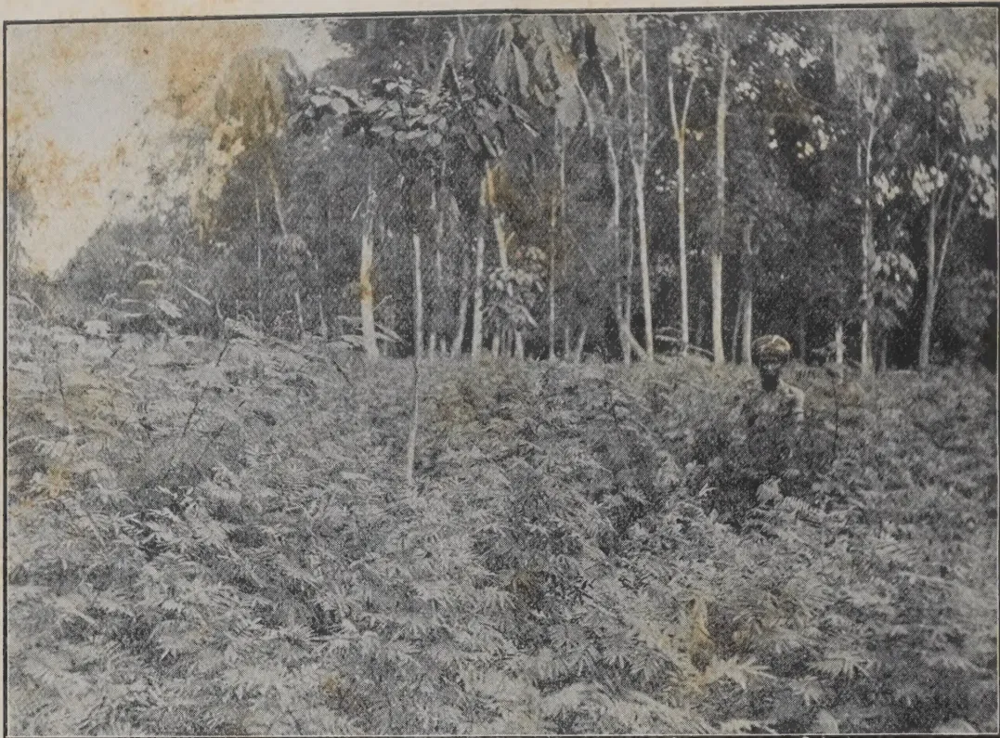
Photo by H. F. Macmillan.
BOGA-MEDELLOA. Tephrosia candida.
An excellent green-manure and cover crop, aged 4 months, as grown at the Botanic Gardens, Henaratgoda.
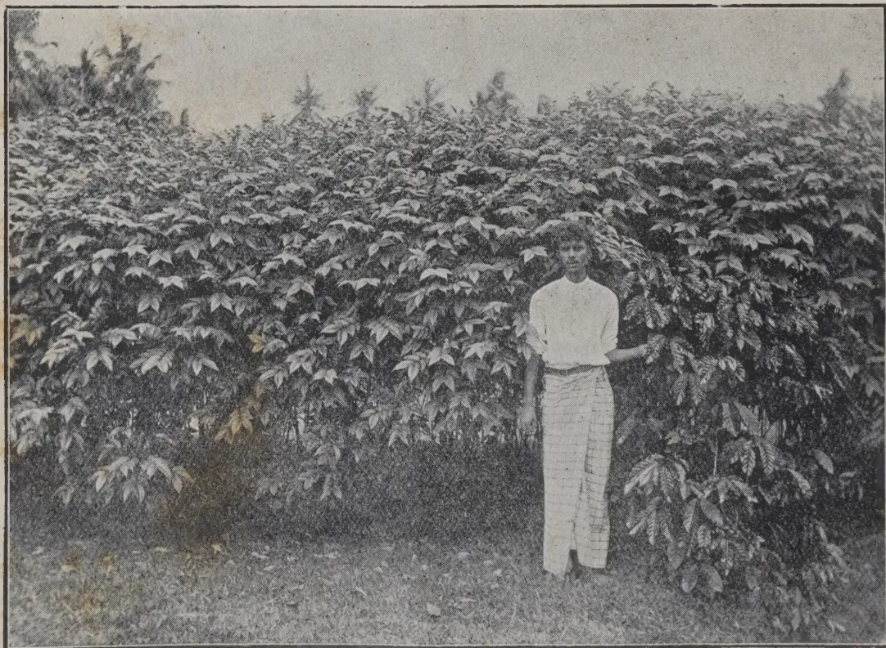
Photo by H. F. Macmillan.
CASSIA HIRSUTA, showing 4 months growth, at the Experiment Station, Peradeniya.
(See page 51)
676
THE
TROPICAL AGRICULTURIST:
JOURNAL OF THE
CEYLON AGRICULTURAL SOCIETY.
VOL. XLIV.
COLOMBO, JANUARY, 1915.
No. 1.
MANURING TEA.
The results of the Experiments with Green Manures for Tea in progress at Peradeniya were brought up-to-date in Bulletin No. 9 of the Department of Agriculture published in May of last year. The object of these experiments is to determine whether nitrogen, the most expensive ingredient in artificial manures, could be supplied to tea by growing leguminous plants in the gardens to fix the free nitrogen of the atmosphere. The money expended upon nitrogenous manures in Ceylon amounts to close upon £ 300,000 per annum, a good proportion of which is on account of tea. This is therefore a matter of some concern to shareholders.
The plots, 15 in number each about one acre in extent (figures are corrected for acres), have been under experiment since 1906. Each has been given yearly 200 lb. basic slag and 60 lb. sulphate of potash in order that the tea should not suffer from a want of mineral food. It will suffice if we examine the results of the five plots of Manipuri indigenous, a variety well suited to the elevation (1,600 ft.).
Four were planted with green manures and one left as control. The effect of treatment was not noticeable till 1907, scarcely even then, so the year 1906 may be neglected. Crotalaria (2 plots), Dadaps (Erythrina) and Albizzias were the green
2[JANUARY, 1915.manures used and the mean yearly yields of made tea per acre for the 7 years 1907-13 were as follows:—
| Plots. | Tea per acre lb. |
Relative yield |
|---|---|---|
| 146 Control | 975 | 100 |
| 147-8 Crotalaria | 1,083 | 111 |
| 149 Dadap | 1,290 | 133 |
| 150 Albizzia | 1,015 | 104 |
Dadaps increased the average yield by 33 per cent., Crotalaria by 11, but these proportions do not represent the benefit the tea was deriving from the green manures. As humus accumulated year by year we should expect to find results improve correspondingly and this is in fact what happened:—
| Control Tea per acre lb. |
Relative yield | Dadaps Tea per acre lb. |
Relative yield | |
|---|---|---|---|---|
| 1907 | 700 | 100 | 767 | 109 |
| 1908 | 591 | 84 | 780 | 111 |
| 1909 | 839 | 119 | 1296 | 185 |
| 1910 | 1167 | 167 | 1445 | 206 |
| 1911 | 1263 | 180 | 1720 | 246 |
| 1912 | 1028 | 147 | 1262 | 180 |
| 1913 | 1240 | 177 | 1760 | 251 |
In the seventh year after treatment the Dadap plot, the yield of which had increased by 142 per cent. since 1907, gave 520 lb. of made tea per acre, or 74 per cent., more than the control for the same year. The other green manure plots though not so good as Dadaps which are particularly suited to this elevation also showed substantial increases over the control the seventh year. The trials have, it will be seen, demonstrated that leguminous plants can be cultivated among tea with most beneficial results.
The value of Phosphoric acid and Potash as food for tea is illustrated in the experiments by the behaviour of the control plot which, under these manures alone, showed an increase of 540 lb. or 77 per cent. the seventh year as compared with the first.
JANUARY, 1915.]3The results of some tea manuring experiments on Pitakande group, Ceylon, covering 6 years from February 18th, 1898, to January 31st, 1904, designed apparently to illustrate the value of manuring tea, furnish some noteworthy results. There were 10 plots one being left unmanured as a control. No. 10 was dressed with "extra dissolved guano" and though taking the average of the 6 years it came out slightly ahead of the next in order, the results lose greatly in value by our not being told what the guano was. In the sixth year it fell to sixth place. The plot that did best was No. 7 with a mixture of Castor cake, Fish, Sulphate of ammonia and Nitrate of soda, all of them nitrogenous manures. This mixture it will be observed contained no purely phosphatic manure, fish containing a very much lower percentage of phosphoric acid than, for example, bone meal or basic slag. The plot, which was first in the sixth year received less phosphoric acid than any other except No. 4 which was seventh and received practically none at all. No. 3 was the only plot that received no nitrogen but phosphoric acid and potash only [Basic Slag and Sulphate of Potash] and of the manured plots was last in order throughout. The comparative failure of phosphatic manures in these tea manuring experiments is significant.
But the most remarkable feature about the Pitakande experiments is that after the third year was passed a sudden and serious drop in yields occurred which with a slight recovery the fifth year was maintained in the sixth. The average for the manured plots in 1898 was at the rate of 1012 lb. made tea per acre, that for 1903, 540 lb.; a falling off of 472 lb. All the plots partook of this decline including the control which fell from 707 lb. to 357 lb. It was not presumably due to pruning which it is stated took place in 1899, 1901 and 1903, at equal intervals throughout the course. Finer plucking might have been resorted to which would account for it to some extent but it is not possible from the published accounts to determine what happened.
R. N. L.
4[JANUARY, 1915.E. B. SKINNER.
On one estate where the trees were planted at 14 ft. by 24 ft., the yield was very good until about the sixth year of tapping. The trees were then a good deal overcrowded, and it became quite noticeable that the yield was falling off. At the same time, the renewed bark surface became uneven, and it was impossible to avoid wounding, in fact many of the trees in this area felt the effects of tapping so much that they became permanently injured, and that in spite of the fact that the standard of tapping on the estate was very good, and that wounding on normal bark was of rare occurrence. It was then decided to cut out the worst trees, in order to save the better ones, to stop tapping entirely on renewed bark, and to tap lightly on original bark above the bark that had been tapped previously. The trees were therefore reduced from about 200 to about 90 to the acre.
The result of this was that the yield per tree for the following year rose 80 per cent., and the renewal of bark showed signs of great improvement. It is now four years since this was done, and the bark renewal is so good that the trees are not fit to be tapped below, on the surface which had suffered so severely previously. The yield has also become normal, and gives promise of increasing yearly.
At the same time it must be noticed that the renewal of bark, though satisfactory, has not been so rapid as it would have been had these favourable conditions been established earlier. The head of leaf when cutting out was begun was very small, and it will still be some time before the trees produce branches and leaves enough to give the very best yield. Similar results were obtained on another area where the trees were originally planted at 10 ft. by 10 ft. When tapping was started, there were about 300 trees to the acre. These were first reduced to 100, and afterwards were gradually thinned out until the whole number is now about 60 to the acre. It is interesting to note here that at its best this area yielded as much as over 900 lb. per acre, but after reaching this point the area rapidly showed the results of close planting, and before thinning out began the yield had dropped to below 400 lb. per acre, and the trees showed bad renewal of bark, low percentage of No. 1 rubber, and all other effects of close planting. Other areas may be mentioned, planted originally at 20 ft. by 20 ft., where the trees were not thinned out until they were about nine years old. At this time the surface of the trees had not begun to suffer, but it was noticeable that the yield had ceased to increase, and had even begun to fall off, that the bark renewal was becoming slower and slower, and that the branches had dropped off, and were being replaced by suckers. The growth also remained practically stationary. These trees were thinned out, leaving from 70 to 80 to the acre, according to local conditions.
JANUARY, 1915.]5Our experience in these cases as in many others has, then, convinced us that thinning out of closely planted areas leads surely and certainly to an increase in the yield and a quicker renewal of the bark.
We may now proceed to consider the second great advantage claimed for a widely planted, or severely thinned out estate, over a closely planted one, namely:—
The greater economy with which it can be worked.
First, let me emphasize again what I have already pointed out, that the yield from, say, an area of widely planted trees will be as great as, or greater than that from an area of closely planted trees. Bearing this fact in mind, it may be asserted in the first place that fewer coolies will be required for tapping since fewer trees will have to be tapped to produce, say, one pound of rubber. I have heard it said by the critics of thinning out that a coolie who taps an acre has to cover an acre, and that if his task is, say, 300 trees, he will get through it quicker if they are all on one acre than if they are on several. In fact, however, it is not the actual area on which the trees stand which counts, but the number of rows up and down which a coolie has to walk, and it is obvious that there must be more rows of trees in an acre bearing 300 trees than in an acre bearing, say, 70 trees. The coolie's task is not proportionately increased if he has to cover four acres widely planted, as he has fewer rows to walk up and down.
In view of the excellent results obtained by contract or bonus tapping, we may also look at the matter in another way. On a widely planted estate, though a coolie has to take a few extra steps between each two trees, he has to make fewer cuts to obtain his given amount of rubber; he has fewer spouts to clean, fewer cups to wash, fewer cups to put into position for the collection of latex, and fewer shavings to collect. It follows, then, that he may be expected to bring in more rubber as a daily task, from a widely planted estate than from a closely planted one, and hence there is also a great saving in the cost of collection. We may take it that a fewer coolies are required to produce the same amount of rubber where the trees are widely spaced, and fewer coolies means a smaller wages bill and a lower f.o.b. cost.
Other economies also result. On the basis of an acre bearing, say, 70 trees yielding as much as one bearing, say, 150 to 200 trees, an enormous saving is effected in the outlay on cups and spouts. This is so patent that we need not go into calculations of the cost of one cup or one spout, and multiply by 70 or 200 to show exactly what is saved. It is quite certain that a great deal of expense is saved on spouts and cups, meaning an appreciable amount per pound of rubber.
Under present market conditions the proportion of No. 1 rubber to the other grades is a very important question. A few trees produce a large quantity of rubber, and fewer spouts are required, so the quantity of scrap rubber is reduced. The same is true of cup washings and shavings, since fewer cuts and cups are required to collect the same quantity of rubber. Hence a higher proportion of No. 1 rubber to the total crop, and a larger average price realised.
It must certainly have fallen within the experience of some planters that weeding has become more expensive where an area has been freshly thinned out. More light penetrates to the ground, and in consequence more seeds
6[JANUARY, 1915.germinate, and a larger crop of weeds is the result. We have always found that the cost of weeding has gone up after thinning out has taken place, but we have never found this effect to be other than temporary. On a well-weeded estate such a flush of weeds is very easily controlled and if the newly grown weeds are not allowed to seed, the cost should not increase for more than one month or so, after which the increased spread of the branches produces shade and hinders the growth of the seeds. Where the weeds are not removed the mischief is, of course, more serious, though even here the rapidly increasing spread of the branches of the remaining trees would tend to check the weeds in time.
We may say, then, that by thinning out fewer coolies are required to produce each pound of rubber, fewer cups and spouts are used, less low grade rubber is produced, and expenses (except some times temporarily for weeding) are substantially reduced in many directions. From our experience it seems undoubted that the latex of well renewed bark from widely spaced trees yields a much higher percentage of No. 1 rubber than the latex from closely planted trees. From the evidence we have been able to collect so far, the difference appears to amount to not less than 10 per cent.—INDIA RUBBER JOURNAL.
LEO E. MILLER.
The trees are girded with strips of palm pith at the base which intercept the latex and deflect it into a folded leaf placed underneath. This system is rather wasteful and injurious to the trees. There is no fixed rule or custom for tapping the trees, the men hacking into the bark at random, but occasionally the herring-bone pattern of cut is used. Each man has two routes, and endeavours to have from three to five hundred trees on each, seldom more, often less, according to the abundance of the rubber trees in the locality. He takes one trail one day, and the other the next, thus permitting the trees to rest on alternate days. If it rains the day's catch is spoilt as latex mixed with water is worthless. The season of 1913 had been a poor one; at the beginning the flow was abundant and of good quality; one hundred pounds of latex yielding sixty pounds of rubber. That was in December; by May five hundred trees were producing only twenty-five pounds of milk, and this was of such poor quality that it contained but 40 per cent. of rubber. Of course, the trees had become weakened as the season advanced, which also accounts for the decrease in yield, but the main trouble had been almost constant rains long before the regular wet season. The milk was weighed as brought in by each man at midday and credited to his account; in the afternoon the whole force repaired to smoke-house to work up the day's catch. A kind of wood called Mazarandul is used exclusively for the smudge; it is of a deep reddish colour and grows plentifully along the river.
The cost of transportation between the Upper Orinoco and Ciudad Bolivar is enormous. In the first place, the distance is very great and the river is full of rapids, necessitating long overland portages: all provisions
JANUARY, 1915.]7have to be brought up, and the crude product has to be taken back down ; there is always a great loss both ways from theft and wreckage, and as there is no regular system of navigation beyond the mouth of the Apure, the difficulties encountered in securing boats and crews are tremendous.
In the working camp (at Calama on the Madeira) conditions are better than in many other regions. A rigid set of rules has been formed regulating the tapping of rubber trees, with which all tappers are compelled to comply in bleeding the precious Hevea Brasiliensis. At first a long-handled, narrow-bladed axe is used, which enables the men to make an incision at twice their height from the ground. No tree is touched unless it has a circumference of at least four spans (all measurements are made with the hands, for convenience) and all cuts must be two spans apart, so that if a tree has a circumference of twelve spans, a circle of six spans is made each day. At first these cuts are of too great height above the ground to permit of cups being placed to catch the latex, but they are necessary to stimulate the flow on the sap, which nature intends to cleanse and close the wound so that it may readily heal. To facilitate the healing process the cut is not made at right angles with the tree, but slantingly. Each day a new ring of cuts is made one span below that of the previous day, so that within a week after starting a tree the cuts are within reach and the flow of milk is sufficient to be collected. A small tin cup is pushed into the bark under each incision, into which the sap flows. A short-handled axe is now used and the rows of cuts, one beneath the other, are continued until the ground is reached, when new ones are started just half-way between the old ones, and this is continued indefinitely so that the original openings are not reached again until many years later when they have of course completely healed. The collector starts out in the early morning making the cuts and placing the cups, then he retraces his steps and collects the catch. Should the day be very windy he will probably find that instead of a liquid each cup will contain a neat little white cake of cheese-like consistency ; the natives attribute this coagulation of the latex to the action of the wind, but the real cause may be traced to the multitude of small particles of bark and twigs that have fallen into the cup ; if the cake be cut open, a great many impurities will be found imbedded in the interior like raisins in a muffin.
Great care must be exercised in smoking the latex of Hevea. If allowed to stand too long, the finished product will contain numerous small holes, like a cheese, and will be graded as of inferior quality. If prepared while perfectly fresh, it is smooth and firm and of the best quality. In preparing rubber in the old way—that is by pouring the latex over a paddle and revolving it in a column of smoke until a ball weighing several hundred pounds had been formed—there was always a considerable amount of loss to the producers, and for the following reason :—It required the run of many days to produce a ball of this size with the result that on some days the latex was prepared properly and a perfect layer was added to the rapidly growing ball, while on the other days the layer added was of a porous consistency. When the ball was finished and cut open for inspection the two qualities showed plainly and the whole ball, including the first-class layers, was classed as entre-fina or second quality.
The Asensi company has evolved a method of working up the latex that eliminates all this loss. Instead of the paddle, a wood cylinder nine
8[JANUARY, 1915.or ten inches in diameter and a foot wide is used ; there are low flanges on the ends, and the whole resembles a shallow pool. After having been smoked the cylindrical piece of rubber is slipped off the form and cut open, resulting in a flat slab. This process possesses many advantages. Each slab represents one day's work for one man ; the quality of the rubber is immediately visible, and the surface presented to the smoke is so large that it takes less time to prepare the latex. The flat slabs pack easily and save all the space that is lost in packing the large, unwieldy balls ; there is no possibility of mixing the two qualities, and the slabs dry perfectly and cut down the dead weight of water. In smoking the latex of Hevea brasiliensis the nuts of Attalea excelsa are used exclusively for the smudge.—
INDIA RUBBER WORLD.
A. BETHUNE.
In 1907, when the potentialities of the rubber growing enterprise were beginning to attract attention, MR. H. K. RUTHERFORD called together a few Ceylon and Malay States planters and merchants, and the R. G. A. was founded. In 1912 it became an incorporated association, and has since gone on from strength to strength. The membership now consists of nearly 400 companies, with a capital exceeding fifty-millions sterling, and over 200 private members. In 1909, mainly at the suggestion of MR. G. A. TALBOT, it was decided to institute a research fund, the object being to improve the manufacture of rubber on estates, and to keep a careful watch on the pests and diseases to which all tropical agriculture is subject. A full measure of success, has attended these endeavours, and now, while the treatment of all the diseases is thoroughly understood, the proportion of perfectly prepared rubber which comes forward increases year by year. It is not, of course, claimed that this is entirely due to the work of our research funds ; the local Governments maintain an efficient staff of scientists, and there are other agencies at work, but one assertion I can make without fear of contradiction, that without our contribution to the common stock, the British rubber industry would not occupy the position it holds to-day.
In the nature of things it has been found necessary, much as it is to be regretted, to confine the circulation of the many valuable reports issued to those who subscribe to the funds, and thus there exists in some quarters a good deal of ignorance as to what has been achieved, and even some scepticism as to whether any practical results have been reached. That this scepticism is not shared by those who know is shown by the facts that the number of subscribers is steadily increasing, and the Research Committee have allowed me in this article to give some general indication of the work being done. First of all the staff. At the head of it is the Research Committee, of which MR. TALBOT is chairman, and the present writer convener. The consulting chemists are MESSRS. CLAYTON BEADLE and STEVENS. In the Malay States there is a strong local committee, of which MR. J. MORTON, OF MESSRS HARRISONS AND CROSFIELD, is secretary. The Senior scientific officer is MR. SIDNEY MORGAN, A.R.C.S., F.C.S.,
JANUARY, 1915.]9and the mycologist, MR. O. T. FAULKNER, B.A. In Ceylon there is a similar committee, MR. L. M. W. WILKINS being secretary, MR. KENNETH G. MARSDEN, B.A., scientific officer and MR. A. T. REEVE mycologist. At intervals of three months or thereabouts, reports are issued made up from information supplied by local to the London chemists. These are sent to all subscribers or guarantors. In addition, from time to time local reports are furnished to the local committee of control, and copies of these are sent to London. Of what, it may be asked, do these reports consist? Simply of the matters which occupy the mind of the rubber planter. The three most recent reports lie before me, and I select at random a few of the subjects treated. The Byrne-Jackson curing process: Variation in plantation rubber: An interview with a rubber manufacturer: The principle of smoke coagulation: Comparative cost of handling sheet and crepe: Percentage of grades: The use of sodium sulphite: Sheets stretching rusty: The influence of the tapper's skill on yields.
I have referred to our having chemists in London and in the East, and it should be added that we possess well-equipped laboratories in the Malay States on Pataling near Kuala Lumpur, and at Ceylon at Culloden in the Kalutara district. In London the consulting chemists have, of course, their own laboratory, with a volcanizing plant as well, and samples are constantly passing to and fro for examination and report.
Without going too deep into technicalities there is one point bearing on the good work done by our chemists which may be here referred to.
At the recent Rubber Exhibition, the R.G.A., owing in a great measure to the energy of our present Chairman, MR. JOHN McEWAN, was much in evidence, and amongst other features, some interesting conferences with manufacturers were arranged. One point which prominently emerged was the advice given us not to "work" our rubber too much, in other words, whenever possible to make sheet instead of crepe. In some quarters this has been hailed as a wonderful new discovery, but as a matter of fact, this is the advice which our London chemists have been giving us for years. This is not to say, of course, that there is no use for crepe. For the American market, and for medical purposes, it will probably always be wanted, but the trend of opinion is in favour of sheet, and the services of DR. STEVENS and MR. MORGAN in this regard should not be forgotten.
Those who have only a bowing acquaintance with the great rubber industry sometimes asks this question: "What is the use of all your researches if when all is said your rubber fetches a lower price than hard Para?" I think I can answer this objection in six words—the age of miracles is past. When we consider the limited and stationary production of hard Para, some 15,000 tons, the ultra-conservatism of manufacturers, especially in this country, and the unsuitability of their machinery and methods for a new and different product, the leaps and bounds with which our production has increased, the number of weak companies begotten by the rubber boom, which are always eager sellers, when, I say, we consider all these things with an unbiased mind, we must indeed marvel that the difference between the two classes is so small. What we have got to do is not to worry about the small and decreasing gap between the two, but to make our product equal to or superior to anything that can be brought in
10[JANUARY, 1915.competition with it. Prices will then adapt themselves to circumstances. Even now it is claimed that the best smoked sheet is equal in all respects to Brazilian rubber, but all the rubber shipped from the Estate is not best smoked sheet. Here other considerations come in. All estates are not furnished with sufficient drying accommodation and modern machinery. All planters are not Admirable Crichtons, and there is much yet to be done; but if we aim at the sky we may at any rate hit the top of the trees. It would appear from the testimony of our customers that we know how to make the rubber that pleases them, it remains to get the largest number of producers to conform to the best methods of reaching that result. I know no better way of forwarding the object we all have in view than by supporting Malaya and Ceylon Research Funds of the Rubber Growers' Association.
Note.—The following particulars are taken from a pamphlet issued in June:—
Ninety-six companies guarantee £2,562 per annum for the same purpose in the Federated Malay States.
Fifty six companies guarantee £2,325 per annum towards the expenses of chemical, botanical and other scientific research work in connection with the rubber industry in Ceylon.
INDIA RUBBER JOURNAL.
Travancore:—A planter writing on Dec. 5th furnishes the following interesting details re catch crops in rubber clearings:—
Being interested in the catch-crop question in new clearings and reading the article contributed by a correspondent in your November issue under that head, I send you the following results obtained here for what they are worth. I have had 24 years' experience of various products. This estate is on low-country level at the foot of the Ghats, with an annual rainfall of 70 inches fairly well distributed. The clearing was commenced last year, and rubber planted in June. Cassava was interplanted over 40 acres, and Cambodia Cotton over about 100. The Cassava was harvested from August to October this year, remaining in the ground 12 to 15 months. There are varieties here that have to be taken up in 6 months, but others are better left for over a year as the tubers increase greatly in size the latter 6 months. The cuttings were planted about 5 feet apart on ground previously loosened up about 4 inches. This is not sufficient but I was pressed for time. The crop gave Rs. 1,250/- which is about Rs. 30/- per acre. Only 3 feet each side of the rubber was left uncultivated, and this without doubt was too close and retarded the growth of the rubber in that area. This year I am allowing 6 feet on each side and the rubber seems not to be affected. I have also dug the ground deeper, forming beds across the slopes about feet, with a
JANUARY, 1915.]11catch drain alongside each. This holds all the rainfall even during heavy showers. Cassava being very exhausting, I have found that even on very good soil it does not pay to plant after the third year. On virgin soil with good cultivation I have obtained Rs. 100/- per acre. I made some into flour; 100 lb. raw root yield 11 lb. flour, costing Rs. 1.30 to make.
Cotton does not pay. I only got Rs. 120/- but have left it over for another year without pulling it up and although this year's yield will be four times last, yet it is not profitable. The rainfall is too heavy. I have found it to succeed only where rainfall is about 20 inches with irrigation at intervals. I have this year put in besides the above, groundnuts, gram, ginger, and a few other minor products; it is too early to harvest but I shall be glad to send you the results in about 2 months. I should mention that the rubber is planted 30 feet between the rows to enable catch crops to be grown.
C. D.
M. SYDNEY PARRY.
Most people, I presume, regard the management of a rubber estate solely from the local point of view, i.e., they think of the work to be done by the planter on the spot. These same people doubtless regard a Director of a rubber company merely as they regard an M. P.—a person who draws £400 a year, talks and votes, signs papers. They forget, however, that the M. P. as well as the Director, has many arduous duties, often very technical, responsible ones, which in the case of M.P.'s are entirely unpaid, and proportionately unknown, e. g., Technical Committees of the House of Commons.
The beginning of many a rubber company is with its directorate—I am referring to the balmy boom days—so that properly speaking, the papers on the management of an estate should begin with the duties of a board in relation to it.
What in fact has a board to do besides sign cheques, dividend warrants, pass transfers, and sign and seal share certificates? The board, in addition to these formal duties, has many questions of policy to decide, how much is to be felled, whether tapping should be temporarily suspended, whether crops should be sold forward, whether a costly scheme of subsoil drainage should be undertaken, or whether a scheme of water supply should be laid down; most of these points requiring some degree of technical knowledge, and an understanding of local conditions. A typical agenda of a board meeting embraces the following points:—
(1) Consideration of the financial condition of the company.
(2) A statement showing how much crop has been harvested, how much sold and at what price. Attached to the same schedule there is usually a statement showing how much has been spent on capital and revenue account, and from this statement a director should know approximately what profit is being made.
Should the company not be in a bearing stage, the statement shows how much has been spent on felling, cleaning, and planting, drainage, buildings, etc.
12[JANUARY, 1915.It may be here stated that each year estimates are drawn up by the local management, which have been in the first place checked, and controlled by the local agents, or visiting agents. These estimates are submitted for the board's decision, and the expenditure has to be carefully examined and compared with the estimates.
Though to a large extent the board must be influenced by the opinion of its local management, it still has the power of deciding how much is to be opened, at what distance trees are to be planted, the nature of the buildings to be erected, i.e., whether they are to be of a permanent character, e.g., whether steel and corrugated iron coolies are to be built, which it is assumed will last a life-time, and save depreciation, or whether wooden houses and attap (a kind of palm) roofs, which require renewal every three or four years. When the estate is nearing the tapping stage decisions have to be taken on the rival methods of basal V.S., half herring-bone, etc. As a corollary methods of curing have to be decided, which involve the ordering of factories, the erection of engines, machinery, etc.
Hospitals have nowadays to be built on all estates. These involve again decisions as to their nature, their situation even often comes up, the opinions locally differing at times.
(3) The consideration of the Eastern correspondence since the last board meeting. The length of time taken over this item on the agenda depends on two points:
(a) The efficiency of the chairman;
(b) The competency of the secretary to "devil" and set out clearly the points arising out of the correspondence, requiring decision.
Hours are sometimes wasted by an inefficient or over-worked chairman, who has not read his correspondence, and who consequently asks various questions which he should have already informed himself on.
The secretaries or secretary are too often responsible for long meetings. Some secretaries are "pernickity," cavil over every item; others, ignorant of the local conditions, advance points which the technical man on the board has to explain and upset.
An extensive knowledge of boards leads me to prefer chairmen who know their subject, and go direct for the points under discussion, having already made up their own minds. I prefer, too, the "pernickity" secretary to the careless, ignorant one.
(4) Transfers and signing of certificates.
This on the face of it, seems a very ordinary simple thing. It varies, however, very much, and is not so easy as it looks, especially when dealing with companies whose shares are partially held on the Continent. It is but human to die, and questions of probate duty for Continental shareholders, and a technical knowledge of English law are often requisite. Bearer shares, an ingenious method of avoiding Stamp Duty when shares are quoted three times over their face value, demand careful attention, and owing to the exigencies of the Stock Exchange, a fortnightly meeting.
The above points on an agenda do not seem very long, but they cover a wide field.
The duties of a director also involve the engagement of managers, assistants. This in itself requires on the part of a director some fair knowledge
JANUARY, 1915.]13not only of local conditions, but also of mental psychology ; the director who has to interview a would-be employee must be able to judge his man. If he is engaging a doctor he must go into his qualifications, his ability to adapt himself to the needs of the East, "where the best is like the worst:" "Where there ain't no Ten Commandments." Or an engineer, how far whisky is the applicant's enemy, for, to continue the quotation, the East is indeed a place "Where man can raise a thirst."
The would-be assistant or an assistant must be capable of commanding respect, nor likely to succumb to all the vices so well put by that knowing man from the East whom I have quoted.
The duties of a director are therefore manifold, responsible and sometimes arduous, very often involving the temporary finding of monies to avoid the issue of debentures.
In all cases the chairman, and at least one other member of the board should have either been planters themselves, or if the chairman has not been a planter he should have made periodical visits to the East, seen the property of whose destinies he is arbiter, and study the condition of life under which his employees have to live.
Directors have to bear all the kicks if things go wrong, and it therefore behoves them to understand for themselves the conditions of the estate, and to be able to give a good account of their stewardship to the shareholders whom they represent.—INDIA RUBBER JOURNAL.
F. T. BROOKS.
Certain persons have pointed out that these semi-parasites do not apparently cause much harm to rubber trees. This is because these troublesome plants have rarely been numerous in estates yet, but a few trees which I have seen heavily laden with them had evidently suffered severely. In England a single mistletoe on an apple tree does little harm but if mistletoes are allowed to develop with impunity the trees are greatly weakened and the crop becomes negligible in consequence. In the same way any considerable development of parasitic flowering plants on rubber trees would cause general weakening of the trees and a lessened output of latex. Hence it is unwise to allow these parasitic growths to develop on rubber trees and all branches bearing them should be cut out as soon as discovered. Care should be taken to cut back the branches well beyond the point to which the external creeping stems of these parasites extend. In the species of Loranthus under consideration these creeping stems give off suckers every here and there which form the means of attachment to the host and the channels by which certain food substances are obtained. The suckers are of two kinds—those which penetrate the tissues of the host to the wood and those which do not pass beyond the bark, many of the latter in fact being merely adhesive discs loosely attached to the exterior. Suckers which penetrate the wood often become much swollen and the stems of the host in the immediate vicinity are also abnormally developed, the whole producing a knob of hypertrophied tissue. These parasites travel along the host by means of stems which creep over the exterior.
14[JANUARY, 1915.Many kinds of Loranthus are very common in the tropics and any one species usually grows upon several different kinds of hosts. One species of Loranthus found on rubber trees has also been seen on the Melastoma which is one of the commonest shrubs of the roadside and of waste places in this country.
These semi-parasites are disseminated by means of birds which deposit the seeds on the branches of trees and shrubs. As stated in the February number of the AGRICULTURAL BULLETIN these troublesome plants are much more likely to develop on trees which are in poor condition or which throw little shade than on those which have a dense leafy canopy.
In this connection it may be mentioned that harmless epiphytic plants on coconut and rubber trees are sometimes mistaken for dangerous parasites. Quite recently a number of coconut palms were thought to be seriously affected by the common epiphytic fern Drymoglossum which was growing in considerable abundance on the stems. This fern, however, is harmless for, like other epiphytes, it does not penetrate the interior and so does not withdraw nourishment from the plant to which it is attached. Trees are not adversely affected by the many different kinds of epiphytic ferns and flowering plants which often grow upon them in tropical countries; on the other hand parasitic flowering plants like Loranthus which penetrate the interior of the plants to which they are attached cause considerable damage to their hosts.—AGRICULTURAL BULLETIN.
This variety of melon, according to MR. W. J. LAMONT of the Cape, is reported to have come from the arid parts of the North of the Colony. It is oval-shaped and characterised by a distinct pattern on the rind. It is green at first and becomes white as it ripens. Under favourable conditions the fruit attains to 50 lb.
Planting may be done in hills (2 or 3 seeds in each) 9 feet apart, and the seeds buried about 2 inches below the surface. At this rate 2 or 3 lb. of seed will suffice for an acre.
Harvesting is done when the vines begin to wither. Planted in November the crop could be gathered in May. At Grootfontein the yield secured from one acre was 50 tons.
Well matured fruit if carefully stored have been known to keep in good condition for 18 months after harvesting.
On irrigated land this melon stands drought well and with 2 waterings—though the rainfall was only 3 inches during the growing period—the crop as stated was as much as 50 tons.
The feeding value as shown by DR. J. LEWIS, Analyst, Grahamstown, is as follows:—Water 93.32, fat .20, protein .87, carbohydrate 3.35, crude fibre 1.72, ash .54.
Seeds of this melon have recently been distributed among local members of the Agricultural Society.
C. D. JANUARY, 1915.]15Large quantities of copra have been exported during recent years from British Possessions to Germany and Austria-Hungary, and as this trade has totally ceased owing to the war it is necessary to consider the question of finding other markets for the produce.
The following table shows the imports of copra into Hamburg and Austria-Hungary during 1913 and will give some indication of the extent of the total trade and of the share of British Possessions. Hamburg is the chief centre of the German oil-seed crushing industry, and it is probable that the shipments of copra to that port practically represent the total German imports.
Imports of Copra in 1913 to Hamburg and Austria-Hungary.
| Quantity metric tons (2,204 lb.) |
|
|---|---|
| Hamburg.—Imports from all sources ... | 230,395 |
| " " British Possessions ... | 124,434 |
| Austria-Hungary.—Imports from all sources ... | 33,604 |
| " " British Possessions ... | 29,177 |
The details of the imports from the British Empire are as follows :—
Imports of Copra in 1913 to Hamburg and Austria-Hungary
from the British Empire.
| Hamburg metric tons (2,204 lb.) |
Austria-Hungary metric tons (2,204 lb.) |
|
|---|---|---|
| United Kingdom ... .. | 225 | — |
| British Central and South America | 195 | — |
| British Africa ... .. | (not given) | 774 |
| British East Indies ... .. | 112,341 | 22,104 |
| Australia ... .. | 10,653 | 6,299 |
| British South Sea Islands ... .. | 1,020 | |
| 124,434 | 29,177 |
These figures are not quite accurate and complete. Some imports from British West Africa reach Hamburg but are not separately shown in the returns for that port. The imports from Australia to Austria-Hungary include 608 metric tons from British Australia and 5,691 metric tons described merely as from Australia, which may include some of the foreign possessions in the Pacific. The figures are however probably sufficiently accurate for the present purpose.
16[JANUARY, 1915.The quantity of British copra for which a new market must be found may therefore be taken as about 153,611 metric tons.
It seems likely that a considerable proportion of this can be taken by the United Kingdom. The copra imported into Germany and Austria-Hungary is used for the production of oil (coconut oil) and feeding cake (coconut cake). The quantity of coconut oil exported from Hamburg in 1913 amounted to 40,966 metric tons of which 30,236 metric tons was sent to the United Kingdom and 5,261 metric tons to Norway and Sweden, the next largest purchasers. Copra is already expressed for oil in the United Kingdom and coconut oil is made both in Ceylon and India. There appears to be no reason therefore why the coconut oil which is imported to the United Kingdom from Hamburg should come in this roundabout way. The oil might be expressed in Ceylon or India and shipped direct to the United Kingdom or the copra might be exported to the United Kingdom and treated here instead of in Hamburg.
Further, the Trade Returns for the United Kingdom show that in 1913 this country also imported about 18,600 metric tons of coconut oil from foreign countries other than Germany. The total imports of foreign coconut oil to the United Kingdom in 1913 therefore amounted to about 49,000 metric tons, corresponding to about 82,000 tons of copra.
It is moreover certain that from all these foreign countries which export coconut oil to the United Kingdom, and especially from Germany, considerable quantities of coconut oil also reach this country in the form of margarine, vegetable butter and prepared fats and foods of various kinds. No definite figures can be suggested for the amount received in this way.
It is clear from the foregoing statement that considerably more than half of the British copra hitherto exported to Germany and Austria-Hungary could be taken by the United Kingdom, either in the form of copra or coconut oil. Ceylon and India produce both copra and coconut oil so that these countries could probably divert their supplies in either form to the United Kingdom.
In addition to the possibility of finding a market in the United Kingdom there appears to be a considerable chance of the British Possessions securing a share of the French import trade in copra. In 1912 the total imports of copra into France were 153,506 metric tons. Of this total 19,691 metric tons came from British Possessions, and 10,321 metric tons from French Colonies. Of the remainder 43,422 metric tons came from the Dutch East Indies and 72,964 metric tons came from the Philippines. It ought to be possible for Ceylon, India and the Federated Malay States to compete on favourable terms with the Dutch East Indies and the Philippines for this trade. There also seem to be considerable possibilities of developing an export trade in copra with Denmark, Scandinavia and Russia, and possibly with Holland.
In the case of the United States, the imports of copra in 1913 amounted to 15,548 metric tons of which 10,674 metric tons came from the Philippines and the rest mainly from French, British and German Possessions in the Pacific. The imports of coconut oil to the United States amounted in 1913 to 22,915 metric tons of which about 18,000 metric tons came from Ceylon, India, the United Kingdom and Australia, and the rest chiefly from France, Germany and the Philippines.
JANUARY, 1915.]17The coconut meal used in animal feeding consists of the dried and ground flesh of the coconut from which the oil has been extracted. The particular sample used in this experiment had the following composition (per cent.) :—Water, 9.00 ; protein, 19.35 ; carbohydrates, 48.00 ; fat, 9.12 ; fibre, 8.64 ; and ash, 5.89 ; so that it contained rather less protein and fibre and more carbohydrates than the average of German samples. The food chosen for comparison was gluten feed, and this contained less ash and fat, rather more protein and decidedly more carbohydrates than the coconut meal.
Digestibility experiments with sheep showed the following amounts to be digestible (in lb., out of 2,000 lb.—coconut meal is given first) :—Protein 347.6, 397.2 ; carbohydrates 829.0, 949.6 ; fat 187.4, 46.6 ; fibre 40.4, 118.6 ; ash 75.4, 66.5 ; and total digestible matter 1479.8, 1578.5. If the fat is converted into its starch equivalent the coconut meal would seem to furnish 1,705 lb. and the gluten feed 1,634 lb. of digestible matter per 2,000 lb. fed.
The cows were selected and the comparative value of the two foods for milk production was ascertained. The basal ration consisted of hay and bran, five cows being fed on coconut meal and five on gluten feed, these two foods afterwards being changed over ; both foods were fed at the rate of 3.68 lb. per head per day. Substantially the same amounts of milk were obtained from the coconut meal as from the gluten feed, but slightly more butter fat was secured from the former.
It is believed that coconut meal is fully equal to gluten feed in nutritive value, although it is doubtful if it exceeds it. German observers consider it particularly desirable for dairy animals in amounts of from 3 to 4 lb. per head daily, and it has been shown to increase somewhat the fat content of the milk. Fed in excess of 4 lb. it is held to make too hard a butter.—JOURNAL OF THE BOARD OF AGRICULTURE.
After trials of sulphate of copper, sulphate of iron, and sulphuric acid in varying strengths, the author concludes that sulphuric acid in 6, 8 or 10 per cent. solutions (the degree of strength depending upon local conditions) is the most satisfactory spray to use. The solution was applied at the rate of 107 gallons per acre and killed most of the annual weeds, but it did not perceptibly retard the growth of wheat although the lower leaves were killed. This solution had the advantage of being effective in 3 or 4 hours, while the other solutions required 3 or 4 days. The sulphuric acid solution also had a fertilising effect on the soil.—JOURNAL OF THE BOARD OF AGRICULTURE.
18[JANUARY, 1915.DR. BUTLER, Imperial Mycologist, as delegate from India to the recent International Rice Congress at Valencia, has contributed an interesting account of the cultivation of rice in Spain to the October number of the AGRICULTURAL JOURNAL OF INDIA. It is not generally known that Spain is the second largest rice growing country in Europe with 96,000 acres under the crop, against Italy's 360,000. Rice is also cultivated in Bulgaria, Greece and France. The chief rice-growing province in Spain is Valencia. The system of cultivation in vogue is more akin to that of India than in other parts of Europe, and DR. BUTLER states that many of the practices followed and in particular that of transplanting, unknown elsewhere in Europe, are to be traced to the presence, at one time, of the Moors in Spain.
The following details will be of interest to our readers:—In preparing the land for sowing, the fields receive a first working while in a muddy state (say in January). This is done with harrows, derived from the Acme and Disc harrow, specially calculated to cut up and bury weeds (chiefly Leersia Oryzoides). The field is now dried off and receives the most important working of the year, viz., a thorough ploughing with a heavy draft inverting plough. Not long since the implement known as the "forcat" very similar to the paddy plough (sans mould-board) was in use, and the cultivators of Valencia consider the introduction of the inverting plough one of the greatest advances made in their hereditary occupation: and indeed its effects have been far-reaching. Horses are used for these heavy implements, and to meet the requirements of the rice cultivator it became necessary to improve the local breed of horses by the infusion of French blood in order to produce a more powerful type of animal. The object of this ploughing is to leave the soil exposed to the air in large masses and to dry it to as great a depth as possible. It is seldom, however, that a depth of 5 or 6 inches is exceeded on the heavy soils. In May, a few days before transplanting, the water is run into the field and a final pudding with the Draga (a modified acme harrow) or with horses alone is given to destroy weeds and reduce the permeability of the soil.
The fields are very heavily manured with green-manure but more usually with a mixture of sulphate of ammonia (40%), superphosphate (54%) and sulphate of potash (6%) at the rate of 600 to 800 lb. per acre. Guano is also used in some parts at about the same rate. Nitrates of potash and soda are considered unsatisfactory. The value of Manganese (found in Japan to increase the yield) it is suggested is due to its action as a catalyser, resulting in better oxygenation of the roots under certain conditions.
Seed beds are located on higher land than the fields and are some many miles away in localities selected as specially suitable. The relation of seed bed to field is 1 to 10 or 12. The transplanter works backwards, as in India, and plants clumps of 3 to 5 seedlings in holes 8 to 10 inches apart.
JANUARY, 1915.]19Six men will transplant a hectare (2.47 ac.) in a day. Harvesting is done with a sickle and the grain trodden out by horses or the labourers themselves with the help of a wooden fork for turning over the straw. The chaff is separated with the aid of the wind. Thrashers and winnowers are only now coming into use.
The following comparative figures quoted from the BULLETIN OF AGRICULTURAL STATISTICS show the position of Spain as a rice producing country:—
| Country | Area under rice in acres. |
Production in tons. |
Yield per acre in lb. |
|---|---|---|---|
| Spain | 96,000 | 246,000 | 5,700 |
| Italy | 360,000 | 534,000 | 3,300 |
| Egypt | 254,000 | 375,000 | 3,300 |
| Japan | 7,393,000 | 7,026,000 | 2,100 |
| United States | 827,000 | 517,000 | 1,400 |
| India | 70,580,000 | 28,167,000 | 890 |
The average for India must be accepted as a very rough one as there are many districts in which the yield per acre is quite double that given. It will be seen that the average yield per acre in Spain is about double that in Italy and over 6 times that in India. The excess over Italy is attributed to transplanting, and over India to heavy manuring and the use of better implements. It may be added that both Italian and Spanish authorities agree that the continued cultivation of a particular variety, without selection, in the same locality leads to degeneration, and that one of the most important factors in rice cultivation is the introduction of new varieties obtained by importation and selection. Japanese varieties are doing well both in Italy and Spain.
C. D.
THE MADRAS AGRICULTURAL STUDENTS' UNION JOURNAL for November last gives details of an interesting experiment in the manuring of paddy with fish by N. THEVAN at Erode.
An acre field was dressed with 5 bags of the fish manure and planted with single seedlings raised in a nursery. The crop secured was much better than one raised with the use of Tephrosia purpurea as green manure.
We quote the following particulars:—
In ordinarily planted fields which received Tephrosia leaves costing Rs. 20 the yield per acre was 10 salagais
In an acre of field which received fish manure costing Rs. 14 per acre the yield per acre was 13 salagais
| Thus the gain per acre in the cost of manure was | Rs. | 6-0-0 |
| The value of increased yield per acre, 3 salagais, was | „ | 18-0-0 |
| Total | Rs. | 24-0-0 |
A salagai of paddy weighs 160-168 lb.
C. D.
20[JANUARY, 1915.It is well known what an extraordinary number of varieties of paddy exist, for instance, 131 different kinds were grown on the educational plots at Coimbatore last year. Work on the district farms as far as varieties are concerned has hitherto proceeded as a general rule on two main lines, (a) the introduction and trial of varieties from other centres; (b) the improvement of the local strain by seed selection.—
(a) The testing of varieties from other centres has been mostly carried out at Samalkota, Coimbatore and Palur. At Samalkota the search has primarily been directed to find a variety which could be grown as second crop immediately following on the first as is customary in most districts where two crops are grown. In Godavari a month or more during all which time water is available, is allowed to elapse between the harvest of the first crop and the sowing of the second. It was to utilize this period that these trials were started in 1908-09, and have been continued ever since. So far nothing has been found to satisfy these conditions. Fifteen varieties were tried last year but only three grew at all and only one gave even a moderate outturn. Varieties of paddy when transported to other districts frequently lose their special characteristics and it requires trial to determine whether any special variety is likely to prove an acquisition to a district. So far Tanjore Sirumani and Tinnevelly Poombalai promise to be useful both at Coimbatore and South Arcot.
(b) At nearly every one of the farms selection and propagation of single selected strains are in progress and at Coimbatore the bulk crop is from a single plant selection. At Samalkota single plant selections have also been made, but as cross fertilization does occur to a limited extent the separation of pure distinct strains will be a matter of time. But the most promising strain so far separated is the one referred to in last year's report at Palur. It has this year given an acre yield of 2,528 lb. against the ordinary garudan samba yield this year of 2,218. If it maintains this superiority again efforts will be made to spread it in the neighbouring villages.
The reduction of the seed-rate for transplantation of paddy has been so consistently and regularly advocated that there is no need to refer to it at any length here. The whole of the wet land area at Coimbatore over 40 acres was transplanted from 2.11 acres of seed-bed on which 730 lb. of seed had been sown. This works out practically to 16 lb. of seed for each acre transplanted, whereas if the ordinary local practice were followed 106 lb. would have been used, and the returns from the land have not decreased.
The average yield over the whole 40 acres of wet land area of the central farm was 2,572 lb. of grain as compared with 3,762 lb., the highest revealed on ryots' land in the crop cutting experiments, at Samalkota the average over a similar area was 3,037 lb. as compared with 2,390 lb, the highest figure recorded for ryots' land in the Godavari this year.
Considerable attention is being paid at Samalkota, Coimbatore and Manganallur and to a less degree at Palur to the questions connected with the manuring of paddy. It may almost be accepted now that the most
JANUARY, 1915.]21suitable form in which to apply nitrogen to paddy is in organic combination whether as green manure or as cake. It is in one of these forms that nitrogen is now always applied on the farms to this crop. It is unfortunate that the wet lands at Coimbatore are so unsuited for experimental work as it requires much repetition there before results can be accepted with any certainty. But the results of five years' continuous work at Coimbatore, nine years at Samalkota and one year at Manganallur are all in substantial agreement. At Samalkota an average increased yield of 810 lb. of grain per acre per year over nine years has been obtained by applications of castor-cake plus superphosphate, at Manganallur an average acre increase of 630 lb. of grain has been obtained by an application of green leaf plus superphosphate, at Coimbatore a complete manuring with an extra dose of superphosphate has given an increased average yield per acre of 660 lb. per year over five years. The results are also in accord with chemical analyses of the soil. In all these cases also the increases in the yield of straw has been greater proportionately than the increase in the yield of grain. A careless observer using these manures might think that all the manure was going into the straw; yet these figures show that the increase of grain is decidedly appreciable. It would not be reasonable to push these figures too far as many questions connected therewith, e.g., on the financial side, on the form in which to supply phosphate, though so far all indications point to the use of superphosphate, require to be worked out. If the prices of paddy continue to rise a little more the extended use of such fertilizers should become a matter of regular business for such land and crops.
Considerable interest will, for some years, circle round the action of green manuring, since there are many problems connected with not as yet understood. Of all the essential elements which a farmer in the west buys for manurial purposes it is nitrogen which is the most expensive, but generally speaking paddy cultivated under swamp conditions utilises nitrogen presented to it in organic combination much more thoroughly than when in combination with minerals. This is most fortunate for the tropical farmer, for green leaf and green manuring are much cheaper than nitrates, etc., in fact there is no comparison, but it is also obviously more difficult to grow and manage a green manure crop than it is to distribute over a field a certain number of pounds of nitrate. Thus it was reported last year, that on the heavy delta soils at Manganallur the application of a green manure crop in the ordinary way on these fine soils had temporarily interfered with the drainage and the paddy crops had failed. MR. SAMPSON had surmised that in this year the fields would probably show the benefit of the green manure crop they had received, consequently no further manure was given to them. The figures are so striking as to merit repetition in full.
| 1911-12. | 1912-13. | 1913-14. | |
|---|---|---|---|
| Field Number. | Treated in the ordinary method prevailing in Tanjore. | Green manure applied, crop failed. | No further Manure added. |
| 1 | 1,149 | 205 | 2,251 |
| 2 | 1,066 | 164 | 2,332 |
| 3 | 1,206 | 253 | 1,963 |
Other experiments were laid down to try other methods of managing the green manure but whilst none of the paddy crop failed yet the results are too inconclusive at present to draw any inferences. The general effect of seed selection, and green manuring in maintaining the fertility of rice land is indicated from the figures of Palur which station was opened in 1906-07. The average yields of paddy per acre over the whole farm in 1907-08 and in 1909-10 and in each succeeding subsequent year have been 1,777 lb., 1,751 lb., 2,791 lb., 2,838 lb., 2,934 lb., 2,639 lb. and in the latter years as it has all been transplanted with single seedlings another 70 lb., per annum per acre have been saved in seed. The last year was not a favourable one on account of the floods.—MADRAS AGRICULTURAL DEPARTMENT REPORT.
Brusome is regarded as one of the most serious diseases of rice in Italy in view of the great loss of crop involved, but little has been known as to the exact nature and the cause of this so-called disease though the phenomena connected with it are familiar wherever rice is cultivated.
DR. BUTLER, Imperial Mycologist of India, is of the opinion that a number of distinct affections have been confused under the same name. The resultant condition as far as the crop is concerned is that the grain fails to reach maturity, when it is locally described as "boll," and it is suggested that the name be confined only to cases where this condition cannot be ascribed to the action of parasitic organisms.
In the discussion at the recent Rice Congress at Valencia general agreement was shown in considering brusome as a physiological degeneration hastened by the action of ill-defined external conditions, climatic as well as cultural. In Spain the prevalence of westerly winds are considered a predisposing cause : in India the effect is ascribed to the south winds. Other alleged predisposing causes are the deficiency of oxygen in the water, impoverishment of the soil, sudden variation of temperature, etc.
The experience in Italy is that the introduction of exotic varieties of paddy helped to allay the trouble, and the Director of the Vercelli Station believes that in this means a satisfactory method of fighting the disease has been found. Where new varieties (chiefly Japanese) have been introduced, and care is taken not to grow one variety too long in the same fields and under the same conditions, brusome is said to have lost its terrors. This is without doubt a most important announcement which DR. BUTLER makes in his valuable report on the proceedings of the Congress.
C. D. JANUARY, 1915.]23The three samples of Jaffna cigars which are the subject of this report were forwarded by the Director of Agriculture at Peradeniya with letter No. 3,968 of the 26th September, 1914. It was requested that the cigars might be submitted to a firm of merchants for an opinion as to whether they would be likely to find a market among sailors and others in the United Kingdom.
The three samples are as follows :—
| No. 1 | consisting of | 100 | cigars | weighing | 24 | ounces. |
| No. 2 | " | 100 | " | " | 13 | " |
| No. 3 | " | 100 | " | " | 10 | " |
All the cigars are made of tobacco of similar quality, and practically the only difference between the three kinds is their size, which is indicated by the difference in weight per 100 cigars mentioned above.
The following description may be taken as applying to all the samples.
The cigars are wrapped with a fairly thin leaf, which varies in colour from dull brown to very dark brown, and shows many "burns," some of which have degenerated into holes. The "bunch" or "binder" consists of coarse leaf, which is nearly black on the inner binding surface. The filler consists of very coarse leaf with prominent veins, and of a dull brown nondescript character.
The cigars have a distinctly ammoniacal odour, and reddened litmus paper suspended near them rapidly turns blue.
All the cigars are rolled too tightly and are consequently difficult to smoke. They burn fairly well and hold fire moderately well, but on smoking they show a heavy black "lip" and leave a rather dark grey ash, which is loose and flocculent. By the time the cigars are smoked one quarter through, they become soft and sodden, and acquire a most unpleasant odour of stale tobacco smoke.
It is known that a special preparation is mixed with the leaves in rolling them into cigars, and to this some of their peculiarities are no doubt due.
These cigars would have no commercial value in this country, for the following reasons. The duty on cigars imported to the United Kingdom is 7s. per lb. This amounts to the following sums per cigar for the samples now under consideration :—
| No. 1 | ... | 1'26d. |
| No. 2 | ... | 0'68d. |
| No. 3 | ... | 0'525d. |
Adding to these sums the cost of each cigar, calculated from the retail prices per 100 quoted in the letter forwarding samples, the price, per cigar, delivered in the United Kingdom, will be as follows:—
| No. 1 | ... | 1.74d. |
| No. 2 | ... | 0.92d. |
| No. 3 | .. | 0.685d. |
It is pointed out in the letter that quotations for wholesale quantities would be lower than the prices given there, but against that reduction must be placed the cost of transport of the cigars to this country. It seems quite certain that even at wholesale rates the price at which these cigars could be delivered here would prevent their being sold at a profit in this country.
It must be remembered that the United Kingdom draws its supplies of cigars and cigar tobaccos from the best tobacco countries in the world, and that for a variety of reasons tobacco of good quality is cheaper here (duty apart) than in any other country that does not itself produce all the tobacco it uses.
Of the three products now under report No. 1 only would be regarded technically as a cigar. It could not be sold retail in the United Kingdom at less than 2d. per cigar, and at this price it would have to compete with cigars manufactured in the United Kingdom from American, Dutch, East Indian, Japanese and other cigar tobaccos which are of a quality that meets European tastes. Further, large quantities of cigars of fair quality are now imported from the Continent, Manila, Mexico and elsewhere, which can be sold at prices ranging from 1½d. to 1¾d. each.
This cheap cigar industry can only be carried on so far as this market is concerned in large, carefully conducted factories, where expert skill is available for the choice of the tobacco to be used, and where the weight, size and moisture-content of the cigars can be carefully regulated to bring the duty, per cigar, to as low a point as possible, without trespassing on the legitimate requirements of the consumer.
The same arguments apply with equal force to samples 2 and 3. These would not be regarded technically as cigars in this country; they would have to compete with a great variety of products known as "cigarillos," "whiffs" etc., which are now being made from the waste tobacco from cigar factories. These articles are sold here at prices ranging from ½d. to 1d. each, and the cheapest of them contains tobacco of good quality.
The foregoing remarks apply especially to the question of finding a general market for these Jaffna cigars in the United Kingdom. It would be far more difficult to sell them to the class of consumers suggested in the letter accompanying the samples. Men engaged in sea-faring are allowed to bring into the United Kingdom ports 50 cigars, duty free, so that they do not normally purchase cigars on which the heavy British duty has been paid.
To sum up: these Jaffna cigars are quite unsuitable for the British market, and probably also for any European market. The heavy duty on cigars in the United Kingdom makes it practically impossible to sell here any kind of cigar at less than 1½d. 2d. each. At this price the consumer has a great variety of cigars made from carefully blended tobaccos of fair quality to choose from.
JANUARY, 1915.]25Some years ago, during a visit to Jaffna, the Director of the Imperial Institute expressed the opinion that tobacco might be grown and cigars manufactured there of a quality suitable for export to Europe, similar to the cigars of Southern India. In order to effect this the growth of suitable tobacco is not the only or even the chief question. Curing and preparation will also require investigation.
E. CHUARD AND R. MELLET.
Through the investigations carried out by the writers, in 1911, into the variation of the proportion of nicotine in the several organs of the tobacco plant during the course of development, it was ascertained that the offal of the crop as it is raised in Switzerland contains considerable quantities of the alkaloid. This waste consists of tips and axillary shoots before the leaves are gathered; stems, roots and shoots after the leaves are gathered. This waste, when used green, in order to avoid the loss of nicotine due to desiccation, is an important raw material for the preparation of the titrated solutions used as insecticides.
Experiments were undertaken in 1913 with a view to ascertaining the possibility of increasing the yield of nicotine in these waste products by suitably modifying the methods of cultivation of the plants and their treatment after the leaves had been gathered, without damaging the quality and the quantity of the chief product; the following methods were tried; (1) allowing the axillary shoots to grow instead of removing them as they appeared; (2) at harvest time gathering only the largest leaves, leaving in the ground all the stems provided with the recently formed shoots; (3) treating with nitrate of soda the plants thus partially deprived of their leaves
From the analysis of the plants thus treated the writers draw the following conclusions:—
1. The plants not deprived of their shoots are on the whole less abundant producers of the alkaloid (1.305 gm. nicotine per untouched plant against 1.891 gm. in the others), and this independently of the serious harm done, by not removing the shoots, to the quantity and quality of the main crop.
2. The yield of nicotine of the plants left in the field after the harvest with the small shoots recently formed in the axils of the large leaves is much superior (0.942 gm. nicotine per whole plant against 0.432 gm.) to that of the plants completely stripped.
(3). Treating with nitrate of soda does not regularly modify the relative content of the different organs of the plant, but increases the absolute production of alkaloid per individual by favouring its growth (with nitrate 0.739 gm. nicotine per completely stripped plant and 1.288 gm. per partially stripped one). Thus nitrate is not a direct producer of nicotine (A. Mayer).
The writers conclude that it would not be advantageous, even from the point of view of the production of nicotine, to allow the growth of the axillary shoots which are formed before picking, instead of removing them as they appear, but that the returns from the utilizable by-products (according to the methods of cultivation adopted in Switzerland) may be considerably increased by giving nitrate of soda to the plants that are left standing after the harvest, during which they are deprived only of their large leaves.
MONTHLY BULLETIN. 26[JANUARY, 1915.Bulletin No. 32 of the Hawaii Agricultural Experiment Station deals with the Papaya, and contains the results of investigations at the Experiment Station and a consideration of the literature on the subject.
In view of the great popularity and food value of the fruit it is interesting to find an analysis of it, which is as follows :—Water, 90.75 ; protein, 0.80 ; fat, 0.10 ; fibre, 1.09 ; nitrogen free extract, 6.32 ; ash, 0.94. A number of recipes for the serving of the fruit are given but no reference is made to the excellent crystallised conserve that can be prepared from it. One can hardly understand the seeds being eaten “as a delicacy” or even as a “quencher of thirst!”
The section on papain affords some useful information. Those closely in touch with the manufacturing end of the business estimate the value of the imports of papain into the United States at from Rs. 225,000 to Rs. 240,000 per annum. The price paid per lb. is said to vary from Rs. 4.50 to Rs. 9. The main sources of supply are the West Indies and Ceylon. In the former Colony the chief producer was first Jamaica and subsequently Montserrat whose preparation is said to bring better value than that of Ceylon. Prices are now, however, somewhat low ; but there should be a demand for a more carefully prepared product in place of cheaper grades adulterated with boiled rice and other foreign substances.
In this connection the following notes on the method of collecting and preparing the juice ought to prove of interest. The juice is usually only obtained from the fruit. The best time to tap is when the trees are young and during warm weather after rain : the flow being most abundant in the early morning. Incisions need not be more than in. deep and about in. apart. Tapping may be repeated several times at intervals of three or four days. Non-metallic instruments and utensils should only be used.
The juice must be dried promptly. This is generally done in the sun but may also be done in a drier at a low temperature, the coagulated juice being spread upon linen stretched upon frames.
As regards yield the estimate of 1 lb. of dried latex per tree per annum is considered rather high. The coagulated material is reckoned to give 25 per cent. of its weight in dry powder which will still contain 6 to 10 per cent. moisture, and of this dry powder about th in papain proper.
No less than 13 forms of the Papaya tree are recognised, the basis of differentiation being one of sexual relation. These forms are, however, not constant. For instance the fruiting of the male has been found to take place most freely in cool climates and high altitudes, while it is rare in hot places. The topping of the tree appears to promote the fruiting capacity of a so-called male tree. We have had the same experience, in bringing about this change, while the production of seedless fruits (parthenocarpy) by certain trees has also been recorded in Ceylon.
JANUARY, 1915.]27IN considering the ideals in breeding the papaya, the authors of the bulletin do not distinguish between the ideals for the dessert fruit type, and those for papain production, although the two do not correspond. It is a well recognised fact that some forms are much more laticiferous than others. From the local standpoint the two important cultivated types are the large round and large long, and the former is preferred to the latter. Their general characteristics are :—(1) large round, bright yellow flesh, flavour rich and sweet ; (2) large long, flesh pale, flavour watery and insipid. The long variety is generally associated with the presence of much milky juice which is considered objectionable in a dessert fruit. A form bearing somewhat irregular shaped fruits (the seed of which originally came from Bangalore) has a marked camphoraceous flavour. What is generally regarded as our native papaw is a prolific variety bearing small sweet fruits with reddish flesh and an abundance of seeds.
C. D.
The fruits of the papaya are borne round the stem in such a way that they interfere seriously with each other's growth. It is therefore best to remove a certain number of fruits to allow the rest to develop better.
With this end in view 10 plants in the Ganeshkhind Gardens, Poona, were operated on in September, 1910, one unthinned plant being left for control. The process caused much greater development of the individual fruits, one being as heavy as 8 lb., and the remainder ranging from 6 to 8 lb. A dealer offered 4 annas each for the thinned fruits. The unthinned tree had many fruits which had crowded and deformed one another. A similar experiment was tried under the writer's (L. B. KULKARNI) advice in a cultivator's field and the results were equally satisfactory.
In 1912 the experiment was again systematically conducted in the Ganeshkhind Gardens, Poona, twenty plants being selected and labelled A and B. The ten plants labelled "A" were thinned and the ten plants labelled "B" were left unthinned as controls. The variety used was Ceylon. The following table will show that the average number of fruits from the thinned plants is much less than that of the unthinned, but the average weight is correspondingly greater. The estimate of the money value is based on a small number of fruits only which, when sent to the market, brought the following prices:—
| Thinned. | Unthinned. | ||||||
|---|---|---|---|---|---|---|---|
| No. of Fruits. | Price. | No. of Fruits. | Price. | ||||
| Rs. | As. | P. | Rs. | As. | P. | ||
| 4 | 0 | 5 | 0 | 3 | 0 | 2 | 9 |
| 6 | 0 | 3 | 6 | 16 | 0 | 13 | 0 |
| — | — | — | — | 5 | 0 | 3 | 0 |
| 10 | 0 | 8 | 6 | 24 | 1 | 2 | 9 |
The average price per fruit comes to 10'2 pies.
The average price per fruit is 9'3 pies
28[JANUARY, 1915.| A. Thinned. |
B. Unthinned. |
|||||
|---|---|---|---|---|---|---|
| Plants. | No. of Fruits Removed. | Fruits Obtained. | Average weight of each fruit in ozs. | Plants. | Fruits Obtained | Average weight in ozs. |
| 1 | 12 | 6 | 39.3 | 1 | 20 | 37.2 |
| 2 | 15 | 11 | 34.0 | 2 | 23 | 31.5 |
| 3 | 16 | 7 | 48.2 | 3 | 11 | 30.5 |
| 4 | 16 | 8 | 54.0 | 4 | 15 | 35.8 |
| 5 | 23 | 9 | 47.7 | 5 | 14 | 36.1 |
| 6 | 10 | 7 | 43.0 | 6 | 14 | 38.7 |
| 7 | 11 | 6 | 36.8 | 7 | 15 | 36.4 |
| 8 | 7 | 1 | 27.0 | 8 | 28 | 26.9 |
| 9 | 5 | 4 | 42.0 | 9 | 11 | 30.8 |
| 10 | 13 | 10 | 37.7 | 10 | 11 | 24.3 |
| Avge. | 12.8 | 6.9 | 40.9 | — | 18.2 | 32.8 |
The above results show that the increase of weight is not sufficient to compensate for the loss of fruits in the experiment under consideration. Another experiment gave the following results:—
| Plant. | Fruits Removed. | Fruits Obtained. | Weight. |
|---|---|---|---|
| 1 | 5 | 3 | 71.6 ozs. |
| 2 | 6 | 7 | 65.0 ,, |
| 3 | 7 | 3 | 52.3 ,, |
Here the weights are greater but the fruits still fewer.
With a small number of, say, six good fruits per plant the experiment may pay ultimately when run on a large scale, vide the Annual Report of the Government Horticultural Gardens Lucknow, for 1912, where it is stated that an acre of land carrying 1,000 plants, each producing 6 to 10 fruits after thinning may give considerable profit to the grower. The difficulty is to hit on exactly the right amount of thinning to get the greatest weight compatible with the greatest number of fruits. This can only be obtained by practice and in the meantime it is recommended to remove only such fruits as are obviously going to be badly crushed.—AGRICULTURAL JOURNAL OF INDIA.
JANUARY, 1915.]29This is the title of a valuable contribution to the subject of Dry Farming by MR. W. W. BURR of the United States Department of Agriculture, who while seeking to explain the principles governing the conservancy of water in soil, corrects certain erroneous ideas which have got abroad.
The storing of water in the soil necessitates first the getting of water into the soil and next preventing its escape. Now the getting of the water depends upon the condition of the surface soil where rain falls, as well as the nature of the rainfall.
It should be remembered that water runs off a dry hard surface more freely than from one which has been loosened by cultivation. In the latter case it soaks into the soil through the open spaces which have been produced by tillage. The extent to which soakage takes place will depend both on the type of soil and the character of the rain. Resistance to penetration increases as the soil becomes heavier or more clayey. Again as regards rainfall, the more rapidly the water falls the greater the "run-off." Torrential showers not only give no time for the water to sink but also help to clog the surface and reduce absorption. Therefore a cultivated surface will retain more water after heavy rain than an uncultivated one. The best kind of rain is that which is not so light as to merely wet the top layer of soil and be soon lost by evaporation, and not so heavy as to cause loss by "run-off," but sufficiently moderate to allow the water to sink down and be stored for future use.
The amount of water present in the soil when rain falls is also of importance. Where a soil is very dry at such times the water required to moisten it is so great that a first shower seldom goes below the top surface and the moisture is soon lost by evaporation unless followed by other showers. Where, on the other hand, the soil is originally moist, rain is quickly carried down.
The observations made by the author lead him to say that sod-land, which is generally hard and dry at the surface, absorbs less rain water than a cultivated (tilled) soil, i.e. one which is clean of grass and weeds. The difference usually also varies in direct ratio with the rate at which the rain falls. Where rain is heavy when it falls, the more the surface has been stirred the more water will it admit. It was found that as the result of a single shower, sod-land was wet to a depth of three inches while tilled land was wet to a depth of nine inches. Again in the field of lucerne which had not recently undergone tillage the rain had penetrated 7 inches, while in a newly ploughed field it had gone down fully three feet.
30[JANUARY, 1915.Soil water may be lost in three ways:— (1) by downward percolation (2) by surface evaporation, (3) by transpiration through growing plants.
It is seldom that there is enough water to allow percolation beyond the reach of the plant, and percolation does not take place until a soil is filled beyond its carrying capacity.
Surface evaporation on the other hand is a cause of loss even under the best system of cultivation, but it can be reduced to a minimum.
The evaporation of water rising up from below is most rapid when the surface is compact and moist and it should therefore be the object of the planter to loosen and dry up the upper layer and so retard the movement of water to the surface where it passes out as vapour.
A soil carrying a crop loses more moisture than bare soil inasmuch as water is lost by transpiration or exhalation through the leaves. The presence of weeds is therefore a source of loss. Weeds must always be regarded as the worst enemies of the planter who is cultivating under a limited rainfall, since crops are reduced to the extent they have been robbed of moisture by weeds.
To quote the words of the author "Cultivation is the one practical means that the farmer has for conserving moisture over a considerable area of land. It is by cultivation that the surface is put in condition to catch and hold the water until it can soak into the soil. Weeds are killed by cultivation and thus prevented from using the water which falls.
"Cultivation also checks the loss of water from soils by direct evaporation. Stirring the soil loosens the surface, hastens the process of drying the upper layer and decreases the points of contact between the soil particles, so that the water from below cannot readily reach the surface by capillary action. In other words, we purposely sacrifice the moisture in the cultivated surface layer in order to conserve that in the deeper levels."
The reader will it is hoped now clearly understand the principles governing the conservation of soil moisture. It is for the planter to apply the principles in his own practice according to his own opportunities and requirements. He must decide as to the most economical system of cultivation for him to adopt in endeavouring to put these principles into practice. The problems may differ with the circumstances of each case but the principles cannot change.
The application of the principles of storing water may be summed up in a word as follows:— The surface should be kept in a condition to catch the rains. It should be kept cultivated so as to make it loose in order to reduce evaporation to a minimum. Weeds should be kept down as far as practicable to prevent loss by transpiration.
But to bring his practices to the point of greatest efficiency it is essential that the planter should thoroughly understand the condition under which he is working, and how the principles are going to affect his practices. He must command a thorough knowledge of prevailing weather conditions, existing soil conditions and the nature and requirements of his crops. Then only can he satisfactorily work out a system for himself.
C. D. JANUARY, 1915.]31Investigations carried out on five soils of widely different types showed that the amount of caustic lime necessary to induce specific changes in the flora and fauna of the soil depends very largely on the character of the soil. The amounts of caustic lime necessary to effect reactions in each of the five soils tested were:—On light, sandy soil, poor in organic matter and in carbonate, 0·2 to 0·3 per cent.; on stiff clay loam, poor in organic matter but rich in carbonate, 0·3 to 0·4 per cent.; on an open sandy loam of an acid nature, 0·5 to 1·0 per cent.; on a rich well-dunged garden soil, 0·5 to 1·0 per cent.; while a light, sandy, organic soil, deficient in carbonate, failed to react even to applications of 1·0 per cent. of caustic lime.
Each of these soils, as well as many others examined, appears to absorb directly a definite amount of caustic lime, and, until these requirements are satisfied, the partial sterilisation does not set in. When this point has been reached there occurs an initial decrease in the numbers of bacteria followed by large increases, the larger forms of soil protozoa are killed, and an inhibition of nitrate production is caused. Lower doses than those required for partial sterilisation induce a temporary suspension of nitrification and a consequent accumulation of ammonia.
Caustic lime chemically breaks down some of the organic matter of the soil, as shown by the ammonia formed during periods when soil bacteria are quiescent; when, however, bacterial growth commences, there is a large increase in the rate of ammonia production.
The return in nitrogen, as ammonia and nitrate for each increment of lime applied, varies with the character and reaction of the soil and its carbonate content. On the average, and within a period of about 250 days, it amounted to approximately 1·0 per cent. by weight of the caustic lime applied. Chalk gave less return, apparently because of its relative inaction on soil organic matter.—JOURNAL OF THE BOARD OF AGRICULTURE.
F. MILLER.
The writer contributes to the discussion of the question already examined in various quarters as to the influence of the compounds of lime upon the multiplication and the vital activity of the soil bacteria. In the experiments the rather heavy soil of the experiment field of the Agricultural and Bacteriological Institute of the University of Göttingen was used. The soil was taken from the field when it was damp; it was then sifted and thoroughly mixed. The additions were calculated on the dry earth. The quicklime was added in a finely pulverized state and well mixed with the soil. It contained only 4·16 per cent. Carbon dioxide. The soil under examination contained 2·02 per cent. of quicklime and 1·19 per cent. of Carbon dioxide. An addition of
32[JANUARY, 1915.5 per cent. quicklime made the soil noticeably warmer and additions of 1 and 5 per cent. increased the loss of water from the soil. The experiments led to the following principal results:—
1. Additions of 0·3, 0·5 and 1 per cent. quicklime caused at first a striking decrease in the numbers of bacteria and later an immense increase. The greater the addition of lime the longer the duration of the decrease, but also all the more intense the increase when it finally set in.
2. The addition of 5 per cent. quicklime hindered completely the growth of bacteria.
3. Quicklime in doses of more than 0·05 per cent. on loam rich in lime caused a reduction of nitrification. Doses of 0·01-0·06 per cent. in Bunter sandstone poor in lime have a stimulating effect in this direction.
4. Additions of quicklime up to 0·1 per cent. on sandy soils rich or poor in lime diminished the formation of nitrate from ammonium sulphate, and doses of 0·5 per cent. quicklime stopped this process altogether.—MONTHLY BULLETIN.
Fish refuse and waste fish have long been used for manurial purposes. About fishing villages it has been the practice to use the heads and entrails of fish, together with the worthless, damaged or decomposing fish and the shells of shell-fish for application to the land. East Kent farmers especially seem very partial to waste fish as a manure, and the loads of sprats and of "five fingers" (star fish) occasionally obtainable are disposed of without difficulty. Its use in East Kent is not confined to hops—it has also been applied with great advantage to mangolds. The disadvantages attaching to the use of waste fish for manurial purposes are that a considerable proportion of the nitrogen present is lost as gaseous ammonia during putrefaction, and, further, that the material cannot be stored profitably for future use. At the large fishing centres, such as Hull, Grimsby, and Aberdeen, moreover, most of the waste fish cannot be utilised in this way, and as it soon becomes offensive, owing to its particularly penetrating and unpleasant odour, fish-manure factories have naturally sprung-up.
Fish manures vary in nature and composition according to the class of material from which they are made, their purity and the method of manufacture. Their manurial value depends upon their content of nitrogen and phosphates; if the manures contain much fish bone the content of phosphates will be high and of nitrogen low, while if the manures contain much fish flesh and little bone the nitrogen will be high and the phosphates low. Usually, also, fish manures contain small amounts of potash and lime, and in cases also a good deal of salts, which is of little manurial value. A proportion of the
JANUARY, 1915.]33"fish manures" on the market in this country are, however, proprietary articles in which considerable amounts of potash and other substances have been added to the original fish manure.
The fish manures sold are usually finely ground and may be applied with any manure drill. Occasionally the fineness of grinding leaves much to be desired, pieces of hard bone up to in. in diameter being present. This coarsely-ground material must be less available, at any rate as regards the phosphates. It has been suggested that when large amounts of oil are present (seldom the case, however) the manure will be rendered slower in action.
The variation in the content of nitrogen and phosphates will be evident from the particulars given in the table * below, the analyses being those given by the manufacturers in each case. There is no doubt that the prices for manures have been high in the past; in the table is given a rough indication of the value based on the content of manurial ingredients. It is to be remembered, however, that all allowance must be made for "mixing," and that the value of a manure also depends upon such questions or special suitability for the soil, crop, and general conditions for which it is intended, and on such points as condition and convenience for general use, in addition to which organic manures improve the physical character of the soil.
The action of the nitrogen and the phosphates in fish manure is gradual and safe, these substances continuing to become available to the plant throughout the whole of the growing season. This is due in the case of the nitrogen to the fact that while, some of the compounds are soluble in water and rapidly decomposed by bacteria, the main constituents are proteins and galatinoids which resist attack to a greater or less degree. Fish manures are, however, more rapid in action than bone meals, on account of the greater quantity of nitrogenous organic matter which they contain; otherwise their action is very similar to that of meat guanos and bone meals.
Fish manure should be applied early in the year, when the land is first worked, and it should be worked into the land as soon as sown, otherwise rooks and other birds will eat it as long as they are allowed to do so. It is injurious to germinating seeds or the tender rootlets of growing plants until it has been in the soil for a short time and the first active fermentation is over.—HALL).
Farmers should not have this manure delivered long in advance of the time when it will be used, since it has an unpleasant smell, becomes lumpy, and, though well-made samples do not contain much more than 20 per cent. of moisture, a high moisture content may result in heating and fermentation in storage and the loss of some of the nitrogen.—JOURNAL OF THE BOARD OF AGRICULTURE.
* Not reproduced.
34[JANUARY, 1915.The name "bark-eating borer" is descriptive of the habit of this kind of caterpillar. It eats the bark, and, when not feeding, takes shelter in a tunnel it has made in the stem or branch. It stays in retirement by day and feeds by night. The feeding ground is covered over with a canopy of frass bound together by silk, which gives the affected plant a dirty, neglected-looking appearance. The injury done is more indirect than direct, in that the wound may provide a point of entry to white-ants or fungi. One of these borers is exceedingly partial to cacao, and all neglected cacao, where it is able to multiply without restraint, is a menace to cultivated cacao. A caterpillar taken from a tunnel in cacao was about inches long. When handled it exuded from the mouth a brown fluid. The head is dark-brown in colour and corrugated. The front, and sometimes also the clypeus and labrum are smooth and greenish-yellow in colour. Just dorsad of the clypeus are two short blunt tubercles, one on each side. Each thoracic and abdominal segment bears a large, smooth brown plate of chitin on the dorsum, that on the first thoracic segment being sometimes interrupted in the middle line, and several smaller plates on the sides. From these chitinous plates the body setae arise. The setae on the abdominal segments are arranged as in LEFROY's figure of the larva of Arbela tetraonis, Mo. (I. I. L. Plate XLV.) except that there are two, one of which is minute, in the group just ventrad of the spiracle and three at the base of the proleg on its outer side. There are four pairs of abdominal prolegs and a pair of anal prolegs. The hooks of the abdominal prolegs are arranged in a circle, interrupted mesally and laterally, of the anal prolegs in a transverse row. The venter is yellowish-white and abdominal segments one, two, seven, eight, etc., bear each a small plate of chitin.
Two pupæ taken at the same time from a similar tunnel in a neighbouring cacao tree belonged in all likelihood to the same species of insect. When free from the burrow the pupæ lie with the abdomen bent or roll over and over. One such is about 23 mm. long, another 17 mm. The head and thorax are dark brown, the abdomen yellowish-brown. The head and the anterior region of the thorax are almost black and are much corrugated. There is a short, sharp spine at the base of each antennal sheath, and in the larger specimen a distinct smooth round area, ventrad of the base of each of these. On the dorsum of the abdomen are ten transverse rows of spines, the two most anterior rows being shorter than the rest. Of the remaining rows the third, fifth, seventh and ninth are continued right round the body, while the fourth, sixth and eighth are slightly interrupted at two points, one on each side of the mid-ventral line, while the tenth is interrupted in the
JANUARY, 1915.]35middle line. (In the smaller pupa all the rows from the third backwards except the tenth, are practically continuous right round the body). Several spinous tubercles are grouped round the anal region.
These pupæ were collected in January and a moth emerged in February.
The insect is known as Arbela quadrinotata, Wlk. and belongs to the Arbelidae. It has the antennæ bipectinate and the legs hairy. The thorax is greyish, the abdomen silvery grey. Thorax and abdomen bear tufts of dark-brown hair, the terminal tuft being very conspicuous. The fore wings are greyish-brown with numerous, conspicuous, richly dark-brown spots and a band of similar colour runs from near the apex to the anal angle. The hind wings are bluish-grey with faint spots near the caudal margin and faint dark streaks near the inner margin. Wing expanse about 40 mm.
A structurally and biologically similar but smaller caterpillar has been recently reported from Kurunegala as seriously damaging the tender leading shoots of Berrya ammonilla, Roxb. (Halmilla, Trincomalee wood.)
I have seen a similar caterpillar in stems of Camunga odorata, Ixora coccinea and Hevea. What was probably the same species of caterpillar had been previously recorded from Nuwara Eliya (in cacao), Ruanwella (in Albizzia and Hevea), Matale (in Albizzia). In India, according to ANTRAM the caterpillar of this insect attacks tea, mango, Ficus, Albizzia stipulata and "almost every jungle tree of rapid growth." So far as I know it has not been reported from tea in Ceylon. GREEN remarks regarding a caterpillar from tea at Bandarawella—"larva appears to be an Arbela," adding, however, subsequently, "possibly the larva may be a young Phassus."
WATT and MANN refer to a bark-eating borer as doing damage to tea in Assam, Sylhet and Cashar. LEFROY mentions Arbela tetraonis, Mo. as boring into lich, bair, guava, mango, orange and other fruit trees in India, while FLETCHER gives "Casuarina, rain-tree etc." as its host plants and characterises it as a "sporadic serious pest."
Our bark-eating borer of tea is distinct from the above insect. It is larger. I have seen one about inches long. The gallery is about inch in diameter and may run down the centre of the stem for inches or more; its walls are often crimson in colour. The tunnel usually opens near the base of a branch above or below. I have seen a plant in which the bark had been eaten from a broad transverse band at the level of the mouth of the gallery. Unlike the gallery of Zeusera coffeae, Red Borer, our common borer of tea, the gallery of this caterpillar, so far as I have been able to observe, does not widen out at intervals. The caterpillar when handled exudes a brownish-red fluid from its mouth. The head of the caterpillar is dark brown, shining and corrugated especially caudad of the ocelli. The prothorax is of a lighter brown colour, chitinised and shining. Cephalodorsad of the prothoracic spiracle is a black oval area. The abdomen is somewhat soft and of a dirty whitish colour. Each abdominal segment bears an elliptical, transverse, raised, slightly chitinous area bearing two setae. Some show a white area in the centre of the dorsal plates of some of the abdominal segments. Caudad of each dorsal plate are two smaller plates each of which bears a seta. Dorsad of the spiracles, which are oval and black, is a small plate of chitin bearing two setae situated close together,
36[JANUARY, 1915.the more anterior of the two being much the smaller. Caudal of the spiracle is a chitinous plate bearing two setae and ventrad a small plate with one seta. On the base of the proleg are five setae arranged thus—three laterad, one cephalad and one mesad. There are present four pairs of abdominal prolegs and a pair of anal prolegs. The hooks on the abdominal prolegs are arranged in a complete circle and are of two lengths, the shorter ones being situated at the base and on the outside of the larger ones. The circle of hooks on the anal prolegs is open caudally. There is a dark-brown oval spot in the middle of the circle on the abdominal prolegs and two small black spots within the ring on the anal prolegs. A pupa which is probably that of the same species of insect is about 1 7-10 inches long. It was taken from a similar tunnel in a tea bush. Unfortunately in the process it has been injured, unfortunately, because so far as I know, the adult insect is not known as such. The pupa has the head and prothorax dark-brown in colour and corrugated. The rest of the body is yellowish-brown in colour. There is no prominent spine at the base of the antennal sheath as in Arbela quadrinotata. There is no 'snout' as in Zeuzera coffeeae. It bears several transverse rows of backwardly-directed, small spines situated on prominent ridges; of these there are some ten on the dorsum and five on the venter. They are obsolete on the more posterior segments. The spiny ridge near the cephalic margin of each segment is much stouter than that near the caudal margin. The dorsal anterior ridges do not run straight across but are re-entrant in the middle, the dorsal ones somewhat widely re-entrant and curving towards the anterior end, the ventral ones more narrowly re-entrant the curve in this case pointing towards the posterior end.
There are no spinous tubercles at the anal end as in Arbela quadrinotata. I have seen a smaller but structurally similar caterpillar boring in a branch of Clerodendron infortunatum. We have records of the caterpillar from Dimbula and Pinnawella and what is probably the same species had been previously recorded by GREEN in tea from Bandarawella, Neboda, Ohiya ("ex root of plant; it appears to be a Cossid or a Phassid," GREEN), Hanjuranheta and Gampola. As stated above the larva and adult of this insect have not, so far as I am aware, been correlated. The structure of the caterpillar and especially the arrangement of the body setae suggest that the insect belongs to the Hepialidae, the most generalised of moths, and whose caterpillars are known to live on the roots or in the stems of plants.
An insect belonging to this group and known as Phassus malabaricus, Mo. has been bred from a tea root in India. Regarding this insect LEFROY writes:—"The larva bored down the root of the tea bush from soil level, the pupa lying in the bore towards the opening. The moth hangs by day by its forelegs with the wings wrapped round it in the position a flying-fox or bat has." At least one insect of this genus occurs in Ceylon, viz., Phassus purpurasceus, MOORE, which GREEN has reared from a larva boring in the stem of Cinchona succirubra, Pav.
Various methods of dealing with these pests have been employed with more or less success. The caterpillars may in some cases be reached with a wire probe and killed. A quantity of carbon bisulphide may be poured or squirted into the tunnel and the entrance thereafter closed. In the case of
[JANUARY, 1915.]37the Halmilla trees referred to above it was suggested that, failing the obtaining of carbon bisulphide, a small quantity of kerosene should be squirted into the tunnel so as to drive the caterpillar out, experimenting with a few trees at first to see whether the kerosene would have an injurious effect on the plant. This method was reported by the Assistant Conservator of Forests to be very successful. Plugging the entrance with tar so as to envoke the escaping caterpillar has also been known to give satisfactory results. Where practicable the caterpillars could be killed at night while out feeding; this method could hardly be adopted in the case of tea, unless the affected plants had been marked during the daylight.
A. RUTHERFORD.
F. G. SPRING.
Some notes on the efficiency of disc harrows have recently been received from a planter in Malaya, and may be of interest to those who adopt this method of cultivation.
"After a good deal of experience with the disc harrow I was not at all satisfied with its efficiency until I tried the experiment of removing each alternate disc; converting the ordinary 12-disc harrows into wide-spaced 6-disc harrows. The result was most satisfactory, and a very good tilth can be obtained, with the advantage of a well-marked furrow. In the final harrowing of a field, the furrows are left transversely to the slope of the ground, and surface wash is reduced to a minimum. The top soil in which the harrows are cultivating it is a sandy clay and in places a sandy loam. It is all old tapioca land reclaimed from lalang. The soil cakes very hard on top fairly rapidly if left uncultivated."
The above result would possibly not be obtained to the same degree on light and heavy types of soils. The formation of a well marked furrow is important as more prominent ridges are capable of withstanding, to a larger extent, the beating down effects of rain, and thus reduce, if the furrows are transversely to the slopes of the ground, the damage done by surface wash. Small ridges on light soils, could not withstand, for any length of time, heavy rains.
It is obvious that the remarks refer to undulating land, and for such, the method seems a good one. It should not be taken, however, that the same would necessarily apply to flat ground. The nature of the sub soil would also require to be taken into account.—AGRICULTURAL BULLETIN.
38[JANUARY, 1915.The annual report of the Registrar of Co-operative Credit Societies on the working of Co-operative Credit Societies in Mysore for the year 1912-13 which is to hand, is of special interest to Ceylon as it contains valuable information applicable to local conditions.
The year's work has been very satisfactory and there is marked progress over that of the previous towards this result the public and the Mysore Government have equally contributed.
In his summary of progress the Registrar states that a desire for increased knowledge through Conferences and Co-operative publications, a more intimate relation of Societies than that of the past year, a great degree of public confidence in the usefulness and the stability of the Co-operative movement, the sympathy and interest of the leaders of the people in the movement, the active propaganda carried on by the department, and the good work done by each Society in its area of operation have been the features which contributed to the success of the movement during the period under review.
The second Provincial Conference for the whole of the Mysore State was held in 1912 and was attended by about 350 delegates and over 200 others. The conference was opened by His Highness the Yuwaraja of Mysore (SRI SRI KANTHIRAVA NARASINNA RAJA WADIYAR BAHADUR, K.C.I.E.). One of the resolutions passed at this conference provides for the holding of district conferences.
Among the objects of the Societies is the fostering of weaving, lac and other industries besides agriculture. A Society has been formed among the coolies employed at the Kolar gold fields, another for the Body Guard of His HIGHNESS THE MAHARAJA, and yet another for the employées of the Palace Stables at Mysore. Such non-agricultural societies have proved very useful in rescuing members from the clutches of users and promoting thrift among them.
The number of Societies in Mysore State has increased from 208 in 1911-12 to 343 in 1912-13, i.e., an increase of 135 Societies or 65 per cent. The number of members in 1911-12 was 13,148 and in 1912-13 it rose to 25,538, or an increase of 11,390 or 85 per cent. The total working capital in 1912-13 was Rs. 1,289,338 against Rs. 675,312 in the past year. It is satisfactory to find that the growth of the capital by nearly 99 per cent. over the past year is due to the private resources of the Societies. Deposits have formed a substantial part of the working capital, the increase of deposits being 59 per cent. over those of the past year. The total thus received within the year was Rs. 628,830 against Rs. 395,214 of the year before. The increase of deposits is one of the principal tests of the success of the movement.
JANUARY, 1915.]39The total profit made during the year under review was Rs. 129,981, of which amount the net profit was Rs. 62,520 against Rs. 18,833 last year. A sum of Rs. 11,767 has been added to the Reserve Fund bringing it to a total of Rs. 30,600.
The total number of loans issued to members was 41,957 of the value of Rs. 1,949,289. The largest number of loans was given on the security of the good character of the borrower. The number of loans given on the joint liability of borrower and one or more sureties is the next largest in number and the rest on the security of property movable or immovable.
Efforts are being made to encourage the grant of loans on the security of the good character of the borrower instead of taking security of property.
N. W.
Hitherto the Agricultural Co-operative Credit movement, which has conferred such great benefits upon the agricultural population of many other countries, has made very little progress in England and Wales. At the end of the year, 1912, there were in this country only 46 agricultural credit societies, with 863 members, and during the year the total number of loans granted by them to their members was 182, amounting in all to £1,895. Such progress as has been made is due mainly to the exertions of the Agricultural Organisation Society and its predecessors, who drew up a set of model rules on the Raiffeisen principle of the unlimited liability of each and all of the members for the debts of the Society : and all the existing agricultural credit societies are based upon this principle. They are registered under the Friendly Societies' Act, and confine their operations to the granting of loans to small agriculturists for such purposes as the Committee of the Society think likely to be profitable to the member borrowing the money. Such a Society has no share capital, and the rules lay down that no part of its funds shall be divided by the way of profit, bonus, dividend, or otherwise among the members, the main object of the society being to enable its members to obtain small loans for profitable agricultural purposes at as low a rate of interest as possible. So far as they go, these small societies have been very beneficial to their members, and have, on the whole, been well and economically managed, the expenses of management amounting on the average to a little over £1 per society per annum.
The loans are taken generally for such purposes as the purchase of sheep, pigs, cattle, horses, carts, implements, feeding-stuffs or manure, or the employment of extra labour on the borrower's holding, and are, as a rule, made repayable about the time when the borrower may expect to reap the return of his expenditure, so that the date fixed for repayment is usually from six to twelve months after the date of the loan. By means of these societies a number of small farmers and labourers have obtained the small loans needed for their agricultural operations at a lower rate of interest than they would have had to pay elsewhere, and some of them have been able to secure loans who could not otherwise have borrowed at all. Instances may be cited of
40[JANUARY, 1915.men who were enabled by loans from their societies to buy and feed sheep, pigs, or cattle, to hold over stock or produce for better prices, to procure seed, plants or manure, to work their land to better advantage, or to add to the area of their holdings : and of some, who by means of a succession of such loans, have risen from the position of labourers to that of substantial small-holders.
The slow progress of the movement in this country may be ascribed to several causes. It is no doubt partly due to the comparatively small number we have here of homogeneous communities of small farmers ; partly to the fact that England and Wales are exceptionally well supplied with banks which are willing to make advances to individual borrowers at a fair rate of interest, provided that the security for the loan is satisfactory ; partly to the reluctance of the English smallholder to combine with his neighbours and apply to them for pecuniary assistance, even in the form of a loan repayable with interest, and to make to them the disclosure of his private affairs which a lender may reasonably require before making an advance. Some societies have also found a difficulty in obtaining the funds necessary for their operations on the basis of their joint security, owing to the unfamiliarity of possible lenders with the co-operative principle as applied to credit.
In order to reduce this difficulty the Board of Agriculture and Fisheries approached a number of the leading joint stock banks, and after considerable discussion, were successful in enlisting their sympathy and obtaining the consent of twenty-two banks to an announcement that they were ready to assist registered Co-operative Credit Societies, consisting mainly of smallholders and allotment-holders, to the following extent : They were prepared to allow the manager of a country branch to assist in the formation of such a society, to give advice to its members on matters of book-keeping, to take part when requested in the audit of the annual return without remuneration, and in special cases to accept the post of unpaid treasurer. The banks agreed to give favourable consideration to applications from such societies for advances, of course requiring in each case to be satisfied as to the security for the loan ; and in general practice to allow the loan to stand for twelve months, subject to reconsideration at the end of that period. They also agreed that when a bank is satisfied that the joint liability of the members of a society under its rules constitutes an adequate security for a loan, the bank would require no further guarantee for its repayment ; and that the rate of interest to be charged on approved advances would be a favourable fixed rate, subject to a year's notice of alteration.
These valuable concessions by the banks have been made in favour of co-operative credit societies formed under the model rules issued by the Agricultural Organisation Society, which make all the members of a society liable without limit for the debts of the society. They have already been taken advantage of by a few societies, and there is reason to expect that, should a community of small holders found a society on this basis, and appoint a trustworthy committee, they will have no great difficulty in obtaining a small advance from one of these banks at a fair rate of interest ; and should their business be conducted on sound lines, and more especially, should they be able to show the bank that the loans they make to their members are used
JANUARY, 1915.]41for profitable agricultural purposes and punctually repaid, they may hope to obtain from the bank a gradually increasing advance to enable them to extend their operations.
Perhaps the principal reason, however, why so small a number of co-operative credit societies have been formed in this country is that there is here a strong objection among all classes to incur an unlimited liability, an objection which cannot be got over by pointing to the fact that, according to the experience of thousands of successful societies of the kind in other countries, it is perfectly safe for a community of smallholders, covering an area sufficiently limited to enable them to judge of each other's character and trustworthiness, to work a society of this sort on the basis of unlimited liability. In order to meet this objection, it seemed desirable to draw up a set of model rules for a credit society, based upon the more familiar principle of liability limited by shares. This system is in accord with the opinion expressed by MR. H. W. WOLFF, a leading authority on agricultural credit, in the preface to his Co-operative Credit Bank Handbook, where he says "A quite unwarrantable impression appears to have got abroad to the effect that co-operative banks with shares and limited liability are applicable to towns, and that for rural purposes, and the service of agriculture, only the peculiar system can come into account which dispenses with shares and makes liability unlimited. There could not be a greater mistake, and were the impression to become general, serious prejudice would be done to agriculture." He goes on to say that in this country, of all others, banks with shares and limited liability appear indispensable, if banking work for the benefit of agriculture is to be done on a large scale.
The Friendly Societies Act, under which the existing modern rules framed by the agricultural Organisation Society have been drawn up, is not applicable to a form of society based upon liability limited by shares. The new model rules have, therefore, been, framed under the Industrial and Provident Societies Act, which regulates the numerous highly-successful co-operative distributive societies with which this country is covered.
It is unusual to find in a rural parish a community of smallholders sufficiently numerous to form of themselves a credit society having the restricted area which is necessary for its proper working. It seems advisable, therefore, while retaining the important principle of neighbourhood, and consequent knowledge by the members of each other's character, to extend the operations of a society to all classes residing within an ordinary country parish, by leaving all free to take part in the working of the society, whether they are directly engaged in agricultural work or not. At the same time, it is important to keep in mind that the object of the society is not to enable shareholders to obtain a large dividend on their shares, but is to provide small loans to small men of good character at as low a rate of interest as can be worked down to without incurring loss to the society. For a similar reason, it seems advisable not to confine loans to purposes which can strictly be called agricultural, but to make it possible for a society to advance money to a member for any profitable purpose connected with the life of a rural parish, although it may be only indirectly connected with agriculture.—JOURNAL OF THE BOARD OF AGRICULTURE.
42[JANUARY, 1915.Meeting of 24th November, 1914.
Minutes of proceedings of a meeting of the Board of Agriculture held at the Council Chamber on Tuesday 24th November, 1914.
The Honourable the Colonial Secretary (in the absence of His Excellency the President) presided.
The following were also present.—The Hon. Mr. Bernard Senior, Hon. Mr. Harry Creasy, Hon. Mr. A. Kanagasabai, Hon. Mr. L. W. A. de Soysa, Hon. Sir S. C. Obeyesekere, Sir Ponnambalam Arunachalam, Hon. Mr. A. S. Pagden, The Director of Education, The Director of Agriculture, The Government Agricultural Chemist, The Government Mycologist, Asst. Government Mycologist, Manager Experiment Station Peradeniya, Manager Dry Zone Experiment Station, The Curator, R. B. G. Peradeniya, Dunuwille Dissava, Messrs. G. A. Joseph, James Peiris, Francis L. Daniel, H. L. De Mel, W. Amerasuriya, A. W. Beven, K. Bandara-Beddewela, W. S. Stephens, A. W. Winter, J. Clovis de Silva, Professor Armstrong, Dr. H. M. Fernando, Mudaliyars Tudor Rajapakse, A. E. Rajapakse, R. Chelvadurai-Proctor, S. Weerackkody and the Secretary (Mr. C. Drieberg).
Minutes of the meeting held on February 3rd, 1914, were read and confirmed.
The Progress Report previously distributed was taken as read and adopted.
Statement of Expenditure to end of October was tabled.
The Director of Agriculture submitted the Report of the London General Committee on the proposed Imperial College of Tropical Agriculture, indicating the position at date.
Sir Christoffel Obeyesekere moved the following resolution:—“That the thanks of this Board be conveyed to Sir Henry McCallum and the other members of the London Committee for their efforts in urging the claims of Ceylon as the site for the Imperial College of Tropical Agriculture, and that its appreciation of the success which those efforts have met and of the energy and enterprise exhibited by Mr. R. N. Lyne in promoting the project, be recorded.”
Sir P. Arunachalam in seconding the motion suggested that pending the adoption of the larger scheme a beginning should be made with a school of Agriculture to meet local requirements. The Director of Agriculture explained that this possibility had been considered. Four students were being trained at the Poona College of Agriculture for instructing teachers of vernacular schools in the elementary principles of agriculture. These students would be competent to teach in English also and thus a school of agriculture could be established that would pave the way for a College.
A meeting of the SOCIETY followed at which the Director of Agriculture presided.
[JANUARY, 1915.]43Mr. A. W. Beven read a paper on the "Extension of Paddy Cultivation". In the animated discussion that ensued the following members took part:—Mudaliyar Weerackkody, Mr. James Peiris, Sir P. Arunachalam, Sir C. Obeysekere, Dr. H. M. Fernando, The Hon. Mr. Kanagasabi, Mr. A. W. Winter and the Chairman.
A paper entitled "The Improvement of Agricultural Cattle" by Mr. N. Wickremaratna was taken as read.
Both writers were accorded a hearty vote of thanks.
C. DRIEBERG,
Peradeniya, 24th November, 1914.
Secretary, C. A. S.
For some years past a steadily increasing stream of enquiries has been received by the Imperial Institute from manufacturers, merchants and others in Great Britain and the Colonies. These enquiries relate principally to new sources of supply of raw materials, methods of utilising new products from the Colonies and India, or to new or little known processes and machinery for industrial purposes. The number of these enquiries has now become so great that the Secretary of State for the Colonies has authorised the formation of a Technical Information Bureau at the Institute for dealing with them.
This Bureau will be a special branch of the Scientific and Technical Research Department, and will be staffed by experts who have had the advantage of experience in the work of that Department of the Imperial Institute, which is carried on in communication with producers in the Colonies and with manufacturers and users of raw materials in this country.
The present is a specially opportune moment for the formation of such a Bureau, since the paralysis of German and Austrian trade and industry opens up opportunities for the development of many industries in this country and in the Colonies which have hitherto been monopolised by Germany. The new Bureau is already playing an active part in this work, and some examples of its activities may be given, to illustrate the kind of assistance it is prepared to render.
A very important question at the present moment is that of the supply of potash salts, which are essential in certain branches of glass and soap manufacture and for the preparation of a large number of chemicals and manures. Germany has for many years had a practical monopoly of this industry, owing to her possession of the great potash mines of Stassfurt. The only country which has made any attempt to break this monopoly is the United States. The possible sources of supply of potash to England just now are small, being limited to imports of nitre from India, potash made from Irish and Scotch kelp, and a little obtained as by-products from wool and waste timber. Numerous enquiries have been received at the Imperial Institute from British manufacturers on this subject, and they have been placed in communication with firms who may be able to meet their requirements. It is quite certain, however, that the existing supplies are quite inadequate to meet all the demands, and the Bureau is preparing a statement as to sources of potash, which will include some hitherto almost untouched for industrial purposes. The necessary enquiries will occupy some time, but it is hoped to issue the statement by the end of the present year.
44[JANUARY, 1915.An equally important matter is that of finding markets in this country for the immense quantities of raw materials from India and the Colonies formerly exported to Germany. As examples of these, palm kernels and copra may be mentioned. These products have been exported on a very large scale to Germany to be worked up into oil and feeding-cake, the former being then largely exported to England. There is no reason why this industry should not be transferred to such great oil-seed crushing centres as Hull and Liverpool. A statement giving full information regarding the German palm kernel industry is published in the "Bulletin of the Imperial Institute" (No. 3 of 1914), and the Bureau is prepared to place manufacturers interested in this industry in communication with merchants dealing in palm kernels, and similar action is being taken regarding copra and other raw materials.
One of the minor results of the European War is a great scarcity of thymol, a substance extensively used in medicine and pharmacy as an antiseptic. The reason for this scarcity is found in the fact that practically all the ajowan seeds from which thymol is extracted are exported from India to Germany. The preparation of thymol from these seeds is a simple chemical process which can be carried on quite easily in this country. The necessary information for action on this subject has been supplied by the Bureau to various firms of British manufacturers.
Written enquiries should be addressed to the Director, Imperial Institute, S. W., and marked "Technical Information Bureau."
The Bureau is of course only one branch of the Institute. The Scientific and Technical Research Department of the Institute will continue as before to investigate the commercial possibilities of raw materials from the Colonies and India in its own laboratories and workshops.
The Public Exhibition Galleries of the Institute, which include a complete and permanent exhibition of the raw materials and primary manufactures of the overseas Empire, are continually being added to, and are open daily to the public free.
Specimens of imphee attacked by a smut disease were recently received from Montserrat, with an inquiry as to treatment. The smut proved to be due to the well-known Sphacelotheca (Uslatago) sorghi, (Lk.) Clinton, which is known to occur from time to time on imphee and Guinea corn in the West Indies.
The spores of the fungus are usually sown with the seed, germinate in the soil at the same time, and infect the seedlings at an early stage. The mycelium of the fungus keeps pace with the extension of the plant in the form of thin threads which grow up through the softer tissues, especially the pith. No particular damage to the plant is caused and no sign of the disease is visible until the period of flowering, when the fungus develops rapidly in the anthers and ovaries, and there produces masses of black powdery spores which replace the pollen and the seeds. The outward appearance of the panicles is not much altered until the membrane which at first encloses the spore masses bursts, when they appear as if coated with powdery soot.
The spores are very resistant, and the occurrence of a small quantity of smutted material amongst the seed corn is capable of producing widespread infection in the following crop. The disease is thus cumulative, and its occurrence even in small proportions should therefore not be considered negligible.
JANUARY, 1915.]45Treatment is rendered easy by the absence of the fungus from the interior of the seed, and owing to the fact that only very young plants can be infected. Any method which secures the sterilisation of the seed without destroying its germinative power is effective.
Two types of treatment are in common use against this and other diseases of a similar nature, depending on the use of (1) chemical fungicides, (2) hot water, for the killing of the spores. The hot water process is a somewhat delicate one, since a temperature of at least 129° F. has to be maintained in order to secure the desired effect, and a temperature above 138° F. is liable to kill the seed. This involves an equipment and a carefulness in handling that are not always at the service of the West Indian planter. The use of chemical fungicides is more likely to meet his case.
The substances most in favour for the purpose are (1) formalin and (2) copper sulphate. Dilute solutions of either substance may be used in two ways. The seed is either steeped in the solution or is sprinkled with it and then thoroughly mixed in order to secure uniformity of action. Commercial formalin is a 40-per cent. solution of formaldehyde gas in water. It is not dangerous to use, but its fumes have a strongly irritant action on the mucous membranes of eyes, nose, and throat, and even weak solutions cause a harshness and peeling of the skin if allowed to remain in contact with it for any considerable time. A solution of proper strength is obtained by mixing 1 pint of formalin with 30 gallons of water. The cost of formalin in Barbadoes is 3s. per (Imperial) pint. If copper sulphate (bluestone) is used, 1 lb. should be dissolved in 10 gallons of water.
In carrying out the steeping method, the seed is contained in a bag or close basket and immersed in the solution, being lifted up and down a few times to get rid of the enclosed air. The time of soaking is two hours in the case of formalin, three minutes in the case of copper sulphate solution.
In the sprinkling method, if formalin is used, the grain, after it has become thoroughly wet, should be left in a covered wooden vessel, or in a heap covered with wet sacking, for several hours, and then spread out to dry. If copper sulphate solution is used, the grain should be dried immediately.
It is advisable to test the germination of the treated seed before sowing, so that allowance may be made for any which has been killed. Formalin is less likely to damage the seed than copper sulphate solution.
In handling the grain after treatment, the greatest care should be taken that it does not come into contact with any article that is likely to be contaminated with smut spores, and that it is not exposed where dust which may contain the spores is likely to settle upon it.
There is another sorghum smut, Sphacelotheca (Ustilago) reiliana, (Kühn) Cl., which differs from the above in that, instead of the grains being affected separately, the whole head is conglomerated into a smutted mass.
This does not appear to have been recorded from the Lesser Antilles. It is not amenable to the treatment described above, but must be met by obtaining seed from an uninfected source.—AGRICULTURAL NEWS.
46[JANUARY, 1915.Wandering round the French Court we found a group of friends "matching" three oil seeds, somewhat resembling a pale-coloured horse-chestnut, that they had been hoarding up for some time, and which by unanimous consent were voted to be Butyrospermum parkii, alias karite-nuts or shea-nuts, a nut with which much can be done if supplies are large and regular. The French section generally was certainly an easy first as regards a complete exhibit of vegetable oils and the various tropical products from which they are derived. Husked and unhusked coconuts were met with on all sides, also European-dried copra from Cochin China. M. HENRI WOOG, the broker, of Paris, had an attractive stall with a very representative collection of vegetable oils generally, intermingled with cereals, rubber and rice.
The Malayan court and the Kelantan stall both had coconuts and copra on view, the Ceylon court also; but a particularly interesting section in the last named was the desiccated coconut exhibit, made up of the well-known fine and coarse-grain kinds, also some new forms as shreds and flakes, etc., sent over on purpose to test the market and to see what the public here thought of them. For fancy cakes, confectionery purposes, curries, etc., we should imagine that these new forms will meet with general approval and a consequent big demand. The Malay exhibits included the following for comparison: The nior ratus, or hundred coconut; nior jambu, or rose-apple coconut; nior blimbing, or blimbing coconut; nior kuning, or yellow coconut; nior rasumba, or rose-red coconut; nior gading, or ivory coconut; nior hijan, or green coconut; nior sekol; nior kapal, or ship coconut; nior gelok, or water-bottle coconut. Of "Fancy" coconuts in the Ceylon Court, though we did not notice samples, we were told that they include the "king coconut," which bears a yellow fruit, distinguished by its sweet juice and esteemed for culinary purposes, though the meat is of little value as copra. Then there is the "dwarf coconut," which bears fruit when only 2 feet or 3 feet high, and the nuts small in proportion. Their "needle coconut" coming from the Nicobar Islands, bears a large triangular fruit, the nut having a sharp point at one end. The "Maldiva coconut" has a small, almost spherical fruit, and the "edible husk coconut" is furnished with a husk which, when young and tender, is fleshy and of a sweetish acid taste.
British Guiana is also making a bid for coconuts, which thrive well along the coasted lands of the colony, especially where the land is more or less sandy, and although the 5,000 acres under this crop in 1904 has already increased to 14,000 acres, a considerable expansion of their cultivation is still possible and expected.
Queensland was also there, and so were the New Hebrides, the Dutch West Indies, Fiji and, of course, MR. O. W. BARRET and the Philippines, about which we say nothing, for once we begin discussing the Cocos nucifera in those islands there is no saying where we shall finish. Coming now to another centre and a latter-day competitor for the present demand for edible vegetable oils, we encounter British Honduras, and its cohune nut (Attalea cohune) cousin of the Brazilian uricuri (Attalea excelsa), both of which could and do yield an oil that may yet make itself felt in the oil-buying and consuming world. Guatemala to the south also claims to have large cohune nut areas, only they call them corozo-nuts. The palms yield from one to four bunches a year, each bunch weighing something around 1 cwt. each, of which the kernel accounts for 8 to about 14 per cent. only, with a percentage of 65 to 71 per cent. of oil. From accounts to hand the cohune palm flourishes in British Honduras along what is known as the cohune ridges. Many trees have been cut out when clearing the land for planting, but the "yarns" some company promoters want us to swallow about the wild palms being found as crowded as eighty to the acre, are surely a little too overdone.
—TROPICAL LIFE, JANUARY, 1915.]47J. ALAN MURRAY.
It was feared by many, farmers and others, that the outbreak of war would cause a considerable rise in the prices of certain feeding cakes and meals which are imported from abroad. It appears, however, that the natural tendency of prices to rise from this cause has been more than counter-balanced, in some cases at least, by the loss of the German market. Notably, this has been the case in regard to palmnut kernel cake, and as most of the raw material—the palmnut kernels—comes from British Colonies in Africa the subject is deserving of the attention of traders and farmers alike.
Of the enormous quantities of palmnut kernels shipped annually from West Africa by far the greater part has hitherto gone to Germany. Indeed, the producing Colonies have been practically dependent on that country for the purchase of one of their staple commodities. For example, last year Germany imported 232,125 tons of palmnut kernels, and of that quantity 202,839 tons, i.e., over 87 per cent. of the whole, came from British Colonies in Africa.
That all these kernels were not required by Germany for the production of oil for home consumption is shown by the fact that in the same year she exported 28,489 tons of oil, which is equivalent to about 64,000 tons of kernels.
The position in regard to palmnut kernel cake is very different. Germany not only consumes all the cake she manufactures but also imports thousands of tons annually from this and other countries. So far as Germany is concerned, the cake has become the principal and the oil the bye-product. The result was that the price of palmnut kernel cake had risen to such an extent in this country that our farmers found it unprofitable to buy, and before the outbreak of war it had become almost unobtainable.
This state of affairs, however, is now completely altered. The German market for the cake is cut off, the price has fallen, and there is thus an opportunity for farmers at home to obtain this cake in some quantity. The crushers, however, complain that farmers show little inclination to profit by the position. In the past, palmnut kernel cakes achieved a rather unenviable reputation; and farmers are unfamiliar with the properties and composition of the more modern product, and do not know exactly how to use it to advantage.
The palm fruit, from the palm Elaeis guineensis, is about the size of a chestnut. The actual nut or stone is, however, much thicker in the shell and is very hard. It is covered with an outer coat or pericarp consisting of fibrous, oily material, and it is from this pericarp that the palm oil, properly so called, is expressed. To obtain this oil, the natives of the country of origin pound the fruit in wooden mortars, generally after a process of fermentation; the pulp is then boiled in small kettles and the oil is squeezed out by hand. This crude method is not only wasteful, but the oil produced is of low quality and is usually rancid. After the palm oil has been thus removed the nuts or stones are cracked, as one would crack a walnut, and the kernels are separated. It is from these kernels that the palmnut kernel cake is prepared by crushing out the oil.
At one time palm oil was made by crushing the fruit as a whole, but the results were considered unsatisfactory, and the method is not now employed to any extent. The oil left in the cake produced in this way rapidly turned rancid and the cake was refused by cattle. It is probably owing in large measure to this fact that palmnut kernel cake is still regarded by many farmers as a somewhat unsavoury food.
48[JANUARY, 1915.At the present day the kernels are imported into this country in a perfectly fresh condition, and before they are crushed they are subjected to a process of cooking, by which the ferment that causes the oil to turn rancid is rendered inactive. If palmnut kernel cake is stored in a suitable, dry place there is little danger of fermentation taking place.
In the modern processes the crushing is heavy, and the amount of oil left in the cakes is much smaller than formerly. This may at first sight be regarded as a serious defect in a feeding cake, but—price apart—it is not so. On the contrary, the low percentage of oil appears to reduce the laxative effects which are said to have been observed, but which may have been due to rancidity. Further, as a necessary consequence of the reduction in the percentage of oil, the percentages of all other ingredients are correspondingly increased. The modern palmnut kernel cakes differ from those formerly produced in another respect, which, in the writer's opinion, is of much greater importance—they contain only about one-half the amount of woody fibre that was commonly present in the cakes produced by the older methods.
These facts are strikingly illustrated by an analysis recently submitted by one of the largest producers in England, and which is compared with some earlier analyses in tabular statement below :—
| Crowther (1908) |
Kellner (1905) |
Smetham (1909) |
Recent (1914) |
|
|---|---|---|---|---|
| Albuminoids ... | 17.0 | 17.7 | 15.89 | 18.5 |
| Oil ... | 10.0 | 8.6 | 9.14 | 5.5 |
| Carbohydrates ... | 36.0 | 36.2 | 41.66 | 50.0 |
| Crude fibre ... | 22.0 | 23.8 | 19.74 | 10.0 |
| Moisture ... | 10.0 | 9.7 | 9.73 | 12.2 |
| Ash ... | 5.0 | 4.0 | 3.84 | 4.0 |
| 100.0 | 100.0 | 100.00 | 100.0 |
The writer is unable to guarantee the accuracy of the recent analysis, and he would be the last to suggest that a purchaser should accept the word of the seller in regard to the composition of this or any other cake. The seller is bound, by Regulations under the Fertilisers and Feeding Stuffs Act, to guarantee, within reasonable limits, the percentages of oil and albuminoids. He is not bound to give any guarantee respecting the percentage of woody fibre, but he is at liberty to do so, and farmers would be well advised to ask for such a guarantee. It is not more unreasonable to do so than to ask the manure merchant for a guarantee as to the amount of oil in fish manures; for, just as the oil depreciates the value of the fertilising ingredients of the manure, so the presence of a large proportion of crude fibre depreciates the nutritive value of the ingredients of the cake.
In KELLNER'S analysis the crude fibre amounts to over one-fourth of the dry matter of the cake, and one would naturally expect that this would tend to depress the digestibility of the nutrients and so diminish their value. KELLNER, indeed, suggests that such is not the case, but this suggestion amounts to a refutation of his main thesis and should be accepted with reserve. Since manufacturers now profess to be able to produce palmnut kernel cakes containing not more than 10 per cent. of fibre, they should be asked to give a guarantee of that or some similar maximum amount (say 12 per cent.).
Manufacturers who are now trying to push the sale of palmnut kernel cake in this country should realise that they still have to reassure farmers regarding its keeping qualities. Probably the readiest means to this end
JANUARY, 1915.]49would be to undertake to refund the price paid for any portion of a consignment that goes bad within a given time—say, three months. It may possibly be found that such an undertaking is actually implied by the guarantee that the substance is suitable for use as cattle food, provided it is kept in a place suitable for storing oil cakes. Co-operative buyers who are in a strong financial position might consider this point.
Is there, then, any reason—apart from such considerations as the benefit to the Colonies and promotion of British industries—why farmers should not give a trial to palmnut kernel cake? So far as the writer is aware, the cake possesses no special or peculiar properties. The question is purely one of economics. At the present time these cakes are quoted at £5 1s. 3d. per ton f.o.r. at Liverpool. The analysis submitted along with this quotation (and given above) shows that the price is about 11d. per unit. The price of decorticated cotton cake corresponds to about 1s. per unit. To whatever extent the former can be substituted for the latter there would, therefore, be a saving of about 1d. per unit; but it should be kept in view that this means a difference of 9s. per ton in favour of palmnut kernel cakes, i.e., 9s. less for the same amount of nutritive matter. The price quoted in London during September and October has been £6 5s. to £6 10s. per ton.
It has been shown above that palmnut kernel cakes vary considerably in composition, especially as regards oil and crude fibre. It is more than usually important, therefore, for farmers to have these cakes analysed and to procure advice from the agricultural colleges in their provinces or other similar source, as to price. As matters now stand the writer considers that, subject to an undertaking as to keeping, and a guarantee of not more than 12 per cent. of crude fibre, a farmer who buys palmnut kernel cake at 11d. per unit makes a good bargain.
Palmnut kernel cakes may be used for various purposes but they are employed most extensively for feeding milk cows. There appears to be no certain information regarding the effect of these cakes on the quality of butter, but it seems probable that, if anything, they would tend to harden it. The experience of foreign stock-feeders, however, would appear to indicate that palmnut kernel cake would make a very good substitute for linseed cake in feeding dairy cattle. Cows may receive up to 5 lb. per head per day.
Palmnut kernel oil, which is largely used for human food, is very suitable for certain classes of stock, though there is not sufficient information available to enable a definite comparison to be made between palmnut kernel and linseed oils.—JOURNAL OF THE BOARD OF AGRICULTURE.
Diyatalawa Mills, Vauxhall Street, Slave Island.
Fowls Rs. 18, 15, 10.50, and Rs. 9 per dozen. Ducks Rs. 15, Geese Rs. 60, Turkey cocks Rs. 120, Turkey-hens Rs. 90 per dozen..
Guinea fowls Rs. 48, Pigeons Rs. 6, Partridges Rs. 6, per dozen
Quails to order.
Pigs, Porkers, cts. 35 per lb. live weight. Sucklings Rs. 7.50, 5 and 3.
Eggs, fresh, 75 cts. per dozen
Telephone 1087 and 285.
Telegrams: Wally, Colombo
Usual discount to the TRADE.
50[JANUARY, 1915]Just upon four years ago PROFESSOR DUNSTAN advanced his epoch-making suggestion at the Royal Colonial Institute that an Agricultural College be established in the Tropics, and, as he pointed out in his presidential address at the recent International Congress on Tropical Agriculture, we seem to be moving in the right direction to secure at least one college, even if, owing to the war, we shall not see it rise up in Ceylon next year as we had hoped. Now, PROFESSOR DUNSTAN has remembered the requirements of the profession of tropical agronomists over here as well as in the Tropics, for he told us at the close of the same presidential address, referred to above:—"I have ventured to suggest three questions of general importance for special consideration, which it may be convenient to deal with in this way: (1) The establishment of an Imperial College of Tropical Agriculture, (2) the formation of a British Institute of Tropical Agriculture, which more particularly concerns the British Section of the International Association, and (3) the question of the constitution of the International Association, considered as a federation of central societies in the capitals of European countries, in communication with agricultural societies and institutions in the Tropics.
In his plea for a British Institute of Tropical Agriculture, PROFESSOR DUNSTAN said:—
"In dealing with the question of proper provision for technical education in tropical agriculture, as well as in considering other matters of importance to the subject, advance is retarded by the absence of any unofficial society or institution in this country which can claim authority to speak in the interests of British tropical agriculture, and represent the opinions and promote the interests of those who are engaged in what ought to be regarded as an honourable profession. The matter is outside the sphere of any Government Institution, and the International Association for Tropical Agriculture, by reason of its constitution, obviously cannot assume these duties; in fact, British relations with the Association are hindered by the absence of any British society of the kind. Surely the time has come for the formation of a society comprising all interests in a subject which is so profoundly connected with the welfare of the Empire.
"I desire to submit to the British Section of the Association for its consideration, and for such action as it may consider expedient to take the question as to whether it is not desirable to proceed to form a British Institute of Tropical Agriculture, whose functions would include the holding of meetings for the reading of papers, the discussion of all matters concerning tropical agriculture, and the consideration of education and qualification for the profession, and, in fact, doing whatever it may consider desirable to promote the interests of the subject of tropical agriculture, and of those who are engaged in it. My own experience in the period of twenty years during which I have been closely in touch with the subject, and with those who are working for it in all parts of the world, has led me to the conclusion that action in this direction is much needed, and that the establishment in this country of such an institute on the lines of those of other professional bodies, such as the Institutions of Civil, Mechanical, and Electrical Engineers and Institute of Chemistry, and many others, would be welcomed by all those who, as specialists, planters, merchants, or manufacturers, are connected with the subject of agricultural production in the British Tropics.
JANUARY, 1915.]51"A British institute of the character indicated would, of course, be affiliated with the various agricultural societies in the British Tropics and with the International Association, and would, with great advantage, take over the work at present performed by the British Committee of the Association.
"The best method by which those countries which are connected with the International Association can co-operate in its work and strengthen its action are to be considered at a meeting of the members of the Association at the close of this Congress. I feel satisfied that the large work which lies before the International Association will be best promoted by a scheme involving the affiliation and close co-operation of a society or institution in each of the European countries interested in the advancement of tropical agriculture, and our Continental colleagues have expressed the wish that this opportunity should be taken to elicit the views of the British members on this important subject."
In conclusion, we can only commend the idea to our readers, especially our own folk, and trust that they will collaborate with the "father of the idea" to develop it and make it grow up to a healthy and vigorous maturity.—
TROPICAL LIFE.
(See Frontispiece.)
There is still a large proportion of Rubber estates on which weeding is a very heavy item of expense, and any satisfactory solution of the problem would, more especially under the present circumstances, be welcomed by many proprietary or company owners. No remedy however, it may safely be stated, can be devised or applied without a certain amount of expenditure, so that weeding must always be looked upon as a necessary evil. Like the poor, it is always with us. But we are liable to forget that weeds may, after all, be a blessing in disguise, for the operation of destroying them, whether by mechanical means or by the agency of green-manure crops, is an essential part of the process known as cultivation. A weed may be defined as a plant in the wrong place, so that a plant which may otherwise be of a useful character may become a weed.
Weeding enters very largely into the economy of planting in the tropics, though the best system of carrying it out is sometimes a disputed point amongst planters. As is well known, one of the most economical and at the same time beneficial methods is to grow green-manure or cover crops between the rows, to be periodically lopped, the loppings being either buried or used as a mulch on the surface of the ground. It should be remembered that a layer of mulch is in itself an efficient method of destroying weeds, apart from the benefits it affords by supplying humus and conserving moisture in the soil. Thus the benefits of a suitable green-manure or cover-crop especially in light sandy soils, are many-fold and may be briefly summarised as follows :—
(1) The addition of humus or vegetable matter to the soil, which increases its capacity for retaining moisture.
(2) The prevention of surface-wash on steep land.
(3) The improvement of the mechanical condition of the soil by the action of the roots of the green-manure or cover-crops.
(4) The protection of the soil and roots of crops from the excessive heat of the sun.
52[JANUARY 1915.(5) The suppression or diminution of weeds, and therefore economy of labour.
(6) The fixation of atmospheric nitrogen in the soil by leguminous plants, especially those of the sub-order Papilionacæ.
Whilst all plants, weeds included, are useful for adding organic matter to the soil, when dug into it in a green state, yet all are not equally valuable. However well the first six of the objects above named may be achieved by the use of non-leguminous plants as a green-manure, it is generally believed that only leguminous species have the power of utilising free nitrogen, which they effect through the agency of bacteria nodules on their roots. Therefore the necessary qualifications for a good green-manure plant are, (1) that it should belong to the leguminous family, (2) that it should be of a herbaceous or succulent character, (3) that it should be a rapid grower. Creepers or climbers are not so suitable as bushy perennials, and if used, care must be taken that they do not twine round the stems of the growing crops.
Of all plants tried for green-manuring purposes, probably none answer these requirements more satisfactorily than Tephrosia candida, commonly known in the East as Bogal-medelloa. A native of India and Malaya, it thrives from sea-level to 5,000 feet elevation; it has been found to yield from tons of loppings an acre per annum, representing about 50 lb. of nitrogen. The frontispiece shows a young rubber field at Henaratgoda Botanic Gardens interplanted with this crop, the latter being about four months old. It will be seen what an excellent cover it forms. Cassia hirsuta, represented in the other plot on the same page, is an introduced species from South America which has become naturalised in Ceylon. It is a quick-growing plant and forms an excellent cover. The plot here shown was grown at the Experiment Station, Peradeniya, being about four months old from seed when photographed. Though also belonging to the Natural Order Leguminosæ, this comes under a different division to the Tephrosia, viz., Cæsalpinia, which is not characterised to the same extent as the division Papilionaca, to which Tephrosia belongs, by the presence of bacteria nodules on the roots.
H. F. M.
W. SMALL.
Coffee is the staple crop of European planters in Uganda; exports have risen from about 10 tons in 1908 to 167 tons in 1912-1913, and are still rising as the estates gradually come into bearing; the exports for the 9 months ending December 31, 1913, were double those for the whole preceding year. There were 4,568 acres under coffee and 2,659 acres under rubber and coffee in March 1913.
The indigenous coffee plant is Coffea robusta, but this is only cultivated by the natives and consumed locally; Europeans plant the so-called Nyasaland and Bourbon varieties, said to have been imported from Jamaica and Aden respectively and both derived from C. arabica. Little care has been taken so far with seed selection, but both these varieties thrive well and yield heavy crops the fourth year. The outbreak of coffee leaf disease at the end of 1912 and the epidemic in 1913 led planters to give some attention to other forms of coffee, and experiments are now being carried out with C. liberica, C. stenophylla and C. robusta. With regard to climate, soil and altitude, Uganda is eminently adapted to the production of coffee.
JANUARY, 1915.]53The question of permanent shade in coffee plantations is still in the experimental stage; results obtained up to the present have not been favourable to permanent shading, but the matter has not yet been given a sufficiently extensive trial. The silky oak (Grevillea robusta A. Cunn.) is being tested for this purpose and various species of Leguminous trees, also para rubber trees which have the advantage of being profitable and the disadvantage of being subject to a root disease which also attacks coffee. The question of cover crops is also being investigated.
The strong, steady winds which occur periodically in certain parts of the country have to be guarded against, and high or low wind belts can be made with various trees, bananas being a favourite subject as they provide food for the native population at the same time.
Hemileia disease is endemic in Uganda and its appearance in the form of an epidemic in 1913 may be attributed to the fact that it was suddenly provided with a new host plant; despite the prevalence of this disease, the outlook is favourable, for the indications are that its virulence will be less in the future than in the past; the fungus, being endemic in Uganda, cannot be expected to work the havoc that it has wrought in other countries into which it was introduced. Planters are recognising that much depends on their efforts to eradicate it, and the Department of Agriculture is alive to the situation. In dealing with white ants (termites), exterminators have been used with success. The ravages of these pests are unequal, and in some parts they have caused little or no damage to growing plants.—MONTHLY BULLETIN.
TO THE EDITOR OF THE TROPICAL AGRICULTURIST.
DEAR SIR,
MR. BALFOUR, the Director of Irrigation, has generously drawn my attention to an error in the table embodied in my contribution which appeared on page 236 of THE TROPICAL AGRICULTURIST for September last. I noted that charge "to meet water rate" on one avanam sowing extent was two avanams paddy (15 bushels). MR. BALFOUR points out that this must be an error, as recovery of water rate in the Eastern Province averages less than Rs. 1/- an acre, i. e., about Rs 2/- for the extent under notice, while the quantity charged, 15 bushels, would represent, in value, from Rs. 18.75 to Rs 30/-
I acknowledge the correction with gratitude.
I made enquiries in order to find out to what extent, in the light of this correction, my balance sheet would stand corrected, and am informed that my error was merely one of nomenclature, not one of figures, that the charge, 15 bushels, was right, but that I should have described it as literally "rate and rent."
It is explained that the charge represents th share on the gross produce which is levied by the landlord. In former times, he paid from it the Crown rent, th share, popularly known as paddy tax and the balance went to defray expenses on account of irrigation labour or to meet interest on outlay on improvements.
After the abolition of paddy tax the levy has undergone modification: the same rate is still levied under the same designation: "to meet rent and rate." It is from this levy that the landlord pays water rate which is only about Rs. 2/- for the area under notice.
54[JANUARY, 1915.When customs prevailing in other rice growing districts are compared with those of Batticaloa, it is obvious that the metayers here are placed at a disadvantage. It will be seen from the balance sheet in my contribution referred to that, after all the charges have been met from the produce, the landlord still shares the residue half and half with the metayer. In defence of the landlord, it is urged that value of lands having risen his profits also must rise correspondingly. This may be so, but the method pursued does not seem to secure the end in view. MR. FREEMAN, a former Government Agent of the Eastern Province, has observed, with reference to paddy cultivation in Batticaloa, that native landowners are often Shylocks with the result that both cultivator and cultivation suffer" (italics are mine).
If facilities are open to the poor metayers to become tenant farmers under the Crown or to purchase property with provision to pay the purchase amount yearly by a certain share of his crop till the debt is liquidated, perhaps the landlords might be influenced to meet the new situation thus created by treating their metayers to more liberal terms. In other districts the social organisation operates as an agency of mediation to secure fairplay for the metayer, while in Batticaloa its influence is lacking. Perhaps village councils might with advantage be authorised to exercise functions of Boards of Conciliation or arbitration in case of differences between landlords and metayers.
Yours truly,
R. CHELVADURAI-PROCTOR.
"Premini Villa," Maradana.
W. J. B.
The term cutting should be taken to include also "scions," or pieces of living branchlets used for grafting. It is more often possible to establish imported twigs as grafts on stocks of an older species of the same genus than it is to make them take root on their own account. In selecting pieces to send, they should, if from deciduous trees, be sent in the winter or leafless state, and they may be nine inches or more long. Growths well ripened and of average vigour should be chosen, neither too gross and sappy on the one hand, nor too weak and twiggy on the other. Shoots scarcely the thickness of a penholder are on the whole the most convenient size for grafting, and in cases where the one-season wood is much more slender than that, two-season shoots should be sent. Cuttings for rooting are nearly always made of one-season wood. Shoots of woody evergreens, like hollies or oaks, if to be sent long journeys, may have the leaves wholly or partially removed. One of the most important matters in connection with sending shoots for grafting or for cuttings is determining the right moistness of the sphagnum or other packing material. It should be moist but not saturated. The matter is, of course, dependent to some extent on the nature of the wrappings and their capacity for preventing escape of moisture, but the mistake of making the packing materials too wet is more often made than is the reverse.
A useful method, especially when the cuttings have to be sent long distances, is to pack them in a ventilated box, with their ends (both top and bottom) bedded in clay balls, the middle part uncovered. The box should be of the right size to enable the cuttings to be packed across it all one way so that the clayed ends fit against the sides. In this way the uncovered middle part of the cuttings is in free air, and "sweating" is prevented.
JANUARY, 1915.]55Cuttings that arrive in a shrivelled but still living state should be submerged in water for a few hours to regain their plumpness.
Examples of genera, of which leafless cuttings for rooting may be safely sent long distances are: Salix, Populus, Rosa, Ribes, Neillia, Spiraea, Tamarix, Cornus, Forsythia. Root-cuttings, if the collector can secure them, would be useful of such genera as Rhus, Ailanthus, and others with fleshy root.
As a general rule, leafless cuttings for rooting should reach England as soon as possible after the leaves have fallen. Grafts and root-cuttings need not arrive until spring. It need hardly be said that every precaution should be taken not to introduce in this way a new insect or fungoid pest.
Leafy summer cuttings of hardy trees and shrubs have been very successfully transported from America to England in the month of July. The cuttings were tied in small bundles of half a dozen or so and laid loosely in shallow baskets with damp moss about the stems, the leafy parts being left uncovered. The basket was then tied down with canvas. It is, of course, only possible to send over cuttings in this way by arranging with the purser or other officer on board ship that they may be kept in the cool storage. For hardy things it was found that a temperature of about 42° Fahr. was very suitable. Cuttings ten days in transit have been found to root well, but perhaps a fortnight is about the limit for this class of cutting—Kew BULLETIN.
| Place. | September. | October. | November. | |||
|---|---|---|---|---|---|---|
| 1913. | 1914. | 1913. | 1914. | 1913. | 1914. | |
| in. | in. | in. | in. | in. | in. | |
| Colombo ... | 2.63 | 3.41 | 4.91 | 16.02 | 12.89 | 9.64 |
| Kandy ... | 2.36 | 6.35 | 27.05 | 10.08 | 10.49 | 9.17 |
| Galle ... | 4.82 | 4.96 | 10.55 | 14.99 | 6.26 | 7.80 |
| Jaffna ... | 4.82 | 3.60 | 10.20 | 19.64 | 31.40 | 12.88 |
| Anuradhapura ... | 1.50 | 2.84 | 12.67 | 15.05 | 12.85 | 9.21 |
| Kurunegala ... | 2.35 | 6.09 | 26.83 | 18.59 | 12.01 | 12.20 |
| Batticaloa ... | 0.20 | 1.51 | 5.90 | 11.93 | 11.01 | 24.38 |
| Badulla ... | 2.40 | 4.66 | 11.61 | 11.51 | 6.27 | 7.83 |
| Ratnapura .. | 10.35 | 12.73 | 35.00 | 14.64 | 13.11 | 12.24 |
| Nuwara Eliya ... | 3.60 | 9.40 | 18.58 | 13.57 | 8.41 | 8.32 |
The experiments were undertaken mainly to ascertain whether the creosote treatment for preserving timber would with advantage be modified or cheapened.
Different lots of timber were treated with pure creosote, with creosote saponified by the addition of a very small proportion of caustic soda, and with naphthalene. Although the experiments are not nearly complete, it has been found, so far, that the addition of a small quantity ( per cent. or less) of caustic soda to pure creosote improves penetration in the case of timbers which take the preservative with difficulty, and that the saponification of the
56[JANUARY, 1915.creosote makes it possible to dilute the preservative by the addition of water, thus cheapening the creosoting process. For the treatment of estate timber by the simple open tank method, saponified diluted creosote would seem to be a cheap and effective substitute for the Rüping process used by the professional creosoters. Good results were obtained when average creosote was diluted to half its full strength, but diluted to a greater extent than this the penetration was found to become less complete, especially in the case of green or only partially seasoned timber.
The advantages of using naphthalene as a preservative are that green timber can be treated as effectively as air-dried timber, and that the discolouration of the timber is less than with creosote. It is also an excellent preservative, but large quantities are taken up by most timbers, and at present prices the process is not, on the average, less costly than creosoting.—JOURNAL OF THE BOARD OF AGRICULTURE.
Allotment holders and occupiers of small gardens seldom grow sufficient vegetables to last all the winter, and in many cases do not think it necessary to make arrangements for storing up their crops. The produce, however, of even a small garden, if it is suitably stored, can be made to last much longer, while the allotment of garden can be more profitably cultivated if each crop is lifted at the proper time, and the land is at once dug over in preparation for the next crop. Constant digging, hoeing and turning over the soil tends also to keep down insect and fungus pests, and to secure a better yield for each successive crop.
Nearly all vegetable crops should be harvested as soon as they are ripe, as delay favours the development of disease. In most cases the proper time is obvious from the appearance of the plant. Thus potatoes should be lifted when the haulm begins to die; artichokes when the leaves begin to wither; onions when the bulbs are sufficiently large, the leaf-tips turn brown, and the leaves appear "slack" (the necks should be bent over to the soil a few days before the onions are lifted, and the skins should be allowed to die in order to make the bulbs round); cauli flowers should be cut before the "flowers" loses its white curdy appearance; carrots should be lifted before the autumn frosts begin and when the older leaves show signs of withering; broccoli in the Midlands and the north of England (it is not necessary in the south of England) should be laid over facing north on the approach of winter, to prevent damage to the colour of the "flower," and to enable the crop to resist a hard winter so that they may be cut in good condition in early spring; celery is ready for lifting as soon as the earthed-up stems are sufficiently blanched; and parsnips may be left in the ground and be raised when required, even after the tops have died down.—LEAFLET No. 15, BOARD OF AGRICULTURE.
We have planted about 30-40 varieties of catch crops such as yams, potatoes, water-melons, brinjals, asparagus, beans, cucumbers, chillies, pumpkin, and several other vegetables. We find they pay us well and help us a great deal towards the expenses of the plantation [coconut].
JANUARY, 1915.]57I urge all our coolies to plant any crops that would suit them, for which I grant them land adjoining their lines, and supply them with seeds. Most of the coolies have now cultivated nice little gardens during their spare time, and they are well supplied with their own vegetables. Our idea in doing this is to keep the coolies away from the bazaar, where they may be led astray by outsiders and make them comfortable here so that they would settle down here for some years as many of them are with families.
The following is a comparative table of the quantities and values of the principal articles of export from the Gold Coast Colony for the years 1912 and 1913:—
| Article. | 1912. | 1913. | ||
|---|---|---|---|---|
| Quantity. | Value. | Quantity. | Value. | |
| £ | £ | |||
| Cocoa - - - | 86,568,481 | 1,642,733 | 113,239,980 | 2,489,218 |
| Kola nuts - - - | 7,133,165 | 134,231 | 7,024,868 | 144,705 |
| Copra - - - | 620 | 11,841 | 629 | 14,292 |
| Gold & gold dust ozs. | 377,659 | 1,439,268 | 422,602 | 1,626,003 |
| Auriferous By-products ,, | 160,024 | 31,392 | 148,935 | 30,107 |
| Lumber (native timber) sup. ft. |
23,573,651 | 228,745 | 37,391,848 | 366,094 |
| Palm kernels - - - | 14,628 | 205,365 | 9,744 | 159,128 |
| Palm oil - - - | 1,144,432 | 112,885 | 860,165 | 65,652 |
| Rubber - - - | 1,990,699 | 168,729 | 1,317,369 | 87,915 |
The increase in cocoa was due to the fact that a great number of farms had come into bearing, principally in Ashanti and in the Central Province of the Colony, and also to the fact that the season 1912-13 being late, a large proportion of the crop was shipped in 1913. There was a decrease in the quantity of kola, but an increase in value. The decrease is considered to be without special significance. The higher value is accounted for by the imposition of an import duty in Nigeria towards the end of 1912. The exports of gold and lumber are the highest yet recorded. With regard to the former, though fewer mines were working, more stamps were running. The lumber industry was assisted by the heavy floods during July and August in the Ancobra and Tano Rivers. The fall in the exports of rubber, palm oil, and kernels is due to the fact that at the present moment cocoa farming is far more profitable and far less laborious than the oil or rubber industries. The total value of the exports for the five years, 1909-1913, is as follows:—
| 1909 | ... | ... | .. | ... | £ 2,655,573 |
| 1910 | ... | ... | ... | ... | 2,697,706 |
| 1911 | ... | ... | ... | ... | 3,792,454 |
| 1912 | ... | ... | ... | ... | 4,307,802 |
| 1913 | ... | ... | ... | ... | 5,427,106 |
The total value of all shipments (exclusive of specie) to the United Kingdom in 1913 amounted to £3,416,637—an increase of £739,062, or 27 per cent as compared with 1912.—INDIAN TRADE JOURNAL.
58[JANUARY, 1915.The way in which the war is affecting the dyeing industry in India and the difficulty of utilising original vegetable dyes in place of modern coal tar products (the bulk of which came from Germany) is indicated in the following extract from the INDIAN TRADE JOURNAL which illustrates the position in the case of Madura in South India. The views are those of DR. MARSDEN, Dyeing Expert to the Government of Madras who says:— “I am informed that some 5,000,000 lb. of yarn with a computed value of 25 lakhs are annually dyed in Madura with alizarine. The value of the dyed yarn produced is given as 35 lakhs. The possibility of maintaining the industry by taking again to the vegetable dyeware has been under discussion, and opinion upon the question is much divided. It is generally felt that it would be well if the roots were available, even though the cost of dyeing would be much greater than it has been with alizarine, and the process more tedious, but there is a fear that the range of shades which it is possible to dye with alizarine (and especially the bright ones) cannot be dyed by using the madder root. The question of importance at present, then, is the quantity of root which is available. I understand that the plant is widely distributed in the Cuddapah district, but is not to be found in commercial quantity in any single locality. I am informed from another source that Kumbakonam is the seat of the madder root trade, and that some 6,500 lb. are available here and another 1,500 lb. in Madura. The prices range from Rs 4 to Rs 5 per thulam of 25 lb. Taking the alizarine content at 4 per cent. (although it is most unlikely to be so high) this would work out at a price almost double that of artificial alizarine. The information regarding the period required for cultivation is apparently conflicting, and I communicated with the Agricultural Department to obtain definite news upon this point. I am informed with regard to Morinda citrifolia that this shrub requires two to four years for its growth.
The general opinion of the dyers in Madura, I gather, is that the dyeing industry there could not be maintained in its present position if it were to be dependent upon madder root, the condition of the trade having so materially altered with the introduction of alizarine. The annual imports of alizarine into Madura, according to a recent enquiry, appear to be some 500 tons of 20 per cent paste, and this demand could only be met by the production of some 2,500 to 3,000 tons of root, assuming the alizarine content of this to be 3 to 4 per cent.: this in the past appeared to contain very much less.” Morinda citrifolia and M. tinctoria (Sinh. Ahu) are common in the Island.
The position as regards tanning material is also acutely felt by the trade particularly at a time when there is so pressing a demand for leather equipment for the Army. According to the OIL AND COLOUR TRADE JOURNAL the value of tanning extracts imported by British tanners last year was nearly a million pounds, and in view of the greater part of the supply which came from the Continent being cut off, the leather industry is considerably affected. The trade will now have to be satisfied with Hemlock and other extracts from America, quebracho from South America and Wattle from Australia and the Cape and mangrove from the East, though the preference is for the better-known extracts of chestnut, oak and sumach from the Continent.
It is particularly interesting to read of mangrove bark (which is available in the Island to a considerable extent) that tanners are gradually appreciating its value, and it is encouraging to find the Journal referred to expressing the following opinion: “There will never be a time in the history of the nation like the present for entering the market, and senders of tanning agents may feel that to a large extent they are assisting their country in a patriotic manner
JANUARY, 1915.]59and, in addition, building up a trade which might mean a profitable business to themselves in the near future."
Ceylon is especially rich in tanning agents such as the bark of Cassia auriculata, Careya arborea, Rhizophora mucronata, and the nuts of species Terminalia.
C. D.
Martinique.—Vanilla was introduced into this colony a long time ago (about 1697), but its cultivation has not spread much and it seems at present to remain stationary. During the four years from 1908 to 1911 the greatest exportation took place in 1909 (4,590 lb., worth about £1,520), the least in 1911 (2,536 lb., worth about £955).
Guadeloupe.—Vanilla planifolia was introduced in 1701; artificial pollination was begun in 1839, and a few years later the exportation of vanilla began; in 1911 it amounted to 39,267 lb., of the value of £13,352. The greatest quantity was exported in 1908: 68,242 lb., worth £10,871. Besides Mexican vanilla (V. planifolia,), the native vanilla (V. pompona) is grown to some extent.
Guiana.—Vanilla planifolia was introduced about the year 1870 by the Administration of the penal settlement but it did not gain a footing and its cultivation is now abandoned.
Gaboon.—The cultivation of V. planifolia has developed gradually during the last fifteen years. The vanilla exported in 1911 was 891 lb., worth about £1,102. Vanilla has often been found wild in both the French and Belgian Congo.
Mayotte and Dependencies.—Vanilla has been cultivated in the Comoro Islands since 1875. At present it is the principal crop of the archipelago; in 1909 the crop amounted to 91,525 lb. The greatest quantity is produced by the island of Anjouan (1,200,000 plants,); the quantity harvested in 1908 was 59,342 lb., worth £32,031; the island of Mohéli gives the best quality. Mayotte possesses about half a million plants.
Madagascar and neighbouring islands.—Vanilla is not native to the island, but it is now widely spread, especially along the east coast. The neighbourhood of Tamatave seems to be too moist for V. planifolia, but might perhaps be suitable for species. In 1908 there were already at and round Vatmandry about 181,000 plants, and during the last twenty years this crop has attained real importance in the island, especially in the provinces of Vohemar and Antananarivo, in the districts between Andevoranto and Mananyari. In Madagascar it does not encounter any serious natural obstacles, but the market is limited and the island is near other competing centres of production, such as Réunion, and the Comoro Islands, the plantations of which are in full bearing and producing a vanilla which enjoys great repute. The exports began to be important in 1896; in 1911 they reached 115,589 lb., worth £87,452. The vanilla of Nossi-Bè is especially renowned, but, like all Madagascar vanillas, is somewhat lacking in perfume.
Réunion.—Vanilla has been grown in this island for about a century and it has also been exported for a long time, but it was only after 1862 that exportation became considerable. The so-called "vanillon" (the exportation
60[JANUARY 1915.of which began in 1884) is not V. pompona but the pods of V. planifolia less than inches in length. The cultivation of vanilla is somewhat decreasing in Réunion, but the island still occupies one of the foremost positions among the countries producing this commodity. Almost the whole of the crop is exported. The graph of the exports from 1896 to 1911 presents maxima, in 1898 and 1902, respectively 442,046 lb., worth £273,057, and 439,526 lb., worth £107,196; in 1911 it was 146,610 lb., worth £73,606.
Bourbon.—Vanilla is grown almost everywhere up to 100 feet above sea-level; it thrives better, however, in the windward part of the island than in the leeward. Bourbon vanilla ranks in the trade as vanilla having a strong perfume, while the Mexican vanilla perfume is delicate and sweet.
New Caledonia.—It appears that vanilla was introduced about 1861 and that only parts of the island are suitable to its cultivation. Experiments carried out on medium soils in the neighbourhood of Nouméa gave good results, but then the introduction of coffee raised more interest and vanilla was abandoned. In 1901, 234 lb., worth £127, were exported, but in 1911 only 2 lb.
Tahiti—V. aromatica was introduced in 1848 and is now widely spread. It is grown chiefly by the natives; the pods are picked too soon and their preparation leaves a good deal to be desired; the result is that the produce is sold at a low price, chiefly to Germany and the United States. In 1902 318,525 lb. were exported, representing a value of £47,493; in 1903, 289,761 lb. worth £23,461. After 1904 the exports from Tahiti are included in those from Oceania, which comprises Tahiti and Moorea. In 1911 it amounted to 467,567 lb., worth £95,944.
French Establishments in India—At Pondicherry vanilla was introduced into the Botanic Gardens of the Colony about 1879. The production began to be regular after 1888; it reached a maximum in 1901, with 280 lb., worth £175. The soil and climate of the French establishments in India are not suitable to this crop, and the prices realized are not sufficiently remunerative.
Indo-China.—Vanilla was introduced about 1865 to the Botanic Gardens of Saigon, but it has not gained a footing in the country.
The exportation of vanilla from all the French Colonies amounted in 1911 to 948,988 lb., worth £388,832. The French Colonies produce about two-thirds of the vanilla produced in the whole world. Its consumption in France between 1907 and 1912 was about 132,300 lb. per annum.—MONTHLY BULLETIN.
This process is used throughout all the Islands that produce this variety and differs mainly from the Mexican by reason of the fact that the vanilla is never submitted to the direct rays of the sun at any time during the process of curing.
The green beans, after first being sorted into equal lengths, are put in open-work baskets, which are then plunged into large pots containing water heated to within a few degrees of the boiling point, where they are allowed to remain from fifteen to twenty seconds. After coming out of the water they are placed upon mats to drain and when this is accomplished they are heaped into a pile, covered with blankets, and allowed to dry for a short time, after which they are taken into the open, spread upon matting and well covered with blankets. They are allowed to remain in the sun for several hours during the hottest part of the day.
JANUARY, 1915.]61In the afternoon they are taken up and placed in large, blanket-lined, hermetically-sealed cases, very similar to the Mexican "Calon," where they are left over night. The next day this programme is repeated. In all they receive this treatment about eight times on consecutive days, if the weather permits. After this they are put on frames in a well aired drying-room and left there for a considerable period, being examined from time to time as to their condition and flavour.
When this is satisfactory they are placed in a depository and again left for some time for further development, and when this passes inspection they are taken out to be bundled. Having previously been sorted according to lengths, nothing remains but to grade them as to quality.
There are six grades to the Bourbon, namely: Extra, First, Second, Third, Ordinary and Inferior. There are a few short beans which are shipped without bundling and which are styled "Vrac," but the proportion of these is quite small. They correspond to the "Picadura" of the Mexicans and their scarcity may be explained by the fact that the Bourbons are bundled down to a very short length; as short as inches, from which they run up to about inches, whereas the Mexicans seldom bundle anything under 6 inches, from which they run up to 9 inches. The average length of the Bourbons has been decreasing of late years, while, if anything the Mexicans have increased.
In regard to the merits of the two processes, the Mexican is by far the superior. It consumes six months and each individual bean receives more care and attention, while the Bourbons are forced through in three months. This is bound to tell in the long run, and in the opinion of the writer (WALLACE MAWBEY) after many years of practical experience, a Mexican bean properly cured will keep indefinitely improving in flavour for a number of years, whereas the same thing cannot be said of the Bourbon bean. It may keep and improve for a year or two years or even more, but sooner or later it deteriorates.
Under normal conditions the percentage of poorly cured Mexicans is very small, while there is always a large percentage in the Bourbons, sometimes running as high as per cent. Climate and soil may have something to do with this, as Mexico is more favoured in this respect than the Islands, but the method of curing has more to do with it.—INDIAN AGRICULTURIST.
MR. H. H. COUSINS, Director of Agriculture, Jamaica, in the JOURNAL OF THE JAMAICA AGRICULTURAL SOCIETY, draws attention to the soil requirements of Sisal Hemp and Henequen. He states that the natural soil of the Sisal Hemp (Agave rigida, var. sisalana) is that of a limestone formations. It has been demonstrated that if cultivated on such a soil this species will grow for several years without poling. It must be remembered that this premature poling is what the planter of Sisal hemp has to combat. He also says that cutting the leaves at three years instead of four years has been proved to render the plants less liable to premature poling.
As regards Henequen (Agave rigida var., fourcroides), MR. COUSINS shows, by cutting several instances of plantations visited by him in Jamaica where it is being grown experimentally, that this species can be successfully cultivated on dry alluvial soils which are very deficient in limestone.
62[JANUARY, 1915.H. L. VAN BUREN.
The Bombay Presidency (including Sindh) is divisible into four agricultural tracts :—
The soil generally is deficient in humus, and agricultural practice is regulated by the question of soil moisture, the depth of soil, and the proportion of clay present.
To the north of the Deccan tableland lie the deep and fertile plains of Gujarat forming part of the great alluvial Indo-Gangetic plain, which though arid is well supplied with irrigation facilities.
South of the Deccan tableland the rainfall is greater and better distributed while the soil represents a transition from the well known black cotton soil to the derivatives of crystalline formations characteristic of the great part of South India and Ceylon.
On the Western part, surrounded by hills, lies the Konkan.
This coastal strip, narrow towards the south and widening towards the north is seldom broader than thirty miles. It extends from to north Latitude. Laterite occurs in the south, but is rarely found north of Bombay.
Travelling from the coast into the interior, one passes through coconut groves on the sandy soils, on which also excellent crops of betel, plantains, ginger, etc., are raised with the aid of a good natural water supply and liberal manuring. It is not unusual for cultivators to apply as much as three tons of castor cake (in three dressings) per acre per annum. Such cultivation pays owing to its proximity to Bombay. The coast is indented by creeks which cause the inundation of extensive tracts of otherwise valuable land. The improvement of these saline soils is receiving the attention of Government. A variety of "salt rice" is cultivated in embanked lands which are subsequently brought under intensive garden cultivation.
In the southern part, cardamoms and pepper are grown under the shade of arecanut palms which also serve as a support for the latter. These gardens are established in clearings made in the forest, and the crops are raised in cuttings which go down below the laterite, with leaf manure from loppings from the neighbouring forest trees. The leaf manure is often first used as litter for cattle and brought on to the land together with cattle droppings. This system of cultivation is, however, dying out mainly due to restrictions placed on the lopping of trees in the interest of forest conservancy.
Sugarcane cultivation is being extended with the assistance of the Agricultural Department which has introduced improved methods of crushing the cane and evaporating the juice. The final product of this industry is known as "gul" which is a crude form of sugar akin to our "jaggery." Gul finds a ready market.
In the south the cane-sets are planted at the bottom of a pit in which loppings of trees, etc., have been previously burnt. As the canes grow taller the pits are filled up, and the cultivators believe that they thus get a superior quality of cane. The canes certainly produce a good growth with long internodes but they are liable to break down by their own weight.
JANUARY, 1915.]63On the hills the soil is very shallow being subject to wash, the finer particles going down to the rice fields below. The natural vegetation having been from time immemorial drawn upon for leaves and twigs for "rabbing" rice seed-beds, these hill-sides have been rendered more or less sterile and only support a poor scrubby growth. Patches of this scrub are cleared and cultivated with millets, e.g. Eleusine coracana, Panicum milaceum, Paspalum scrobiculatum after the manner of our local "chenas." Following upon cereal cultivation niger seed (Guizotia abyssinica) is grown, and this crop is remarkable in its ability to derive nourishment from depleted soils. The land is then left uncultivated, the natural grasses only being cut and sold for fodder, till the coarser scrub again prevails. The return of the land to cultivation takes places after from seven to fifteen years. One method of improving the condition of these lands is by building embankments to prevent erosion and this is one of the means of organising famine relief work in times of distress.
The earlier maturing varieties of ground-nut (Spanish and small Japan) have been found suitable as a rotation crop for such areas. The growing of San (Crotalaria juncea) as a green-manure crop has also been found to be beneficial especially after the condition of the soil has been improved by the construction of embankments.
Most of the rice soils are fertile clay loams often with an admixture of grit. In dry weather they set as hard as brick, in many places causing a total cessation of agricultural operations for a period of nearly six months after the rice harvest. Where moisture is available a crop of Dolichos lablab is generally taken during the hot weather, while in the south a second crop of rice is obtained. Rice is almost invariably transplanted, and seed beds are generally situated at higher levels than the field.
The peculiar practice of "rabbing" the seed-bed is everywhere prevalent. Forests have been depleted by this wasteful practice and now many cultivators have recourse to the heating of the seed-bed with cakes of sun-dried cowdung.
These heated seed-beds are highly prized by the cultivators who subsequently cultivate them intensively with garden crops. One of the finest plantain gardens I ever saw was on an old rice seed bed. The origin of this method of soil heating is obscure but the benefits to the soil are obvious.
The Agricultural Department have a very difficult problem in the green-manuring of rice. The soil is so hard and unworkable during the period of drought that unless irrigation facilities are available it is next to impossible to grow San after harvesting the rice. Besides the crop cannot be ploughed in, and has merely to be rolled, so that its rapid and thorough decay cannot be assured. When the rains come on, the rice-fields become waterlogged so that the germination of San and the resulting growth are poor.
Dhaincha (Sesbania aculeata) is also being employed for green-manuring.
I may here mention that at Bassein I saw rice being grown in rows so as to allow of the soil being intercultivated.
The idea of utilising field embankments for growing leguminous crops, where such embankments are not required as foot paths, seems a good one. Lab-lab grown in this way not only occupies the waste land and keeps down weeds but also yields a good return. [The same practice is being followed in Ceylon, particularly in the Kandyan District where Vigna sinensis is frequently seen growing on the ridges of paddy fields.—Ed. T. A.]
64[JANUARY, 1915.F. C. McCLELLAN.
A plantation in Pemba of about 4,000 trees, and under efficient white management, yielded in 1913 (a heavy crop year) 20 lb. of dry cloves per tree—the actual crop on trees in bearing being about 35 lb. This plantation bears an average yearly crop of 8 lb. per tree. In the same season trees 10 years old yielded lb. of dry cloves per tree. Many of the largest trees in Pemba will, in a good year, yield 60 to 70 lb. of dry cloves per tree. A good crop is obtained once every three to five years, and the average yield of the Arab-owned plantations is about to 4 lb. of dry cloves per tree per annum.
Apart from the peculiar climatic conditions of these islands, which apparently are very suitable to it, the clove tree requires a deep, well-drained soil, shelter from wind, and ample space. Though shade is desirable when young, full exposure to the sun is necessary for fruiting. On the hillsides of sheltered valleys in Pemba it is more at home than on the more level ground of Zanzibar.
Provided proper attention is paid to the natural requirements of the tree and to its cultivation, the clove tree is more free from insect and fungoid attack than most trees, but, as in the case of all exotic trees, a careful and continuous scrutiny is necessary.
The cloves are gathered by hand, the pickers climbing the trees and drawing the branches towards them by hooked sticks. The method is wasteful, and results in much damage to the trees; but in many cases the trees are too tall for ladders to be used.
The stems are separated from the heads by hand, and the picker is paid for the stemmed cloves only, which are measured or weighed. The proportion of stems to cloves varies with the age of the tree. In a mature plantation of forty years old, 25 to 30 lb. of stems should accompany 100 lb. of cloves. But in ordinary management a much smaller proportion is obtained, as the Arab pays but little attention to them.
Drying is done either on a concrete, cement-faced drying floor, or on mats made from native palms. The former method is of course the best, and under it in fine weather drying is completed in from three to four days. Showers do not cause any harm provided the cloves are spread out on a barbecue and raked over. Drying in the sun does not cause the bud to shrivel, as has been stated; but the shrivelling so common in Zanzibar, and especially in Pemba cloves, is due to heating and careless drying.
Pemba cloves as a general rule fetch a lower price in the local market owing to careless methods of preparation, but those from two plantations which possess barbecues are finer than those from Zanzibar. Under similar conditions of age and soil, and with good management, Pemba plantations give the better results.
The Arab custom of piling the cloves in heaps during wet weather results in fermentation and blackening. Drying under glass has been tried, but with no measure of success. The tray system has been used and abandoned on account of the expense. A hot-air drier was erected by one plantation owner, but in the following year he reverted to the use of his barbecue.
One hundred pounds of green cloves will yield about lb. of dry cloves.—IMPERIAL INSTITUTE BULLETIN.
This image is a scan of a blank page. The background is a uniform light beige or off-white color. There are a few very small, dark specks scattered across the surface, which appear to be scanning artifacts or dust particles. No text, lines, or other graphical elements are present.![A black and white photograph of an exhibition pavilion at the 1914 London Rubber Exhibition. The pavilion is a small, rectangular structure with a sign that reads 'SEYLON DEPARTMENT AGRICULTURE'. The front of the pavilion is covered with a large, light-colored, fibrous material, likely sisal or hemp. To the right of the pavilion, there is a display of coconuts. A framed picture of a plant is mounted on the side of the pavilion. The ground in front of the pavilion is covered with a mat made of Salsivilera stems.](1b9299ee8689e432a418d9f73da9541b_1_img.webp)
FIBRES AT THE SEYLON PAVILION. RUBBER EXHIBITION, LONDON, 1914.
Sunn Hemp, Hedychium Stems mounted on Salsivilera mat, Sisal Hemp, Salsivilera.
Coconuts below.
VOL. XLIV.
COLOMBO, FEBRUARY, 1915.
No. 2.
With the exception of the experiments begun at Peradeniya in the beginning of the year 1914 and which have consequently been running but a very short time as yet there are no records as far as we are aware of experiments in the field to determine the influence of the three principal manurial ingredients on the yield of dry rubber from Hevea.
The Department of Agriculture of the F. M. S. initiated some experiments in 1911 to test the value of different manures on the growth of young rubber trees as indicated by the increase in girth measurement. We have compiled the following table from the account published in the Agricultural Bulletin of the F. M. S. of November, 1913:—
TABLE I.
| Plot. | No MANURE. | Girth | Relative increase control=100 |
||
|---|---|---|---|---|---|
| 1911 | 1912 | increase | |||
| in. | in. | 2 years | |||
| 6 & 13 | Controls | 2.53 | 9.46 | 6.93 | 100 |
| NITROGEN. | |||||
| 2 | Sulphate of Ammonia | ||||
| Lime ... .. | 1.90 | 10.00 | 8.10 | 117 | |
| PHOSPHORIC ACID. | |||||
| 8 | Double Superphosphate | 2.44 | 11.88 | 9.44 | 136 |
| Lime | |||||
| Plot. | Girth. | Relative increase. control=100 |
|||
|---|---|---|---|---|---|
| 1911 in. |
1912 in. |
increase 2 years. |
|||
| POTASH. | |||||
| 7 | Sulphate of Potash Lime |
2.96 | 11.63 | 8.67 | 125 |
| 9 | Lime | 2.73 | 10.51 | 7.78 | 112 |
| NITROGEN OMITTED. | |||||
|---|---|---|---|---|---|
| 5 | Double Superphosphate Sulphate of Potash Lime |
2.01 | 10.94 | 8.93 | 129 |
| PHOSPHORIC ACID OMITTED. | |||||
| 4 | Sulphate of Ammonia Sulphate of Potash Lime |
2.12 | 9.94 | 7.82 | 111 |
| POTASH OMITTED. | |||||
| 1 | Sulphate of Ammonia Double Superphosphate Lime |
2.35 | 11.05 | 8.70 | 125 |
| LIME OMITTED. | |||||
| 10 & 11 | 2.91 | 12 | 9.09 | 131 | |
These two tables confirm one another in bringing out the influence of phosphoric acid. In table I, plot 8 manured with phosphoric acid (lime being added in each plot, the soil being very deficient in lime) gave an increase of girth measurement 36 per cent. in excess of that of the controls which had no manure at all, potash coming next with 25 per cent. excess and nitrogen last with 17. In table II, plot 4 with phosphoric acid omitted gave an increase of only 11 per cent. over that of the controls, against 25 per cent. with potash omitted and 29 per cent. with nitrogen omitted. The order in the second table was the same as that of the first, nitrogen being at the bottom in both cases.
It does not, of course, follow that the yield of dry rubber will correspond with the increase in girth and that those trees whose trunks have swelled the most will prove the best. Again, the experiments referred to above have been conducted only with saplings. We don't mean to say that a plantation in which the trees averaged, say, 60 inches in girth would not give more than one in which the average girth of the trees was 30 inches. It might be expected with reasonable certainty to give much more. But we have to await further data before concluding that with trees of the same generation and environment yield of latex is likely to be in proportion to size of girth when the difference in size is not great. In
FEBRUARY, 1915.]67some experiments that were carried out at Heneratgoda in 1913, published in Bulletin No. 4 of the Department of Agriculture, Ceylon, the largest tree under trial, the famous No. 2, with a girth of inches gave in months 45 lb. oz. of rubber, a quantity greatly in excess of any other; but it was not the largest tree in the plantation. The next best yielder which gave in the same period 24 lb. oz. had a girth of only inches and was nearly the smallest of those under experiment. The second largest—girth inches—was 11th in order with 11 lb. oz.; the third largest gave only 8.5 lb. The mean girths and yields of the three plantations were as follows:—
| Mean girth : inches. |
Average per tree Dry rubber months lb. oz. |
||
|---|---|---|---|
| First plantation 15 trees. | 85.88 | 11 | 15 |
| Second ,, 10 ,, | 76.27 | 7 | 14 |
| Riverside ,, 13 ,, | 71.57 | 12 | |
from which it will be observed that the group of smallest trees gave the highest average yield.
The Peradeniya experiments referred to have not as yet been published, but the results for 1914 have been tabulated and we may be permitted a glance at them. The plot receiving an excess of phosphoric acid gave slightly better results than those receiving an excess of nitrogen and potash. The following table shows the comparison:—
| No. of trees. | Average yield per tree dry rubber, 1914. lb. oz. |
||
|---|---|---|---|
| Plot 83, Excess of Nitrogen | 42 | 2 | 6 |
| ,, 84, ,, ,, Phosphoric acid | 34 | 2 | 7 |
| ,, 85, ,, ,, Potash | 35 | 2 | 3 |
So far as they have gone the Peradeniya experiments tend to confirm the Malay experiments in the good influence exerted by phosphatic manures when applied to Hevea; but as already explained, a year is but a short time for such experiments. The results of one year's working must be distinguished from conclusions which can only be reached after many years when subsidiary influences have been eliminated.
R. N. L.
68[FEBRUARY, 1915.The Department of Agriculture, Ceylon, has suffered a serious loss by the death of MR. ANDREW RUTHERFORD which occurred at Kandy quite unexpectedly on February 3rd after a brief illness. His loss will be mourned, too, by a larger circle whose business or profession brought them in contact with him though on the social side he was less widely known; for so absorbed was he in his studies as to be left with little leisure to devote to the cultivation of life's diversions. Members of the Committee of Agricultural Experiments at whose meetings he was a regular attendant will connect his name chiefly with that elusive though destructive pest the Shot-hole Borer of Tea, and it is very largely due to MR. RUTHERFORD, who was the first to place the question in its proper perspective, that it is to be made the subject of special investigation to the ultimate benefit we hope of that great industry. MR. RUTHERFORD was appointed by the Secretary of State on MR. GREEN's retirement and arrived in Ceylon on the 5th April, 1913. His career in Ceylon was a short one but it was long enough for him to have established a reputation for thoroughness, efficiency and hard work that won him the respect of all his colleagues. What he took in hand he carried through; but he was aware of what is known in his particular branch of science and also of what is not known, and never hesitated to declare it. MR. RUTHERFORD was a graduate of Edinburgh University and held the degrees of M.A. and B.Sc. He was professor of Biology at Cirencester College, going from there to the South Wales University College at Cardiff as Lecturer on Zoology and Botany. While at Cardiff he was offered one of the three CARNEGIE studentships for studying abroad which are bestowed each year upon young men of special outstanding merit. Accepting this he went first to Cornell University, U.S. America, and afterwards to the Illinois University. From there he visited Trinidad to attend an Agricultural Conference. Returning from the West Indies he went to Washington, the headquarters of the U.S. Department of Agriculture, and thence set out on a tour of field entomology in Florida. He was born on 24th March, 1878, and was thus 36 years old. This Journal loses in him a valued contributor, and we express our deep sympathy with his widow and her infant son.
MRS RUTHERFORD embarked for London by the "Worcestershire" which sailed on February 10th from Colombo.
FEBRUARY, 1915.]69Supplementary to our article on manuring which appeared in last month's number we tabulate the published results of the 6 years' Tea Manure Experiments carried out on Pitakande Group. The drop in yields the third year—1901-2—is marked in each case.
| Plot. | Feb. 1898 | Feb. 1899 | Feb. 1900 | Feb. 1901 | Feb. 1902 | Feb. 1903 | |
|---|---|---|---|---|---|---|---|
| to | to | to | to | to | to | ||
| Feb. 1899 | Jan 1900 | Jan. 1901 | Jan. 1902 | Jan. 1903 | Jan. 1904 | ||
| lb. | lb. | lb. | lb. | lb. | lb. | ||
| 1 | Control -No manure | 707 | 784.264 | 850.625 | 377.67 | 500.85 | 356.582 |
| 2 | 400 lb: Blood meal | ||||||
| 200 ,, Basic Slag | 889 | 931.709 | 1342.626 | 518.54 | 828.17 | 479.072 | |
| 3 | 200 ,, ,, ,, | ||||||
| 150 ,, Sulp of Potash | 855 | 894.007 | 1135.074 | 424.63 | 638.31 | 440.964 | |
| 4 | 400 ,, Blood meal | ||||||
| 150 ,, Sulp of Potash | 955 | 960.068 | 1520.237 | 577.06 | 898.94 | 502.889 | |
| 5 | 250 ,, Basic Slag | ||||||
| 400 ,, Blood meal | |||||||
| 150 ,, Sulp of Potash | 1055 | 1056.116 | 1461.714 | 583.18 | 861.51 | 547.121 | |
| 6 | 200 ,, Blood meal | ||||||
| 250 ,, Basic Slag | |||||||
| 200 ,, Sulp of Potash | 1080 | 1064.499 | 1386.859 | 562.77 | 858.11 | 585.910 | |
| 7 | 400 ,, Castor Cake | ||||||
| 400 ,, Fish | |||||||
| 100 ,, Sulp of amnia | |||||||
| 100 ,, Nitr of Potash | 1023 | 1064.222 | 1403.871 | 609.04 | 996.25 | 645.794 | |
| 8 | 800 ,, Castor Cake | ||||||
| 200 ,, Basic Slag | 1091 | 1067.795 | 1394.344 | 592.03 | 951.34 | 579.785 | |
| 9 | 800 ,, Castor Cake | ||||||
| 900 ,, Bone meal | 962 | 1005.631 | 1282.062 | 511.05 | 786.66 | 566.855 | |
| 10 | 1120 ,, Extra dissolved | ||||||
| Guano | 1206 | 1161.220 | 1581.482 | 664.16 | 717.93 | 513.097 | |
| Average: | 1012.8 | 1022.807 | 1389.807 | 560.273 | 837.468 | 540.165 |
We would also add that the application of Basic Slag and Potash in the Peradeniya experiments referred to in our last number occurred at each pruning and not annually as stated.
70[FEBRUARY, 1915.PHILIP SCHIDROWITZ.
"Evaluation" according to the view of the writer, means determination of quality or intrinsic worth. The term is, therefore, not synonymous with "valuation," which refers, or should refer, to market worth or price. In the past, many attempts have been made to determine the quality of crude rubber by chemical analysis; but it is now well recognised that a determination of the various constituents of crude rubber, such as sesin, ash, nitrogen etc., although useful and in many cases necessary, will not enable us to give a definite or final opinion of its quality.
The explanation of this fact is not far to seek, and it is that the physical or chemical nature of the rubber substance as such appears to vary appreciably in regard to its properties, and particularly with respect to its behaviour to the process of vulcanization. It may be, as PROFESSOR WYNDHAM DUNSTAN has suggested, that the time will come when a method of analysis, or some purely chemical operation, will be evolved, which will discriminate between different qualities of "pure" rubber. This indeed, would be a great step forward, yet still not a complete solution of the problem.
If we consider, in the first place, crude rubbers generally, the questions involved in the problem of evaluation are mainly the following:—
(1) What is the "washing loss"—i.e., how much commercial rubber will the material contain after water and mechanical impurities have been removed?
(2) What is the composition of the dry, cleaned material, i.e., roughly, how much non-rubber and how much rubber (resin, protein, etc.) does it contain?
(3) How does the clean material behave on vulcanization, and how does it compare, in this regard, with other rubbers?
Questions (2) and (3) might be recast in this form, so far as the problem concerns the manufacturer: "What will be the cost to him of this rubber in a given mixing, compared with the cost of other rubbers which he might use equally well for the same purpose? Also, will it behave normally or need special treatment?"
Dealing with wild rubbers, the determination of "washing loss" is essential. Chemical analysis also is useful in many instances for the purpose of ascertaining whether a rubber is, roughly, of the same type as other rubbers of the same commercial grade; as a method of identification and of rough grading; for the producer as a means of control. But, so far as actual commercial quality goes, if by this we mean intrinsic worth, or its immediate equivalent in pounds, shillings and pence to the manufacturer, chemical analysis, for the present at least, occupies a very secondary position compared with vulcanization tests.†
* Copyright, and cannot be used by any other publication without the permission of MR. A. STAINES MANDERS, Editor of the RUBBER, COTTON, FIBRES, ETC., HANDBOOK.
† An exception must be made in regard to very resinous or low-grade gums. For goods of this class, analysis is not only desirable, but essential.
FEBRUARY, 1915.]71It chemical analysis can only play a relatively unimportant rôle in the evaluation of most wild rubbers, this is still more the case when we consider plantation rubbers, which, as a matter of fact, so far as the better grades are concerned, are nearly invariably of high chemical purity, and display, as regards absolute quantities of individual chemical "impurities," very little variation. It is possible, of course, that an apparently small variation of an individual "impurity," such as protein or insoluble matter, for instance, may have a considerable influence on quality, for all the available evidence points in the direction that the pure rubber hydrocarbon is a poor, "weak-kneed" substance so far as commercial quality goes. Before we know more, however, regarding the exact chemical composition of the various rubber "impurities" and of the effect of every constituent of impurities we classify as "resin," "protein," etc., on the process of vulcanization, and also on the behaviour of the goods in use and after storage, it is necessary, for purposes of practical evaluation, to rely mainly on vulcanization tests. Before dealing with these, it is desirable to refer to viscosity determinations on the crude substance. Broadly speaking, the experience of the author up to the time of writing is that good rubbers (i.e., those which yield superior vulcanized products) display a relatively high viscosity, whereas low viscosity figures indicate inferiority. Exceptions, or perhaps it were safer to say apparent exceptions, to this general rule, undoubtedly occur; but it seems quite likely that abnormal results may be due to defects in our methods of ascertaining viscosity. Some recent work by CASPARI on the composite nature of raw rubber (J. Soc. Chem. Ind., 1913-1914) appears to throw considerable light on this question, and it may well be that its thorough study will lead to the working out of a system of tests based on viscosity measurements which will be of the highest technical importance.
As, with certain insignificant exceptions, all rubber has to go through the process of vulcanization (either "hot" or "cold" cure) before it reaches the consumer, it is obvious that, for purposes of evaluation, the manufacturer must (or should) know (a) how the raw material behaves towards the curing process; (b) the general or, as the case may be, specific nature of the vulcanized product; (c) the probable effect of wear and age on the goods. It is conceivable that the time may come when the scientific study of the chemical and physical characteristics of the rubber substance proper, and of the "impurities" will have advanced so far that a chemical and physical examination of the raw product will afford all the data necessary for determining accurately its value from the point of view of the manufacturers, needs, as indicated above. Until then, however, it is clear that any practicable method of evaluation must be based on actual tests on the vulcanization of the raw material and the examination of the vulcanized product.
The main object in the evaluation of crude rubber is that of comparing various rubbers with one another in regard to their intrinsic merits and properties. At a first glance, this statement of the case may appear to be so obvious as not to be worth setting down in black and white; but as a matter of fact the problem has frequently been confused with questions of a different general, or of a more specific, character; for instance those connected with the behaviour of a particular rubber in a specific mixing, or the best method of employing a given type of rubber in various mixings, or what type of mixing is most suitable for a given purpose, and so on.
72[FEBRUARY, 1915.In other words, general evaluation methods should reveal comparable attributes or intrinsic worth. From the point of view of the relation of the producer to the consumer, it is desirable that a process of evaluation should be put in force which would, essentially, at once be a guarantee and a means of identification.
Secondly, we must make quite certain on applying vulcanization tests that the methods employed render an accurate comparison of quality possible. This applies (a) to the actual operations of mixing, vulcanizing, etc.; (b) to the methods of testing; (c) to the interpretation of the tests. There is a further consideration, namely, that the tests applied should afford, not only an accurate comparison, but a comparison which is relevant and of commercial value.
If we assume—and it is assuming a good deal—that the mechanical difficulties in regard to mixing * on a comparable basis have been overcome, the next step is that of carrying out the process of vulcanization in such a manner as to produce the best cure attainable in every case. Obviously, there can be no object in applying tests of strength, resiliency, durability, etc., to a product which is either over or under-cured in one case, correctly cured in the next case, and so on. It is the failure to recognise this fact in the past which has led to the publication of the results of many vulcanization tests of doubtful value, and incidentally, no doubt, to much trouble and financial loss in the factory.
It is obvious, then, that any rational scheme of evaluation by vulcanization must comprise a method whereby it is possible to determine accurately and readily what the best cure of any mixing, or rather of the test mixing, should be. Having got our "perfect cure," the next step is to apply appropriate tests in each case. In interpreting these tests we must not lose sight of the important inferences to be drawn from the behaviour of the rubber towards the vulcanization process, particularly as regards its rate of cure.
We will assume that we have determined on a comparable basis (1) how the rubber † cures, (2) how the cured rubber behaves; the next point is: how are we to correlate the results of our tests with general quality? This may be done by allotting for each attribute a certain number of marks, the total forming an "index figure" of quality. For each attribute a standard number of marks is allotted, the rubber receiving marks equal to, below, or above the standard, according to the results of tests. And, and at first sight reasonable, objection to this method is that the index figure of quality of any two rubbers might be the same and yet be arrived at by a different process; that is to say, whereas the marks given for specific attributes might vary, the total might in the two cases be the same. In practice the objection has little force. From the point of view of the producer it is desirable to know what is the value of a given rubber for general purposes. In view of the fact that the various attributes of a rubber are, more or less, interdependent, the index figure of quality should, if the marks are allotted on any reasonable basis, give a sufficiently close idea for commercial purposes of its value in this regard. So far as the consumer is concerned, the difficulty is
* And, in the case of wet or dirty rubber, of washing and drying.
† Assuming we start with a dry, clean, product.
FEBRUARY, 1915.]73met by informing him not only of the total number of marks, i.e., of the index figure of quality, but of the number which is given for each attribute. It is to be remembered that, for any given purpose, the consumer, in ninety-nine cases out of a hundred, looks, in buying, to obtain the best possible grade of rubber which will behave in a given mixing, or for a given purpose, in the same way as a previous lot of rubber which he has found satisfactory for this purpose. The manufacturer, therefore, in buying for a given purpose, will not seek to cover a wide range of type, and this is more particularly the case if we confine ourselves to plantation rubbers. If, for instance, a manufacturer has worked out a mixing with a batch of plantation smoked sheet which is satisfactory, he will, in buying again, be desirous of obtaining at a reasonable price another lot of smoked sheet which is equally suitable. If he fixes on a lot of smoked sheet which possesses not only the same index figure of quality but the same rate of cure, and approximately the same number of marks for each individual attribute, it is obvious that he will be buying a rubber which is substantially identical with the former lot of goods. The system of evaluation suggested offers, therefore, to the producer a fairly clear idea of general value, and to the consumer is a guarantee of, and guide to, specific quality.—RUBBER, COTTON, FIBRES, ETC., HANDBOOK.
V. CAYLA.
The periodical crisis to which the rubber market is subject makes it clear, without the necessity of further argument, that in the production of rubber the aim must always be to produce the quality which meets with the highest appreciation; since it is certain that, in such periods of crisis, almost without exception, the grade of rubber which will be most seriously affected is the one of inferior quality. It is difficult to predict the future of rubber as regards its extended uses; if for instance "hard" rubber will be relatively more used than the other kinds. But, according to the present condition of the demand in the manufacturing industry, there are a certain number of qualities which may be classed as amongst the first rank; and all these qualities are found in the highest degree and in the greatest number in the rubber known as "fine Para hard cure," grown in Brazil.
These properties of "fine Para" are of two kinds—1st, it has excellent durable qualities; 2nd, it unites in itself the highest degrees known up to the present of the mechanical and physical attributes required by the manufacturers. But this Brazilian variety has one defect—it has too much moisture, and contains too many impurities.
If, on the one hand, the Brazilian planter will have to continue his endeavours to put a cleaner and dryer product on the market, at the same time preserving its other high qualities, so must the planter of the East, without giving up the care which has made his "crepe" and "sheet" so pure an article, also use his endeavours to equal the mechanical and physical qualities of "hard cure;" a combination which up to the present has only been obtained very rarely, and to a certain extent by chance.
* Copyright, and cannot be used by any other publication without the permission of MR. A. STAINES MANDERS, Editor of the RUBBER, COTTON, FIBRES, ETC., HANDBOOK.
74[FEBRUARY, 1915.The question is how to obtain a combination of the cleanliness, the necessary dryness, the suitability for keeping, and the highest physical and mechanical properties. That is what we will try to point out. It is understood that we only speak of raw rubber of a determinate chemical composition, i.e., one containing at most 2.5 per cent. of resin, such as is obtained from a sufficiently mature Hevea brasiliensis.
This is obtained by care in the preliminary stages, at the time of gathering the latex, by a straining of the same before coagulation, and by supervision of the workman during the process of coagulation, to see that there is no fraudulent admixture of foreign bodies during the operation, such as earth, stones, leaves, rubbish, etc. It cannot be doubted that such frauds are carried out by the Amazonian "seringueiros," who are paid by weight for the raw rubber. The introduction of raw rubber in the form of "feuilles" of from 0.005 to 0.008m, renders such a fraud practically impossible—for it is then easily detected. Neither are frauds of the kind possible when it is coagulated or worked up in the factory.
Two per cent. to four per cent. of moisture in commercial rubber seems to be the proportion preferred by the manufacturers. Desiccation is naturally obtained quickly and more easily for the commercial moulds from the less thick varieties, that is to say, from "crepe" and secondly from "sheet." The desiccation which is the most desirable is natural desiccation. But if spontaneous desiccation is easily applicable to Brazilian rubber, there is far more difficulty in the case of the plantations, where presses have to be employed to hasten the process. And this is, in our opinion, a defective method, for reasons which we will enumerate later on.
It is necessary to have a rubber which, even in its raw state, before vulcanisation, will suffer as little change in its properties as possible. There are various causes for such alteration of quality. In consequence of the development of micro-organisms—such as fungi or bacteria—the rubber is irregularly spotted; without one's being able to say what injury has been caused, or even if there is any damage, the appearance of the rubber is altered and the rubber has depreciated. These micro-organisms do not develop themselves in rubber which is sufficiently dry, and one can prevent the appearance of spots by drying the "crepe" or the "sheet" sufficiently quickly. But the most serious, and also the most usual, change is the thickness, causing what is called "sticked rubber." Following the long discussions which have taken place with regard to the nature of this phenomenon, it appears certain that it is not a question of the action of a certain microbe, but of physical change in the molecular composition of the carbuate of hydrogen () which is the pure rubber, by the action of certain solar radiations in relation to the oxygen of the air. It is to be remarked that in the "fine Para hard cure" well prepared, these two changes in composition never take place.
Why? Because the Brazilian method (defumacao) of preparation of "fine Para" has incorporated in the mass of the rubber the various ingredients contained in the coagulating smoke, arising from the incomplete combustion of vegetable matters. Many of these substances are powerful
FEBRUARY, 1915.]75antiseptics, which are unfavourable to the development of micro-organisms. And it is very probable that some of these ingredients "fix" the "rubber molecule," giving it a stability that the most active solar radiations, which might affect the rubber in any other case, cannot destroy.
The physical and mechanical qualities in rubber most highly appreciated by manufacturers are undoubtedly those found in "fine hard Para." What a number of reasons have been given for this superiority! Climate, the special type of the Amazon tree, the age of the trees worked, the method of coagulation, the quality of the smoke, etc., etc. Each of these factors has certainly its share of influence. But certain facts which have come to our knowledge lead us to believe that these are not all. In the study of the factors which determine the superior quality, one has first of all to consider the quality of the latex and of the substance which transforms the emulsion into a solid material, or rather a paste, that is to say, which throws out of gear the coagulation; but sufficient study has not been given to the phenomena which follow this stage. Now these have an undeniable importance. While on the plantations the freshly tapped rubber itself is pressed, in Brazil the "ball" or "borracha," is pressed alone. The close work which transforms the consistency of the coagulum also increases its cohesion and elasticity whilst diminishing its elasticity, and is a work of slow progression in the Amazon; in the East it is rough and rapid, thanks to the powerful presses. Now we feel sure that in order to obtain the highest physical and mechanical qualities the close work ought to be done slowly, spontaneously, and without mechanical action from outside. We know, in short, that if, in the Amazon, the smoked rubber is pressed, it loses its physical qualities.
This is not said in order to simplify the problem which the planters of the Middle East have to solve. Because if, in Brazil, thanks to the preservative properties which the method of "defumacao" gives to the rubber, it matters little if the desiccation is rapid, and if one is able, in order to hasten the process, to expose the balls or the sheets to the action of the sun without fear of stickiness developing, that is impossible on the plantations, where coagulation has been effected by means of acetic acid. Acetic acid is not, properly speaking, antiseptic; when the coagulum is fresh the micro-organisms develop freely; besides which, the "rubber molecule" is very sensitive to the direct action of the sun, and the action of drying has, therefore, to take place in the shade, which retards the operation and necessitates the construction and maintenance of dryers (barns or rooms) specially fitted up. It is this difficulty which has led to the use of presses which in a minimum of time eliminate a great part of the water and modify the consistency of the coagulum. For some time past, in order to still further shorten the period of desiccation, following the mechanical process, the "sheet" or "crepe" has been fumigated in special quarters, and the half dried and pressed rubber has been subjected to the action of smoke made by the burning of vegetable matter. In these smoked sheets or crepe, micro-organisms do not develop, nor is there any trace of stickiness. It is to be noted, however, that, contrary to that which takes place with the Amazonian "defumacao" method, the smoke does not penetrate into the mass of the rubber, which is solidified, and, therefore, the smoke can only act on the surface of the sheet or crepe.
76[FEBRUARY, 1915.In short, what procedure is one to adopt in order to obtain a very high quality rubber? First of all, only sufficiently matured trees must be tapped; the latex must be strained; the coagulation must be supervised so as to prevent all chance of fraud; in the coagulation care must be taken to give it good preservative qualities, and in this connection, amongst the known coagulants, vegetable smoke appears to be the most efficacious; and the fresh coagulum must not be pressed, but must be left to itself in the fresh air, to the action of rain and sun, so as to be transformed into a rubber sufficiently dry for commercial purposes.
Brazil is certainly the region where the methods employed most nearly approach the ideal conditions; it will be enough for them to abandon the form of "balls," from which recent results appear to have removed the importance, and to adopt the "sheet" system, which permits of improved and more rapid desiccation, greater cleanliness, and the elimination of fraud.
The Middle-East should endeavour to find a means of coagulation which permits of the advantages of spontaneous drying in the open air. Smoking would also seem to be indicated; but up to the present the smoking machines have not given satisfaction, and the method of "defumacao" or hand-smoking, which without doubt is the only one that gives excellent results, is extremely onerous when it is a question of large quantities of latex. In any case, pressing must be avoided, and if smoking almost immediately after coagulation permits of the abandonment of mechanical means, then its use must be made universal. Already "crepe" and "sheet" which has been smoked after having been pressed is enjoying deserved favour.
Let us observe, in conclusion, that all rubber that has been submitted to the action of smoke, during or after coagulation, is of a very dark colour; but, except in special and isolated cases, the dark colour, if it is uniform, is not a disadvantage to the rubber.—RUBBER, COTTON, FIBRES, ETC., HANDBOOK.
R. N. LYNE.
I gave a good deal of attention to the question of the relative merits of Plantation and hard fine Para, and in this connection what struck me more than anything else was the stolid indifference of manufacturers to academic arguments and tests conducted by those who were not themselves manufacturers. Indeed, the disregard of the average manufacturer extended further than this, and included his brother manufacturers who differed from him. Learned discussions might be proceeding in the conference room upstairs but he would sit serenely in his stand, surrounded by his goods, unaware indeed that they were taking place, and exhibiting no interest in them whatever. He made certain lines of goods, mostly of plantation rubber, the treatment of which for his particular purpose had cost him much trouble, time and money. With that experience behind him leading him to success, no one could be in a position to teach him his business; nor was he going to give away what had cost him so dear. That, briefly, was his attitude, of which we cannot complain. The lesson seems to be that it is
FEBRUARY, 1915.]77futile to try and prove the manufacturer wrong by laboratory tests, to quote statistics tending to show the superiority of Plantation over Hard Fine. I could get no manufacturer to admit that our product was equal to Hard Fine for goods that were required to stand the severest tests ; such, for example, as tyre valve tubing, large beer hose, rubber thread solutions, bottle rings, diving suits, railway buffers, better class tobacco pouches, golf balls.
I procured a large ball of Hard Fine from the Brazilian stand opposite ours and placed it on our stand for comparison with Plantation grades. It was one of a large pile of several tons. The great strength and nerve of this rubber was manifest ; we had nothing to compare with it. It was almost impossible to rupture even the thinnest film. It is well known, of course, that the quality of a given parcel of rubber cannot be properly determined till it has been vulcanised, and nothing more is claimed in this case than the superiority of the Brazilian in the raw, making it easier to understand the statements of the manufacturer. This ball is now at Peradeniya.
One was naturally led on to inquire whether we shall ever be able to equal Hard Fine. Notwithstanding the fact that Plantation, as the manufacturers get to know more about it and how best to treat it, is gradually creeping up to hard Para in price, yet I believe the difference to be fundamental, and though the gap between the two will tend to get less, it will never close up.
In seeking to explain the difference we find the following circumstances —
The influence of (2), whatever value it may have, will tend to decrease, and I was assured that the quality of Plantation, taking it all round, undoubtedly improved from year to year as the trees grew older.
We can never remedy (1) nor (3) completely, as it would, of course, never pay to adopt entirely the primitive hand-cure methods of the seringueiros.
Finally, there is the question of jât. It is now accepted that the seed Wickham procured came from the region of Hard Fine; only just within that region, yet undoubtedly within it. This region extends from the Madeira plateau westward for a thousand miles, and from Bolivia northward for a thousand miles. Judging from the variety of seed exhibited in the Brazilian stand, there must be many different jâts within that area. Indeed we know that rubber from the Madeira, for instance, differs from that from the Acre. Our seed is from the Madeira plateau, an altogether different region from Acre, near the borders of Bolivia, where some of the best rubber comes from. In the sketch map annexed* I have indicated the area approximately from which Hard Fine comes, and the locality from which MR. WICKHAM procured his seed. The line of enclosure was traced for me by one of the authorities at the Brazilian stand who had spent many years at Manaus in the rubber trade.
* Not reproduced.
78[FEBRUARY, 1915.This question of the relative merits of hard fine Para and Plantation is one about which I think we need not have any anxiety. It is like comparing Devon cattle with Highland, or Lincoln sheep with Merino; they are different products, and will never become identical. If Para enjoys a monopoly in some directions, Plantation enjoys it in others. Certain clean and clear classes of goods, like teats for babies' bottles, are only made from Plantation; as also articles, like a certain class of tobacco pouches, required to take a high colouring. Where they meet on common ground Plantation holds its own and more, though mainly because it is cheap. I went into one manufacturer's stand, hung about with a large number of exhibits, and asked him to point me out one made from hard Para exclusively. There were many made from Plantation only, some from Plantation and Para, but none of which he or any of his assistants could say was made from Para alone. A year or more ago tyre manufacturers were timid about acknowledging they used any Plantation, because even producers did not seem to be very fond of their product when it came to buying tyres for their own cars. Then one firm, endowed perhaps with clearer vision, boldly threw off the mask, and now all are calling the world to witness that their tyres are made almost entirely from plantation rubber, which has become not only popular, but fashionable.
By this I mean rubber cured by the application of hot smoke to the crude latex, of which samples cured by the Wickham, Colombo Commercial Company, Agar, and Reid-Till processes were exhibited on our stand. They attracted much attention, a group of people being continually round them inquiring into the principal points of the various systems. It was acknowledged that they gave the Ceylon stand a distinctive feature, illustrating as they did attempts to break new ground and advance. WICKHAM and AGAR machines were shown on separate stands in another part of the Exhibition. The specimens of smoke cure evidently met with approval; they possessed the qualities one usually associates with rubber—elasticity, springiness, closeness of texture, toughness. Uninitiated visitors had no difficulty in recognizing these specimens as rubber, though they often expressed astonishment when told crepe was rubber.
The advocates of smoke cure have been influenced chiefly by the fact that hard fine Para is cured in this way; but apart from this, when latex is smoked in bulk, they have a great deal of logic on their side. Of the two type grades in the market, opinion seems to be leaning towards smoked sheet as against crepe. Smoked sheet is first coagulated by acid, the sheets being subsequently put into a smoke chamber. It seems impossible under this system for the smoke to penetrate uniformly through the sheets. Admitting that smoke does at first permeate all parts of the coagulated sheet, it would seem probable that in the course of time, as the sheets set, less and less smoke would be able to find its way in, while more would be deposited without, a circumstance that would make for variability. On the other hand, if we can treat the latex in bulk before it is set we have a better opportunity of making sure that the smoke is thoroughly and uniformly mixed in.
FEBRUARY, 1915.]79The difficulty hitherto has been to contrive a machine that can deal with a large quantity of latex rapidly, simply, and cheaply. This would seem to be an engineer's rather than a chemist's task, and I have little doubt that before long we shall find it accomplished.
I found, however, a distinct opinion that, having established in the market two well-recognized grades of plantation rubber, namely, crepe and smoked sheet, to which the trade had got accustomed, some difficulty would be experienced in getting new types, such as block or cake, accepted on equal terms, even though they might be of equal or better quality and more uniform, a point upon which a manufacturer could only assure himself after long experience. The trade, having in the course of ten years or so got to understand, more or less, the two type grades, naturally do not exhibit enthusiasm over strange types which they cannot, perhaps, be sure of always getting, and with the treatment of which they are not familiar. As was said to me: "It has taken you years to establish your two grades; what do you want to change them for?" There is force in this argument, and I am of opinion that those now working along the lines of smoke cure should aim at turning out smoked sheet.—REPORT OF THE CEYLON COMMISSIONER.
American students of Agriculture are taken through a very practical course of mathematics judging by a little volume that has reached us entitled "Mathematics for Agricultural Students" (McGraw-Hill Book Co., New York). PROFESSOR WOLFF, the author explains that the book was designed as a text book for a working course in elementary mathematics given in the College of Agriculture of the University of Wisconsin. It leads off with an excellent chapter on graphic representation, the visualizing of results by means of curves and diagrams, a method becoming every day more popular with authors in every branch of agricultural science.
There are chapters on the circle and triangle; the slide rule; pulleys, resultants and the inclined plane; the theory of probabilities, among others, and a useful appendix containing symbols, formulæ, and various tables.
MR. TRISTRAM EVE, Secretary of the Farmers' Club, raised a very interesting discussion in that body on Monday by a paper on "War and Agriculture." MR. EVE had some exceedingly sensible and encouraging things to say about our agricultural position; the fact is that agriculture has not suffered from the war, and the prospects of profit seem to be good. MR. EVE has this advice to offer a farmer who as a citizen desires to help his country: "Keep your land clean; keep it drained; till and manure it really well, and sow what suits the farm and your style of farming. Give the sowing of wheat the turn of the scale." MR. EVE has, it may be added, been recently appointed chairman of the committee appointed by the Government to deal with the question of farm produce for his Majesty's Forces.—ENGLISH PAPER.
80[FEBRUARY, 1915.THE PHILIPPINE AGRICULTURIST, Vol. III., No. 2., contains some interesting references to the coconut.
One of the longer articles deals with the changes occurring in the ripening nut. In summarising these changes the author divides the development of the nut into three periods :—
During the first period there is an accumulation of invert sugar and amino acids in the milk or watery portion. The meat is still absent, the shell and husk are soft and watery, and the nut as a whole has its greatest diameter along the main axis.
During the second period of growth sucrose appears in the milk and the specific gravity of the latter is high. During all this time water is lost from the coconut, though its total weight continues to increase. The nut has meantime changed its shape, and begins to acquire its greatest diameter in a direction at right angles to the main axis.
During the closing period of ripening there is a sudden rise in the content of oil in the endosperm. The specific gravity of the milk falls at the same time owing to the transfer of nutrient materials or to respiration. In the meantime the shell has become impervious, and the drying out of the husk results in a loss in weight, which over-balances the gain in weight due to other changes.
Another communication deals with Lipase in the germinating nut. Lipase is an enzyme which causes fats to become rancid, this result following upon the decomposition of the fats, through the agency of the enzyme, into glycerine and fatty acids. It is the latter that give the characteristic unpleasant odour associated with rancidity. Lipase is one of the factors in the deterioration of copra, but it is also believed to play an important and useful part in the germination of oily seeds.
As the result of investigations made at the Philippine College of Agriculture the following conclusions have been arrived at :—
(1) Lipase is present in the germinating coconut, both as an enzyme and as a zymogen which can be activated by dilute acids.
(2) It is found mainly in the outer part of the foot or haustorium ; smaller amounts occur in the water of the coconut and the inner surface of the endosperm.
(3) Potassium cyanide and sodium arsenite when used in a concentration of 0.4% stop the action of the enzyme.
(4) Thymol can be used in as high a concentration as 5% without any noticeable effect on the action of the enzyme.
(5) Boiling weakens but does not destroy the enzyme.
FEBRUARY, 1915.]81(6) Coconut lipase works best in the condition created by the addition of magnesium oxide ; that is, in a practically neutral medium.
(7) Attention is called to the use of magnesium oxide in the study of lipase, as constituting a valuable improvement over former methods of investigation.
What is known as the Macapuno coconut in the Philippines is locally called "Dikiri-pol," meaning "curd-coconut," because it contains in place of water (or, as it is erroneously called, milk) a jelly-like substance. The particular trees which yield these nuts do not have all their fruits of the same kind ; but as a rule bear some Macapuno nuts every year. These nuts do not germinate, but it is believed that other nuts from the same palm will produce trees of a similar character. The trees are generally found growing in groups in old coconut gardens, a fact which might indicate predisposing soil peculiarities. According to chemical analysis the same solid portion of the jelly-like mass is slightly richer in protein but much poorer in oil than the ordinary nut. The softer portion contains more protein and oil than does the coconut water. The Macapuno nut is manifestly a sport, but the influences that have produced the sport have yet to be discovered.
C. D.
The ninth picking of 1914 was made on October 22nd. The number of nuts collected was 1,968 from 311 trees.
This gives a total of 13,316 nuts for the pickings of 1914 to date from an area of acres, composed of 17 acres of six year old and acres of seven year old trees (number of trees per acre 70).
In the ploughed and harrowed area (six year old trees), consisting of 1,224 trees, 283 trees gave 1,842 nuts, an average of 6.5 nuts per tree.
In the uncultivated area (seven year old trees), consisting of 449 trees, 28 trees gave 126 nuts, an average of 4.5 nuts per tree.
The tenth picking was made on December 11th. The number of nuts collected was 1,235 from 273 trees.
This gives a total of 14,551 nuts for the pickings of 1914 to date from the area stated above.
In the cultivated area, 255 trees gave 1,175 nuts, an average of 4.5 nuts per tree.
In the uncultivated area, 18 trees gave 60 nuts, an average of 3.25 nuts per tree.
No copra is being made at present owing to the rainy season. 36 cwt. 2 qrs. 5 lb. of copra was despatched to Colombo and sold on December 7th. This copra fetched prices as under :—
| Copra No. 1 : | 34 cwt. 2qr. 5 lb. at | Rs. 70 per candy. |
| Pieces | 0 cwt. 3qr. 9 lb. at | „ 68 „ |
G. HARBORD,
Manager, E.S.
82[FEBRUARY, 1915.A seven-year old palm in the young plantation is bearing a remarkable crop :—
| Height to the cabbage | ... | ... | 9½ feet. |
| Girth at 2 feet from ground | ... | ... | 4 " |
| Number of unopened flower stalks | ... | ... | 2 |
| " opened " " | ... | ... | 5 |
| " bunches bearing nuts | ... | ... | 13 |
| Total number of nuts | ... | ... | 179 |
| " " " on the largest bunch | 33 |
D. S. CORLETT.
DEAR SIR,
With reference to the article on page 346 in the November number of the TROPICAL AGRICULTURIST (Advice to Coconut Planters), I should like to ask whether it is not a known fact that if nuts are allowed to ripen and fall, the subsequent yield of the tree is affected. As a matter of fact it is. I know of several instances, and to make doubly sure, I consulted not very long ago a good authority through the Agricultural Department who was also inclined to agree with me.
Among the Sinhalese there is a peculiar custom known as Gokbenduma in the Low-country and Tahanankéreema or Tahanchikereema among the Kandyan. This consists of the dedication of a tree to some deity as a kind of sacrifice with the object of restoring a sick person to health, the produce (frequently as oil to be burnt) being offered at a shrine. I have observed that the yield of such dedicated trees (which are allowed to drop their nuts) tends to decrease. Knowing the character of the Goiya, I had been under the impression that he generally offered his poorest tree, but in one particular case I took special note of, I was surprised to see the best tree chosen. I wonder if any one has made a proper test ; it would be interesting to know the facts.
Yours faithfully,
A. E. B.
[We have never heard this objection against allowing trees to shed their nuts on estates where the system is practised, as it is for example on some plantations in the Seychelles Group situated on islands secure from thieves. Cutting bunches before nuts are mature is a sort of pruning and may have the effect of forcing on other flowering stalks, thus increasing the number of immature nuts produced by the tree in a year. It would not, we think, increase the weight of copra produced, but on the contrary would tend to diminish it. We have always considered that, where circumstances permit of the custom, nuts should be allowed to fall and then be gathered, as a saving of labour is thereby effected. We should welcome the opinion of experienced coconut planters on the point.—ED. T. A.]
FEBRUARY, 1915.]83W. M. ADERS.
Rhinoceros beetle (Oryctes monoceros and Oryctes boas): These two species are still everywhere much in evidence, and are undoubtedly a most serious menace to the Coconut industry. A decree has been recently formulated to deal with this matter.
Oryctes monoceros is the commoner form, larvæ and pupæ abounding in decaying coconut trunks; O.boas more generally breeds in manure heaps.
The beetle is more injurious to young palms of 3 to 4 years old; if they survive this dangerous period the attack does not seem to cause such serious damage. Many young trees are killed outright, older trees are better able to withstand attack, but after repeated invasions become unproductive. As regards the length of the life-cycle no accurate records have been obtained; larvæ have been kept in captivity for over three months. Pupæ are not often found; the few obtained were discovered in old rotting trunks in association with larvæ.
But Rot is apparent in many plantations, and I am inclined to think is secondary to beetle attack. On opening a diseased crown a large quantity of evil-smelling liquid exuded, many Muscidæ being attracted to the spot and eagerly lapping up the exudate. The Muscidæ in question still await identification. These flies may be a factor in spreading the disease. Seedling nuts are sometimes attacked by termites, being completely ruined. The owner was advised to soak his nuts in Cooper's Dip before planting and better results were obtained. A peculiar blistering and wrinkling of nuts has been observed; all sizes are attacked, a resinous discharge exuding from the blisters. On several occasions around these cracks small weevils (Calandra stigmaticollis, Gyll) were found; in all probability adventitious.
Specimens and photographs were sent to MR. PETCH, Mycologist to the Ceylon Agricultural Department.
Nuts have been received in which the outer husks were smothered with a small scale (Aspidiotus sp.). The leaves were not attacked.—ECONOMIC ZOOLOGY REPORT, 1913, Zanzibar Protectorate.
The seeds of this plant (Trigonella Fænum-Græcum) known in Sinhalese as "Uluhal" are commonly used in eastern cookery, and the following reference taken from the MONTHLY BULLETIN OF AGRICULTURAL INTELLIGENCE is of local interest:—
"Fenugreek seeds are exceptionally rich in nitrogen and phosphorus, the former in the form of albuminoids, the latter in the form of phytin, nucleo-albumin, and specially lecithin (1.5 to 1.7 %) which is present in greater quantity than in any other seed. The flour obtained from the decorticated seeds contains 5.81 % of nitrogen, corresponding to 36.3 % of albuminoid matter, 1.042 % of phosphoric acid, of which 0.135 % is in the form of lecithin, 0.758 % as phytin and 0.149 % as nucleo-albumin. These seeds are therefore of high nutritive value."
C. D. 84[FEBRUARY, 1915.No dried cacao has been sent for sale, owing to the low prices ruling in the market. Owing to the continuous rains the drying room had to be used, and during October proved inadequate to deal with the heavy crop.
The old method of adding the vinegar from one vat of fermenting cacao to the new vat for fermentation, has been tried again, in order to hasten and to obtain a more equal fermentation throughout. But in this case the vinegar was warmed to a temperature of 78% before being added to the cacao, in order not to check the fermentation, when once started. As one vat will not yield sufficient vinegar, the same amount of water is added and mixed with the vinegar. The cacao is not removed from the vats at all during this process but the vinegar and water well stirred in by being lightly trampled on. Thus an even temperature of 87% is maintained throughout the 64 hours of fermentation. The cacao receives two additions of vinegar and water at a ratio of about 3 gallons of mixed vinegar and water to about 700 lb. of wet cacao.
Samples of cacao treated in this manner and by the ordinary method of adding cold water have been submitted to MESSRS. KEELL AND WALDOCK.
The young cacao in the hill-side plot has been well mulched with Tephrosia candida and dadap, leaving the former uncut round each plant to form a wind screen and shade.
Four rounds of pickings have taken place, yielding a heavy crop. The second picking in November, owing to the continual wet weather yielded 25% of fungus pods.
The practice of continually picking off and burying the fungus pods, as generally carried out on estates, has not been followed. It seems the percentage of fungus on some estates has been very high, in spite of picking. Fungus pods are only gathered during the ordinary rounds of picking, once in three weeks, and buried with lime.
700 bamboo pots have been planted with selected Forastero seeds to fill up vacancies in all plots next year.
A visit was paid to Kondesalle Estate on November 11th, in company with MR. NEIL CAMPBELL to observe the methods of cultivation and manufacture employed there as compared with Peradeniya. The visit proved both interesting and instructive.
MESSRS. KEELL AND WALDOCK to whom samples of Cacao were sent report as follows :—
“Of the two samples of cacao you sent us for our report, in our opinion the sample cured by your usual method is decidedly the better both in break and in general appearance. In the sample cured by cacao vinegar the break is soft and dull in colour, and the dull appearance of the bean prevents it from passing as No. 1 quality.”
D. S. CORLETT,
FEBRUARY, 1915.]85The result of the last experiment on 3 acres which was initiated to test different rates of broadcast sowing a 4 month paddy, are as follows:—
| Rate of sowing per acre |
Yield per acre |
|---|---|
| 1 bushel | ... 27 bushels |
| " | ... 42 " |
| " | ... 54 " |
The kind of paddy used was Suduvi, which gives a white rice. The bushel weight of this rice in normally dry condition was found to be 46 lb.
The quantity of paddy required for 1 bushel of rice was just two bushels.
No results could be obtained as regards the yield of straw per acre, as the setting in of the North-east Monsoon rains prevented the crop being harvested in the usual way.
Actually, the method of harvesting adopted was the cutting of the ears from the standing corn.
An experiment has now been started with the object of comparing the yield and feeding qualities of the imported paddies, yielding white rice and suitable for the consumption of estate coolies.
Three one-acre plots have been utilised and sown as under, during the last week of November.
Method of sowing:— bushels per acre broad-cast.
G. HARBORD.
DR. N. KUNJAN PILLAI, Director of Agriculture, Travancore State, has an interesting article on "Paddy Manures" in a recent number of the INDIAN AGRICULTURAL WORLD. As a result of the experiments conducted by the Travancore Agricultural Department, under his supervision, he gives us two main conclusions which may as well be applied with great benefit in other places where the conditions of cultivation are not far different from those in Travancore.
(1) As far as the paddy crop is concerned, it is not only possible to replace cattle manure by mixture consisting of oil cakes, bone-meal and a nitrogenous fertilizer but even profitable to do so, for the application of these mixtures has, in all cases, resulted in larger yields and more profits than the application of cattle manure.
86[FEBRUARY, 1915.(2) Of the different nitrogenous fertilizers tried in combination with oil-cake and bone-meal, nitrolim (calcium cyanide) has produced the best results; and next to it, Am. sulphate, nitrate of lime and crude saltpetre, in order. The excellence of nitrolim is probably due to the presence of a large percentage of lime in its composition, which must naturally be beneficial to the wet lands in Travancore, which are generally deficient in lime and also probably to the existence of nitrogen in a form not readily soluble in water, so that the chances of loss after the application of the manure in the field are considerably reduced.
MR. PILLAI says: "I have, no doubt, seen in scientific reports and other publications of some of the Agricultural Departments in India two statements which go against my conclusions. One is that the application of artificial manures to the paddy crop is not, as a rule, profitable, on account of their high cost. My experience in Travancore does not lend support to this statement. I find that nitrogenous fertilizers, when applied in comparatively small quantities in combination with oil-cakes and bone-meal, do produce beneficial results. The negative results obtained elsewhere may be due to the application of too large a quantity of such manures. In my experiments, the total cost of the manures has never exceeded Rs. 25 per acre, which is ordinarily the amount the ryots spend or ought to spend on manures for their paddy crops. The proportions of the constituents of my mixtures have been fixed, with due regard to the above point."
"A second statement which is often seen in reports and which differs from my conclusions is that nitrogen in the form of nitrates is quite useless for the paddy crop, for the reason that such manures are readily soluble in water and are, therefore, likely to be completely washed away. There is, no doubt, a certain amount of truth in this statement, for we find, even from the experiments I have described above, that nitrates have not produced as good results as Am. sulphate and nitrolim. These experiments do not, however, show that nitrates are thoroughly useless. This beneficial result I attribute to the special precautions I have taken in the application of nitrates. In my experiments, I have applied them only as topdressing, and never along with other manures, during cultivation time; and the application itself has always been made as follows:—When the crop is 6 to 8 weeks old, the water standing in the field is completely drained, the nitrate mixed with ashes is spread in the field and water is let in again; and this water, as far as possible, is not allowed to run out of the field. By the adoption of such precautions in the application of nitrates and by limiting the quantity applied, so as not to swell the total cost of manures per acre much beyond the usual rates of expenditure incurred by the ryots, I have invariably obtained beneficial results."—THE WEALTH OF INDIA.
THE MADRAS AGRICULTURAL STUDENTS' JOURNAL gives some details of a manuring trial at Vanyputtam. In an extent of 10.56 acres 21 Madras measures ( Ceylon measures) of Daincha (Sesbania aculeata) seed were sown on 1st May. After 3½ months, as soon as water was available for the
FEBRUARY, 1915.]87cultivation of paddy, the crop was ploughed in. The crop grew to a height of 8 feet and yielded about 55 cartloads of green leaf ordinarily worth about Rs. 10 per cart : whereas the expense of raising the green manure was under Rs. 50. It will thus be seen that while the expenditure on raising this crop was less than Rs. 5 per acre, the value of the green manure obtained was about Rs. 50.
The land into which the green manure was ploughed in was planted with single seedlings 12 in. to 18 in. apart, and gave a yield of 512 bushels of grain in spite of an attack of stem-borer. The ordinary yield of the field, without green manuring, would have been no higher than 31 bushels per acre against nearly 48 bushels obtained.
It was found that the seed rate of 2 Madras measures of Daincha per acre was too low, tending as it does to produce too much wood in the crop. A higher rate, say double the quantity, is to be recommended.
The best results are to be expected when the crop is ploughed in at flowering time. In the present case it was ploughed in too early. We are inclined to agree with the Editor of the Students' Journal that a spacing of 12 in. to 18 in. is too wide.
In another paddy trial one acre was planted with single seedlings 9 in. apart and gave a yield of 88 bushels, the ordinary yield of the field being 32 bushels.
C. D.
The following note on rice cultivation in the Nile Delta (taken from the AGRICULTURAL JOURNAL of Egypt) where such excellent yields are secured, will be read with interest. A feddan=1.038 acres, and a Kela=45375 bushel.
The rice-growing area of the Egyptian delta is almost entirely confined to the northern portions of the provinces of Gharbia, Behera, Sharkia, and Dakahlia, and is further restricted to those parts where the summer water supply is good enough to allow of short rotation, and where, owing to injurious salts in the soil, rice is required as an ameliorating or reclamation crop. For land reclamation it may be necessary to grow rice for several years in succession, but when the land is improved, once in three years is sufficient. Rosetta is, and has been for centuries, the chief rice-growing centre. The area sown in rice in 1893 was 110,848 feddans. This steadily increased until 1904, when 211,308 feddans were sown, but this figure dropped again to 194,664 feddans in 1907. The steady increase in the area sown up to 1904 is probably largely due to the formation at this time of large land companies who undertook land reclamation on an extensive scale. The decline since that time may be due to several reasons, the principal ones probably being the financial crisis, the stopping of any fresh canalization of unreclaimed land, and the improvement of the land under reclamation, making the cultivation of other crops more profitable.
Several varieties of rice are grown, the best known being Yapani, Fion, Ein el Bint, Yamani, Fahl and Sabaeni.
88[FEBRUARY, 1915.Yapani is the most extensively grown. It is a white rice and a very heavy cropper, yielding up to 200 kelas per feddan. It is a comparatively small-grained rice, awnless, and short-strawed, and takes about 130 days to come to maturity. The percentage of husk in the paddy is about 20 per cent. by weight. There is a good demand for it in the market and it fetches a good price.
Fino is a very fine quality but takes very much longer to come to maturity, i.e., about 190 days. The grain is large and plump and awnless, and the straw is longer than that of Yapani. It does not give such a heavy yield but is said to be better for the land, probably merely on account of its taking longer to mature, and, consequently, affording a longer period for washing out injurious salts.
Ein el Bint is a bearded variety, is very hardy and often does well on land where the former two varieties do not succeed, and it can also stand a short supply of water better. The percentage of husk is 23. There are two subdivisions of this variety, one has a red-brown awn, the other an almost black awn. Ein el Bint means "girl's eye." In the first variety the eyelashes are said to be dyed with henna, and in the second darkened with kohl. The grain is very white and is an excellent eating rice. The straw is not so long or strong as that of Fino, but the crop matures much sooner, about 150-160 days after sowing. There is not a large market for it, and it is not extensively sown owing to its low yield (about 50 kelas per feddan on an average).
Yamani is an early maturing rice coming to harvest about 100 days after sowing. It is a white, bearded rice and yields rather more than Ein el Bint; the proportion of husk is also rather lower (22 per cent). It is useful for late sowing.
Fahl is a red-grained variety with white husk and awn; it takes the same time to mature as Ein el Bint and yields about the same. It has no special qualities to recommend it, and is, consequently, not extensively cultivated.
Sabaeni is sown as a flood rice, that is to say, it is sown in July before the Nile flood comes down. It gives a low yield per feddan, and the straw is short. The grain is large, flat and awned. The crop is ready for harvest about 90 days after sowing. The proportion of husk is about 23 per cent.
Rice generally, with the exception of Sabaeni, is sown in May and the earlier part of June.
It is essential that the land should be as level as possible before any further steps can be taken. Where there are any considerable differences in level in the field, it is perhaps more economical to divide it up into squares, varying, according to circumstances, from half a feddan to a few kerats, and then reduce each square to its own mean level. As this would increase the difficulties of irrigation, however, it is better, whenever possible, to reduce the whole area to approximately the same level. The divisions of the squares are made by means of small banks about 40 centimetres high. After these have been made and the work of levelling by "kassabias" finished, the land should be ploughed as deeply as possible. The next step is to flood the land and pass the "lowata" over it. This implement consists of an iron-shod beam about metres long, with two iron rings about 75 centimetres from each end to which the voke chains or ropes are attached, and a wooden handle about 1 metre long in the middle of, and set at right angles to, the beam.
FEBRUARY, 1915.]89This implement is drawn over the flooded land by a pair of cattle, and acts like a plane for paring off the higher parts and depositing them in the lower parts of the square. When the water is found to be lying evenly over the whole square the rice may be sown, at the rate of to 4 kelas (23 to 27 kilos.) per feddan. In cases where the land is salty the water is run off, and fresh water let on before the seed is sown. Rice seed before sowing is put to soak for 3-8 days and is then taken out of the water, spread out and covered with green clover, rushes, etc., and left for 24-48 hours, by which time the radicle will have appeared. The water is changed at intervals of 2 days at first, but this of course must be regulated by the supply of water in the canals. After the first fortnight the water may be left on for eight days without harming the plant. The water standing on the land is usually 5-8 centimetres deep. If more than this, there is a tendency to uproot the young plants when there is a strong blowing. For the same reason it is preferable to run the water off in the latter part of the afternoon when the wind is usually strongest and when the sun is not so hot, and run on fresh water at dawn. When the rice is about a foot high, "dineba" (Panicum crus galli) and other weeds are pulled out. The "dineba" is generally fed off to cattle. Rice may also be transplanted at this time to fill in gaps where it has failed. In some places it is a common practice to buy rice plants in bundles for planting out in land which, for some reason, had not been prepared in time to sow in the ordinary way, but this transplanted rice does not give such a good return as that grown in the usual way. A few days before the rice is ready for harvesting the land is dried off and very often berseem is sown into the standing crop. Seven or eight men will cut a feddan in a day, using a small reaping hook, and the sheaves are carried to the threshing floor usually by women and girls. Threshing is done by means of the "norag" or native threshing machine, except on large estates where modern English threshers are used. Rice is hulled in small quantities by means of a stone mortar and wooden iron-shod pestle about 5 feet long, concave at the bottom. On a larger scale this work is done in various factories at Rosetta, Damietta, Alexandria and Zagazeg.
Very little is known at present of the insects that attack rice: the stalk borer does considerable damage, but no efficient way of dealing with this pest has been found. Clusters of pupæ are often found attached to the roots of the plants, but they do not seem to do much direct harm, unless, as it is thought, they act as floats, and so tend to uproot the young plant before it has taken a firm hold of the soil.
In a recent publication issued by the Agricultural Research Institute of India dealing with the gases of swamp rice soils, the authors (MESSRS. W. H. HARRISON and SUBRAMANIA AIYER) showed that the gases formed in the soil appeared to have an important bearing on the æration of the roots of the paddy plant.
Further research by these same authors have resulted in a supplementary paper on the same subject. The conclusions arrived at, reproduced below, give some idea of the abstruse problems connected with the cultivation this, in many respects, peculiar plant.
90[FEBRUARY, 1915.1. The organized film in contact with the surface of Swamp Rice Soils utilizes the soil gases in such a manner as to bring about an increased oxygen output from the film leading to a correspondingly increased root æration.
2. The film contains bacteria which possess (1) the power to oxidize methane and hydrogen, and (2) to assimilate directly methane and carbon-dioxide. These changes either directly or indirectly result in the production of C.O2, which is in turn assimilated by the green algæ with the evolution of oxygen.
3. The film may be looked upon as fulfilling the duty of an oxygen concentrator at a point which enables the maximum oxygen concentration to be produced in the water entering the soil.
4. The practice of green manuring by increasing the output of the soil gases brings about an increased activity on the part of the film, resulting in an increased oxygen production and root æration. An important indirect function, then, of green manuring is to bring about a greater root æration and so induce greater root development and cropping power.
5. The oxygen concentration of the water entering the soil appears to be one of the main factors which regulate the growth of the crop.
Reports have been made in these pages of methods which claim to prolong the life of cut flowers. The methods consist in the addition of various salts to the water in which the stalks are placed. Comprehensive experiments carried out by PROFESSORS B. M. DUGGER and LEWIS KNUDSON at Cornell show, however, that little, if any, effect is produced by such additions of salts. The trials were made with Cosmos, Petunia, Aster, Verbena, Violet, Coreopsis, Dahlia, Tegetes erecta and T. patula, Geranium, Zinnia, Sweet Peas, and Pansies. Many different solutions were tried, including those of calcium nitrate, zinc sulphate, copper sulphate and common salt. Mixtures of salts were also employed. In no case was any striking result obtained, though not infrequently the treated flowers kept a day or so longer than those put into plain water. The fouling of water due to bacterial action, which takes place when certain cut flowers are kept in water, may be prevented by the addition of a trace of zinc sulphate or of copper sulphate. Boiling, burning, or mashing the cut ends of the stems—processes which are often recommended—proved useless, but the daily removal of the cut end—as is so commonly practised—was found to prolong the life of the flower.—GARDENERS' CHRONICLE.
FEBRUARY, 1915.]91For the last two years flax has been grown in many districts for the production of linseed only, the straw being burnt; but the reports on small samples of flax which were retted and scutched under very primitive conditions were so favourable as to justify the writer to ask for a short extension of leave to visit the flax producing districts in Ireland and Belgium and to enquire into the industry in these parts. The conclusions arrived at were that the conditions obtaining in the Protectorate were exceedingly favourable for the growing of this crop, and an expert (from Courtrai, Belgium) in the culture, retting and scutching of flax was appointed.
Since his arrival he has shown that lint of a very high quality can be produced, and has given practical demonstrations to many of our settlers who have visited Kabete Experimental Farm in the operations of retting and scutching.
A member (MR. WIGGLESWORTH) of one of the largest London firms of flax merchants, who recently visited the Protectorate, was present at one of the scutching demonstrations and valued the flax produced at £65 a ton which was at the time only £10 a ton below the best Belgium flax.
So favourably was he impressed, after a tour through the country, with the conditions obtaining for flax culture, that before leaving he made arrangements for the purchase of a farm, and has also joined in with a number of settlers for the establishment of a scutching factory at Lumbwa.
Over two-and-a-half tons per acre have been harvested at Kabete, on unmanured land, and when it is taken into consideration that two harvests can be obtained in the year (not necessarily on the same land), and, further, that all the operations, with the exception of scutching, can be performed by unskilled labour under white supervision, it is anticipated that the industry will rapidly develop into one of importance.—ANNUAL REPORT OF THE DEPT. OF AGRIC., BR. E. AFRICA.
J. ARTHUR HUTTON.
It is expected that the crop grown under the auspices of the Association (British Cotton Growing Association) during the past year will amount to about 100,000 bales, and it will be evident to everyone that if this crop could be reduced to 50,000 bales or increased to, say, 200,000 bales, it could only have a very slight effect on the value of the cotton crop of the whole world.
92[ FEBRUARY, 1915.which, according to the Comtel Bureau Handbook, was estimated at close on 30,000,000 bales in 1913-14 as follows:—
| Bales. | ||||
|---|---|---|---|---|
| The United States | ... | ... | ... | 14,610,000 |
| India | ... | ... | ... | 5,987,000 |
| Egypt | ... | ... | ... | 966,000 |
| Brazil and other countries | ... | ... | ... | 7,740,000 |
| Total ... | 29,303,000 | |||
The main factor on which the price of cotton depends is undoubtedly the crop of the United States, and one of the principal reasons for the formation of the British Cotton Growing Association and of other kindred bodies was to extend the cultivation of cotton throughout the world, so as to broaden the basis of supply and thus prevent those huge fluctuations in values which so seriously affect the welfare of the cotton manufacturing industry. In this connection we must not lose sight of the fact that during recent years the cost of production in America has increased very largely, and it therefore stands to reason that if prices fall to a very low level a considerable reduction in acreage is inevitable. It is difficult to say what is the actual cost of production, and it is quite possible that in some parts of the United States cotton can be produced at a cost of, say, 3d. per lb. On the other hand, in those districts where the conditions are less favourable cotton may cost 5d. per lb. or more to produce. I cannot emphasize too strongly the fact that the acreage planted depends almost entirely on those districts or on those plantations where the cost of production is highest. If cotton were to fall below, say, 4d. per lb., the farmer who can produce cotton at 3d. per lb. will still go on growing it, but on those farms where the cost is 4½d. or 5d., other more profitable crops will be substituted for cotton, with a consequent reduction in acreage.
I have gone through the statistics of the acreage in the United States for the last 20 years, and I find that on almost every occasion, where there has been a considerable drop in prices, it was immediately followed by a reduction in acreage. For example, in 1894 the Liverpool price fell from a maximum of 4½d. to slightly below 3d., and this was immediately followed in 1895 by a reduction in acreage from 23½ to 20 million acres. Again, in 1909, after a fall in price from 6'92d. to 4'80d., the acreage was reduced from 33,370,000 to 32,044,000 acres, and the reduction in acreage in 1912 from 36,681,000 to 34,766,000 acres was probably largely in consequence of the drop in price in 1911 from a maximum of 7'53d. to a minimum of 4'92d.
History has a habit of repeating itself, and I think it is evident from the above figures that we may anticipate a considerable reduction of acreage in 1915, and more especially so if low prices for cotton are coupled with high prices for wheat, corn, or other foodstuffs, which is more than probable. Nor should we forget that owing to increased cost of labour, etc., what used to be high prices twenty years ago would to-day give the farmer only a poor return, or, to put it into figures, any price below, say, 5d. a lb. will of necessity cause a reduction in acreage in those districts where the cost of production is over, say, 4½d. per lb. The practical point is that, although cotton may occasionally fall below 4d. a lb., we must look on 4½d. to 5d. as a minimum average price over a period of years.
FEBRUARY, 1915.]93It is therefore evident that low prices either to-day or on future occasions are not of themselves sufficient reason for any relaxation of the efforts of the Association, for sooner or later they must cause a reduction in acreage with a corresponding rise in prices later on.
Taking everything into consideration, there seems to be no justification for pessimistic views as to the future of cotton growing in the British Empire. All we can hope is that the great efforts we and our allies are making may soon have a successful issue, and that in a short time we may see the end of what we all trust are only temporary difficulties and that the cotton trade may again enter upon another period of peace and prosperity — JOURNAL OF THE TEXTILE INSTITUTE.
MR. W. H. SCHERFFIUS, Chief of the Division of Tobacco and Cotton in the South African Department of Agriculture, in a recent address on the Cotton industry very pithily discussed the practical side of the subject. He observed that when we have the climatic conditions favourable, cotton can be grown on a variety of soils. Clay soils and rich alluviums tended to produce much foliage and little lint, especially when associated with moist conditions. In typical "black" soils splendid results are obtainable in good seasons but even with a scanty rainfall, once the plants are established, the crop will be very fair.
Speaking generally, he does not recommend irrigation for cotton, but if facilities exist for cheap irrigation he thinks it will pay. The soil should be kept moist but not wet.
In preparing the land, the soil should be broken deep and put into fine tilth before the seed is sown. The seed should then be sown in rows to 4 feet apart, and when the plants are 4 to 6 inches high thin to one stalk about 18 to 24 inches apart in the row (this applies to annuals but not to perennials). The seed should be sown during the later part of October or 1st of November, when the first spring rains come. If sown by hand, 10 to 12 lb. per acre is sufficient; if sown by machine, twice this amount will be necessary. The cotton plant requires constant cultivation, say, once every week or ten days. It is especially important to stir the surface soil after each rain as soon as it is dry enough to be in good working condition; this prevents the excessive loss of moisture by capillary attraction. Continue to cultivate till the squares for the blooms begin to form; cultivation should then cease. To produce a good yield of cotton it is necessary to have a good stand of plants in the field, and to have a good stand it is essential that only good seed with good vitality be sown. Poor quality seed may germinate and give trees, but they will be low in vitality and consequently give only weaklings, which are not capable of providing a good yield of cotton. One can greatly increase the yield of his cotton by going into the fields and selecting the trees which carry the greatest number of bolls; and by sowing the seed from these trees the following year, and continuing this process for a few seasons, a highly prolific strain may be established.
Harvesting should begin when about a third of the bolls are open, and is usually done in three pickings, ten to twenty days apart. It is highly important that the cotton should be graded and the different qualities kept separate, otherwise the superior would be reduced to the grade of the inferior.
C. D.
94[FEBRUARY, 1915.As a result of the experiments conducted with sisal plants in 1903-4-5-6 on the Government farms at Nairobi, Kibos and Merehini, and also in the Government House ground, Mombasa, it was proved that sisal could be satisfactorily grown on the coast belt, the Highlands and the Lake Districts, and that the plant readily adapts itself to varied climatic and soil conditions.
It is now estimated that there are some 7,000 acres laid out under the crop, and so satisfactory have been the returns from the plantations now being harvested that a large extension of the industry is likely to ensue; in fact large areas of virgin land are at present being broken up, and in one instance power machinery is being employed so as to bring a large block under cultivation at an early date.
A number of improvements have recently been effected in the decorticating machinery, and it is anticipated that the operations of brushing and drying the fibre will shortly be considered simplified, and so allow a large decrease in the number of hands employed, and therefore in the cost of labour.
On the coast the percentage of fibre is found to be higher than that in sisal grown in the Highlands, and further, that the fibre is finer and can be used for purposes for which Manila hemp is at present utilised. In the Highlands, on the other hand, the yield of sisal per acre is considered to be greater, while the cost of labour is much less. The advantage, therefore, gained by growing the plant on the coast would appear to be counterbalanced by certain other advantages obtaining in the Highlands.
The following data collected at Punda Milia as a result of certain tests made by the writer last year will prove of interest to our sisal growers, viz. :—
(a) 912 leaves (middle cut) taken from two carts weighed 2,260 lb., or an average of 2.48 lb. per leaf. These leaves were decorticated, and the fibre dried and brushed fit for export. The yield of fibre was lb. (2.31 per cent.) or, roughly, 1 lb. of fibre from seventeen leaves.
(b) The spacing of the plants in the plantation from which the above leaves were cut was 8 feet by 8 feet, which gives 681 plants to the acre.
(c) From one plant about four years old, 198 leaves were cut which, if harvested under practical conditions, would all be fit for decortication, but as a basis of calculation an average of 160 leaves per plant has been taken. This is the average number cut from plants in German East Africa.
(d) Taking the above figures, viz., 2.48 lb. per leaf, 160 leaves (suitable for decortication) per plant, 681 plants to the acre, and 2.31 per cent. of fibre—the yield of fibre is just short of three tons to the acre, the actual weight being 6,240 lb.
The question how best to treat the land after the full crop has been harvested for further planting is one engaging the attention of the older planters. The removal of the green stumps or boles will entail some expenditure, and yet to leave them in the ground until they dry out sufficiently to be heaped and burnt will mean giving the weeds an opportunity of overrunning the land, and experience shows that land in this country which has been under cultivation and abandoned even for a short period becomes very foul.
FEBRUARY, 1915.]95The writer's experience in the destruction of the succulent prickly pear in the south with arsenite of soda would tend to the opinion that if the boles, immediately after the red leaves are cut, are injected with small quantities of this chemical the period of delay and drying up will be shortened and allow of their being burnt and the land ploughed again before weeds have become established to any great extent.
A series of experiments are now being conducted at Punda Milia with arsenite of soda.
The following extract is from the report of MR. HENRY POWELL, Chief of the Economic Plant Division :—
(a) Question : Capital required for planting one thousand acres ?
Answer : £3,000 (three thousand pounds).
(b) Question : Cost of machinery for the actual manufacture of the fibre ?
Answer : £4,500 (four thousand five hundred pounds).
(c) Question : Earliest time when a return may be expected ?
Answer : Four years.
(d) Question : What return may be expected per acre ?
Answer : One ton per acre for three years from date of first cutting.
(e) Question : The cost of production per acre ?
Answer : About £10 (ten pounds) per ton from the time the fibre leaves the plantation (including the cutting) to placing it on the London Market, allowing £1 (one pound) per ton for transport to the railway.
The following information regarding the Sisal Factory at Punda Milia is also put on record for possible future reference :—
(a) The power of working the factory is supplied by a suction gas engine, No. 3,120 of 75 h.p., and was obtained of "The Cundall Gas and Oil Engine Company," Keighley, England. If running for about ten hours the engine consumes about one-third of a ton of charcoal, which is made on the property from acacia and other trees.
(b) Decorticating Machine.—This is a "New Corona" by KRUPP, and when fully working cleans about 100,000 leaves per hour, the output of fibre during a spell of eight hours being about two tons.
(c) Washing.—Immediately after decortication the fibre is washed in water contained in concrete tanks adjoining the factory, and is then hung out on wires in the open close by, where, on bright days, it quickly dries and is bleached as white as can be desired.
(d) Beating or Cleaning Process.—Various methods for freeing the dried fibre of pithy matter, dust, etc., have been tried at Punda Milia, but the best of all, and that now adopted, is a simple apparatus evolved, designed and fitted up by MR. RUTHERFORD, who, from the outset, has been associated with the HONOURABLE MR. T. R. SWIFT in establishing and developing the Sisal Estate under review. The apparatus referred to consists of two lengths of ordinary 3-inch piping, each firmly secured at either end to a central shaft which revolves at a rapid rate so that the fibre held in the hands of
96[FEBRUARY, 1915.men, properly protected by a wooden screen, is beaten so briskly by the pipes that practically all impurities are removed; after one end of the fibre has been beaten it is reversed and the other end similarly treated.
(e) Baling.—After being weighed the thoroughly dry fibre is then placed in a "Patent Bijoli Press" by SHIRTLIFF BROS., Hampton Hill, Middlesex, England. The bales weigh 2 cwt. each, and are found a convenient weight and size for handling and the trade mark on the baling cloth is a zebra or Punda Milia, from which the native name of the plantation is derived.
About 1,000 acres are now established in sisal at Punda Milia, half of which area is mature for cutting, whilst a further considerable acreage will be planted with Agave Sisalana as fast as circumstances permit.
Tram lines have been laid down in the older section of the plantation for the purpose of transporting the sisal leaves to the factory, but owing to the delay in delivering the trolleys or waggons ordered from England the transport is at present mostly done by ox-carts.
During the past year or two the price of sisal hemp has fallen considerably, though from an original account sale showed me by the HONOURABLE MR. T. R. SWIFT I gathered that the fibre from Punda Milia was reported by the brokers to be in all essential respects of first-rate quality, and the price realised was a little more than £25 per ton. The further information was also given me that an order had been received at Punda Milia for the supply of 200 tons of sisal hemp during the next few months.—ANNUAL REPORT OF THE DEPARTMENT OF AGRICULTURE, BRITISH EAST AFRICA.
W. M. ADERS.
Dysdercus fasciatus, F.—Cotton lint stainer. These stainers were prevalent during the bolling season, and caused much damage to the lint. All varieties of cotton were attacked, especially Caravonica. These insects were observed plunging their probosces into the young oily seeds, and staining the lint with their excrementa.
Eggs were found under small clods of soil; the plants had been screened for experimental purposes.
Food plants are as follows:—Cotton, Hibiscus esculentus, Eriodendron anfractuosum, Baobab Tree (Adansonia digitata). Enormous numbers of adults and larvæ were found in the fruit of the latter tree. They are also fond of sucking the juices of mammalian carcasses; skins and skulls put out to dry were covered.
Dysdercus supersticiosus has also been taken from time to time on cotton.
Hand collecting was tried, the insects being swept into a small pail containing kerosene; this entailed a considerable amount of labour. Split Baobab fruits were placed between the rows, large numbers congregated on them; these were tipped into a pail. This latter method worked well on our small experimental plot.—ECONOMIC ZOOLOGY REPORT, 1913, Zanzibar Protectorate.
FEBRUARY, 1915.]97Although our first crop of tobacco has only recently been transplanted, some important points have been demonstrated which may be of interest to tobacco growers and readers of the TROPICAL AGRICULTURIST.
It is the custom of Ceylon tobacco growers to sow the nurseries much too thick. Many sow the seed without mixing it with such filler as earth, ashes, meal or commercial fertilizer. This is absolutely necessary to secure a uniform distribution of seed. In this district the nurseries are then covered with bushy weed; the object being to break the force of water when it is applied and to protect the germinating seeds from the rays of the sun. This method invites insects which use the covering for a hiding place while they feed on the tender plants. On account of the excessive quantity of seed sown and the uneven distribution, the plants that escape the ravages of insects are usually in thick clusters or patches. This crowding not only retards the development of the seedlings but produces plants that are spindly in appearance, having but few roots and a low vitality. Such seedlings require much care when transplanted to prevent them from dying.
I would recommend that the nursery be located, preferably on virgin soil, as far as possible from thickets, fences and other places to which insects are attracted, and that the surrounding premises be kept free from weeds, bushes, etc. That an even distribution may result, the seed should be mixed with a filler to give bulk, and sown at the rate of a level tea-spoonful of seed to five square yards of nursery. A good method of protecting the germinating plants would be to erect a shade at least two or three feet above the nursery, that it may not be a hiding place for insects.
It is customary in the Island to shade the plants for a time after transplanting with weeds or leaves, and in this district the plants are watered three times daily. As they begin to grow the number of waterings is reduced. At the Tobacco Trial Grounds, the following method has been found satisfactory. The plants are not shaded and are only watered once every three or four days. The shade is not required because our seedlings are sturdy, and are properly transplanted by having the earth pressed firmly to the roots and leaving it more loose about the stem.
The watering is done as follows:—A hole is made by the side of the plant into which the water is poured (alternating to the opposite side of the plant at the next watering); as soon as the water has sunk into the ground, the hole is filled with loose earth. Thus a mulch is formed which conserves the moisture from speedy evaporation.
98[FEBRUARY, 1915.The tobacco growers who have visited our gardens readily see the advantage gained by these methods, as the great amount of unnecessary labour, however cheap, adds to the cost of production and subtracts from the profits of the crop.
B. F. SCHERFFIUS.
NICHOLAS SACHOULIS.
Burn the site. Well-burned "beds" give the most satisfaction, as burning destroys the vegetable and insect life. Select for your seed-bed fresh land near the water where it is not shaded. Do not burn when the ground is wet. Close sides with brick or timber 6 to 8 in. high; allow the ashes to remain on the bed, spade up twice, and cross the depth of 9 to 12 in., so that the ashes are well mixed with the soil; rake until the ground is well pulverised.
Sow seed with ashes. Do not make beds too narrow—3 ft. by 30 in.; sow two tea-spoonfuls of seed to 100 square feet, and then take a board and press the surface so the seed is well covered with soil. After sowing, the beds should be covered with grass laid flat on the ground. Water the beds at once, using 15 gallons of water to every 100 square feet. When the plants begin to grow, water them twice a week, removing the coverings, and after rain take the grass off altogether. Cover the beds with open calico to make them insect proof. When the plants have four to six leaves, do not water them too much—only use just enough to keep them healthy. Thin out the plants and pull up any weeds, but these latter are not likely to be troublesome on "burnt" beds.
For the production of bright pipe tobacco or Turkish Cigarette-leaf, the soil must contain a large percentage of sand. The sandy bank areas of the Inglewood district includes some excellent soils for Turkish, and, when the rainfall is sufficient, for cigar and Virginia types as well. Many of the granite soils will grow good Turkish. Among our best soils for all types are the reddish sandy loams created by the blending of granitic and gold belt soils; these often have both the texture and the fertility. Volcanic, heavy black, or red soils grow a leaf too coarse and heavy for market requirements, and soils containing "Brack" or alkali should always be avoided.
All tobacco soils should have good natural drainage, and it is of particular moment to note whether granitic soils are underlaid with an impervious subsoil. New land or those freshly broken up from grass produce the brightest-coloured leaf, but their use is conditional on their being worked up to a perfect tilth before planting time.
The preparation of the land should not be left until the planting season, but should be done as early as possible. Two ploughings, cross-furrowing, and two harrowings will be sufficient. Work the fields up to garden
FEBRUARY, 1915.]99tilth and keep them so by harrowing soon after every rain. Cultivation is one of the secrets of success in tobacco culture as well as any other crop culture, and it is just as important before planting as afterwards.
Tobacco plants that have been raised under cover should now be planted out as early as possible this month.
Use strong, healthy plants only. Water bed before drawing plants; do not draw much ahead of planting requirements. Do not mix varieties. Give each variety the correct distance. Set the plants firmly; do not leave them dangling in a hole. Do not plant in a depression where soil can be washed over them. Define rows with a home-made marker.
For heavy pipe-tobacco, the plants should be set in straight rows feet apart; for cigar-leaf, the rows should be feet by 20 inches apart in the row; for cigarette-leaf, 3 feet by 15 inches.
The plants should be about 6 inches high when they are ready for transplanting and should be removed very carefully, and should not be allowed to get broken or dirty. Hollow out the place they are to be set in with a dibble—a pointed piece of wood. See that the hole is made large enough to allow the fibres of the roots to go straight down, and not allowed to double up or get twisted. Do not splash the water on the plants, but pour it in a hole beside them. Transplanting must be done at 4 o'clock in the afternoon after rain or in cloudy weather. Next morning the plants should be carefully covered over with light grass, to protect them from the heat of the sun till they have started growing. If dry weather prevails, each plant should be liberally supplied with water. Do not remove the grass when watering. Healthy plants take root in a week's time. After rain remove the grass altogether.
Better to plant out 300 to 500 a day, and look well after them, than 5,000 and leave them alone. Covering the plants in the field is the best means of ensuring success for the tobacco-grower. Replace misses as soon as convenient, and thus secure an even stand.
Flocks of turkey, ducks, and fowls will hold these in check. Poison is the best thing. For grasshoppers and beetles, spray field and border with Paris green or arsenate of lead, 1 lb. making up to 50 gallons of spray.
When the plants have taken root, keep the soil thoroughly stirred by means of hand and horse-propelled implements. Do not permit earth to cake around the plants. Weeds are a breeding-place for fungoid diseases and insects. Good leaf depends upon rapid and constant growth. The growth is in a large measure dependent upon the degree of cultivation. With a hoe lighten the ground and remove all the weeds from the plants, giving them a chance to start with their growth.
When the plants are 8 to 10 inches high, if it is possible, after rain the horse hoe should be run between the rows. Nothing can be better than this tool; it is an ideal implement for hoeing between the rows, earthing up tobacco plants, and keeping the field clean for growing crops.
Topping, pruning, and suckering will be dealt with in a future article in the Journal.—QUEENSLAND AGRICULTURAL JOURNAL.
100[FEBRUARY, 1915.The Economic Botanist of the Central Province, India, has contributed some useful notes on the subject of orange cultivation to a recent number of the AGRICULTURAL AND CO-OPERATIVE GAZETTE (Nagpur).
He points out the importance of drainage in the cultivation of this crop which is particularly sensitive to standing water. If possible the land when being prepared for planting should be sloped off so as to allow of no low-lying places; otherwise surface drains must be depended on to carry off excess of moisture.
For oranges of the Nagpur type a spacing of 18 ft. 18 ft. is recommended, which gives 134 trees to the acre. Holes for planting should not be less than 3 ft. cube.
As regards pruning we are told that orange trees cannot be pruned once they are big. It is the young plant that should be properly pruned, and if this is not done it will assume the form of a bush or shrub instead of a tree.
The ideal orange tree should have a clean stem rising 3 feet clear off the ground and a dome-shaped crown.
The cut ends of pruned branches should be dressed, and the following "ointment" is recommended, viz. Resin, 6 lb.; bees wax, 2 lb.; linseed 1 pint. These ingredients are heated together and stirred till properly mixed.
The advantages of growing properly pruned plants are that inter-cultivation is easy, the smaller number of branches in the crown have room for development, and better crops and better fruit are secured.
In irrigating or watering, do not run or pour water into a saucer-shaped depression round the main stem. The moisture should be distributed well round the tree so as to reach the feeding roots, and when the trees are old the water may be applied to furrows between the rows. The feeding roots should be encouraged as much as possible to spread and go in search of food.
A common trouble in orange cultivation is what is known as "die-back" where the ends of the branches wither and the drying gradually extends to the whole tree. The cause is said to be faulty cultivation and the cure good cultivation and manuring.
Neglect of proper pruning often brings on an attack by stem-borer whose ravages can be stopped by dropping kerosene into the burrows and killing the insect, afterwards covering over with the ointment referred to above.
C. D. FEBRUARY, 1915.]101MR. HALL, in his presidential address of the British Association in Australia, in referring to the subject of soil exhaustion, indicated the chief factors which influence fertility as rainfall, the physical condition of the soil, and the presence of lime.
He attaches so much importance to the last as to place it first among these factors, inasmuch as upon the presence of carbonate of lime in the soils depends the production of available plant food as well as the natural regeneration of the soil.
This important agent being entirely under the control of the agriculturist, there should be no excuse for its absence from our cultivated areas. Our soils are generally deficient in lime, which however is easily obtainable.
C. D.
A rough sketch of the field, paddock, or block of land from which the samples are to be taken should be prepared to accompany the samples. The spots where the samples are taken are marked on this plan, [ not reproduced ] and are numbered. This sketch plan should also indicate position of roads, creeks, gullies, ridges, general fall, and aspect of land, etc.
Should the soil in various parts of the block show a very marked difference, it will be necessary to divide the block into two or more parts. Should the different soil occur only in a small patch, this sample may be left out.
Not less than three samples should be taken in each section. A greater number is to be preferred, as a better average will be obtained. In order to obtain a fair average sample of the soil from a block of land, as nearly as possible equal quantities of soil are collected from various parts of the field.
At the places chosen for the taking of the samples the surface is slightly scraped with a sharp tool, to remove any surface vegetation which has not as yet become part of the soil.
Vertical holes from 10 to 18 inches square are dug in the ground to a depth of 3 feet. The holes are dug out like post-holes; an earth-auger facilitates the operation considerably, and the holes may be trimmed with the spade afterwards and cleaned out.
Careful note of the appearance of the freshly cut soil of an intermediate layer and of the subsoil should be taken. The depth of the real soil, which in most cases is easily distinguished, is also measured and noted for each hole. Note how deep the roots of the surface vegetation reach into the soil. If the soil changes gradually into the subsoil, as is the case in some places where the soil is of very great depth, this line of division can only be guessed approximately, and it is best to take the soil uniformly to a depth of 12 inches.
102[FEBRUARY, 1915.With a spade a slice of soil, from 3 to 4 inches thick, down to the beginning of the subsoil or to a depth of 12 inches, is now cut off and put on to a clean bag. The same is done with the subsoil, and the slice is taken from where the soil ends (or 12 inches) to the bottom of the hole, and this subsoil placed on another bag. Stones over the size of a pea may be picked out, the rough quantity of such stones estimated, and a few enclosed with the samples. Fine roots must not be taken out from the soil samples. The same operation is repeated at the other places chosen. Take careful note and give description of soils in each hole, as numbered and marked on plan. The samples of soil collected on the one bag are thoroughly mixed by breaking up any large clods, and about 10 lb. of the mixed soil are put into a clean canvas bag, which is securely tied up and labelled. The same is done with the samples of subsoil collected separately on the other bag.
All the samples collected are afterwards placed in a wooden box.
It is important to use clean bags and clean boxes, and also that the samples should not be left in the neighbourhood of stables or manure heaps.
A short description of the land must accompany the samples and the sketch plan. In the case of cultivated land, state how long the land has been under cultivation, what crops were chiefly grown, result of such crops, was any manure applied, when, and what sort, and in what quantities per acre. In the case of virgin soil, state if the land was heavily timbered or not, ringbarked, if scrub or forest land, what sort of timber was chiefly growing on the land. In all cases a description of the neighbouring land, outcropping rocks, etc., is of great value. Also state if the land is naturally or artificially drained or not; describe the land as regards its position to hills, roads, creeks, ridges, etc.
Only by adhering strictly to these instructions, and by giving minute details can benefit be derived from the soil analyses.
When taking samples of artificial manures from bags, the samples must be taken from different bags and at different places of the bag and not only from the top; or the contents are emptied on a heap and mixed up well, and the samples then taken.
The samples sent for analysis should not weigh less than lb., and not more than 2 lb., and should be contained in a clean, dry bottle (lightning jars are very suitable), or stone jar, or in tins with tightly-fitting lids. To each sample must be securely attached a label, giving all the particulars required by the regulations in connection with "The Fertiliser Act of 1914."
In the case of taking samples from a large quantity of manures the following rules should be observed:—
Pick out here and there from the whole of bags or parcels a number of sound, undamaged bags, at the rate of about two or three bags for each twenty, or not less than five bags for a lot of fifty bags and over. The contents of these bags should be emptied on to a clean dry floor, and should be thoroughly mixed with a shovel, taking care to crush any coarse lumps. After being well mixed, the heap should be spread out and levelled down uniformly to about one spade's depth. From this heap at different places
FEBRUARY, 1915.]103should be taken eight separate small spadesful, which should be mixed again on a clean board or on a large sheet of paper ; and from this small heap three clean dry bottles, stone jars, or tins with patent lids of about lb. capacity should be filled.
All operations must be carried out as quickly as possible in order to avoid a loss or in some cases an increase of moisture in the sample.—QUEENSLAND AGRICULTURAL JOURNAL.
R. N. LYNE.
These gave the Ceylon stand its distinctive feature, rubber alone ranged along stands making rather a monotonous show. In some of the other stands notices were posted requesting visitors not to touch exhibits, and such stands consequently were deserted. We allowed visitors freely to examine the things. Products of the coconut palm were the principal feature of the low-country exhibits. We were surpassed by some other countries in the size of nuts, but not, I think, in the quality of copra, though it is necessary to qualify this by saying that the point of view of the manufacturer in judging copra is not necessarily that of the planter. The manufacturer looks for a high percentage of oil, the planter for weight of copra per acre. I encountered this difficulty in a competition in which I was called to arbitrate. Our exhibit of desiccated coconut was very good and complete, new fancy grades being sent to attract the trade. Ceylon is the only coconut-producing country which also desiccates. It is necessary for this product, which is used for confectionery, to be extremely well prepared, as if the slightest rancidity is set up consignments run the risk of being rejected. I had inquiries from the Army and Navy Stores and other buyers for coir fibre brooms, as well as for the fibre itself, which we had no difficulty in disposing of at the close. The floor of the pavilion was covered with coir matting and two large mats sent by MUDALIYAR A. E. RAJAPAKSE. Oils and spices were arranged in exhibition bottles and glass jars on a counter in the middle of the stand with the plum-bago.
A very fine wavy hank of Sunn hemp from the Department of Agriculture, hung on the walls of the pavilion, attracted more attention than perhaps any other exhibit. There were frequent inquiries as to price and quantity available, but I was unable to supply details as Ceylon does not produce the fibre in commercial quantities, the plant being grown chiefly by fishermen for cordage. There is an opportunity here for a new product,
—REPORT OF THE CEYLON COMMISSIONER,
BY E. P. STEBBING.
That Forestry is seriously occupying the minds of the authorities in India is suggested by the recent appearance of a book dealing with Forest Entomology in India. This book, which has been published by order of HIS MAJESTY'S SECRETARY OF STATE FOR INDIA, is written by MR. E. P. STEBBING, late Imperial Forest Zoologist at Dehra Dun and now Head of the Department of Forestry in the University of Edinburgh. The author has had unique opportunity to qualify himself for the work he has undertaken and that he has had first-hand acquaintance with his subject is apparent on almost every page of the book. He recognises the vastness of his subject; and having set out to deal with forest insects generally, found the available mass of material so great that it could not be adequately compressed into a single volume, if the request of the Government of India that the book should be kept within handy reference dimensions was to be complied with. Accordingly he confines himself to the Coleoptera, which he points out, is the larger and more important part of the subject. Even thus he has produced a book of some 664 pages with 401 text figures and in addition 63 full-page plates. Nevertheless the author regards himself as “a pioneer endeavouring to indicate in some small degree the line upon which the further study of the subject should proceed.” The knowledge of the life-history of many of the insects referred to in the book is still very incomplete and “in the absence of thorough understanding of the life histories it is impossible to attempt to prescribe remedial or protective measures.” The author here, we think, renders himself somewhat liable to be misunderstood, for, while the fuller our knowledge of an insect's life-history is, the better shall we be able to deal with it, he must have realised that we can and do prescribe remedial measures in the absence of full knowledge. It is quite true that, in so far as the knowledge is incomplete, just so far are we working in the dark, and it should be our ideal, as it is that of the author, to gain a thorough understanding of the life-history of every insect with which we have to deal.
The region dealt with is the same as that covered by the Fauna of British India volumes viz., “India, Burma, including Ceylon.” The author expresses the belief that the book should prove of value “to planters and those interested in commercial concerns connected with the growth for profit of rubber, tea, coffee and allied industries.” The book is divided into 22 chapters the first five of which deal with general matters, the remainder being devoted to the different families of Coleoptera. Chapter I is entitled “A Study of the Distribution of the Insect Fauna of Indian Forests.” The author passes in review a number of interesting facts and comes to the conclusion that it is not possible to base a distribution list on (a) the species of trees attacked, (b) the particular zones of vegetation such as hot dry, hot moist, etc.
FEBRUARY, 1915.]105This is not the strongest chapter in the book. The statement that "the distribution of forest insects is limited more by cold and elevation than by heat and moisture" does not carry us very far. It does not seem to have occurred to the author that the present distribution of the insects is in large measure determined by the previous geological and biological history of the country.
Nevertheless the chapter contains many interesting records, e.g. in the Western Himalaya these species of Scolytus infest the deodar and, so far as the author has observed, that tree alone. Yet in Europe the genus is confined to broad leaved trees! Again, the deodar, blue-pine, spruce, silver fir, and long-needled pine have each Scolytid pests peculiar to themselves; yet no such marked limits can be placed on their predators, a clerid preying equally upon all the various species of bark and wood-borers infesting these trees.
Chapter II gives some general remarks on the different methods by which insects attack and destroy tree growth, and on the methods by which insects useful to the forester accomplish their work.
Chapter III and IV should be of considerable interest to the working forester. The former gives some remarks on methods by which the presence of insect pests in the forest may be ascertained and their life histories and modes of attacking trees studied, while the latter deals with the effects in inducing the attack of insects, of pure woods, mixed woods, felling operations, forest fires, windfalls, etc., and with the methods of preventing insect attacks in the forest and in depots and of combating those taking place.
The suggestions offered for the destruction of pests which oviposit or pupate amongst dead leaves on the forest floor or in the humus or first inch of the soil is that a "leaf-fire" should be run through the infested forest. This seems rather a questionable remedy. Probably the pests would be destroyed, but what of the possible injury to the humus and of the danger of the fire getting out of hand? It should be stated, however, that the author mentions two instances in which such a fire seemed to be effective in destroying larvæ, pupæ, etc.
Chapter V gives briefly a synopsis of the characteristics of the order of Coleoptera, two diagrams giving a key to the nomenclature of the external morphology. In the remaining chapters short notes are given on specific insects under the head of Habitat, Trees attacked, Description, Life History, Relation to the Forest and, where practicable, Remarks on Protective and Remedial Measures. In many cases—and one wishes they could have been more numerous—descriptions of the larval as well as of the adult insect are given.
Before proceeding to give a résumé of the discussion of one such insect we should like to call attention to what seem to us to be blemishes in an otherwise admirable book. The author at times is somewhat more slip-shod in his language than is his wont. He speaks, no doubt inadvertently, of the coccid Monophlebus as one of the Aphidæ. He is not very sure whether he should use cerambyx or cerambycid, chalcidæ or chalcididæ; he even speaks of "chrysomelidæ beetles." He speaks of "hymenopterous fly," "lepidopterous cutworm," and "coccid scale insect." He refers to the
106[FEBRUARY, 1915.aphid as "taking its sustenance through a soft tubular beak," and does not seem to recognise that an Ichneumon may drill a hole in which to oviposit independently of the existence of a crevice.
Then he has a penchant for the use of the definite article and speaks almost consistently of "the Pinus longifolia," "the Sirex imperialis," "the Chermes himalayensis," and even of "the Artocarpus."
Two typographical errors that have come under our notice in a cursory reading should be mentioned, viz. Zeuзера coffea for Z. coffea (page 12) and Dichrocosis for Dichrococis (page 17).
As giving an illustration of the method of treatment of each insect we shall take that of Batocera rubra, L. which is known in Ceylon as a root and stem borer of Hevea. Its distribution is given as Baluchistan, Dehra Dun Pusa and its host plants as Ficus carica, (Fig) and Mangifera indica (Mango). Thereafter follow descriptions of the beetle and its larva. The length of the full-grown larva is given as in. (against the 2 in. to in. given by GREEN in Bulletin No. 2 of Department of Agriculture, Ceylon. I have seen one in. long.) Under the head of "Life History in the Fig tree in Baluchistan" it is stated that the beetle commences to issue from the trees about the middle of June and is found throughout the remainder of the month and on through July. (In Ceylon the beetles are on the wing in July and again in October). The eggs have not been observed. The grubs feed at first in the green sappy parts of the inner bark and afterwards tunnel down into the wood and bore down the centre of the stem or branch. The tunnel is blocked behind by the excreta of the larva, the portion occupied by the latter being full of sap. In its progress down the stem or branch it eats out at intervals offshoots to the outer bark, these probably serving to admit air into the stem. The sap oozing from these is an indication that a grub is at work inside the stem. The larger branches and the main stem of the fig tree, including the bottom portion of the stem and the upper thick portion of the root are the parts of the tree infested. When full fed the grub pupates in the heart of the stem or in the upper part of the root. Three to three and a half months are spent in the pupal stage. The beetle when mature bores a circular tunnel straight to the outside of the tree, the large exit hole being very visible on the trunk. Up to the present it has not been definitely proved that this pest kills the fig trees. Badly attacked trees are very liable to fall or to be blown over. Reference is made to LEFROY's observation on this insect in "Indian Insect Pests," which is to the effect that at Pusa the larvæ and pupæ were found under the bark of trees. Under the head of "Protection and Remedies," the following recommendations are made :—
(1) Badly infested trees should be cut out and burned, the period of cutting being between the end of October and the end of March.
(2) When a tree is not seriously infested, attacked branches or portions of the main stem, if high up, should be pruned off and burned, the pruned spot being thickly coated with tar. In this connection the very practical suggestion is made that in cutting off large branches the branch should first be sawn off about a foot from its junction with the stem, the remaining portion being subsequently taken off flush with the stem; this to avoid the risk of the weight of the branch tearing the bark off the trunk,
FEBRUARY, 1915.]107(3) From beginning of June to end of August infested parts should be enveloped in muslin or mosquito-netting bags to catch the emerging beetles. The traps should be inspected daily.
(4) Between the dates specified in the preceding section a careful watch should be kept for beetles that have escaped. They will usually be found clinging to the bark of trees in the day time.
The above resumé will give some idea of the scope of the book.
It is not correct, so far as the reviewer is aware, to say that Xyleborus fornicatus, Eich. has caused destruction to cacao plants in Ceylon.
An index to the trees, as well as to the insects is included. This is a book which should be on the table of everyone in charge of forest products. Its price is fifteen shillings and it is sold by the Agents for Indian Government publications.
A. R.
Any suggested remedy for this annoying experience is to be welcomed. We have heard of sterilization by means of heat and also the use of formalin (1 to 50 of water) recommended; also sulphuric acid (1 oz. to a gal.), but these agencies involve expense and call for careful manipulation.
The results of certain practical tests (referred to in the AGRICULTURAL NEWS of November 21st) undertaken with the same object in view go to indicate that two methods of treatment gave very satisfactory results. These were (1) Over 6 in. top soil replaced by sterile clay subsoil, and (2) Quarter inch of fine gravel over soil. The record in both these cases was "practically free."
The worst effects followed from over-watering, shading and the presence of organic matter in the soil.
The use of a subsoil dressing indicates the advantage of the sterile condition associated with a subsoil and non-liability to infection owing to absence of organic matter.
It is to be presumed that artificially sterilized soil is more liable to reinfection than a normally sterile one.
It is suggested that where fuel is plentiful the common method of surface burning (as is usually done for tobacco seedlings) might be adopted with advantage.
The use of fine gravel or sand for the seed bed is certainly a very economical means of meeting the difficulty, provided the necessary material is easily obtainable.
C. D.
108[FEBRUARY, 1915.Capt. C. A. Neave, Chief Stock Inspector.
This disease has been prevalent among the northern Masai cattle for several years past, and had become practically enzootic among them, breaking out periodically each year and being confined mainly to the young stock, that is to those born since the last visitation of the disease to any particular manyatta, the majority of the full grown animals being immune.
The disease broke out in a mild form in a few manyattas among the young stock during April, May and June. These outbreaks were dealt with by serum inoculation of the susceptibles and so stamped out before the implicated manyattas were allowed to move. During September the disease appeared in several further manyattas west of the Narok, at Thomson's Falls, among several manyattas then being collected in readiness for starting for the Southern Reserve, and in others near Rumuruti; also in some 28 manyattas to the north-west of Rumuruti in the neighbourhood of Bani Bani Salt Lick. Serum inoculation of the supposed susceptibles was resorted to in the case of those near Thomson's Falls and near Rumuruti, but as many of these manyattas had not had the disease for a considerable period it was found that in many cases animals up to two and three years of age and even older were susceptible, and the disease was so widespread as to be beyond our powers to cope with by the serum method. By October the disease was prevalent in manyattas containing no less than 60,200 head of cattle.
The procedure I adopted was to distribute the manyattas according to their state of infection into different areas for observation, afterwards moving them from one area to another in accordance with the progress of the disease, and with a view to the best grazing and water for them. The most highly infected were placed (1) in the triangle formed by the Narok and Mutara Rivers and the Nyeri Road, and (2) at Sugota Looltian from Thomson's Falls to south end of Olbolossat; those dealt with by inoculation were kept near Rumuruti; those convalescent were distributed among the Aiyam River, and as they became clean were moved to the neighbourhood of Kampi Kofia, Suputio Sereko and other uninfected places, in readiness for the next move.
The course of the disease varied greatly in different manyattas, both in regard to the time it took to go through a manyatta and the severity of its attack.
The manner in which the Masai mass their cattle together in their bomas every night for the twelve hours, from sunset to sunrise, would seem exceptionally favourable for the rapid spread of such a disease as rinderpest through the whole manyatta, but in many cases it would be found that the
FEBRUARY, 1915.]109disease lingered on for several months before dying out, and on some occasions after being quite clear for two or three weeks the disease would flare up again after the manyatta had been moved to a new and clean location, and, beginning probably in a young calf, afterwards affect half-grown animals that it had been supposed must surely have passed through it already.
In other cases a manyatta would get the disease through them as rapidly as could be wished and clear up equally quickly.
It was found advisable to move a manyatta to a fresh location as soon as possible after it appeared that the disease was finished, in order that newly-born calves should not have an opportunity of contracting the disease in the previously infected boma.
Before the last manyattas were sent down, all such calves as had not already had rinderpest were given a dose of anti-rinderpest serum before leaving, and fortunately all reached their destination without further outbreak.
As regards the severity of the disease, in certain manyattas this depended, in a large measure, on the length of time that had elapsed since the last visitation of the disease on them—the longer this period the larger the number of susceptible animals. One manyatta in particular in the Sugota District had succeeded, by the exercise of great care and much travelling in the outlying districts during the last big outbreak of rinderpest, and for several successive years, in avoiding the disease, with the result that practically the whole of the cattle were susceptible. This manyatta contracted the disease during October and cattle of all ages became affected, with a larger percentage of deaths than any other in Laikipia.
The majority of the Masai have had the disease nearly every year, and such people had no desire to escape it this year, being, on the contrary, quite willing to pay the necessary toll in young stock in order to have the survivors immune. It seems certain that in several instances they have purposely introduced the disease into their young stock with this object in view.
However, in certain other manyattas which had escaped for a couple of years or so, the disease was looked upon in a more serious light, the number of susceptibles being so much larger. This was certainly the case with the manyattas in the pleuro-pneumonia area, which, by having been segregated for some time,4 had escaped the disease for several seasons and the elders were equally more apprehensive of it. Moreover, it was observed that the percentage of recoveries was considerably higher in the young stock than among the older animals; but in my experience during the past year the number of recoveries among the animals of all ages has been surprisingly great, and judging by frequent counts of the cattle in infected manyattas, the birth rate has considerably exceeded the death rate, i.e., the number of cattle has increased in spite of the disease.
A very frequent symptom of this disease among the Masai cattle, which I have not seen recorded previously, was the appearance of a tumour at the base of one or both ears, which usually bursts into the ear, discharging a large amount of purulent material. This, together with the mucous discharge from the eyes and nostrils, probably accounts for the Masai belief that the disease enters the animal by the ears, eyes and nose.
110[FEBRUARY, 1915.The CHIEF VETERINARY OFFICER has the following note on the subject :—
It is difficult indeed to estimate, even approximately, the mortality which has taken place during the past year through the ravages of cattle plague, and there are few districts of the Protectorate which have been totally free from its invasion.
Among the Masai herds the mortality has been comparatively small, for a large number of their animals show a resistance to the disease, due to the fact that at each visitation of rinderpest the Masai endeavour to convey it to their herds, as they know full well that should their young stock escape infection they will be possessed of large numbers of cattle highly susceptible to the disease.
The most serious outbreak has been at Nandi and in the Lumbwa District, and the arrival of infected cattle from Uganda at Kisumu made it necessary to forbid the importation of cattle from Uganda unless actively immunised before their exportation.
In many districts the disease has had to run its course, as owing to the smallness of the veterinary staff it was impossible to cope with its rapid spread.
In the Rift Valley and on the Uasin Gishu Plateau among the high grade stock small outbreaks have occurred, but I am glad to say that the free use of anti-rinderpest serum prevented these outbreaks from causing a heavy mortality or assuming alarming proportions.
The disease is still prevalent in the eastern provinces of Uganda, and it has spread south beyond the borders of the East Africa Protectorate into German East Africa, where DR. WOELFEL informs me it has assumed a more virulent course.
Viewing the disease from past experience there can be no doubt that our knowledge of some phases of rinderpest pathology is sadly deficient. Its benignity in some cases and its malignance in others, its rapid spread in some outbreaks and its attacking only a case here and there in others, are questions demanding field and laboratory experiments; and when the results of these experiments are collated I feel certain that the pathology of rinderpest will require considerable revision.
The strains of the disease are so varied and inconsistent that the standardization of virulent material has been most difficult, and has made the adoption of a safe method of active immunisation so far impracticable for universal application.
It is true that the virulent material which has been passed through successive generations at the laboratory is of a constant strain, and that were it possible to transport the blood to distant portions of the Protectorate the active immunisation of cattle could be undertaken, but until experiment proves how this rinderpest blood can be conveyed to centres for inoculation purposes the active immunising of cattle against the disease must be fraught with danger and disappointment.
Every endeavour is being made to elucidate this factor, and it is very sincerely hoped that we shall shortly be in a position to undertake the double inoculation. At present our energies, together with large quantities of serum, are being used in the futile work of conferring a passive immunity of about
FEBRUARY 1915.]11114 days duration. Until, therefore, we can arrive at some safe method of conferring a life long immunity, we must anticipate having rinderpest to deal with in this Protectorate.
It is the general desire among settlers to have their cattle actively immunised, but in view of the disastrous effects of the double inoculation on two farms 18 months ago, I am extremely diffident in carrying out double inoculations in the field until such time as we can safely guarantee a loss of not more than 5-10 per cent. to the farmers.
At the laboratory where serum and virulent blood of known quality are in constant use in the manufacture of rinderpest serum, the death-rate is well under 5 per cent.
From the Veterinary Pathologist's report it will be seen that 123,540 doses of anti-rinderpest serum have been produced during the past 12 months. There have been issued 79,713 doses, and 4,978 doses have been distributed to settlers as reserve in case of a sudden outbreak on their farm, or for the inoculation of their transport animals while trekking through infected areas.
39,674 doses have been sent to German East Africa, Uganda & Nyasaland.
DR. WOELFEL, Acting Veterinary Officer, German East Africa, informed me that he had considerable success in active immunisation of cattle with the use of our serum. The success attending the double inoculation in German East Africa may be due to the fact that they were dealing with a virulent material of invariable strength.
The product of anti-rinderpest serum in this Protectorate has been dependent upon the supply of susceptible stock from Uganda. The western provinces of Uganda have so far remained clean, a fact probably due to the River Nile and chain of lakes forming an effective quarantine barrier between the clean and highly infected Eastern Province.
There is estimated to be some 500,000 head of cattle in the clean areas of Uganda and every endeavour is being made by the veterinary staff of that Protectorate to prevent extension of the disease to these, hitherto, clean grazing grounds.
For many years these areas have been free from rinderpest visitation, and should the disease now obtain a foothold it would assuredly spread with great rapidity.
These clean areas are further threatened by invasion from the south, for in German East Africa there are areas of infection to the south end of Lake Victoria Nyanza. It is true most of these areas are bounded by tsetse fly belts of great extent, and while such belts would prevent the native from driving his cattle across them, it is to be remembered that these fly zones contain large herds of buffalo which are liable to migrate further north on the approach of the disease.
It behoves us, therefore, to take time by the forelock and make every endeavour to have such a reserve of anti-rinderpest serum as will enable us to combat the disease in our own Protectorate and to help Uganda, Nyasaland, German East Africa and the Colonies of South Africa.—ANNUAL REPORT OF THE DEPARTMENT OF AGRICULTURE, BRITISH EAST AFRICA.
112[FEBRUARY, 1915.L. L. HELLER.
The value of the 1909 clip of mohair in the United States was $901,597, that is nearly four times as much as in 1899. The number of fleeces of mohair rose from 454,932 in 1899 to 1,682,912 in 1909. Of this latter number 1,077,463 came from Texas, 155,980 from New Mexico and 141,588 from Oregon; Arizona and California each contributed upwards of 100,000 and Missouri was the only other State with over 20,000. The average weight per fleece was 3.7 lb. in Oregon and 1.85 lb. in Texas. In the latter State many Angora goats are shorn twice a year, for which reason the yield of mohair per head is undoubtedly above the census figure for the average weight per fleece in the State. Assuming that one-third of the Texan Angoras are shorn twice it would appear that in the United States the total number of Angoras of shearing age was about one million.
During the last few years the breeding of these goats has increased in importance more than that of any other animal and it is now carried on in almost every one of the States. Conditions are especially favourable to this branch of animal husbandry in the North-West, in which brush is so abundant, and where the Angora goat contributes greatly to the control of forest fires by clearing brush lands. American Angoras have hitherto been exported mostly from California to South Africa, Canada, Alaska and recently also to Brazil and the Argentine Republic. The first Angoras introduced into the Union were mostly crossed with common goats in order to obtain a larger and hardier animal. The first and second crosses showed but little mohair and much kemp, and five or six crosses with pure Angoras were necessary before a really superior animal was obtained. After the fifth cross the product could be considered as pure bred Angoras. The writer does not consider it advisable to cross with common goats in order to obtain Angora flocks. He considers it better to import good original animals and to keep them pure from other strains.
The Angora goats of the United States are generally pure white and horned. Their ears are either partially erect or drooping. Their bodies denote a good constitution; they are symmetrically built, and with the exception of the inside of the upper part of the legs they are well coated with fleece. The demand is for fine quality, closely curled, very glossy fleeces and as nearly as possible free from kemp.
The price of mohair has of late years much increased in the Union owing to the many usages to which it is put (manufacture of plush, overcoats, wigs, etc.). The weight of fleece for American Angoras ranges between 2 and 12 lb. The fleece of a one-year old goat weighs lb. Where the fleece is allowed to grow for 12 months the average length of the staple is about 10 inches. The total weight of the fleeces produced in the United States in 1913 amounted to nearly 5,000,000 lb. The best of it comes from the North-Western States. The average cash production of a goat is, according to the NORTH-WEST ANGORA GOAT ASSOCIATION, $2.25 per annum. Besides this considerable home production, the United States import, in round numbers, about 2,000,000 lb. of mohair, which is on the average superior in quality to the American produce.
The loss of weight in washing off the home hair is about 12 to 15 per cent., rather than that of the imported article. The skins of Angora with the hair attached are sometimes tanned in the United States and are much used for rugs, carriage robes, etc. The flesh finds a ready market especially in Kansas City. The average weight of the goats slaughtered there is about 68 lb.
Shearing takes place from February to March and the second clip in September or October in the South-West, and from March to April in the rest of the country.
The most important Angora breeding Associations are the AMERICAN GOAT BREEDERS' ASSOCIATION, the NATIONAL MOHAIR GROWERS' ASSOCIATION and the NORTH-WEST ANGORA GOAT ASSOCIATION.—MONTHLY BULLETIN.
FEBRUARY, 1915.]113The report of the Registrar of Co-operative Societies in the Central Provinces and Berar in India on the working of the Co-operative Societies for the year 1913-14 is an important document for those interested in the movement. The course of the year has been marked not only by poor harvests in some of the districts but by the commotion of the financial crisis, a sudden restriction of commercial credit and the disturbance of public confidence in ordinary banking concerns. Yet during the year the co-operative movement made steady progress.
The number of Societies increased from 1,449 in 1912-13 to 2,213 during the year under review, and the number of members rose from 28,396 to 42,222. The working capital of the Societies has increased during the year from Rs. 3,515,046 to Rs. 6,509,938. The year's turnover amounted to Rs. 21,171,706—an increase of Rs. 8,476,496 from the last year. The reserve fund of all the Societies now has reached little over two lakhs and the steady increase of this fund is shown by the following table :—
| On 31 March, 1912. |
On 30 June, 1913. |
On 30 June, 1914. |
On Sept. 15, 1914. |
|---|---|---|---|
| Rs. | Rs. | Rs. | Rs. |
| 34,484 ... | 59,250 ... | 128,311 ... | 203,517 |
Loans have been given to members for diverse purposes, illustrating how useful a purpose has been served by the movement. 40·24 per cent. of the funds of the societies have been employed in the purchase of bullocks, 24·01 per cent. in the repayment of old debts, 10·92 per cent. in the purchase of seeds, 3·80 per cent. on sundry agricultural expenses such as weeding, 2·94 per cent. for the purpose of land improvement, 1·38 per cent. in the purchase of land, 0·24 per cent. in the construction of wells, 0·37 per cent. in the payment of rent, 13·79 per cent. for industrial purposes such as purchase of carts, ponies, yarn, metal, silk, etc., 1·08 per cent. for the purchase of domestic necessaries, such as food, clothes, etc., 0·73 per cent. in marriage expenses, and 0·50 per cent. in construction of houses.
Of the societies the Central Banks have made very satisfactory progress, and in spite of adverse conditions they have met their obligations to the Provincial Bank punctually and in full, and they have been able to collect considerably more than the actual amounts due for recovery. Reserve fund has doubled and savings on deposits by the members of the small village societies have shown a substantial increase.
Among societies for purposes other than agriculture there are two Cattle Breeding Co-operative societies and one or two societies of Dairying. Of the two former societies one has a membership of 20 farmers who have entered 60 cows, 1 bull and 38 young stock. All the cattle above six months
114[FEBRUARY, 1915and below 12 years of age have been insured against diseases and accident. The other society was only registered in May, 1914, and is reported to be making very satisfactory progress. These two societies have at their disposal, given by Government, pasture lands to the extent of 492 and 269 acres respectively.
The Dairying Society has 13 members possessing 72 buffaloes, 54 cows and 90 young ones. The total quantity of milk, butter and cream distributed by the society was 149,898 lb., 109 lb. and 139 lb respectively. The total profit made during the year was Rs. 3,117-10-8. The members have been helped by Central Banks with loans, and it has been proposed to borrow Rs. 1,600 more for the purchase of more milch cows.
The following rules have been adopted by the Cattle Breeding Societies for the guidance of members :—
(11) All calves will be the private property of the owner of the cow which bears them. Those born from registered cows will be duly registered. But the owner will be at liberty to remove his calves from the pasture area at any time or dispose of them in any way he pleases provided that if he contravenes the advice of the Committee in regard to their treatment, the Committee will have full power to expel any calf from the pasture area or to strike it off the herd-register.
The Registrar says that the attitude of the general public towards co-operation has continued to be encouraging and friendly; but there has been much opposition, covert and otherwise, from those who do not desire to see the movement succeed and are prejudiced against it. The second Provincial Conference has been held in September and has been opened by the Hon'ble the Chief Commissioner. As a whole the report is encouraging and satisfactory and speaks well for the good work done by the Registrar and his co-workers.
N. W.
Wind belts are usually only considered necessary to break the force of the wind which often causes serious damage to crops by blowing them down or (in the case of perennial trees) breaking them across. It is also well known that plants which are grown on wind-blown situations do not thrive.
DR. HALL recently referred to the effect of wind in promoting evaporation of moisture from the soil, and the AGRICULTURAL NEWS (W. Indies) suggests the advisability of an enquiry as to whether windbreaks could not be utilized more extensively in connection with arable cultivation as a means of reducing evaporation.
C. D.
The INDIAN TRADE JOURNAL refers to the kernels of two oil seeds under the name of "Raina" and "Panang." The latter is known as Amoora Rohituka (S. Hingul), and the former Calophyllum inophyllum is the familiar "Domba." The products were submitted to the Imperial Institute in order that their composition and commercial value might be ascertained. The technical trials were carried out by a firm of oil-seed crushers in London, who state that the oil from the "Raina" seed ought to find a ready sale at a moderate price for soap-making: but the residual cake is practically useless. The seed was nominally valued at £9 per ton in April 1913 in the United Kingdom. "Panang" oil, though not edible, is an excellent soap-making material; the residual cake is suitable for manure but not as a feeding-stuff. The kernels were nominally valued at £1 per ton in April 1913 in the United Kingdom; and the residual cake at about £2 per ton.
C. D.
116[FEBRUARY, 1915]For some time past rumours have been periodically wafted to Ceylon of a new discovery, which has rendered all previous tapping experiments valueless. The discovery has been considered so important that it has been thought advisable not to confine it to the obscurity of a private report, and consequently the plantation rubber world at large has been informed of the error of its advisers in an elaborate article in the INDIA RUBBER JOURNAL, entitled "The Influence of the Skill of the Tapper," by MR. SIDNEY MORGAN. The discovery is neither more nor less than the fact that some tappers can get more rubber from a given tree than others.
It is always interesting to trace the recurrence of ideas in any subject and in no subject is this recurrence so marked and so frequent as in Tropical Agriculture. This recurrence of ideas is by no means a bad thing, provided that each return denotes some advance in treatment, or some addition to our knowledge of the subject. The idea in the present instance is one which was a commonplace to former generations of visiting agents, planters and experimenters, though it seems to have taken some of the present generation by surprise.
But MR. MORGAN, no doubt, does not contend that the discovery is a new one, but that, though the fact was well known, it had not been demonstrated by an exact experiment to what extent the difference in the skill of the tappers might be operative. Accordingly he has devised and carried out an experiment for that purpose, which is "beyond criticism."
"In the experiment 15 lines of trees were taken and 15 coolies were chosen, all of whom were good tappers, as far as one could judge..... On the first day each coolie tapped one of the 15 lines of trees, and on every successive tapping day each coolie was moved along to the next row.....
"It is plain that at the end of a period of 15 tappings each coolie will have tapped the whole 15 lines of trees once. Thus, given any but very bad weather conditions, at the end of 15 tappings each coolie has had the opportunity of bringing in the same quantity of latex, seeing that all coolies have tapped all the same trees an equal number of times. Provided all the tappers were equally skilful all should bring in the same amount of rubber."
The foregoing statement would no doubt be assented to by the majority of rubber planters. But it is not correct. There are at least two factors to be taken into consideration, apart from the skill of the tapper. In the first place, the rows of trees are not likely to be of equal value as rubber producers. MR. MORGAN states that "any difference between the growths of the several lines did not matter," as each coolie tapped every row during the 15-day period. In the second place, the yield of a given tree is not a constant quantity, but varies almost at every tapping, being dependent both on external and internal factors. And as these factors may differ in the case of different trees, the daily variations in yield are not of the same degree in all the rows of trees. A glance at the results of any experiment, where the same tapper taps all the trees and the daily yields of the trees are tabulated separately, will demonstrate that point. MR. MORGAN assumes as an axiom that the same tapper will always obtain the same amount from a given tree
FEBRUARY, 1915.]117Let us take the case of three rows of trees, and three tappers of equal skill. Let the daily ideal yields of the three rows, that is, the yield obtainable by a good tapper on the best possible day, be represented by , and respectively. Let the daily variation factors for the three tapping days be , and ; and to simplify matters we will suppose that the degree of variation is the same for all the trees on the same day. Then on the first day, cooly No. 1 taps the first row and gets lb., cooly No. 2 taps the second row and gets ., cooly No. 3 taps the third row and gets . On the second day, cooly No. 1 taps the second row and gets ., cooly No. 2 taps the third row and gets ., while cooly No. 3 taps the first row and gets . On the third day, cooly No. 1 taps the third row and gets ., cooly No. 2 taps the first row and gets ., while cooly No. 3 taps the second row and gets .
The total yields are then as follows:—
If these three quantities are equal, we have two equations with six variables. The number of possible solutions is therefore indefinite. The simplest cases are (1) that , , and are equal, i.e., the rows of trees are identical in potential yield, or (2) that , and are equal, i.e., that each row would give the same yield every day. MR. MORGAN states that the first of these conditions does not matter. He must therefore assume that the daily yield of a row is independent of the external and internal conditions of the trees.
Even if no other figures were available, the published results of the experiment would show that this assumption is unwarranted. The experiment was carried on for five periods of 15 days each, and the yield obtained by the best tapper varied from 40 lb. in the second period to 70 lb. in the fourth period. We are not told whether the trees were tapped daily, or whether the periods were continuous. If both these conditions were fulfilled we have a variation from 40 to 70 in 45 days. Unfortunately we have no definite information as to the course of this fluctuation as MR. MORGAN makes the very common mistake of having no control experiment.
For those who have no time to devote to the study of the algebraic proof given above, the following illustration may be of assistance. Suppose one of the rows is a good row, and at its best gives 7 lb. a day, while another row is a bad one and gives only 3 lb. a day. Suppose also that there comes a day when owing to external conditions, etc., the trees are only yielding half their best. Then the cooly who taps the good row on that day will lose lb. from his possible total, while the cooly who taps the bad row will lose only lb.
Attention may be drawn to another point which should have called for more thought before publication. The experiment presupposes that a given cooly will always get the same relative result during each period. Yet cooly D's positions in the order of merit for the five separate periods are 1, 5, 5, 12, 12. Similarly cooly F takes the places 1, 7, 10, 5, 5; and cooly H, 7, 5, 5, 15, 12. It is not legitimate to smooth out discrepancies of this kind by averaging the results. If differences of this degree are of no significance in the case of the individual cooly, how can they be regarded as significant between different coolies?
MR. MORGAN's statement that different tappers will get different results from the same trees is correct, but his experiment does not afford a demonstration which is "above criticism."
MR. MORGAN sees several advantages in the plan of rotating the tappers, as described above, in an ordinary tapping experiment. In the first place he states that it is not necessary to have the same number of trees per row. But
118FEBRUARY, 1915.]that is not necessary in any case. In the second place, he remarks that it does not matter whether the trees are of exactly uniform growth or not. But surely, in an experiment, say, to test the relative value of daily, as against alternate day, tapping, it would be necessary to have the two blocks as nearly equal as possible.
The foregoing relates to the actual experiment described. When, however, MR. MORGAN begins to deduce conclusions he goes considerably further than his knowledge warrants. "The significance of these results in their bearing upon tapping experiments cannot be insisted upon too strongly. .... In small experiments employing only hundreds of trees (sic), it will be seen that the effect of the degree of skill might well be very considerable; and this applies to all experimental results hitherto published, as far as the writer's recollection serves him, as there are no records of any experiment (? to demonstrate the difference in the skill of the coolies—T. P.) conducted on a large scale." At the close of his article, MR. MORGAN drops the qualifying clauses, and states. "The deductions made from results of tapping experiments previously recorded may be considerably discounted on account of this factor of personal skill which has been neglected hitherto."
Now, this is not the case. The rubber tapping experiments at Peradeniya are arranged in comparable sets, and one tapper taps each set. Thus one tapper taps all the trees under manurial experiments, another taps the series, alternate days v. daily in alternate months, and so on. If the number of trees is large, this will introduce an error by prolonging the daily time of tapping, so that the trees tapped last will yield less than they should, but this can be avoided to some extent by changing the order of the tapper's round periodically.
This brings us directly to another fallacy which underlies so many of these more pretentious experiments. The material experimented upon in a field experiment is not homogeneous, the weather and soil conditions cannot be controlled, and therefore many causes are at work of which the experimenter has no knowledge. All these may influence the result to an unknown extent. This is not a condition peculiar to the Tropics, but one which is met with in agricultural experiments everywhere. Now, the natural impulse of the untaught experimenter is to try to get rid of this unavoidable source of error, as far as is humanly possible, by increasing the size of the plots under experiment. It is no new thing. It has been done times innumerable. But it has now been amply demonstrated that increasing the size of the plot does not get rid of the "experimental error." This knowledge has now become established in England. One can get rid of, or rather learn the magnitude of, the experimental error by increasing the number of plots, but not by merely increasing the size of the plot. The particular size of plot which is best fitted for any given experiment depends on the character of the crop, and is conditioned by such questions as the influence of boundaries, etc.
An experiment which deals with the relative yields of two blocks each containing 250 trees is no more accurate than one which deals with two blocks of 25 each. Indeed, it is more likely to be inaccurate, owing to the difficulty of control. This is exemplified by the experiment dealt with in this article, where the fifteen rows and fifteen coolies have produced a mass of detail which obscures the underlying error. "Oh, but," it is objected, "if you only take 25 trees there may be 10 bad trees among them." Well, consider the case of a row of 100 trees. If we take 25 there may be ten bad trees. Which 25? The first, or the last, or the middle? If the probability is that there are ten bad ones in twenty five, it is equally probable that there will be forty bad ones in the hundred.
To avoid the differences produced by the unequal skill of the tappers, one must take small numbers of trees so that one tapper can tap them all reasonably early in the day. If an experimenter has at his disposal a great number
FEBRUARY, 1915.]119of trees of even growth, and a corresponding supply of tappers, he will get results in a shorter time by taking more, but they must be taken in the proper way. It is of no advantage whatever to lump them into big blocks. Instead, they should be divided up into small blocks of about twenty each, as equal as possible, and each tapper should carry out the whole experiment on as many blocks as is necessary. For example, in testing daily v. alternate day tapping, each tapper would tap two blocks, one daily and the other on alternate days. Each tapper's results must be kept separately. Given 500 trees, they could be divided into twenty blocks of 25 trees each, and these would give ten pairs or ten duplicates of the same experiment. Ten separate results would then be obtained each year, and from these the probable truth of the experiment could be calculated. With an experiment of this character, almost as much could be learnt in one year as in ten years in the present way.
Accuracy in agricultural experiments is obtained, not by increasing the size of the plots under experiment, but by repeating the experiment year by year, or by increasing the number of plots under experiment, each plot being treated as a separate entity. This has been understood in Java, where a manurial experiment has been established, which requires eight plots for the series. There are 336 trees under experiment, but they are not arranged in eight blocks of 42 each. The whole field is divided into blocks of four trees each, and each manure is applied to blocks. There will thus be eleven sets of results, and from these the "probable error" of the experiment can be calculated and allowed for. However one may view the plan of taking four trees as the unit, the method of the experiment is undoubtedly the correct one.
T. PETCH.
A. E. SHIPLEY, Sc. D., F.R.S.
In the Further East we come across another species of leech even more injurious to mankind than Limnatis nilotica. This Asiatic leech is known as Hæmadipsa zeylanica, and is one of a considerable number of leeches which have left the water and live on land.
From India and Ceylon, throughout Burma, Cochin China, Formosa to Japan, the Philippines, and the Sunda Island, this terrible, and at certain elevations ubiquitous, pest is spread. It lives upon damp and moist earth. The family to which it belongs is essentially a family which dwells only in the uplands and shuns the hot, low-lying plains. Its members do not occur on the hot, dry, sandy flats. TENNANT has described the intolerable nuisance they are in Ceylon. They are in fact of the many visible plagues of tropical Asia and its eastern islands perhaps the worst. Yet few have recorded their dread doings, and those few have escaped credence.
Each specimen of Hæmadipsa zeylanica is of a clear brown colour with a yellow stripe on each side and with a greenish dorsal stripe. There are five pairs of eyes, of which the first four occupy contiguous rings; but between the fifth and seventh ring there are two eyeless rings interposed. As in the medicinal leech there are three teeth, each serrated like a saw.
In dry weather they miraculously disappear and nobody seems to know quite what becomes of them, but with returning showers they are found again on the soil and on the lower vegetation in enormous profusion. Each leech is about one inch in length and is about as thick as a knitting-needle. But they contract until they attain the diameter of a quill pen or extend their bodies until they have doubled their normal length. They are the most insinuating of creatures and can force their way through the interstices of the tightest-laced boot, or between the folds of the most closely wound
120[FEBRUARY, 1915.puttees. Making their sinuous way towards the human skin, they wriggle about under the under-clothing until they attain almost any position in the body they wish to take up. Their bite is absolutely painless, and it is usual for the human sufferer to become aware that he has been bitten by these silent and tireless leeches when he notices sundry streams of blood running down his body when he at last has the opportunity of undressing.
Sometimes, as TENNANT's figure shows, these land leeches (H. zeylanica) rest upon the ground. At other times they ascend the twigs of herbs, grasses, and especially the leaves of the forest undergrowth. Perched upon the ends of growing shoots, leaves and twigs, stretching their quivering bodies into the void, they eagerly watch and wait the approach of some travelling mammal. They easily "scent" their prey, and on its approach advance upon it with surprising rapidity in semi-circular loops. A whole and vast colony of land leeches is set in motion without a moment's delay, and thus it comes about that the last of a travelling or prospecting party in a land-leech area invariably fares the worst, as these land-leeches mobilize and congregate with extraordinary rapidity when once they are warned of the approach of a possible host, but not always in time to engage in numbers the advance guard.
Horses are driven wild by them, and have poor means of reprisal. They stamp their hooves violently on the ground in the hope of ridding their fetlocks of these tangled masses of bloody tassels. The bare legs of the natives who carry palanquins are particularly subject to the bites of these blood-thirsty brutes, as the palanquin-bearer has no free hand to pick them off. TENNANT writes that he has actually seen the blood welling over the boots of a European from the innumerable bites of these land leeches, and it is on record that during the march of the troops in Ceylon, when the Kandyans were in rebellion, many of the Madras sepoys, and their coolies, perished from their innumerable and united attacks. It is also certain that men falling asleep over night in a Cingalese forest have, so to speak, next morning "woke up dead." These sleepers have succumbed during the night to the repeated attacks of these intolerable and insatiable pests.
DR. CHARLES HOSE, for many years Resident at Sarawak, has told me that on approaching the edges of woods in Borneo you can hear every leaf rustling, and this is due to the fact that the eager leech, perched on its posterior sucker on the edge of every leaf in the undergrowth, is swaying its body up and down, yearning with an "utterable yearning," to get at the integument of man or some other mammal.
LANDON, who wrote the best book about our adventure into Thibet some ten years ago, entitled Lhassa (London 1905) says of Sikkim :
The game here is very scanty ; the reason is not uninteresting. For dormant or active, visible or invisible, the curse of Sikkim waits for its warm-blooded visitor. The leeches of these lovely valleys have been described again and again by travellers. Unfortunately the description, however true in every particular, has as a rule, but wrecked the reputation of the chronicler. Englishmen cannot understand these pests of the mountain-side, which appear in March, and exist, like black threads fringing every leaf, till September kills them in myriad millions. . . . to remove them a bowl of warm milk at the cow's nose, a little slip-knot, and a quick hand are all that is required. Fourteen or fifteen successively have been thus taken from the nostrils of one unfortunate heifer.
When fully fed, a process which takes some time with Haemadipsa zeylanica, the individual leeches drop off ; and they can be made to loosen their hold by the application of a solution of salt or weak acid. Attempts to pull them off should be avoided, as parts of the biting apparatus are then often left in the wound, and these may cause inflammation and suppuration.
When winter approaches the leeches die down with extraordinary rapidity, and the species "carry on" over the cold weather period in the form of eggs laid in cocoons on the ground, under leaves or other debris. Hence no land leech ever sees its offspring, and no land leech has ever known a mother's care.—BRITISH MEDICAL JOURNAL.
FEBRUARY, 1915.]121A recent Bulletin of the NATIONAL MUSEUM OF SCIENCE AND ART, Dublin, contains some interesting information with reference to that group of compounds which are found in cereal grains in the aleurone layer, viz., the outside layer of the endosperm (sometimes called the food-bag) lying immediately below the seed-coat. This aleurone layer contains no starch in the cells composing it, but is rich in oil and proteid matter, and is well nucleated.
In the grinding of corn by modern machinery this layer goes off with the seed coat as bran, which forms about 15 per cent. of the grain.
The writer of the article in the bulletin (T. JOHNSON) goes on to give fuller information on this important subject in the summary given below:—
The fate of the aleurone layer in milling has now become increasingly important owing to the discovery that it is the main seat of the recently discovered new group of chemical substances, called Vitamines, by DR. CASIMIR FUNK, who has been investigating them since 1911. The discovery and isolation of these bodies form an epoch-making advance in bio-chemistry. It would be out of place to discuss here their chemical nature. They are highly complex compounds, present in exceedingly minute quantity. They are nitrogenous, do not contain phosphorus or lime, and are not fatty bodies. One part in 100,000 parts of rice of barn represents the proportion of vitamins present.
Vitamines are indispensable for life and no diet is complete without them. They are necessary for the brain, 'one of the three legs of the tripod of life.' If the brain is starved by a vitamin-less diet troubles of all kinds—deficiency diseases—arise and may end in death. The muscles dwindle away, nerves degenerate, heart and bone troubles occur. In babyhood growth is stopped or at the best is dwarfed.
Vitamines are formed in plants and are found especially in their seeds. So far as is known at present, animals are incapable of making them. By feeding on plants, however, animals obtain them. They thus occur normally in meat, fresh milk and in yolk of egg. They are soluble in water, and are destroyed by heating much above the boiling point of water or by pronounced dryness. Too dry grass and sour grass give vitaminless fodder. In sterilised and condensed milk the heat used destroys them. Lack of vitamins in a baby's food has, as one of its commonest secondary effects, the development of tuberculosis.
FUNK regards them as the mother-substance from which the all-important ferments, hormones and other indispensable agents in the life-processes of the body are derived.
In estimating the value of wheat and other grains as articles of food they are of primary importance. The diet standards of the text-books must be revised in the light of their discovery.
White flour and corn-flours generally are deficient foods. When main reliance is placed on them they cease to be the staff of life and become a broken reed. Different grains are eaten in different parts of the world, and wherever any grain is, by machinery, robbed of its aleurone layer and still made to serve as the chief food of the people, there a deficiency disease appears. Rice is eaten by more people than any other grain. Until the primitive stone-grinding of the whole grain had been replaced by modern machinery giving the polished rice, thus robbed of its aleurone layer, the dreadful disease Beriberi was almost unknown. Now it claims thousands of
122[FEBRUARY, 1915.victims annually in tropical Asia (50,000 in Japan alone), in Africa, in S. America, and is not unknown in Europe. Ireland has several times suffered from outbreaks of it, especially in asylums. Latent beriberi is sometimes revealed by injury or over-exertion. It is due to the use of vitamineless polished rice or occasionally of white wheat flour alone. The United States Government has already made polishing of rice illegal in the Philippines. Another grain—machined Indian corn—is largely eaten in North Italy, the Balkan Provinces, the southern United States, and Brazil. In all these countries the disease called Pellagra which affects the skin, digestive organs, and mental powers, is pronounced. The disease is steadily on the increase in the United States. Every year many thousands of the country people are attacked, of whom 25 to 50 per cent. die. The disease could be stamped out by a good supply of potatoes, one of the most practical and cheapest sources of vitamins.
Mention is made of the fact that the addition of the bean of Phaseolus max (Sin. mun) to a diet of white rice has proved a valuable source of vitamins. This fact is worth remembering.
C. D.
The War has even affected the supply of vegetable drugs, the main source of which has been Mid-Europe, particularly Germany and Austria-Hungary. As a result of the altered situation the cultivation and collection of medicinal plants must in future be looked for in England and the British Colonies. At present drug farms are found in England at Mitchan, Carshalton, Hitchin, Ampthill, Long Melford, Steppingly, Market Deeping and Wisbech.
The Board of Agriculture and Fisheries referring to this subject in a leaflet just issued says that though it is easy to overload the market, handsome profits should be made in the near future by those who can successfully raise good crops.
The Board suggests co-operation between growers and wholesale druggists, such as has been resorted to between producer and manufacturer in the case of Cinchona, with a view to restrict the output within reasonable limits.
There is some scope for the tropics to help in the British supply of such plants as Datura (D. Spanicum and D. Tatula), Fennel, Dill, Mullein, Rue, etc.
C. D.
Diyatalawa Mills, Vauxhall Street, Slave Island.
Fowls Rs. 18, 15, 10.50, and Rs. 9 per dozen. Ducks Rs. 15, Geese Rs. 60, Turkey cocks Rs. 120, Turkey-hens Rs. 90 per dozen.
Guinea fowls Rs. 48, Pigeons Rs. 6, Partridges Rs. 6, per dozen
Quails to order.
Pigs, Porkers, cts. 35 per lb. live weight, Sucklings Rs. 7.50, 5 and 3.
Eggs, fresh, 75 cts. per dozen.
Telephone 1087 and 285,
Telegrams: Wally, Colombo
Usual discount to the TRADE.
[FEBRUARY, 1915.123This favourite ornamental shrub (Lawsonia alba) common in tropical gardens is cultivated in Egypt and India for the dye yielded by the leaves. An account of henna cultivation in the AGRICULTURAL JOURNAL OF EGYPT by MR. W. CARTWRIGHT of the Agricultural Department there gives some interesting details. Propagation is generally done by cuttings, though in India it is frequently done by seed. In the first year only one crop is taken, but later two are secured, in September and November, the latter being the better both in quantity and quality. The crop is ripe when the flower buds begin to form or when the upper leaves become dark green.
In harvesting the shoots are cut down to about 4 or 5 inches from the main stem. These are made into small bundles the same day they are cut, and set up on end to dry in the sun, but not long enough for the leaves to lose their green colour. When sufficiently dry the bundles are beaten with sticks. The shed leaves are winnowed to free them from stalk, sand etc. and then ground in a stone mill to powder which is carefully sifted to free it from impurities.
The long stalks left after beating out the leaves are sold for basket-making, which is carried on in most henna-growing villages.
The cultivation of henna is profitable where suitable conditions exist and the cultivator does not stint labour, water or manure in raising the crop. A regular supply of water is the chief desideratum.
The powder is used as an article of toilet, being moistened and used to dye the nails and applied to the palms and soles to soften the skin. Sometimes it is employed for dyeing cloth and leather. The dye is reddish-yellow. The powder is also much used externally mixed with vinegar or water for prickly heat and for strengthening the skin of newly healed wounds.
In Egypt about a third of the crop is used locally, the rest being exported to France, Algeria, Austria, Bulgaria, Russia and Greece.
A scent is distilled from the creamy white flowers, sometimes called "tree-mignonette."
C. D.
DR. DAVID FAIRCHILD, Agricultural Explorer to the United States Department of Agriculture, has written a valuable bulletin on this subject from which the following information is extracted :—
The difficulties of sending living plants are generally exaggerated, while the dangers, on the other hand, are almost universally underestimated. Properly selected cuttings or scions of most of the common woody plants, if properly packed and kept at a temperature between 50° and 60° F. (10° and 15° C.), can be shipped halfway around the world. A single cutting infested by a scale insect or a parasitic fungous disease may infect a whole country and lead to the destruction of a great plant industry.
It is with the object of explaining how this introduction of new plant material should be done in order to avoid the dangers of introducing disease and to insure the arrival of the material in a vigorous growing condition that this circular has been prepared.
124[FEBRUARY, 1915]The easiest and at the same time the safest way to send plant material is in the form of seeds, whenever these will reproduce the same variety as the mother plant from which they came. In general, the cultivated tree fruits and shrubs are the result of grafting, and plants grown from their seeds do not produce the same quality of fruit as the parent. This fact can generally be easily determined, for those who are growing the plants, even though they belong to savage tribes, know how the plants are reproduced. If the plants are wild, it is always safest to send their seeds if they can be secured. If not, the attempt should be made to send cuttings on the chance that they may succeed.
Seeds should be fully ripe when collected. They should be pure seeds, i.e., not mixed with other seeds. It is, of course, sometimes impracticable to clean seeds in the field, and the correspondent will have to depend upon the seed-clearing apparatus of the Department of Agriculture to remove all weed seeds when the shipments arrive. Seeds should be dry, but not dried in the bright sun-light—rather by being spread out in the shade.
Seeds vary enormously in their vitality. Some seeds die in a few days if dried out, while wheat and other grains retain their vitality for 20 years or even longer—not, as sometimes reported, for centuries. In general, small-sized seeds with hard or dry shells, such as grass seeds and grains, melon seeds, and vegetable seeds, can be successfully shipped dry in sacks or envelopes. Large nuts, particularly chestnuts or acorns, and palm seeds or seeds of fruit trees—in fact, any large tree seeds with oily kernels—should be packed in slightly moistened charcoal, preferably charcoal which has been washed to remove the creosote. Sphagnum moss which is barely moist may also be used for this purpose. For some very short-lived seeds, like mango and mangosteen seeds, a slightly moistened mixture of half charcoal and half chopped sphagnum moss has been very successful.
Seeds taken from fruits should be thoroughly washed and cleaned of fruit pulp and dried in the shade before packing in charcoal, as the chief danger in the shipping of such seeds is from molds which get started in the bits of decaying pulp attached to the seeds and grow into the living seeds themselves.
If all the packing material is first washed in 2 per cent. formalin and then thoroughly washed in boiled water, the chances of molds injuring the seeds seem to be lessened.
MR. BURKILL, Director of the Singapore Botanic Gardens, recommends for mangosteens first washing the seeds with weak carbolic acid, and then packing them in moist charcoal previously sterilised with carbolic acid. Seeds treated this way germinated well after a journey extending over 3 months.
It is not always easy to find out except by experiment whether a small piece of a plant when put in sand or water will form roots and grow or whether it must be grafted on some other rooted plant. If it roots, it is called a cutting: if it has to be grafted by any of the many ways of graftage, it is called a scion. Cuttings and scions should be selected with great care. They should be branches of the plant which have made a vigorous, clean growth. The buds should be well formed. Every cutting should be inspected, to make sure that no scale insects or disease spots are on it, and only those sent that have clean, healthy bark. The diameter of the cutting to select varies greatly, depending upon the species. Large cuttings carry better than small, slender ones. In general (there are many exceptions), a cutting or scion should be taken from that part of the branch which has finished its first season's growth and is not yet 2 years old. After the leaves fall is the best time to take cuttings of deciduous trees and shrubs—hardwood cuttings,
FEBRUARY, 1915.]125Cuttings of soft-wooded plants, such as geraniums, are somewhat more difficult to send long distances, as they are likely to decay. They often arrive, however, in good condition. These cuttings can be taken at almost any time, but it is important that they have the proper texture or age. If upon being bent the shoot snaps off squarely, so as to hang together with only a bit of bark, it is in the proper condition for cuttings, but if it bends or simply crushes it is either too old or too young. Scions of the orange or plants with evergreen leaves can be taken at any time of year and the leaves cut off.
Many methods, some of them very complicated, of packing scions or cuttings have been experimented with, but packing in damp sphagnum, wrapping in oil paper and inserting in a tin cylinder has yielded as good results as any yet tried, although our agricultural explorers, who send in large quantities of material, often abandon the use of tin tubes and sew up their bundles of scions in strong cotton cloth, after wrapping them in moist sphagnum and oiled paper, thus saving expense in postage.
Mix the moss thoroughly with the hands until it is all of the same degree of dampness. Do not add more water or moss. Spread this out carefully at one corner of the waxed paper, lay the cuttings or scions, from three to six, depending upon the size, on the moss, covering them lightly with it. Fold the corner of the paper down and then roll the cuttings and moss in the paper just tightly enough so that the roll will go in the tin, folding the side corners of the paper in under the roll. Write the name of the plant, its variety name, the date, and the locality where collected on a slip of paper and put it in the roll. Put this roll into the tin, place the cap on, and put the tin in its sack.
Paste the necessary postage stamps on the tag which accompanies each tin. Arrange, if possible, to keep the tins cool in transit on board steamer.
While small rooted plants may be shipped short distances in mailing tins if their roots are wrapped in moss and their tops left uncovered, in general rooted plants which will stand an ocean voyage are too large to send by sample post and must be forwarded by parcel post, express, or freight.
To prepare these plants for shipment, they should be carefully dug without injuring the many fine, fibrous roots. A small ball of earth should be left around the roots if the plant is an evergreen one, but from the roots of trees which drop their leaves in autumn (deciduous trees) it is better to shake out the unnecessary soil and pack the roots carefully in moist sphagnum moss, tying this moss securely around them with twine. The tops should not be wrapped, except for frost protection when shipped in freezing weather. Several individual plants, each carefully prepared, can be packed in a well ventilated box, the important point being to fasten each plant securely in the box so that it cannot tumble around in it, no matter on which side the box is laid.
By placing balled plants so that their roots are toward the ends and their tops together in the centre of the box, the foliage of evergreen plants can be given more air and thus be prevented from falling off. By alternating the tops and roots much space can be saved, and this can be safely done with plants which have no leaves on them.
The ventilation of a box of plants is important, and in general several 1-inch holes, bored in the region where the tops of the plants are located, afford sufficient ventilation if they are on all four sides of the box. Every hole in a box of plants should be covered with a piece of wire screen to prevent rats and mice from getting into the box while it is on board ship.
126[FEBRUARY, 1915.It is of the utmost importance that plant shipments be kept cool in transit, and wherever possible arrangements should be made with the purser of the steamer which carries them to have the box put in what is known as the cool room (not the cold-storage room), where a temperature between 35° and 50° F. is maintained. The optimum temperature is about 50° F.
In shipping tender tropical plants long distances it is generally necessary to send them in what is known as a Wardian case, a kind of portable greenhouse. A strong wooden box is made, with an extra strong bottom raised off the ground on short legs and having handles at each end. The sloping roof is composed of two glazed sashes, one of which is hinged at the ridge pole, so it can be raised like a box lid. The glass is protected by strong slates, and ventilation is provided by two small holes, one at each end of the box near the ridge pole. These holes are covered with wire netting. Wardian cases must be carried on the deck of the steamer in order to give the plants light, but they should be placed under an awning and must be protected from salt spray and the salt water used in scrubbing down the deck, which are very injurious to foliage. The plants must be watered about once a week in transit, a thorough soaking with fresh water being sufficient. If packed around with damp coconut fibre, the plants will require less frequent watering.
To prevent this common disease which is found in the ears of grain as a black fungus the seed should be treated to kill the spores which propagate the disease. There are three recognised ways of doing this as described by MR. POLE EVANS in the SOUTH AFRICAN AGRICULTURAL JOURNAL.
In the case of the formalin treatment two methods of procedure are available. Both require 1 lb. of formalin to 30 gallons of water. In one case the seed may be steeped in the solution, while in the other it may simply be sprinkled with it.
If it is decided to steep the seed it should be allowed to soak in the solution for two hours. The seed should be placed in bags and then immersed in the solution. During the time that the bags are soaking they should be lifted up and down at least two or three times so as to remove all air bubbles that may become entangled between the seed.
As soon as the bags have been immersed for two hours they should be taken out and set in such a position that the liquid can readily drain away. The seed should then be spread out to dry on a clean buck-sail or other suitable place. As soon as it is dry it may be sown. In handling the grain after treatment it is most important that it does not come into contact with any article that is likely to be contaminated with smut spores, such as sowing machines or old grain bags, otherwise the seed will be infected again.
The sprinkling method consists simply in spreading the grain on a clean floor or buck-sail and then watering it with the same strength of formalin solution as is mentioned above. The grain should be shovelled over and over until all the seeds are thoroughly wet. As soon as this is done it may then be shovelled up into a heap and covered over with a sail-cloth or some damp sacking to keep in the fumes of the formaldehyde gas. It may be left thus overnight and in the morning spread out to dry.
FEBRUARY, 1915.]127The principle of the hot water treatment lies in the fact that by means of the temperature of the water it is possible to destroy the smut spores adhering to the grain without actually injuring the grain itself. Most of the spores of cereal smuts are ailed immediately if they are exposed to temperatures above F.
In the case of Kaffir corn, if the grain is soaked in hot water at a temperature of F. to F. for ten to thirteen minutes all the smut spores can be effectually destroyed.
The most efficient, and at the same time perhaps the simplest, method of doing this is to obtain two large casks, vats, or other convenient receptacles, and place in both sufficient hot water at F. that will cover well over the bag of grain under treatment. The casks should be arranged side by side in close proximity to one another. The bags of grain to be treated should then be immersed in the first cask, and after lifting it up and down two or three times to get rid of as much air as possible it should be taken out and plunged immediately into the second cask, where it should be completely submerged for ten to fifteen minutes. The object of immersing the bag in the first cask is merely to bring it up to the temperature of the water before immersing it in the second.
As soon as the sacks have been drained after treatment the grain may be spread out in any convenient place and dried, when it will be fit for sowing.
In treating Kaffir corn by this method it is most important to keep the temperature of the water in both casks as near F. as possible. Under no circumstances should the temperature be allowed to fall below F. or rise above F.
The copper sulphate treatment consists in steeping or sprinkling the grain in a solution composed of 1 lb. of copper sulphate to 10 gallons of water.
If it is intended to dip the grain in this solution, only wooden or earthenware casks or receptacles should be used, on account of the corroding action of bluestone. The bags, after they have been lifted up and down to get rid of the air, should not be allowed to stand in the liquid for more than three minutes, when the grain should be immediately taken out and dried.
Instead of steeping the grain the same solution may also be used for sprinkling it, with equally good results. The grain is simply piled up into heaps and the copper sulphate sprinkled over it, while the seed is frequently shovelled over until every grain is thoroughly wetted. As soon as this is accomplished the grain may be spread out to dry.
With the growing importance of this industry in the Protectorate, it was felt that the latest information regarding wattle culture and the methods of drying the bark for exportation should be collected, and MR. BARLOW, Plant Inspector, Mombasa, was sent on a mission to Natal for this purpose. During this visit he had an opportunity of inspecting a number of the larger plantations, and the data collected by him should prove of much value to our wattle planters.
It would appear from his report that the conditions obtaining in the Protectorate are, if anything, more favourable for wattle culture than in Natal, and this is supported by the prices realised for consignments of bark which have recently been exported, and further, by the yield (up to six tons) obtained per acre.
128[FEBRUARY, 1915.It is estimated that some 7,000 to 7,500 acres of land have now been planted out with wattle. The extent of the plantations ready for barking does not exceed 200 to 300 acres, but from two years onwards the annual output of bark should amount to above 7,500 tons.
The rates for railage to Mombasa have been reduced considerably, but the freights are very heavy, and in this respect the Natal planters have an advantage over our planters.
It is hoped, however, that when the output of bark amounts to 7,000 tons per annum factories for the extraction of the tannin will be erected in the Protectorate, and that the tannin extract only need be exported.
Some difficulty will be experienced in the Kikuyu and Limuru Districts in the air drying of the bark owing to the extra humidity of the atmosphere, and experiments are now being conducted on the Kabete Experimental Farm with a view to finding some practical method of drying the bark with artificial heat.
The question also as to the best spacing of the trees has still to be worked out, but the definite data on this point will not be available until our younger plantations (where blocks have been planted out at varying distances) have reached the harvesting stage:—ANNUAL REPORT OF THE DEPT. OF AGRIC., BR. E. AFRICA.
The report of SIGNOR MARI who was appointed for a year by the MAHARAJA OF MYSORE to advise on the improvement of sericulture as carried on in the State, is to hand, and his conclusions after a year's work are to the following effect:—
For sericulture, mulberry cultivation is not all that is wanted; the main point is the rearing of silk-worms, but unfortunately all the conditions fit for growing mulberry are not always sufficient for rearing silk-worms conveniently. Then, if it may be affirmed in a general way that in all parts of the Mysore State mulberry cultivation can be successfully tried, it is not to be believed that also silk-worm rearing will be paying everywhere; and moreover when a silk-worm crop fails, the rearers lose not only the crop of leaves but also the expenses and the labour of rearing.
So that where the conditions are not quite fit, where the temperature is very high and where scarcity of labour is felt, it is better not to substitute sericulture for the products which give already good profits. Therefore in introducing sericulture in new places it is necessary to proceed with the greatest caution, and not to create unreasonable enthusiasm among the raiyats before conducting conclusive experiments; otherwise the raiyats can be bitterly deluded and may lose confidence in all new enterprises proposed to them.
The introduction of the European silk-worm breeds would be advantageous, especially of the Italian breeds, which have always shown a particular adaptability in all parts of India where experiments were conducted with them, particularly in the Government Silk-Farm at Ghannapatna in last March.
Nevertheless it is not to be forgotten that such breeds are habituated to a climate and temperature very much different from that which they find here, and moreover the eggs imported from Europe require special care during the periods of incubation, which with very great difficulty could be offered at present by private rearers.
If in Cashmir it is possible to rear these breeds, it is due to the climate being practically the same as in parts of Europe where sericulture prospers admirably. Unless the rearing rooms and the methods of rearing are perfected, I cannot suggest the abandonment of the local Mysore breeds, which, though habituated from many generations to the climate, frequently suffer greatly.
C. D. FEBRUARY, 1915.]129Since the last meeting held on 24th November, 1914, the following members have joined the Society :—
H. Poyntz-Wright ; The American Consul, Colombo ; George Benzie ; B. Abeysundera ; E. Long ; W. L. Mesman ; D. G. Cameron ; W. T. Samaraweera ; M. Towfique ; C. Kumbalatera ; L. B. Bulankulame ; K. S. Pantulu ; E. A. Reid ; Popular "Guaahan" Club ; M. Mooneswamy & Co. ; Rev. J. P. M. Gibson ; J. Cikot ; C. Canagaratnam ; T. W. T. Perett ; F. I. S. Sutherland ; George Farmer ; The Manager, Nan Heng Rubber Estate ; The Mexican Crude Rubber Co. ; V. Palmgren ; Okinawaken-Tokyo-Shikenjo ; E. Salis ; Taiwan-Sotokufu-Shuchikiyo ; M. P. Pitot ; M. A. Subha Rao ; J. E. Edie ; Sam K. Dickson ; M. H. M. Samseedeen
The total membership at date is 1,864.
The Secretary visited the following centres during the period under review :—Gampola, Nawalapitiya, Talawakele, Palugama, Welimada, Badulla, Badugama, Haldummulla, Balangoda, Ratnapura, Ruanwella, Kegalle, Kadugannawa, Galagedera, Weuda, Kurunegala, Wariapola, Nikaweratiya, Hettipola, Boyagane, Teldeniya, Urugala, Nugattenne, Mediwaka, Kegalle, Bandaragama, Weragoda, and Amblantota.
Since the outbreak of the War, the travelling of the Agricultural Instructors has been curtailed with a view to keeping down expenditure, and they have attended only to work at their stations. It is, however, by moving about the country that the Instructors are able to keep in touch with the village cultivator, and it is to be hoped that at no distant time they will be able to resume their usual itineraries.
MR. K. CHINNASWAMY PILLAI, late Foreman of the Dry Zone Experiment Station at Anuradhapura, has been seconded for service as Agricultural Instructor, Batticaloa, where a Branch Society is about to be established. His services have been applied for through the Government Agent in order that his South Indian experience may be utilised in developing the district.
MR. S. CHELLIAH, the Instructor who has been in charge of the Northern Province, has been appointed Maniagar and President of the Village Tribunals, Delft, and assumed his new duties on the 1st of this month. His appointment is bound to result in agricultural improvement to the division and is, it is hoped, an earnest of similar posts being given to men with a training in and penchant for agriculture. MR. S. S. MAPPANAR, who was acting for MR. CHINNASWAMY PILLAI in the Eastern Province, will act for MR. CHELLIAH in the Jaffna District.
A quantity of "Upland Rice" was obtained through MR. T. H. WOOD of Bulimba, Brisbane, and given to MESSRS. BEDDEWELA and PROCTOR for trial. The former in acknowledging the seed expressed the opinion that the grain appeared to be remarkably fine and was worth introducing if found to suit local conditions. Further information received is to the effect that the seed has germinated well. Crop results will not be available till May.
This variety should do well for dry-farming trials, since in Australia it has been grown like wheat. The sowing rate is 60 pounds per acre and the seed is either broadcasted or planted 10 inches apart, in drills 30 inches apart.
130[FEBRUARY, 1915.With only fair cultivation the yield in the coastal lands of Queensland is said to be 30 to 40 and up to 60 bushels per acre. The paddy is a five month variety. The result of the present trials will be watched with interest.
A species of perennial rice found in Senegal, which has a spreading habit, is more likely to prove useful as a fodder than as a grain crop. A few seeds were secured with the greatest difficulty but they were found to be bad on arrival, though MR. BEDDEWELA reports having one plant thriving.
The final results of the experiments in green manuring paddy with sunn-hemp are not yet available.
Trials in the cultivation of cooly rice are being made at three centres, viz, Mahailuppalama, Anuradhapura and Nalanda.
In Upper Dumbara, Carolina Golden paddy, which was introduced from America in 1911, is being regularly cultivated. The rice is of excellent quality. At Mediwaka, a nursery of seedlings is about to be transplanted into a field, which, when inspected at the end of February, was carrying a fine crop of sunn-hemp.
MR. W. MOLEGODE, Agricultural Instructor, is this season adopting thin sowing at Uduwawela in Harispattu, using one instead of the usual two bushels per acre; while MR. NUGAWELA, Agricultural Instructor, is testing the comparative advantages of planting 1, 2, 3, 4 and 5 seedlings 9 inches apart. So far the test is in favour of 3 or 4 seedlings.
The following notes will give some idea of the work going on in these gardens :—
Mediwake Garden is now carrying crops of Hickory King Maize, English Potatoes, Cotton and Spelt wheat.
Kegalle Garden has greatly improved in appearance. New and attractive labels have been provided for the trees, showing the popular, botanical and Sinhalese names; and a summer house in the centre of the garden is in course of construction.
The crops at present growing in the rotation garden at Hettipola are cotton, cassava, green gram and sorghum.
The Nikaweratiya Garden is entirely devoted to cotton.
The Bandaragama fruit garden has been extended and manured. A small crop is expected this year.
The Badulla Garden when inspected in December last was bearing a fine crop of English vegetables, besides Sorghum and Soy beans.
The Ambalantota Garden is under cotton, castor and Sudan Dhura.
The Weragoda Garden is mainly devoted to fruits, of which there is a large and varied collection on the land. A fairly large extent is devoted to pine-apples, as at Bandaragama. Propagation by grafting is being carried on here.
The chief aim at the Garden recently started at Jaffna is the introduction of crops new to the district.
In September 1913, 7 lb. of a new variety of cotton was received from the British Cotton Growing Association. In forwarding it the Manager referred to the cotton as the result of a hybrid obtained from Sea Island by MR. THOMAS THORNTON, at one time an expert of the Imperial Department of Agriculture in the West Indies, who had given special attention to its production.
FEBRUARY, 1915.]131This seed was planted rather late in the season in the Society's Garden at Ambalantota (S. P.), Hettipola and Nikaweratiya (N. W. P.), but at the time of the cotton harvest the new variety gave a very poor yield, and the plants appeared to be making too much wood. In view of this experience it was decided to allow the crop to stand for another season, and on a recent inspection of the two N. W. P. Gardens the bushes were found to be in excellent condition and bolling heavily. What is extraordinary about this cotton is that it has weathered seasons of rain and drought and appears none the worse for the experience. The present season's crop will be sent to the British Cotton Growing Association, from whom in the meantime further particulars have been solicited as to the exact origin of the variety.
Cambodia cotton is being grown in Hambantota District, as well as at Dambuila, Sigiriya, Naula and Mediwake. Allen's long staple is being cultivated in Wannihatpattu. The cotton crop will have been taken in by April next.
The temporary extension of the privileges of the Society to the General Public between October and December last, by the offer to supply seed in order to facilitate the cultivation of quick-growing vegetables so as to meet any possible shortage in the food-supply from what cause soever, has created the erroneous impression that the public can always draw upon the Society's stocks of seeds and plants. It is as well, therefore, to make it quite clear that only members of the Society are entitled to the privileges it has to offer. If it were otherwise there would be no incentive to join the Society, which indeed would not justify its existence.
In return for their subscriptions members are entitled to receive (1) free copies of the Society's periodicals and leaflets in English, Sinhalese and Tamil, (2) information and advice about agricultural matters, (3) a supply of seeds and plants at actual cost price.
There are, of course, a large number of members to whom the TROPICAL AGRICULTURIST is the chief attraction, but there are also members who seldom if ever read that periodical, while to others the vernacular publications are of greater importance.
To a great many local residents the "connection" which their membership creates is the greatest privilege, since it provides them with an agency free from official formalities, always ready to assist them, and through which they could obtain any information they needed.
That the functions of the Society as an intelligence bureau are appreciated is proved by the extensive correspondence it has to deal with.
Lastly, as a medium through which seeds and plants could be obtained at the cheapest rates, the Society serves a practical purpose. It is only when one is in need of particular varieties of plants and seeds that he realises the difficulty of procuring them. The status of the Society and the large orders it can place at one time, make it possible for it to act as a Co-operative institution and secure advantages for its members which they could not gain as individuals.
It is not to be expected, therefore, that any of these privileges to its members should be enjoyed by non-members. Such procedure would be unfair not only to the members but also to dealers in plants and seeds.
The simple and proper course for those who would participate in the advantages which the Society has to offer is to join it as members and pay the small annual subscription of Rs. 10, which includes a free copy of the TROPICAL AGRICULTURIST and other publications.
The results of growing Teff at the Experiment Station, Peradeniya, were highly satisfactory. It took 6 weeks to mature and yielded a crop equal to 5 tons 2 cwt. per acre of green fodder or 1 ton 9 cwt. of dry.
132[FEBRUARY, 1915.At Badulla Garden the yield of dry fodder was equal to 1 ton cwt. per acre.
At the suggestion of a correspondent the following notes on the curing of chillies, turmeric and ginger are given for the benefit of members interested:—
Chillies.—The capsules are dried in the sun on rocks (where available) or mats, the operation taking about a fortnight, and then, when thoroughly dry, are tightly packed and sewn up in coarse bags.
Turmeric.—After dividing up any particularly large rhizomes the turmeric is dried and then boiled. In India it is a common custom to add some cowdung to the water in which the turmeric is boiled, but whether this is necessary is doubtful: it is certainly not a nice idea. As soon as the water begins to boil the ginger is taken out and again spread out to dry. The rhizomes should be handled (rubbed) and turned over at intervals. Drying takes about a week.
Ginger.—After digging out the ginger is dried in the sun and the adhering earth removed as far as possible. It is then soaked to soften the rhizomes and facilitate the removal of the outer skin which is done by means of a piece of shell or earthenware. After this rubbing by hand, soaking and drying is done as often as necessary till the rhizomes are thoroughly bleached and dried.
Seeds of three varieties of the African oil palm (Abepa, Abedom, Abebobe) were procured from the Gold Coast for a member resident in Matale North where specimens of the palm are to be found growing and bearing well. The Director of Agriculture, Gold Coast Colony, advises that the seeds should be placed 2 inches apart in the nursery and the beds well watered till they germinate. The seedlings are planted out when about one foot high and put at distances of 30 feet apart. The seeds usually take many months to germinate. A work dealing with the cultivation of "The Oil Palm" by F. M. MILLIGAN has recently been published.
Reference was made in the TROPICAL AGRICULTURIST for September last to the McChesney Copra Drier, and at the request of members interested further enquiries were made from the Bureau of Agriculture, Philippines, and there is now a prospect of a local agency taking up the sale of the machine.
There are not less than 25 acres of the Cluster Sweet Potato under cultivation in Dumbara this season. This variety, introduced by the Society from Australia some years ago, is being cultivated in all parts of the Island and is being selected for its hardy qualities and prolific character.
The new edition of the Societys' year book was issued at the end of last year and by now must be in every member's hand.
The Secretary has received complimentary letters, which go to indicate that the book is appreciated.
It is the hope of the compilers to fulfil the expectations of the Director of Agriculture and next year make it what it should be, viz., "a note book of Agriculture."
The Society has lost through the death of MR. ANDREW RUTHERFORD, late Government Entomologist, an enthusiastic worker whose advice was readily available on all questions referred to him on behalf of members, and would record its appreciation of the services of the deceased officer while offering its respectful sympathy with MRS. RUTHERFORD.
Peradeniya,
23rd February, 1915.
C. DRIEBERG,
Secretary, C. A. S.
FEBRUARY, 1915.]133( Paper read at the Meeting of the Ceylon Agricultural Society,
February 22nd, 1915. )
The investigation of processes of cultivation in use in a country from its early times is of great value in formulating any scheme for the improvement of its rural industries.
Agriculture is the main rural industry of Ceylon. The production of grain, fruit and vegetables for the immediate requirements of the people and the breeding of cattle for draught and dairy purposes has been carried on systematically in the Island from remote times.
Modern conditions of land tenure and regulations for the conservation of forests and irrigation works, the increase of population in certain areas and depopulation of other Districts have altered modern conditions of rural agriculture. The Ceylon cultivator had not been sufficiently educated to gradually adapt himself to the new conditions as they arose.
Those who should have guided the cultivator, it is evident, had not sufficiently grasped the conditions prevailing in the country. Western conditions were foremost in their minds. The burning of forest or jungle after it was cleared or the burning of the soil before its cultivation was condemned in severe terms as wasteful practices. The cultivation of rice on dry land was considered to be wasteful and uneconomical. The large quantity of grain sown on the soil was condemned as a waste. The ploughing of land with the cultivator was considered to be almost a useless practice. In wet cultivation it was supposed that water was unnecessarily wasted and that puddling was unscientific. The method of breeding draught cattle was considered to be primitive.
However a notable change in these ideas was brought about some years since PROF. ROBERT WALLACE, a practical agriculturist, visited the Tropics and published a work on the Agriculture of the East which struck a new note. He declared that the work of the cultivator in the East had a good deal to commend it and some of the new methods were utterly unsuited to his requirements; and improvement should be sought by helping the cultivator to perfect his old methods in consonance with modern conditions. After the appearance of PROF. WALLACE'S book DR. VOELCKER was engaged by the Indian Government to make a comprehensive report on the subject. DR. VOELCKER supported PROF. WALLACE in general and prepared a carefully drawn up report indicating the lines for future procedure.
In Ceylon the cultivation of grain has from remote times occupied the attention of the cultivator. Rice was cultivated both on dry and wet land. On dry land the forest was felled and burnt and the seed sown broadcast. A very large extent of land must have been cultivated in this manner, for the old Sinhalese books mention hill rice as the principal article of diet and a grain much superior to what was obtained under wet cultivation. Dry land was always cultivated in rotation and whether the land was held in common or by individuals, only about a seventh part of its extent was cultivated at one time. A rotation of crops was also carried out. A land was first placed under a rice crop followed by a root crop and a mixed crop of cereal, oil seed and cotton and then it was left in fallow. This appears to have been a very good system and in keeping with the latest experience as far as successful cultivation is concerned. The burning of the soil is now admitted to be a very desirable process; the theory of waste of organic matter and the loss of valuable fertilizing ingredients as the supposed results of burning is no longer held and the ancient system is well justified in modern experience. The restriction and discouragement of dry cultivation in Ceylon
134[FEBRUARY, 1915.resulted in the disorganization of these old well-ordered methods, for a cultivator when he got the opportunity of clearing a land either with a permit obtained under many disadvantages or surreptitiously without any permit at all could not think of using the land for more than once. A villager or a village community should be given a free hand to divide up a plot of land into different lots, and to take each portion in cultivation each year by turn. Where means of transport are so difficult, labour is scarce and when fertilizers are not available or their application not understood, the seven year system of cultivation is the most rational and the most economical one. In regard to draught milch cattle the old established method enabled a village community to graze their animals on fallow land of the dry plots and on the common grazing grounds of the villages. With the disappearance of this the breeding of cattle has become an extremely difficult matter. Cattle disease that existed as occasional epizootics has now become almost sporadic, for when there is no choice of grazing land, the animals are continually kept on land that has become more or less infected. Under the seven years system the cattle were never on the same land for any lengthy period, and it is well known that after a period of years the infection of cattle plague on a land is almost non-existent.
Wet cultivation was not indigenous to Ceylon to any great extent till the great irrigation schemes came into operation. In Ceylon we are without very large rivers whose water can be utilized for irrigation purposes. The Sinhalese Kings on their own account and at great cost founded a system of artificial irrigation. Under the original system of artificial irrigation almost every drop of rain falling in the country was utilized in a remarkable manner for the irrigation of rice land. The great tanks were reservoirs to supply the deficiencies of village tanks. Every village in the level country had its own village tank which was capable of supplying water for the cultivation of an average of from five to ten acres of ground. The tanks being small, their construction and upkeep did not demand very much labour. The large reservoirs were used to supply these tanks when the rain failed and when there was a scarcity in the water available, thus insuring a regular supply of water to immense tracts of lands. When some of the large irrigation schemes were restored this original system was evidently lost sight of and even at enormous cost they were not able to bring under cultivation even a tenth of the land they should have done under the old system. In wet cultivation of rice no compromise is possible; for the crop to be a success requires all the water the cultivator seeks. There is a theory which is occasionally put forward that the Ceylon cultivator wastes much water and ought to be compelled to use less water. This is only a theory which when brought into practical use makes the unfortunate cultivator the sufferer. An area of ground which ought to give him forty bushels of paddy under proper irrigation would bring him about fifteen bushels under a scanty supply of water. All the time and labour required for both these results is the same. He gives the labour to the value of about 12 bushels of paddy and gets a surplus of 3 bushels with a stunted supply of water instead of, perhaps, 18 with a full supply of water.
The use of the Ceylon plough and the method of wet puddling were condemned at one time as wasteful practices of a most primitive nature, but recent experiments on the most approved scientific lines have proved that wet puddling gives the best results in rice growing and is justified on the highest scientific grounds. The bacterial theory of soil fertilization, though perhaps not clearly known to the village cultivator, was recognised by him in practice thousands of years before it was discovered by modern scientists.
There are many other minor practices in cultivation usually put down as superstitious which have a scientific basis of great value. I should not go into details regarding these but would mention the finding of hours for sowing, reaping and other operations, the method of protection employed in preventing
FEBRUARY, 1915.]135people from crossing the fields or entering thrashing floors and the elaborate ceremonies connected with the preparation of thrashing floors, etc. These are means that ensure the proper and suitable seasons for the sprouting and ripening of the crop and to prevent the infection of crops and seeds by plant diseases.
There are many practical lessons that we may draw from the consideration of these and other circumstances for the promotion of the welfare of the cultivator, for extending the cultivated areas in the Island, and for increasing our food supply.
The cultivator should be encouraged to follow his time-honoured methods and to effect any improvements on the foundation thus laid. There is, it is said, much land lying idle in the country waiting the advent of the pioneer. But a few preliminary steps are essential if land is to be reclaimed.
In the first place, with each area of irrigable land there should be available an extent of dry land as its adjunct, land where dry crops can be grown and land which can be used for grazing agricultural cattle.
Any land at the disposal of Government should be available without undue delay, not as a concession but on ordinary business terms. If one desires to acquire a land, and has the capital to invest in purchasing and cultivating it, he should be able to have it immediately he is prepared to pay the money.
No Sinhalese cultivator will willingly be a tenant without land of his own.
The landlord system and the tenant system have to go hand in hand. There are thousands of families in the more congested districts of the Island that would willingly emigrate to other districts if they were able to secure small holdings of both wet and dry land and if they were assured of complete freedom of action in their own holdings, without undue interference by a number of different authorities and if they find that they can have the protection and patronage of large landholders on whose estates they can obtain land on tenant's terms. If, for example, a thousand acres of irrigable land and three or four thousand acres of dry land is placed on the market, half the extent should go to the small holders in blocks of about five acres with a proportionate extent of dry land, and the other half to large holders in blocks of hundred acres of irrigable land and a corresponding proportion of dry land attached.
Were this method of disposal to be followed, all available land under the irrigation schemes are likely to be taken up within a very short period and opened up successfully to the great advantage of the country.
W. A. DE SILVA.
Colombo, 10th February, 1915.
Recent experiments conducted in various parts of Hawaii have shown that plant cane from an unmanured field will yield from 25 to 30 tons of cane per acre, whilst by judicious manuring these figures reach as high as 40 to 42 tons per acre, and 5 to tons of sugar per acre were obtained from the completely manured plots against 3 to tons where unmanured.
As will be seen from the annexed table, which represents results from various experiments carried out in Tucuman, Argentina, the average yield of
136[FEBRUARY, 1915.cane from an unmanured field was only tons per acre, which yielded 2 tons 9 cwt. sugar, whilst the completely manured field yielded 22 tons 4 cwt. cane, giving 2 tons 18 cwt. sugar. The average profit by the use of manures in this case (based, be it remembered, on the prices ruling before the war) amounted to about £5 17s. per acre, not a large sum by any means but sufficient to show what good cultivation and manuring can do for the planter, and it is to the interest of every planter in the Argentine to follow the lead set by the Hawaiian planters and do for themselves what others have done for the estates in the American colony.
Regarding the question of which fertilizers should be used, it is a well-known fact that nitrogen and potash should be the dominant constituents of a mixture for sugar-cane, whilst phosphoric acid takes a secondary, but none the less essential, place. It would be invidious to suggest any mixture in this article because the soil and the climatic and other conditions must be taken into account.
| No. of plot | Manuring per acre | Yield of cane per acre | Percentage of saccharose in cane | Sugar per acre | Increase due to manuring | |||
|---|---|---|---|---|---|---|---|---|
| 1 | First application | Sulphate of potash | 2 cwt. | } | 21 tons 18 cwt. | 12.62 | 2 tons 15 cwt. | 9 cwt. |
| Basic slag - | " | |||||||
| Second application | Superphosphate | " | ||||||
| 2 | — | Sulphate of ammonia | " | } | 18 tons 5 cwt. | 12.41 | 2 tons 6 cwt. | — |
| Unmanured | - | |||||||
| 1 | First application | Sulphate of potash | 2 cwt. | } | 21 tons 13 cwt. | — | 2 tons 14 cwt. | 7 cwt. |
| Basic slag - | " | |||||||
| Second application | Superphosphate | " | ||||||
| 2 | — | Sulphate of ammonia | " | } | 18 tons 13 cwt. | — | 2 tons 7 cwt. | |
| Unmanured | - | |||||||
| 1 | First application | Sulphate of potash | 2 cwt. | } | 22 tons 0 cwt. | 12.0 | 2 tons 13 cwt. | 10 cwt. |
| Basic slag - | " | |||||||
| Second application | Superphosphate | " | ||||||
| 2 | — | Sulphate of ammonia | 2 " | } | 17 tons 4 cwt. | 12.5 | 2 tons 3 cwt. | |
| Unmanured | - | |||||||
| 1 | First application | Sulphate of potash | 2 cwt. | } | 23 tons 6 cwt. | 15.55 | 3 tons 12 cwt. | 12 cwt. |
| Basic slag - | " | |||||||
| Second application | Superphosphate | " | ||||||
| 2 | — | Sulphate of ammonia | 2 " | } | 19 tons 17 cwt. | 15.18 | 3 tons 0 cwt. | — |
| Unmanured | - | |||||||
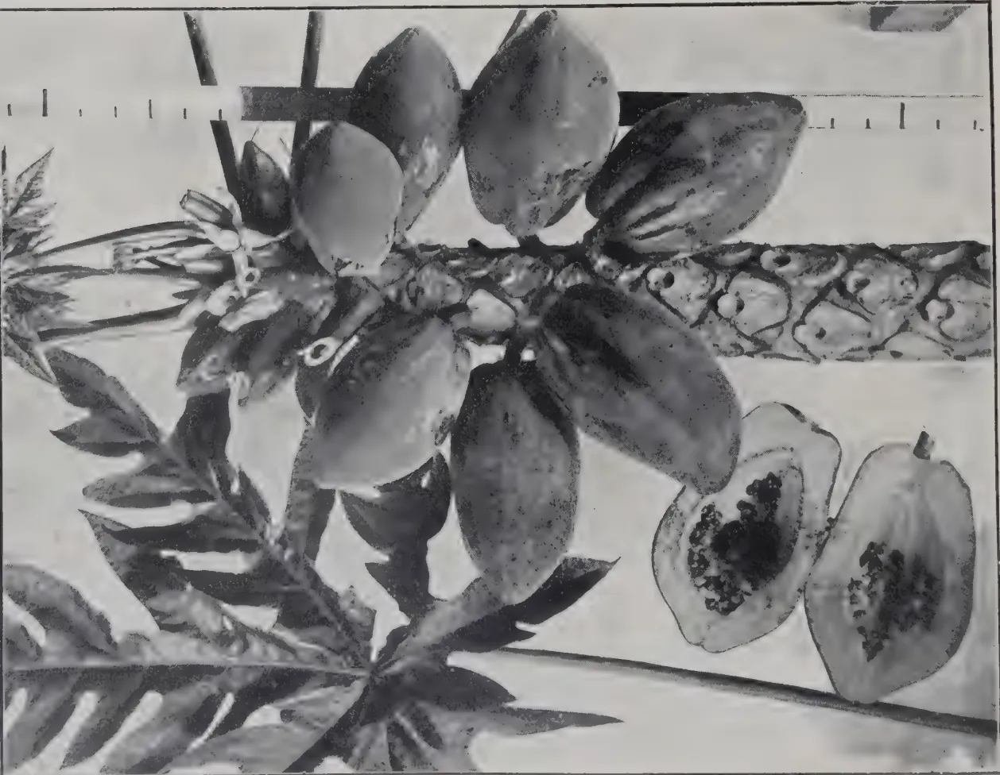
[Photo by H. F. Macmillan.]
Papaw fruit on the tree and in section; the flowers are seen at the apex in the axils of the leaves.
(See page 179)
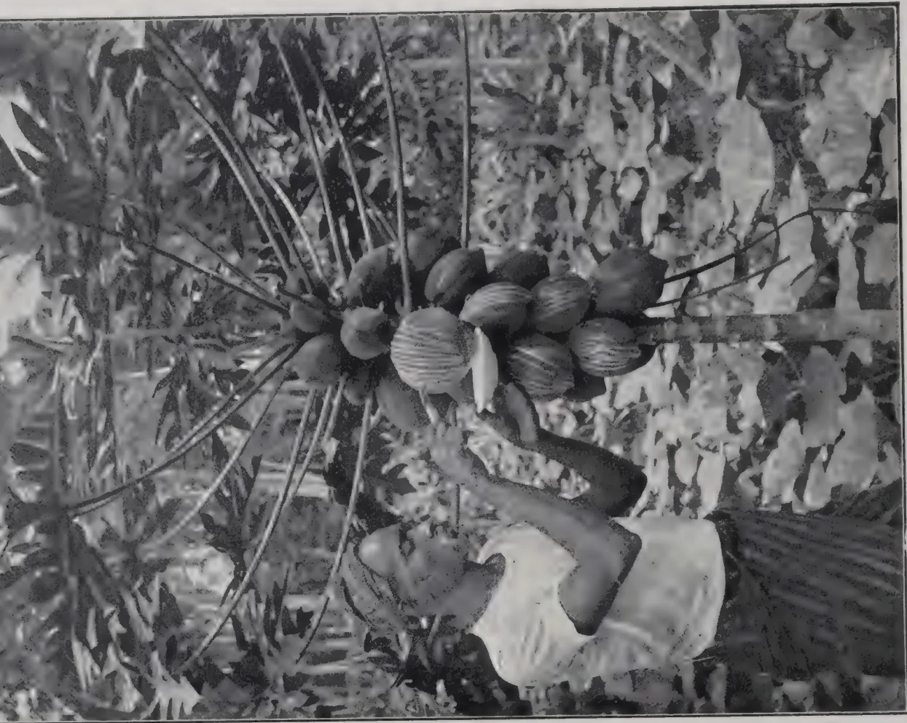
[Photo by H. F. Macmillan.]
Collecting the milky juice by scarification.
VOL. XLIV.
COLOMBO, MARCH, 1915.
No. 3.
An interesting series of experiments, an account of which, taken from Bulletin No. 77 of the Department of Agriculture of Trinidad and Tobago, appeared in the TROPICAL AGRICULTURIST for November, 1914, is in progress in the Island of Tobago in the West Indies. Manures were applied in 1911 and records for the two years 1911-12 and 1912-13 have been published, but the experiments are being conducted on five different estates so that the records are those of each mixture repeated ten times. We select for examination four plots which we may describe as 1, Potash plot; 2, Phosphoric Acid; 4, Nitrogen and Phosphoric acid and 5, Nitrogen and Potash. There are unfortunately complications from our point of view of determining the relative influences of the three principal plant foods upon coconut crops because different manures were used for supplying the same ingredients: 1, Lime and Kainit; 2, Basic Slag and Sulphate of Potash; 4, Basic Slag and Nitrate of Soda; 5, Calcium cyanamide (nitrolim) and Sulphate of Potash. The mean of control plots Nos. 3 and 6 is added for comparison in the following table:—
| Plot. | 1911-12 nuts per tree |
Relative yield |
1912-13 nuts per tree |
Relative yield |
1913-14 nuts per tree |
Relative yield |
Average 3 years nuts per tree |
Relative yield |
|---|---|---|---|---|---|---|---|---|
| 3 & 6 Control | 70 | 100 | 56 | 80 | 67 | 96 | 64 | 91 |
| 1. Lime and Potash | 74 | 106 | 63 | 90 | 63 | 90 | 67 | 96 |
| 2. Phosphoric Acid and Potash |
71 | 101 | 56 | 80 | 58 | 83 | 62 | 89 |
| 4. Nitrogen and Phosphoric Acid |
68 | 97 | 63 | 90 | 69 | 99 | 67 | 96 |
| 5. Nitrogen and Potash |
83 | 119 | 68 | 97 | 84 | 120 | 78 | 111 |
RELATIVE YIELD IS COMPARISON WITH YIELD OF
CONTROL IN 1911-12.
The results so far indicate the superiority of Nitrogen and Potash in combination (Plot 5) over that of any combination of Phosphoric acid though we must await further results before being able to say whether it is Nitrogen or Potash that is exerting the greatest influence.
The nitrogen was applied as Nitrolim, the Potash as the Sulphate. This plot was given twice as much potash and about 1/3rd the amount of lime as plot 1—Lime and Kainit. Lime would certainly appear to have played a successful part in these results as far as they have gone.
The results of the Peradeniya Coconut manuring experiments were published in Bulletin No. 10 of May, 1914. These experiments were started in 1909 to determine whether trees over 50 years of age would respond profitably to cultivation and manuring, and if so what treatment. They are not therefore quite comparable with the Tobago experiments which have been with trees between 21 and 36 years old—in their prime; but they provide some useful experience. We confine our examination again to the effect of nitrogenous, potassic and phosphatic manures, that is to say, plots 2 Sulphate of Potash, 3 Nitrate of Soda, 4 Concentrated Superphosphate, and 14 and 15 Controls. Results are available for three years. Relative yield is comparison with yield of control for 1911 :—
| Plot. | 1911 | 1912 | 1913 | Average 3 years nuts per tree. |
Relative yield. |
|||
|---|---|---|---|---|---|---|---|---|
| Nuts per tree. |
Relative yield. |
Nuts per tree. |
Relative yield. |
Nuts per tree. |
Relative yield. |
|||
| 14 & 15 Control | 27 | 100 | 24 | 89 | 23 | 85 | 25 | 93 |
| 2. Potash | 25 | 93 | 34 | 130 | 29 | 107 | 29 | 107 |
| 3. Nitrogen | 17 | 63 | 19 | 70 | 17 | 63 | 18 | 67 |
| 4. Phosphoric acid | 24 | 89 | 26 | 96 | 27 | 100 | 26 | 96 |
The potash plot comes out well ahead confirming the results obtained at Tobago of the influence of Potash; nitrogen is last and it is significant that it was applied as nitrate of soda which did not do well in Tobago.
MARCH, 1915.]139The belief that common salt is specially beneficial as a manure for coconuts is not supported by any experiments in the field as far as we are aware. Salt does benefit certain crops ; the sodium being able to a limited extent to take the place of potassium especially when there is a deficiency of the latter. It is believed also that salt releases potash in the soil for the use of the plant ; but there are, we think, no grounds for supposing that coconuts derive particular benefit from salt because of their maritime origin. At Peradeniya the salt plot gave an average of 28.5 nuts per tree in 1913 compared with 28.6 of the potash plot, but it started off with a yield of 54 in 1911 ; thus declining 47 per cent. The potash plot on the other hand rose from 24.7 to 28.6 : an increase of 16 per cent.
The case of the coconut plant is not quite on all fours with that of rubber, cocoa and other arborescent plants that have large anchoring roots near the surface precluding the use of the plough which, with the harrow, is probably the most effective means, with the majority of soils, at the disposal of the planter for securing healthy trees and good crops. The fibrous roots of the coconut yield to the plough, which causes no material injury to the palm by cutting them. On the contrary, by forcing the tree to develop root growth deeper down it probably benefits it.
At Mahailuppalama a young plantation of 17 acres which has been ploughed twice a year and harrowed about once a month, yielded at the rate of nuts a tree in 1914—six years after planting. It has had the water turned on twice a year to soften the ground before ploughing, and during the first three years the young plants were irrigated during the dry season. 29 per cent. of the trees are in bearing.
On the same plantation, which is in the Dry Zone, acres of coconuts, 7 years old, yielded in 1914 at the rate of only nuts per tree. This plantation had not been ploughed and harrowed but only weeded ; nor has it been irrigated, though the young plants were watered from time to time in the dry seasons during the first two years. 12 per cent. of the trees are in bearing.
Thus under the plough and harrow the younger plantation, cultivated mainly on dry farming principles, has completely overtaken the older. The good effects of this cultivation are further
140[MARCH, 1915.reflected in the quality of the nuts. In the ploughed plantation an average of 1,239 nuts were required for a candy (560 lb.) of copra in 1914 ; in the uncultivated, 1,510 nuts.
The Department of Agriculture has now in hand seven sets of coconut experiments—at Peradeniya (3), Mahailuppalama (1), Negombo (1), Chilaw (1), and Pitiakande, Kurunegalla (1). Two have been planned to test the value of dry farming principles in the up-bringing of a plantation ; one the influence of the most important manurial constituents with young palms on poor sandy soil not amenable to dry farming methods ; the others are mainly to determine what are the best manures for trees of bearing age.
The Negombo experiments are being carried out by MUDALIYAR A. E. RAJAPAKSE ; the Pitiakande by MR. C. DE E. COLLIN, Superintendent for the North-Western Co.
One of the earliest among planters in Ceylon to recognise the value of manures for coconut trees was MUDALIYAR A. E. RAJAPAKSE of Negombo, whose results were published about the year 1908. The experiments do not come within the category with which this series of reviews is particularly concerned because they were not planned to determine the relative value of the principal manurial ingredients or of definite methods of cultivation, but to demonstrate the value to the palm of artificial manures in general. An estate of 3,500 trees, described as very old, with very thin trunks, on gravelly soil, in the Galle District, was treated with a mixed manure in 1900, again in 1903 and a third time in 1905. The yield was raised from an average of 11 nuts per tree in 1900 to one of 45 in 1907. MR. HENRY DE MEL, Honorary Secretary of the Low-country Products Association, is conducting some experiments on similar lines on the Imbulgaswadia Estate, Negombo, where he has had 70 acres under general mixtures since 1910. In that year the yield of copra was at the rate of 896 lb. per acre ; in 1914 the yield was 1,560 lb. per acre ; a rise of 74 per cent. over 1910. These two experiments illustrate in a decisive manner the value of applications of artificial manures to coconut plantations.
R. N. L.
MARCH, 1915.]141MR. HERBERT WRIGHT, Chairman of the Bandar Sumatra Rubber Company, in the course of an address at the fifth annual ordinary general meeting of the company said : " I propose on this occasion to deal with various problems resulting from the present war. I take it for granted that we are prepared, at a great sacrifice, to support the Government in any steps they may take with the object of extinguishing the supply of any commodity which may assist the enemy, and in maintaining supplies for this country and the Allies. The two products of our estates, coffee and rubber, are contraband, and we have already had considerable anxiety in connection with them. Rubber, we know beyond any shadow of doubt, is as essential to success in war as petrol or copper. Without rubber the transport of men, food, and apparatus would be very seriously delayed. The manufactured stocks of enemies, known to be phenomenally large in June of this year, are now practically depleted. Without further supplies of rubber the enemy will be crippled to an extent which few of us can comprehend.
" I also assume that you are all aware of the practical measures taken by our Government, first in arranging that all plantation supplies be consigned to London, and then, in virtue of our supremacy at sea, prohibiting the re-export of crude rubber to any port. Without wishing to prejudice or even criticise the action of our Government, I will give you some information which I think will interest you. I will show you the British position in the past, the new position created by the war, and the possible effect, on plantation owners, of recent legislation. In the first place, I want you to realise that America annually imports and consumes more rubber—about 50,000 tons—than any other country. Next come, in order of tonnage consumed, the United Kingdom, followed by Germany, Russia, France, Austria-Hungary, Italy and Japan. The United States is the biggest consumer of plantation rubber. I estimate that under normal circumstances, allowing for the preference which large United States consumers naturally have for plantation rubber, that they would require for 1915 quite 30,000 tons of our product, the rest, amounting to 20,000 tons, would be Brazilian and African grades. During war they could do with a great deal more plantation rubber. As you are aware, an increased tonnage compared with 1914 has been sold by plantations c.i.f. New York, for delivery during 1915."
" In 1913 she received from Great Britain alone nearly 10,000 tons of rubber; in the first half of this year she received from the United Kingdom and our Colonies 4,500 tons, and also half that quantity from Brazil. Her next biggest source has been her own colonies in German East Africa, the Cameroons, and Togoland. A fair proportion of her imported rubber was re-exported to foreign countries. Under present conditions she can receive practically
142[MARCH, 1915.no rubber, neither can she export the crude or manufactured article. The point which I wish to make is that hitherto Germany has been very dependent on British territory for her supplies of raw rubber, and has received very little from the United States. Similarly, with regard to Austria-Hungary, we have been the biggest suppliers of crude rubber. Russia was supplied with about 6,300 tons in 1913, and France with over 5,000 tons, from the United Kingdom alone. Japan has called for a small but still significant supply from us. Now during the second half of this year there has been practically no supply to the enemy, but a big increase in exports to the Allies and to the United States and other neutral nations. You will, therefore, see that the British have, on the old lines, supplied the rest of the world with large quantities of rubber. Ourselves and the Allies use 35 per cent., the enemy 17 per cent., and the neutral nations 48 per cent. of the world's rubber.
"But of the world's supplies, owing to the action of the Government, we directly control the main crop—plantation—equal to 45 per cent.; we also indirectly control that from Africa—say 15 per cent.—and may have an influence on the tropical American crop, averaging 40 per cent. of the world's supplies. Next year, owing to the increased age and acreage of bearing trees on Eastern plantations, and the elimination for the time being of the produce from German Colonies, we may directly control 60 per cent. of the world's supply, and exert a big influence on the ultimate destination of the rest. But the new law also means that we shall not only control more rubber, but, if necessary, accumulate it. During 1915, the United Kingdom will, if the present regulations are enforced, import from the East about 72,500 tons of plantation rubber plus a large tonnage of African and Brazilian grades. Of this I estimate that the United Kingdom, Russia, France, and Japan will require about 50,000 tons; this will leave us with over 20,000 tons minimum of plantation rubber for export to neutral nations. Such a vast surplus, increasing month by month, would mean a fall in price of plantation rubber. The day prior to prohibition being announced, smoked sheet and fine hard Para were about the same in price; to-day fine hard Para is 2s. 8½d., per lb., plantation crepe 2s. 1½d., and smoked sheet 2s. 4d. per lb. Fortunately there was very little plantation rubber available when prohibition was declared. If plantation supplies arrive in regular quantities, and the present regulation operates throughout 1915, and no shipments are possible to the United States and other neutral countries, there is no limit to which rubber may fall in the absence of any co-operation among producers. And I have no faith in concerted action among growers except or until the position of the biggest or wealthiest producers is seriously threatened. You can see that plantation rubber could easily become unprofitable to collect. This would mean that labour on eastern estates would have to be much reduced or put on short time, or the estates conducted as before, but at a loss. You know as well as I do that we must, as business men, be prepared to run our estates in first class condition at a loss if it is necessary to do so. The position will remain serious until the United States of America agree to take our rubber on our terms.
"I hope you do not regard my remarks as being too pessimistic. I am, so far as plantation rubber is concerned, an optimist. But I think we must not
MARCH, 1915.]143be afraid to face unusual conditions and act accordingly. The total crops I have mentioned may strike some of you as being very large ; but I am not at all afraid, providing neutral trade can be maintained, and old credits are re-established. I can assure you that the manner in which credits have been affected will appreciably diminish the output, not merely from plantations, but also from wild areas, unless in the immediate future neutral nations are compelled to depend absolutely on wild rubber. Furthermore, the war has taught us, above all things, what rapidity of transport means. It has taught us the enormous importance of motor transport, in which rubber tyres are essential. There will be, after the war, a boom in all manner of manufactured rubber articles ; because practically every firm in the enemy country has had its manufactured stocks depleted, as well as its supply of crude material. The wastage of rubber tyres, valves, boots, waterproof, surgical and numerous other articles, the extinguishing or disorganising of supplies from certain rubber-yielding areas previously owned by the enemy, and the necessity of replenishing stocks of crude rubber, may result in a demand for our product which will be phenomenal. The year after war terminates I fully expect that, if credits are re-established, you will have to sell Germany 35,000 tons of rubber, and every Continental power will want double the usual supply to make good the depleted stocks. I could relate details of how the 117 tons of rubber in Antwerp, the day after the fall of that city, were urgently purchased at 12 marks per kilo by Germany, who would, I believe, have willingly paid a higher price for fifty times that amount.
"Some of you may be interested to learn how I arrive at my figures for next year's crop of plantation rubber. The total will not be up to my estimate if there is any restriction of tapping operations ; it will be increased if rubber rises much higher in price. It is based on the assumption that all acreages planted during and prior to 1909 will be in bearing in 1915, and after allowing for varying yields of 220 lb. per acre per annum from Java, Ceylon, South India and Borneo, of 250 lb. per acre per annum from Sumatra, and of 300 lb. per acre per annum from Malaya, my estimate totals to 72,500 tons for 1915, if tapping operations are normal. There was not any great increase in planted acreage between 1908 and 1909, hence the small estimated increase in crops. In fact, a shortage would have been likely next year, because the average rate in increased consumption would have been greater than that in plantation supplies—the only source expected to show an increase. The war may, of course, materially affect supplies from all parts of the tropical world."—
INDIA RUBBER JOURNAL.
PHILIP SCHIDROWITZ.
The desirability of packing plantation rubber in such a manner as to exclude contamination with wood splinters, dust, etc., has been so frequently discussed, that it is not a little remarkable that so far very little, in a practical way, has been attempted in this direction. Tea, an article which sells down to about 4d. per lb., is carefully packed in lead foil ; plantation rubber worth, even in these times, 2s. per lb. is stowed, unprotected, in wooden cases.
144[MARCH, 1915.Planters should bear in mind the fact that one of the greatest advantages of the plantation over the wild article is that it can—or should—for most purposes be used without washing in the factory. The expense involved in washing and drying rubber at the works is considerable, but quite apart from this, the washing operations undoubtedly affect quality. Experience has shown that a comparison between wild and plantation rubbers, when both varieties have been factory washed, does not necessarily give an accurate idea of the relative value of the two articles. Wild rubber must be washed; plantation, if clean and dry, can, for the manufacture of most goods, be taken straight to the mixing rolls. There is no reason why all grades, including earth and tree scrap, of plantation rubber should not be sent home absolutely clean and ready for use. As a very simple and inexpensive solution of the packing problem I suggest that the cases should contain a loose liner of cloth, simply folded over the top. These cloths could be readily washed and returned with the empty cases or separately. The cloth should be of the type so widely used in rubber works for calendering and wrapping, etc. Well boiled, this type of cloth sheds no "fluff," and the mere fact that it is used all through the factory is sufficient evidence of its practicability in this connection. The cost of these cloth liners would be infinitesimal. I suggest to dealers that they should approach manufacturers and offer them naturally after coming to some suitable arrangement with producers plantation rubber packed in the manner suggested at, say, 1/16th of a penny per pound over goods packed in cases in the ordinary way; or alternatively that planters should take the bull by the horns, and send home small consignments put up as indicated. I feel sure they would find it well worth their while.—INDIA RUBBER JOURNAL.
CYRIL BAXENDALE.
Throughout its history there has never been such an opportunity for those connected with the British rubber industry to render service to their country's cause. The public-spirited part played by the Rubber Growers' Association in the proceedings which led to rubber being declared contraband must result in a further curtailment of the demand; but the loss that producers will sustain on this account is likely to be trifling as compared with the inconvenience suffered by the enemy when he lacks one of the essential ingredients required for the manufacture of that peculiar compound known as "Modern Warfare." At the same time we have again been privileged to give the lie to the ancient story that the "shop-keeping" Briton sets purse above patriotism.
The question we have to consider now is, What steps can be taken to minimize the weight of that sacrifice.
Our manufacturers have a magnificent opportunity, and one can only hope that they are turning it to the best advantage. The rapid fulfilment of orders for the various necessities of the Allied Armies in the field ranks before every other consideration.
MARCH, 1915.]145The producer's position is far more complicated. The enemy (like ourselves) believes he is fighting for his national existence, and the struggle may last for years. The wastage of rubber in war is bound to be great; but the requirements for peaceful purposes will in all probability be curtailed, and the maintenance of a steady value is a matter of first importance. Any considerable shortage in the immediate future would send the value up to a figure which might embarrass the manufacturer with large Service contracts to fulfil, and would very shortly lead to an over-supply, causing the pendulum to swing so far the other way that small producers, or those without large cash reserves, would be unable to maintain their existence.
Last month's imports show a reduction compared with the same month last year, and the prices prove that supplies were not in excess of the demand. It is therefore conceivable that the closing down of the healthy rubber estate might be as great a loss to Britain as the sinking of one of her merchant vessels. So long as the demand keeps pace with the supply, all is well; but we should be prepared for a less satisfactory position.
It has been sufficiently demonstrated that the majority of mature estates cannot under present labour conditions introduce further general economies without a reduction in efficiency; but with a great many it is possible to reduce the cost of tapping, provided the owners are prepared to face a temporary reduction in output. This can be done in two ways, and both will tend to the ultimate advantage of the estate, when the market is ready to deal with larger supplies. Firstly, by reducing the number of cuts, and (or) increasing the interval between tapping; and, secondly, by cutting out the least profitable trees. Thanks to the adaptability of the Hevea tree, if the former policy be adopted in a reasonable way, a reduction in costs is assured, while thinning out will result in a better development of the survivors which in course of time will fully compensate for the immediate sacrifice.
I am confident that the majority of estate managers fully recognize the ultimate advantage of the reforms suggested above, but many fail to press their views sufficiently, because they are aware that shareholders are usually more interested in the current year's dividend than in the future welfare of their properties. It is impossible to believe that if shareholders in general could be taught to realize the situation they would fail to appreciate it and not insist on a more conservative policy in spite of the temporary loss. Those managers who have the welfare of their estates most at heart are continually criticized by shareholders who expect the yield to rise automatically every month, and judge the value of the estate and success of the administration by the amount of the dividend.
For example, roughly speaking the difference in cost of tapping every day and on alternate days is about two-pence a pound in favour of the latter, when the trees have become accustomed to the change of system, but if this saving in labour involves in the first year (say) a reduction of about one-quarter in the yield, the profits are bound to be less with rubber selling at its present price. On the other hand, it is quite conceivable that the rubber may fall to such a price that the estate producing 300 lb. of rubber will be more profitable than the one producing 400 lb. if the former's costs are only one penny a pound less.
I am not advocating a curtailment of supplies while there is a steady demand at present prices, but I consider it the positive duty of every director of plantation companies to impress upon his shareholders that if a reduction in their estates output becomes necessary, it need not prove to their ultimate disadvantage.—INDIA RUBBER JOURNAL.
146[MARCH, 1915.P. B. RICHARDS.
In June of this year (1914) a caterpillar pest was reported to be damaging coconut palms on an estate on the West Coast. A visit to the estate showed that the attack was of considerable importance. Experiments were made in control methods which, it is hoped, will be the foundation for more extended work. The results so far obtained are not final, but they indicate very clearly the value of spraying with an insoluble arsenic compound. As a similar attack may occur on any coconut plantation in the Peninsula, it is thought advisable to publish a brief account of the pest at once.
The caterpillars causing the damage are the larvæ of skipper butterflies. Chrysalids collected by MR. NORRIS, and larvæ which were fed in the laboratory of the Department, produced three species of butterflies belonging to the family Hesperiidæ, which were identified by MR. HOLMAN HUNT as Hidari irava, Erionota thrax and Corona palmarum.
The first two are widespread throughout the Malay Peninsula, feeding on wild palms. A sufficient number was not obtained to warrant an estimate of their relative proportion in the attack. Hidari irava has been previously recorded as a pest of coconuts in this country.
The life history of none of the species has yet been worked out in detail. The main features are as follows :—
Eggs are laid on both upper and lower sides of the coconut palm fronds. The eggs are roughly hemispherical. The young larvæ are elongate, green, naked, the head pale brown, the prothorax, just behind the head, compressed, giving the appearance of a neck. Older larvæ have the head dark brown and the body greyish green with a slight mealyess over the whole surface. The pupa is long, cylindrical, tapering to hind end. Pupation takes place in the folded leaf. The life history is short, probably from six to eight weeks.
The nature of the damage to coconut palms is characteristic. The larva connects together with stout soil adhesives the two edges of the underside of one pinna, or the underside of one to the top of the next, forming a tunnel in which it lives and feeds. The caterpillar feeds towards the rachis, and the result of a bad attack is that the pinnæ of each frond are stripped to the midrib, half way or more towards the rachis. No preference appears to be shown for young or old leaves, all being attacked. Young coconut palm of a few months are attacked equally with palms in bearing. Palms which have been badly attacked have a very ragged appearance.
The caterpillar, when feeding, devours the whole of the tissue of the leaf-segment which forms its tunnel, with the exception of the central supporting rib. It is evident, therefore, that if a poison be applied over the whole of the leaf, so that the caterpillar is compelled to eat the poison or to starve, the attack will be checked. The poison used must be insoluble and
MARCH, 1915.]147adhesive, to withstand tropical rain, and it must be innocuous to the foliage. These conditions are best met by lead arsenate. This substance can be obtained in a very fine state of division, in the form of a paste. When mixed with water, a uniform spray fluid is obtained, capable of being sprayed as a fine mist. A very small quantity suffices to kill the caterpillar, and the cost of the material is small.
To make the spray fluid lb. of lead arsenate paste, equivalent, roughly, to 1 lb. of lead arsenate, is mixed with sixty gallons of water. Ten pounds of slaked lime may with advantage be added, as this increases the covering power of the mixture, and prevents any soluble arsenic which may be present from burning the foliage. Any sprayer with a nozzle giving a fine misty spray may be used for applying the poison. All the leaves should be sprayed as evenly and fully as possible, and spraying should cease as soon as any tendency to drip is observed. The dryer the day, the better for spraying. Once the spray has dried on to the leaf it is very adhesive, retaining its toxic properties for weeks notwithstanding subsequent rain.
Immediately an attack is observed, spraying should be commenced. If the young caterpillars are dealt with immediately after hatching, all the foliage will be saved. Delayed treatment results in loss of leaf area, and may allow the caterpillar time to have fed sufficiently to be able to pupate instead of feeding further upon the poisoned foliage.
The quantity of spray fluid required and the nature of the spraying machine depend upon the size of the attacked palm. For palms up to about feet high, a knapsack sprayer with extended nozzle is efficient. Above this height, a manual or power pump is required. Young palms up to a year old require from four to eight gallons of spray fluid per hundred palms. Full grown coconut palms require nearly half a gallon per palm.
Lead arsenate paste containing 60 per cent. lead arsenate, should be obtainable in quantity at about forty cents a pound.
If the caterpillars are fully grown before work is commenced, it is useless to spray until the next generation. A very small proportion only would be affected by the poison, the majority refusing to feed, and ultimately pupating. Good work may then be done by collecting the pupæ and placing them in a box, one side of which is replaced by wire netting of quarter inch mesh. A varying proportion of the larvæ are always attacked by insect parasites which do not emerge until the caterpillar has pupated. These parasitic insects are always much smaller than the host butterfly. Butterflies and parasites emerge from the collected pupæ. The parasites escape to continue their attack upon the pest, whereas the butterflies, unable to pass through the small mesh, remain in the box and die.
The hatching box should be made inaccessible to ants, or the pupæ will be destroyed before hatching.—F.M.S. AGRICULTURAL BULLETIN.
The eleventh and last picking of 1914 was made on January 17th, 1915. The number of nuts collected was 900 from 278 trees. This gives a total of 15,451 nuts for the year 1914 from an area of acres, composed of plot A, 17 acres of 6 years old and plot B, acres of 7 year old trees (number of trees per acre 70).
148[MARCH, 1915.In the cultivated area (6 year old trees) consisting of 1,224 trees, 259 trees gave 839 nuts, an average of 3.25 nuts per tree.
In the uncultivated area (7 year old trees) consisting of 449 trees, 19 trees gave 61 nuts, an average of 3.25 nuts per tree.
Yield of nuts per tree per annum. When based upon the total number of trees, including those not in bearing, is as follows —
| Plot A | ... | ... | 11.5 nuts |
| Plot B | ... | ... | 2.75 ,, |
The monsoon rains ceased on January 14th and the chief operations now are :—
Five acres of young coconuts have been planted just in front of the Conductor's bungalow.
Method of planting: 30 feet × 30 feet.
G. HARBORD,
Manager, Experiment Station, Mahailuppalama.
We have been favoured by the Honorary Secretary with a copy of the Annual Report of the Low-country Products Association of Ceylon for the year ending 31st December, 1914. The report contains, in addition to other information, articles on The Trade in the Products of the Coconut Palm in Ceylon and The Trade in Palm Kernels. The former of these from the pen of DR. H. M. FERNANDO which we reproduce below will be found of interest to the readers of the TROPICAL AGRICULTURIST :—
Of the three great agricultural industries of Ceylon the cultivation of the Coconut Palm is the most important, both in the extent of the area involved, and in the magnitude of its benefits to the colony.
According to the latest statistics, the extent of the area cultivated with Tea amounts to 409,500 acres valued at £16,000,000; that of Rubber to 240,500 acres valued at £12,025,000; whereas the area under Coconut Palm is estimated at 800,000 acres which may be valued at £40,000,000. Moreover, palm growing is almost entirely in the hands of the permanent population, financed with local capital, and worked principally with indigenous labour.
MARCH, 1915.]149The outstanding feature of the coconut industry in Ceylon is the variety and number of its products that have been exploited for exportation. Whereas in all the other Islands in the equatorial belt where the coconut palm thrives, the only article of export is copra, Ceylon has succeeded in establishing the following products in its export trade viz:—
Of these products the amount and value of export from Ceylon in 1913 and the quantity exported in 1914 are as follows, viz:—
| 1913. | 1914. | |||
|---|---|---|---|---|
| Copra tons | 55,864 | value Rs. | 20,959,206 | tons 65,709 |
| Oil ,, | 27,349 | ,, ,, | 16,737,710 | ,, 23,434 |
| Desiccated nuts tons | 15,190 | ,, ,, | 7,866,723 | ,, 15,045 |
| Poonac tons | 11,834 | ,, ,, | 1,093,643 | ,, 8,761 |
| Fresh Nuts | No. 16,861,324 | ,, ,, | 1,291,352 | No. 11,086,369 |
| Coir Matting packages | 392 | ,, ,, | 5,663 | ————— |
| Rope tons | 1,021 | ,, ,, | 204,250 | ————— |
| Coir Yarn tons | 5,754 | ,, ,, | 1,561,687 | ,, tons 4,884 |
| Coir Fibre ,, | 12,699 | ,, ,, | 1,567,173 | ,, ,, 10,824 |
| Total | Rs. | 51,287,407 | ||
Of the copra exported the greater part is prepared on the plantations by expert driers who work on contract rates. They are provided with a kiln and a store in each estate. The best grades are obtained by exclusive sun drying in such dry districts as Kalpentyn, but in well-managed estates in the Chilaw and Negombo Districts equally high grade copra is produced by kiln drying after a few days exposure to the sun. The cost of manufacture is remarkably small, ranging between Rs. 8'00 to Rs. 12'00 a ton. In several text books recently published in London on the cultivation of the coconut palm, many suggestions have been made for improving the quality of copra by substituting costly machinery in place of the simple and economical process now obtaining in Ceylon. The experience of this colony is against the use of such machinery. Copra produced by such methods will not command a price sufficiently high to counterbalance the enhanced cost. The produce of the small gardens is generally sold to the nearest rice dealer, who then converts such produce into copra. The copra, whether made on the estates or by traders reaches Colombo for sale, where there is a daily market and, in normal times, a keen competition for its purchase by those engaged in its export and by the local crushers for its oil. Three qualities are recognised in the Colombo copra market. The highest prices are given to the grades known as Kalpentyn and estate. Marawilla comes next, and finally cart copra, the produce of small traders.
150[MARCH, 1915.Ceylon copra commands a higher price in the European markets, often two or three pounds a ton, more than the produce exported from Singapore or Manila. This, despite the fact that some of the Ceylon exporters do not confine their export to the best grade only. If the manufacturers in Europe are prepared to pay still higher prices for a better class of produce, copra of higher quality than the average product now supplied to the Colombo market will soon be forthcoming. But this is far from the case. On the contrary the United Kingdom and France are not disposed to pay the prices which Ceylon copra commands. They seem to be satisfied with inferior grades, and import the Straits and Philippine copra at a lower cost.
The manufacture of coconut oil is an industry that has existed in the Island for considerable time. It was at first produced entirely by primitive oil mills, or chekkus, a contrivance worked by a pair of bullocks. Such mills were widespread in the middle of the last century over the whole of the Western and Southern seaboard of the Island, where the palm then flourished. Moreover, at that period the oil was the most important form of coconut produce which figured in our export trade. But these primitive oil mills have been gradually driven out by competition with modern machinery, until at present their number is greatly reduced in the Western and North-Western Provinces. They still survive in the Southern Province. The oil produced in that Province and usually exported from Galle is the produce of these mills. Colombo is the centre of the trade in the extraction of oil. There are three large establishments with modern plant in constant working. It is reported that a fourth mill is almost ready for opening. But, apart from these extensive undertakings, smaller installations for the expression of oil by modern machinery exist in several parts of the Western and North-Western Provinces, often associated with works, set up for the manufacture of desiccated coconut.
The oil exported is of two qualities or grades. The white oil of Ceylon is expressed from the best grades of copra, whilst common oil is the product from inferior copra. The bulk of the Ceylon oil is taken by the United Kingdom and America, as oil imports to Germany, France, Russia, and Austria—countries using coconut oil in the manufacture of edible fats very largely—are effectively blocked by a prohibitive duty. Such a duty is calculated to protect the home manufacturer of oil against a foreign manufactured commodity as he is permitted to import his raw material (copra) free of duty.
This local industry is of recent origin. It was started by an enterprising firm in Colombo not more than thirty years ago. Since then the demand has gradually increased until last year 15,190 tons figured in our export trade. It is worthy of note that Ceylon practically monopolises the world's supply of this food product. At present there are dozens of mills manufacturing this article distributed throughout the chief centres of coconut cultivation. As nuts in a fresh condition are necessary for this manufacture, the centres of production must be located in the neighbourhood of plantations, owing to the cost of transport entailed by the weight and bulk of nuts in the shell. This industry is now so thoroughly established and so well understood, that it is worked very economically. The lead therefore that Ceylon has acquired in this is not likely to be lost for a considerable time.
MARCH, 1915.]151The cake after the expression of the oil from copra called poonac is largely exported to Germany and Belgium. The product of the chekkus or village oil mills is consumed locally. Coconut poonac, however, is not popular in Ceylon for cattle food as the oil cake from Gingelly or Sesame seed. Gingelly poonac is imported from India and fetches a price about 60 or 70 per cent. higher than coconut poonac. In 1913 over 25,546 tons of gingelly cake were imported to the value of over two million rupees. If the mill owners of Colombo study the local market for poonac more closely, and exploit it more systematically, a considerable portion of the gingelly poonac now imported may easily be replaced by coconut poonac as cattle food in the Island itself. The coconut poonac exported to Europe amounted to 11,000 tons in 1913 which is less than half the quantity of Gingelly poonac imported for home consumption. It is evident therefore that the local demand for oil cake is large enough to use up the whole of this by-product of the oil mills.
Of the secondary products derived from the Coconut palm Fibre and Yarn obtained from the husks are exported from the Island in large quantities. The latter is almost entirely a village industry confined to the Southern Sea-borde, whilst the former is the output of several mills studded throughout the Western and North-Western Provinces. At present the demand for fibre is more than met by the local output, as several of the mills have to give up working when the demand slackens and the price is low.
A considerable amount of fibre is exported to Germany and Belgium, where it is worked up into brushes and then sent to the United Kingdom. It would seem that the manufacture of cheap brushes can only be successfully carried on with cheap labour, and a suggestion has been made to Ceylon through the Secretary of State of the advisability of setting up brush manufactories in this Island with a view to supply the British market and thus supplant the German manufacturer.
Of the exports of oil and copra from Ceylon in 1913 the distribution amongst the chief importing countries was as follows:—
| Oil. | Copra. | |||
|---|---|---|---|---|
| United Kingdom | Tons | 7,500 | 75 | |
| Austria | ... | 715 | 1,500 | |
| Belgium | .. | 220 | 900 | |
| Germany | ... | 55 | 40,700 | |
| Holland | ... | 115 | 52 | |
| France | ... | — | 50 | |
| Norway | ... | 2,000 | — | |
| Sweden | ... | 170 | — | |
| Denmark | ... | — | 1,280 | |
| U. S. America | ... | 16,115 | — | |
| Russia | ... | 20 | 11,000 |
Our export of coconut oil was practically confined to U. S. America, which received 60 per cent. of our output, and the United Kingdom and Norway the balance.
The entry of our oil to these countries is not barred by a protective duty. The export to the United Kingdom amounting to 7,500 tons requires further
152[MARCH, 1915.comment. It is not due to the fact that there is no great demand for oil in the British Isles. On the contrary the trade returns in 1913 indicate that imports into United Kingdom from foreign countries amounted to the extent of 49,000 metric tons, 30,236 of which came from Germany and the balance from the continent of Europe, chiefly from France. Commenting on this, the Directors of the Imperial Institute in a recent communication to the Under Secretary of State to the Colonies states :—"There appears to be no reason therefore why the coconut oil which reaches the United Kingdom from Hamburg should reach it in this roundabout way. The oil might be expressed in Ceylon or India and shipped direct to the United Kingdom or the copra might be exported to the United Kingdom and treated there instead of in Hamburg." Further it is certain that from all these foreign countries, which export coconut oil to the United Kingdom, and especially from Germany, considerable quantities of coconut oil also reach this country in the form of margarine, vegetable butter and prepared fats and foods of various kinds. No definite figures can be suggested for the amount received in this way.
"It is clear from the foregoing that considerably more than half of the British Copra hitherto exported to Germany and Austria-Hungary could be taken by the United Kingdom either in the form of copra or coconut oil. Ceylon produces both copra and coconut oil; so that Colony could probably divert its supplies in either form to the United Kingdom."
The reason which induces the British manufacturers to use Continental coconut oil in preference to the Ceylon article cannot be due to any inferiority of this island's produce, as Ceylon oil commands high prices and the United States shows a marked preference for it. In 1913 the States imported 18,000 tons from India and Ceylon out of a total oil importation of 22,915 tons for the year. Why the British manufacturer prefers produce from the Continent whereas the American shows great partiality to the Ceylon out-put is an anomaly that requires further explanation.
As stated before, the export trade of this article from Ceylon is of recent growth. In 1870 it amounted to only 2,031 tons of the value of £31,678 as against an oil export of 6,782 tons valued at £170,211. The following table will show how the exports have increased, decade by decade, and the relatively greater importance which copra has assumed in the trade of the colony.
| COPRA. | OIL. | |||||||
|---|---|---|---|---|---|---|---|---|
| 1870 | 2,031 | tons | value £. | 31,678 | 6,782 | tons | value £. | 170,211 |
| 1880 | 4,638 | " | " Rs. | 912,489 | 17,623 | " | " Rs. | 4,386,414 |
| 1890 | 7,809 | " | " " | 1,480,817 | 18,436 | " | " " | 4,588,561 |
| 1900 | 19,990 | " | " " | 3,809,114 | 23,413 | " | " " | 6,672,902 |
| 1910 | 37,935 | " | " " | 12,697,725 | 30,984 | " | " " | 17,326,252 |
| 1913 | 55,864 | " | " " | 20,959,266 | 27,349 | " | " " | 13,737,710 |
During the last fifteen years the exports of copra have increased nearly threefold whereas the oil out-put has only increased by about a third, and last year the value of the copra exported exceeded by about a fourth the value of the oil whilst in quantity it was more than double.
The distribution of our export in 1913 amongst the chief importing countries reveals several noteworthy features. Only two countries can be said to be importing Ceylon copra on an extensive scale, viz :—Germany and Russia. Out of the total of 55,864 tons Germany received 40,700 tons, or nearly 75 per cent. of the whole, and Russia 11,000 tons, or 20 per cent.
MARCH, 1915.]153In the same year the United Kingdom imported 30,000 tons and France 153,000 metric tons from other countries. But both these countries have abstained from using Ceylon copra and have been satisfied with the inferior article exported from Java, Singapore and the Philippines. It would be interesting to discover why it pays the German manufacturer to favour Ceylon copra while British and French merchants have no use for it at the higher price which it commands in the European markets. Since the war began the conditions have altered materially and the United Kingdom imported in 1914, 20,876 tons from Ceylon as against 75 tons in 1913.
Says the CHEMIST AND DRUGGIST: "The confusion between the words coco and cocoa is of long standing. It is supposed to have arisen from the accidental running together in Johnson's "Dictionary" of the articles referring to two different vegetable products. Coco has, in consequence, been since often written cocoa. Cocoa applied to Theobroma Cacao is, states MURRAY, a corruption of cacao, which from the sixteenth to the eighteenth century was also written cocoa, and sometimes in the eighteenth century cacao. It is interesting also to note that originally cocoa and cacao were three-syllable words, but the error of spelling coco as cocoa has corrupted the pronunciation of cocoa to coco. The fact that another similar name—coca—is in use does not help to simplify matters."
In order clearly to distinguish between these similar sounding names we give below the botanical equivalent of each :—
| Coconut | ... | Cocos nucifera. |
| Cocoa | ... | Theobroma cacao. |
| Coca | ... | Erythroxylon coca. |
| Coco-yam | ... | Colocasia esculenta. |
| Cho-cho | ... | Sechium edule. |
C. D.
The collar which the Admiralty supplied to the seamen after the loss of the "Hawke" and other cruisers is doubtless useful in smooth water, but in rough seas it has the disadvantage of scarcely keeping the mouth above the level of the waves. Another garment, of which approval was expressed in THE TIMES in an article on safety appliances for airmen, is the Boddy Life-saving Jacket, several thousands of which have been recently supplied to the Admiralty for naval purposes. A waistcoat on the same principle has now been designed. These articles are stuffed with kapok, which is five times as buoyant as cork, and the waistcoat will support two people easily for 24 hours or longer. It is an extremely warm article of clothing and can be worn continually, as it allows complete freedom of movement and does not interfere with the wearer going about his ordinary work. LONDON TIMES.
154[MARCH, 1915.The experiment was tried at the Peradeniya Experiment Station on three plots of dark-leaved Manipuri indigenous tea.
The five Manipuri plots were pruned in December, 1913, a live branch being left on all the bushes, except on two average rows in plots 148, 149 and 150.
The live branches on all the plots were plucked regularly every week from December to April, and the weight of leaf recorded. Calculated at 24.15 per cent. made tea the live branches yielded as follows :—
| Plots. No. | 146 | 147 | 148 | 149 | 150 |
|---|---|---|---|---|---|
| Made Tea lb. | 102 | 105 | 97 | 153 | 135 |
Allowing for the two rows in plots 148-150 on which there was no live branch, the total yield from the live branches for those plots would be
| No. | 148 | 149 | 150 |
|---|---|---|---|
| Made Tea lb. | 114 | 189 | 150 |
When the bushes came into bearing again in April, all the live branches were removed. The two lines on each plot which had no live branch were plucked separately, and the weight of leaf compared with that from two adjoining rows.
The total yield of green leaf obtained from these rows from April to December inclusive is shown in the following table :—
| Plot 148. | Plot 149. | Plot 150. | |
|---|---|---|---|
| Dadap plot. | Albizzia plot. | ||
| Two rows of tea | } 585 ... | } 576 ... | } 569 |
| Live branch retained | |||
| Two rows of tea | } 553 ... | } 515 ... | } 528 |
| No live branch | |||
| — | — | — | |
| Increase with branches retained | ... 32 | 61 | 41 |
| 5.78 % | 11.84 % | 7.76 % | |
The actual total yield of made tea from each plot 146-150 for the whole year including the tea from the live branch was :—
| Yield from live branch, December to April. | Yield from whole plot, April to December. | Total yield. | |
|---|---|---|---|
| lb. | lb. | lb. | |
| Plot 146 ... | 102 ... | 898 ... | 1,000 |
| „ 147 ... | 105 ... | 860 ... | 965 |
| „ 148 ... | 97 ... | 858 ... | 955 |
| „ 149 ... | 153 ... | 1,078 ... | 1,232 |
| „ 150 ... | 135 ... | 1,093 ... | 1,228 |
This represents an average monthly yield of 106 lb. tea per acre plot for the nine months in actual bearing, and the average yield from the live branch when the bushes were otherwise out of bearing amounts to 11 per cent. of the total crop per plot.
The practice of leaving a live branch on the bushes at pruning as adopted in the Matale and other low-country districts in Ceylon is, therefore, a sound one, provided the jât of tea is good and the estate well cultivated.
M. KELWAY BAMBER,
Government Chemist.
Peradeniya,
25th January, 1915.
The return for the month of December was 4,175 lb. green leaf and for January 3,037 lb. The November made tea fetched in Colombo 49 cents per lb. for broken orange pekoe and an average of 44 cents for all grades; that for December 54 cents and an average of 48 cents. These prices leave us with a substantial profit over the old method of selling the green leaf.
The total output of green leaf for 1914 is 56,415 lb. from 15 acres (4 of which are under rubber), an average of 3,761 lb. green leaf equal to 940 lb. of made tea.
Plot 155 (Assam Hybrid) has given the highest yield, 5,257 lb. green leaf equal to 1,314 lb. made tea per acre. A bulletin will be published bringing the experiments up to date.
All supplies have been mulched with dadaps and jungle stuff and are being watered by means of a small hole being dug on one side and re-covered when the water has soaked in. By this means the water is conserved and the plants do not require water so often.
D. S. CORLETT.
At present this is the most noticeable cold weather work being put through. Of all seasonable works, there is not one that for a time alters the appearance of a garden more than pruning. You may pass through a whole series of gardens belonging to different districts, and on the outward face of things it would appear that there is not one iota of difference in the pruning of one garden from another. This may actually be the case, but still in the majority of instances the pruning will alter more or less. Not so much attention is now given to appearance as formerly. The system of straight-across table pruning is not practised now. Still, a well-pruned garden, whatever system is practised, is never a displeasing sight to the planter who can distinguish good pruning from bad pruning in principle. A little more wood is being left, I think, this year than formerly upon some gardens. Some, it is to be noticed, appear to be cutting lower in the centre than usual and many still adhere to the practice of leaving too much of a fringe round the outside of the bushes.
156[MARCH, 1915.I have heard of only one instance of this in our district this season, and that on a very small scale. Collar pruning does not prove so successful in Cachar and Sylhet as is the case in the deep alluvia of Upper Assam. When collar pruning is resorted to here it is merely a last resource and is usually done with the view of rooting up all the section which does not respond to the operation and replanting with strong, healthy seedlings of a good jat of plant. The bushes are usually well manured, and in some instances somewhat lightly plucked the year before collar pruning is attempted. In one or two instances I have known the ground to be extra deeply hoed and the bushes well manured for two seasons before collar pruning took place. If this is done and collar pruning is done at the proper season, the plant will have a much better chance of commencing successfully through the operation than it would have if existing under less favourable conditions. Even then the operation will not be so successful as it would have been in Upper Assam, where the roots, as a rule, throughout the year are in contact with more moisture than we have here during the dry season. The plants are also in a better condition for standing the severe trial on their vitality of a collar prune by having their roots occupying a much greater volume of soil containing a practically inexhaustible amount of plant food.—INDIAN AGRICULTURIST.
We often have callers and letters asking why the young fruit drops from certain breadfruit (or other fruit) trees, so that none mature. This is usually because there is too much vegetative vigour in the trees—they run to leaf and twig, and this condition is usually caused by a too plentiful supply of water at the wrong time.
As a rule such trees are standing in yards where there is a water pipe, and the water is constantly soaking the roots, inducing fresh growth. When once the breadfruit tree blossoms freely, the water should only be allowed moderately when the soil is seen getting dry; and the fruit will thus hold.
Where the conditions of growth are not governed by a water pipe, and the fruit will not hold, the owner should try, as an experiment, girdling the tree with a wire drawn tight round the trunk, doing this just when the fruit is setting. It will generally be found that this will prevent the falling of the fruit. When the fruit is over half fit the wire can be taken off and the bark will heal over in three months.
This can be done with all fruit trees that drop their fruit just after setting, or when trees make plenty of leaf growth but do not fruit at all. Of course, dropping of fruit is not to be confounded with young fruits dropping because of the trees bearing too large a crop; in this case there are always plenty left to mature. Our remarks apply when no fruits, or only a very few, remain on the tree, all the others dropping off before maturity.—JAMAICA AGRICULTURAL SOCIETY JOURNAL.
MARCH, 1915.]157NICHOLAS SACHOULIS.
When the tobacco plants come to maturity and the proper number of leaves can be secured, do not wait for the bloom.
Topping is a matter of judgment, and the number of leaves left varies with each plant, and is determined by the vigour of the plants, the character of the season, and the purpose for which the crop is being grown. If too many leaves are left, they will be coarse. Err in the direction of leaving too many. Additional leaves can be removed later if necessary. Late rain and new growth often render plants coarse that otherwise were correctly topped. Leave from twelve to fourteen leaves on the plants when the soil and season are good.
That is, taking off the bottom leaves. This can be done at the same time as topping is being performed. Three to four leaves should be taken off, as well as all leaves that are damaged. This gives the remaining leaves the full benefit of plant life.
Remove all suckers and sprouts as often as they appear. These should not be allowed to remain on the plants, but must be broken off as soon as they are from 2 to 4 in. long. If they are not removed they will rob the leaves of their strength, and thin, gumless, papery leaves will be the result. The plants should be gone over two or three times during the ripening season, as both the maturity of the plant and the texture of the leaf depend upon this suckering being well and faithfully done. The above is necessary in order to have the field ripen evenly, and also to get a good quality and quantity.
Have knives, sticks, poles, twine, needles, barns, and labour well in advance of the season. An important matter for the tobacco-grower is not to overcrop himself, and to know that twelve or fourteen leaves give more pounds and a better product, with less labour. Neglect in this particular means badly-handled tobacco and loss of time and money.
Do not cling too closely to any particular practice. Methods must vary with the season and condition, but the methods must be based on the principles underlying the growth of the tobacco plant and the production of good tobacco. Unless you know what is required, and what any particular method will accomplish, you are working in the dark. If tobacco could be grown anywhere and everywhere, it would have no value. A business that gives so good a return cannot be left to chance. Do not be misled into thinking that you will achieve a high degree of success from the beginning, for it takes some years to adapt methods to conditions. In a future paper I will deal with harvesting and curing tobacco.—QUEENSLAND AGRICULTURAL JOURNAL
158[MARCH, 1915.With a view to contributing to the knowledge of the tobaccos grown in Italy and of resolving certain problems of biological and technological chemistry it was considered advisable to determine the variation in chemical composition of the plant during the growth and the effects produced by the different treatments of drying and fermenting to which the green leaves are subjected during the process of manufacture. These results were obtained in researches on the variety Xanthi Yaka, grown at Francavilla al Mare (Abruzzi). Analyses were made of seedlings in the nursery, plants before flowering, ripe leaves from each picking and the bare stems and roots remaining in the field after harvest.
In this preliminary study the following determinations were made on different parts of the plant after drying in a water oven : ash, total nitrogen, nicotine, organic acids, ether extract, alcoholic extract [The last two determinations are not reproduced.—ED.]. Ordinary methods were used except in the case of nicotine, for which a slight modification of Keller's process was preferred on account of its rapidity : the nicotine was displaced by 20 per cent. potash and extracted by a mixture of equal parts of sulphuric and petroleum ether, then titrated against sulphuric acid with congo red as indicator. The organic acids were displaced by sulphuric acid 1 : 3, extracted with ether, titrated against soda, using phenol-phthalein as indicator, and expressed as oxalic acid.
The seedlings were analysed as a whole as well as in portions, and gave results as shown in Table I. :—
TABLE I.—Analyses of Seedlings.
| Parts analysed. | Ash. | Total Nitrogen. | Nicotine. | Organic Acids. |
|---|---|---|---|---|
| Leaves ... .. | 15.92 | 4.45 | 1.13 | 5.03 |
| Stem ... .. | 18.40 | 2.90 | 0.48 | 5.40 |
| Roots ... .. | 14.33 | 3.04 | 0.80 | 3.93 |
| Whole plant ... .. | 15.85 | 3.81 | 0.65 | 4.45 |
The analyses of the plant before flowering are given in Table II:—
TABLE II—Analyses of plants before flowering.
| Parts Analysed. | Ash. | Total nitrogen. | Nicotine. | Organic acids. | |
|---|---|---|---|---|---|
| Leaves from middle and lower portion of plant { |
whole | 10.50 | 2.86 | 1.18 | 3.56 |
| blade | 10.40 | 2.92 | 1.23 | 3.47 | |
| ribs | 10.60 | 2.02 | 0.80 | 4.01 | |
| Apical leaves { | complete | 11.10 | 4.30 | 0.89 | 3.36 |
| blade | 12.45 | 4.70 | 0.91 | 3.45 | |
| ribs | 10.55 | 2.08 | 0.81 | 4.01 | |
| Stems ... .. | 6.40 | 1.25 | 0.29 | 3.65 | |
| Roots ... .. | 6.85 | 1.69 | 0.65 | 4.23 |
The leaves harvested at the 1st (basal), 2nd, 3rd and 4th (apical) periods were analysed whole and in parts (blades and ribs). The bare stems and roots remaining in the field were also analysed. The results are set out in Table III:—
TABLE III—Analyses of leaves of the various pickings.
| Ash. | Total nitrogen. | Nicotine. | Organic acids. | ||
|---|---|---|---|---|---|
| 1st picking { | whole leaves ... | 16.10 | 1.57 | 1.42 | 4.61 |
| blades . . ... | 16.40 | 1.69 | 1.56 | 4.50 | |
| ribs ... .. | 14.70 | 1.23 | 0.46 | 4.64 | |
| 2nd picking { | whole leaves ... | 12.30 | 1.00 | 1.52 | 4.52 |
| blades ... .. | 12.35 | 1.02 | 1.94 | 4.50 | |
| ribs ... .. | 12.10 | 0.77 | 0.73 | 4.54 | |
| 3rd picking { | whole leaves ... | 8.55 | 1.26 | 0.75 | 3.75 |
| blades ... .. | 8.25 | 1.35 | 0.84 | 3.52 | |
| ribs ... .. | 9.80 | 0.96 | 0.24 | 3.91 | |
| 4th picking { | whole leaves ... | 7.50 | 1.50 | 0.74 | 4.07 |
| blades ... .. | 7.20 | 1.58 | 0.81 | 3.76 | |
| ribs ... .. | 9.00 | 1.34 | 0.32 | 4.95 | |
| Bare stems ... .. | 6.40 | 0.55 | 0.19 | 3.92 | |
| Roots ... .. | 7.40 | 0.72 | 0.16 | 7.78 |
These results show that (1) seedlings are richer in ash, nitrogen and organic acids than half-grown or full plants. (2) In plants before flowering, the apical leaves are richer in ash, nitrogen, and substances soluble in ether and alcohol than the lower leaves, but they contain less nicotine and organic acids. (3) In ripe leaves, the ash content decreases from the basal (1st picking) to the apical leaves (4th picking), and the leaves of the 1st and 2nd pickings are also richer in nicotine, containing double the quantity of the leaves of the 3rd and 4th pickings. (4) The leaf blades are always richer in nitrogen, nicotine and substances soluble in alcohol and ether than the ribs, and generally also in ash, but they are poorer in organic acids. (5) The stems and roots contain less ash, nitrogen, substances soluble in ether and alcohol, and nicotine than other parts of the plant, but the roots contain more nicotine than the stems.—MONTHLY BULLETIN.
That the oil-seeds industry is one of the important industries of this country will be realised when it is seen that in the Bombay Presidency (inclusive of Sind) alone there are nearly 4,000,000 acres—not 400,000 as mentioned in the Government Resolution on the Reports—of these seeds under cultivation, and the value of the export trade in 1912 amounted to over 520 lakhs of Rupees. The chief seeds from which oil is extracted in the country are the cotton-seed, ground-nut, castor-oil seed, rape-seed, linseed, poppy-seed, and mowra-seed. Linseed alone is exported from India to the value of over 420 lakhs in a year, while the value of mowra-seed exports reaches 240 lakhs, castor oil-seed 123 lakhs, rape-seed 92 lakhs, ground-nuts 92 lakhs and cotton-seed 73 lakhs. The importance of the oil-seed industry to the country is thus apparent. But, as every one knows, instead of these seeds being pressed in this country and the oil exported to Western countries, India has been exporting the raw material in large quantities, allowing the oil to be pressed and refined outside the country, thus losing a source of immense profit. The Bombay Presidency imported vegetable oils to the value of nearly six lakhs of Rupees in 1912-13—oils which, if the necessary facilities had been forthcoming, could have been manufactured locally. The indigenous oil-pressing industry in this Presidency is an old one, as everywhere else in India, and though the methods may be crude, it plays an important part in the economy of the country. MR. PANDIT calculates the total daily out-put of the ghanis—the indigenous oil-pressing machinery—at 155 tons. He also thinks that the teli—the native oil man—will be able to hold his own for a long time to come, in spite of the introduction of power machinery from the West. MR. PANDIT, however, says that the economic condition of the workers is generally far from satisfactory, chiefly on account of the high prices ruling in the land.—INDIAN AGRICULTURIST.
MARCH, 1915.]161A. J. BOYD.
The average yield of seed cotton is about 1,000 lb. per acre, of which from 300 lb. to 400 lb. will be clean lint and the balance seed. As soon as the bolls begin to open they should be allowed to fully expose the cotton, which should be full and dry before being picked, but as soon as it has fully burst out, it should be picked at once, otherwise it will become somewhat discoloured by exposure to sun and dew, to the detriment of future prices. The picking of cotton is a far less laborious work than the picking of strawberries or Cape gooseberries. The picker has scarcely got to stoop, if the plants have been properly grown. With a full crop, a boy or girl will pick from 70 lb. to 100 lb. of cotton a day, the larger quantity as he or she becomes more expert in the work. Experienced pickers can pick with both hands. Under favourable circumstances men have picked 150 lb. and even 200 lb. in a day. Picking should not be begun until the dew has completely dried off the bolls, so that when we speak about a day's work it means from about 9 or 10 o'clock in the morning till 5 o'clock in the afternoon, with the usual interval of an hour for dinner. When the crop is in full swing, i.e., when the trees are loaded with fully-burst bolls from which the whole of the cotton comes away easily at a light pull of two fingers and the thumb, a family consisting of father, mother, and four sons or daughters will easily pick 600 lb. per day, and, indeed, much more, but I prefer to give the lower figure. Supposing the farmer to have planted 10 acres, he will have 10,000 lb. to pick. I will suppose that only 500 lb. are picked daily; then, theoretically, the whole crop is gathered by the family in twenty days.
Wet days and other necessary work upon the farm must, however, be taken into consideration, so that practically a longer time would be required especially as, at the beginning of the season, only a few bolls on each plant would be ready for picking. Given, however, a month, or six weeks even, to gather in the whole crop, it will be seen that 10 acres of cotton can easily be managed by one small family, besides paying attention to other small crops.
Where hired labour is required, it is customary to pay the pickers by the lb. The usual price paid at a time when cotton was bringing from 9d. to 1s. 6d. per lb. in the home markets, and the farmers were paid from 2d. to 3d. per lb. for their seed cotton, was d. per lb. (the same price as is paid at the present time) and at this price boys and girls were able to earn from 2s. 6d. to 4s. per day, and men and women as much as from 5s. to 7s. per day. To enable the young people to earn money at cotton-picking, it was found necessary either to alter the holidays or to allow the children to attend school for half a day only before noon, giving them their holidays during the cotton-picking season instead of at the usual period of mid-summer or mid-winter. By this plan they lost very little school time, but brought a substantial addition to the family income.
162[MARCH, 1915.How much can a farmer realise from 10 acres of cotton by selling his crop at 2d. per lb.?
| £. | s. | d. | |||
|---|---|---|---|---|---|
| Ploughing | ... | ... | 0 | 7 | 0 |
| Harrowing | ... | ... | 0 | 1 | 0 |
| Seed | ... | ... | 0 | 5 | 0 |
| Planting Seed | ... | ... | 0 | 1 | 2 |
| Cultivating | ... | ... | 0 | 4 | 0 |
| Bale | ... | ... | 0 | 2 | 6 |
| Marketing | ... | ... | 0 | 4 | 0 |
| £ | 1 | 4 | |||
| 2 | 1 | 8 | |||
| Picking 1,000 lb. at d. per lb. | £ | 3 | 6 | ||
| 4 | 4 | ||||
MR. JONES, the Queensland cotton expert, whom I have already quoted, differs very slightly from my estimate; as the following figures show:—
A 1,000 lb. crop can be produced and gathered for about £3 16s. per acre, which includes cost of tillage and picking. Calculating d. per lb. as the value of the fibre in seed, we have £6 5s. as the value of an acre of cotton. Considering that much higher yields are possible, the modest estimate given here is satisfactory by comparison with other crops, particularly as the estimated cost allowed for tillage is computed on a scale which most growers will deem a generous one. Some seasons have provided numerous instances where returns from £9 to over £12 per acre have been realised in the West Moreton and Maranoa districts.
I estimate as follows the return of an acre of Uplands cotton yielding an average of 1,000 lb. of seed cotton per acre:—
| £ | s. | d. | |||
|---|---|---|---|---|---|
| 1,000 lb. at 2d. per lb. | ... | ... | 8 | 6 | 8 |
| Cost of production from sowing to market (including hired labour for picking at d. per lb.) | ... | ... | 3 | 6 | 4 |
| Balance to credit | ... | ... | £ | 5 | 0 |
| 4 | 4 | ||||
On the basis of this calculation, 10 acres would bring in a net return, clear of all expenses, of £50 3s. 4d. The bale, being only a first charge, should not be reckoned in the expenses, as it will serve for several seasons if properly cared for.
If the farmer keeps the cost of picking in his own family, he saves a cash outlay of £2 1s. 8d. per acre, or, on the 10 acres, £20 16s. 8d., so that his actual net cash return amounts to £71, or £7 2s. per acre. How does this compare with maize growing? A 40 bushel crop, at 2s. 3d. per bushel, gives a net profit of £2 18s. 4d. per acre. The price of maize, however, fluctuates, considerably, and it often sells at 4s. to 4s. 6d. per bushel. Of
MARCH, 1915.]163all our ordinary farm crops, rice is the only one which can compete in value with cotton. An acre of rice, producing 30 bushels, is worth £6 for grain and the same for straw. It costs £3 3s. 9d. to produce an acre of rice, the net profit being £8 16s. 3d. The net profit on wheat, on the same basis, and including straw, is £2 16s. 1d., when wheat is selling at 3s. per bushel. On barley it is £3 1s. 1d., and on maize, with a 30 bushel crop, £2 2s. 11d. And over all these, cotton presents the additional advantage of less labour in harvesting.
Can the Queensland farmer afford to sell his seed cotton at per lb.?
Undoubtedly, a 1,000 lb. crop at would pay him better than the above-mentioned crops. Picking being confined to his own family, his expenses are only £1 4s. 8d. per acre, and his return £6 5s., leaving a credit balance of £5 0s. 4d. It may happen that the grower decided on having his cotton ginned. In this case he will pay £1 0s. 10d. per 1,000 lb. for ginning at per lb., but he gets back the seed as well as the lint; 600 lb. of seed at £4 10s. per ton is worth £1 4s. 1d., or 3s. 3d. more than the cost of ginning. In the United States, the ginning establishments will clean the farmer's cotton, taking the seed in payment. How does ginning affect the returns per acre?
| £ | s. | d. | |
|---|---|---|---|
| Expenses, including picking | 3 | 6 | 4 |
| Ginning | 1 | 0 | 10 |
| 4 | 7 | 2 | |
| 400 lb. lint at 6d. per lb. | 10 | 0 | 0 |
| 600 lb. seed at £4 10s. per ton | 1 | 4 | 1 |
| 11 | 4 | 1 |
In this case the net profit is £6 16s. 11d. as against £5 0s. 3d. if the cotton is sold in the seed, a difference in the farmer's favour of £1 16s. 7d. per acre. It should be noted, however, that the very best only of Uplands cotton will produce 400 lb. of clean lint from a 1,000 lb. crop. To insure this result the staple must be of good length, the seeds small, few and easily detachable from the lint, the bolls all well filled, and the crop a full one. Under ordinary circumstances the grower may reckon on 300 lb. of lint per 1,000 lb. of seed cotton, and 700 lb. of seed worth £1 8s. , totalling £8 18s. , against which his expenses are £4 7s. 2d., leaving a credit balance of £4 10s. , or 9s. less per acre than if he had sold it in the seed.—HANDBOOK OF THE 1914 RUBBER EXHIBITION.
A. WIGGLESWORTH.
Manila hemp is used largely for rope-making. Its superior strength and lightness commend it beyond other fibres for this purpose, and its immunity from serious deterioration in sea-water renders it especially adapted for marine work. Certain medium grades enter largely into the manufacture of
164[MARCH, 1915.binder twine. On late years finer grades have come much into use for braid for making ladies' hats, and these are prepared by knotting into hanks. Only the very finest fibre can be used for this purpose, and the consumption has so increased that there has been a scarcity on the fibre markets and a consequent considerable enhancement of the value of these superior marks, proportionately to the grades below current.
Manila attracts more attention and is more widely quoted in the produce columns of the Press than any other fibre, with, perhaps, the exception of Jute. This may be due to the fact that, for many years, it largely entered the field of speculative articles. When, however, the United States of America took over the Philippine Islands from Spain in 1898, and the Government of Washington granted a rebate of the export duty payable in Manila (repealed in 1913), thus encouraging the consumers in U. S. A. to import direct what previously came via London, this stroke of policy at once diverted from London to New York an annual turnover of 40,000 tons of fibre, and has diminished the speculation.
Attempts have been made, from time to time, to produce Manila hemp (locally called Abaca; botanically, Musa textilis) in other countries—Andaman Islands, Java, Arrakan Hills, Solomon Islands, etc.,—and although a fibre is produced to all appearances equal to medium grade of Manila, it is always of variable strength. It may, therefore, be said that the production of Manila hemp is a monopoly of the Philippine Islands, where moist air, heavy rainfall, hilly ground, rich volcanic soil, and high, even temperature all contribute the best conditions to the growth of this valuable fibre.
Though the area of the Islands covers 115,026 square miles, not far short of the area of the British Isles (121,483 square miles), only about 2 per cent. of this is planted in fibre. The tendency lately has, however, been to extend the cultivation to other islands in the group and to new districts.
As far as methods of production are concerned, it cannot be said that this is a progressive industry. While other tropical countries are forging rapidly ahead, adopting modern methods of agriculture, introducing efficient machinery, standardizing qualities and, as in the case of New Zealand, introducing Government grading, producers in the Philippines are content to continue on old-fashioned lines, and are slowly but surely being outdistanced by competitive fibres.
The following is a brief account of the cultivation of Manila hemp, for which I am largely indebted to MR. M. M. SALEEBY'S papers on Fibre.
The ground is mostly prepared by hand tools, such as the hoe, Bolo (cutlass), etc., tree stumps in many areas interfering with the plough and cultivator. It is dug eight or nine inches deep—thereafter suckers about three feet high are planted eight to nine feet apart (about 600 plants per acre). It is important to keep down weeds, and twice a year the ground is gone over with hoes. Camote (Ipomoea batatas) is generally planted as a cover crop with the young Manila, and though retarding the growth of the crop, it shades the ground and yields a useful food product.
After the third year the plant is ready for stripping, and it lives for twelve to twenty or more years, depending on the suitability and fertility of the soil and the amount of care and cultivation given to it. Poor plantations produce about three cwt. of fibre per acre, but a plantation of normal age and growth should produce eight cwt. per acre per annum.
MARCH, 1915.]165The fibre is extracted from the overlapping leaf-sheaths, and the average production is about 1.8 per cent. There are five or six distinct grades of fibre in each plant. The outside sheaths produce a coarser fibre of darker tint, while those near the core furnish a fine soft fibre of light colour. The five sets of distinct sheaths may produce the following grades where the plant is carefully and uniformly decorticated :—
| Per cent. | |
|---|---|
| Low Grades ( Fair Brown to Super Seconds ) | ... 5 |
| Current Grades ( Fair Current to Midway ) | ... 10 |
| Good Current ( From 75 per cent. over F. C. to 25 per cent. over G. C. ) | ... 25 |
| Good Grades ( From 50 per cent to 150 per cent. over Good Current ) | ... 35 |
| Best Grade ( From 150 per cent. to 300 per cent. over Good Current ) | ... 25 |
but in actual practice the output of inferior fibre far exceeds this, as can be seen by the following table of exports for 1912 :—
| Per cent. | |
|---|---|
| Low Grades | ... 32 |
| Current Grades | ... 40 |
| Good Current Grades | ... 18 |
| Best and Good Grades | ... 10 |
Many attempts to construct a mechanical decorticator have been made, but, so far, the hemp is mostly prepared for market by a primitive scraper, each strip being taken by hand and drawn between a blunt knife and a smooth board attached to a light frame. The fibre is then dried in the sun and packed in bales of about 270 lb. weight. There is no doubt that the satisfactory preparation and packing of this important crop can only be accomplished by the invention and application of a good decorticator, and the adoption of standard grades.
The average price of Fair Current Manila hemp during the last ten years is £30 per ton, C. i. f. London.—1914 RUBBER EXHIBITION HANDBOOK.
N.B.—The above two articles are copyright and cannot be used by any other publication without the permission of MR. A. STAINES MANDERS.
DR. COLEMAN, Director of Agriculture, Mysore State, says that among things which have been tested and shown to be advantageous in connection with paddy cultivation are (1) the use of a green manure such as Sunn hemp or cow pea, (2) the use of bone-meal as a fertiliser, (3) transplanting with one to three seedlings instead of large numbers, (4) the unprofitableness of many artificial manures, e.g. Saltpetre, (5) the usefulness of selecting seed by immersion in a weak solution of salt and water and discarding all floating seed, (6) the advisability of not ploughing the land a long time before the following paddy crop.
166[MARCH, 1915.The question of the residual value of artificial manures is complicated by the fact that arable and grass lands have to be considered separately, and that great variations are met with in different classes of land, with the result that they respond differently to different manures. From such data as are available, however, MESSRS. HALL AND VOELCKER give the following table as some sort of guide to the residues left after each crop (given as fractions of the original cost of the manures):—
| Manure. | Arable Land. | Grass Land. | ||||||||||
|---|---|---|---|---|---|---|---|---|---|---|---|---|
| After 1st Crop | After 2nd Crop | After 3rd Crop | After 4th Crop | After 5th Crop | After 1st year | After 2nd year | After 3rd year | After 4th year | After 5th year | After 6th year | After 7th year | |
| Superphosphate ... | — | — | — | — | — | — | ||||||
| Bones (raw & steamed) ... | — | — | — | — | — | |||||||
| Dissolved Bones ... | — | — | — | — | — | — | ||||||
| Basic Slag ... | — | — | ||||||||||
| Bone Manures ... | — | — | — | — | — | — | — | — | ||||
| Compound Manures not containing bone .. |
— | — | — | — | — | — | — | — | ||||
| Peruvian Guano ... | — | — | — | — | — | — | — | — | ||||
| Fish Guano ... | — | — | — | — | — | — | — | — | ||||
| Meat Meal ... | — | — | — | — | — | — | — | — | ||||
| Shoddy and Wool Waste, Fur Waste, Hair, Hoofs and Horns, Greaves, &c. ... |
— | — | — | — | — | — | ||||||
| Manure Cakes ... | — | — | — | — | — | — | — | — | ||||
| Dried Blood, Sulphate of Ammonia, Nitrate of Soda, Nitrate of Lime, Cyanamide. |
— | — | — | — | — | — | — | — | ||||
| Kainit and Potash Salts .. | — | — | — | — | — | — | — | — | ||||
The table is based on the assumption that the manure in question is suitable for the land; further, the table can only be interpreted with considerable latitude, depending upon such varying factors as the nature of the soil, the course of cropping pursued, the climatic conditions, etc.—BOARD OF AGRICULTURE JOURNAL.
MARCH, 1915.]167A gardener has no need to be a chemist in order to realise that remarkable and far-reaching changes occur in farmyard manure during its storage in heaps. He knows, moreover, that many of these changes are useful—that is, they increase the value of the manure—and he may infer from the state of a heap which has been left unused for a very long time that other changes are of a kind which reduce the manurial value of the heap.
Garden practice shows, moreover, that the series of chemical changes summed up in the word "fermentation" may be controlled to some extent by manipulation. For example, the "fire" may be taken out of the heap by constant turning, and so letting in air to facilitate oxidation. Thus in preparing a Mushroom bed the manure is kept loose and turned frequently, with the result that the fermentation processes are increased and the temperature rises. Presently, however, when the bed has been made firm the temperature inside it begins to fall and the bed is ready for spawning.
One reason why manure from a spent Mushroom bed, or manure which by turning has had the "fire" taken out of it, is recommended so frequently for certain garden purposes resides in the fact that it is free from an excess of ammonia, which, if present, might do considerable damage to the roots of plants. But this loss of ammonia is, from another point of view, a very serious matter to farmer or gardener. How considerable may be the loss from manure heaps of ammonia and other nitrogen compounds has been demonstrated again and again. In the most recent experiments by RUSSEL and RICHARDS the loss of nitrogen during storage was found to be from 25 to 33 per cent.
The nitrogen lost in this way means, of course, a considerable reduction in value—for in the commerce of the garden nitrogen is money. One mode by which the heap sustains this loss of nitrogen is as follows:—Urea, one of the nitrogenous constituents derived from the liquid excreta of the farm animals which made the manure, is converted by one, and possibly more than one, specific micro-organism into ammonium carbonate—a substance which readily liberates its ammonia to the air. RUSSEL and RICHARDS, in their work just cited, indicate another method whereby loss of nitrogen is sustained. These observers state that a formation of nitrates goes on on the outside of the heap; but these nitrates if washed into the body of the heap undergo a sort of denitrifying process, as a result of which nitrogen is formed and escapes into the air.
Many attempts have been made to prevent the loss of ammonia by the addition of fixers; that is, substances which interact with the volatile ammonium carbonate to form a more stable compound. Gypsum, calcium sulphate, kainit (potassium and magnesium chloride), superphosphate (acid calcium phosphate) have all been tried, though without much success. Gardening books in particular often insist that gypsum is efficacious, but as a matter of fact for it to do its work effectively about one cwt. of gypsum would be required for every ton of farmyard manure; and further more the use of gypsum is open to the objection that some of it, as MR. HALL points out in his valuable work on Fertilisers and Manures, may become reduced to the form of calcium sulphide, a substance injurious to plants.
168[MARCH, 1915.A practice which does result in a reduction of the loss of nitrogen from the manure heap consists in using a layer of old and well-rotted manure as the basis for a new heap, and this simple and effective device should be followed by all gardeners who have to make manure heaps.
From what has been written it follows that the absence of that wasteful dark brown liquid from the foot of the heap is no guarantee that loss of nitrogen is not occurring; for the nitrates washed from the surface into the depth of the heap may, and certainly will, undergo decomposition, and thus give rise to nitrogen, which escapes into the air.
This loss may be reduced if the heap be made thoroughly firm, and if it be possible whilst making it firm to protect the manure heap from rain, the escape of nitrogen from it may be checked almost entirely.
There is room for further experiment as to the best means of protecting the manure heap from rain—a protection which, as we have shown, is of the greatest importance. Possibly, a thin layer of peat moss litter with a covering of earth might serve the purpose; or in the garden a layer of leaves covered with earth; but in any case if the nitrogen is not to be lost some protection must be given, and the heap must be made as compact as possible.—GARDENERS' CHRONICLE.
M. KELWAY BAMBER.
Note on two plants growing freely on the white Cinnamon Soil in the Negombo District.
The plants were collected on MUDALIYAR A. E. RAJAPAKSE'S Coconut Experiment Plots in July, 1914.
| 1. Sesamum indicum. | Pedalineæ. | Waltala. | Sinh. |
| 2. Wrightia zeylanica | Idda | „ |
The growth of the Sesamum or Gingelly was exceptionally vigorous, and although not belonging to the leguminosæ the plant would be a very useful green manure for such poor sandy soils. One average plant weighed 2,300 grams, rather over 5 lb., so that a uniform crop over one acre would amount to many tons of fresh organic matter.
The physical composition of the plant was:—
| Leaves and small twigs | 1,205 grams | 52.4 | per cent. |
| Pithy stalks | 176 „ | 38.1 | „ „ |
| Roots | 271 „ | 9.5 | „ „ |
2,300 grams. |
100.0 |
The slightly withered plant contained 69.2 per cent. of moisture, and when sun dried gave 3.55 per cent. of ash, and 0.73 per cent. of Nitrogen.
MARCH, 1915.]169COMPOSITION OF ASH.| Lime | ... | ... | 10.50 | per cent. |
| Magnesia | ... | ... | 20.16 | " " |
| Potash | ... | ... | 27.06 | " " |
| Phosphoric acid | ... | ... | 3.52 | " " |
| Chlorine | ... | ... | 16.97 | " " |
| Silica | ... | ... | 11.70 | " " |
| Carbon dioxide and difference | 10.09 | " " | ||
| 100.00 | ||||
The ash is very rich in potash and magnesia, and contains an unusually large proportion of silica and chlorine. The property of decomposing insoluble silicates is very marked, and in this type of soil, containing 96 per cent. of silica, it should be particularly beneficial.
The proportion of nitrogen, 0.70 per cent., in the sun dried plant is low and not equal to the leguminous plants, but the free growth and large amount of organic matter it yields per acre would make up for this deficiency.
Wrightia zeylanica is a shrubby plant bearing many white flowers. It is too woody for green manuring purposes.
The proportions of the plant are
| LEAVES AND FLOWERS. | WOODY STALKS. | ROOTS. |
|---|---|---|
| 77.00 | 76.00 | 80.00 |
or with a ratio on the sun dried plant of 69.0 per cent. of leaves and stalk and 31.0 per cent. of roots.
The sun dried plant contains 1.47 per cent. of nitrogen and 4.65 per cent. ash.
COMPOSITION OF ASH.| Lime | ... | ... | 19.25 | per cent. |
| Magnesia | ... | ... | 15.21 | " " |
| Potash | ... | ... | 23.93 | " " |
| Phosphoric acid | ... | ... | 6.24 | " " |
| Silica | ... | ... | 12.50 | " " |
| Sulphuric acid | ... | ... | 2.40 | " " |
| Sand | ... | ... | 2.60 | " " |
| Chlorine | ... | ... | 11.67 | " " |
| Carbon dioxide and difference | 6.20 | " " | ||
| 100.00 | ||||
One of the most paradoxical of the recent discoveries in plant physiology is that those mineral substances which are known to be essential to the nutrition of plants may also exercise a poisonous effect.
170[MARCH, 1915.The classical example of this fact was discovered long ago by LOEW, who showed that although magnesium is an essential plant food, yet in the absence of calcium even moderate supplies of magnesium salts are toxic to plants ; or to put the matter in another way, magnesium is at once a food and a poison, and calcium is an antidote to that poison. Similarly, it has been shown that the ubiquitous sodium compounds may act as plant poisons, but that calcium again acts as an antidote. These experiments were extended by OSTERHOUT, who, working with marine plants, demonstrated that each of the salts of sea water is poisonous when it alone is present, but that in the natural mixture of salts in sea water the several toxic of the individual salts cancel out, and make of sea water a physiologically-balanced nutritive solution for marine plants. Similar facts are known to obtain with respect to animal nutrition, and it may be that therein lie the remarkable therapeutical effects which follow in certain cases from injection of sea water into the blood-system of human beings. The interesting theme of the toxicity and anti-toxic effects of mineral salts has been investigated recently by MR. M. MCCOOT, who has extended his inquiry to include salts of calcium, potassium, sodium, ammonium, magnesium, strontium, and barium. Besides finding that calcium antidotes each of these poisonous substances, MR. MCCOOT also discovered that they may be arranged in mutually antagonistic pairs. Thus antagonism, and hence neutralisation, of poisonous individual effects occur between magnesium and strontium, sodium and potassium, and so on,
The facts are not without bearings on practice. For example, it is claimed by some experimenters that the use of kainit—a mixture of potassium sulphate, magnesium sulphate, and magnesium chloride—produces a larger yield when it is applied in autumn than when it is applied in spring ; the difference being, perhaps, due to the washing out from the soil by winter rains of the injurious magnesium salts.
The most striking conclusion, however, is that calcium is the most general antidote, for it supplies an explanation of the high value which attaches to the use of lime in the field and garden. Gardeners and farmers discovered long ago the value of lime. Men of science have been labouring after practice and suggesting one reason after another to account for the beneficent action of lime. In the meantime gardeners and farmers have to some extent neglected to continue the old practice of marling. The moral is clear that, whatever be the source or sources of the virtue which resides in lime, the gardener must go on with, and extend, the practice of liming his land.—
GARDENERS' CHRONICLE.
The conclusion reached in BULLETIN 142 of the West Virginia University (Agric. Exp. Station) is that the best artificial manure for outdoor tomatoes is one containing 3 per cent. nitrogen, 8 per cent. available phosphoric acid, and 10 per cent. potash. The manure, which should be applied at the rate of 400 lb. to the acre, may be composed of 75 lb. nitrate of soda, 200 lb. of 16 per cent. acid phosphate and 80 lb. of muriate of potash ; or 75 lb. of nitrate of soda, 150 lb. steamed bone meal and 80 lb. of muriate of potash. The crop requires also stable manure or other humus-yielding material.—
GARDENERS' CHRONICLE.
MARCH, 1915.]171F. BORDAS AND S. DE RACZKOVSKI.
After giving a resumé of the question which has interested the chemists and magistrates appointed for the suppression of frauds, the writers furnish additional information for the solution of this problem. The researches were made with samples of milk taken with all possible care in the presence of the local veterinary surgeon in places where foot-and-mouth disease had been reported. The results of the analyses of diseased and healthy milk from the same cowsheds have been compared with the average obtained the same day from milk collected throughout the district.
The changes in the composition of the milk and butter due to this disease are as follows:—
A notable increase in the proportions of fat and mineral salts, especially chlorides, and a decrease in the percentage of casein. There is apparently no change in the percentage of lactose, except that in the case of milks from cows in the height of fever and of those with abnormally high fat content there is a decrease in lactose accompanied by a corresponding increase in ash. The percentage of organic phosphorus and the acidity remain unchanged. Milks in which solids-not-fat fall below 86 gms. per litre are rare.
Examination of butter from a single badly-diseased cow might lead one to suspect addition of about 25 per cent. of margarine, whilst that from a herd of cows more or less infected would be suspected of an addition of 5 to 6 per cent. The conclusions of the writers confirm those put forward by French Analysts.
Thus, though it is true that the milk from a single cow or a small number of cows in the same shed, or that the butter obtained from a small quantity of infected milk show an abnormal composition, the collected milk or the butter centrifugalised from it never show any defects such as would make them unsaleable.—MONTHLY BULLETIN.
Although no definite conclusions can be drawn from the results of a single experiment, the following summary may prove of use to those who have not time to peruse the full report. It should be distinctly understood, however, that the statements here recorded are such as were obtained under
172[MARCH, 1915.the conditions of this experiment only:—
1. The cows fed on Decorticated Cotton Cake yielded more milk than those fed on Palm Nut Cake (equal money value).
2. Although no difficulty was experienced in getting the cows to eat lb. of Palm Nut Cake per day, providing it was introduced gradually, it was noticed that both lots of cows ate the Decorticated Cotton Cake with greater relish.
3. Both lots of cows dropped in milk yield in every case when changed to Palm Nut Cake; when changed to Decorticated Cotton Cake (first consignment) there was a slight increase both times, while with the two changes to Decorticated Cotton Cake (second consignment) there was a fall in yield.
4. The milk from the cows fed on Decorticated Cotton Cake was slightly richer in fat and in solids-not-fat, but, speaking broadly, the foods had no marked effect on the composition of the milk.
5. The cows comprising Lot B gave more milk than those in Lot A, and their milk was richer in fat and solids-not-fat than that from Lot A.
6. The Palm Nut Cake, though fed in fairly large quantities, had no undesirable effects on the butter produced.
7. Palm Nut Cake is a perfectly safe food for milk cows, and might give better results if fed as a part of the cake portion of the ration (2-3 lb.) than were obtained in this experiment where one cake only was introduced.
8. Judging from the results of this experiment, it would appear that unless there is a greater difference between the price of the two cakes than existed when the cakes used in this experiment were purchased, Palm Nut Cake, though it can be recommended as a safe food for milk cows, possesses no economic advantage over Decorticated Cotton Cake.—FARMERS' BULLETIN, No. 28.
Half a bushel of parchment hybrid coffee has been sent to the Imperial Institute for report as to flavour and commercial value.
The young Robusta plants planted out under the established shade of L. glauca and in the place of Liberian coffee heavily infected with Scale (Cocos viridis) and Hemileia show no sign of being affected by the latter.
But the young plants planted out without shade next the Robusta plot still continue to be attacked by both Scale and Hemileia in spite of continual spraying with both kerosene and Bordeaux mixtures.
D. S. CORLETT,
Manager,
Peradeniya Experiment Station.
MARCH, 1915.]173A. P. GOONATILLEKE.
Transferring is the term used for taking the combs and bees from one hive into another, it may be from a log or some natural or artificial hive into a modern frame hive. The easiest way to do this is to drive the bees, cut the combs, fix them in frames as quickly as possible, place them in the hive, shake the bees into it, and close the hive. If the natural hive is so situated as to make it impossible to drive the bees, smoke them till they are thoroughly frightened and split open the hive, when the combs may be easily removed and the bees put in. Care should be taken not to injure the brood in cutting out combs. If the combs so removed are larger than the frame, cut out the empty parts of the comb and put it in the frame tight fit or if the combs are smaller than the frame tie them on to the top bar of the frame with tape. Transferring should be done on a hot day and take as little time as possible to complete the operation. If there is brood in the combs and if a longer time is taken, the brood may be chilled which is harmful. The bees should not be disturbed at least for four or five days after transferring, or they may abscond. A beginner should attempt this by seeing how it is really done.
Driving is making the bees leave their combs and cluster elsewhere or run into a box or hive. This operation can easily be done if the hive has two entrances or openings. When the bees are smoked from the opening below they will leave the combs and run out from the one above. If a chatty, box or hive is placed over the top opening but touching the edge of it bees can be driven into it by smoking them from below. But if the bees are in a pot, box or some such thin vessel driving could be done by rapping on the sides of it. If for transferring, the bees may be driven into a small packing case. Transfer the combs and shake the bees on them. If the hive is in an anthill, rockcave or the hollow of a tree with one opening, driving is extremely difficult, if not impossible.
Absconding means the bees quitting the hive soon after it is colonised or long after they have settled down. Nothing is more annoying than this to the beekeeper, for they may without due warning quit the hive for the forest or some unknown parts without showing us the least gratitude for what we have done in providing them with a comfortable home, etc. This is due to accidents, unskilful handling, enemies, want of food, bad hive and various other reasons. Absconding may be prevented by clipping the queen.
As a rule only one queen is tolerated in a colony of bees. During the swarming season there may be two or more new born queens in a hive, but if ever they meet there will be a royal battle till one only remains alive. But if an old queen is to be superseded the daughter may be allowed in the hive with the mother, and after a very short time the latter will disappear.
174[MARCH, 1915.A queenless colony will not accept a strange queen unless she is introduced into it by artificial means, nor can we introduce one to a colony that has a queen, for the queens are jealous rivals. To introduce a strange queen to a colony remove the one in it, put the one to be introduced in a wire-cloth cage with sufficient food for her for three or four days and place it between the combs. The introducing cage must be so made that bees will not enter it. The new queen may be released after she has acquired the odour of the bees in that colony. It is said that bees recognise their queen by scent, which seems to be more keen in the bee than in any living being. A virgin queen (soon after its birth) can be introduced to a queenless colony without the cage, provided it is not too long queenless. Such a queen is readily accepted by bees without any harm being done to her. Another (safest) method of introducing without the cage is to remove the queenless hive into a new stand and place another hive with one or two combs with bees in them from the queenless hive in it on the old stand from which the queenless colony is removed. The field bees will all return to the new hive on the old stand by next day leaving only the young bees in the hive to which the queen is to be introduced. The queen may now be allowed to run in amongst the young bees and they will accept the strange queen without harassing her. There are so many ways of making and introducing cages, but the one made of wire cloth to be fixed by pressing against the comb is the cheapest and easiest, for it can be fixed (with the queen inside) on to a part of the comb where there is honey.
Uniting is to put together two or more swarms; this is usually done if the colonies are very weak, but if one desires to have an extra strong colony two or more normal colonies may be united. This may be done by feeding the colonies to be united with perfumed syrup and sprinkling same on the bees and frightening them with smoke; if two colonies are to be united the queen in one should be caged and the queen in the other removed altogether. Uniting is essential to keep the stocks strong just before a honey flow which means a larger yield of honey. Only queenless colonies or colonies with unfertile queens may be united to one that has a queen. To avoid the accident of bees so united going back to their old hive, the hive in the colony to be united should be removed by degrees to the same stand on which the other hive is placed and place it side by side with it taking care to keep the entrances facing the same way and remove the empty hive soon after they are united. Uniting during the swarming season is extremely easy, because the swarms (excepting the prime swarm) issued from the same hive could be united without feeding or the aid of smoke, for the cast swarms are issued about a week after the prime one and usually more than one a day. Being from the same hive and having the same odour they settle down together amicably.
MARCH, 1915.]175This is a very common trouble with us and the gradual dying down of trees with which there is apparently nothing radically wrong is a most disappointing experience in orange growing.
MR. G. WILLIAMS, writing to the QUEENSLAND AGRICULTURAL JOURNAL, thus discusses the predisposing causes of the malady:—
Primarily, soil of a heavy nature; a close, retentive, or impervious subsoil, giving rise to the effect of extremes of dry and moist conditions (an undue percentage of "clay" exercises similar influence) with insufficient drainage, lack of cultivation, overmanuring, excessive irrigation, and also working on unsuitable stock. Drainage is a most important feature, citrus being very deep rooted; and no artificial system is applicable to remedy a natural deficiency. In its absence an even state of moisture cannot be maintained. Where different classes of soil, particularly those of a widely different nature, are included in one orchard, and it is noted that trees planted in one class are healthy and vigorous whilst in another they are badly attacked, the suggestion arises that to the unsuitability of such soil is almost, if not entirely, attributable the cause of the trouble. Wider observations and comparisons afford the fullest confirmation. Trees planted in light loam of good depth remain immune, and, even when cultivation is neglected, show but very slight indication of attack; but where a dense constituency prevails some of the known features favourable to the disease are an invariable accompaniment. Its presence is eventually manifested in a varying extent—even to killing the trees outright. In consideration of suitable soils, examination must go much below the surface. On alluvial flats with a surface of loose sandy soil, a subsoil of heavy nature is not infrequently met with, and in such situations trees flourish but for a limited time. The trees being evergreen and almost constantly active, sustaining uninterrupted evaporation from their leaf surfaces, must always be provided with moisture, or disease will result to tree or fruit. Without excessive rainfall, the requisite supply of moisture can be retained in a suitable soil by cultivation; but where an unbroken surface, or grass or other weeds are permitted, a corresponding depression exists. The theory of maintaining moisture by surface cultivation has been frequently explained. Exact determination of moisture present during a dry month, at depths of the soil from 1 ft. to 6 ft., shows a gain of almost 50 per cent. where cultivation prevails. Moreover, in cultivated land the water in lower soil is held for the use of roots, and as fast as absorbed by them the supply is replaced through the firm soil below, which, evaporation being stopped, remains moist and permeable by the roots.
176[MARCH, 1915.T. BAINBRIGGE FLETCHER.
Those interested in Economic Entomology in India have recently been provided with two valuable text books. There is "Indian Forest Insects" by STEBBING which was reviewed in a former number of this magazine. Now we have to welcome a book on the pests of crops in Southern India by T. BAINBRIGGE FLETCHER, formerly Government Entomologist of Madras and now Imperial Entomologist to the Government of India. The book is one of some 555 pages with 440 text figures and in addition some 50 coloured plates. The text figures are on the whole good, and the coloured plates are excellent and one should have little difficulty in recognising by their aid the identity of any one of the more serious insect pests. The book should appeal equally strongly to Ceylon students as to those of Southern India, as many of the insect pests referred to are common to both areas. The author has no difficulty in showing the importance of his subject from a financial point of view. Taking 10 per cent. of all crops as a fair estimate of the damage done by insect pests, he comes to the conclusion that in South India the injury done by insects every year amounts to not less than two hundred million rupees, and, when allowance is made for loss due to insect attack on stored products and to insect-borne diseases of man and stock, to not less than three hundred million rupees. A good round sum!
Reference to the contents of the book is made easy by means of a "List of Crops," in which the various plant names are arranged alphabetically. Under each plant the more important pests are listed and to each is attached the number of the page on which the insect is treated of. There is also a very complete general index. The author has included a "List of Allied Plants," in which the commoner plants are grouped together under their Natural Orders, the raison d'être being that particular insects frequently show a predilection for closely related plants—for instance in Ceylon the citrus leaf miner (Phyllocnistis citrella, Staint.) attacks also Atalantia monophylla, both plants belonging to the N. O. RUTACEÆ.
The book falls naturally into two parts. Pages 1 to 239 give a necessarily brief but nevertheless interesting and accurate outline of the Science of Entomology, while in pages 274 to 546 particular insects are shortly considered under their Families.
While not unnecessarily technical, the author does not hesitate to incorporate into his work the scientific terms used in the Science. And rightly so! One often hears a book commended—and indeed one reviewer, who could not have gone very far into its pages, commended this very book—because it is free from scientific terms. But there can be no real knowledge of, nor progress in, any subject unless one understands the technical terms, which make one's knowledge a unity and not a chaos, and put one into intelligent communication with other workers in the same subject. Every technical term does or ought to indicate ground gained.
MARCH, 1915.]177Nevertheless, no one who takes up this book from the beginning and reads it with mind alert need have any fear of being overwhelmed by technical terms, and he will thereby have obtained a grounding that will give him an intelligent interest in his pests and perhaps stimulate him to become an investigator.
Those who are shy of technical terms will find much interesting and suggestive matter in the chapters on "Means of Defence of Insects," "Communication among insects," "Tropisms," "Insects and Plants," "Symbiosis and Parasitism," and will perhaps then wish to know more about the science that deals with such interesting phenomena and return to the chapters which they had skipped.
The severely practical man may begin with such chapters as "Insect Pests," but probably he too will find the subject so clearly and fully dealt with that he will finally be induced to take up the more abstruse chapters.
As an example of the method of treatment of particular pests in the second part of the book we shall take the case of Rhynchophorus ferrugineus, Fb., The Red Weevil of Coconut. After giving a few references to the literature on this subject the author thus summarises his information on the insect:—
Distribution.—Throughout Southern India, probably throughout the year.
Life History.—Eggs are laid in the soft parts of palms, particularly where cut by toddy-drawers or injured by Oryctes. The stout whitish grubs mine through the tissues in all directions and, when full-fed, pupate in a cocoon made of twisted fibres. The complete life-cycle takes about ten months, the adult weevils living two or three months more after emergence from the cocoon.
Food Plants.—Palmyra, date and coconut palms.
Status.—A major pest of great importance in all palm-growing districts.
Control.—All cuts and wounds of palm-tissue should be protected as far as possible by smearing with Tar. The control of Rhinoceros beetle will directly lead to diminution in numbers of the Palm Weevil also. Badly affected trees should be cut down, split up, and burnt."
A full-page coloured plate of the various stages of the insect accompanies the letterpress.
As is well-nigh unavoidable in a book covering so wide a field a few mistakes have crept in. It is not correct to say that 'bugs' thrust into plants a long sucking tube which is plainly visible as a long, slender, jointed rod. Nor do larval Syrphids live entirely upon aphids, though aphids form the bulk of their food. It is difficult to understand why the dorsal pulsating vessel is incorrectly called the heart; it is chambered, its walls are muscular, it possesses valves, the hæmolymph is nutritive. Is not 'aorta' equally incorrect?
It would hardly be practicable to cut out Batocera rubus from a rubber tree, as the presence of the borer is rarely suspected until the tree has fallen, blown over by the wind.
One is surprised to be told that 'actual facts' may still be open to doubt!
178[MARCH, 1915.While the text figures are on the whole good there are several that might have been omitted without a loss to the book. Such are Mytilaspis piperis on p. 519 and the adult aphid on p. 506 ; it is no justification to say that they have been prepared by artists who had no previous experience in making drawings of insects for purposes of reproduction.
The larval case of Tinea pachyspila on p. 466 would not be recognised as such, in Ceylon at least.
Then it is difficult to understand how the subject of tropic reactions gains in clearness by the diagram on p. 54.
But these are minor points and detract but little from the general excellence of the book. The price is but six rupees, and we do not know of any other entomological work that offers such good value at so low a price. We can strongly recommend the book to all interested, either practically or theoretically, in the subject of entomology.
It may be purchased from the Government of Madras or their Agents.
A. RUTHERFORD.
On no account plant below the level of surrounding surface, or so that the original ground level of tree will sink below that plane. It is very much preferable to err on the other side ; the roots will extend downwards where necessary, but the base of stem is a fixture and will remain where placed unless forcibly moved. Nursery stock is not infrequently trained to a long bare stem terminating in a bunch of small branches. Such samples should be cut back to within 18 inches or less of the ground level—in fact, all trees other than those reared in pots should be well shortened at planting, four or five shoots which are to form the main branches being allowed to start at regular intervals. A little extra attention in the early stage and the first two years' growth will, by the removal of surplus and misplaced shoots, not only remove the necessity of later amputation of larger branches, but by directing the growth into permanent channels assist in the earlier development of the tree. No hard-and-fast rules can be followed for pruning young trees, but misplaced shoots should be removed in the earliest stages by a sharp knife and cut close to the base, thus removing any adventitious buds which the practice of rubbing off with finger and thumb allows to remain, to become a perpetual source of trouble and the formation of unsightly callus. The orange being exceedingly susceptible to injury by exposure of its roots, for this reason the handling of young trees must be such as to allow a minimum of exposure. They should not be allowed to become dry under any condition, and the application of water at planting should be as soon after insertion as possible.
—QUEENSLAND AGRICULTURAL JOURNAL.
This image is a scan of a blank page. The background is a uniform light beige or off-white color. There are several small, dark specks scattered across the page, which appear to be scanning artifacts or dust. A slightly larger, faint smudge is visible in the upper left corner. The overall texture is smooth but shows slight variations in tone due to the scanning process.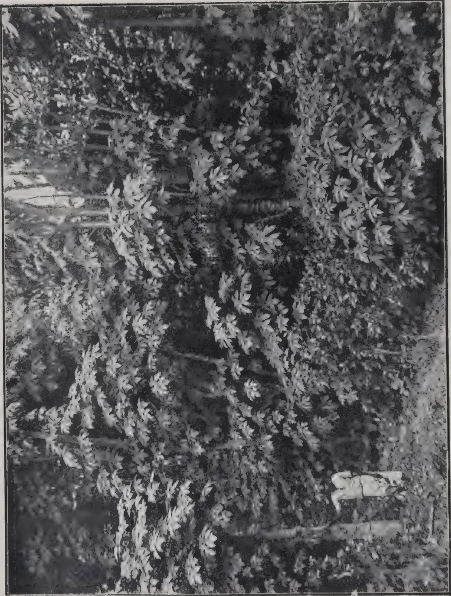
[Photo by H. F. Macmillan.]
Mountain Papaw (Carica candamarcensis). Naturalised in the vicinity of Up-country gardens, about 5,000 feet above sea-level.
MARCH, 1915.]179[See frontispiece.]
In view of the popularity of the Papaw fruit and the importance of the extract, papain, obtained from it, the following notes may be of interest. The Papaw tree is a familiar object in many parts of the tropics, being commonly grown in gardens and around native houses, or occasionally cultivated in small areas near towns for supplying the fruit to local markets. Much has been written regarding the well-known fermentative properties of the tree and its capacity for rendering tough meat tender; many and wonderful have been the stories related concerning it. The tree is a native of tropical America and the West Indies, and was introduced into Ceylon probably early in the seventeenth century, as it is recorded to have been found in the Island when the Portuguese were in possession.
The Papaw tree (Carica papaya) belongs to the natural order Passifloraceæ; it is small and erect in habit, herbaceous and normally branchless. It bears at the top a crown of large, coarse, palmate leaves, at the base of which are produced short-stalked flowers, which are regular, fleshy, and creamy white. Usually these are unisexual and the tree is generally monoecious, but frequently trees are met with bearing bisexual or both male and female flowers, and these give rise to fruits; thus "male" trees not infrequently bear fruit, which apparently differ only from that of a female tree by being smaller and perhaps less palatable. The proportion of pistillate and staminate trees from seed of a monoecious parent varies considerably, but usually the former predominate. Numerous species of Carica have been recorded and described. The "Index Kewensis" enumerates some twenty-four species. Very few of these, however, are well known, the most familiar being the large tropical papaw (Carica papaya), the subject of this article, and the smaller mountain papaw (C. candamarcensis). The latter is a native of Ecuador, and is suited only to the higher elevations in the tropics where sub-tropical conditions obtain. This species was first introduced in the Hill Garden at Hakgala, in Ceylon, in 1880, and has now become thoroughly acclimatised and, in places, semi-naturalised. The habitat and character of the tree are similar to those of C. papaya, but the fruit is much smaller, pear-shaped and ridged and the tree produces side branches and suckers from the base. The fruit is characterised by an acid flavour, but is good when stewed and sweetened with sugar. It contains little latex or papain, and the latter is not collected in Ceylon. The papaw (C. papaya), owing to its natural adaptation to cross-fertilization, occurs in numerous forms or sub-varieties, these varying chiefly in the shape and size of fruit. Some contain a large quantity of seeds, others are seedless. The flavour of the fruit varies to some extent in different varieties, as also does the proportion of papain, or milky juice, present. Fanciful names are sometimes given by plant-dealers to different varieties, but such names are usually misleading, as for example the "Ceylon," "Fiji," "Madagascar," and "New Zealand" papaw; these names are unknown in the countries indicated.
180[MARCH, 1915.The large, green, fleshy and gourd-like fruit varies in shape, and also somewhat in flavour, in different varieties; in some it is almost round, in others oblong or oval (the latter the most common form), being usually about 7 to 9 inches long by about 4 to 6 inches in diameter. The fruit may weigh from about 3 lb. to as much as 7 lb. or more. The flesh or edible pulp varies in thickness from about 1 to in., and in colour from a light pink to a light orange tint. It is of a soft, melting consistency, refreshing and agreeable to the taste, especially on first acquaintance with it. It is commonly used as a table fruit in hot countries, and is comparable to a sweet lemon; hence it is sometimes called the "tree-lemon." In an unripe state it is sometimes boiled and used as a vegetable, or cut into cubes and pickled, or made into a preserve. Those fruits having the least number of seeds are usually the best flavoured. In common with the leaves, which are used for wrapping round fresh meat in order to render it tender, the fruit contains a powerful ferment, and cooks frequently take advantage of this property and make use of it in cooking, either by rubbing the juice on the meat, or by placing a piece in the water in which the latter is boiled. A tree will produce forty to sixty fruits or more a year during the first few years of its life. The fruit is commonly retailed in the local markets at from 8 to 20 cents ( to ) each, according to size and locality, and is supplied in rather large numbers to the hotels in Colombo and the shipping in the harbour. It has the disadvantage of being easily damaged by bruising, and has consequently to be handled very carefully. The centre of the fruit consists of a large hollow cavity, with the seeds (if any) attached to the walls along the placenta. The seeds are usually very numerous, but sometimes few or none; they are of the size of small peas, olive-coloured, with a soft and slimy surface. Their flavour is rather pungent, resembling watercress, and is relished by some persons in salads. About 3,500 seeds, when fresh, go to a pound, and about 4,500 when moderately dry. Fresh seeds take from ten to fifteen days, or longer, to germinate, according to age: old and much-dried seeds take from one to two months longer.
The Papaw tree is propagated invariably from seed, but its propagation by cuttings and grafting is possible, though seldom practised. For the cultivator, there is little to be gained by a vegetative method of propagation, as seeds germinate very readily and seedling plants make the healthier and more productive trees than rooted cuttings or grafts.
Papaw-seeds, if sown fresh, should, as has already been said, germinate in a fortnight or a few weeks, according to age, the older seed taking longest. The seedlings grow rapidly, and the trees may be planted out at about 10 by 8 ft. apart, allowing, say, 540 to the acre. They commence to bear fruit when about a year old from seed, and continue fruitful, without intermission, until they become too old or exhausted. At the age of about four years, when it should have produced at least 160 fruits or an average of about fifty a year, the tree becomes too unproductive for profitable cultivation, the fruits then becoming fewer and much reduced in size. The papaw-tree is suited to a hot and humid climate, thriving from sea level to about 3,000 feet elevation. It affects a rich loamy soil and does not withstand drought (unless well irrigated) or a dry gravelly soil.
MARCH, 1915.]181Some attention has recently been given to the improvement of the Papaw under cultivation, more particularly in regard to yield and uniformity of fruit. MR. KULKARNI of the Bombay Agricultural Department, describes a successful experiment undertaken to induce the branching of the papaw tree. This was effected by removal of the growing point at the top, which in a fortnight was followed by the production of several shoots below the wound. These in due course fruited, and the product of two branched, compared with that of two normal and unbranched, trees during three months (December to March) gave the following result :—
| 5 branched trees averaged | 38 fruits, | averaging | lb. in weight |
| 5 unbranched trees | 23 | “ | lb. “ |
It will thus be seen that though the fruits were smaller individually, the branched trees gave a much larger number ; the total weight, however, of these was only one pound greater than that of the crop from the normal unbranched trees. It is stated that the branched trees were less frequently damaged by winds, and that “ the fruit was easy to watch and harvest.” In Ceylon, however, it is neither necessary nor advisable to induce branching of the papaw tree.
Thinning out of the fruits, in order to increase their size, may be recommended if large and well-shaped fruits are especially desired. In this way fruits of greater uniformity as well as of somewhat increased size may be produced. Grafting experiments have been conducted in the Philippines and elsewhere with a view to establishing select varieties and eliminating male trees or undesirable sorts : thus by grafting “female scions” on “male” stocks, fruits of a large size and more or less uniform quality could be relied upon. In practice, however, it is doubtful whether this would be feasible or worth carrying out.
In recent years the papaw has come into prominence on account of the drug papain obtained from the fruit. The usual manner of collecting this is by making light superficial incisions or scratches in the unripe fruit while on the trees, using a bone knife or other non-metallic instrument for the purpose ; incisions need not be more than about in. deep and about in. apart. The milky, viscid juice immediately exudes from the cuts and is collected in porcelain, enamelled or glass dishes ; it coagulates naturally, forming a resinous-looking granular mass, and is then dried in the sun. It must be dried rapidly, otherwise it putrifies and gives off an unpleasant sour odour. To obviate this a trace of formalin should be added to the juice when collected. The tapping, i.e. the process of obtaining the juice by incisions, may be repeated at intervals of two or three days, but unless this is done carefully the fruits are liable to wilt and dry up. The early morning is the best time to tap, the flow being then most abundant.
In Ceylon, where the collection and preparation is entirely in the hands of the peasants, the drying is invariably effected by laying the coagulated milky juice on plates or enamelled dishes in the sun. When dry, it is packed in bottles or jars for export. No agent is used in Ceylon for hastening coagulation, which rapidly takes place on exposure of the juice to the air. The average yield of papain per tree is variously estimated : in Hawaii it is placed at 1 lb. per tree, but from experiments made in Ceylon to lb.
182[MARCH, 1915.per tree per annum would be considered a good yield. A dozen average-sized fruits should yield about 10 to 12 oz. of the coagulated material at one tapping; this on drying should give 25 per cent. of its weight in dry powder, the latter containing about 25 per cent. of the active principle papain. In the native villages, where papain is chiefly collected, the preparation is neither carefully made nor clean, and, like many other preparations, it is liable to be adulterated, arrowroot starch, rice congee, or flour being found a suitable medium for this purpose. There seems no evidence, however, that, as is sometimes supposed, the milky juice of other plants is used as an adulterant in Ceylon, even in remote villages, where the collection of papain is chiefly carried on. MR. C. DRIEBERG, Secretary of the Ceylon Agricultural Society, who has at one time or another devoted his special attention to the subject, confirms this statement.
MR. KELWAY BAMBER, F.I.C., F.C.S., Government Chemist, Ceylon, has found that the granulated material can be purified by straining the juice through fine muslin and adding three times its volume of alcohol, the pure papain being then precipitated. It is next collected on filter paper, and the product dried, the yield being about 2.50 per cent. The process, however, is too expensive and troublesome to make the result remunerative, and it is considered that the purifying process adopted in the countries of importation is less costly, though equally satisfactory.
The papaw-tree is also grown largely in the Hawaiian Islands, and from a pamphlet which has recently been issued by the Hawaii Agricultural Experiment Station, it appears that the manufacture of papain is beginning to receive attention in those islands. There are no difficulties, it is stated, requiring great skill in collecting and preparing the juice for market, but care is necessary. The fruits abound in juice, particularly when the tree is young and during the warm weather after rain. The flow is free at first, and the liquid is caught in porcelain glass or earthenware vessels. Coagulation soon begins, and the mass must be scraped from the surface of the fruit. In most places where the industry is conducted labour is cheap, but it would be seen that a more convenient and efficient vessel could be devised which could be quickly put in place to receive the juice, permitting the operator to proceed to the next tree. As the juice flows freely in the early morning it is usually collected then, and dried wholly or in part during the remainder of the day. Sun-drying is followed to some extent, but artificial means, such as are furnished by a fruit drier, are preferred. In Montserrat several driers have been made for the purpose and operated by companies buying the juice from the peasants, who gather it. One form of drier is 3 ft. by 3 ft. and 6 ft. in length. The sides and ends are of brick, with an opening at one end for the flue and at the other end to admit fuel; the top is open. About a foot below the top a sheet of iron is placed, and upon this is an inch or two of sand to modify and distribute the heat arising from the fire beneath. The coagulated juice is spread upon brown linen stretched upon frames, which are made to fit the top of the drier. The drying must be effected with low temperatures, as great heat destroys the ferment. A temperature below 100° F. is preferred by some operators. The coagulated material may be placed upon sheets of glass while drying. When dry and flaky it may be ground in a coffee-mill, and should then be in the form of a white or cream-coloured powder, which should be placed in bottles and tightly closed.
MARCH, 1915.]183The peptonising or digestive power is well known, and it is considered a good substitute for animal pepsin, but unlike the latter, it requires neither the aid of an acid nor an alkali to convert the contents of the stomach into a peptone. The celebrated chemist VAUQUELIN compared papain to "blood deprived of its colouring matter." The material has not, however, come into extensive use in medicine, its consumption at present being chiefly confined to America, where it is much used in the treatment of chronic dyspepsia, gastritis, diptheria, etc., and it is also recommended for eczema. In Ceylon it is not used medicinally, except perhaps in native medicine. It is described, however, in WARING'S INDIAN PHARMACOPŒIA and DYMOCK'S MATERIA MEDICA OF WESTERN INDIA. Papain has the effect of curdling milk, like rennet, and might be used as a substitute for the latter. The demand for papain is, of course, limited, and the present supply appears to come almost entirely from Ceylon and the West Indies, more especially the island of Montserrat.
The export of papain from Ceylon is in the hands of a few firms who buy from the villagers in the interior, mostly in the districts of Kurunegala and Kegalle, and pay from about Rs. 5 to Rs. 7 per lb. The purified commercial papain fetches round about 12s. (Rs. 9) per lb. in the European markets. The following is a statement from the PRINCIPAL COLLECTOR OF CUSTOMS, showing the exports from Ceylon during the three years 1911, 1912, and 1913. This gives an idea of the local output and the destinations:—
| Countries to which exported. | 1911 | 1912 | 1913 | |||
|---|---|---|---|---|---|---|
| Quantity. | Value. | Quantity. | Value. | Quantity. | Value. | |
| lb. | Rs. | lb. | Rs. | lb. | Rs. | |
| United Kingdom | 4,054 | 20,320 | 9,088 | 34,332 | 12,705 | 44,185 |
| Foreign countries | ||||||
| Belgium | 76 | 229 | 376 | 1,881 | ||
| Germany | 2,007 | 11,401 | 1,708 | 7,159 | 2,555 | 12,705 |
| United States of America } | 550 | 2,500 | 2,048 | 8,948 | 2,912 | 13,078 |
| Total | 6,611 | 34,221 | 12,920 | 50,668 | 18,548 | 71,847 |
The United States is the largest consumer, importing annually it is estimated, to the value of £15,000 to £16,000. The price paid in the States for papain varies from 7s. 6d. to 15s. per lb. according to quality, as tested to determine its digestive properties. According to THE CHEMIST AND DRUGGIST the demand for papain at present exceeds the supply, as the American importers insist on a light-coloured papain, which is difficult to procure.
Some time ago Jamaica maintained an industry of some importance in collecting and preparing the juice for the market, but it has now shrunk to negligible proportions. Later, the business grew up in the island of
184[MARCH, 1915.Montserrat, which became the chief producer in the West Indies. It is a little doubtful, however, whether the trade is likely to increase. Prices have fallen considerably in recent years, but within the past six months they have shown a distinct advance.*
Opinion among large consumers appears to be divided on the present question of the supply and demand, for while some state that the consumption of the drug is on the increase and the prospects are good for marketing larger quantities, others affirm that the only means of extending the market would be in the production of a more carefully-prepared product which would replace the cheaper and adulterated grades, of which considerable quantities are sold. In the course of an article on papain in the JOURNAL OF THE ROYAL SOCIETY OF ARTS (September 1913), the statement was made that
"The United States prefer the inferior qualities from the West Indies, and also desire a white or bleached papain, which the Ceylon natives are not always in a position to supply. Importers, however, could, without much difficulty, procure an almost unlimited supply of the best unadulterated Ceylon papain if they were willing to pay a slightly better price for it than for the West Indian product, and would accept it in its natural state."
DR. HUYBERTSZ, of Kandy, who has devoted some attention to the preparation of papain states that "European and American importers object to papain in its natural colour, and insist that it be white, or at least, light. This, he says, is a great mistake, as it can only be obtained by bleaching—a process which sacrifices therapeutic efficiency for pharmaceutical appearance. Genuine papain is slightly saltish and somewhat acrid. It has a peculiar, unmistakable smell, and the "feel" of granular papain should be crisp, like biscuit, and easily crushed between the fingers. When it is doughy or sticky it has been adulterated or badly prepared. It has also slight escharotic action, and collectors of the fresh juice frequently blister their fingers. When mixed with water it has a soapy feel." Up to a comparatively few years ago the value of papain was little understood, and it was mostly used in making mucilaginous products and chewing-gums. Since then the United States, Germany, and Great Britain have taken considerable quantities, and it enters into many preparations. Recently America has found a new use for the drug, but what this is has not yet transpired.
H. F. MACMILLAN.
| Place | 1914 | 1913 | Place | 1914 | 1913 |
|---|---|---|---|---|---|
| in. | in. | in. | in. | ||
| Colombo | 5.25 | 5.72 | Kurunegala | 14.91 | 8.57 |
| Kandy | 14.36 | 13.91 | Batticaloa | 21.73 | 14.70 |
| Galle | 6.20 | 12.35 | Badulla | 14.77 | 14.94 |
| Jaffna | 17.89 | 6.11 | Ratnapura | 9.44 | 10.89 |
| Anuradhapura | 13.95 | 3.20 | Nuwara Eliya | 10.79 | 12.91 |
* THE CHEMIST AND DRUGGIST for January, 1915.
MARCH, 1915.]185A summary of the progress of the Agricultural Credit of the French Colonies and Roumania taken from the MONTHLY BULLETIN OF ECONOMIC AND SOCIAL INTELLIGENCE, Nos. 7 and 8, Vol. IV., July-August, 1914, published by the INTERNATIONAL INSTITUTE OF AGRICULTURE BUREAU OF ECONOMIC AND SOCIAL INTELLIGENCE, containing an interesting account of the work that is being carried on in those countries in connection with the problem of furnishing agricultural credit to farmers, is given in an issue of the "Communication to the Press."
In Algeria the Bank of Algeria is required to pay the Government in the interest of Agricultural Credit the following amounts annually, namely :—
200,000 francs from 1st January, 1900, to 31st December, 1905.
250,000 francs from 1st January, 1906, to 31st December, 1912.
300,000 francs from 1st January, 1913, to 31st December, 1920.
This is in addition to a sum of three million francs that the Bank is required to place at the disposal of the treasury free of interest during the whole term of franchise.
In 1901 a Law was passed to further the mutual credit movement by making provision to establish regional banks. The funds provided by the Bank of Algeria are to be distributed among these banks by the Governor of the Colony. At the end of 1912 there were already in activity 37 regional agricultural credit banks with a subscribed capital of 3,752,445 francs, of which 1,454,337 was paid up. The reserves of these banks amounted to 742,437 francs. 249 local banks with a membership of 15,000 have been affiliated to these regional banks.
Of these seven are native banks having been formed exclusively of natives and the Government gives every encouragement to the formation of these banks, with the object of diffusing the advantages of mutual credit among the Arab population.
In Tunis the "Regional Agricultural Mutual Credit Bank of the North" was formed in 1905 and 24 local and 54 native banks have been affiliated to it. This Bank of the North enjoys a discount credit of 800,000 francs with a private Company in addition to a sum of 200,000 francs received from Government.
Colonial banks in the other French Colonies, viz., Martinique, Guadeloupe, Réunion, and Cayenne, grant loans to colonists on furnishing signed bills on the security of their crops—the amount of a loan being an amount equal to one-third of the estimated value of the crop.
The Indo-China bank was organised newly on the same lines to relieve the colonists from paying usurious interest on money borrowed for agricultural pursuits; the ordinary rate of interest there being 36 or 42 per cent. and at times rising up to 80 or 140 per cent.
186[MARCH, 1915.In Madagascar the extension of rice cultivation caused the existence of mutual agricultural institutions among the natives who deliver their rice at the warehouse and receive an advance enabling them to wait for a subsequent rise in price.
In Roumania the development of the Co-operative movement is very significant. In 1912 the total number of Co-operative Societies was 3,556 with a membership of 592,360 and a paid up capital of 84,390,958 lei (a lei being approximately equal to a franc).
These societies established a system of collective farms which is an effective defence against the capitalistic monopoly in the shape of land-leasing trusts. The following figures will show how rapidly these farms have increased in number, thanks to the encouragement given by the State.
| In 1903 | the number of farms was | 8 |
| ,, 1909 | do | 273 |
| ,, 1911 | do | 378 |
| ,, 1912 | do | 487 |
These 487 farms have an area of 370,000 hectares for which societies pay a rental of 12,404,085 lei or an average of 33 lei per hectare. The invested capital of all the societies is 3,944,068 lei and their total turnover 47 million lei.
Unlike the Italian collective farms, the farms in Roumania are all worked individually. The societies lease the land from the State, from public bodies or from individuals and grant them to individual members for cultivation.
Among the benefits generally attributed to the creation of collective farms in Roumania are the following:—
(1) The elimination of the profit of any intermediary, the agricultural labourers united in societies holding the land directly from the proprietor.
(2) The fact that the advantages of large scale production are brought within the reach of small cultivators who through the society are able to acquire and utilise modern improved implements and raw materials of superior quality.
(3) An increase in the area of land under scientific cultivation.
It is said that this system has increased the area under scientific cultivation as these societies are generally under the trained agriculturists who are responsible for improved methods of cultivation being adopted.
A Law was passed in 1898 making provision for establishment of Farmers' Communities.
These are associations of land proprietors formed for the protection of the rural holdings in their own community, and with the following special objects:
The total number of these institutions is about 80. In addition to this work already mentioned the Communities have other important functions, namely to form Co-operative Societies for credit and for purchase and sale.
One of these Farmers' Communities is the one called Villarreal Farmers' Community. It had in 1913 a membership of 4,750 and a satisfactory balance to the credit of the society at the end of the year. This institution in the same year caused a diminution of 74 per cent. of the number of cases of contravention of the law of property from the number reported in the first year of the association's activity. 5,985 metres of new roads were added to the list in addition to building protecting walls, culverts, etc.
It also helped the farmers in their struggle against the damage done by a scale insect by providing them with spray diffusers.
The most recent and not the least important enterprise of this community is the establishment of a loan and Savings Bank.
In 1912 this bank received 864 deposits to the value of 305,662 pesetas. 316 loans on personal security and 41 loans on mortgages were given. The maximum interest on deposit is 4 per cent. and maximum rate of interest on loans is 6 per cent. per annum.
N. W.
Several varieties of English potatoes were planted at the Peradeniya Experiment Station on November 15th, 1914. Two whole tubers of each variety were planted and the crop harvested on February 1st, 1915. No special attention or manure were given them. The following is the result:—
| VARIETY. | BIG. | SMALL. | LB. | PLANTS. |
|---|---|---|---|---|
| 1. Brownell's Beauty | 9 | 8 | 1 | 2 |
| 2. Up-to-date | 9 | 11 | 1 | 2 |
| 3. Cambridge Kidney | 0 | 3 | 1 | 1 |
| 4. Emperor | 7 | 3 | 5 | 2 |
| 5. School Master | 5 | 9 | 4 | 2 |
The three best varieties have been stored in dry sand and will be tried again with more attention in June.
Very fine Kew pines have been raised.
D. S. CORLETT.
| Place | 1915 | 1914 | Place | 1915 | 1914 |
|---|---|---|---|---|---|
| in | in | in | in | ||
| Colombo | 1.48 | .19 | Kurunegala | 4.72 | .81 |
| Kandy | 8.78 | 2.78 | Batticaloa | 23.08 | 16.76 |
| Galle | 4.08 | 1.17 | Badulla | 12.86 | 8.32 |
| Jaffna | 2.61 | 1.35 | Ratnapura | 5.38 | 1.70 |
| Anuradhapura | 4.98 | 1.42 | Nuwara Eliya | 8.05 | 2.17 |
R. E. BENNETT, FORESTRY DEPARTMENT, NIGERIA.
Let me tell you something about the palm-tree and its products. First, the palm-tree zone may be roughly described as the country lying between Sierra Leone and the Lake district on the north and Ambriz and the borders of German East Africa on the south. The bulk of the trade in the palm oil tree products are shipped from the ports of Sierra Leone, Ivory Coast, Gold Coast, Dahomey, Nigeria, the Cameroons, Gaboon and the Congo.
The tree is found dotted about in the denser forests and adds very greatly to the charm of the view of clearings in the bush. Where clearings have been made for farming purposes and then abandoned, plants spring up from seeds that have been lying dormant for some years, so that the palm forest in such a place becomes a very dense one. The fruit is gathered by the native, who, with the help of a native-made rope encircling the trunk of the tree and his body, climbs up the tree and cuts down the fruit with a cutlass called a "matchet," generally speaking made in Germany.
The crown of the palm-tree is formed of a graceful collection of palm leaves, between which the inflorescence and the fruit lie hidden. The fruit when cut is often carried to the nearest market and sold for immediate consumption. The male and female flowers are usually both borne on the same tree, but not on the same flowering stalk. Uni-sexual inflorescences, however, are sometimes met with. The male inflorescence emerges as a spike surrounded by a covering sheath, which it bursts through as it develops. The male flower is borne in the axils of leaves two cycles younger than and immediately above the female flower, and this ensures that pollination takes place. An oil palm starts to produce male blossoms when three years old; it bears male blossoms from one to three years before female blossoms appear. After the male flower has produced pollen it dies.
People who have little or no knowledge of the palm-tree (Elaeis guineensis) confuse the palm fruit with the palm kernel. The palm kernel of commerce is the seed of the palm-tree. This is surrounded by a hard shell, and it is then called the palm nut. This shell is in its turn covered by an oily fibrous matter, and is then known as the palm fruit. If we take this fruit and cut it into two parts, we can see these three parts of the fruit more distinctly; first the outer yellow covering or the fibrous pericarp, from which the palm oil of commerce is extracted; then the shell, and finally the kernel, from which the white palm kernel oil is extracted.
The composition of this fruit is as follows:—
| Pericarp oil | ... | ... | 18 per cent. |
| Fibre and moisture | ... | ... | 12 " |
| Shell and disk | ... | ... | 58 " |
| Kernel | ... | ... | 12 " |
| Total | 100 " | ||
The uses of the palm oil tree are various. It yields the palm oil and kernels of commerce. It gives the native a drink he is very fond of, called palm vine, which, when fermented, gives our cooks yeast for bread-making. The shells of the nuts are used by blacksmiths as fuel, as they give off great heat.
MARCH, 1915.]189The growing point of the palm when cut out and cooked is used as a vegetable, but as this operation kills the tree this dish is a very expensive one. The stems of the leaves are used as rafters, and the leaves for making mats for roofing. From the mid-ribs the native makes brooms.
The trade in palm oil and kernels was unknown in the days of BOSMAN and BARBOT (1705-1760); at least they make no mention of the trade in their books. The palm-tree, however, was described by both as a source of native food, "since," as they quaintly put it, "with the help of bread and fish it subsists most of the people on the coast." "The first produce of this tree," BOSMAN writes, "is its nuts, which, roasted when young, taste very deliciously, and when old are covered with a red husk or shell, black on the hinder part, and contain the palm oil, which is obtained by contusion and expression as that of olives. After the oil is expressed the pulp serves the negroes for a delicacy: and if kept till old is extraordinarily good to fatten hogs, and renders their flesh very firm." (Our farmers should note this.) "The second fruit it yields is the wine itself. The wine being drunk fresh or under the trees, as our phrase runs here, is very delicious and agreeable; but withal so strong that it unexpectedly steals to the head and very speedily intoxicates." What we learn from the above remarks of BOSMAN is that the value of the palm-tree as a supplier of food and drink was well known to the natives in his day.
Who first taught the natives how to prepare palm fruit for food purposes we cannot say, but we may suppose that the preparation of oil and kernels for sale to the white man is merely an extension of the earlier process. At the present time there are three methods of making palm oil: (a) from the fresh fruit, (b) from partially fermented fruit, and (c) from well fermented fruit.
Bunches of fruit having been severed from the parent tree are sliced and hammered by natives, using long poles, until the fruit becomes detached from the bunch. The fresh fruit is either prepared at once into what is called soft oil, or allowed to ferment, or partially ferment, and made into hard oil. The procedure followed in making either of these kinds of oil is much the same. The fruit is placed either into canoes or clay troughs, water is poured over them, and then, by treading or beating, the fibrous matter containing the oil is separated from the nuts. The nuts are then taken out and placed in the sun to dry, while the fibrous matter, by further beating or treading, is made to yield the oil which floats to the surface of the water. This oil is ladled out into pots and boiled, and then allowed to rest, so that all dirt or sediment falls to the bottom of the pot. This clean oil, soft or hard, is the palm oil of commerce. This oil is taken in calabashes or tins to the traders' factory, which, generally speaking, is near to a river or a railway, and there put into casks and sent to the nearest port for shipment to Europe.
As I have pointed out, there are, practically speaking, two kinds of palm oil exported from the West Coast, i.e. hard and soft, but soft oil is of two qualities—Lagos and ordinary soft oil. As a rule, Lagos and soft oil is worth £3 to £4 more than hard oil, the reason being that there is about 8 per cent. more glycerine in the soft than in the hard. The percentage of glycerine varies in inverse proportion with the acidity.
Crude glycerine is worth £50 per ton.
Palm oil is put to a variety of uses, but it is chiefly used for the manufacture of soap and candles.
In the manufacture of tin plates the iron plates, before being dipped into the molten tin, are covered with palm oil to prevent oxidation. It is also used in the manufacture of certain substitutes for butter, after refining
190[MARCH, 1915.The leakage from casks of oil in the ships bringing them to Europe is used in the making of metal polish. Railway companies use it for greasing the axle boxes of railway carriages.
In the olden days one of the chief occupations of slaves was that of cracking palm nuts. Now this work is left to boys and women. After the nuts have been dried in the sun, they are heaped up under little sheds to protect them from the rain. In places where rocks are plentiful the nuts are taken there and cracked on them by a stone held in the hand of the cracker. In other places the nuts are put on a block of wood resting on the ground between the cracker's legs and struck with a piece of iron held in the cracker's right hand. In this way one worker will crack from 15 lb. to 25 lb. of kernels per day. The kernels are then packed in different kinds of baskets and taken to markets near rivers, where they are bought by native middlemen. Competition is very keen, and so these middlemen are tempted to adulterate the kernels by adding shells to them or by soaking them in water for two or three days. Finally, they are taken in canoes down rivers or by rail to the European traders and sold by measurement at so much a bushel.
I have given you this sketch of the African manufacture of palm-tree products to show you how industrious and busy the natives really are, and what an enormous number of Africans will suffer if this cruel war continues, and Nigeria is not able to dispose of the kernels she used to export to Germany. Think of it! 241,000 tons of palm kernels shipped to Hamburg in 1913, and nearly every nut containing one kernel is cracked by hand as I have described.
As I have already said, nearly the whole of the palm kernels sent to Germany are received through Hamburg. The following table gives us the total value of the palm kernels exported from Nigeria for the last seven and a half years. It also shows how much larger the Nigerian exports to Germany have been, as compared with those to the United Kingdom.
| Year. | Total Value. | United Kingdom. | Germany. | Other Countries. |
|---|---|---|---|---|
| £ | £ | £ | £ | |
| 1907 | 1,658,000 | 286,000 | 1,334,000 | 38,000 |
| 1908 | 1,425,000 | 231,000 | 1,093,000 | 101,000 |
| 1909 | 1,816,000 | 179,000 | 1,500,000 | 137,000 |
| 1910 | 2,450,000 | 300,000 | 2,072,000 | 78,000 |
| 1911 | 2,574,000 | 319,000 | 2,166,000 | 89,000 |
| 1912 | 2,797,411 | 365,462 | 2,175,736 | (?) |
| 1913 | 3,109,820 | 511,541 | 2,005,626 | 92,653 |
For the last six months ending June, 1914, Germany has received £1,171,093 worth, thus keeping up her trade in palm kernels with Nigeria up to the date of the declaration of war.
You will have noted that not only does the greater part of the kernel trade go to Germany, but, that the whole of our kernel cake goes there too. This goes to show that, in spite of the fact that the African knew 200 years
MARCH, 1915.]191ago that the kernel made the flesh of hogs firm, the farmers in the United Kingdom will not use palm kernel cake, and that because the German farmers do, Germany gets the greater part of our exported kernels.
There are only a few kernel-crushing mills in England, and these are near to Liverpool. The reason given by the mill-owners for the scarcity of mills in England is, as I have said, that our farmers will not use the cake made from palm kernels. This seems to me to be a very great pity, for the great need of oil extracted from the palm kernels is admitted by our soap and butter manufacturers. Our farmers are very conservative; we know, but is our Agricultural Department doing its best to teach them the lesson the Negro learnt so long ago?
Palm kernels are used in Germany as a source of oil (palm kernel oil) and feeding cake (palm kernel cake). The average value of the kernels in Hamburg ranges from £18 2s. to £19 2s. per ton (June 20, 1914), the value of the oil being £38 13s. to £39 13s. per ton and of the cake £6 8s. to £6 12s. per ton on the same date. Later Hamburg quotations are not available. The value of the kernels in Liverpool was £17 17s. 6d. to £18 18s. 9d. per ton in July last. Roughly speaking, one ton of kernels will make half a ton of kernel oil and half a ton of cake, value, say, £22.
The quantity of oil yielded by the kernels varies from 46 per cent. to 53 per cent. Practically all the palm kernel oil of commerce is expressed in Europe, the chief centre being Hamburg, though some is expressed in Liverpool. Attempts have been made to express the oil on a large scale in West Africa, but these have not proved very successful. The natives prepare small quantities of palm kernel oil by crude methods, but this is entirely for their own use. On the commercial scale palm kernel oil is obtained either by extraction with solvents or by expression. In the latter case, the crushed kernels must be pressed twice, on account of the large amount of fat contained by them. The first expression is usually carried out at a temperature of 45°—50° C., and the second at 55°—60° C. By this means about 43 per cent. to 45 per cent. of palm kernel oil is obtained, corresponding to a yield of about 1,000 lb. of oil per ton of palm kernels. By extraction with solvents the whole amount of oil, or any desired proportion of it, can be recovered at will, but if all the oil is taken out the residual meal is less valuable as a feeding stuff, and in addition it is frequently asserted that the cake is then unsuitable for use as a feeding stuff, and that the oil obtained is not of edible quality. It is, however, fairly certain that with proper care, and the use of suitable solvents, the residual meal can be obtained suitable for feeding purposes, and an oil of edible quality prepared by extraction processes.
Palm kernel oil at European temperature is a white or pale yellow solid fat possessing a pleasant nutty taste. It closely resembles coconut oil in appearance and properties.
Palm kernel is used for the same purposes as coconut oil, viz., the manufacture of soap and candles, and the preparation of various edible fats, such as palmine, margarine, cooking fats, vegetable "butters," and chocolate fats. By suitable treatment it can be separated into a liquid portion (olein), and a hard white fat (palm kernel stearin), and in this way the consistency of the material can be varied for the preparation of different edible products. These edible palm kernel oil products are prepared on a very large scale in Germany and elsewhere, and are largely imported into this country. With palm kernels at £17 to £18 per ton, the value of palm kernel oil in the United Kingdom is from £36 5s. to £36 15s. per ton, with Ceylon coconut oil at £40 per ton. The price of butter made from this oil is 8d. per pound.
192[MARCH, 1915.The meal which is left, after expression or extraction of the oil from palm kernels, is of value as a cattle food. The cake has not a very pronounced flavour, and is usually fed in the dry state. In Germany it finds a good sale, especially as a food for young pigs, and, like coconut cake, it is said to improve the fat content of the milk when fed to cows. On this latter point, MR. E. W. THOMPSON, Commercial Agent of the Department of Commerce of the United States, who has recently investigated the possibility of increasing the market for American cotton-seed meal in Germany, says :—“Palm kernel meal from the local (German) mills has made a fine reputation as a milch cow feed, and it sells itself.”
On the question of the suitability of palm kernel meal prepared by extraction processes for feeding purposes, the same author says :—“Palm kernels are largely worked by the solvent process, delivering meals with about 19 per cent. protein and 2 per cent. (fat, as compared with 18 per cent. protein and 8 per cent.,) fat for meal from hydraulic presses. The digestibility of the solvent meal (known in Germany under the general name “Schrot”) is more satisfactory than the other—80 per cent. against 73 per cent.”
The following table gives the composition and current value of palm kernel cake in comparison with coconut, linseed and cotton-seed cakes :—
| Name of Cake. | Composition, Per cent. | Current Value, per ton. |
|||||
|---|---|---|---|---|---|---|---|
| Moisture. | Crude Protein. | Fat. | Carbo-hydrates (by difference). |
Crude Fibre. | Ash. | ||
| Palm kernel cake (1) expressed ... |
9.7 | 17.7 | 8.6 | 36.2 | 23.8 | 4.0 | £6 8s. 0d. to £6 12s. 0d. (Hamburg, June, 1914). |
| (2) extracted ... | 10.9 | 18.7 | 1.6 | 39.1 | 25.4 | 4.3 | — |
| Coconut cake (expressed) ... |
10.5 | 21.4 | 8.5 | 38.7 | 14.7 | 6.2 | £7 8s. 0d. to £8 3s. 0d. (Hamburg, June, 1914.) |
| Linseed cake (1) expressed ... |
11.0 | 33.5 | 8.6 | 31.7 | 8.7 | 6.5 | English, guaranteed 95% linseed, £8 12s. 6d. to £8 17s. 6d. (Hull, Sept. 1914). |
| (2) extracted ... | 10.2 | 37.4 | 3.8 | 32.7 | 9.1 | 6.8 | No quotation available. |
| Cotton seed cake (1) decorticated ... |
8.0 | 46.2 | 8.9 | 22.9 | 7.0 | 7.0 | English, £9. 5s. 0d. to £9 7s. 6d. |
| (2) undecorticated (both expressed) |
10.5 | 24.5 | 6.5 | 26.3 | 25.0 | 7.2 | English £6 5s. 0d. to £6 7s. 6d. (Liverpool, Sept. 1914). |
A considerable proportion of the palm kernel oil produced in Germany is exported either as such or in the form of prepared edible and other fats, but practically the whole of the palm kernel cake or meal made is consumed in the country itself, the consumption in 1912 amounting to 120,000 out of a total of 138,816 metric tons produced (THOMPSON : loc cit).
In the event of the palm kernels now exported to Germany from British West Africa being diverted to this country, British oil-seed crushers who undertook to work them would find no difficulty in getting a market for the oil among soapmakers and makers of edible fats in this country. There might, however, be some difficulty in finding a market quickly in this country for the palm kernel cake, owing to the fact that English farmers are extremely conservative, and do not readily take up feeding stuffs which are new to them. It is stated, for example, that this very conservative attitude of the English farmer is largely responsible for the decline in the imports of soya beans to the United Kingdom in the last year or two, owing to the fact that it proved impossible to create a large market in this country for soya cake, although it rapidly became popular in Germany.
The manufacturer of palm kernel cake in the United Kingdom would therefore probably have to depend largely at first on the makers of compound cakes to absorb his produce, but in face of the abundant German evidence of the high feeding value of palm kernel cake, it should not be difficult for the manufacturer to gradually popularise this material among farmers and cattle keepers in the United Kingdom.
There is room for an enormous extension of the production of feeding cakes in the United Kingdom, since no less than 406,700 tons of such cake valued at £2,539,892 were imported, chiefly from foreign countries, in 1913. The imports are principally cotton-seed, linseed and rape-seed cakes.—
UNITED EMPIRE.
The annual report on the Agricultural Research Institute and College at Pusa for 1913-14 is to hand, and comprises reports from the following officers:—
The Director (BERNARD COVENTRY), Agriculturist (A. C. DOBBS), Agricultural Chemist (J. W. LEATHER), Economist Botanist (A. HOWARD), Mycologist (F. J. F. SHAW), Entomologist (T. BAINBRIDGE FLETCHER), Pathological Entomologist (F. M. HOWLETT), Agricultural Bacteriologist (C. M. HUTCHINSON), Cotton Specialist (G. A. GAMMIE).
Among the major investigations in progress under the Agriculturist we note "the puddling of rice land by the double engine system of steam cultivation," and await the final report with much interest. In the Mycologist's report reference is made to the following diseases of rice (1) "Uffra" caused by an eel worm (Tylenchus angustus). It is noted as a curious fact that transplanted paddy is comparatively immune from the disease. The burning of stubble after harvest is recommended as a preventative measure. The losses caused by "uffra" are very heavy. (2) Sclerotium Oryzæ is a fungus attacking rice in Burma, Madras and also in Bihar and Orissa. The symptoms are excessive tillering and lightness in the grain, frequently nothing being found within the glumes. (3) Rice Bunt is caused by Tilletia horrida and (4) False smut by Ustilagoidea virens. The spores of the former were found in rice from Burma and Siam.
194[MARCH, 1915.In manuring tobacco land with Sunn hemp (Crotalaria juncea) it was found that a period of two months after burying the green stuff was necessary for the best results, until a certain stage is reached in the decay of green crop like Sunn hemp it is possible that the excess of and absence of Oxygen would limit the growth of the following crop, whether tobacco or paddy.
The Cotton Specialist referring to cultivation of Cambodia cotton in Madras refers to the crop raised at the Hagari Station where the outturn was 631 lb. of seed cotton per acre and the ginning percentage 37.5. The value of the lint per acre was about Rs. 90/-, which is considered very satisfactory. The spacing recommended for Cambodia (now being grown at the Mediwaka garden in Upper Dumbara) is 3 ft. by 1 ft.
C. D.
The following analyses of three typical varieties of Cassava were made in the Chemical Laboratory of the Philippine Department of Agriculture. A note on the subject says that .04 gram of Hydrocyanic acid is probably the minimum fatal dose, so that if an adult should eat 1.40 grams of the red variety fatal results might follow were it not for the fact that the gas is expelled by cooking. The absence of all but a trace of sugar is a characteristic of mature cassava tubers. The tubers analysed were about one year old.
| White Petioled Variety. |
Red Petioled Variety. |
Inter- mediate Variety. |
|
|---|---|---|---|
| Moisture ... .. | 67.84 | 67.11 | 69.39 |
| Ash ... .. | 4.15 | 3.81 | 3.15 |
| Starch ( Dextrose '90 ) ... .. | 24.88 | 25.79 | 23.82 |
| Sugar ... .. | Traces | Traces | Traces |
| Dextrin ... .. | Traces | Traces | Traces |
| Crude fibre ... .. | 1.795 | 1.816 | 2.27 |
| Protein ( Nitrogen 6.25 ) ... .. | 1.13 | 1.312 | 1.13 |
| Hydrocyanic acid ( bark ) ... .. | .043 | .046 | .048 |
| Hydrocyanic acid ( edible portion ) ... .. | .023 | .028 | .023 |
| Undetermined ... .. | 0.19 | 0.13 | 0.22 |
J. C. BRUNNICH, AGRICULTURAL CHEMIST.
Every now and then reports are received from the country according to which crops have failed, soils have become unworkable and sterile, on using certain waters for irrigation, and again heavy mortality among stock has been caused by being forced to drink brackish water.
Analysis in such cases always demonstrates that the water was unfit for the use it was put to.
Numerous analyses of waters are carried out every year in our Agricultural Laboratory and many samples have to be condemned, and it is therefore of
MARCH, 1915.]195the greatest importance that pastoralists and farmers should make use of the Department's services in all doubtful cases.
As it is quite impossible to give with each analysis full explanations of the terms used, and more particularly the reasons why certain waters are not suitable; and why it is practically impossible to improve or purify such waters by simple means, it will be of general interest to give here a few notes on water in general, and on the conditions under which waters are suitable for irrigation, or watering of stock in particular.
Water is one of the simplest chemical compounds, and consists of a combination of the two gases Oxygen and Hydrogen. It is very widely distributed, and nearly four-fifths of the surface of our earth is covered with water, to an average depth of about 12,000 feet.
Water is one of the most wonderful gifts of nature, and has been recognised as such since time immemorial. Life could not exist without it, as it enters largely in the composition of all living matter. Animal bodies contain from 40 to 70 per cent. of water, and plants even up to 90 per cent.
Chemically pure water is difficult to prepare, and is a perfectly tasteless and odourless liquid. Even distilled water, unless prepared with special precautions, will contain small amounts of impurities.
Water is a great solvent, and this property to readily dissolve gases, liquids, and solids is of great importance in the household of nature. Water left exposed to the air absorbs gases from the atmosphere, and rain water will therefore contain about 4 cubic inches of nitrogen, 2 cubic inches of oxygen, and one cubic inch of carbonic acid gas per gallon. If we compare these amounts with the composition of the atmosphere, it will be found that the ratio of composition has been completely changed, and in the atmospheric air we find 4 volumes of nitrogen to 1 volume of oxygen and only small traces of carbonic acid. This fact that the air dissolved in water is much richer in oxygen is of the greatest importance to the life of aquatic animals. The increased amount of carbonic acid increases its solvent action on soils and rocks.
Rain as it falls, not only dissolves gases, but collects other impurities as dust, bacteria, and also small traces of salt, ammonia salts, and other nitrogenous compounds.
Next to rain water the water from melting snow and ice, as found in mountain streams and lakes, and having passed only over hard crystalline rocks, is the purest water. As soon as rain water, or other water, passes through the soil, or layers of more soluble rocks, many mineral matters are dissolved, and change the character and taste of the water, which reappears again in form of springs, or is found in wells and bores. The water originally fresh water, containing only small amounts of mineral salts in solution, may have changed into a mineral water, containing large amounts of mineral matter.
Of such mineral substances dissolved the most important are:—
Lime salts, as calcium carbonate (chalk or marble) and calcium sulphate (gypsum or copi).
Magnesium salts, as magnesium carbonate (common magnesia), magnesium sulphate (Epsom salt or salts), and magnesium chloride.
Sodium salts, as sodium chloride (common salt), sodium sulphate (Glauber's salt), and sodium carbonate (washing soda).
The behaviour of water when using it for washing with soap gives a fair indication of the amount of mineral substances dissolved. Comparatively pure water, like rain water, readily produces a lather with soap, and is therefore called soft water. On the other hand, water containing lime and magnesium salts in solution, as frequently found in springs, wells, etc., are hard waters and when rubbed with soap appear to produce a curdy or flaky
196[MARCH, 1915.precipitate, and only after considerable time a lather can be obtained. This action is a purely chemical one, caused by the mineral salts in the water decomposing the soap.
As a rule, a water of medium hardness, containing mineral salts and gases in solution, is more palatable and better for drinking purposes than a very soft water. For household purposes and factory use soft waters are generally to be preferred, as hard waters, besides leading to great waste of soap, on boiling and evaporation give cause to formation of boiler-scale; and some have a corroding action on metals.
One of the most pronounced mineral waters of nature is sea water, which contains about per cent. of solid matter in solution, three-fourths of which is common salt, or expressed in terms more generally used, sea water contains about 2,500 grains of total solids per gallon, of which 1,890 grains are sodium chloride or salt.
Water fit for drinking can be obtained from sea water by a process of distillation, as practised frequently at sea.
Salt, used in excessive amounts, acts like a poison, and therefore animals could not drink strongly saline or brackish water for any length of time.
Many of our well waters, and waters from shallow bores are saline, but fortunately the water from artesian bores are comparatively free from salt. Among about 180 analyses of bore waters, recorded in DUNSTAN'S QUEENSLAND MINERAL INDEX, only ten contained more than 100 grains of salt per gallon, and only six of these more than 300 grains.
The toleration of various domestic animals for salt has not been accurately determined, and will depend naturally on many circumstances.
We have records that water containing from 600 to 700 grains of salt per gallon caused heavy mortality among sheep, after using such water for a few months.
Water containing up to 300 grains of salt per gallon may apparently be used safely, although many animals will refuse to drink the water with even this amount. Should water contain from 300 to 600 grains of salt per gallon it should be used for watering stock, in case of absolute necessity, for short periods. Water with still higher amounts is absolutely unfit for stock.
With regard to the alkali carbonates, chiefly soda carbonate, very little is known of its effect on animals, and in the quantities usually found in artesian bore waters no harm appears to be done. Among 180 samples of bore water, already referred to, 109 contained up to 20 grains of sodium carbonate per gallon, the remainder containing more than 20 grains.
The maximum amount of salt recorded is 1,200 grains per gallon, and the maximum amount of sodium carbonate 576 grains per gallon.
The fact of our artesian bore waters being more or less alkaline is of greatest importance when such waters are intended to be used for irrigation, as alkali carbonates (sometimes called "Black alkali") have a very bad action on soil and destroy plant life at certain concentration. Such alkali acts on the humus and the clay in the soil, and often renders it unfit for cultivation, by making it puddle in wet weather, and causing it to dry up into hard cement-like masses after dry spells.
The amount of alkali carbonate to be tolerated in irrigation water depends largely on the quality of the soil, methods of cultivation, and frequency of the use of water.
PROFESSOR HILGARD reports a case from California, where orange trees were killed within three years, by irrigating them with a water containing 21 grains sodium carbonate and 63 grains salt per gallon.
MARCH, 1915.]197At the Moree Experiment Farm, in New South Wales, opened in 1899 and closed in 1910, bore water containing about 45 grains total solids, of which 34 grains sodium carbonate, per gallon, was used, and even after eight years' continual use excellent crops of oaten hay, wheat, sorghum, and maize were grown. In this case the soil, a heavy black loam, contained about per cent. of lime. On lighter classes of soil the effect of irrigating with such alkaline water might not have been so successful.
No hard-and-fast rule can be laid down to judge the suitability of water for irrigation, but it may be accepted that a brackish or saline water containing about 100 grains total solids, chiefly consisting of sodium chloride, per gallon, is the limit for safe use under favourable conditions. The maximum amount of soda carbonate can be taken between 15 and 30 grains per gallon, according to the nature of the soil to be irrigated and amount of water to be used.
The injurious action of soda or black alkali may be counteracted to a large extent by heavy applications of gypsum to the soil.
The neutralisation of the alkali in the water with strong nitric acid has also been advocated, but will on account of expense be never of practical value. On a small scale, to grow a few flowers and vegetables with alkaline bore water irrigation, no other water being available, this treatment of water with nitric acid has proved successful in a few places. But even this treatment has its limits, as continual applications of water containing nitrates (saltpetre), although a great fertiliser, will similarly act on the soil as the alkali carbonate.
In all cases where alkaline bore waters are used for irrigation, the effects on soil and crops should be carefully watched, and the water should never be applied in excessive amounts. The ill-effects of mineral waters on plant life are chiefly due to concentration of the solutions in the soil, and even from waters containing only small amounts of mineral salts, dangerously high quantities may be left in the soil after repeated irrigation in hot, dry weather, which will not be removed until some heavy showers of rain have fallen and the ground is well drained and porous.
With regard to analysis of water, the results are generally stated in grains per gallon, and the first value given is the "total solid matter," left on evaporation of water. This solid matter may contain besides mineral salts organic matter and small amounts of combined moisture, which are driven off, on heating the residue to dull red heat. The difference in weight before and after heating is recorded as "loss on ignition."
The amount of "chlorine" in the water is given as such, and also calculated as sodium chloride or salt, although not necessarily all the chlorine is combined with soda, but may be present partially in form of magnesium chloride or calcium chloride. The "hardness of water" is expressed as lime carbonate, and when water is supposed to be used for boiler purposes the amount of temporary hardness, due to mineral matters being removed on boiling the water, and the permanent hardness, due to more soluble lime and magnesia salts remaining after boiling, are given. Any other alkalinity is recorded as sodium carbonate. When samples of water, intended for irrigation or watering of stock only, are taken for analysis, no special precautions, as recommended for drinking water, are necessary, and any ordinary clean bottle may be used, about a quart of water being required for analysis.
It would be of great interest to collect evidence throughout the State with regard to the use of alkaline and saline waters for irrigation and watering of stock. Any signs of disease in crops, or stock, should be carefully observed and reported to an inspector, who then could submit samples of the water in use for analysis, which would be made free of charge. In order to ascertain
198[MARCH, 1915.the tolerated amounts of salt and alkali, inspectors should inquire into cases, where such waters are successfully used, and submit such samples of water for analysis from time to time. In many cases the salinity of well water diminishes after the well has been in use for some time, and all such facts are well worth recording and reporting.—QUEENSLAND AGRICULTURAL JOURNAL.
H. L. VAN BUUREN.
The pulses have an interesting distribution. Tur (Cajanus indicus) easily takes the first place, but on the lighter sandy soils Cyamopsis psoralioides is worthy of note. Tur does best on the deep black soils : never elsewhere have I seen such magnificent crops attaining a height of about six feet. It is always grown mixed with cereals even with rice as a dry crop; sometime, it is drilled in rows. Drought in the early stages of the crop affects the subsequent growth but otherwise it is remarkably drought-resistant, rootings perhaps, deeper than any annual grown under cultivation. After the harvesting of a cereal crop the plants branch profusely and cover the ground with a thick mass of decayed leaves. The plant hybridises freely and the white colour of the pod has been found to be transmitted. The white-seeded varieties are considered best and are almost entirely confined to Gujarat.
Cyamopsis psoralioides is a plant never found out of Gujarat, in the Presidency. The plant does not thrive on clayey and very retentive soils. On the sandy soils under intensive cultivation it is valued as a green manure. The plants are used as shade for ginger where it grows to a height of about eight feet; the pods are used as vegetable, whilst the leaves are stripped off and left as green manure. When grown solely as a green manure crop the seeds are thickly broadcasted and when the plants are in full vigour of growth they are uprooted, the stems broken up, the leaves stripped off and scattered over the ground. Then the material is ploughed under. The plant, it must be noted, is a herb with very little of crude fibre.
Other pulses that thrive best only on black soils are Tathyrus sativus. Dolichos lab-lab, Phaseolus mungo and gram. On the light sandy soils, Vigna catiang, Dolichos biflorus, and Phaseolus aconitifolius meet with ideal requirements. Tathyrus sativus has the reputation of growing on the heaviest black soils even in waterlogged conditions and not being adversely affected when the soil shrinks and cracks on drying. It forms the food only of the poorest people : there is a considerable export of the grain to Zanzibar ; habitual consumption of the grain is said to lead to paralysis of the lower extremities ; the poisonous principle has been demonstrated to be an alkaloid which is volatile and can thus be destroyed by boiling.
Dolichos lab-lab is sown as a mixture with jowari, the stubble of which after harvesting is left three to four feet high whilst castors also are planted at intervals. These afford support to the climbers and the plants grow vigorously, giving a large number of pickings of beans from November to March. The crop is adversely affected by cold and the practice is to fence the field with san for protection. The biflorus species replaces this in light soils and is preferred for land in a very poor condition.
The important part played by oil seeds in Gujarat agriculture cannot fail to impress a visitor to these districts. The castor-oil plant has a very intimate connection in all kinds of farming. In the rice area a cold weather
MARCH, 1915.]199crop is taken after the harvesting of rice ; mixed with Dolichos lab-lab it forms the very best second crop to take where the soil still holds moisture. It is of interest to note the general belief that the oil of such a cold-season crop is better than that got when the crop is taken in the rainy season. The plant forms an integral part of any system of garden cultivation, affording very good shade. It can with profit be grown on sugar cane plantations and in such a mixture is allowed to remain for two seasons as long as the sugar cane lasts. In Surat the cane is planted in December and occupies the ground for thirteen months. The oil-cake* is the most valuable of the oil-cake manures used in the Presidency and finds a ready market.
The plant thrives best on river alluvials having a larger percentage of sand than clay. The oil seed par excellence of the light sandy soils is Sesamum indicum. The seeds mixed with cowdung and sand are generally sown by means of the indigenous seed-drill. This crop is grown during the rainy season and is rotated with cereals or grown in mixtures. It is interesting to note that it is the only oil seed that is widely grown as a pure crop. The profits are large, but the crop is risky. The proportion of the outturn to the seed-rate is in good seasons in the proportion of 1:350.
The seeds always have a large demand and are used chiefly in native confectionery ; as a cattle-feed they are considered excellent for milch cattle. The white-seeded variety always command a higher price owing to the demand as mentioned above. The darker coloured seeds are used chiefly for oil extraction only.
Linseed takes the place of sesamum in the black soils. Though sometimes grown alone it is considered a risky crop ; besides, when grown alone the crop rarely branches and attains a height of nearly three feet, thus it presents conditions suitable for fibre ; when grown mixed, especially with wheat, the plants after the harvesting of the wheat crop branch freely and produce many capsules, thus being favourable as an oil-seed crop.
San is grown extensively but chiefly for green manure. Its use as a green manure enters fundamentally into all agricultural practices as thoroughly as the use of a legume is recognised everywhere as essential in a rotation†. I was much interested in Deccan hemp (Hibiscus cannabinus). The climatic and soil requirements of this crop are not thoroughly understood. WATT‡ mentions its export to Calcutta as Bimlipatam jute and reviews the work of the Imperial Institute on the fibre which is found to be superior to jute and as strong as San. The plant occurs extensively in the mixtures mentioned in this paper and the fibre is appreciated locally. The plant does best with heavy rainfall and is therefore worth experimenting with in damper regions. The seed is valuable as a cattle feed.
* This cake is said to have a beneficial action against white-ants. On the light soils of a sandy texture, white ants are perhaps the worst enemy of the cultivator, attacking all manner of crops. The black soils are unique in this respect as forming an uncongenial home for termites.
† This can be best illustrated by an account which shows that green manuring was practised early in the nineteenth century. MR. A. M. GREEN, the Assistant Collector of Surat brought to notice the insertion in an old report, dated 29th November, 1829, of the following (which was published in the POONA AGRICULTURAL COLLEGE MAGAZINE Vol. V. No. 2 p. 95).
"Urud or Phaseolus max. It is very meliorating crop, it does away the Exhanc'tness of the Ground. When a cultivator could not provide manure for his sugarcane cultivation, sow Urud in the first instance, and when the plant become about a feet high, he cultivates the land and mix the plant with the earth; it serves as a best manure, and produce an abundance of crop."
The extract is quoted as written in the original and is deserving of much wider publication than it likely has had.
‡ WATT'S. THE COMMERCIAL PRODUCTS OF INDIA.
200[MARCH, 1915.The cultivation of tobacco has many interesting features. The soil characteristics appear to be everything that is desired: the wells that are used for irrigating tobacco have remarkable manurial properties. DR. LEATHER'S* work should be consulted for full details. According to his calculations the mixed water given from these wells supply during a season about 500 lb. of nitrate of potash per acre. Sodium chloride is also present in large quantities, but its effect has not as yet been demonstrated to be harmful.
The varieties of tobacco do not promise anything like a good quality of leaf. As long as climatic conditions for quality are little understood it is doubtful whether much improvement can be made. Foreign varieties have been tried and they all tend to approach the local varieties as they become acclimatised. The slow growth these varieties make under the Gujarat climate causes lateness of transplanting, thereby encroaching on the growing period which some here assert is too short for the proper development of leaf. The texture and grain of the leaf are good, but it tends to become too gummy, resinous and aromatic. The ash reveals a percentage composition too low of potash and too high of chlorine. Lime and sulphuric acid are also present in excess.
The work on tobacco is still in the experimental stage and efforts are directed towards the development of cigar fillers. The White Burley variety for cigarettes has met with some degree of success. A local variety known as Lanka grown near the Krishna river is reputed to be the best tobacco grown. I have not seen this type but the introduction of varieties might generally speaking, be said to be a complete failure. Work on hybridisation and plant selection has not begun as yet. In manuring it has been found that 20,000 lb. of farm yard manure with 1,000 lb. of castor-cake as a top-dressing gives the best results. It is asserted by some that castor-cake has a deleterious effect on the strength of the tobacco, which in this district is chiefly smoked in a hukka. This statement has not as yet been confirmed. Continuous cropping of the land with tobacco has been demonstrated to be better than any rotation.
The problem of fodder supply to cattle, so very acute on the trap soils of the Deccan, does not present such difficulties in Gujarat. Even on the alluvial black soils with a system of intensive cultivation many cultivators recognise the necessity of putting their land under grass or of reserving a small proportion of their land as grass land for the working cattle. On the dense soils I have noted that Andropogon annulatus, Iseilema laxum (?), Isachue australis are promising in the formation of pasture land. On the light soils Andropogon sorghum var ceranus (Sundhia jowari) is the best fodder crop. It does not do well on the black soils, and in the Deccan I note there is a tendency for it to run to fibre. Berseem has had a great success in Sindh but I do not think it would do well on light sandy soils from what I make out of the experiments with it in Gujarat. It must be remembered that with the excellent organization against famine, there is an impossibility of people actually dying of starvation. The danger now to be combated in long periods of drought is the loss of agricultural cattle through starvation; on the light sandy soils where cattle famines are the result that of inconstant rainfall experiments have been conducted on useful emergency fodders to ascertain (1) rapidity of yielding (2) quantity of outturn per area and (3) cost of production.
These show that Sundhia jowari is ready to cut two months from the date of growing and can be sown any time up till the end of August; in the cold weather, where the minimum temperature falls to about 50° F., this crop does not do well.
* AGRICULTURAL LEDGER, No. 14 of 1895.
MARCH, 1915.]201Panicum miliaceum and Setaria italica do well in the cold weather, but the latter is by far the better crop, giving a better yield exceeding the latter by nearly 75 per cent. Lucerne would do better provided it is sown not later than the middle of November; the crop should be ridged and the first cutting would be given within 10 weeks. The straw of Eleusine coracana is never fed to milch cattle because it has been observed that the milk flow is reduced. Its effect is described as heating.
WYNAENDTHS VAN RESANDT.
Although an article re coffee matters is not in its proper place in a rubber journal, I think the fact that many of your readers have interests in Java estates justifies the subject of this contribution.
It is known that many rubber estates, especially in East Java, are interplanted with other products such as coffee, cocoa, etc. The best catch crop is, in my opinion, coffee robusta. I know that the idea of transplanting rubber with any catch crop is very aversive to many English planters in the Straits and F. M. S. Also in Sumatra planters prefer a pure rubber estate without any interplantings. So do I. But I want to make clear to foreign planters, not residing in Java, why Java rubber estates have been interplanted with catch crops.
Just before the rubber boom the price of rubber was very high and Java coffee planters, who were doing very badly in Java coffee, planted Hevea, Rambong and Ceara in their coffee gardens wherever possible. They cultivated both Hevea and coffee, and when the rubber boom came many of these estates were sold as rubber properties. Later on the shade for the coffee was cut out as the Java coffee was gradually replaced by Robusta coffee, and the latter did not want dense shade or any shade at all in the beginning.
After the shade was cut out the rubber trees were growing better; Hevea supplies were planted and the whole looked much more like a rubber estate than before. This was the origin of many of our rubber estates. Nevertheless, many rubber estates were also started on virgin soil and purposely interplanted with Robusta coffee. Many English directors or shareholders visiting Java at that time wondered why the Dutch planters were transplanting coffee while the rubber market was so good. They were against coffee interplanting, as the growth of rubber was kept back by the coffee. At the present moment I imagine the directors and shareholders of Java rubber companies are very thankful that there is still Robusta coffee growing on their estates. If it was not for the Robusta coffee I am sure many rubber estates would have been closed at the present time.
Straits and F. M. S. planters cannot compare Java estates with their own. When they had to start tapping the price of rubber was still 8s. to 10s. per lb. What did it matter at that time that the cost price was high, and production was small? With such a high price for rubber the estate could afford it.
The Java estates came into production years later, when the price was already down to three shillings per pound.
At that time we could only tap the trees at a big loss, and if the Robusta coffee had not helped us we would certainly have been in a very serious position.
202[MARCH, 1915.I know of estates in Java where every year 10,000 piculs of Robusta coffee are harvested. Last year the average price of coffee, all grades included, was 45 florins per picul. Some companies sold their first grade coffee at Fl. 48 per picul on forward contract.
At present the price has dropped, but it is still plus or minus Fls. 28—the average of coffees sold at Sourabaya, while the cost price, everything included, c.i.f., Sourabaya, is not more than Fl. 10 per picul. An estate as above mentioned makes on coffee alone a profit of F. 18,000 per year. Even taking into consideration that the growth of the rubber trees has been retarded, the interplanting of Robusta coffee has proved a commercial success. I especially want to point out this fact, as many English planters have thought the Dutch very foolish in planting catch crops. If the planting distances are responsible the growth of rubber is not kept back so much as one might imagine. The best planting distance is, in my opinion, Hevea 24 ft. 24 ft. and coffee 8 ft. 8 ft.; the coffee trees do not then come nearer to the Heveas than 8 ft.
The Banjowangi district (East Java) has given the best results with Robusta. On an average in the 3rd and 4th year 20 to 25 piculs of coffee per bouw ( acres) have been harvested. Some gardens have even yielded 35 piculs of coffee per bouw.
On other plantations the results have not been so good, but in many places coffee Robusta has been planted where there was no chance of success. The idea that coffee Robusta can substitute Java coffee on all estates is quite wrong.
Java coffee has very much degenerated during the last ten years, and on estates with a big rainfall the crops have always failed.
Robusta coffee is a plant which grows very well and yields large crops on those estates where the rainfall is good, but on dry estates the crops are very disappointing.
Java planters, although for the moment still satisfied with Robusta coffee, are always on the look out for new varieties.
As mentioned above the Java coffee degenerated so much that it had to be replaced by another kind of coffee, which could stand the influence of climate and also disease. The leaf disease was the main enemy of Java coffee. This coffee was much stronger and could withstand for some time, the disease mentioned. The substitute of the Liberia was coffee Robusta, mainly as a catch crop. Besides coffee Robusta the Quillou and Uganda, which belong to the same family as the Robusta, are also planted as a catch crop, and Java planters are still experimenting with these kinds. It is already proved that the Quillou coffee is growing better on dry estates with a pronounced clay formation than coffee Robusta.
The root system of the Quillou coffee is more developed than that of Robusta, and goes deeper in the ground; this is probably the main reason why Quillou can stand the drought better. The type of Quillou is very regular, with a good spreading of branches. It must now be considered on which estates it is advisable to plant Robusta and Quillou respectively.
The following kinds are of interest :—
(1) Congensis, origine Africa.—This coffee gives a good production, but is less suitable as a catch crop as the trees want much sunshine. Best plant distance 7 8 feet.
(2) Excelsa, origine Africa (Belgian Congo).—Also unfit for being used as a catch crop, but gives good results when planted alone.
MARCH, 1915.]203(3) Laurentiie, origine Africa.—This specimen grows very regularly and is by far the best of the three kinds : it is a good producer and fit to be used as a catch crop.
There are, of course, many more varieties, but those mentioned are the most important in addition to Robusta and Quillou.
Perhaps Laurentiie will take the place of Robusta when the latter fails in future.
Coffee as a catch crop will disappear gradually on rubber estates ; first on estates at a low elevation. After the rubber trees begin to give denser shade the coffee will not give such good yields and might gradually be cut out. In the meantime the rubber has come into production and when the last coffee tree is cut out the rubber estates will be in full bearing. By that time our cost of production will be low and we can finance our estates without the help of Robusta coffee.
The life of Robusta coffee on estates of a low elevation might be put at 8 to 12 years ; on estates at high altitudes at 12 to 18 years. No one thinks at the present time of extending rubber plantations, and coffee is therefore planted as a catch crop, but as a culture by itself with good financial results.
My main objects in writing this article have been :—
(1) To secure in England for our Java coffee the good name and importance which it deserves ; and
(2) To give foreign shareholders in Java rubber estates more information re coffee planted as a catch crop than just the number of piculs harvested and the dividend paid.
I hope I have succeeded in this.—INDIA RUBBER JOURNAL.
As we noted several months ago, the price of quinine, to the surprise of many people, has been practically unaffected by the war, and the future outlook as regards market conditions remains obscure. Statistically the position is judged to be good enough for a higher level of values, but the war has brought about abnormal and unforeseen conditions which preclude the expression of any opinion as to the future. Recently there appears to have been a fair amount of quiet buying in the second-hand market, the value of good brands of Continental sulphate being about 1s. 2d., and there is no official German makers' quotation. The annual reports and statistical information which have been issued by the Amsterdam and London brokers (including MESSRS. H. A. VAN OVERZEE, P. BRUSSE, G. BRIEGLEB, PEX & DAVIDS, DOMEIER & Co., and WIDEMANN, BROICHER & Co., LTD.) enable us to give a short survey of the position of bark and quinine during 1914. The last-named firm in their report state that—
Markets followed a normal and, for bark-growers and quinine-makers, no doubt satisfactory course until the outbreak of war in August. The export of bark and quinine from the United Kingdom was then prohibited, and the same step was taken in Holland, which country, however, removed the embargo in September. England followed the Dutch example in November, probably in recognition of the small local consumption of quinine and the Colonies' urgent requirements; exports have since been on a fairly large scale. Germany has likewise prohibited the export of quinine and preparations, but, judging from American reports, German makers appear to be in a position to offer in the United States. The sales of quinine in the bark during 1914 were about 56,000 kilos.—less than in the preceding year, and smaller than in any year since 1906 with the exception of 1912, the
204[MARCH, 1915.year of intensive negotiations for the cinchona agreement. The German quinine-makers' requirements have probably been curtailed by partial export prohibitions, and the results of the London bark-sales revealed anything but urgent requirements on the part of the English makers. The unit-price in Holland has throughout been maintained at 6'20c., pointing to the continuance of the cinchona agreement, and an unaltered first-hand price for sulphate in Germany of 1s. 1d. per oz. . . . Statistically the position remains favourable. It is true that the Java production of bark is greater than the quantity supplied to the quinine-makers under the agreement, and that that quantity is larger than the present total consumption. Bark stocks in Holland have not increased meanwhile, but no doubt there are large stocks in Java, which will not, however, affect the position unless and until circumstances arise to terminate the cinchona agreement. . . . The Java shipments have fallen off considerably, being about four million pounds less than in 1913. Ceylon exports are negligible; India has sent about 70 per cent. more bark than in 1913, stimulated no doubt by prospects of better prices. The London quinine stock has experienced a reduction of about three-quarters of a million ounces. The second-hand quinine-market, confident of an impending rise in the official price, was very steady from January to July, the spot price ranging from 1s. to 1s. 0d. In August the price advanced to 1s. 2d., but, business being checked by export prohibitions, great calm ensued, the value receding to 1s. 1d., and recovering but little after the removal of the embargo. At the end of the year the price was 1s. 0d. in second-hands. Large quantities of Dutch were imported into London.
Looking further into the statistical position, we note that the exports of bark from Java to Europe are the lowest since 1906, when the official price of German quinine ranged from 7d. to 10d. per oz.; on the other hand, imports of bark into the United Kingdom for the past six years show extremely little variation. The Amsterdam stock of bark is very large (68,500 packages) compared with previous years—e.g., in 1901 it was only 13,100 packages; 1902 to 1904, 15,000 to 17,000; 1905, 39,000; 1906 to 1911, 18,000 to 28,000; 1912, 53,000; and 1913, 70,300 packages. The range of unit at the London bark-sales was from 1d. to 1d. per lb., while at Amsterdam the unit was unchanged throughout at 6'20c. per half-kilo., against 4'14c. to 5'60c. in 1913. The average percentage of quinine in the manufacturing-bark offered at Amsterdam last year was 6'03, or the lowest since 1907. It is of interest to note that the London stock of quinine on December 31 was 2,702,363 oz., or about 706,000 oz. less than in 1913, and lowest for at least the past thirteen years. Last week we referred to the fact that the Indian Government have prohibited the export of bark, but this fact will not influence the situation. Some interesting statistics regarding the imports of quinine and alkaloids into India are given in the annual review of the trade of India in 1913-14, just published.
These figures are for the official year ending March 31, and are as follows:
| 1912-13 | 1913-14 |
|---|---|
| 1,680,000 oz. | 1,872,000 oz. |
| £72,000 | £102,000 |
It will be seen that the increase in 1913-14 is 192,000 oz., or 30,000l., a respective increase of 11'4 per cent. in weight and 43'2 per cent. in value. Taking the average for the three years ended 1911-12, we find the imports were 125,000 lb., or 2,000,000 oz., the average value being 71,000l. The declared import-value in 1913-14 was 17s. 6d. per lb., or 1s. 1d. per oz., compared with 13s. 7d. in 1912-13 and 12s. 2d. in 1911-12.—CHEMIST & DRUGGIST.
MARCH, 1915.]205Superintendent WARE of the Civil Veterinary Department, Madras, contributes an article on this subject to the INDIAN AGRICULTURIST of December last. He says :—These operations are performed on male animals, in order to render them useless for breeding purposes and unable to beget their own kind. Castration consists in the removal of the animal's testicles, and should therefore not be attempted by anyone but a trained expert.
By "mulling" is meant the destruction, without removal, of either the testicles or spermatic cord or both, thus rendering the animal sterile. This barbarous operation of mulling is probably too well-known by everyone to need description, but it might be mentioned that, as performed in the villages in this country, it consists in hammering or otherwise macerating the animal's testicles until they are reduced to a pulp. The operation usually takes about half-an-hour, the animal the whole time suffering the most excruciating pain. Of course, one has to realise that to make animals tractable and render them fit for doing man's work, it is necessary to perform some operation of this kind and until a few years ago there was no one in this country, except in a few big towns, who could perform the scientific operations of castration. In former years therefore there certainly was some excuse for "mulling" animals, but now that Government has supplied each district in this Presidency with at least one itinerating Veterinary Assistant, who, in addition to his other capabilities, has been trained to perform castration, it is a disgrace for the enlightened inhabitants of a civilized country to continue to allow their animals to be "mulled." The chief advantage of castration over mulling may be briefly enumerated as follows :—
(a) Mulling takes half-an-hour to perform, while the actual operation of castration should not take a skilled man more than five minutes.
(b) If castration is performed when the animal is young in the case of a horse, he will be fit again in fourteen days, while other animals, such as cattle and sheep, may be sent back to the herd at once and no more notice taken of them. The after-effects of mulling will, even in the case of cattle often last for weeks, and an abscess frequently forms at the seat of operation.
(c) As the testicles are completely removed in castration it is obvious that the animal must be rendered completely sterile. Although this is the object aimed at in mulling, yet owing perhaps to the animal being released from the pain he is undergoing a little too soon, it is not always attained and the animal remains a nuisance to everyone during the rest of his life, unable to perform the covering act properly but having sufficient sexual instinct to worry and tease females in oestrus.
(d) As the operation takes such a very short time, it is not usual in this country to give chloroform to an animal about to undergo castration; but should the owner so desire, this can be done by the Veterinary Assistant and the animal will then be rendered absolutely insensible to pain. There is a mistaken idea prevalent in this country that bulls should not be castrated or mulled until they are over two years old; in many cases they are not done until three or four years of age. The reason given by ryots for this custom is that castration if performed early stunts an animal's growth. What really happens is that if a bull is not castrated, he tends to grow coarser and heavier about the neck and hump, whereas if castrated early, the nutrition which would otherwise go to increasing the size of the forepart of his body is now distributed more evenly and he grows taller and is far more lithe and active when he attains maturity. The best age to perform the operation of castration in the different domestic animals is as follows :—
| Horse and Donkey | ... | 1-2 years. |
| Cattle | ... | 3 months—1 year. |
| Sheep and Goats | ... | 1-3 months. |
The Department of Agriculture of New South Wales recommends the following as a cheap white-wash which will stand the rain and weather without coming off, and will do for galvanised iron :—Place enough tallow required for the purpose in a large bucket ; then lay about the same quantity of good lime ( dry ) on top of the tallow—i.e., equal proportions of each ; then pour enough water on to slake the lime. When the heat from the lime has melted the tallow, and all is well dissolved, stir it thoroughly until all is well mixed ; then apply ( warm, if possible ) with a large brush. This will do for any surface. The surface must be quite dry before applying the mixture. If required to dry very white, add a small quantity of blue.—QUEENSLAND AGRICULTURAL JOURNAL.
Tephrosia Candida has been cut and mulched for the seventh time in the new Hill Plantations. The soil around the trees was lightly forked before applying the mulch. A good rainfall taking place after this was done, the roots should have plenty of moisture conserved to carry them through the dry weather.
Several planters who have seen these plantations have been very favourably impressed with the system of cultivation and at the remarkably healthy appearance of the trees.
D. S. CORLETT.
The Superintendent of the Lucknow gardens recommends recourse to wedge-grafting with scions of the female papaw on the male. This is done by removing young lateral shoots found on the female after the first year, especially if the tree has had its top removed, and grafting these on young male plants. It is necessary that the shoots should be about the same size as the stem of the stock.
C. D.
Diyatalawa Mills, Vauxhall Street, Slave Island.
Fowls Rs. 18, 15, 10.50, and Rs. 9 per dozen. Ducks Rs. 15, Geese Rs. 60, Turkey cocks Rs. 120, Turkey-hens Rs. 90 per dozen.
Guinea fowls Rs. 48, Pigeons Rs. 6, Partridges Rs. 6, per dozen.
Quails to order.
Pigs, Porkers, cts. 35 per lb. live weight, Sucklings Rs. 7.50, 5 and 3.
Eggs, fresh, 75 cts. per dozen.
Telephone 1087 and 285.
Telegrams : Wally, Colombo
Usual discount to the TRADE.
MARCH, 1915.]207The proceedings of the Third International Congress of Tropical Agriculture, which have just been published (London: JOHN BALE, SONS and DANIELSSON, 10s. net), form a substantial volume of over 400 pages. The volume is edited by the Honorary Secretaries of the Congress, which, it will be remembered, was held last June at the Imperial Institute. This was the first time the Congress had been held in London, and the result was most successful. More than 150 papers, coming from authorities in fifty different countries, were presented to the Congress, and important discussions took place on several of the principal problems connected with tropical agriculture. Abstracts of the papers and full reports of the discussions are printed in the "Proceedings," together with the address delivered by the President of the Congress, PROFESSOR WYNDHAM R. DUNSTAN, C.M.G., LL.D., F.R.S., Director of the Imperial Institute, and President of the International Association for Tropical Agriculture.
Amongst the subjects dealt with in the Proceedings are Technical Education in Tropical Agriculture: Organisation of Agricultural Departments in Relation to Research; Agricultural Credit Banks and Co-operative Societies; Sanitation and Hygiene on Tropical Estates; Legislation against Plant Diseases and Pests; Fertility of Soils in the Tropics; Variation in Plantation Rubber: Cotton and Cotton Cultivation; Jute and Hemp Fibres; Cereals; Sugar; Cocoa; Tobacco; Oils and Oil Seeds.
The speakers taking part in the discussions included the Right Hon. Lewis Harcourt, M.P. (Secretary of State for the Colonies); Earl Kitchener, the Earl of Derby, Lord Emmot, Sir George Reid, Sir Hugh Clifford, Sir Horace Plunkett, Sir Ronald Ross, Sir H. Hesketh Bell, Sir Sydney Olivier, Sir E. Rosling, Mr. R. N. Lyne, Dr. H. M. Fernando, Mr. F. Crosbie Roles, Mr. G. H. Golledge, Mr. James Peiris, Mr. E. E. Green, and a large number of authorities on tropical agriculture from all over the world.
This book thus forms a valuable record of expert opinion on all the more important problems of Tropical Agriculture and Colonial Development, which at the present time are of particular interest.
Although the country is dependent solely on agriculture, the methods in use are very primitive and the implements rudimentary. The backwardness of agriculture is attributed to ignorance, lack of enterprise and lack of credit organization. For example, the Cypriot peasant is so ignorant of the value of farm manure that he disposes of it—since the Government has prohibited its exportation—by selling it at an absurdly low price to the few farmers who are more clear-sighted. The plough in use is of the same kind which has been used for centuries, and breaks at the least shock. Credit is in the hands of usurers, from whom the cultivator is generally obliged to borrow before his crops are ready, at a rate of interest from 30 to 60 per cent. Such are the reasons that have prevented progress in agriculture notwithstanding projects for banks and co-operative societies and the persevering efforts of the Government and the Department of Agriculture.
The British officials, notwithstanding the difficulties of working against reactionary tendencies, have commenced the improvement of the conditions of agriculture by educating the young generation of cultivators and by the demonstration of modern methods and of the use of efficient implements
208[MARCH, 1915.and machinery. Slowly the new ideas have made headway and already the good effects of devoted effort may be seen. A model and experimental farm has been established at Athalassa, near Nicosia, where Cypriots may see their familiar crops produced by the modern system of farming, and by the use of fertilisers and improved implements. The work of the Cyprus Stock Committee has resulted in a marked improvement in the breed of horses, cattle and donkeys. The plague of locusts has been successfully combated.
Cyprus is essentially an agricultural country and is favourably situated for supplying the markets of Egypt, Syria and Asia Minor. The principal economic products of the island are barley, wheat, oats, vetches, carobs, grapes, raisins, wine, silk, olives, cotton, sesame, aniseed, linseed, hemp, black cumin, beans, lentils, fruit and vegetables.—CHAMBER OF COMMERCE JOURNAL.
The INDIAN TRADE JOURNAL of February 11th contains an interesting note on Dyeing Values of Some indigenous Dyestuffs.
The following are the chief of their dyeing agents which are also found in Ceylon :—
Nyclanthes arbor-tristis (S. Sêpâlika). The brilliant yellow colouring matter in the flowers is soluble in water and alcohol. (2) Butea frondosa (S. Magul karanda). The yellow colouring matter is contained in the flowers, and with wool dyes brown to dull crimson. (3) Curcuma longa (S. Kaha). A bright yellow dye is obtained from the rhizomes which are commonly used as turmeric in Eastern cookery. It is freely soluble in alcohol and also hot water. (4) Adhatoda vasica (S. Ardathoda). The leaves yield a yellow dye soluble in water and also in alcohol. (5) Punica granatum (S. Delun). This is the pomegranate, the rind of which produces a yellow colouring matter which dyes wool brown. (6) Tephrosia purpurea (S. Pila) has a yellow dye in the leaves. (7) Cæsalpinia sappan (S. Patangi) : crimson and purple dyes are obtainable from the wood of this common fence plant. (8) Rubia cordifolia (S. Yogana-wel or Velmadata), the roots of which afford a valuable red and maroon dye. To these might be added Lawsonia alba (S. Marithondu), the leaves of which give a reddish dye.
Another possible source of dye is lac, which on being washed with a weak alkali parts with its colouring matter, which can be precipitated by means of alum and afterwards pressed into cakes. It yields beautiful scarlet and crimson shades.
C. D.
According to the WEALTH OF INDIA, the export of rice from Burma in 1913-14 was 2,744,236 tons, valued at 2,582-10 lacs of rupees. The rice grown for export is raised chiefly in lower Burma.
The above figures represent 66 per cent. of the total value of all merchandise exported. While shipments to the United Kingdom, Continental Europe and the Far East declined, those to Ceylon, Africa and America increased. Ceylon being unable to satisfy her requirements at her usual Indian markets had to go further afield.
C. D.
This image is a scan of a blank page. The background is a uniform light beige or off-white color. There are a few very small, dark specks scattered across the surface, which appear to be scanning artifacts or dust particles. No text, lines, or other graphical elements are present.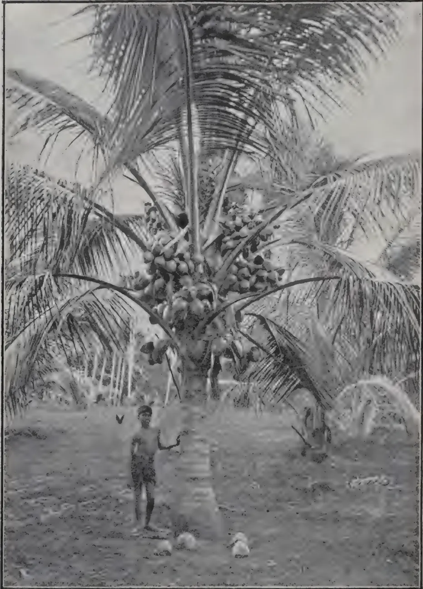
[Photo by H. F. Macmillan.]
COCONUTS AT EXPERIMENT STATION, PERADENIYA.
A prolific 7-year old coconut palm at the Experiment Station, Peradeniya.
| Height of trunk to the bud | ... | 9½ ft. |
| Girth at 2 feet from the ground | ... | 4 ,, |
| Number of nuts on tree at time of photographing | ... | 179 |
| ,, ,, bunches bearing nuts | ... | 13 |
| Number of nuts in largest bunch | ... | 33 |
| ,, of unopened flower stalks | ... | 2 |
| ,, ,, opened flower stalks | ... | 5 |
The above records are interesting as the Experiment Station is about 1,600 feet above sea level; i.e., at least 1,000 feet above the coconut belt proper. A common supposition is that coconuts will not thrive beyond the limits of the sound of the sea, but the site of the above is about 55 miles from the sea as the crow flies. This plantation is regularly ploughed and harrowed for conserving the moisture on Dry Farming principles.
THE
TROPICAL AGRICULTURIST:
JOURNAL OF THE
CEYLON AGRICULTURAL SOCIETY.
VOL. XLIV.
COLOMBO, APRIL, 1915.
No. 4.
CROP AND SOIL.
The series of reviews upon which we have been engaged have had for their object the examination of experiments planned to determine the influence of the principal manurial ingredients upon certain plantation products. Money is wasted if a greater quantity of a particular ingredient is applied than the plant requires, even though other ingredients are present in full measure; and the best value for money is not being obtained if an excess is applied of one ingredient at the expense of another more especially in demand by the plant. Every planter should be able to say approximately what percentage of nitrogen, phosphoric acid and potash a manure should contain for his crop and soil. Such a formula exists for each crop and soil could it be ascertained, and any variation from it involves unremunerative expenditure. It can never be accurately ascertained because it is practically impossible for each man to carry out the necessary experiments which require for their proper conduct special training and equipment not always available. But it will be possible approximately to ascertain it when experiments in the field now being conducted in Ceylon and other countries have been continued for a period of time sufficient to allow of conclusions being drawn; and those conclusions are studied by each planter in the light of his soil requirements. These can to a great extent be obtained by soil analysis but not wholly so, because soil analysis does not tell us definitely what proportion of the plant food present is in the form that the crop requires for its use. The only way to find this out is by actually growing the crop upon the soil.
210[APRIL, 1915.This, of course, is very far from stating the whole of the case for, as HALL has truly said,* agricultural science involves some of the most complex and difficult problems the world is ever likely to have to solve. We can to a great extent determine the materials with which Nature's great laboratory, the soil, is furnished; but we cannot observe that laboratory, nor yet the plant, at work.
Other considerations tending to modify a system of manuring will arise. For example, the rubber planter is confronted with the problem of the extent to which he is able to lighten the manure bill by judicious spacing and thinning out, and it is a problem of some difficulty. Plant food is absorbed from the soil in solution and carried by the water to the leaves in which are the organs of transpiration. Generally speaking, the amount of moisture taken up by the roots will depend upon the volume transpired by the leaves. Hence the planter by promoting leaf growth enables the tree to reach stores of plant food in the soil that might otherwise be inaccessible to it, increasing at the same time the capacity of the tree for collecting from the atmosphere carbon, its staff of life. To solve the problem it is first necessary for him to determine approximately the air room a Hevea tree would demand if allowed to develop its canopy unhampered and then to reconcile that demand with the necessity of making the utmost of his acres. The solution will be different in different localities and will not be the same for steep hill-sides as for flat land.
The problem of the coconut planter is of a somewhat different character. The coconut palm does not branch, and the space it should be allowed can soon be ascertained by local observation. But the tree has a wider range of climate than Hevea and is planted in regions where the critical question is one not of spacing but of water supply. In a locality with a long dry season the problem of the coconut planter with limited means at his disposal may be stated thus: Will it not pay me better to devote the whole or part of the money now expended in manures to cultivating the land in such a way that water that has fallen in the rainy season may as far as possible be conserved for the use of the trees in the dry season? In many cases we believe it would be found that the claims of water came first.
R. N. L.
* The Book of the Rothamsted Experiments.
APRIL, 1915.]211The area under rubber in 1913 is estimated at 1,250,000 acres; distributed as follows:—
| Malaya, etc. | ... | ... | 500,000 acres. |
| Java | ... | ... | 150,000 ,, |
| Sumatra, etc. | ... | ... | 250,000 ,, |
| Ceylon | ... | ... | 220,000 ,, |
| India and Burma | ... | ... | 50,000 ,, |
| German Colonies | ... | ... | 60,000 ,, |
| Borneo | ... | ... | 20,000 ,, |
In 1910 the total acreage under rubber was 767,000 acres; in 1911, 865,000 and in 1912, 987,000. It will thus be seen that the increase shown by 1913 over 1912 is about 27 per cent.
The following table shows the relative importance of the rubber acreage in various parts of the Malayan peninsula:—
| 1912 | 1913 | 1913 | |
|---|---|---|---|
| Acreage. | Acreage. | Output in tons. | |
| Federated Malay States | 399,197 | 433,324 | 21,229 |
| Straits Settlements | 94,263 | 111,316 | 6,047 |
| Johore ... | 91,827 | 117,022 | 1,646 |
| Kelantan and Kedah | 34,837 | 45,373 | 246 |
| Trengannu ... | 1,497 | 1,510 | Not yet producing |
621,621 |
708,545 |
29,168 |
In 1912 there were in all 235,912 workers employed on Malayan estates.
The production of rubber in India is confined to Assam, Burma, and the Madras Presidency, which exported in the fiscal years ending March 31, 1913 and 1914, 14,627 and 23,264 cwt. respectively. The acreage under rubber and the number of trees in 1913 were as follows—
| Acres. | No. of trees. | ||
|---|---|---|---|
| Assam | ... | 4,681 | 137,430 |
| Madras | ... | 12,022 | 1,636,476 |
| Burma | ... | 29,544 | 4,911,399 |
The yield of the Assam plantations is relatively small and the number of trees to the acre much less than in Madras and Burma. In 1913 the outturn of Madras was still more than double that of Burma, because most of the trees in Burma, being less than six years old, are not yet productive.
In 1914 the total acreage under rubber cultivation was about 34,000 acres. The rubber growing districts are in Lower Burma, including Tenasserim. The soil is principally a reddish-yellow, friable sandy loam, with occasional districts which have a subsoil of laterite. The land is easily drainable. It is slightly undulating, and in nearly all cases is protected from the South-west monsoon by high ranges of hills.
212[APRIL, 1915.The rainfall varies slightly in different districts, from 110 inches in North Tenasserim to 200 in Tavoy. There are two seasons: December to April, the dry or cold season, and May to November, the wet or monsoon season. The driest months are February and March, when there is very little or no rain, but there are heavy mists and dews which compensate for the lack of rain. The temperature is about F. in the daytime and F. at night—the mean temperature for the year being F.
All planting is stump planting, about 9 to 12 months old. The plants attain a height of from 10 to 12 feet and a girth average of to 4 inches in one year. All the trees can be tapped in 4 years from the date of planting, the girth average three feet from the ground being 18 to 24 inches and more if planted feet. The average yield for 4 to 6 year old trees is to 3 lb. per tree per year. The rubber is of excellent quality. Tapping can be done now practically all the year round. It is principally done by Burmese girls.
The capital invested is from £22 to £25 per acre to bring to bearing. The average cost of production is about 1s. 6d. to 1s. d. per pound.
The exports of rubber from the Gold Coast Colony in 1912 were 1,990,699 lb. as against 2,668,667 lb. in 1914. The average annual yield of Para rubber (Hevea) at the several experimental stations was lb. per tree. Funlumia has given over 56 per cent. of its total yield at the first tapping, in contrast with Para, where the quantity of latex tends to increase after the first tapping.
—MONTHLY BULLETIN.
In dealing with the above subjects, N. L. SÖHNGEN and J. G. FOL lately considered the following questions:—
Are the mechanical properties of the portions coloured by the action of microbes from those of the uncoloured rubber? Is there consequently any reason for a lower valuation of coloured rubber? Is the hydro-carbon in rubber subject to the attacks of microbes?
In the second part of the article the authors speak of the micro-organisms in rubber and their influence upon its mechanical qualities. They first give a review of the subject and record their experiments regarding micro-organisms and the mechanical properties of spotted rubber. They deduce the opinion that the microbes forming the spots beyond the discolouration exercise no injurious effects on the rubber. Thus, a lower valuation of spotted rubber cannot be defended. According to their opinion it is, however, advisable to prevent the growth of the micro-organisms, which can be accomplished by a suitable arrangement of the drying chambers. It is only at a certain degree of moisture that microbes are developed in rubber.
The third part of their article treats in detail of the microbes which attack the rubber, the following results being obtained by the authors:
of the albumens, sugars and resins which are present. Some kind produce red, black or brown spots without noticeably changing the mechanical properties of the rubber.
3. Two kinds of actinomyces often found in garden soil and sewer water, actinomyces elastica and actinomyces fuscus, are in a position to attack and assimilate the hydro-carbon in rubber.
4. From these microbes an enzyme attacking rubber and soluble in water is not obtained by separation.
5. The knowledge of the facts—first that the development of microbes can take place in moist rubber, when the rubber hydro-carbon is not decomposed, and the mechanical properties do not change, but where pigments are often given off, which diminish the market value of the rubber; and secondly that there are kinds of antinomyces which can positively attack the hydro-carbon of rubber, and thus lower the viscosity,—makes it desirable to again urge that it is of the greatest practical interest to prevent as far as possible the development of micro-organisms in rubber. The growth of microbes is prevented by the rubber being dried on the plantation as quickly and carefully as possible in suitably arranged drying chambers.—INDIA RUBBER WORLD.
THE GEOGRAPHICAL JOURNAL for February contains MR. ROOSEVELT'S paper on a Journey in Central Brazil which he read before the Royal Geographical Society on June 16th, 1914. MR. ROOSEVELT has the following references to the Rubber collectors whom he first met after six weeks' toilsome journeying on the river Castanho :—The point was that no one knew where this mouth was, or the course of the stream, or its length, or anything else about it. Where we actually did come out was on the stream known to the rubber men as the Aripuana. On this map there is no name given to the little bit of a dotted creek running into the Madeira which I suppose is meant for the Aripuana. On a few other maps, however, it appears, with its name as the Aripuana, as a very small creek indicated by a dotted line, entering into the Madeira. It is portrayed on these maps as smaller than several other insignificant tributaries, yet as a matter of fact, instead of being much smaller, it is very much larger. It is difficult to understand how it is possible that a great river, whose mouth and lower course are so well known to the rubber men, could have been left off the maps, or else put on as a tiny tributary with nothing to indicate its size or course. The rubber men had insisted that the Aripuana was the biggest river flowing into the Madeira, although it appears on the map as one of the smallest and most unimportant.
We found that the rubber men called the stream we were on the Castanho. Every day or two we came to a rubber man's house, and on several days we passed two or three. They were always most kind and courteous, and gave us out of their poverty anything they could afford. As we came down, it seemed extraordinary enough that the part of the river which no civilized man had ever traversed should be absolutely unguessed at
214[APRIL, 1915.as far as any cartographer was concerned, but it was more extraordinary still when, lower down, we were on a stream practically of the volume of the Rhine which had been known for years to the rubber gatherers, and realized that on no map was there a hint of this great river's existence, except in so far as there appeared on some maps an inaccurate indication of the mouth. If any man only wishes to ascend the lower two-thirds of the Duvida, or Aripuana and Castanho, the work will be simple, rather easy, and free from danger. I will give letters to the big rubber men which will enable him to purchase the proper canoes and provisions, and hire proper guides.
In the same number of the Journal there is a review on a book entitled ECONOMIC GEOGRAPHY by J. M. McFARLANE in which the following criticism will be found of interest :—So on p.470 the emphasis should be, not on the fact that Para rubber needs to be “flooded for a considerable part of the year,” which everyone knows, but on the fact that the real black Para (the context being “the best quality”), owes its special resiliency to its being flooded for an inconsiderable part of the year (mid-November to end of March), and for that reason comes only from westward of the head of tide, the chief centre for the best quality being Iquitos.
A number of experiments were made during the last year to test the specific gravity of latex, from which a suitable latex hydrometer has been constructed. This machine is made by J. J. GRIFFIN & SONS, London, and is intended for factory controls. Experiments were carried out to test the comparative value of formic and acetic acids for Hevea coagulation. It has been suggested that if the rubber prepared with formic acid proves equal to that produced with acetic acid the former should be substituted for the latter, being cheaper and more economical. It would be still cheaper but for the high freight charged on it by the steamship companies as being dangerous cargo.—INDIA RUBBER WORLD.
| Place | 1915 | 1914 | Place | 1915 | 1914 |
|---|---|---|---|---|---|
| in. | in. | in. | in. | ||
| Colombo | 20 | 156 | Kurunegala | 148 | 07 |
| Kandy | 315 | 52 | Batticaloa | 70 | 631 |
| Galle | 209 | 29 | Badulla | 443 | 103 |
| Jaffna | 125 | 0 | Ratnapura | 614 | 795 |
| Anuradhapura | 116 | 27 | Nuwara Eliya | 211 | 50 |
Coconut cake and palmnut kernel cake are two feeding stuffs which are being brought prominently to the notice of stock owners as a result of the war. The main reason for this is that part of the large quantities of the raw products from which these cakes are manufactured, viz., "copra" and palmnut kernels respectively, which were formerly exported to Germany and Austria-Hungary, has now been diverted to the United Kingdom. A certain amount of coconut cake is manufactured in England, but hitherto practically all the palmnut kernels produced in Nigeria and other British Colonies have been exported to Germany.
Further, the closing of the German market has made it necessary for such parts of the Empire as depend largely on the export of copra and palmnut kernels to find new markets, and efforts are being made to establish new coconut and palmnut kernel-crushing industries in the United Kingdom. The success which might attend the establishment of such industries would partly depend (at any rate during the continuance of the war) on the extent to which the cakes could be disposed of to British farmers, who purchase very large quantities of feeding stuffs, and are always ready to utilise new oil cakes if they can be shown to be good value.
Experiments with one or other of these cakes are being undertaken at a number of Agricultural Colleges, but the results will probably not be available for some time. For this reason the results of such few English experiments as have already been conducted have had to be supplemented from German sources of information.
Copra and palmnut kernels are obtained by removing the shell from the coconut and palmnut respectively. The principal products obtained from the crushing of copra and palmnut kernels are coconut oil and palmnut oil respectively, these being used in the soap industry and in the manufacture of butter substitutes, chocolate fats, and various other edible fats.
The oil is obtained either by pressing the copra and palmnut kernels or by extraction with chemical solvents. In the former case the residues mostly take the form of cake; in the latter case, when the copra or palmnut kernels are ground the residues take the form of meal.
The composition of the cakes naturally varies with the efficiency of the crushing process employed to express the oil, and as the process improves the resulting cakes tend to show a lower percentage of oil and a correspondingly larger percentage of other nutrients than cakes produced by the older methods. When the oil is extracted by solvents, much less is left in the residue than would be left by the crushing process.
The following tables show, for coconut and palmnut kernel cakes, the average of a large number of analyses given by various experimenters
216[APRIL, 1915.together with the minimum and maximum figures found for each individual constituent :—
COCONUT CAKE (CRUDE NUTRIENTS.)
(Average of 25 analyses, many of which are themselves averages.)
| — | Moisture. | Oil. | Crude Protein. | Carbo- hydrates. |
Crude Fibre. | Ash. |
|---|---|---|---|---|---|---|
| Per cent. | Per cent. | Per cent. | Per cent. | Per cent. | Per cent. | |
| Minimum ... | 4.17 | 7.20 | 17.87 | 25.92 | 7.04 | 4.10 |
| Maximum ... | 13.16 | 21.96 | 24.50 | 48.00 | 20.60 | 9.55 |
| Average ... | 11.05 | 11.18 | 20.80 | 39.09 | 12.51 | 5.95 |
PALM NUT KERNEL CAKE (CRUDE NUTRIENTS).
(Average of 11 analyses, some of which are themselves averages.)
| — | Moisture. | Oil. | Crude Protein. | Carbo- hydrates. |
Crude Fibre. | Ash. |
|---|---|---|---|---|---|---|
| Per cent. | Per cent. | Per cent. | Per cent. | Per cent. | Per cent. | |
| Minimum ... | 9.70 | 4.40 | 15.89 | 33.40 | 10.00 | 3.55 |
| Maximum ... | 13.40 | 12.91 | 19.12 | 50.00 | 24.98 | 4.00 |
| Average ... | 11.06 | 7.90 | 17.15 | 41.54 | 18.29 | 3.83 |
For purposes of comparison the composition of average samples of the commoner feeding cakes are given below :—
| — | Moisture. | Oil. | Crude Protein. | Carbo- hydrates. |
Crude Fibre. |
|---|---|---|---|---|---|
| Per cent. | Per cent. | Per cent. | Per cent. | Per cent. | |
| Linseed Cake ... | 12 | 10 | 30 | 34 | 9 |
| Decorticated Cotton Cake ... | 8 | 9 | 41 | 26 | 8 |
| Undecorticated Cotton Cake ... | 12 | 5½ | 22 | 34 | 20 |
The approximate prices per ton for the various cakes named in Liverpool in the middle of January were as follows :—Linseed cake, £11; decorticated cotton cake, £9. 5s.; undecorticated cotton cake, £6; coconut cake.
APRIL, 1915.]217£7 18s. 9d.; palmnut kernel cake, £6 8s. 9d. On the basis of these figures, and of the average crude nutrients given above, the price for food unit* (crude, and disregarding fibre) would average about 1s. 7d. for linseed cake; 1s. 2d. for decorticated cotton cake; 1s. 2d. for undecorticated cotton cake; 1s. 4d. for coconut cake; and 1s. 2d. for palmnut kernel cake.
The following results of digestibility experiments are given by various German authorities (per cent.) :—
| — | Organic Substances. | Oil. | Crude Protein. | Carbohydrates. | Crude Fibre. |
|---|---|---|---|---|---|
| Coconut Cake. | |||||
| Ruminants : | |||||
| Kellner ... .. | 80 | 97 | 78 | 83 | 63 |
| Pott ... .. | — | 100 | 81 | 84 | — |
| Pigs : | |||||
| Kellner ... .. | 80 | 83 | 73 | 89 | 60 |
| Palmnut Kernel Cake. | |||||
| Ruminants : | |||||
| Kellner ... .. | 70 | 98 | 75 | 77 | 39 |
| Pigs : | |||||
| Kellner ... .. | 68 | 78 | 69 | 77 | 36 |
| Sheep : | |||||
| Weiniger (Kuchenmehl) | 77 | 79 | 77 | 89 | 39 |
| Linseed Cake, Decorticated Cotton Cake, and Undecorticated Cotton Cake. | |||||
| Ruminants : | |||||
| Kellner | |||||
| Linseed Cake ... .. | 79 | 92 | 86 | 78 | 32 |
| Decorticated Cotton Cake ... .. | 76 | 94 | 86 | 67 | 28 |
| Undecorticated Cotton Cake ... .. | 55 | 93 | 77 | 52 | 18 |
As regards digestibility of total organic matter, coconut cake is equal to linseed cake and ranks above decorticated cotton cake, while palmnut kernel cake falls below decorticated cotton cake.
Applying KELLNER'S digestibility coefficients for ruminants to the average analyses given on p. 216, the proportion of digestible nutrients of coconut cake and palmnut kernel cake, with the corresponding figures for the
* The number of food units is obtained by multiplying the oil and albuminoids by 2 and adding to the carbohydrates. This assumes that the differences in the manure values will be sufficiently allowed for in the high value assigned to the albuminoids.
218[APRIL, 1915.commoner cakes, would be approximately as follows:—
| Oil. | Crude Protein. | Carbo-hydrates. | |
|---|---|---|---|
| Per cent. | Per cent. | Per cent. | |
| Coconut Cake ... ... | 10.84 | 16.22 | 32.44 |
| Palmnut Kernel Cake .. | 7.74 | 12.86 | 31.99 |
| Linseed Cake ... ... | 9.20 | 25.80 | 26.52 |
| Decorticated Cotton Cake ... | 8.46 | 35.26 | 17.42 |
| Undecorticated Cotton Cake ... | 5.11 | 16.94 | 17.68 |
On the basis of their digestible nutrients the price per food unit would be about 1s. 7d. for coconut cake, and 1s. 6½d. for palmnut kernel cake, compared with about 1s. 5½d. for decorticated cotton cake, 1s. 8d. for undecorticated cotton cake, and 1s. 11d. for linseed cake.
In considering the digestibility of a food, the amount of fibre and its condition must be taken into account. The amount of crude fibre in both coconut and palmnut kernel cakes (especially the latter) seems to be well above that found in linseed and decorticated coconut cakes; but the fibre of coconut and palmnut kernel cakes (especially the former) appears to be much more digestible than that of the two latter cakes. In the most recently made samples of palmnut kernel cake the proportion of fibre is not very much more than that found in linseed cake.
Palmnut kernel cakes in the past have had the reputation of soon going rancid, and this is generally ascribed to an excess of oil present. At the present day, before the kernels are crushed they are subjected to a process of cooking by which the ferment that causes the oil to turn rancid is rendered inactive; if palmnut kernel cake is stored in a suitable, dry place, there is little danger of fermentation taking place.
When cakes contain a very low percentage of oil the great pressure which has been employed makes the cake excessively hard and renders full utilisation by stock difficult. Specific effects are ascribed to the oil (see later) so that from this point of view also the percentage of oil should not be too low. In any case it is not advisable for users of palmnut kernel cake to lay in large stocks; and the cake should be kept unbroken until actually needed for feeding stock.
These considerations as to the oil content of palmnut kernel cake probably apply also in great measure to coconut cake.
Good samples of coconut cake are bright red or brown to brownish-grey in colour, while those of palmnut kernel cake are of a whitish-grey colour. Adulteration is not common.
When gradually accustomed to the foods both kinds of cake seem to be readily eaten by all classes of stock. They are mostly fed dry. When prepared with warm water palmnut kernel cake has an unpleasant taste; if
APRIL, 1915.]219it is moistened at all it should not be allowed to stand long. Manufacturers sometimes recommend steeping coconut cake in water, but this is hardly necessary when the animals are receiving quantities of roots.
Both coconut cake and palmnut kernel cake have been used in Germany, principally for dairy cows, and are said to have a favourable effect on the quantity and quality of the milk fat. This characteristic appears to depend on the special nature of the fats in the two cakes.
Up to 5 lb. per head per day may be fed in the case of palmnut kernel cake and up to 4 lb. in the case of coconut cake. Larger quantities of the cakes than these have, however, been fed to dairy cows without any ill effects. The larger quantities are liable to induce excessive hardness in the butter, while serving to correct the effect of foods which give rise to softness in butter. Small amounts would probably prove useful in warm weather, when difficulty is experienced in making firm butter. It is important that the cakes should not be rancid, since, if this is the case, the milk and butter produced are likely to have a bad flavour.
According to POTT the limits of the favourable effect on butter production appear to be reached in the case of palmnut kernel cake when lb. are fed per head per day, but KELLNER (1911 report) doubts whether smaller quantities than 5 lb. per head per day of palmnut kernel cake would have any effect on the fat content of the milk.
Recent English experiments on the feeding of coconut cake to dairy cows have been conducted at the South Eastern Agricultural College, Wye, and at the Midland Agricultural and Dairy College. In the Wye College experiment, the quantity of coconut cake fed reached 6 lb. per head per day. In the Midland College experiment the addition of 5 lb. per head per day of coconut cake to the basal ration of Shorthorn cows was compared with lb. of linseed cake. The total milk yields during the fortnight were 2,472 lb. from linseed cake, and 2,429 lb. from coconut cake. The live weight increase, however, was greater in the case of coconut cake, while the butter obtained from this food was firmer and better flavoured than that from linseed cake. The results were financially in favour of coconut cake, "this cake at £6 15s. per ton appearing to be well worth consideration when linseed cake is more than £9 per ton."
In a comparison between butter from coconut cake feeding and linseed cake feeding, it was observed that the former butter had better keeping properties than the latter. No very great differences were shown in the flavour and texture of the two lots of butter. The coconut cake butter had, as a rule, a firmer and less oily texture and a better flavour.
Palmnut kernel cake was recently compared with decorticated cotton cake in an experiment at the Lancashire County Council Farm at Hutton.
It was concluded that palmnut kernel cake could be recommended as a safe food for milch cows, although it was not more profitable to feed it at £5 2s. 6d. per ton than decorticated cotton cake at £8 12s. per ton. No difficulty was experienced in getting the cows to eat lb. per head per day of palmnut kernel cake when this amount was gradually worked up to, but this amount was large, and better results might have been obtained had the food been fed as only part of the cake ration. Even the large quantity of palmnut kernel cake fed had no undesirable effect on the butter produced.
220[APRIL, 1915.At the prices which prevailed in Germany before the outbreak of war, both coconut and palmnut kernel cake would seem to have been found less suitable for fattening cattle than were several other concentrated foods.
An experiment carried out by the Edinburgh and East of Scotland College of Agriculture (Report XXVII.), in which the addition of 4 lb. of coconut cake per head per day to the basal ration was compared with 4 lb. of linseed cake, showed the average daily increase from coconut cake to be 1.91 lb. per head compared with 2.25 lb. from the linseed cake. Taking into account the respective manurial values,* the conclusion was reached that when the price of good average linseed cake is £9 per ton, the value of coconut cake for fattening purposes is £6 1s. 8d. per ton.
1. Palmnut kernel and coconut cakes or meals are valuable foodstuffs, particularly for milch cows, when they can be obtained of good quality at a price which compares favourably with the prices of such feeding stuffs as linseed cake and cotton cake. They are also useful for replacing oats for horses, but are probably of less value for fattening bullocks, sheep and pigs.
2. Farmers should buy under guarantee as to analysis, paying special attention to the percentage of oil, fibre, albuminoids and carbohydrates. They should insist on fresh, well-made cake, and should not buy more than a three months' supply.—JOURNAL OF THE BOARD OF AGRICULTURE.
The principal pests of coconuts are the black or rhinoceros beetle (Oryctes rhinoceros), and the red beetle, or Asiatic palm weevil (Rhynchophorus ferrugineus).
Oryctes rhinoceros is a shiny, dark-brown or practically black beetle, ranging in length from 30 to 60 mm., with the usual size between 40 and 50 mm. The male is the larger, and is also distinguished by the prominent horn on the dorsal surface of the head, which in this sex is sometimes as much as one centimetre (2/5 inch) in length, while in the female it is smaller, often inconspicuous. The life-cycle probably varies in length, certain writers on the subject (COPELAND amongst these) believing that in some cases it may not occupy more than seven months, while others hold the opinion that the larval life alone may extend over a period of two years.
The eggs are not described. The larvæ reach a length of 1 decimetre (about 4 inches) when they enjoy particularly favourable conditions. The larvæ live in decaying vegetable matter of all kinds, and the cocoons are formed in the same situations.
The injury to coconut trees is caused by the adult beetles, which eat their way into the bud, starting at the bases of the leaves.
The means of controlling this insect are the destruction of the beetles in the tree by their removal by the use of a wire probe; the destruction of their breeding places by the removal of all accumulations of rubbish; and by
* The manurial values of HALL and VOELCKER for the different cakes are as follows, per ton:—Coconut cake, 34s. 7d.; palmnut kernel cake 22s. 11d.; decorticated cotton cake, 64s. 9d.; undecorticated cotton cake, 37s. 1d.; linseed cake, 44s. 4d.
APRIL, 1915.]221means of traps, which consist of holes filled with specially prepared vegetable refuse and mould, which furnish satisfactory breeding places, these being regularly examined, and the beetles, cocoons, larvae, and eggs collected and destroyed.
The last method is believed to be the most effective means of controlling the black beetle. References to this beetle have been made in the AGRICULTURAL NEWS, Vol. XI., pp. 218 and 378, and Vol. XIII, p. 10. The last of these gives an account of the successful use of a parasitic fungus in the beetle traps which kills many of the larvæ.
The red beetle, or Asiatic palm weevil (Rhynchothorus ferrugineus) is related to the West Indian palm weevil (R. palmarum), and attacks coconut trees in the same way. The red beetle is said to be the most deadly insect pest of coconuts in the Philippines, but since it cannot attack sound trees, it is not the hardest to combat.
Its length ranges from about 3 to more than 5 centimetres (11/5 to 2 inches). Its colour varies from reddish to almost black. It attacks the coconut and other palms, but is not known to infest plants of other groups.
The length of the life-cycle is variously estimated to cover a period of from ten weeks to about one year.
The red beetle is not able to penetrate into the tissues of a healthy coconut tree, but takes advantage of injuries of all sorts, which results from any breaking of the surface. The holes of the rhinoceros beetle, wounds resulting from hurricanes, fires, careless or unnecessary pruning, all offer means of access to the egg-laying female.
It has been found that the removal of old leaves, and the firing of the tops in an attempt to check other insects or disease result in attack by this pest.
The methods of combating this insect include, (1) all precautions against injuring the coconut tree, in which, of course, the control of the rhinoceros beetle plays an important part; (2) the removal and destruction of all infested coconut or other palm trees; (3) extracting the beetles and the larvæ from their burrows and places of concealment in the tree; (4) the use of bait and traps, which consists in the felling and leaving exposed on the ground, under suitable conditions, of any dead coconut or other palm known to be attractive to the insect, until eggs have been laid in them and the larvæ have hatched, when the trap material is destroyed, preferably by fire. Mangoes crushed in coconut milk and water, and exposed in shallow dishes are also said to have been recommended as a trap. The use of poisons, such as carbon bisulphide, cyanide of potassium, and hydrocyanic acid has been tried for the control of this insect, but without practical results.
A number of other beetles, including some weevils, are also mentioned as being pests in the East, and reference is made to those which occur in the American tropics.
The most serious leaf-eating beetles mentioned are small beetles of the family Hispidæ, which both as larvæ and adults feed upon the leaves, and are the cause of serious injury to the trees.
One of these, Bronthispa froggatti, is stated to be considered by FROGGATT as certainly the worst pest the planters in the Solomon Islands have to fight
222[APRIL, 1915.in their young coconut plantations. The result of the attack is that the leaves are reduced to skeletons connected by dead membranes before they are well unfolded. In Eastern Java the same, or a nearly related species, attacks the coconut leaves in a similar way. In the Solomon Islands gangs of boys are kept at work shaking soap and kerosene wash into the still folded leaves.
In the related genus, Promocotheca, three species are known as coconut pests: P. cumingii in the Philippines, P. antiqua in New Guinea, and P. opicollia in the New Hebrides.
The Philippine species is a small beetle from 7.5 to 10 mm. in length. It is sluggish in habit, and does not fly readily on being disturbed.
The adult beetles crawl between the folded-up leaflets of the young leaf, and eat small spots between the veins of the leaf.
The damage done by the larva is greater than that done by the adult. The eggs are inserted by the adult female just beneath the epidermis of the leaf. The larvæ, on hatching, penetrate into the tissue where they feed, and pupate later. The spots eaten by the beetles, and those excavated by the larvæ, become dry and discoloured when the leaf opens out, and give to a badly attacked tree a very unsightly appearance. In addition, the effect of a serious attack is very injurious to the tree.
This insect is controlled to a large extent by two hymenopterous parasites.
A number of moth and butterfly larvæ also feed upon the coconut leaves, but these are pests of a rather local nature. Two of these, Brachartona caloxantha and Hidara irawa, occur in other parts of the East; while two others, Padraona chrysozona, and Thosea cinereomarginata occur in the Philippines.
Brassolis isthmia, which occurs in Panama, and B. sophoræ in British Guiana, are two other leaf eating insects included in the list.
Omiodes blackburni, which is known as the palm leaf roller in Hawaii, is also mentioned.
Locusts are recorded as occasional serious pests in Madagascar, and the author states that in Mindanao he has seen coconuts thoroughly stripped by these insects, and so badly injured that the fruiting would be delayed two years.
Another Orthopteron, Græffa cocophaga, one of the walking sticks, or stick insects, has at times been a pest in certain places.
Its distribution extends from New South Wales northward and eastward across Polynesia. It feeds on coconuts and has temporarily done considerable damage in places. It is large in size—about 20 centimetres ( inches) in length—but is inconspicuous on account of its colour.
Of all the scale insects, some thirty species, recorded as attacking coconut, Aspidiotus destructor, is stated to be the only one which is ever found in large numbers and charged with doing serious damage. A. destructor is probably found in every land where the coconut is grown. It is said to have been most serious in the Caroline Islands, where the coconut is the staple crop, but its occurrence is universal in coconut growing districts,
APRIL, 1915.]223and while often kept in check by its natural enemies, it may at any time become sufficiently abundant to be a serious pest. The lady-birds of the genus Chilocorus appear to be the most efficient of its natural enemies. Trees that are growing under suitable conditions are less likely to be seriously attacked by this pest. To guard against injury by it trees should be amply spaced, provided with plenty of water in the ground, and, if necessary, cultivated and manured. It is stated that in Trinidad Aspidiotus destructor is often protected by an ant (Azteca charifex) in such a way that the scale is completely guarded against its natural enemies.
The miscellaneous pests of coconuts include such forms as the robber crab (Birgus latro), parrots and crows, bats, rats, bandicoots, porcupines, hogs, and bears. The hog is said to be the worst pest of all these, destroying seed nuts which have been planted out, and young trees. In the Malay States, bears, pigs, and rats are said to do more damage to coconuts than the beetles. In Lower Perak, bears recently destroyed more than 1,000 coconut trees in one year.—AGRICULTURAL NEWS.
Large quantities of coconut oil are produced by natives in India, Ceylon and elsewhere, whilst the dried kernels of the coconut, known as copra, are largely exported to Europe, and the oil extracted by modern milling methods. Prior to the war the chief countries importing copra were Germany and France, but owing to the complete cessation of trade from British possessions to the former country, as well as to Austria-Hungary, large quantities of copra from Ceylon, India, the Federated Malay States, and other countries have become available for use elsewhere, and in the present article attention is called to the magnitude of this trade and to the desirability of British merchants and manufacturers securing a larger proportion of copra for industrial purposes in this country.
The quantities and values of the exports of copra from some of the more important producing countries are shown in the following table; the figures in each case are for the last year for which statistics are available:—
| British Territories : | Year. | Quantity. | Value. |
|---|---|---|---|
| Cwt. | £ | ||
| Ceylon | ... 1913 | 1,117,292 | 1,397,284 |
| India | ... 1913-14 | 763,832 | 1,039,826 |
| Federated Malay States | ... 1913 | 185,753 | 211,043 |
| Seychelles | ... 1913 | 58,738 | 71,919 |
| Tongan Islands Protectorate | 1912 | 222,400 | 209,567 |
| Fiji Islands | ... 1913 | 158,585 | 176,741 |
| Papua | ... 1912-13 | 15,880 | 16,356 |
| British Solomon Islands | ... 1912-13 | 83,920 | 73,637 |
| Gilbert and Ellice Islands Protectorate | ... 1911 | 41,700 | 20,700 |
| East Africa Protectorate | ... 1912-13 | 31,283 | 31,956 |
| Zanzibar | ... 1913 | — | 216,842 |
| Gold Coast | ... 1913 | 12,589 | 14,291 |
| Trinidad | ... 1913 | 10,308 | 11,545 |
| Foreign Territories . | Year. | Quantity. | Value. |
|---|---|---|---|
| Cwt. | £ | ||
| Philippine Islands | ... 1913 | 1,618,080 | 1,988,692 |
| Java | ... 1913 | 1,556,000 | — |
| Sumatra (East Coast) | ... 1912 | 80,860 | — |
| Celebes | ... 1913 | 580,340 | — |
| Indo-China | ... 1912 | 157,074 | 95,783 |
| New Caledonia | ... 1912 | 53,173 | 64,850 |
| French Oceania | ... 1912 | 117,662 | 112,569 |
| Samoa | ... 1912 | 220,423 | 203,496 |
| Bismarck Archipelago, German Solomon Islands and German New Guinea | ... 1912 | 223,814 | 202,603 |
| East Carolines, Marshall Islands and Nauru | ... 1912 | 94,940 | 82,820 |
| West Carolines, Pelew and Mariana Islands | ... 1912 | 21,706 | 15,091 |
| German East Africa | ... 1912 | 83,468 | 78,152 |
| Portuguese East Africa | ... 1911 | 78,820 | 48,066 |
The following tables, giving the distribution of the exports of copra from British possessions, show that in many cases a very large proportion of the trade was with Germany ; in the case of Ceylon no less than three-quarters of the exports went to Germany in 1913, and in the case of India in 1912-13 as much as four-fifths.
| 1911. | 1912. | 1913 | ||||
|---|---|---|---|---|---|---|
| cwt. | £. | cwt. | £. | cwt. | £. | |
| United Kingdom ... | 10,503 | 9,382 | 9,996 | 10,804 | 1,500 | 2,001 |
| India ... | 56 | 27 | — | — | 163 | 244 |
| Austria-Hungary ... | 12,096 | 13,120 | 29,977 | 31,956 | 30,041 | 37,518 |
| Belgium ... | 14,508 | 14,439 | 4,020 | 2,445 | 18,000 | 23,422 |
| Denmark ... | 11,500 | 14,133 | 68,000 | 79,285 | 25,667 | 34,639 |
| France ... | 7,999 | 7,934 | 2,000 | 2,200 | 1,003 | 1,000 |
| Germany ... | 567,473 | 612,312 | 368,034 | 408,525 | 814,979 | 1,013,486 |
| Holland ... | 1,000 | 1,000 | 1,000 | 1,067 | 1,059 | 1,200 |
| Roumania ... | — | — | — | — | 4,000 | 5,600 |
| Russia ... | 191,171 | 200,341 | 131,042 | 135,893 | 220,880 | 278,174 |
| United States ... | 5,508 | 5,500 | — | — | — | — |
| Total... | 821,814 | 878,188 | 614,089 | 672,175 | 1,117,292 | 1,397,284 |
| 1910—11. | 1911—12. | 1912—13. | ||||
|---|---|---|---|---|---|---|
| cwt. | £. | cwt. | £. | cwt. | £. | |
| United Kingdom ... | 5,929 | 7,013 | 40,814 | 51,865 | 43,999 | 54,318 |
| British Possessions | 1,771 | 1,490 | 847 | 834 | 753 | 852 |
| Russia ... | 24,856 | 29,323 | 31,485 | 36,373 | 43,184 | 54,886 |
| Germany ... | 348,556 | 409,359 | 473,292 | 563,168 | 548,331 | 687,142 |
| Holland ... | 1,997 | 2,663 | 12,735 | 15,866 | 8,492 | 10,258 |
| Belgium ... | 11,360 | 13,250 | 25,485 | 29,718 | 13,904 | 15,889 |
| France ... | 54,401 | 61,994 | 48,490 | 56,920 | 26,049 | 32,367 |
| Other countries ... | 757 | 1,043 | 4,375 | 4,914 | 2,281 | 3,153 |
| Total... | 449,627 | 526,135 | 637,523 | 759,658 | 686,993 | 858,865 |
Most of the copra exported from the Federated Malay States is sent to the Straits Settlements, but no information is available as to its ultimate destination. The total exports in recent years are as follows :
| cwt. | £. | ||
|---|---|---|---|
| 1910 | ... | 149,726 | 139,326 |
| 1911 | ... | 160,790 | 151,002 |
| 1912 | ... | 154,204 | 152,036 |
| 1913 | ... | 185,753 | 211,043 |
A considerable amount of copra is produced in the States of Perlis, Kelantan, Trengganu, and Johore. No statistics of the exports from the last-named State are available, but in 1912, 161,648 cwt., valued at £157,548 were imported into Singapore from Johore. The exports from the other States mentioned in the last year for which statistics are available were as follows :
| Year. | cwt. | £ | ||
|---|---|---|---|---|
| Perlis | ... | 1911 | 5,146 | — |
| Kelantan | ... | 1912 | 90,995 | 89,176 |
| Trengganu | ... | 1912 | 27,715 | 28,044 |
There is a very considerable transit trade in copra in the Straits Settlements, and large quantities are exported to Europe from Singapore and Penang. That shipped from the former port is derived mainly from the Netherland East Indies, Malay Peninsula, Philippine Islands, and Siam, whilst that shipped from Penang comes chiefly from the Netherland East
226[APRIL, 1915.Indies and the Malay Peninsula. The total exports from Singapore and Penang in 1912 were as follows :
| Singapore. | Penang. | |||
|---|---|---|---|---|
| Cwt. | £ | Cwt. | £ | |
| United Kingdom | 41,774 | 45,205 | 11,431 | 14,308 |
| Austria-Hungary | 62,127 | 64,550 | 4,981 | 5,577 |
| Belgium | 28,600 | 30,081 | 1,001 | 1,027 |
| Denmark | 94,742 | 102,823 | 75,330 | 81,863 |
| France | 172,531 | 179,820 | 21,414 | 23,317 |
| Germany | 402,643 | 420,934 | 258,026 | 290,332 |
| Russia | 304,969 | 317,868 | 55,571 | 60,170 |
| Other countries | 72,257 | 74,965 | 3,010 | 2,648 |
| Total | 1,179,643 | 1,236,246 | 430,764 | 479,242 |
The Trade Returns for the United Kingdom show that in 1913 this country also imported about 18,600 metric tons of coconut oil from foreign countries other than Germany. The total imports of foreign coconut oil to the United Kingdom in 1913, therefore, amounted to about 49,000 metric tons, corresponding to about 82,000 tons of copra.
It is, moreover, certain that from all these foreign countries which export coconut oil to the United Kingdom, and especially from Germany, considerable quantities of coconut oil also reach this country in the form of margarine, vegetable butter, and prepared fats and foods of various kinds. No definite figures can be suggested for the amount received in this way.
It is clear from the foregoing data that considerably more than half of the British copra hitherto exported to Germany and Austria-Hungary might be taken by the United Kingdom for home use, either in the form of copra or coconut oil. Ceylon and India both produce copra and coconut oil, so that these countries could probably divert their supplies in either form to the United Kingdom. It is understood moreover that firms crushing copra in the United Kingdom are now extending their plant, so that there is a good prospect of the British market for copra being greatly enlarged.
In addition to the possibility of finding a market in the United Kingdom, there appears to be a considerable chance of the British Colonies and India securing a share of the French import trade in copra. In 1912 the total imports of copra into France were 153,506 metric tons. Of this 19,691 metric tons came from British Possessions, and 10,321 metric tons from French Colonies. Of the remainder 43,422 metric tons came from the Netherland East Indies and 72,964 metric tons from the Philippines. It ought to be possible for Ceylon, India, and the Federated Malay States to
APRIL, 1915.]227compete on favourable terms with the Netherland East Indies and the Philippines for this trade.
Apart from the United Kingdom and France the new markets available for British copra are small. In the case of the United States the imports of copra in 1913 amounted to 15,548 metric tons, of which 10,674 metric tons came from the Philippines, and the rest mainly from French, British, and German Possessions in the Pacific. The imports of coconut oil to the United States amounted in 1913 to 22,915 metric tons, of which about 18,000 metric tons came from Ceylon, India, the United Kingdom, and Australia, and the rest chiefly from France, Germany, and the Philippines.
In Holland it may be difficult to replace the imports from the Netherland East Indies by British copra and coconut oil, but there seems to be some possibility for the development of export to Denmark, Scandinavia, and Russia.
The copra imported to Europe and elsewhere is used as a source of oil (coconut oil) and feeding cake (copra or coconut cake). The methods of preparing copra have been dealt with already in this Bulletin in an article on the coconut and its commercial uses (1912, 10,274), and it is proposed to deal now merely with its utilisation and value. The copra exported from the different countries varies somewhat in quality; the values of the more important grades in London, Marseilles and Hamburg are shown below:—
| London. | Marseilles. | ||||
|---|---|---|---|---|---|
| (Jan. 21st, 1915), | (July 17th, 1914), | ||||
| per ton. | per 100 kilos. | ||||
| £ | s. | d. | frs. | ||
| Malabar | ... | 26 | 2 | 6 | — |
| Ceylon | ... | 25 | 10 | 0 | 63 |
| Malay and Straits | ... | £24 0 0 | — | — | £24 10s. 0d. |
| Zanzibar | ... | — | — | — | 59.50 |
| Manila | ... | 23 | 12 | 6 | 58.50 |
| Samoa | ... | 24 | 17 | 6 | 59.50 |
| East Africa | ... | 24 | 5 | 0 | — |
As already mentioned, large quantities of coconut oil are prepared from
228[APRIL, 1915.the fresh kernels in Ceylon and India, the exports in recent years being as follows :—
EXPORTS OF COCONUT OIL FROM CEYLON.
| 1911. | 1912. | 1913. | ||||
|---|---|---|---|---|---|---|
| cwt. | £ | cwt. | £ | cwt. | £ | |
| United Kingdom ... | 258,664 | 448,868 | 167,586 | 294,393 | 150,650 | 307,326 |
| British Possessions | 2,120 | 3,679 | 1,789 | 3,143 | 2,261 | 4,612 |
| Austria Hungary ... | 16,253 | 28,204 | 17,975 | 31,576 | 14,300 | 29,172 |
| Belgium ... | 10,247 | 17,782 | 2,804 | 4,826 | 4,407 | 8,990 |
| France ... | 119 | 206 | — | — | 5 | 10 |
| Germany ... | 16,960 | 29,431 | 5,305 | 9,321 | 1,712 | 3,493 |
| Holland ... | 2,038 | 3,537 | 1,441 | 2,531 | 3,116 | 6,357 |
| India ( other than British ) ... |
952 | 1,652 | 1,092 | 1,918 | 1,203 | 2,454 |
| Italy ... | 852 | 1,478 | 2,046 | 3,594 | 2,311 | 4,715 |
| Mozambique ... | 3,001 | 5,208 | 441 | 775 | 276 | 563 |
| Norway ... | 12,072 | 20,949 | 31,423 | 55,200 | 40,626 | 82,777 |
| Russia ... | — | — | — | — | 401 | 818 |
| Sweden ... | 3,998 | 6,938 | 3,779 | 6,638 | 3,411 | 6,958 |
| United States .. | 177,731 | 308,422 | 166,053 | 291,700 | 322,305 | 657,502 |
| Other foreign countries ... |
9 | 16 | 44 | 77 | — | — |
| Total ... | 505,016 | 876,370 | 401,779 | 705,792 | 546,984 | 1,115,847 |
EXPORTS OF COCONUT OIL FROM INDIA.
| 1910-11 | 1911-12 | 1912-13 | ||||
|---|---|---|---|---|---|---|
| Gals. | £ | Gals. | £ | Gals. | £ | |
| United Kingdom . | 317,670 | 39,363 | 557,292 | 72,076 | 217,655 | 29,499 |
| British Possessions | 41,295 | 5,742 | 59,117 | 8,133 | 48,174 | 6,811 |
| Sweden ... | 191,171 | 21,763 | 316,295 | 40,998 | 99,385 | 13,217 |
| Germany ... | 711,434 | 84,208 | 584,251 | 65,469 | 163,940 | 20,929 |
| Holland ... | 30,887 | 3,590 | 60,306 | 7,772 | 39,337 | 5,017 |
| Belgium ... | 103,326 | 12,503 | 34,506 | 4,507 | 46,229 | 6,189 |
| United States ... | 485,567 | 58,575 | 477,487 | 62,080 | 327,899 | 43,644 |
| Other foreign countries ... |
53,258 | 6,899 | 75,849 | 9,777 | 26,875 | 3,715 |
| Total... | 1,934,608 | 223,643 | 2,165,103 | 270,812 | 969,494 | 129,021 |
Nearly all the Indian oil is prepared in Madras, and particularly on the Malabar coast. The Cochin oil produced in the latter region is on the whole more carefully prepared than Ceylon oil, and consequently realises higher prices. The values of Cochin and Ceylon oils in London at the present time are £55 and £48 10s. per ton, respectively ( February, 1915 ).
The quality of the oil prepared by expression from copra in Europe, the United States, and elsewhere depends largely on the quality of the copra used. Sun-dried copra yields an oil of paler colour than kiln-dried copra,
APRIL, 1915.]229whilst that obtained from imperfectly dried copra is of higher acidity and inferior quality. The current value of London-expressed oil is £40 5s. per ton (February, 1915). The oil content depends on the thoroughness with which the copra has been dried. Thus, sun-dried kernels contain about 50 per cent. of oil; kiln-dried kernels contain 63 to 65 per cent. and hot-air-dried copra up to as much as 74 per cent. The ground copra is expressed twice at a temperature of 55° to 60° C., the yield of oil from average copra being about 62 to 63 per cent.
At the average European temperature coconut oil is a solid fat, varying in colour from white to yellowish according to the quality of the copra and the method of preparation. The unrefined oil prepared from the best quality copra possesses the characteristic smell and taste of the fresh coconut, but that obtained from the lower grades of copra is often rancid and disagreeable in smell and taste. By suitable refining methods, however, an odourless and tasteless oil may be produced, and the refining of coconut oil for the production of edible fats is now an important industry. The following table gives the range of the principal constants of coconut oil.
| 99° C. | ||
|---|---|---|
| Specific gravity at | 0.874 | |
| 15° C. | ||
| Iodine value | per cent. | 8.0 —10.0 |
| Saponification value | 246 —26.8 | |
| Hehner value | 82.4 —90.5 | |
| Reichert-Meissal value | 6.6 — 7.5 | |
| Polenske value | 18.0 | |
| Titer test | 21.2° C.—25.2° C. | |
Refined coconut oil is used in the preparation of solid edible fats such as margarine, vegetable butters, cooking fats, and chocolate fats, as well as in the manufacture of cakes, biscuits, sweetmeats, etc. In order to obtain a fat of firmer consistence and higher melting point, a certain proportion of the liquid constituents of the oil ("coconut olein") is removed by expression. The "coconut stearin" which is left is used for the purposes indicated above, when obtained from high-grade oil, while that obtained from the lower grades is used for candle manufacture. The extent of the trade in coconut oil and the edible products obtained from it has already been referred to—
IMPERIAL INSTITUTE BULLETIN.
| Place | 1915 | 1914 | Place. | 1915 | 1914. |
|---|---|---|---|---|---|
| in. | in. | in. | in. | ||
| Colombo | 10.29 | 3.84 | Kurunegala | 2.08 | 7.00 |
| Kandy | 4.07 | 6.62 | Batticaloa | 5.28 | 3.16 |
| Galle | 4.45 | 2.02 | Badulla | 4.79 | 4.14 |
| Jaffna | .83 | .22 | Ratnapura | 9.51 | 6.80 |
| Anuradhapura | .04 | 3.31 | Nuwara Eliya | 4.85 | 3.01 |
S. F. ASHBY.
Pods in all stages of development are attacked. A brown rot starts as a rule from the stem or flower end and rapidly advances up and down the pod. On the surface the brown area is sharply separated from the normal part, but internally in the wall of the pod the separation is not clear. Later the pod shrivels, turns black and hardens. In the brown stage a grey down may be seen just behind the advancing edge of the rot due to the colourless spores of the fungus borne on long delicate branches. As the pods shrivel and blacken, snow white mould and pink spots develop, due to other fungi living in the tissues killed by the real parasite, a Phytophthora. This fungus can gain entrance through the uninjured skin of the pod. If the pod attacked is immature enough for the beans to be still in contact with the wall the fungus enters and kills them; if the beans have drawn away from the wall they avoid attack and may be suitable for curing. The rot which advances from the flower end often enters the stalk and then the barl of the limb where it extends up and down colouring the bark wine purple and causing the so-called canker. A large amount of canker starts from the cushions in this way, being due to the rot passing through the pod stalks into the bark. The fungus is spread mainly from diseased pods, on which the spores form in great numbers, by means of wind, rain and insects. In infested plantations the trees will have diseased pods in one spot or another hanging throughout the year, each being a centre for the spread of disease. The disease is worst in wet seasons and in damp localities, especially where there is poor ventilation and much shading. The fungus forms thick resting spores on and in the pods; then gets washed into the soil or mixed with it in rotting husks and becomes an additional source of infection. The pod rot and canker can be completely controlled by systematic spraying with Bordeaux mixture, which should be regarded as one of the regular, necessary operations in good management. Collecting and burning diseased pods except in small cultivations does not pay for itself. Trees generally set more pods than they can mature, so that some on each cushion shrivel and fall at a very early stage. A serious number of these surviving young pods which the trees could mature are attacked by the rot and lost, so that the crop is always short from that cause. Spraying soon after the maximum amount of fruit has set saves these young pods and secures a full crop. The grown maturing pods are equally preserved so that the proportion of black cocoa picked is greatly reduced, and still further gain. It would probably pay to spray four times a year when the largest number of young pods are present. With an Alpha and large Holder Knapsack outfit one man can spray 100 trees a day and give a gallon to each. The cost of spraying 1,000 trees in labour and chemicals would not exceed £2 as a maximum and could, no doubt, be done for 30/-. Two sprayings in September, in Trinidad, at an interval of two weeks on blocks of 500 trees, compared with
APRIL, 1915.]231a like number unsprayed, yielded on two estates a net profit of £9 and £4 per 1,000 trees during the following year. As most canker patches start from the pod, spraying greatly diminishes it by preventing fresh infection. Where already present, excision must be practised in addition. The best way to locate canker is by the black nature of the three-fourth grown pods at picking time. If canker has reached the cushion the places should be marked by paint or lime, so that excision may be performed as soon as work is slack. The reddish or purple bark should be entirely cut away without injuring the wood (as the fungus is confined to the bark), the edges trimmed smooth, and the wound covered by hot coal tar. MR. J. B. RORER, has made a thorough investigation of this disease in Trinidad and has proved conclusively that both pod rot and canker are due to the fungus—Phytophthora faberi (Maubl). I have examined the fungus from the rotting pods in Jamaica and find it to agree, both on the tissues and in pure culture, with the species described by him. The tissues rotted by this fungus are very quickly invaded by a number of other fungi, of which Colletotrichum Cradwickii (BANCROFT) is most conspicuous here; these successors of the Phytophthora have misled several investigators of canker, who falsely concluded that one or another of them was the primary cause of the disease. I have recently examined two cases of diseased cocoa branches showing both the conidial and perfect fruits of the fungus, Sphaerostilbe musarum, which causes the Bonnygate disease of bananas. The branches bore the purple canker patches due to the Phytophthora and both these places and the normally coloured bark tissues, well beyond them, was penetrated by the black bordered rhizomorphs of the Sphaerostilbe. Both samples were from cocoa growing among bananas attacked by the disease, so that spores from the latter were carried to the cocoa pods, probably starting attack on the canker spots but also spreading in the bark beyond them. This finding supports the suggestion made in the description of Bonnygate disease that the fungus came originally from a woody plant. The following paragraphs are from RORER'S paper (BULL. DEPT. AGR., Trinidad, No. 65, July 1910). When the tissues of the pod at the stem end have become well invaded by the fungus the mycelium runs back into the cushion either through the bark or the central woody cylinder of the stem of the pod. If it has gained entrance to the tree through the thin bark layer of the pod stem it generally spreads out in all directions, so that the whole cushion and surrounding area of the bark becomes cankered. The mycelium will extend in narrow lines from some distance up and down the stem in the cambium layer, but sooner or later will grow outward into the bark and then spread out rapidly, forming larger cankered areas. As the tissues of both pod and bark are killed by the advancing margin of growth of the Phytophthora mycelium they are quickly invaded by a number of rapidly growing fungi, as mentioned above, which produce spores very quickly on the diseased tissue. There can be no question that these fungi aid in the rapid disintegration of the already diseased pod tissues of cankered bark, but that they are not parasitic and cannot even attack tissues which have been wounded mechanically, has been proved by a larger number of inoculation experiments. A large number of inoculation experiments, made by the writer with pure cultures of Phytophthora, proves conclusively that this fungus is the cause of the common cacao pod rot and of the disease known as canker, and that the diseased pods serve as the chief source of infection of the tree.
232[APRIL, 1915.To control the pod disease two methods have generally been recommended. One is to gather and destroy all pods as soon as disease is noticed on them, and to husk black cocoa apart from the sound, and to burn, bury or lime all the husks; the other is to prevent disease by spraying. Methods similar to the first have been frequently recommended for the control of a large number of fruit diseases, but from the fact that it is impossible to gather and destroy all the fruits, of whatever kind, as soon as they become diseased and that the fungi causing disease of this type produce spores within a very short period from the time of the first infection, the method is of a theoretic rather than a practical value. It has long since been given up as a means of controlling such diseases as brown rot of the peach, bitter rot of apple, black rot of the grape, and other fruit diseases. Moreover, a number of Trinidad planters who have tried this method as a means of controlling the cacao pod rot have told the writer that though the disease was reduced to a certain extent the cost of the labour used in collecting and destroying the blackened pods was in no way compensated for by the increased return from the general pickings, so that they gave up the method after a short trial. When the fact is considered that in the rainy season a pod may become infected and completely rotted within a week or ten days and that within three or four days from the time of infection hundreds of thousands of spores are produced, each one of which in germinating liberates from 10 to 30 smaller spores, each capable of reproducing the disease, it can be readily understood how futile it is to attempt to check the disease by gathering and destroying the diseased pods. The method of control by spraying, which has proved so successful in combating similar diseases in temperate climates, is undoubtedly the best to use against pod rot. Although a sufficiently large number of experiments have been carried out, either in Trinidad or elsewhere, to make it possible to give the best recommendations as regards time of spraying, mixtures to use, etc., yet the work which has already been done shows conclusively that the disease can be controlled by spraying, at a reasonable cost, that is at a cost which is more than compensated for by the increased yield. Up to the present time the writer has definite results from two sets of experiments. During the past eight months 2,125 more sound pods have been picked from 500 sprayed trees, than from 500 adjacent unsprayed trees, and the sprayed trees have yielded in total 1,608 more pods. Twenty-five per cent. of the cacao from the unsprayed trees has been black, while only 9 per cent, of that from the sprayed trees has been so. At some future time, perhaps, when estates are perfectly drained and cacao is grown without shade much less disease will be met with, but until that time comes both canker and pod rot must be controlled by spraying.
In this disease, the younger twigs begin to die and shed their leaves, and grey brown rot advances in the bark and outer wood down into the branches and the trunk, finally killing the tree. This rot, which is dry and fibrous in the older parts causing the bark to separate easily from the wood, is due to a fungus.—Lasiodiplodia, which is common on dead wood and pod shells in cocoa walks. The fruiting berries burst through the bark as black pustules and discharge great numbers of large oval spores at first colourless, later brown, with a dark line across the middle: when the disease reaches a
APRIL, 1915.]233cushion bearing pod the fungus grows through the stalks into the walls and cavities of the pods, forming a white growth over the beans and a brown rot of the pod advancing to the flower end. The pods later become hard, shrivelled and black and bear the fruiting pustules of the fungus. The treatment consists in prompt pruning away of the diseased twigs and limbs and burning them. The pruning must be done well in advance of the discoloured bark, or fungus may be left to continue the rot. The larger cut surfaces should be treated with coal tar. The trees appear 'stag headed' in this disease, a condition which can also be acused by poverty of soil, wind, drought or root disease. In these cases if twigs are cut lengthwise, the dead brown bark is found to cease sharply against the living; in die-back disease the transition from dead to living is gradual. Trees in well-drained, weeded and mulched soils resist this disease, which is a sign of neglect.
This is caused by the same fungus rotting the roots, especially in ill-drained or heavy soils. The leaves become sickly, begin to die from the margins and finally fall away and young pods fall or cease to develop. The disease often shows at isolated points in a plantation. The attacked trees should be felled and a trench dug around them about two feet deep and 16 inches wide at a distance of nine feet, throwing the soil inwards. This measure is carried out to prevent possible spread through the soil. Attention to drainage and forking should be given over the whole plantation.
The leaves and pods frequently suffer rather severely from attacks of these insects, especially in dry weather. The leaves show brown patches and strips following the midribs and main veins, while the pod becomes russetted. The species in question (Heliothrips rubrocinctus) is easily recognised in the larval and pupal stages by the presence of a broad red cross band on the otherwise yellow body. The larvæ move about freely on the undersides of the leaves, puncturing the tissues with their beaks and sucking out the sap while the pupæ collect in small colonies and do not move. The adult insect is black with fringed wings. All stages may be found on the undersides of the leaves and the characteristic way in which the larvæ and the adults move about with the tail end raised and supporting a large drop of the bark liquid excreta can be seen easily. If the insects are not found, attack can be inferred from the brown strips and the small dark patches of the dry excreta scattered over the undersides of the leaves and pods. If marked injury is being done the leaves and pods should be sprayed with an insecticide, such as kerosene emulsion, the ingredients of which are cheap and easily obtained. The spray must be applied with force at close quarters from the finest nozzle and care taken to cover the undersides of the leaves. The work should be done in still air and all parts of the trees covered, but the spray should not be applied too long at one place as large drops may form, run down the trunk and injure the surface roots. It should be repeated two weeks later to deal with the next brood, as the eggs are not all killed by the spray.—JOURNAL OF THE JAMAICA AGRICULTURAL SOCIETY.
234[APRIL, 1915.]W. G. FREEMAN.
Success having been achieved in budding cacao, as has already been reported in this BULLETIN, it is necessary to carry on the work on a commercial scale in order to ascertain whether budded trees will actually be of advantage on cacao estates. The mere fact that budding has been accomplished is of interest, but will be of no practical benefit to the planter if after a few years the only tangible results are a few budded trees in Botanic Gardens. The planter wants to see a fair sized area in budded plants under normal estate cultivation because it is only in this way that he can form a definite opinion as to the value of such trees in comparison with ordinary seedlings grown under similar conditions.
Amongst the data which must be available in order for him to arrive at a sound conclusion are the following :—
With reliable information on these points it should be possible to obtain a correct answer to the vital question: Does it pay to form an estate of budded cacao in preference to the usual method?
At the present moment this question cannot be satisfactorily answered. It is known that in some other cultivations in temperate regions budding or grafting (the two processes are identical in principle) is advantageous, and hence we can express the opinion that budding may be advantageous with cacao also. But this is not an answer to the question; it is an expression of opinion which may or may not be justified by results when the trial is made.
The work already accomplished at St. Clair shows that it is practicable to bud cacao readily under ordinary nursery conditions. Bud wood from selected trees is obtained at River Estate where the pod records are kept of some 10,000 trees. It is gathered in the morning, brought to St. Clair—about seven miles—and budding proceeded with the same afternoon. If the work is not completed that day, the bud wood is covered up with earth, when it remains in perfectly good condition for work on the next day. The whole operation is performed in the nursery, where the plants remain, demanding only ordinary nursery treatment, until thoroughly established. This is a great improvement on the procedure entailed in grafting by approach, when bamboo supports to hold the stocks have to be set up around the selected trees in the
APRIL, 1915.]235field, and as these are often a considerable distance apart the necessary attention and watering during six weeks or two months are both troublesome and expensive.
In order to test the comparative merits on an estate scale of seedling, budded and grafted trees an experiment is being started at River Estate on lines approved by the Experiment Committee of the Board of Agriculture. (See BULLETIN, xiii, 1914, p. 211.)
| Ordinary shade. | { | A. 1 acre cacao budded at stake. |
| B. 1 acre cacao budded in nursery. | ||
| C. 1 acre cacao seedlings. | ||
| D. 1 acre cacao grafted. | ||
| No permanent shade. | { | E. 1 acre cacao budded at stake. |
| F. 1 acre cacao seedlings. |
The planting distance throughout will be 12 feet by 12 feet.
In order to make the results a real test of the value of budded or grafted plants as compared with seedlings it is necessary that the buds and grafts should be taken from the same trees as those which supply the seeds. Accordingly the following trees have been selected on account of their bearing capacity over a period of four years, and the character of their cacao, i.e., they are all good type Forastero plants with an average annual yield of at least about 100 pods per annum.
A corresponding set has been selected for the Calabacillo stocks. Particulars regarding both are given in the following table :—
| SELECTED "FORASTERO" TREES. | SELECTED "FORASTERO" TREES. | ||||
|---|---|---|---|---|---|
| No. | No. on tree on Estate. | Number of pods picked, 4 years average. 1910-11—1913-14. | No. | No. on tree on Estate. | Number of pods picked, 4 years average. 1910-11—1913-14. |
| 1 | 79 | 140 | 24 | 2225 | 124 |
| 2 | 407 | 114 | 25 | 2314 | 114 |
| 3 | 556 | 120 | 26 | 2359 | 162 |
| 4 | 559 | 106 | 27 | 2394 | 105 |
| 5 | 969 | 111 | 28 | 2453 | 111 |
| 6 | 1097 | 165 | 29 | 2462 | 143 |
| 7 | 1114 | 114 | SELECTED "CALABACILLO" TREES. | ||
| 8 | 1139 | 174 | 31 | 2 | 117 |
| 9 | 1158 | 95 | 32 | 138 | 107 |
| 10 | 1229 | 164 | 33 | 199 | 116 |
| 11 | 1278 | 174 | 34 | 232 | 119 |
| 12 | 1285 | 134 | 35 | 337 | 176 |
| 13 | 1304 | 127 | 36 | 1281 | 123 |
| 14 | 1333 | 111 | 37 | 1290 | 105 |
| 15 | 1386 | 237 | 38 | 1347 | 110 |
| 16 | 1402 | 145 | 39 | 1416 | 78 |
| 17 | 1430 | 120 | 40 | 1464 | 141 |
| 18 | 1448 | 105 | 41 | 2107 | 143 |
| 19 | 1454 | 92 | 42 | 2170 | 112 |
| 20 | 1480 | 185 | 43 | 2271 | 129 |
| 21 | 2038 | 105 | 44 | 2298 | 181 |
| 22 | 2119 | 158 | 45 | 2408 | 184 |
| 23 | 2190 | 194 | |||
In the two seedling plots, C and F., 10 pickets will be planted, with three seeds each, from each of the selected Forastero trees Nos. 1-29. Plot C will have ordinary permanent shade whilst plot F will not. The results from these plots will show to what degree seedlings retain the character and heavy bearing power of their parents.
In the plots of budded or grafted trees the stocks will be raised from seed of the selected Calabacillo trees, 20 pickets being planted with seed of each of the 15 trees in plots A and E., and a corresponding number of seedlings raised in the nursery for plots B and D.
Next year the stock plants so raised will be budded or grafted from the same Forastero trees which supplied the seed for the seedling plots, and in the same proportion. That is to say whilst plot C will have 10 plants raised from seed of tree No. 1, plots A, B, and E., will each have 10 budded plants from tree No. 1 and plot D, 10 grafted plants from the same tree; and so on for the remaining selected Forasteros Nos. 2-29. In this way, if all goes well, reliable answers should be obtained to the questions the experiment is designed to solve. There will be seedling, budded and grafted plants, all of exactly the same age, and all derived from exactly the same known trees. They will be grown under similar conditions, and should it prove to be the case that budded or grafted plants come into bearing sooner than seedlings, and retain better the good qualities of their parents an important point will have been established. But the experiment should decide more than this, which could be determined with a few trees. It is for this reason that it is being conducted on a large scale, so that it may give the information which, as noted above, the planter requires in order to decide whether the ordinary method of planting from seed should give place to the use of budded or grafted plants. The deciding factor in this is the pecuniary result.—TRINIDAD AND TOBAGO BULLETIN.
At the meeting of the Committee of Agricultural Experiments held at Peradeniya on March 11th, MR. BRYCE said that he had conducted some experiments with DR. FRIEDERICH'S fungus preparing it in pure culture in tubes. Larvæ of the beetle (Oryctes rhinoceros L.) were obtained and placed in kerosene tins filled with palm refuse which was kept damp. The larvæ were inoculated by rubbing over them a platinum wire dipped in the spores.
On June 13th seven larvæ were inoculated: they were full grown and in healthy condition. On July 13th six were living and one had died: it showed no sign of fungus attack. Four of the larvæ were re-inoculated. One was dead on July 22nd, but showed no fungus. The other three were living on August 6th, and were dead on September 2nd, two of them having pupated. These last three were covered with the fungus.
Other laboratory experiments with larvæ kept in kerosene tins of palm refuse yielded similar results. It would appear, therefore, that the fungus is parasitic on the larvæ, but only weakly so. The fungus was cultivated on rice, and the rice with its thick growth of spores was added to larvæ in tins on October 20th; on December 5th the larvæ were dead and covered with fungus spores. A large quantity of rice was prepared and the fungus grown on it in order to obtain sufficient material wherewith to infect the beetle traps in the field.
The traps were prepared on October 22nd and opened on February 19th. No larvæ were found: the control traps were also opened but contained no larvæ. Probably no beetles visited the traps to deposit their eggs.
APRIL, 1915.]237The feature of the year's trading has been, as with practically every other line of produce, the direct or indirect derangements caused, in the normal course of business, by the war. The earliest phase was a most active demand from certain members of the public, whose unreasoning fear led them to acquire large quantities of domestic supplies as a reserve against the possibilities of interruption in the ordinary channels of commerce. To this special demand was added, later on, a large requirement for the commissariat of the various fighting forces. The fear of inadequate market supplies for early requirements arising from (1) the sinking at sea by the enemy of certain large cargoes, (2) the difficulty of obtaining cargo space owing to regular liners being taken off for transports, and (3) the fear of capture causing vessels already en route to return to port or to delay sailings, led to a strong position being established in September and October. During these and later months an altogether exceptional amount of business was done with the nearer European countries, and it was considered that Germany was supplying herself indirectly through these channels. The extent of the business done is extraordinary. The annual tea consumption of Germany is about 9,000,000 lb., but the increase in the export trade from England recently has many times exceeded a demand based on such a total. The active tea merchants of Bremen, Hamburg and the East Friesland ports did a considerable export business. Their supplies from the East for carrying on their trade were, to a large extent, stopped on vessels either captured or waiting for safety in neutral ports. Further, direct importations were impossible; and the same applies to shipments for Denmark and Sweden, also to a certain extent for Holland. Russia's supply of tea has been cut off from the East. Consequent upon all these various considerations, London obviously has to supply all the demands more or less directly. Some of the tea is going to Russia by most expensive and hitherto untried routes, but it is necessary that it should go. It is not probable that there is any actual increase of consequence going on in the world's consumption outside Great Britain, and it is somewhat difficult to credit the allegation that the German Army is being compelled, in war time, to consume a beverage which has hitherto been drunk by only a small fraction of the population of the country.—CHAMBER OF COMMERCE JOURNAL—(TRADE REVIEW.)
A correspondent sends us the following article from the INDIAN PLANTERS' GAZETTE :—
" Is there a single species of the tea plant which has been produced by a prolonged system of cross-breeding with a definite end in view ?
238[APRIL, 1915.All the játs of bush—unless I am much mistaken—have been naturally produced ready to our hand. Good and all as our best játs are, there can be no doubt but that a great improvement could be made on the very best of them.
Plant breeding is not an occupation that any private individual could take up with the slightest prospect of ever having any return for his time and trouble. What he accomplished would benefit posterity, and the average individual is very much inclined to leave posterity to look after itself.
With Governments and public companies it is very different as their present prosperity and value in a great measure depends on their outlook not during the generation of their existence, which is a comparatively trivial matter, but on the generations of the future. The value of an investment depends more on its permanency than upon any other factor in its connection.
A well-known authority has expressed the opinion that the tea industry may last for fifty years or it may last one hundred and fifty, but sooner or later a new variety of the tea plant must be forthcoming or it is only a question of time till it becomes an unprofitable investment.
In all other branches of agriculture specialists are engaged producing hundreds of thousands of plants. They are grown to maturity and selections are made of all those showing characteristics of the qualities aimed at and the rest are destroyed. Re-selections are made again and again till only those nearest the desideratum in view are retained. These survivals are crossed and the same process gone over and over again, always keeping the particular point in view till at last the desired characteristics are secured. Even then the work is not finished.
The desirable characteristics which may have taken years to attain have to be tested and crossed and re-crossed till all the stability of a 'specially created species' has been fixed before the new plant can be confidently recommended or guaranteed to possess the particular virtues, which its predecessors may have lost. The present játs of cultivated tea-plants must, some time or other, go the way of all intensely cultivated plants. It may be a longer or shorter time and it may come gradually or it may come suddenly but unless it is unlike all other cultivated plants it will give out some time.
Even in the event of its carrying on in its present state for an indefinite period which, judging from analogical reasoning is improbable if not impossible, every planter must admit that a much better plant might be cultivated than any we have under cultivation at present.
The Manipuri and Assam indigenous are superior, taking them all round, to the China bush. Still the China plant has qualities of its own that the so-called higher jàts do not possess.
For instance if our indigenous bushes would stand heavy pruning as well as the China it would be an advantage in itself well worth the devotion of many years of an expert's labour to attain. As a rule the more a plant is under intensive cultivation the shorter the life of that variety of plant will be. It has a tendency to get weaker and its constitution less able to stand up against the diseases and pests to which the species is naturally liable.
As our present tea plants are natural productions brought under cultivation they will stand longer than if they were artificially produced. But
APRIL, 1915.]239the longer they are under cultivation the more intensive that cultivation is likely to be, and, consequently, the enervation of the plant will the more rapidly go on."
We are quite in accord with many of the remarks made in the above excerpt as we wrote at the time they first appeared, but we have again to express the opinion that as the work of creating a new jât of plant would entail very many years of the most patient toil, the subject is one of academical rather than practical interest. And it is rather doubtful whether in the end the new cross bred plant would prove superior to the natural best jât plants. The case of fruits and flowers is very different to that of leaves, as in the tea bush. We have often remarked that intensive cultivation is far more likely to do harm to the tea bush eventually than a less forceful one. The mistake—if mistake it is—will not be discovered for years to come. The desire to make the bush yield a greater quantity of leaf in the present is a greedy one, and it may be that we are letting go the substance in order to grasp the shadow. The tea bush, according to our present day methods, is being subjected to the most barbarous treatment and the wonder is how it has not succumbed ere this. What is really required is far more generous treatment. We keep on plucking and hacking it without intermission year after year without giving it an interval of rest. It is greed for returns that is likely to play havoc with tea plantations in the future. Shareholders demand dividends—the bigger the better. The old adage that "a little with contentment is great gain" is not acceptable to the majority of investors in tea. The result is that tea bushes are being plucked to death and sooner or later the inevitable result will be their collapse. The lesson that has yet to be learnt, that we are "killing the goose that lays the golden eggs," will be learnt in time, but not perhaps in our day and generation.
The following remarks are by our correspondent :
These words of warning give us food for thought, and lead us to consider whether we too are not "killing the goose that lays the golden egg,"—in other words living on our capital.
There is little talk of quality in these days, it is all quantity, and "greed for yield," each estate trying to outdo the other in yield per acre.
"Take care of the soil and the yield will take care of itself," is a good planting maxim.
Take the increase that Nature gives.
But this stimulating the bush into an unnatural yield by frequent and large doses of manure applied close to the bush, and increasing the yield beyond the point of safety, is, as the writer says, a questionable policy, and one for which we may have to pay the penalty at no distant date.
The question may be put briefly thus :—
Is there no limit to what Tea will do and do safely ? or,
Is there a limit beyond which it is unsafe to go, without danger of trenching on reserves ?
The wise agriculturist, if he wishes his children as well as himself to benefit, will fix the limit in his own mind, and work accordingly.
240[APRIL, 1915.H. W. TAYLOR.
In those districts where the soil and climatic conditions are favourable to the growth of cotton, farmers in South Africa will find that it will prove a remunerative crop for their non-irrigable lands. This has been demonstrated by experiments conducted by the Rustenburg Experiment Station of the Tobacco and Cotton Division of the Department of Agriculture, where eight varieties of cotton gave yields of more than 1,100 lb. of seed cotton per acre. Of these three gave more than 1,400 lb. and one variety went as high as 1,684 lb. of seed cotton per acre. Each of these varieties gave yields of more than 400 lb. of lint, and two gave more than 520 lb. per acre.
In the Cape Province most gratifying results have been obtained. Of six varieties tested in Pondoland in 1911, five gave yields of more than 1,000 lb. of seed cotton per acre, and one variety as much as 2,067½ lb. of seed cotton per acre.
Experiments are just being established in Natal, but from previous results it may be said that cotton is a crop eminently suited to a large part of that Province. On the British market practically every consignment of South African cotton has realized higher prices than American cotton of similar types.
The soils which give the best results are sandy and clay loams and alluvial soils. Considering the irregularity of the climate in South Africa, the crop is not so certain on light sandy soils, on stiff clays and on turf soils, in the latter of which cotton germinates badly during dry seasons. Since cotton is planted in October or November, it is necessary that the rainfall during these months and December be sufficient, or else a full yield will not be obtained; these three months may therefore be considered the critical period of cotton cultivation in South Africa.
Among the staple crops grown in South Africa, cotton is the least exhaustive of soil fertility, as may be seen from the accompanying table, which gives the amounts of plant food removed from the soil by various crops.
| Crop. | Nitrogen lb. per acre. |
Phosphates lb. per acre. |
Potash. lb. per acre. |
|
|---|---|---|---|---|
| Cotton | ... | 21.36 | 10.97 | 9.21 |
| Maize | ... | 73.74 | 23.96 | 63.06 |
| Wheat | ... | 33.32 | 10.20 | 16.82 |
| Tobacco | ... | 56.00 | 7.00 | 69.00 |
At the present time this Division is not in possession of sufficient data from all sections of the Union to be able to advise what varieties to grow in each of the several districts. From the results already obtained, it can be stated that for the greater part of the Transvaal the varieties of the big boll group, including Cleveland, Christopher, Russell's, Pullnot, Bancroft and
APRIL, 1915.]241Bohemian, give the best results. In some parts of the Transvaal, where the soil is very fertile and the growing season long, the best results are obtained from Cook's Long Staple. This applies to the vicinity of Tzancen and the Brak River Valley. Along the coastal belt the best returns have been secured from the varieties of the long staple group, which include Cook's Long Staple, Nyassaland, Griffins, Sunflower and Allen's.
All the above varieties are annuals. The results obtained with the perennials have not, as yet, been sufficiently satisfactory to recommend their cultivation.—MONTHLY BULLETIN.
Agave sisalana was introduced into Cape Verde some years ago in the form of bulbils, which were distributed amongst the agriculturists in different localities. They appear to have struck wherever planted, but though they developed into good plants in the high lands and valleys, they were stunted in growth in the arid soils near the coast.
Fourcroya gigantea has been established in the wild state in the mountainous islands in the Cape Verde Archipelago for more than a century, and in some places it covers considerable areas. The fibre is prepared by the natives, but in such a crude manner as to render it unfit for export. In 1908 private enterprise attempted mechanical extraction with considerable success, the fibre being now sold in the markets of Hamburg, London, Antwerp, and Marseilles. In 1903 the Portuguese Government carried out experiments at the National Rope Factory (Cordoaria Nacional) with textile fibres from the colonies. Fourcroya fibre from Cape Verde was tested and gave good results.
On the initiative of the present Governor, important plantations of Sisal and Fourcroya have been established on certain State lands (Ruy Vaz, Canello, Trinidad, at an altitude of 1,000 to 2,500 feet). At the beginning of April, 1914, 620,000 plants had been planted and 80,000 more will be planted before the end of the year. Since the bulbils require a considerable time to grow, plants which will begin to yield in three years and yield about one ton of fibre per 1,000 plants per annum after five years, have been bought from the natives. The present price of the fibre is £30 per ton.—MONTHLY BULLETIN.
MR. A. C. HARTLES, F.R.H.S., Superintendent of the Government Botanical Gardens at Saharanpur, contributes to the current number of the AGRICULTURAL JOURNAL OF INDIA a useful article on the subject of mango crops, and some factors influencing them. The importance of the crop to India is, he says, such as to warrant investigation into its periodicity. Unfortunately no reliable statistics for the whole of India, are available to illustrate this point. The records maintained in the Government gardens at Lucknow, Nagpur and Saharanpur, which are summarised in the article, go to show that the malignant influences which effect the mango crop are : (1) Blight (due to insects) (2) Frost, (3) Heat and dry hot winds at the time of flowering, (4) Cloudy weather, excessive humidity, rain, and storms during the flowering period and (5) exhaustion following a heavy crop. Of the five causes of failure, four are external and one may be called internal or inherent to the plant. Of the four external agencies three are climatic, and therefore practically beyond control, but the last is open to be controlled. The observations of MR. HARTLES on the last factor permit of quotation.
The above is one of the causes given by more than one recorder. We may really call it the law of alternating fruit years. This is so well recognised amongst the cultivators that it is always taken into consideration when selling the crop which is usually done before the mango flowers. If this law was the only factor influencing the mango crop, we would no doubt have good years and fair years, in regular alternative succession. This law of alternation is recognised in fruit culture generally, especially in apples and pears.
I have elsewhere partially discussed the important question of alternating fruiting years, but its importance is a sufficient reason for again referring to it in some detail.
BAILEY, in his book, THE PRINCIPLES OF PRUNING, lays down a law that—“ Fruit-bearing is determined more by the habitual performance and condition of the plant than by the kind or extent of pruning. It is associated with a quiescent rather than with a stimulated or fitful state, and the habit is more amenable to treatment when the plant is young than when it is old.” Under normal conditions it is natural that plants should fruit equally every year. Anything however that disturbs the ordinary equilibrium of the plant’s life would react on the fruit-bearing habit. Some of the factors that may be responsible for such a disturbance have already been discussed. But there are many others, incidental to plant life, that would also have the same effect.
One important factor in this direction is overbearing. BAILEY says, “ overbearing is itself a disturbance of equilibrium, and is almost necessarily followed by a reaction or underbearing. This corollary has such an important
APRIL, 1915.]243bearing on practice that it should receive careful attention. One extreme follows another, and the oftener these extremes occur the greater is the likelihood that they will become an unremediable or fixed habit of the plant. It is interesting to note that the habit of alternate bearing is most pronounced in plants of long life, suggesting that the habit is largely, if not wholly, the result of the frequent occurrence of overbearing while the plant was young.
GORR, in an article on American Gardening on the "Origin and the Development of the Apple Blossom," gives some interesting suggestions which may equally be applied to mangoes. He says that leaf and flower buds are in a measure interchangeable. By proper pruning a flower bud may be converted into a leaf bud, and by ringing, a leaf bud may become a flower bud. Flower buds may be many years old before they form flowers. Any restriction of the movement of prepared food in the branches, such as is caused by ringing, or by a wrinkling of the bark formed by the union of the fruit spur with the branch which supports it, tends to the formation of flower buds. Dry weather is also conducive to the formation of flower buds, since during such a period evaporation through the leaves is rapid and sap becomes concentrated and rich in prepared food. Flower buds are then formed in portions of the tree where there may be no restrictions for the movement of the sap, as at the end of young shoots, etc. Whenever the water-supply is increased the tendency is to wood-growth and the formation of leaf buds. A normal growth is accompanied by a normal formation of flowers. When the fruit spurs of healthy trees push into growth or sap-sprouts start freely from the old wood growth is abnormal and fruit production is postponed. Investigations show that as active wood and leaf growth ceases, the formation of flower buds begins and may continue until cold weather sets in. During very favourable seasons for the formation of flowers all the 1-year, 2-year, 3-year old buds, many older buds, and some buds formed during the year, may form embryo flowers. This explains why an excessive fruit crop is always followed by a scanty one.
The above conclusions drawn from investigations on the apple apply equally to the mango. To illustrate the plausibility of the assertion that flower and foliage buds are interchangeable, I have seen cases in the mango which show great irregularity in the differentiation of flower and leaf buds. In some cases, foliage leaves were intermingled with the flower branches of the inflorescence, in others, foliage leaves had developed at the end or apex of the inflorescence. In the latter case although fruit may set, yet it usually does not develop. It would appear that weather conditions have a predominating influence, especially at about the end of the monsoon. The finest year for mangoes that I have seen followed an early closing of the monsoon. There is therefore some reason in the saying that what is good for a bountiful mango crop is not good for agriculture generally. This has been physiologically explained in the summary of the article by GORR previously quoted. In the case of trees that are amenable to pruning, the alternating effect of an exceptional year can be controlled to some degree by this practice, but in the case of an evergreen like the mango, this is not feasible. The only alternative therefore is the thinning of the crop. What takes place in the mango is similar to that of the apple, only that a terminal shoot takes the place of the spur of the apple. It is simply a question of conservation of the energies of the tree. The demands upon a shoot when bearing a fruit are so great that
244[APRIL, 1915.another fruit bud cannot develop the same year: what follows is that immediately after fruiting, some short shoots start from below the fruiting stalk. These are generally in a cluster around the end of the fruiting shoot. They develop more or less according to the season, during the same year as the shoot flowered. The succeeding year these shoots or some of them develop further and continue growing until checked by the closing of the rains. If dry warm weather follows, these shoots ripen or mature, and flower buds form. If, however, moist weather continues until the cold weather arrives, these shoots still continue to grow, and produce no flower buds; and it is this latter contingency that is to blame for some conspicuous "failure" years. This particular contingency is probably beyond our control, but the effects of the law of alternative fruiting years, which no doubt influences all the disturbing factors discussed, can be modified.
A. D. HALL.
A set of experiments was started at Rothamsted in 1904 in order to obtain practical information on the duration of action of manures. It took the following form : for each manure five plots were set aside ; one was a check plot which at no time received the manure under investigation , of the other plots, one received the manure in 1904, but remained unmanured in 1905, 1906 and 1907 ; a second plot was manured in 1905, but not in 1906 and 1907, the third in 1906, but not in 1907 ; the fourth in 1907. Thus in 1907, by which year the experiment was in full swing, there was a plot that had been manured in that year, another that had been manured in the previous year, a third two years previously, and a fourth three years previously. In 1908 it was considered that the manure applied in 1904 to the first plot had been exhausted by the four crops grown with it, and the manure was renewed on that plot ; on the second plot it was renewed in 1909, and so on. The field was framed on a rotation of alternating corn and roots and contained eight sets of five plots as follows:—
Once during each rotation a dressing of superphosphate and sulphate of potash was applied equally to all the nitrogen plots ; similarly for the corn crops a dressing of sulphate of ammonia was given alike to all the phosphatic plots. The unmanured plot in each series so placed in the line that together they formed two diagonals across the field, and the mean of the first five was used for comparison in the case of nitrogenous manures ; the mean of the last three as the standard for the phosphatic plots.
The results are considered under three headings.
In the year of application, the cake-fed dung showed a great superiority over the roots and hay dung, but this superiority was much less manifest the second year and entirely disappeared the third and fourth year, though the effect of the dung persisted in both cases, raising the yield above that of the unmanured plot. These results are due to the fact that both kinds of dung contain approximately the same amount of insoluble nitrogen, while the cake-fed dung is richer in ammonia and amides, the effect of which had completely disappeared after the second crop.
246[APRIL, 1915.The relative total produce of the other three nitrogenous manures is given below, the unmanured plot in each case being taken as 100 :—
| Year of application. | 1 Year old Residue. | 2 Year old Residue. | 3 Year old Residue. | |
|---|---|---|---|---|
| — Mean of 9. |
— Mean of 8. |
— Mean of 7. |
— Mean of 6. |
|
| Shoddy ... | 139.7 | 125.2 | 116.1 | 106.7 |
| Peruvian guano ... | 150 | 101 | 96.5 | 94.4 |
| Rape dust ... | 136.2 | 100.4 | 100 | 94.4 |
A marked contrast exists between the shoddy on the one hand and Peruvian guano and rape dust on the other. The shoddy evidently contains compounds of nitrogen subject to comparatively slow decay, so that its effect in the second and succeeding years is considerable, there being a distinct increase indicated in the fourth crop grown with the manure. Indeed, the values yielded by shoddy compare very closely with those obtained with farmyard manure made from roots and hay only. It is a persistent manure that exerts in the first year of application less than one-half of its total effect. Doubtless we should include in the same category all manures made from hair, fur, skin, silk, hoofs, horns, etc., and probably also the nitrogen compounds of bones.
Very different are the results yielded by Peruvian guano and rape dust. For both these manures the return in the first season is high; they are well-known as active and effective nitrogenous fertilizers; but the experiments show that they leave no residue possessing any value for succeeding crops. Owing to the limited number of experiments, too much stress cannot be laid on the actual figures obtained, but it may be concluded that the nitrogenous residue from Peruvian guano or rape cake after a crop has been taken will give less than 10 per cent. increase in the second crop, and after that will be completely exhausted. (It could be noted that this statement applies to the nitrogenous part only of these manures, not to the phosphates they contain.) Now the nitrogen compounds in question are, in the guano, ammonium compounds, uric acid and its derivatives, and some proteins; in the rape cake, almost entirely proteins; and it is a point of great importance in this connection thus to find that proteins are as active and as temporary in their action as ammonium compounds. Such a result is indeed intelligible, for the true proteins are readily and completely digestible, are equally easily attacked by bacteria, and pass thereby into ammonia and kindred bodies with great rapidity. There is other evidence from the Rothamsted experiments that the nitrogen in rape cake is, pound for pound, very nearly as immediately effective as the nitrogen in ammonium salts. The proteins thus fall into line with nitrates, ammonia, urea, etc., as compounds which produce all their effect in the season of their application, and leave little appreciable residue behind, in contrast to the collagens (the insoluble nitrogen compounds of wool, skin, bone, etc.) and to the indigestible residues of food. With this distinction in mind, the residual
APRIL, 1915.]247value of the nitrogen in other fertilizers can be thoroughly estimated ; in cakes and seed residues it will be present in the form of proteins : in fish guanos, it will be mainly protein ; in meat guanos, protein and collagen, the latter predominating the poorer the manure becomes and the more it approximates to bone meal. Though these conclusions are based on experiments on the Rothamsted soil alone, it is one that would usually be considered retentive of manure, being both heavy and cool, fairly supplied with rain but not water-logged.
The following table shows the relative total produce yielded by the three phosphatic fertilizers, the unmanured plot in each case being again taken as 100.
| Year of application. — Mean of 9. |
1 Year old Residue — Mean of 8. |
2 Year old Residue. — Mean of 7. |
3 Year old Residue. — Mean of 6 |
|
|---|---|---|---|---|
| Superphosphate ... | 116.2 | 109.1 | 113.8 | 107.8 |
| Bone meal ... | 114.6 | 112.4 | 109.1 | 105.6 |
| Basic slag ... | 114.5 | 110.5 | 104.8 | 112.0 |
These results are significant in two directions : (1) that the phosphatic manures persist in the soil, and the residues exert an effect roughly proportional to the amount of phosphate unused : (2) that superphosphate is as lasting a manure as either bone meal or basic slag. These conclusions are perhaps limited to a soil like that of Rothamsted reasonably well furnished with carbonate of lime, so that the compounds formed in the soil by the soluble phosphoric acid will be mainly those containing lime. With regard to the original object of these experiments, it is clear that the compensation to be paid for a dressing of phosphatic manure must be spread over a longer period than that given for most kinds of nitrogenous fertilizers.
Phosphatic manures are usually applied in considerable quantity ; with the ordinary dressings it may be assumed that at least one-half of the original value of the manure remains in the soil after the first crop has been taken, and compensation to that extent should be given to the outgoing tenant, always assuming that the soil is one needing phosphatic fertilizers, so that the original expenditure was justified. When phosphatic fertilizers are used on suitable grass land, the scale of compensation should be even higher and should last for more than four years, because of the cumulative change wrought in the herbage as well as the phosphoric acid left behind.—MONTHLY BULLETIN.
248[APRIL, 1915.Research Bulletin No. 5 of the Agricultural Experiment Station (Nebraska) contains an interesting account of the results of experiments carried out by MR. W. W. BURR on the relation of water to soil. Although the detailed results apply only to the soils which yielded them, yet the general tenor of the conclusions displays truths the appreciation of which is essential to profitable cultivation. In the Nebraskan soils which were examined the maximum water which they can hold is from 16 to 18 per cent. of the dry weight of the soil. When the water is reduced to 7 to 8 per cent.—that is, when the soil has lost half of its total possible water—crops are unable to obtain moisture from the soil. To restore water to the soil summer tillage is the most efficient means, and from 10 to 33 per cent. of the seasonal rainfall may be conserved by this means. It is found that an inch of rain falling on a dry surface does not wet more than the top 6 inches of soil, and hence the water of a shower is useless for water-storing purposes unless the surface of the ground is already moist. Cultivation helps the storage of water; not only does cultivated land hold more of the rain than is held by uncultivated land, but when rain is heavy the difference increases considerably in favour of the cultivated ground. A mulch of several inches of hay or straw is more effective than a soil mulch for storing water. A mulch of 3 inches deep is more efficient in reducing surface loss of water during a dry spell than is a shallower mulch.—GARDENERS' CHRONICLE.
H. B. HUTCHINSON AND K. MAC LENNAN.
To make a further study of the hitherto not fully known mechanism of the changes wrought by caustic lime in the soil, five soils of widely different type were taken :—
The soils were passed through a 3 mm. sieve and filled into bottles in lots of 900 gms. A set of bottles from each soil was set aside as control, and the others received calcium oxide in the proportion of 0.1, 0.2, 0.3, 0.4, 0.5, and 1.0 per cent., while calcium carbonate was added to another lot to the extent of 1.0 per cent. with the exception of Craibstone soil, where applications of 0.3, 0.6 and 0.9 per cent. of carbonate were made. The water content was made up by means of sterilized water to 18 per cent. A set of bottles was
APRIL, 1915.]249taken immediately after the end of this ten-days' treatment, and the others were stored, provided with cotton wool plugs, at room temperature. The various soils were examined once a month; the number of bacteria was determined, as well as the amount of ammonia and nitrates produced. Examinations for protozoa were also made.
The soils were passed through a 3 mm. sieve previous to being filled into glazed earthenware pots (in which loss by drainage was prevented) at the rate of from 8 to 10 kg. of soil per pot. Lime as oxide and carbonate was applied in the same ratio as in the laboratory experiments. The surface soil was then wetted with 100 cc. of water in order to allow of efficient action of the caustic lime before it became carbonated. Ten barley seeds were sown in each pot, and after about a month the plants were thinned out to five per pot. Equal numbers of the seedlings were weighed to ascertain the initial effect of the lime on plant growth.
The results are given in numerous tables and diagrams and are summarized as follows:—
The amount of caustic lime necessary to induce specific changes in the flora and fauna of the soil depends very largely upon the character of the soil. The light sandy Millbrook soil, poor in organic matter and in carbonate, reacted sharply with 0.2 to 0.3 per cent. caustic lime; the Rothamsted clay soil, poor in organic matter but rich in carbonate, was found to react to 0.3 to 0.4 per cent; the acid Woburn soil required between 0.5 and 1.0 per cent., as did also the rich Chelsea garden soil, which already contained carbonate; the Craibstone soil, with a high organic and a low carbonate content, failed to react even to applications of 1.0 per cent. caustic lime.
Each of these soils, as well as many others examined, appears to absorb directly a definite amount of caustic lime, and until these requirements are fully satisfied the partial sterilization phenomena do not set in. These phenomena include a sudden initial decrease and subsequent increase in the numbers of bacteria, the extinction of the larger forms of protozoa and the inhibition of nitrate production. Lower doses than those required for partial sterilization induce a temporary suspension of nitrification, and consequent accumulation of ammonia, for periods varying with the amount of lime and the character of each soil; they also lead to a temporary increase in numbers of bacteria capable of growing on gelatine plates, but these afterwards decrease, until the level of the untreated soil is reached.
Caustic lime causes chemical breaking down of some of the organic matter of the soil, as shown by the ammonia formed during periods when bacteria are quiescent; when, however, bacterial growth commences, there is a large increase in the rate of ammonia production.
The return in nitrogen, as ammonia and nitrate for each increment of lime applied, varies with the character and reaction of the soil and the carbonate content. On the average, and within a period of about 250 days, it amounted approximately to 1.0 per cent. by weight of the caustic lime applied. Carbonate gave less returns, apparently because of its relative inaction on soil organic matter.
250[APRIL, 1915.The pot experiments show amounts of available nitrogen in the soils comparable with the amounts of ammonia and nitrate produced in the laboratory experiments. In some cases the amount of caustic lime applied was sufficiently large to check the growth of bacteria and to depress plant growth in the first crop, but in the case of the Chelsea soil the bacteria were active but plant growth was depressed, a phenomenon not yet satisfactorily explained.
As in other experiments, inhibition of nitrification resulting from applications of lime leads to a higher nitrogen content in the plants. This has been ascribed to the assimilation of nitrogen compounds other than nitrates, and, of occurring to any extent, involves an uneconomic utilisation of soil nitrogen. Where the amount of lime does not check nitrification, as in the case of the lighter dressings of the Craibstone soil, the nitrogen content of the plants is about normal.—MONTHLY BULLETIN.
The writers conducted at the Swedish Moor Experiment Station at Jonkoping comparative inoculation experiments with inoculated earth, with earth cultures of KUHN'S Nitragin, with earth cultures of SIMON'S Azotogen, and with EARP-THOMAS' American Farmogerm. The experiments were carried out in a green house in unglazed stoneware pots, each of which was filled with 33 lb. of virgin undecomposed sphagnum peat fresh from the pit, all precautions having been taken to prevent any infection by contact.
For every special inoculation, five parallel plots had been prepared and manured at the rate of 4,460 lb. of slaked lime, 357 lb. of superphosphate, and 357 lb. of 38 per cent. potash salts per acre.
The plants grown were yellow lupins. The seeds were sterilized by being steeped for five minutes in 90 per cent. alcohol and then dried aseptically. The lupins developed quite normally and yielded the following amounts of green stuff per pot :—
| Not inoculated | ... | ... | .. | 347 | gram |
| Inoculated with | inoculated soil | ... | .. | 541 | .. |
| " | " Nitragin | ... | ... | 583 | .. |
| " | " Azotogen | ... | ... | 601 | .. |
The effect of inoculation was thus very marked, and the yield of lupins was nearly doubled. On the average Azotogen gave the best, while Farmogerm gave the smallest results. The difference between the first three substances was so small, that considering also the differences in the parallel pots, it is not possible at present to give the preference to one rather than to another.
The examination of the roots showed that Farmogerm had caused much less abundant formation of nodules than the other substances employed —
MONTHLY BULLETIN APRIL, 1915.]251There is a general impression that our financial arrangements do not satisfactorily cover the rural communities and that there is need of better credit arrangements for farmers. The interest is widespread.
It is, of course, requisite that a credit foundation exist; that there should be the usual combination of character and security, but even where these conditions are satisfied the situation is still unsatisfactory. The suggestion of the formation of farmers' credit unions merits serious consideration. The aim of such organisations is not to supply a new banking system, but rather to establish a credit foundation or to utilize a collective goodwill which does not exist so long as the farmer acts individually. In this field Europe has developed beyond us. To what extent their institutions can be followed here needs serious study. It is probable that the unlimited liability feature of some of their schemes will not appeal to American farmers in most sections of the Union. Nevertheless, in those parts of the country where the system of merchants' advances to farmers has brought a great many borrowers into the relation where their individual liabilities to the leaders is already unlimited, it would not seem to be revolutionary to encourage the establishment of local co-operative credit societies and to transfer the features of unlimited liability of the borrower to a group of producers.
The main thing is to develop, either through individual or group action a credit foundation and a form of security which will attract existing capital, partly perhaps through existing agencies.
In taking action in this field of rural credits it would seem desirable that we bear certain guiding principles in mind. There does not seem to be any real demand or need for action which would do more than provide as adequate financial machinery for the rural districts within practicable limits as is provided for other sections. There does not appear to be need for unique legislation or for legislation which shall aim to give the farmer credit on easier terms than other members of society secure. What is needed is the creation of conditions and machinery which shall enable him on similar credit foundations to secure money at the same rates as those that prevail for other classes.
—REPORT OF THE SECRETARY OF AGRICULTURE, U. S. A.
252[APRIL, 1915.Few planters probably have heard of the plant known as "ginseng," much less experienced the wonderful medicinal properties for which it has long been famed. Yet to millions of people in China ginseng is a household word and the elixir of life. Occasionally the subject crops up for inquiry, and information is desired of a kind not readily accessible. About twelve years ago something akin to a boom in ginseng occurred in the United States, where the rosy prospects of a new industry were rather loudly proclaimed, but the chief result benefitted persons who had seed or plants to supply, rather than the farmer. Ginseng cultivation is a Government monopoly in Corea, as cinnamon was once in Ceylon, and the fabulous price of the article is maintained by regulating the crop. The dried roots form the chief article of export from Corea to China, amounting in value to some quarter of a million pounds sterling annually.
The plant is known to botanists as Aralia quinquefolia (sometimes as Panax quinquefolia), and belongs to the Natural Order Araliaceæ, a family chiefly noted for ornamental and beautiful cut foliage. It is a low herbaceous perennial with palmate serrate leaves and tuberous roots, the small greenish flowers being produced in a loose umbel and borne on a short stalk. A native of Corea, Chinese Tartary and North America, it inhabits shady localities in the mountain forests of these regions. The Chinese name for the plant is "yansam," the North American "garanbouges," and the Japanese "Nijin."
There appear to be at least two distinct varieties of the plant, these differing in the leaves and shape of the root; the five-leaved variety is considered the genuine and more valuable one, the other, which produces roots of a smaller size, in a cluster, and has the leaflets in threes, being of little commercial value.
In the former country the roots, which bear a fancied resemblance to the human form, have been gathered as an invaluable drug from time immemorial. In 1709 the Emperor of China gave orders to 10,000 Tartars to go in quest of the root and to bring as much as they could find; every one was to give two pounds of the best to the Emperor, and to sell the rest for the same weight of fine silver. Roots of a very fine quality have been known, however, to sell for as much as their weight in gold. From this will be understood the very high esteem in which the plant is held among the natives of China, Corea, and also Japan. These attach to it miraculous powers of healing and rejuvenation, with a sincerity and a faith almost amounting to veneration. The aphrodisiacal properties of the plant are not the least of its attributes, and this is a characteristic not uncommon among Eastern races, who invariably attribute such powers to certain plants of their own country.
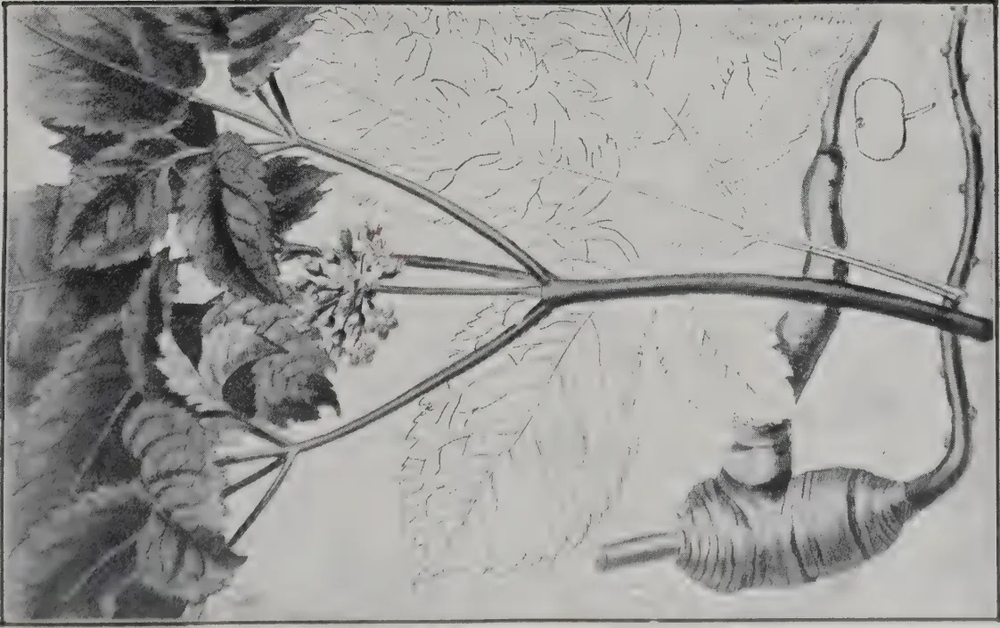
A detailed botanical illustration of Ginseng (Aralia quinquefolia). The illustration shows a thick, horizontal root system with several large, deeply lobed leaves. A small cluster of flowers is visible at the top of a stem. A single, large, oval-shaped fruit is shown separately below the main plant.← ROOT →
← FRUIT →
GINSENG (Aralia quinquefolia)
A historical medicinal plant.
(See page 252).
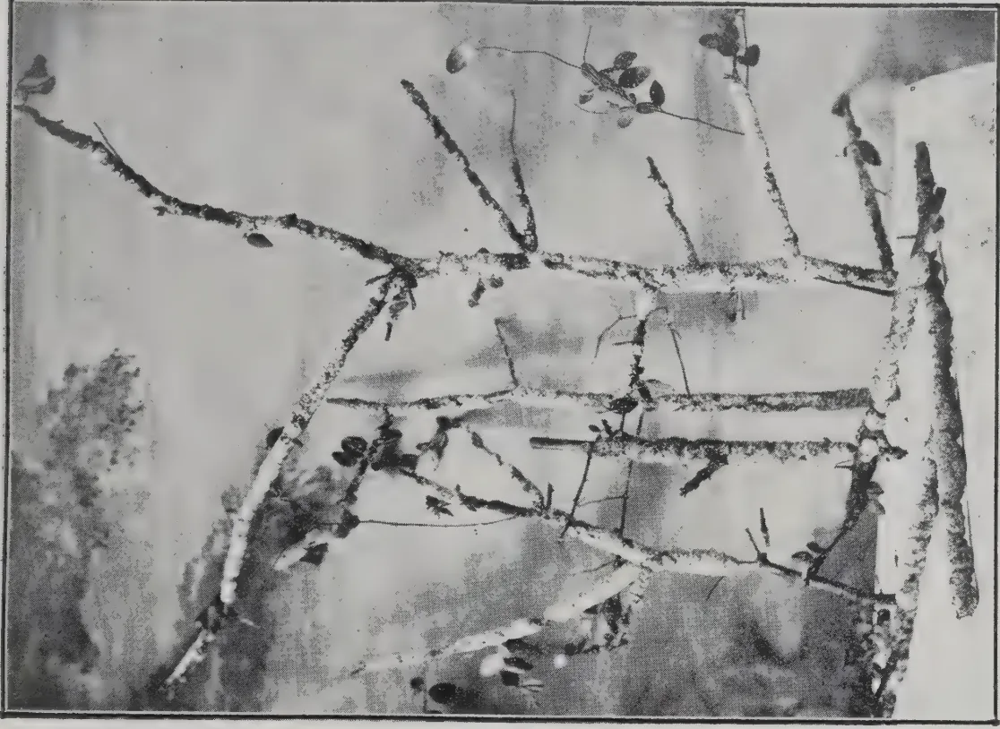
A black and white photograph showing a tree branch heavily infested with scale insects. The insects appear as small, dark, oval-shaped objects clustered along the bark of the branch. Some small, dark, rounded fruits or seed pods are also visible on the branch.LAC OF COMMERCE.
As produced on twigs by a scale insect, Tachardia lacca.
(See page 259).
This image is a scan of a blank page. The background is a uniform light beige or off-white color. There are a few very small, dark specks scattered across the surface, which appear to be scanning artifacts or dust particles. No text, lines, or other graphical elements are present. APRIL, 1915.]253Eminent physicians of China have written volumes on the medicinal powers of this plant, asserting that it "gives immediate relief in extreme fatigue, either of body or mind, that it dissolves obstinate humours, and renders perspiration easy, strengthens the stomach, promotes appetite, stops vomiting, removes hysterical and all nervous affections, giving a vigorous tone of body, even in extreme old age."
The roots are said to enter into almost every medicine used by the Tartars and Chinese, and are worth their weight in fine silver. OSBECK, the traveller and botanist, said that he never looked into the apothecaries' shops but they were selling ginseng, that both poor people and those of the highest rank made use of it, and that they boiled half an ounce in their tea every morning, as a remedy for consumption and other diseases. The root is slightly bitter and aromatic, and though it is admitted to have some tonic properties European medical men regard it as of no medicinal value.
It is remarkable however that the virtues of ginseng find few or no believers outside the native home of the plant. It does not find a place in the BRITISH PHARMACOPÆIA nor in GREENISH'S recent publication, MATERIA MEDICA. HANBURY'S and FLUCKIGER'S PHARMOGRAPHIA mentions ginseng as being sometimes used in America for adulterating the medicinal root "Senerga." European and American physicians declare it has no therapeutic value. Yet it must be admitted that John Chinaman is not as a rule disposed to set fictitious value upon things, while it must also be remembered that many valuable discoveries had their origin in China. DR. SAYEGI, recently lecturing on the subject in Japan, stated:--
"The medicinal use of ginseng has been well-known for ages, but since the introduction of Occidental drugs its supposed properties have been disputed or discredited. This, however, is in many cases due to ignorance, for many people do not distinguish between ginseng and the common carrot, both being called Ninjin in Japanese. Yet ginseng has long been known as the divine and all-healing drug. Though the subject has undergone analysis by European and other scientists, I think it a matter of regret that it has not been more thoroughly investigated by local men of science.
"About 1903 I personally took up the study of ginseng, and obtained specimens of the Korean variety through the favour of DR. ONAGA. Two varieties of ginseng are recognized, viz. : the hill or wild ginseng, and the cultivated. Originally the wild kind was the only one used, but the supply has become exhausted by continuous collection, so that now-a-days a small piece costs as much as hundreds of dollars. Ginseng is now much cultivated and forms an important agricultural product, not only in Korea but also in Manchuria and Japan.
"The ginseng produced in the Koma province of Korea is the best, and is divided into "red" and "white" sorts, but these really possess the same properties and differ only in the process of preparation. Broken portions are graded as 'beards' and 'tails.'
"The American ginseng is a different species from the Korean, but as the result of analysis MR. GARIEVES, in 1854, found in the former a new ingredient
254[APRIL, 1915.which he named panaquiron, and claimed that this substance is the principal active ingredient of ginseng. Panaquiron is a yellow substance which has a sweetish bitter taste. MR. RABENSCO, another investigator, extracted a substance which he called panatin.
"Formerly ginseng was used only as a decoction, but now the essence is extracted and may be obtained in the form of pills or powders. It is prescribed for Phthisis, Bronchitis, Gonorrhea, etc. From investigations made by me I have found it to have a most beneficial effect on the kidneys."
Ginseng has been cultivated to some extent in the United States, the roots being exported to China, where they find a ready market and fetch the equivalent of about 8s. to 16s. per lb. according to size and quality. A few years ago it was held out as a promising minor industry which, however, in spite of the most glowing prospects of "get rich quick," failed to materialise and resulted chiefly, as has already been said, in benefitting the supplier of seeds or plants, which were disposed of at fancy prices.
From experiments made at the Pennsylvania State College, it was estimated that an acre of ground planted with ginseng would, after deducting all costs of planting and cultivation, in five years yield a net profit of over £3,000. This is on the assumption that the crop would produce a return of 2,900 lb. dry root, fetching about 34s. per lb. Such sanguine expectations, however, have apparently been found to be incapable of realisation. In Corea, it is stated, a plantation takes from six to eight years to produce a crop.
It is stated that the natural source of supply is becoming exhausted while the demand is increasing; but against this there is the fact that the out-turn of the cultivated product in Corea is only limited by the Government monopoly. The market value of the cultivated product exported from America to China is variously stated at from two to four dollars per pound. There is a certain amount of prejudice against the cultivated product, especially that imported from America, and it is impossible to predict the extent to which this might at any time develop.
The ginseng plant can be propagated by seed or tubers, and thrives best in rich humous soil. The soil should be dug deep and well pulverised, being cleared of roots, large stones, or other obstacles. The roots or plants may be planted at distances of about fourteen inches apart, in rows. The ground should afterwards be covered with a good layer of mulch or leaf-mould. The plants require to be shaded from the sun in summer and protected from the cold in winter. It is a very slow-growing crop, taking some four or five years to produce tubers of a marketable size. In Corea it is regarded as an exhausting crop, requiring periodical renewal.
The ginseng plant has been tried both in Peradeniya and Hakgala Gardens, and although it grew in both cases for a time it did not produce roots of any appreciable size, and finally succumbed. It is clearly not suited to a tropical climate, so that any planter who may have conceived a vision of producing nuggets of gold in the form of ginseng tubers, may at once dispel the illusion.
H. F. MACMILLAN. APRIL, 1915.]255T. BAINBRIGGE FLETCHER.
On the sound principle that "prevention is better than cure" agricultural methods aim rather at checking any undue increase of crop-pests than at actual control after they have attained destructive numbers. Such methods are therefore extremely important and should invariably form part of the regular routine of the agriculturist. They include such means as clean cultivation, the proper rotation of crops, the growing of mixed crops, ploughing, changing the time of planting, the use of poultry and encouragement of insectivorous birds, the stimulation of plant growth by means of manures, irrigation and draining, the selection of resistant varieties of crops, and the use of attacked crops as fodder.
Clean cultivation, by which is meant the careful removal of weeds and wild plants from the fields and their adjacent areas, such as bunds and the removal of all crop-remnants after harvest, is by itself one of the most potent weapons in the cultivator's armoury in his ceaseless war against the ravagers of his crops. Not only should the field itself be carefully weeded before the crop is sown and while it is growing, but the buds and all similar adjacent areas should also be kept clear as far as possible. Many insect pests feed on wild plants and, having eaten up these or finding a succulent crop alongside and more to their taste, pass into the cultivators' fields and take their toll of the produce; Kumblihulas are familiar examples of this and the ricebug (Leplocorisa) also commonly lives on wild grasses on the edges of paddy-fields until the paddy begins to come into ear, when that is invaded and attacked. Proper attention should therefore be paid to weeding not only in the field itself, but on the bunds around it and in any contiguous uncultivated area. A belt of open ground forms in itself an excellent defence against invasion from outside by pests such as caterpillars which are exposed to attack by various predaceous enemies (birds, ants) before they can obtain access to the cultivated area.
A very common practice in cultivation is to leave crop-remnants on the ground and this is a measure which is particularly dangerous in the case of cereals on account of the stem-boring insects which live on in the stubble and infect the next crop in the same or neighbouring fields. Cholam, ragi, paddy, wheat, and similar cereals are all affected by various stem-borers and it is a common sight to see a field in stubble from an old crop whilst alongside is a field growing a new crop of the same kind; needless to say, all the pests carried over in the stubble of the old crop simply move across and attack the new one. Leaving a field in stubble often also encourages the increase of termites which are thereafter hard put to it for food and consequently attack the next crop grown in the field, especially if this is weakened by stem-borers which have also been carried over in the stubble.
256[APRIL, 1915.As a general agricultural practice, therefore, I would advocate the collection and burning of stubble of all cereal crops immediately after harvest, the manurial value of the stubble being more than counterbalanced by the danger of carrying over pests. But in this, as in all similar practices, co-operation is essential : for, as pointed out above, it is of very little use to practise clean cultivation in one field if it is infected by adjacent or surrounding areas.
Leaving the crop itself too long in the ground is another form of the error noted above, and is also a fertile source for outbreaks of insect-pests. Cambodia cotton is an excellent example of this in Madras where, for the sake of a few extra handfuls of inferior lint, mostly spoiled and stained by insect-pests, a cultivator will often leave his crop standing in the ground until it is time to sow the next year's crop, which is naturally badly infected at the very start by the pests carried on by the old crop ; the proper practice of course is to pull out and burn all the old crop at least three or four months before the new crop is due for sowing in order that all the pests of the old crop may as far as possible be starved out during the interval between the two crops
The proper rotation of crops is a matter of the utmost importance from the purely agricultural point of view, quite apart from the question of the control of crop-pests, yet at the same time it is an obvious and practicable means to the latter end also. Not only is it bad agriculture as a general rule to grow the same crop continuously in the same soil, but as pointed out above, such a practice is of direct assistance to the spread and increase of crop-pests. This again is a matter for co-operation between cultivators of adjacent lands as it is obviously of little use for one cultivator to rotate his crops if his new crop follow a similar one of his neighbour's and attracts all the pests which have lived in the latter. So far as pests are concerned also it is the rule not only that the same crop should not be grown continuously, but that naturally allied crops should not be grown. The potato and tobacco plants, for example, are closely allied to one another both belonging to the same natural order, so that pests which attack the one are especially likely to find suitable food in the other ; ginger and turmeric, cotton and gogu, may also be cited, all the known pests of the one readily attacking the other of each pair.
The growing of mixed crops is a common practice in many districts ; in the western talluks of Bellary, for example, five or six different crops (cereals, pulses, etc.), may often be seen growing intersown in the same field. In such cases the cultivator seems to distrust placing all his eggs in one basket, his idea being that, if one or two crops fail, he will at least secure a harvest from the others. But the plan is sound from the agricultural view-point of the varying requirements of different plants as regards the constituents of plant food available in the soil and the inter-relationships of the bacterial and protozoal fauna of the soil. There is no doubt also, that, if suitable mixed crops are grown, the increase of pests in each one is reduced, such reduction, in the case of drill-sown crops at least, being probably largely mechanical and due directly to the fact that each under one crop is separated from the next similar area by a barrier of other crops which are not suitable food plants for the pests of the former ; a mixed crop
APRIL, 1915.]257of groundnut and cumbu, for example, generally shows a much lessened attack on the former by the Surul-puchi (Aproaerema nerteria) as compared with that suffered by an unmixed crop of groundnut. The extra exposure of the moths when egg-laying and of the immature stages when hunting for more food undoubtedly forms a direct check on their increase.
Ploughing is of course an ordinary practice of agriculture but it is often no less effective in the control of insect-pests; but for this end the ordinary country plough, which generally barely scratches the surface of the soil, is of little use and we require an iron plough capable of turning up the soil to a depth of at least six inches. The egg-masses of grasshoppers are usually deposited a few inches under the soil, and many caterpillars (e.g., Kumbli-puchis) also enter the soil to pupate and these egg-masses and pupæ often lie underground for months throughout the dry weather until the rains awake them to new life; if, therefore the soil is thoroughly ploughed up at this time and large clods are broken as far as possible, most of these egg-masses and pupæ will either be brought up to the surface and killed by the sun or devoured by the insectivorous animals, or they may be buried so deeply that they are unable to emerge at the proper time and perish. Here again agriculture and pest control go hand in hand; for ploughing during the dry season not only helps to check pests but, by providing a fine surface mulch, moisture is conserved to the subsequent benefit of the crop.
Changing the time of planting or of harvest when this can be done, either by sowing earlier or later, or by using early or late-maturing varieties of crop, may sometimes be used with success as a control measure in certain kinds of attack by insect-pests. A pest which appears at a particular time of the year, for example, may sometimes be defeated by delaying sowing until after its appearance or by sowing earlier so that the plants are sufficiently well-grown to withstand its attack.
The common domestic fowl and other domestic poultry, especially ducks, guinea-fowl and pea-fowl, are excellent and indefatigable insect hunters and their assistance in cultivated areas is not to be despised by the cultivator who wishes to obtain a good out-turn of crop. In areas such as cotton-fields especially fowls do excellent work in checking insects with mutual benefit to themselves and the cultivator. Very many kinds of wild birds also are largely or wholly insectivorous, and it suffices here to note that birds such as mynahs and drongos or king-crows spend their whole lives in capturing insects and should therefore be looked on as amongst the farmer's best friends and be protected and encouraged in every way. A few perches made simply of a cross-piece of wood fastened to an upright thrust into the ground amongst young crops will provide resting places on which birds, such as drongos, will be encouraged to sit ready to swoop on to any insect seen stirring amongst the surrounding crops.
The stimulation of plant growth by means of manures or other methods is another agricultural practice which helps to minimize the incidence and effects of the attack of crop-pests. A plant which is thoroughly healthy will often escape attack or will at least suffer comparatively little, whereas a sickly plant will be attacked far more readily and its produce will be reduced to a far greater extent.
258[APRIL, 1915.Irrigation, where this is possible, is sometimes a good method of control of crop-pests even when the soil is not deficient in moisture. Crickets, for example, often do a great deal of damage to crops in some districts, living in burrows in the ground and only coming out at night to cut off tender shoots which they carry off to their burrows and devour during the day time; in such cases irrigating the affected area will drive them out when they fall an easy prey to crows, kites, and various other enemies. The manner in which crows and kites will congregate when fields are being flooded is well known to every agriculturist and very little observation will show that they are busy catching grasshoppers, crickets and other insects which are driven out of cracks in the soil by the advancing water. Some caterpillars, beetles, bugs and other crop-pests may also be controlled by irrigating the affected area, but no general rules can be laid down. The addition of a bag of crude oil emulsion in the irrigation channel sometimes helps to drive any certain pests, temporarily at any rate. The converse of irrigation, draining, is used to control the paddy caseworm (Nymphula depunctalis) whose larva is aquatic in habit.
The selection of resistant varieties of crops is a subject which has hardly been touched in India but there is little doubt but that this line of work offers one of the most promising lines of research for the future. It is a matter of common observation to any agriculturist that particular plants of particular varieties of plants are less subject to attack by pests than are others grown under similar conditions, and by selecting and breeding from such resistant strains we may hope to secure relative immunity from the ravages of pests. This is not a matter in which immediate results can be expected and in the meantime agriculturists should retain seed for sowing from the most healthy and pest-resistant plants which they can select from their fields and should look on the selection of the best seed obtainable as the very foundation of any attempt to grow a good yield of crop.
In some cases, especially in cereals where a large area is placed under one crop and irrigation or other control methods are impracticable, small patches of a crop are sometimes found to be badly attacked by a pest. In such cases it is often possible to cut such patches and to feed the affected plants to cattle as green fodder, thus ridding the remaining areas of these centres of infection and at the same time making some use of the attacked plants. The use as fodder of cholam, etc., attacked by stem-borer will not hurt the cattle, but care must be taken not to feed hairy caterpillars (Kumblipuchis) or blister-beetles to cattle, as the effects of such a diet may be serious; occasion may also be taken to point out the danger of hydrocyanic-acid poisoning consequent on a too liberal use of young actively-growing cereals as fodder, but it is probable that this danger will be largely reduced if only plants suffering from attack by insects are used.
The advantage of sowing crops by means of a drill and of planting out seedlings in regular lines become especially apparent in the control of crop-pests by means such as hand-picking. If a cotton field, for instance, is planted in regular rows, it is comparatively easy to go over the field row by row and collect cotton-bug, or whatever the particular pest is, and to be certain that no bushes have been left unexamined; but it is far more difficult to make sure that no bushes have been missed out if they are planted irregularly. It is also far easier to notice the first stages of an attack in drill-sown crops and their intercultivation is more efficient and make it more difficult for pests to spread. Such crops too are more readily thinned out and the more vigorous plants which are left are better able to withstand the attack of pests.—INDIAN AGRICULTURIST.
APRIL, 1915.]259The introduction of the Indian lac insect (Tachardia Lacca, Kerr) into Ceylon has after many unsuccessful attempts been accomplished by the Ceylon Agricultural Society. The first consignment of brood lac for inoculation was received from Pusa in the latter part of 1912 and was used for inoculating Masan (Zizyphus jujuba) trees at Peradeniya and Maligatenna estate (near Kandy) and at Tangalle and Ambalantota. The inoculation was partly successful, but no brood lac was secured.
A second consignment of brood lac was received from the same source early in 1913 and was used for inoculating Masan and Kön (Schleichera trijuga) trees at Peradeniya and Kandy. The most successful development of lac was on Kön and Masan trees at the Maligatenna estate belonging to MR. K. BANDARA BEDDEWELA, who has given much attention to the details of the experiment and kept careful records.
The last crop of lac was gathered from Masan trees in December last and the illustration accompanying this article will show how well it developed.
Specimens of stick lac were forwarded to the Imperial Institute as well as to Pusa and a sample sent for trial to the Kandy Art Museum, where lacquer work is done, was well reported on.
The Secretary of the Kandy Art Museum offered to buy the lac at Re. 1/25 per pound.
In order at least to meet the local demand efforts are being made to extend the cultivation to other centres and also to induce the lacquer workers in the Central and Southern Provinces to raise their own supplies of lac.
MESSRS. MOLEGODE and NUGEWELA (Agricultural Instructors) who have been deputed to this work since I severed my connection with the Agricultural Society have inoculated trees at Matale, Kurunegala, Colombo and Kandy. The development of lac in all these places is very satisfactory, and there is every reason to believe that the Indian lac insect has become naturalized in Ceylon.
To meet a demand for information on the details of cultivation the Society has decided to issue a leaflet on the subject in the vernacular for distribution among villagers: and the following notes jotted down as a basis for this leaflet are published for the benefit of members who are desirous of making trials with the lac. Further information will be found in the TROPICAL AGRICULTURIST, Vol. 38 No. 2 (February 1912); Vol. 41, No. 4 (October 1913); and Vol. 43 No. 2 (August 1914).
Lac may be described as a resinous substance produced by a species of scale insect (Coccidæ) which lives on the young branches of certain trees. The insect imbibes the sap of the tree and exudes the resin which forms as an encrustation on the branches. The branches with this resinous encrustation are removed from the trees and the resin scraped off. This resin is called stick lac and when washed and dried forms seed lac. The shellac of commerce is prepared from seed lac.
260[APRIL, 1915.Propagation is done by inoculation, i.e. by tying sticks carrying brood lac to the young branches of trees in such a way that both ends of the stick touch the branches. The tying is done with plantain fibre or other suitable material. Brood lac is the lac as found on the sticks removed from the trees at the time the brood is about to emerge (as shown in the illustration). At this time a very tiny red insect is seen crawling about in masses. The object of tying the stick on to branches is to induce them to settle down in the tree. A few days after inoculation the insects begin to imbibe the sap of the tree and exude the resinous lac. When the branches are well furnished with insects the sticks should be removed to prevent over inoculation. In some cases the insects settle down in the branches in a few hours and in such cases the sticks should be promptly removed and the excess of brood used for other trees. As a rule insects continue to emerge for over two weeks.
One cannot yet definitely say what the exact seasons are in Ceylon. From experience so far gained, it takes about six months for a crop to mature. Therefore two seasons in the year can probably be counted on. There are two seasons in India "Baisaki" and "Kartiki" similar to our "Yala" and "Maha." For the "Baisaki" crop, inoculation is done in October and the crop is gathered in June-July. For "Kartiki" crop, inoculation is done in June or July and the crop is gathered in September-October. One takes 8 months and the other 4 months respectively. But in Ceylon there seems to be greater uniformity, both seasons being of the same duration.
The following are notes of the dates of inoculation and harvesting in Ceylon :—
| Inoculated | 25th February | 1913 | and cropped | 2nd August | 1913 |
| do | 2nd August | 1913 | do | 15th January | 1914 |
| do | 15th January | 1914 | do | 6th June | 1914 |
| do | 6th June | 1914 | do | 4th December | 1914 |
I may here say something about the life history of the insect. What is meant by maturity is the time required for the female insect to grow and lay eggs and hatch them. The insects are either male or female, and these can be easily detected under the microscope. After emerging and settling down on a branch, the insects as already stated get their nutriment by imbibing the sap of the tree and exude resin. This resin envelopes them and they remain incarcerated within it, breathing by means of the long whitish hairs (tubes) which emerge through the encrustations. After some time the male insect emerges from its prison while the female insect remains in statu quo and lays eggs which ultimately hatch out a tiny little red brood. It is at this time that the crop is ready for harvesting.
Three weeks before the emergence of the larvæ, the female ceases to feed and her body gradually shrivels up as she lays her eggs. Lac sticks may therefore be cut a fortnight before the emergence of the young insects without any harm being done.
There are a variety of trees on which the lac insect thrives and in Ceylon we have the following :—
The Masan and Kön appear to be the most suitable. As it is only on the tender branch that the insect can live it is necessary to prune the trees in time to produce a succulent growth. The Masan tree responds well to pruning and produces a copious supply of tender branches. At first the trees should be pruned about 4 months before inoculation; subsequently the removal of the crop of lac itself acts as pruning.
It would be very convenient if there could be two sets of trees. In this way trees inoculated during one season will be again inoculated in the third season, and the second set of trees will be ready to be inoculated with brood lac removed from the first set, and so on. In the absence of a sufficient number, however, the same tree may be used employing half of the branches in the first season and the other half in the second.
After inoculating the brood lac sticks should be removed. Ants and caterpillars are some of the enemies of the lac insect. Care should be taken to keep them away. Tarring the lower stems of the trees and smoking are some of the preventatives employed.
When the time comes for cropping the branches must be carefully cut and removed from the trees. These may be cut into small sizes of 8 to 12 inches long and left on bamboos for some days for aeration before inoculation or put on to the trees at once. Branches that are not required for inoculation, may be scraped off for collecting resin.
After removal of the lac sticks from the trees the resin should be scraped off with a knife. If allowed to remain predaceous insects damage the resin and render it useless for commercial purposes. The scraped material, commercially known as stick lac, should not be exposed to the sun or be kept in gunny bags but should be treated at once.
This is done by crushing it into small pieces (if not small enough at first) and then washing so as to get seed lac, which, unlike stick lac, can be stored for a length of time. In washing, stick lac should be soaked in water for 24 hours and then put into an earthen or (preferably) iron vessel with a wide open mouth, mixed with water and either rubbed with the hands or trampled with the feet. After straining the water from the vessel and adding more fresh water the rubbing is continued. This must be repeated until the colouring matter or lac-dye is completely separated from the lac. Next a little washing soda at the rate of 1 oz. to every 10 lb. of washed lac may be added—an excess of washing soda will be injurious as it removes the wax present in the lac and makes it very brittle—and washing continued. When the last trace of colouring matter disappears the lac will have a pale orange colour, which is the proper colour of the seed-lac of commerce.
Shellac is made out of seed lac. MR. MISRA, the Indian Lac Expert, gives the following uses of Shellac in his book on the subject:—
In Ceylon the lac is used for painted lacquer work of various sorts.
ENEMIES OF LAC.Ants, predaceous caterpillars and parasites are injurious to the growth of lac, and care should be taken to free the trees on which lac is grown from them.
Lac dye can be used for dyeing wool, leather, Eri-silk and other silk.
N. WICKRAMARATNE.
P. AMMANN AND J. VUILLET.
The various species of Trichilia have not yet been thoroughly investigated, although they yield various interesting products; the bark of some of them is an excellent substitute for Ipecacuana, while their seeds contain varying quantities of fatty matter suitable for soap and candles.
M. F. PELLEGRIN, in a monograph on the Meliaceae of West Africa, enumerates 12 species of Trichilia, of which 6 belong to West Africa proper and 6 to Equatorial Africa. The six species belonging to West Africa are: T. Prieureana, A Juss; T. emetica, Vahl; and T. Hendelotti, Planchon—all of them small trees belonging to the savanna region; T. acutifoliata, T. candollei and T. cedrata, all three described by A. CHEVALIER and forming large trees in the virgin forests of the Ivory Coast.
The seeds of T. emetica have been exported from Mozambique to Mar-seilles for a long time under the name of Mafuraires. It was therefore desirable to know if the West African products gave seeds of equal value. Seeds were therefore obtained from various species found between Bamako and Koulikoro and studied at the Chemical Laboratory of the Colonial Garden of Vincennes. The types of seeds were as follows:
The results of the analyses are given in the following table:
| ANALYSIS OF SEEDS. | I. | II. | III. | |||
|---|---|---|---|---|---|---|
| Weight of 100 seeds, gms | ... | ... | ... | 12.7 | 29.4 | 79.1 |
| " " 100 kernels, gms | ... | ... | ... | 4.68 | 17.08 | 46.04 |
| Percentage of kernels in seeds | ... | ... | ... | 36.9 | 58.1 | 58.2 |
| Shells % | ... | ... | ... | 63.1 | 41.9 | 41.8 |
| Moisture % in shells | ... | ... | ... | 6.42 | 4.16 | 4.74 |
| " " in kernels | ... | ... | ... | 5.73 | 6.71 | 5.76 |
| Fat in shells | ... | ... | ... | 41.50 | 38.10 | 51.90 |
| " " kernels | ... | ... | ... | 30.10 | 44.70 | 43.70 |
The large seeds most nearly approach the Mafuraires from Mozambique as regards size and fat content. The medium seeds are identical with those of T. Prieureana preserved in the Kew Museum.
French West Africa should be able to export at least several hundred tons of the Mafuraire seeds each year.—MONTHLY BULLETIN.
APRIL, 1915.]263The longevity of seeds—a subject of perennial interest and great practical importance—is discussed in a communication made by DR. SHULL to the PLANT WORLD. DR. SHULL'S communication deals with the longevity of submerged seeds, and recounts the results of experiments made at Cold Spring Harbour, New York. The experiments were suggested by the observation that owing to the bursting of a dam and the consequent draining of a pond a luxuriant vegetation sprang up within a few months on the dried and drained floor of the pond. It was known that the pond had not been drained for at least 70 years. Yet from out of the dried mud there arose in the spring some 140 species of flowering plants, many mosses, and at least one liverwort. Of the flowering plants a few were perennials, and of these an Aster and a Solidago flowered in the summer, and must, therefore, have grown from pieces of root-stock. In order to obtain information as to the provenance of the seeds, DR. SHULL started an experiment on December 13, 1905, wherein six lots of seed of each of 22 species of plants were placed in soil in large glass jars. The jars containing the soil were filled with water, were stored in a basement room, and water was added from time to time in order to make good the loss by evaporation. On July 1, 1907, 18½ months after the starting of the experiment, one of the jars was opened and the germination of the seeds which it contained was tested, with the result that in due course seedlings appeared on the following plants:—Cyperus spp., Juncus tenuis, Muehlenbergia diffusa, Plantago Rugelii, Sium cicutaeifolium, Verbena urticifolia. A second jar was investigated two years and five months after the beginning of the experiment, and of the seeds which it contained the following germinated:—Chenopodium album, Lappa minor, Muehlenbergia diffusa, Plantago Rugelii, Sium cicutaeifolium, Verbena urticifolia. After four and a quarter years seeds of 11 species were found to be viable, and in the last test, made seven years from the starting of the experiment, seedlings of Sium cicutaeifolium, Juncus bufonius, and J. tenuis were obtained.
DR. SHULL concludes from these experiments that the plants which made their appearance in the drained pond were derived from seeds which had found their way into the pond by natural agencies, had accumulated there, and had remained inert but unharmed in spite of a long submersion.
Another problem remains which Dr. SHULL refers to but does not attempt to discuss. That problem is the means whereby the submerged seed is protected against premature and fatal germination. At first sight the moistness of the soil in which the seeds were lying would appear to be all against their dormancy, for, as everyone knows, a supply of water is an incentive to germination. The explanation of the dormancy of such submerged seeds appears to us to be provided by the remarkable experiments of MR. KIDD, described by the author in these columns (GARDENERS' CHRONICLE, Vol. LV., p. 186, and Vol. LVI., p. 34).
MR. KIDD has shown that the presence of some 10 to 20 per cent. of carbon-dioxide in the atmosphere surrounding the seeds provokes a persistent latency. The seeds remain capable of germination, but do not germinate until they are restored to an atmosphere containing the normal low percentage of carbon-dioxide. We suggest that in submerged soil a similar condition obtains, that the water surrounding the seeds is saturated with carbon-dioxide and deficient in, if not depleted of, oxygen, and that, therefore, the seeds remain in a state of enforced rest—of suspended animation—so long as these conditions are maintained. How long life remains in such seeds has yet to be determined.
An interesting contribution to the general question of the longevity of seeds is made by SIR HERBERT MAXWELL in a letter to NATURE (January 21, 1915). SIR HERBERT recounts that his father, in 1862, drained Dowalton Loch, Wigtonshire. Among the plants which have taken possession of the
264[APRIL, 1915]drained ground, SIR HERBERT observed six years ago Pyrola minor in wide breadths. This plant is not known to SIR HERBERT MAXWELL as a present inhabitant of the county. Whence have the minute seeds come, and how have they found their way through the closely cultivated land to the site of Dowalton Loch? SIR HERBERT MAXWELL is such a keen observer and accomplished naturalist that we make with diffidence the suggestion that ants will prove to have been the transporting agents. That they carry minute seeds in considerable quantities over wide distances is known, and we believe that exact details of their seed-carrying operations were given some years ago by PROFESSOR WEISS, who perhaps may be able to give further information on the subject.—GARDENERS' CHRONICLE.
In the past years the United Kingdom has relied chiefly on Belgium and, to a much less degree, Germany, for its supplies of Chicory (Lichor.um intybus). The extent to which this has been the case will be seen from the following table, showing the imports in the three years 1911-1913 of raw or kiln-dried chicory:—
| — | 1911 | 1912 | 1913 | 1911 | 1912 | 1913. |
|---|---|---|---|---|---|---|
| Cwt. | Cwt. | Cwt. | £ | £ | £ | |
| Germany ... | 3,395 | — | — | 2,706 | — | — |
| Belgium ... | 84,274 | 87,263 | 85,836 | 69,810 | 51,460 | 36,802 |
| Total... | 87,669 | 87,263 | 85,836 | 72,516 | 51,460 | 36,802 |
Of the above total quantity for 1913 the amount imported for home consumption was 65,016 cwt. This must practically all have come from Belgium and might possibly represent the produce of nearly 2,000 acres. Although the imported chicory is in no way superior to the English-grown article, the cultivation of the crop in this country has fallen to a very low point, the area actually under the crop in England and Wales being 391 acres in 1912, 93 acres in 1913 and 77 acres in 1914. The gap left by the cessation of Belgium imports might be filled by an export trade from Holland and Denmark, but at enhanced prices, and there appears, therefore, to be some likelihood of a good demand for English-grown chicory. In view of the limited extent of the market, however, growers would probably be well advised to ensure a sale for the roots by obtaining an agreement from the dryer of (if several growers could unite to dry their own roots) the coffee blender.
A deep loam with a slight excess of clay is usually regarded as the best soil for chicory, though the crop often does well on light land that is not too
* Roasted or ground chicory was also imported, mainly from Germany and Belgium, to the extent of 4,460 cwt. (1913), representing about 120 acres. A certain quantity of chicory is also imported already mixed with coffee.
APRIL, 1915.]265dry. The roots yield a larger proportion of dry matter when grown in a soil of good body than when grown on lighter land, although in the former case there is a larger expenditure of labour in lifting and washing the roots. Fen land and potato land seem to suit the crop very well, although it would probably not be profitable to substitute it for market-garden crops where the latter are doing well, especially where two crops can be grown in the year. An open and friable subsoil is necessary for the success of the crop.
There are two main varieties of chicory, viz: "Tête d'Anguille" or "Palingkop," which has few, crisp, much serrated and reddish veined leaves, and a long, regular root; and "Madgeburg" which has large, upright, lanceolate leaves and a longer root than Palingkop, the root being also thicker at the top.
In Yorkshire, chicory used to follow either wheat or potatoes, and was occasionally grown for several years in succession on the same land. In France it is substituted for sugar beet, while near Madgeburg it follows sugar beet. As a result of the manuring and cultivation given, it may be followed by a cereal crop with good results. In Belgium it is usually followed by flax.
When chicory is to be grown on a corn stubble the soil should be lightly skimmed in October, well harrowed, and manured with 10 to 12 tons per acre of farmyard manure, which should be ploughed in 5 or 6 inches deep. The land may then be left undisturbed until April, when it should again be ploughed or deeply cultivated according to the character of the soil and climate, and worked into a fine seed-bed.
Deep working of the soil is necessary, as the tap-root of chicory penetrates to a depth of 15 inches or more. If the soil is thin or close-bottomed it will be an advantage to use the subsoil plough.
Dung is not usually applied after potatoes, but about 5 cwt. of artificials are harrowed in when the seed is sown in the spring. An application of 10 tons of dung in the autumn, and 1 cwt. nitrate of soda, 2 cwt. superphosphate and 1 cwt. sulphate of potash (48 per cent. pure ) in the spring, might be tried; if no dung is used the artificials should be doubled. The quantities of artificials are less than those commonly applied in Belgium.
The application of dung in spring is not recommended, as it favours the production of foliage at the expense of the root, which is liable to be watery and forked, and have its aromatic qualities injured.
The land must be thoroughly clean, have a fine tilth, and be well consolidated before sowing. Belgian growers prefer the seed to be two to three years old, as it is held that plants from such seed are less liable to develop flowering shoots. The seed is drilled from the middle of April to the middle of May, at the rate of 3 lb. to 6 lb. per acre, in rows about 12 to 18 inches apart to allow horse-hoeing between the rows. The ridge system might be tried if the land is foul, 19 inches being allowed between the ridges, but it is better not to sow chicory on foul land. If sown too early the plants are apt to run to seed at the expense of the roots.
Where a farmer contracts to grow roots for a drying factory the manufacturer commonly supplies the seed.
266[APRIL, 1915.After sowing, the land is sometimes harrowed; it is always rolled.
The first hoeing should be carried out at the end of May or the beginning of June, when the young plants show their fourth leaf, and a fortnight later the plants may be singled. The general opinion is that the plants should be left at least 6 inches apart in the rows; in France the distance is from 8 to 10 inches, and in Flanders the average is about inches. With thin seeding it might be possible to avoid the cost of singling. The plants should be singled by hand when the soil is soft with rain in preference to cutting with a hoe, as the roots are very tenacious of life and will throw out new buds even when cut a good deal below the surface.
Hoeing should be done once or twice at the end of June or the beginning of July, and be repeated so long as it is possible to get between the plants. In July the plants which are running to seed should be weeded out as their roots are woody and valueless.
Harvesting is undertaken when the leaves are yellow; it usually commences about the beginning of October and proceeds until frosty weather sets in.
Some growers cut the foliage of the plants in the summer for feeding to stock. This practice, however, must be condemned, since it is certain to retard the development of the root, but when the plants approach maturity the foliage may be gradually removed and utilised to mix with other fodder for dairy cows. The roots are dug with a fork or spade; care must be taken on heavy soils that the roots are not broken, and special lifters similar to those employed for sugar beet are sometimes used in such cases.
As regards yield, the average returns obtained per acre in Belgium in 1909, 1911 and 1912 were , and 13 tons, while in Holland both in 1910 and 1911 about tons were obtained. In France the yield is stated to approximate to 12 tons per acre. An English grower who communicated his results to the Board stated that he obtained an average of 9 tons from 89 acres, the biggest yield being between 16 and 17 tons. If the roots are topped on the field the tops may be ploughed in; or otherwise they may be fed to animals in small quantities.
The roots may be washed on the field after harvesting, or washing may be undertaken at the kiln, especially where the roots are obtained from small growers.
The expense of labour contributes to making the cost of cultivation high. From examples furnished to the Board in 1904 it was estimated that the average cost of cultivation after wheat was £15 per acre, viz: Twice ploughing and harrowing, £1; seed and sowing, 10s.; manures, £4 10s.; hoeing and singling, £2 10s.; digging and washing, £2 5s. After potatoes there would be a saving of £3 per acre for manures and the labour bill would be less owing to the land being in better condition. An English grower who has recently made an estimate arrives at a cost of £10 2s. per acre, but allows only 6s. for manures. In France an estimate in 1908 was £12 per acre (12 tons of roots being produced); in Belgium £14 per acre seems to have been reckoned as an average cost.
It would seem that the cost of production per ton of roots is about 24s. The labour bill might be largely reduced if the cultivation of the crop were undertaken by small holders and their families.
APRIL, 1915.]267At the factory or drying kiln the roots are again washed, and afterwards passed through a slicing machine which cuts them into disc-like slices, about inch thick. The cut root is then taken to the drying chambers and spread in a layer on the floors, which consist of perforated iron plates arranged over coke fires. In the most simple form of kiln each lot of root is deposited on the perforated floor in a layer inches to inches deep, and is left exposed for 24 hours to the action of the hot air, which is kept at a temperature of about F. During this period the mass is turned over with a shovel every two hours to prevent the chicory from burning and to make the d-ying as uniform as possible. The root so dried is known as "ordinary dried" chicory.
The quantity of roots produced on separate farms would probably be so small that it would be more profitable for an individual grower to send the raw produce to a central kiln, unless he could co-operate with other growers in the maintenance of a common kiln. "Ordinary dried" chicory yields on roasting from 90 to 92 lb. of ground chicory per cwt.
It was stated in the Board's Report on the Cultivation and Drying of Chicory (1904) that most Belgian growers had their own kilns, a small kiln with one or two fireplaces and hearths being built for £60-£80, while a large well-arranged kiln, with six fireplaces and two drying floors would cost about £240 to build.
When the chicory is sufficiently dried it is removed from the hot floors and put into linen sacks of loose texture, in which it is kept for some hours to cool; during this time it further dries and gradually hardens. It is then emptied from the sacks and stored in a heap in a dry, dark warehouse free from draughts. A small quantity of quick-lime is often placed in an unused corner of the warehouse to dry the air and to attract moisture from the chicory. Heating and deterioration in quality may set in after a few months if the chicory has been insufficiently dried.
It is usually reckoned that 4 tons of raw roots are needed to produce 1 ton of "ordinary dried" roots. In the Board's Report of 1904 the cost of producing 1 ton of kiln-dried roots in Flanders was given as £5 17s. 2d. (4 tons of raw roots were reckoned), and if £12 duty be added the cost comes to £17 17s. 2d.
If several small holders could combine to erect a kiln, or to use one already existing, so that they could dry their own roots, they would have the advantage of both growers' and driers' profits. On the other hand, it may in some cases prove advisable to contract with the drier or coffee blender before growing the crop.
Belgian chicory intended for export to the United Kingdom is nearly always subjected to a further process of drying in specially constructed kilns before shipment, the object of this second drying or "high-drying" being to make the article as light as possible and thus lower the Customs duty; kiln-dried chicory usually loses 20 per cent. of its weight after it has been "high dried." The operation of high-drying is, however, one requiring a considerable amount of care and skill in addition to the use of special kilns.
It has been stated recently by an English drier that if the crop is raised in autumn 5 tons of raw roots are required in England to produce 1 ton of "high dried" root, and if left in the ground till February, 7 tons are required.
The cost of producing 1 ton of "high dried" chicory, allowing for 5 tons of raw roots at the cost of production of 24s., and a duty of £12 per ton, is given as £21 12s. 3d. This figure is made up as follows:— Roots, £6;
268[APRIL, 1915.duty, £12. rent and rates, 7s. 6d; wages, £1 1s 3d.; coke, £1 3s.; oil, 2s. 6d.; seed, 6s.; superintendence, 5s.; bags, 4s.; carting, 3s.; total, £21 12s. 3d.
The drier in question heats up to 260° F. until the slices get quite crisp. This dried chicory, it is said, is equal in all respects to that produced on the Belgian high-drying system. The kiln, machinery for washing, slicing, etc., cost about £ 1,200.
The roots are cleaned by scraping and washing, split where they are thickest, and cut across in pieces about 2 to 3 inches long. Some nicety is required in drying to prevent the root from being scorched and to keep the proper flavour.
At the end of January the price, duty paid, for "ordinary dried" chicory root was £39 to £40 per ton and for "high dried" chicory root £43 to £44 per ton; these are nearly double the prices paid in January, 1914. At these prices, and on the basis of the above figures showing the cost of production and drying, chicory should be a highly profitable crop.
Even supposing the cost of ordinary drying to be the same as high drying (and it should be much less), and the amount of raw roots required to produce 1 ton of dry by ordinary drying to be the same as that required by high drying (and it should be 20 per cent. less), the figures suggest that a very substantial profit would be obtained by growing an "ordinary drying" chicory, at present prices.
The excise Duty on chicory is 12s. 1d. per cwt., reckoned, not on the weight on delivery from the warehouse (chicory absorbing moisture during storage in the warehouse), but on the computed weight of the chicory at the time of its deposit in the warehouse. Even here, however, it will be seen that duty is paid on the water in the kiln-dried chicory at the time of its deposit in the warehouse, and if high-drying were generally adopted in England the effect would be to reduce the duty to an equivalent of £10 per ton of kiln-dried chicory.
Imported kiln-dried chicory is subject to a Customs duty of 13s. 3d. per cwt.; the advantage of 1s. 2d. per cwt. in favour of the home grower is supposed to off-set the trouble to which he is put by having to dry and store his roots under Excise regulations.—JOURNAL OF THE BD. OF AGRICULTURE.
Diyatalawa Mills, Vauxhall Street, Slave Island.
Fowls Rs. 18, 15, 10.50, and Rs. 9 per dozen. Ducks Rs. 15, Geese Rs. 60, Turkey cocks Rs. 120, Turkey-hens Rs. 90 per dozen.
Guinea fowls Rs. 48, Pigeons Rs. 6, Partridges Rs. 6, per dozen.
Quails to order.
Pigs, Porkers, cts. 35 per lb. live weight, Sucklings Rs. 7.50, 5 and 3.
Eggs, fresh, 75 cts. per dozen.
Telephone 1087 and 285,
Telegrams: Wally, Colombo
Usual discount to the TRADE.
APRIL, 1915.]269The rapid propagation of date offshoots is a matter of great importance at this stage of development of the date industry. Experiments now under way indicate that it is possible to root offshoots much more rapidly under greenhouse conditions where they can be given bottom heat than by the Old World method of procedure. It is believed that by this method much smaller offshoots can be rooted. It has also been found that when grown in the cool, moist climate of the Pacific coast in immediate proximity to the ocean, certain varieties of the date palm fruit scarcely at all, but produce instead very great numbers of offshoots and continue to produce them through a much longer period of years than in typical date-growing districts. It is planned to transfer palms of the choice new seedling varieties to such localities in the hope of thus insuring a larger number of offshoots than could otherwise be produced.—ANNUAL REPORTS OF THE DEPARTMENT OF AGRICULTURE, U. S. A.
The record rainfall of last month (January) and its continuance has set many persons trying to find an explanation in the cannonading at the front. Some eight or nine years ago the theory was rather widely spread that heavy gun-fire caused rains, and, as at that time the autumn practices at such places as Shorncliffe, Portsmouth and Plymouth were often followed by heavy rain, there seemed to be some justification for the theory. So serious experiments were undertaken in Australia, where a severe drought was ruining the prospects of many graziers. But the experiment was foredoomed to failure, and it was discovered that although cannonading will cause rain clouds to burst, no amount of explosion will form the necessary clouds. When the records of the British Rainfall Association for last December are studied it requires a considerable amount of faith to accept the "rain and gunfire" theory. For it is seen that at the places in this country nearest to the scene of the firing the rainfall was slightest. At Margate, December's rainfall was less than 4 in., whilst London received over 6 inches. Moreover, it is seen that whilst the rainfall was of record amount at nearly all the stations, the East Coast was, as usual, the driest part of the Islands, and the Western counties were the wettest. In South Wales 19 inches fell and on Dartmoor 15 inches were recorded, but at Sty, in Cumberland, a notoriously wet county, 27 inches swamped the land. The most reasonable explanation of the abnormal rains is that Nature is balancing the drought of the previous summer. Although the rains may seem excessive, and in some places the floods have caused much inconvenience and great loss, yet the ground in some woods is still dry.—A. C. B. IN GARDENERS' CHRONICLE.
Experiments with ramie in several locations during the last year show that the plant will grow under irrigation on soils of rather firm texture, but not on light, sandy soils, and it has grown well on clay loams in Louisiana, Mississippi, and Maryland. In an experiment in decorticating the fibre, however, only 160 lb. of dry fibre (China grass) were obtained from about 16,000 lb. of green plants, including leaves, grown on acres. This yield of only 1 per cent is too small to be commercially practical. Ramie fibre is being prepared from dry stalks in California, but this method cannot be used in a humid climate.—ANNUAL REPORTS OF THE DEPARTMENT OF AGRICULTURE, U. S. A.
270[APRIL, 1915.According to Bulletin No. 1 issued by the Department of Agriculture, Mauritius, which contains details of the Animal Statistics for 1914 we find that the total number of cattle imported from Madagascar during the 5 years (1909-13) was 36,861 or an average of 7,372 per year; while the total number imported during 1904-08 was 36,826 or an average of 7,365 per year. The imports of 1907 amounted to 11,598, the highest number of the period, while the record year was 1863 when some 14,557 were introduced. In addition to the above imports some 70 or 80 bullocks are annually imported from Rodriguez.
The total number of horned stock is 41,301, representing 112 per 1,000 inhabitants. This is a very low proportion if compared with that of countries like Australia, (2,655 per 1,000 inhabitants) or Madagascar (1585), or Denmark (814), or even with Ceylon (356), Netherlands (336), Fiji (321), India (298), British Guiana (276), Belgium (266), United Kingdom (262), Porto-Rico (233); but it compares favourably with Egypt (106), Japan (27), and Malta (26). However if the basis of calculation is taken per 1,000 acres of total area, the relative figures are Netherlands 252, Denmark 238, India 172, United Kingdom 151, Mauritius, Hungary, Bulgaria, Ceylon 90, Malta 76, Madagascar 34, Transvaal 18, Natal 20, Fiji 9.4, Australia 6.1, Egypt 5.5, Canada 2.8, British Guiana 1.4, Newfoundland 0.38.
The relationship between the numbers of cattle and the cultivated area shows that this colony, with a rate of 206.5 head of cattle per 1,000 acres of cultivated land, compares most favourably with other tropical countries.
The rate of increase of the colony's horned cattle is at the present time nearly 18 per cent. per year, which means that if the imports from Madagascar and beef consumption remain normal and no epidemics of disease occur, the total number of horned cattle will reach 65,000 in 1917. The ratio of cows to all horned cattle indicates the increase that is taking place in a country, and Mauritius (39.4%) compares favourably with India (36%) and the United Kingdom (37%).
In an interesting article contributed to the WEALTH OF INDIA on the match-making industry in India, MR. EVANCE the expert points out that in 1911-12 nearly 98½ lakhs of rupees worth of matches were imported into India, which is quite capable of manufacturing all the matches she requires. The necessary wood supply is available, such soft and otherwise useless woods as that of Bombax being abundant.
MR. EVANCE reckons that a capital of 5 lakhs would be necessary to start the industry on a proper scale. He discusses all practical details such as machinery, management, etc., and comes to the conclusion that for the investment of 5 lakhs, which would lay down a plant capable of producing 2,000 gross daily, a profit of 40% is possible.
APRIL, 1915.]271There are two kinds of leeches in the ghat area of the Mysore State which attack men. One of these Haemadipsa sp. (H. Zeylanica ?) shows the interesting feature of living on moist land, the other one, a much bigger form, living purely in fresh water. The following further particulars in addition to those given by SHIPLEY (vide TROPICAL AGRICULTURIST, Feb., 1915, pages 119-120) with reference to the habits of the leeches and the methods used in escaping their grip may be interesting.
The leeches begin to appear in ordinary forest areas with the early monsoon, say, about the beginning of June, and molest the travellers till the end of December. There are certain very damp and woody places where they persist throughout the year. They occur on decomposing vegetation, fallen trunks of trees, leaves of shrub jungle, such as Strobilanthes, and even on bare rocks. They stand erect on one end, and perform nutating movements. The first few occasions that they bite, one is not aware of their presence, but habit makes one fairly cautious and a sort of cold uncanny feeling in the leg is a sure sign of the presence of a leech. It is not quite correct to talk of persons being killed by leech bites; because, many hundreds of coolies work in the area day after day and yet survive the bite.
Among the measures employed in escaping their attack, smearing the legs up to the knee with castor oil is a very effective one. Snuff, juice of sour limes, and slaked lime paste are also useful in getting rid of the leeches, especially the last, as it will stop the bleeding. If a man has passed through an area where leeches are known to exist, he will find it a useful practice to wash his legs in warm water. He can thus see any leeches sticking on to his legs and remove them as soon as possible.
The leech cocoons are usually found on the ground in the jungle and sometimes collected and destroyed but it is only to a very limited extent. The surest way to get rid of them is to put them in the fire.
Attempts to pull them off are not always the best, as inflammation sets in. As noted above, a drop of acid juice makes them drop down, and if one has pulled out the leech and suppuration sets in, a bandage soaked in solution of lead acetate and tied over the swollen portion is a very useful remedy.
M. K. VENKATA RAN,
Mysore Agricultural Department.
There is nothing more easy to grow as a farm crop than sunflowers, but, apart from their ornamental character, one never thinks of these plants as being of any use to the cultivator. Although the plant has never been cultivated on a commercial scale in Queensland—except, as far as we know, by MRS. H. E. WALLER on the Binjour Plateau, Gayndah, about five years ago—there is no reason, except, perhaps, prejudice, why it should not be a staple crop for Queensland. Why it has been so long neglected by Australian farmers it is difficult to say, considering that it is grown to an enormous extent in Germany, Hungary and Russia, and the demand is always greater than the supply, notwithstanding the fact that each seed sown produces 1,000 or more, and the price ranges from £10 to £11 per ton. The most profitable sort to grow is the Giant Russian, of which each head contains from 1,000 to 2,000 seed, and even as many as 3,000 seeds per head have been harvested in Russia. The plant is admirably adapted to the soil and
272[APRIL, 1915.climate of Queensland. It thrives as well in the dry West as on the Darling Downs and on the Eastern coast lands. It is not particular as to soil, but succeeds best on deep well-drained loam, whether scrub or forest or plain. It does well on maize lands; and as the plant needs a less rainfall than maize and is a much quicker grower, the crop requires less cleaning owing to its giving more shade, thereby lessening the growth of weeds, which means considerably less work to the farmer. From 4 lb. to 5 lb. of seed is sufficient to sow an acre at distances between the rows of about 3 ft. and in the rows about 12 in. to 18 in. from plant to plant. The return may be set down at about 50 bushels per acre. Sunflowers grow very rapidly, the crop being usually ready to harvest in three months.
The harvesting is a very simple matter. MRS. WALLER says that on ploughed ground a tip dray can be used provided with a frame covered with bag. The dray passes along the middle of the rows—one row on each side. The heads are cut and thrown into the dray. They are then driven to a convenient place in a paddock where there is a box, about 4 ft. high by 3 ft. square, with a wood batten nailed on about 9 in., from the top inside on which the heads are “banged,” when all the seed which is fully ripe and good falls into the box. The seed is then winnowed. Two men cutting into the dray can keep one man threshing.
MR. HENRY A. TARDENT, in a paper on “The Sunflower,” published in the QUEENSLAND AGRICULTURAL JOURNAL in October, 1899, said that “a very expeditious way to harvest it is to cut the stem close to the ground by means of a horse corn-cutter, and to cart home stems and heads together. The heads should be then dried as quickly as possible, and as soon as dry enough they can be threshed, winnowed, and bagged.”
The seed is rich in oil, and yields 34 to 50 per cent.; while the oil cake forms an excellent food for stock. The best time to sow the seed is from September to February, inclusive.—QUEENSLAND AGRICULTURAL JOURNAL.
The subject of scientific agriculture is so important in India to-day that many will read with much interest the paper that DR. HAROLD MANN presented to the Indian Science Congress on the “Development of Indian Agriculture.” Among the many officers of the various Departments in India there could hardly have been chosen a better exponent of the subject, because of the length and extent of his experience of the conditions of Indian Agriculture. His service with the Indian Tea Association gave him an insight into the conditions of the planting industry, which has little to earn regarding the need for scientific agriculture. His service in the Bombay Agricultural Department has brought him into contact with that other kind of agriculture which is so often called the “backbone of India’s prosperity”—a system described by DR. MANN as “extensive agriculture conducted without much capital, with primitive implements and methods and yielding poor results when compared with any Western Standard.” It is this branch of Indian agriculture that the formation of the Agricultural Departments is designed to improve. How poor generally are the results of the existing methods DR. MANN was able to show by a comparative statement of the average acreage yields of certain crops common to India and other countries, such as wheat, cotton and sugarcane, though in the case of the last-named this is due to the miserable outturn from Northern India; that from Bombay and Madras is fairly up to the world’s average. In dealing with the problem of development, DR. MANN had some very interesting remarks to make on the proverbial conservatism of the Indian ryot which, it is alleged, has in the past
APRIL, 1915.]273barred the way to progress. To those of us who have accepted this statement without much thought of the actualities of the situation, it will come as a surprise to learn that this conservatism is justified. "When a man," says DR. MANN, "is working on a minimum capital when any excess of capital costs probably from 12 per cent. upwards for interest, when the money is turned over once, or, at most, twice in the year, it is only policy to be extremely conservative." Besides, any departure from this policy has so often been exploited in the past by the well-meant, if judicious, schemes of empirical agricultural advisers, that the only result was to harden the ryot's heart and to confirm him in his conservatism. But there are exceptions, and DR. MANN records it as his experience that ryots are willing to follow an adviser who has gained their confidence in a manner that sometimes savours of rashness. According to DR. MANN, the way in which to work for the future development of agriculture is to discover the primal need of the agriculturist—it varies probably according to the Province or place in which the adviser is situated—and then to work along the lines of least resistance. In the Bombay Deccan, for instance, the primal need is water to irrigate and bring to fruition the crops. Unless this can be supplied, it is useless to ask the ryot to adopt any of the methods of scientific agriculture to improve his outturn; once it is supplied he is prepared to follow his adviser and adopt them, regard always being had to the fact that his enterprise is limited by his capital. We have not the space to follow DR. MANN as he develops this theory; but what he has to say of his experience and the results achieved is certainly convincing. Much of what he says applies equally well to agriculture in the non-deltaic or canal-commanded tracts of the Madras Presidency, and is the justification for the formation of the well-boring section of the Madras Department of Industries.—INDIAN AGRICULTURIST.
Rev. FATHER M. J. LE GOC.
It is now over a year since a plantain disease spread of a sudden round Colombo. The young plants were arrested in their early growth; their tender leaves were withered as if a deadly blast had passed over them. DR. H. M. FERNANDO was the first to draw my attention to this new malady, while MR. C. DRIEBERG handed over to me for examination the last plantlet left in his Stock Garden by the new plague. Last September a whole row of plantations growing along the lake in St. Joseph's College were found wilting rapidly, exposing to the sun their dry and brown leaves which soon collapsed and decayed. Here I found, at home and in abundance, the very material required.
Microscopic sections across different parts of the leaves showed no particular infecting organism. The conclusion to be drawn was that the evil was lying either in the conductive or in the absorptive tissue. The roots were next examined. This revealed the presence of bulky brown spores, which were of frequent occurrence on different specimens; numerous hyphae were running along the cortex which was in a visible state of decay, and finally, in the most affected material, threads of the fungus had passed inside the xylem, especially along the vessels, where they branched very freely. At this stage the fungus had not yet reached the stout rhizome, which forms the whole stem of the plantain; but it is possible that the disease passes through the rhizome into the new off-shoot, although more likely the infection takes place along the ground by means of the spores which are produced in abundance on the surface of the roots.
274[APRIL, 1915.From these facts we are able to infer that the plantain disease is a root disease. It affects at first the cortex, which is soon killed; as a consequence the process of osmosis is stopped, the supply of water and of nutrient salts is arrested, the leaves soon become wilted and dry up and the plant dies before it is able to bear fruit.
The appearance of the hyphoe varies to a great extent: brown thick and septate threads are abundant in the cortex and protrude outside in swollen heads, while in the xylem the much-branched hyphoe are mostly very thin, colourless, and rendered clearly visible only by the use of stains.
The reproduction of the fungus takes place by means of several forms of spores. They have been found both on the roots of plantain and in the cultures made in liquid plantain decoctions and in decoctions solidified with 2 per cent. agar. On agar a brown layer of spores covered the whole surface of the culture, but there was also an attempt to produce aerial structures. Conidiophores bore on numerous stalks small oval-shaped hyaline conidia, which drop off as soon as they are formed, and never formed visible chains. 3-5 septate curved hyaline spores, falcate or somewhat crescent shaped, are frequent both in nature and in cultures. They are sometimes found in clusters in a mucilaginous envelope. Some of the hyphoe bear terminal brown bulky chlamydospores, and two-celled (Diplocladium stage) spores have also been observed. The fungus belongs to the genus Fusarium; but my observations have not yet enabled me to determine the species with certainty. This genus offers such a variety of vegetative and reproductive stages that its identification and specification has led to much confusion. This is the reason why Fusarium has been given many different names. The literature I have now in hand is too limited to allow me to discuss this question at further length.
Fusarium is a well-known root disease, for instance, on tomato and other plants; but, so far as I am aware, it has never been recorded on plantain. The plantain disease has no doubt been already investigated, but I have no knowledge that its nature has been determined.
The origin of this sudden outbreak of disease round Colombo is a question to which the readers would like to have an answer. It can perhaps be better explained by those who are engaged in its cultivation. Have new plants been introduced from outside the Colony? This is always a very serious question. The introduction of plants from foreign lands is also often the introduction of a new disease, and ought to be carried out under severe and careful control.
As the disease now stands it is seen to fare best in damp and badly-aerated soils. There is no direct remedy for a plant which is once affected, as we are dealing with a root disease. The only remedy to be applied is of a preventive nature. Good drainage is always a sound and healthy practice in agriculture. The burning of all diseased plants is an urgent necessity to prevent the multiplication and dispersal of spores. The sterilization of affected soils is an effective measure where feasible. A good safeguard is to avoid planting a new shoot in the place from which a diseased plantain has been removed unless sterilization has been effected.—CEYLON MEDICAL COLLEGE MAGAZINE.
So far as our present knowledge goes, the food requirements of plants are surprisingly modest. Besides water, all they extract from the soil are compounds of nitrogen, phosphorus, sulphur, potassium, lime, magnesium, and iron. Hence it is not surprising that physiologists should from time to time ask the question, Do these elements satisfy all the complex requirements
APRIL, 1915.]275of plants or are other elements, albeit in minute quantities, also necessary? The question is easier stated than solved: for there are many and formidable experimental difficulties to be overcome before a sure answer may be obtained. It is obviously impossible to seek an answer from the behaviour of plants growing in soil; for it is a well-established fact that just as jack-daws acquire and secrete in their nests any unconsidered trifles which come in their way, so plants may absorb in considerable variety and quantity many, if not all, of the mineral elements which occur in the soil. They may even to their detriment absorb poisonous substances. Wherefore it follows that the occurrence of this or that element in a plant is no index of its usefulness or indispensableness to the plant. Direct experimental investigation of the problem is difficult owing to the facts that, on the one hand, ordinary chemicals are by no means absolutely pure, and glass or earthenware in which plants are grown contains many different substances traces of which may pass into solution, and, on the other hand, a substance may be essential to growth even though the minutest traces of it are required.
Therefore, in order to carry out an experiment the utmost care must be taken to employ chemicals of absolute purity and to see that the plant used in the experiment does not serve, by way of the reserve food of its seed, to supply a sufficiency of these doubtful elements to the germinating seedling and to ensure that no substances derived from the glass receptacles in which the plants are grown or from particles of dust find their way into the plant.
The most recent experiments which have been made have been carried out by MR. MAZE with all possible precautions. They appear to show that with the Maize plant the above enumerated indispensable elements do not exhaust the list, but that to them must be added manganese, zinc, silicon, and cerium. It may be noted that the importance of manganese has long been suspected, that zinc is known to play curious tricks in the speeding-up of growth, and that silicon, according to some experiments, though not according to others, is essential for the growth of cereals. Furthermore, although the Maize plants developed and set seed when all the elements of the two lists given above were present, this was only the case when spring-water was used. When spring-water was replaced by distilled water purified by repeated redistillation even this lengthy series of elements did not suffice for complete development. The failure of the crop was traced to the absence from the distilled water of compounds of boron, aluminium, fluorine and iodine, traces of which were found to occur in the spring-water.
Whether these remarkable conclusions apply to other plants or whether they are peculiar to Maize is not known. On general grounds we may be fairly sure that if the conclusions hold good for Maize they will also be found to apply to other plants as well.
Nor should anyone hastily conclude that facts such as these are of academic interest only. They may well prove to be of economic value as well. For example, the presence or absence of traces of one or other of these supernumerary elements may exercise, for all we know to the contrary, a decisive influence on the immunity from or susceptibility to disease. It is therefore to be hoped that the all-important question of the complete dietary of the plant shall be established on an indisputable experimental basis.—GARDENERS' CHRONICLE.
H. E. ANNETT.
From time to time attempts have been made to grow sweet varieties of sweet jowar (Sorghum sp.) for the purpose of sugar production. The seed has in many cases been imported from America, but in certain parts of India local varieties are found which contain much sugar.
276[APRIL, 1915.The experiments here described were made at Lyallpur and at Gurdaspur, Punjab.
At Lyallpur a local variety was grown. It was sown on July 26th at the rate of 12 lb. per acre, without manure; the ground was irrigated four times. In order to determine the best time for the harvest, the whole plot was divided into 20 equal sections which were gathered two at a time at 10 different intervals. From every lot the juice was boiled down. The best results were obtained from the sections cut towards the end of October or beginning of November. The lot cut on November 9 yielded 6 tons to the acre of stripped cane with 6,587½ lb. of juice, and from this 875 lb. of raw sugar (gur), or 13.3 per cent., containing 57.90 per cent. sucrose and 13.42 per cent. reducing sugar, were obtained. This is quite a poor quality gur.
From the results of the Lyallpur and Gurdaspur experiments it appears that as a source of sugar, saccharine jowar is not worth growing in India. Even in America it is only grown to make syrup, for which there is a demand in that country, while there is none in India.
The high glucose ratio of the juice militates against the production of good crystalline gur. The juice contains also substances which produce, at times, a very objectionable taste in the gur.
The yield per acre obtained from a very good crop of sorghum only worked out at about 8 cwt. per acre. Hence the yield of sugar per acre would be only about one third of that from the average country sugar-cane crop.
These results tally with others obtained previously at Poona with the Collier and Amber varieties, which yielded 1174 and 1072 lb. of molasses per acre respectively.
The experiments made by the writer indicate that the total sugar content of the crop is highest when the seed contents begin to dry. Thereafter until the seeds are dead ripe the total sugar in the crop decreases, but the decrease is mainly at the expense of the reducing sugar. As the plant approaches ripeness the amount of juice expressed from it decreases.
As a source of fodder saccharine sorghum seems valuable. The crop is fairly quick-growing, as has been seen, and yields abundant green produce. After the seed is in the thin milk stage no increase in total weight of the crop takes place and also the amount of total sugar in the crop has almost reached its maximum. Hence, when being cut for fodder, the crop should not be allowed to get beyond this stage.—MONTHLY BULLETIN.
C. J. TREGENNA.
Maturity will be reached some three to five weeks after topping. The varieties which have been distributed by the Department this season, and which have been planted under suitable conditions, should show lighter shades of green as it reaches maturity, a golden sheen being noticeable when the leaf is inspected in certain lights, and in some cases a yellowish blotchy discolouration or yellow spots. When folded between the fingers the leaf should crack across and not merely leave the mark of the fold.
The method at present adopted in the State is to harvest the whole plant together. A much better one is that known as "priming," which consists of harvesting the leaves as they mature, for the whole of the plant does not ripen at the same time. Where the more common method is practised a fine discrimination must be exercised in order that the largest proportion of
APRIL, 1915.]277leaves on the plants shall be cut at the right stage ; as a rule it will be found that the plant should be cut when the middle leaves have matured. A combination of the two methods will give satisfactory results, and is recommended. When the bottom leaves have matured they should be primed off and strung, and the upper leaves could be left until they are ready, when they could be taken off with the stalk as in the case of harvesting the whole plant.
Where securing is effected by means of an open shed, as is the present custom in this State, the tobacco should be cut late in the afternoon and hung on the sticks close together. When it has wilted it will be possible to pack closer without damaging the leaves until they have assumed a yellow colour. When this change has taken place each stalk should be separated by a space of six inches and the sticks removed to the barn, where the distances apart should not be reduced. Growers should note that sticks, when in the barn, must have sufficient space to allow of a free current of air ; crowding the leaves together in the shed is a great mistake. Tobacco that shows every promise on the scaffold of curing a good colour is often spoilt by neglect of this precaution, and the result is a dark dingy-coloured leaf.
You may pack your leaf very close on the scaffold, but give plenty of room on the stick and between the sticks when hanging in the shed.—AGRICULTURAL GAZETTE, N. S. W.
The scientists the world over now know that the housefly is the most dangerous enemy of mankind. Just how many people are killed in Cleveland by fly-borne diseases is not known and never can be known until we completely rid our city of the pests. We do know this, that only four out of every five children born in Cleveland live to be five years of age. It is a common thing to hear parents remark, "I don't know where my child got that disease. We have been so careful." The chances are that the answer to that parent's query is "flies."
But many will say, "We have no flies in our house." This may be true, but no one is safe from fly-borne diseases so long as our dairies, markets and provision stores are swarming with flies.
The Anti-Fly Campaign was inaugurated in Cleveland to do away with all this sickness and death. That it can be done is shown by the work in Panama. France failed at Panama because so many thousands of her men lost their lives through disease. This country has succeeded because we have practically rid the Canal Zone of mosquitoes and flies. To-day Panama is safer to live in than any city of the United States. We can make Cleveland equally safe, if we will do four things :
defensive. They will in turn demand that all places where flies may breed in their neighbourhood be cleaned up. Then we will have not only a flyless but a really clean Cleveland.
Did the people respond to such teaching, you ask? Did we get tangible results? Was the campaign a success? A small volume might be written in answer to these questions, instead of the brief space left. Perhaps the best means of judging the degree of success or failure of a movement of this nature is to get the attitude of the commercial world. Good business men are keenly alive to the slightest change in the public pulse and act accordingly. To illustrate: When we went to the aid of the proprietor of a large, downtown restaurant this summer, the man made this very significant statement: "You see, since the city has been so stirred up about flies, we can't afford to have them about. It was only yesterday that an old gentleman, for years one of my best customers, told me how they hated flies in his home. He said that he and his wife would chase a fly all day and wouldn't rest until they had killed it. Now, you know," the keeper of this restaurant added, "I can't hope to keep a customer like that if I have flies about."
Strange as it may seem, the business world held out a helping hand far more eagerly than the domestic world. Indeed, the average man seemed to attach far more importance to the control of the housefly than the average woman.
We are encouraged to do battle afresh when we hear words of appreciation such as were uttered by a member of a delicatessen firm, whose name in Cleveland is synonymous with quality. "You will never know the amount of good the Anti-Fly Campaign has done for this city. All summer our down-town store has had no more flies than during the winter months, and I have noticed restaurants and meat markets that are as free from flies as we are."
The amount of typhoid fever has been greatly reduced in Cleveland during the summer. Perhaps, the reduction, at least in part, is due to the war on the fly; all open vaults were screened and bushels of flies were trapped and killed in the markets and provision houses.—FIJI PLANTERS' JOURNAL.
AUG. CHEVALIER AND OLIVIER ROEHRICH.
The extensive geographical distribution of cultivated rice and the antiquity of its cultivation have prevented botanists from determining whether the numerous varieties are derived from one common type or from several, as well as from discovering precisely in which country they originated.
The wild rices of Asia, except one found in Indo-China by one of the writers, are distinct from the cultivated varieties. This exception shows no specific differences from cultivated rices and is probably the original species from which all the varieties of the species Oryza sativa have been derived.
Four wild species distinct from O. sativa have been found in Africa. Nevertheless one of them appears to belong, if not to the original type, at least to a type very similar to some varieties cultivated exclusively in West Africa, and which is often found amongst the crops of the typical rice introduced from the Middle East by the Portuguese some centuries ago.
The five principal species studied by the writers are as follows:—
(1.) O. latifolia Desv. O. punctata Kotschy. The species O. punctata of the Egyptian Soudan is identical with O. latifolia of India and M. CHEVALIER found that it occurs also in Dahomey.
APRIL, 1915.]279(2.) O. berviligulata A. Chev. et Roehrich, = O. Barthii A. Chev. pro parte: occurs wild in the regions of the Soudan (French Nigeria) inundated by the Niger and in the swamps of Baguirmi. A certain number of wild rices of Central and Western Africa are related to this species, and only differ from it in a few characters. Some of the cultivated rices of West Africa are also related to this species. O. glaberrima Stend. is a variety of these cultivated rices, of which some show also a second variation of long glumes.
(3.) O. brachyantha A. Chev. et Roehrich. = O. Barthii A. Chev. pro parte: in the Western Soudan and Egyptian Soudan.
(4.) O. longistaminata A. Chev. et Roehrich = O. Barthii A. Chev. pro parte. Perennial rice with rhizomes, largely distributed throughout tropical Africa (Senegal). It is the perennial rice of Richard-Toll found by AMMANN. It is found growing with other wild rices in Nigeria, Baguirmi, Chari, Egyptian Soudan, Tanganyika, and the Belgian Congo.
(5.) O. sativa L. (sensu lato). occurs wild in Annam, Cochin-China and Cambodia, on lands flooded during the rainy season and in rice fields which remain wet after the harvesting of cultivated rices. It is considered as a weed by the natives. —MONTHLY BULLETIN.
The reduction of the seed-rate for transplantation of paddy has been so consistently and regularly advocated that there is no need to refer to it at any length here. The whole of the wet land area at Coimbatore over 40 acres was transplanted from 2.11 acres of seed-bed on which 730 lb. of seed had been sown. This works out practically to 16 lb. of seed for each acre transplanted, whereas if the ordinary local practice were followed 106 lb. would have been used, and the returns from the land have not decreased.
The average yield over the whole 40 acres of wet land area of the central farm was 2,572 lb. of grain as compared with 3,762 lb., the highest revealed on ryots' land in the crop cutting experiments, at Samalkota the average over a similar area was 3,037 lb. as compared with 2,390 lb., the highest figure recorded for ryots' land in the Gōdāvari this year.
Considerable attention is being paid at Samalkota, Coimbatore and Manganallur and, to a less degree at Palur to the questions connected with the manuring of paddy. It may almost be accepted now that the most suitable form in which to apply nitrogen to paddy is in organic combination, whether as green manure or as cake. It is in one of these forms that nitrogen is now always applied on the farms to this crop. It is unfortunate that the wet lands at Coimbatore are so unsuited for experimental work, as it requires much repetition there before results can be accepted with any certainty. But the results of five years' continuous work at Coimbatore, nine years at Samalkota and one year at Manganallur are all in substantial agreement. At Samalkota an average increased yield of 810 lb. of grain per acre per year over nine years has been obtained by applications of castor-cake plus superphosphate; at Manganallur an average acre increase of 630 lb. of grain has been obtained by an application of green leaf plus superphosphate; at Coimbatore a complete manuring with an extra dose of superphosphate has given an increased average yield per acre of 660 lb. per year over five years. The results are also in accord with chemical analyses of the soil. In all these cases also the increase in the yield of straw has been greater proportionately than the increase in the yield of grain. A careless observer using
280[APRIL, 1915.these manures might think that all the manure was going into the straw ; yet these figures show that the increase of grain is decidedly appreciable. It would not be reasonable to push these figures too far as many questions connected therewith, e. g. on the financial side, on the form in which to supply phosphate, though so far all indications point to the use of superphosphate, require to be worked out. If the prices of paddy continue to rise a little more the extended use of such fertilizers should become a matter of regular business for such land and crops.
Considerable interest will, for some years, circle round the action of green manuring, since there are many problems connected therewith not as yet understood. Of all the essential elements which a farmer in the west buys for manurial purposes it is nitrogen which is the most expensive, but generally speaking paddy cultivated under swamp conditions utilises nitrogen presented to it in organic combination much more thoroughly than when in combination with minerals. This is most fortunate for the tropical farmer, for green leaf and green manuring are much cheaper than nitrates, etc; in fact there is no comparison, but it is also obviously more difficult to grow and manage a green manure crop than it is to distribute over a field a certain number of pounds of nitrate. Thus it was reported last year, that on the heavy delta soils at Manganallur the application of a green manure crop in the ordinary way on these fine soils had temporarily interfered with the drainage and the paddy crops had failed. MR. SAMPSON had surmised that in this year the fields would probably show the benefit of the green manure crop they had received ; consequently no further manure was given to them. The figures are so striking as to merit repetition in full :—
| Field Number. | 1911—12 Treated in the ordinary method prevailing in Tanjore. |
1912—13 Green manure applied, crop failed. |
1913—14 No further manure added. |
|---|---|---|---|
| 1 | 1,149 | 205 | 2,251 |
| 2 | 1,066 | 164 | 2,332 |
| 3 | 1,206 | 253 | 1,963 |
Other experiments were laid down to try other methods of managing the green manure but, while none of the paddy crops have failed yet, the results are too inconclusive at present to draw any inferences. The general effect of seed selection and green manuring in maintaining the fertility of rice land is indicated from the figures of Palur, which station was opened in 1906-07. The average yields of paddy per acre over the whole farm in 1907-08 and in 1909-10 and in each succeeding subsequent year have been 1,777 lb., 1,751 lb., 2,791 lb., 2,838 lb., 2,934 lb., 2,689 lb., and in the latter years as it has all been transplanted with single seedlings another 70 lb. per annum per acre have been saved in seed. The last year was not a favourable one on account of the floods.
Work on this is mostly confined to Palur, where some 13 varieties have been regularly cultivated for some time and cultural experiments have been in progress. This work is likely to become immediately important once more, as with the boom in groundnuts the area under this crop has expanded very rapidly and with it complaints have come from Marseilles of a steady deterioration in the percentage of oil. With ordinary careful cultivation this ought to be impossible. It is wrong to cultivate groundnuts as a pure crop year after year on the same soil. Experiments have now been in progress at Palur comparing the results of growing groundnuts regularly on the same land or of growing it mixed with a cereal tenai or cumbu, or alternating it with
APRIL, 1915.]281these cereals. On the latter plots neither has the total crop yield of groundnut decreased nor the oil content deteriorated—it still gives 49.84 per cent. of oil as a rain-fed crop as compared with 46 per cent. in 1906 and 48.8 per cent. in 1907, and in addition these plots show an average annual money profit over seven years over the pure groundnut crop of Rs. 28, Rs. 35, and Rs. 38 per acre. A considerable amount of knowledge is being obtained about the 13 varieties which are regularly being grown at Palur and they are becoming acclimatised so that they will be ready in case of need, but while some of them, especially a Barbados variety and West African, are promising, Local Mauritius when properly cultivated maintains an uniformly high position in the list. This is partly due to the high percentage of kernel to nut it possesses. In other varieties there is greater proportion of husk. But on account of the complaints from Marseilles more attention will be again paid to groundnut this year. It is not merely a question of seed, the method of shelling also affects the ultimate product.
Most work in the way of selection is in progress at Hagari where the object in view is not only to get a heavier yielding strain but also, if possible, to get that on a plant with a dull grey midrib along the leaf. It is found that there are two well marked lines, one in which the midrib of the leaf is dead white in colour, is pithy and does not make succulent fodder, the other in which the midrib is a dull grey, is a sweeter plant and gives better fodder. The results are not complete yet and some of the seed selected had obviously been cross-fertilized because in one case at least the resulting plants split up on true Mendelian lines. At Koilpatti and Coimbatore, Periya manjal cholam sown thickly formed an excellent fodder crop. At Coimbatore the land had been carefully cultivated and in spite of the dry weather an average yield of 670 lb. per acre was obtained from the dry land. Seed for trial in subsequent years was selected from some of the plants which had most obviously resisted the drought best.
The crop was on the whole good and the total yield was the highest ever attained at Taliparamba, viz., 3,926 Madras measures of green pepper. Of the various manurial plots the one treated with lime and leaf mould continues to give the best results and improving ones. From Madras measures of pepper in 1906-07 it steadily increased to 113 in 1911-12, to 140 in 1912-13 and last year reached Madras measures. Some of the younger vines which had been planted to replace deaths are now coming into bearing but the best testimony to the efficacy of this treatment is afforded by the uniformly steady improvement in the average yield of the old vines, viz., from '05 to '24 Madras measures per vine in 1906-07, and 1907-08 to '66 and '79 Madras measures 1912-13 and last year. The only other plot which shows a constant improvement in the average annual yield of the old vines is the one treated with cattle manure, which has progressed more slowly and irregularly. Whilst shade is essential for the growth of pepper it not infrequently happens that the live Murugu standards which are the ones mostly used die before the vines cease bearing. Consequently an attempt has been made to train vines on dead standards under shade. They are just coming into bearing and are promising well. It is somewhat difficult in a West Coast garden to get uniform plots at all suitable for comparing different varieties, but the best arrangements possible were made and the three main West Coast varieties, viz., Utterankotta, Balamkotta, and Kalluvalli are being grown against each other. The Balamkotta vines commenced to yield first but the Kalluvalli are now overtaking them in yield per vine. The Utterankotta which is a purely female vine is naturally lagging behind. It has to rely on stray pollen for fertilization.—REPORT OF THE DIRECTOR OF AGRICULTURE, MADRAS PRESIDENCY.
xiiiADVERTISEMENTS.A QUARTERLY RECORD OF PROGRESS IN
TROPICAL AGRICULTURE AND INDUSTRIES
AND THE COMMERCIAL UTILISATION OF
THE NATURAL RESOURCES OF THE
COLONIES AND INDIA.
Price 2/6 net, by post 2/9. Annual subscription 10/- net, by post 11/-
Principal Contents of Volume XII (1914) No. 4:—
SOILS FROM THE EAST AFRICA PROTECTORATE
TEA FROM NEW SOURCES
NUTS OF Canarium Spp.
BEANS FROM BRITISH WEST AFRICA
BARLEY FROM CYPRUS
THE INDUSTRIAL POSITION OF COPRA, COCONUT OIL, AND
COCONUT CAKE
PALM KERNEL CAKE AND MEAL: A NEW FEEDING STUFF
FOR LIVE-STOCK
NEW DEVELOPMENTS IN THE WORK OF THE IMPERIAL
INSTITUTE. THE ECONOMIC RESOURCES OF THE GERMAN
COLONIES: I. GERMAN EAST AFRICA.
THE PRESENT SCARCITY OF THE ANTISEPTIC THYMOL.
INDIAN MOWRA SEEDS
THE SOURCE AND INDUSTRIAL USES OF BERYLLIUM
COMPOUNDS
RECENT PROGRESS IN AGRICULTURE & THE
DEVELOPMENT OF NATURAL RESOURCES
NOTICES OF RECENT LITERATURE.
Copies are obtainable from Messrs. A. M. and J. Ferguson, Colombo.
LONDON: JOHN MURRAY, ALBEMARLE St., W.
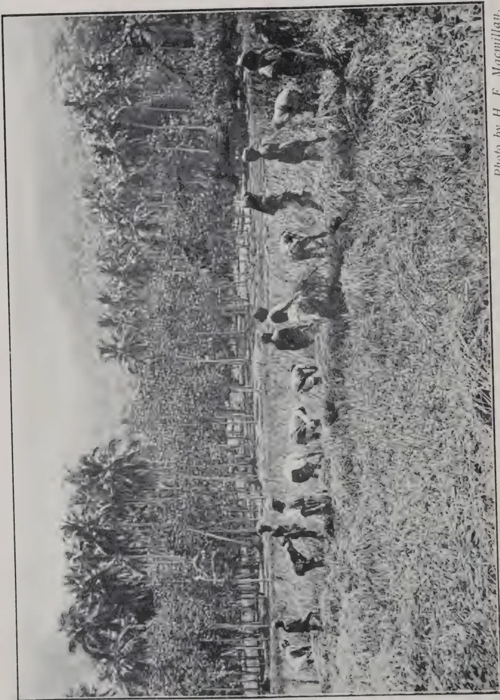
Photo by H. F. Macmillan.
HARVESTING THE PADDY CROP.
(Rubber and Coconuts in Background).
THE
TROPICAL AGRICULTURIST:
JOURNAL OF THE
CEYLON AGRICULTURAL SOCIETY.
VOL. XLIV.
COLOMBO, MAY, 1915.
No. 5.
SOME LOW-COUNTRY PRODUCTS.
Some results of the first year's trials of various tropical low-country products at Anuradhapura referred to in Progress Reports of the station are now available for the season 1914-15. The station is 295 feet above sea level; has an average annual rainfall of 54.95 inches and a mean temperature of 80.3° F. The planting season is during the North-East Monsoon—September to December—when the bulk of the rain falls. The station is therefore typical of large areas in the tropics of the Eastern hemisphere: one short heavy rainy season followed by a long period of more or less dry weather. The soil is a deep loam and the land newly cleared of low forest.
We tabulate below the yields from some of the crops tried. One year's trials with new seed in a new country, as is the case with many of the crops, must naturally be inconclusive. Some crops suffered from excessive rain through being sown too early; others languished in drought through being sown too late in the monsoon. Storm-rain courses swept through some of the plots and drowned them out. Such casualties, which can be anticipated and guarded against to some extent in the future, have their effect upon results at the present:—
| Yield per acre. | Weight per bushel. lb. | ||
|---|---|---|---|
| Bushels. | Measures.* | ||
| Arachis hypogæa, Groundnut | 28 | 14 | 26 |
| Eleusine coracana, Kurakkan | 15 | 20 | 62 |
| Dolichos biflorus, Horse gram | 7 | 14 | 68 |
| Guizotia abyssinica, Niger seed | 2 | 14 | 48 |
| Glycine soya, Soya bean | 0 | 20 | |
| Panicum miliare, Little millet | 14 | 18 | 47 |
| P. furmentaceum, Poor man's millet | 15 | 0 | 38 |
* 28 measures=one bushel.
283[MAY, 1915.| Yield per acre. | Weight per | ||
|---|---|---|---|
| Bushels. | Measures. | bushel. lb. |
|
| Paspalum scrobiculatum, Kodo millet ... | 18 | 7 | 50 |
| Phaseolus mungo, Black gram ... | 3 | 11 | 53 |
| P. radiatus, Green Gram ... | 6 | 12 | 63 |
| Setaria italica, Italian millet ... | 8 | 14 | 53 |
| Sesamum indicum, Gingelly or simsim, brown | 0 | 21 | 49 |
| S. indicum, white ... | 1 | 21 | 49 |
| S. indicum, black ... | 1 | 2 | 49 |
| Sorghum, Indian, Skaladagdi, white ... | 2 | 0 | 56 |
| Sorghum, ,, Perio, ,, ... | 3 | 21 | 56 |
| Sorghum, ,, Sundia jower ,, ... | 3 | 0 | 63 |
| Sorghum, ,, Imphi ,, ... | 2 | 4 | 56 |
| Sorghum, Soudan small white ... | 16 | 2 | 56 |
| Sorghum, ,, giant ... | 16 | 0 | 58 |
| Sorghum, ,, large yellow ... | 22 | 14 | 53 |
| Sorghum, ,, small brown ... | 15 | 25 | 55 |
| Vigna catjang, Cow pea, white ... | 1 | 12 | 63 |
| V. catjang, large purple ... | 15 | 21 | 62 |
The Millets as a class did well. The Panicums were not quite up to good average Indian yields, though the Paspalum compares favourably with them. The growth of the Indian Sorghums was very level but the yields were disappointing ; the Soudan Sorghums, a new importation, cropped much better, equalling and, in some cases, surpassing the popular Kurakkan which they excel in quality as food for man or beast besides giving abundant straw. The red-headed variety, which hitherto has enjoyed special immunity from bird attack, and appears to be immune from mould and smut, yielded at the rate of 17 bushels per acre at Peradeniya but was not tried at Anuradhapura. It would probably have yielded more but for too wide planting—a mistake made with many of the crops at Anuradhapura also—which can easily be rectified. The large purple cow pea (Vigna catjang) cropped well ; it is a good green manure. Pigeon pea (Cajanus indicus) though not yet harvested looks at the present time very vigorous though rather too closely planted. Safflower was a complete failure ; Soya bean almost so
One of the most healthy of the plots now to be seen is that of Arrowroot, which was planted in furrows two feet apart, on the ridge and furrow system. 200 young Robusta coffee plants in the Mahailuppalama nurseries are to be put out this year at Anuradhapura. They look very promising, as do also the Citrus trees—orange, mandarin, lime and citron—now in bearing at Mahailuppalama.
R. N. L. MAY, 1915.]284In connection with the propagation of coconuts it is a widely held belief that the nuts from young trees should not be used and that plants should only be raised from fully-matured trees.
This belief appears to be based on the following passage from SIMMONDS' TROPICAL AGRICULTURE* :—"The nuts for sprouting should be chosen from those fully ripe, having full, large eyes, § and such as have been gathered from trees past the middle age—not, however, from aged ones—and from clusters containing few fruits. These, if carefully planted, are said to ensure the timely sprouting and steady growth of the plant as well as future luxuriance, longevity, and unintermitting fruitfulness.....Those nuts which may be taken from trees of immature age will, if planted, rot away at the eye; and the plants,—if any be successfully reared,—on transplanting will grow very rapidly and acquire bulk, but the fruit will drop before the kernel acquires consistency, the root stalks break, and the trees entirely fail before mid age."
Efforts have been made to discover what truth there may be in the above statement, but neither direct confirmation nor absolute refutation has been obtained. On physiological grounds there would appear to be no justification for the statement as it stands, though no doubt it would be unwise for more than one reason to plant nuts from young trees in the first year or two of their coming into bearing.
We have failed to find any earlier reference in economic literature to the statement made by SIMMONDS, and it is not impossible that he may have based it on a superstitious native belief which had come to his notice. But all attempts to trace its origin have so far been unsuccessful. It is, too, not inconceivable that the statement may merely embody the argument of the owner of a plantation, containing trees of a particular age, which was being offered for sale.
The following passage taken from a recent book on the Coconut, by E. B. COPELAND,† deals with the vexed question of the seed nuts, and contains useful practical suggestions:—
"B. Selection of the seed.—Whatever variety of coconut may be chosen, the seeds which are to be planted should be selected as the product of individual trees, and these trees should be very carefully picked out and should be the ones which most exactly have the qualities which it is desirable to give to the entire plantation. There is no point in the coconut business where careful personal attention is more necessary or will prove more profitable than in the selection of the trees which are to furnish the seed nuts. Leaving out of account selection for any of the minor uses, and
* SIMMONDS, P. L., TROPICAL AGRICULTURE, pp. 220, 221. London, 1877
§ We are not aware how this quality of "full, large eyes" could be detected in seed nuts which are always planted in husk.—Ed. T. A.
† The Coconut. E. B. COPELAND, London. Macmillan & Co., Ltd. pp. 116-118.
285[MAY, 1915.considering only the production of copra or oil, there is one safe and sufficient rule. Select the seed of trees which are conspicuously more productive than are their neighbours which are growing under the same conditions.
"If a tree is especially productive because it grows in especially rich soil, or because it is well watered or well fertilized, or because it is freely illuminated on all sides, then, no matter how conspicuously productive it may be, there is no sound reason for choosing it as the source of seed. Seeds are chosen for their hereditary qualities, and a good environment cannot be inherited. A tree in the middle of a grove which regularly produces more nuts or larger nuts than its neighbours, and is without any compensating drawback, should be selected as the source of seed, even though a tree at the outside of the same grove which is still more productive be passed over.
"The selection of nuts from piles or at any time after they are cut from the tree is not to be recommended. A tree bearing very few nuts is for that reason likely to bear large ones, and it will thus often happen that the selection of large nuts from the nut pile is in effect selection from trees which are not very productive. Moreover, there is a chance that the large nuts in general nut piles are from trees which produce large nuts because they grow under especially favourable conditions, and, as we have just seen, there is no reason whatever why the fruit of such trees, however good it may be, should be selected for propagation.
"When the trees which are to be the source of seed nuts have been selected, their nuts should be regarded as having a value which is based on the value of the trees they will produce, and are therefore out of all proportion to the value which they have as mere nuts. It is worth while to harvest these nuts with a care which would be economically impossible for nuts intended for the production of copra. It is well worth the while to collect the nuts of a good seed tree by lowering them to the ground by hand in order that there can be no risk of breaking or cracking them. A cracked nut will never germinate.
"The nuts are ready to be used for seed at the same time at which they are really ready to be used for copra,—that is, when a third or a half of the water in the interior cavity has been used up. This condition can be recognized by the heaviness of the nut and by the noise which it makes when shaken."
The following paragraph taken from the "DIRECTIONS FOR PLANTING COCONUT TREES," issued by the Board of Agriculture, British Guiana, contains information very similar to that given by COPELAND:—
Selection of Seeds.—Nuts which are quite ripe should be chosen from trees which bear good crops of nuts having thin husks and thick kernels (copra), and which are neither very young nor very old. They should either be picked and not allowed to fall, as by so doing they may be injured, or, if not picked, fallen ripe nuts should be selected with uninjured husks; they should be kept a month before sowing. The larger ones on the bunches should be selected for planting, but very big nuts are not always the best, because only a few may be borne on the tree, while frequently their size is due to excessive development of husk at the expense of the kernel; oblong nuts should be avoided. The large orange-red variety is the best for planting, in view both of size of coconut and of yield of copra."
MAY, 1915.]286One of the chief reasons, no doubt, for the recommendation that nuts should be taken from trees of some maturity is that the character of the nuts yielded by such trees would be well known, and it is probable that the nuts borne by quite young trees would not show their true character.
The following extract relating to seedling coconuts in the Laccadives * is also of interest in connection with this subject :—
“In most of the islands it is deemed necessary to raise the seedling coconuts with care and attention till they are a year old, when they are transplanted and watered for a few weeks till they become firmly established. After this the young trees are left entirely to themselves, and are neither watered nor manured ; they come into bearing in Kiltan in from 8 to 10 years ; and produce fruit so vigorously and plentifully that it is sometimes necessary to support the luxuriant growth of nuts artificially ; in this island, moreover, the preliminary attention to seedlings is not required.
“In some of the other islands, as in Chitlac, where the soil is much poorer, the trees do not come into bearing till they are 15 to 20 years old, each tree at best producing only about 50 nuts per annum as against 80 to 85 nuts a year in Kiltan. In Kadamum, too, backward though the cultivation in that island is, the average per annum is about 80 nuts per tree ; in Ameni, where the cultivation is almost as extensive as in Kiltan, the average is only about 60 nuts a year from each tree. These figures are given by ROBINSON, after careful and prolonged inquiry, as representing the yield in 1844 and 1845 : HUME gives the average all over for the four British islands in 1875 at 80 nuts per tree per annum—doubtless rather a high general estimate, though probably representing the yield of what the people in any of the islands would themselves consider a good tree. ROBINSON thinks that 60 to 70 nuts would be a pretty fair general average for the whole of these islands, and this is likely to be nearer the truth than the higher estimate. The islanders try to plant only first-class trees, and they aim at obtaining such as will come into full bearing in about 10 years, throwing out every month after that age is reached a fruiting spike bearing 15 to 20 nuts, and so yielding 180 to 240 nuts a year, and going on bearing, at this rate till they are 60 years old. They often do go on bearing, it is said, till they are 70 or 80 years of age, and some are believed by the people to be more than a century old.”
Young coconut trees vary considerably in the age at which they commence to yield, and in some cases as many as ten years may elapse before any nuts are borne. In pronouncing an opinion as to the proper age or size of trees from which seed nuts should be selected, it would be better therefore not to take nuts for this purpose until the trees are at least in their third or fourth year of bearing. Judging from particulars received of coconut plantations in the Island of Nevis, West Indies, it would appear that coconut palms in their third year of bearing yield perfectly sound and full-sized nuts, which, when used for seed, can be relied upon to germinate freely and in a normal manner.
The plantations in Nevis were started by MR. CRUM-EWING in the autumn of 1907 on old sugar-cane land, which is almost at sea-level. The soil is a nice loam, gradually getting lighter until it becomes pure sand on the sea-shore.
* BOTANY OF THE LACCADIVES, D. PRAIN in JOURN. BOMBAY NAT. HIST. SOC., 1892, sec. 2, No. 5, pp. 65, 66.
287[MAY, 1915.The average rainfall for the years 1909-13 inclusive was 43.87 inches, but the deficiency is compensated for by the plentiful underground supply of water draining from the high cone-shaped mountain which forms the centre of the small circular Island of Nevis.
The seed was obtained from Jamaica by MR. BARCLAY, Secretary of the JAMAICA AGRICULTURAL SOCIETY, who took some trouble to obtain nuts from the most healthy plantation in that Island. The seed for that plantation in turn came from San Blas, whence come the finest nuts in the Western Hemisphere.
The number of nuts planted up to the end of 1911 amounted to 10,305. The trees are planted 28 feet apart, 52 to the acre. Certain trees commenced to bear in 1911, and MR. CRUM-EWING saw one early in 1912, 4 years, 4 months old, bearing 40 nuts. Reaping in any quantity, however, did not commence till 1913, when the 1907 plants would be about 5 years and 3 months old.
From January 11th, 1913, to June 30th, 1914, the number of nuts harvested amounted to 23,807. From January 11th to October 23rd, 1913, a 4-in. gauge was used, which resulted in 77.4 per cent. of selects and 22.6 per cent. of culls. Both selects and culls were sent to New York, where the market took both grades as select, paying $42.50 per 1,000, about the highest price which has been paid for any coconuts in that city. Since October 23rd a in. gauge has been used (which is in. larger than the Malay regulation gauge of in.), and of the 75,116 nuts gathered, 68,419 or 91.08 per cent. have been select, and 6,697 or 8.92 per cent. have been culls. A selection is made in the field of the nuts while in the husk, and it is found that 95 to 98 per cent. of these nuts when husked are over the gauge.
In choosing nuts for seed, greater care is bestowed on selection than when husking and selling raw nuts is contemplated, so that the percentage of standard nuts would be increased. A certain number of trees are known not to give such a good percentage of selects, although the unhusked nuts from them look good. When selecting nuts for seed none are taken from these trees, which still further reduces the percentage of culls. The rots will not of course germinate, so that of the sprouts taken from the nursery, it may safely be assumed that nearly 100 per cent. are from nuts over the in. standard.
Out of 1,000 seed nuts sent to Demerara in July, 1913, it was reported on February 28th, 1914, that 89 per cent. of these had germinated, that the others seemed quite good, and that more were expected to grow. In March, 1913, 50 nuts were planted standing up and 50 on their sides by way of experiment in Nevis. On October 24th, 1913, it was reported that out of the 50 on their sides 46, or 92 per cent., had germinated, and of those standing up only 30 or 60 per cent. had germinated.
The high percentage of good-sized nuts on the young plantations at Nevis is of both general and commercial interest and affords ample justification for the great trouble which was taken in selecting the original seed nuts in Jamaica and elsewhere. As to the selection of the seed MR. CRUM-EWING writes :—"I do not understand SIMMONDS' advice to take seed nuts from clusters containing few fruits—on a prolific tree there should be no
MAY, 1915.]288such clusters. I quite agree with you that seed nuts should be taken from trees whose good character is well marked. It appears to me that the pedigree of a coconut tree is of the utmost importance. Even if I had only one or two years' experience of a tree, and it showed the same characteristics, for which its parent, and yet again its grand-parent, had been selected, I would rather use the seed from that tree than take SIMMONDS' advice to choose one picked from a sparsely furnished cluster grown on a tree past the middle age, of whose parentage there is no record."
The nuts which are now being planted on MR. CRUM-EWING's land in Nevis and in Demerara are taken from the young trees planted in Nevis in 1907. As already mentioned, the germination percentage of nuts sent from Nevis to Demerara in July, 1913, was 89 per cent., which certainly refutes the statement made by SIMMONDS that nuts from young trees "rot away at the eye." MR. CRUM-EWING informs us that he is planting nothing but his own Nevis seed both in the Island and in Demerara, and adds :—" I feel justified in so doing, knowing the great care with which the seed is selected, the minute observation to which the individual trees have been subjected, the absence of disease in the grove and in the Island, and the good stock from which the parents and grand-parents were derived."
These experimental plantings should, in the course of a few years, enable a proper estimation to be made of SIMMONDS' statements, but in the light of the practical experience already gained, it seems highly unlikely that his recommendations will receive support.—KEW BULLETIN.
The first picking of 1915 was made on February 25th. The number of nuts collected was 965 from 284 trees, an average of 3.5 nuts per bearing tree, or 0.59 nuts per acre tree.
This is the yield from an area of acres, composed of plot A, 17 acres of 6 year old trees and plot B, acres of 7 year old trees. (Number of trees per acre 70).
In the irrigable area (6 year old trees) consisting of 1,224 trees, 259 trees gave 887 nuts, an average of 3.5 nuts per bearing tree.
In the unirrigable area (7 year old trees) consisting of 449 trees, 25 trees gave 78 nuts, an average of 3 nuts per bearing tree.
The second picking of 1915 comprising the produce of the months of February and March was made on April 7th.
The number of nuts collected was 1,593 from 341 trees, an average of 4.5 nuts per bearing tree or 0.90 nuts per acre tree.
This gives a total of 2,558 nuts for the year 1915 to date from an area of acres as detailed above.
In the irrigable area, 310 trees gave 1,462 nuts, an average of 4.75 nuts per bearing tree.
In the unirrigable area, 31 trees gave 131 nuts, an average of 4.25 nuts per bearing tree.
289[MAY, 1915.The following figures have been obtained with regard to copra production :—
COMBINED PLOTS.
| Picking. | Break. | Rejec- tions. |
Copra lb. |
No. of Nuts re- quired per Candy. |
|---|---|---|---|---|
| September, 1914 ... | 1,968 | 946 | 1,159 | |
| October, 1914 ... | 1,235 | 0 | 548 | 1,260 |
| November & December, 1914 ... |
900 | 1 | 384 | 1,296 |
PLOT A (IRRIGABLE.)
| September, 1914 ... | 1,842 | 1 | 857 | 1,197 |
| October, 1914 ... | 1,178 | 0 | 518 | 1,273 |
| November & December, 1914 ... |
848 | 1 | 363 | 1,292 |
PLOT B. (UNIRRIGABLE.)
| September, 1914 ... | 126 | 0 | 89 | 792 |
| October, 1914 ... | 57 | 0 | 30 | 1,064 |
| November & December, 1914 ... |
52 | 21 | 1,360 |
For the year 1914 the average number of nuts required to produce a candy of copra was :—
| In the case of the combined plots ... | ... | 1,239 |
| In the case of Plot A ... | ... | 1,226 |
| In the case of Plot B ... | ... | 1,357 |
--PROGRESS REPORT.
G. HARBORD.
AT PERADENIYA EXPERIMENT STATION.
Groups of 4 palms each were selected on the Getambe plot and Kanganie's Line plot. One group of each was manured with a general mixture containing 60 lb. each of Nitrogen, Potash and Phosphoric acid per acre, of 60 palms or one pound of each constituent per palm, and three other groups with similar mixtures in duplicate but omitting one essential constituent from each plot.
The groups of 8 years old coconuts are kept disced and cultivated and the 12 year old groups are under grass; otherwise they are duplicates of the 8 year old coconut plot.
The following are the manures for palms 8 years old and for palms 12 years old :—
Plot 1. NITROGEN AND POTASH ONLY.
| Ammonium sulphate | 300 lb. per acre | 5 lb. per palm. |
| Sulphate of Potash | 120 ,, | 2 ,, |
| 7 lb. per palm. |
Supplying 1 lb. each of Nitrogen and Potash per palm.
MAY, 1915.]290Plot. 2. NITROGEN AND PHOSPHORIC ACID ONLY.| Ammonium sulphate | 300 lb. per acre | 5 lb. per palm. |
| Ordinary Superphos. | 333 ,, ,, | 5'6 ,, ,, |
| 10'6 lb. per palm. |
Supplying 1 lb. each of Nitrogen and Potash per palm.
Plot 3. PHOSPHORIC ACID AND POTASH ONLY.| Ordinary Superphos. | 333 lb. per acre | 5'6 lb. per palm. |
| Sulphate of Potash | 120 ,, ,, | 2'0 ,, ,, |
| 7'6 lb. per palm. |
Supplying 1 lb. each of Phosphoric acid and Potash per palm.
Plot 4. NITROGEN, POTASH AND PHOSPHORIC ACID (Basic).| Nitrolim | 333 lb. per acre | 5'6 lb. per palm. |
| Basic slag | 300 ,, ,, | 5'0 ,, ,, |
| Sulphate of Potash | 120 ,, ,, | 2'0 ,, ,, |
| 12'6 lb. per palm. |
Supplying 1 lb. each of Nitrogen, Potash and Phos. acid per palm.
Some very large nuts are being obtained from the 12 year old palms, the seed of which came from Java. The dried nut weighs lb.; after husking lb.; Water 1 lb.; shell and meat lb.; thin shell lb.; weight of copra 9 oz.; thickness of copra-kernel inch.
These are being planted in nurseries with a view to establishing a plantation for seed nuts.—PROGRESS REPORT.
D. S. CORLETT.
The enormous productiveness of tuberous crops like the potato are not ordinarily realised. During the past six years trials have been conducted in Surrey with a view to ascertain the possible yields of one pound of seed potatoes under ordinary garden cultivation, without the aid, however, of glass or hot air. Since these trials were begun the yields have increased steadily each season. Last year two growers lifted and 351 lb. of sound tubers from the original pound of seed tubers. The variety grown was William's Colleen raised in County Cork.
THE GARDENERS' CHRONICLE (April 3) quotes the testimony of one of its correspondents as to the value of swans in keeping ponds and lakes clear of weeds. The birds are not supposed to do this by actually eating all the weeds. They may feed partially on them but accomplish the work of destruction by biting and tearing. They do this in the search for insects, worms and small shell fish harboured by aquatic plants, but they are believed not to destroy ordinary fish.
291[MAY, 1915]Our readers have hardly had time to forget the manner in which the V system of tapping was rejuvenated a couple of years ago by many visiting agents in the East. We might usefully recall the fact that the V was almost the first method of tapping adopted when Hevea was many years ago exploited by scientists and planters in Ceylon and Malaya. Later on it gave way to single cuts, sloping at an angle of 45 degrees, positioned one above the other. There were as many as four or six cuts on the same side of the tree, each provided with a cup at the lower end. Still later these cuts were connected by a shallow vertical groove in the bark so as to form quarter-section, herring-bone, and other systems. A couple of years ago the yields from many estates were far from satisfactory, and visiting agents and responsible managers proclaimed their belief that salvation lay, not in a change of frequency, but in one of system. They also invariably pronounced in favour of a big V encircling half the tree. That view was based on evidence but a few months old. It was not, to our knowledge, based on experiments controlled, nor were the deductions arrived at by scientific men.
We at once contested the claims made, and gave our reasons for doing so. We pointed out that any tapping line must obviously draw latex from the surrounding bark, and that the closer the tapping lines to one another the more the incisions would tend to draw latex from the bark area. These obvious facts were not disputed. But when we continued the argument by pointing out that in the V method two lines actually came into contact, and therefore drew near the apex on the same area of bark we were simply told that the system was giving very good yields. Furthermore, one of the most active supporters of the V method took up our challenge and appealed to a certain director of agriculture in the East, who gave a letter to the effect that "the V system was agriculturally sound." This we again contested, and awaited developments. We could not accept mere adverse statements as a proof that our conclusions were wrong.
It now appears that the publicity given to the subject resulted in numerous experiments being conducted with the object of determining the values of different systems of tapping. We are pleased, but by no means surprised, to learn that these results agree with our original views. A knowledge of the autonomy of Hevea bark enabled one scientist to arrive at our view without going to the expense and trouble of experiments.
The reasons given for originally recommending and now abandoning the V by visiting agents are not the same. We have received letters from visiting agents on the subject, and will content ourselves by publishing essential portions of their communications. One visiting agent deals with his own position in such a logical manner, giving his reasons for (a) recommending the V. (b) for being sceptical on the subject; and (c) for abandoning the V that we cannot do better than give his views under these headings.
MAY, 1915.]292His reasons for originally recommending the V method of tapping were as follows :—
“ 1. That I did not doubt that the basal V gave better results on small trees than two quarter-stem half herring-bone cuts.
“ 2. That on young trees better tapping could be effected on the thicker basal bark than on the thin bark of the upper of two half-herring-bone cuts.
“ 3. That the use of the V for two years on young trees would not do any damage or be an obstacle to a future introduction of the half-herring-bone system if the V system should meanwhile prove a failure.”
While taking the above views the same agent had reasons to doubt the soundness of the method, for the following reasons :—
“ 1. The botanical reason that after the second half-stem V is opened the food transport in the sieve tubes must for some time be interfered with too seriously.
“ 2. The experiments on which the propaganda for the V system was based had only lasted for three years, and could therefore at most have shown that the basal V gives more rubber than two half-herring-bone cuts, but nothing as to the consequence of continued V tapping.
“ 3. That it is easier for coolies to tap properly in only one direction than in two. If they cut downwards on both sides of the V they will have to put leverage on the knife in two opposite directions.”
After several years' experience he gives the following reason why he now abandons V tapping :—
“ On a small estate on which I was manager tapping was begun in 1910, and up to 1912 all young trees were opened up with a half-stem V. The quality of the tapping was good for that time. The estate has always been well kept, but only little cultivation has taken place. From the middle of 1913 the output stopped increasing, though new trees were still being taken into tapping rounds. This and the reports of similar results from other estates have convinced me that the V system even for young trees is a severe one, and that it ought to be abandoned in favour of a one-cut quarter-stem half-herring-bone system, to be followed by a two-cuts quarter-stem half-herring-bone system when the trees are eight years old.”
It will be observed that the visiting agent here quoted abandons the V because of the bad effects on young trees. The reason given is, we admit, sufficiently strong, but we would like to hear the views of agents who have come to a similar ( or opposite ) conclusion as a result of experience gained in the tapping of larger and older trees.—INDIA RUBBER JOURNAL.
The premium on ribbed smoked sheets has been maintained, only in part, during the present year. During the present month the difference between first quality crepe and smoked sheet has been narrowed down to one penny per pound of rubber. This reduction should not, however, be considered alone. In the first place the cost of producing smoked sheet rubber is less than that of crepe; secondly, there is a slight increase in weight due
293[MAY, 1915.to the process of smoking to which the rubber is subjected. This second point is not always given full consideration. We have been told by MR. MORRISON and MR. WILLIAMS, who admittedly manage business and technological departments respectively in two successful rubber manufacturing concerns in this country, that they have no preference for smoked as against unsmoked sheet. They both preferred sheet to crepe. MR. WILLIAMS has given a definite statement to the effect that his preference for unsmoked as against smoked plantation sheet was based on the fact that the smoked variety showed an increase in washing loss and resin content.
These deliberate statements from manufacturing interests, like many others bearing on the values of different types of plantation rubber, seem to be at considerable variance with the daily market. Smoked sheets have always realized top prices during the present year. Granting that most of the material of this type is only superficially smoked, we cannot help thinking that the constituents of the smoke must exert some antiseptic influence which minimizes the risk during storage, and leads to a general improvement in quality. Otherwise one must admit that the price is entirely artificial and maintained by forward contracts and the willingness of growers to sell their unsmoked sheets at a discount.
We are quite convinced that no grower can at present sell forward unsmoked ribbed sheets at the same price as the smoked type. Yet the statements of the gentlemen named would lead one to imagine that business should result on those lines. The point is well worth serious consideration, since the smoking of rubber on plantations is costly and has very seriously raised the insurance of premium for rubber while in course of preparation. We feel sure that every grower would gladly abandon the smoking process if prices and qualities would not suffer. We suggest that some growers might try the market with lots of unsmoked ribbed sheets. The opposition of the market might be overcome in due course and estates ultimately saved an item of expense.—INDIA RUBBER JOURNAL.
The following paper, written by MR. E. BROWN, Kivuvu, was read at the meeting of the Uganda Planters' Association on Saturday last on the subject of Rubber Tapping :—
The experiment of which I give the results was conducted during 1914. A total of 6,000 trees was tapped. The period of tapping covered 7 months. The trees varied in age from to 8 years from seed. The minimum girth at which tapping was commenced was 16 ins. at 8 ins. from the ground, and the trees varied from this girth to 30 ins.
Of the 6,000 trees, 3,000 were tapped for the first time, having just reached the tapping limit. The remaining 3,000 reached the tapping stage, and were tapped in 1913.
The basal V system of tapping was adopted, all the new trees having one V only, or on small trees only one side of the V cut. The older trees had two or even three V's, one above the other at 18 in. intervals. One quarter section of the girth was worked. Alternate day tapping was adopted
MAY, 1915.]294chiefly, but on some areas daily tapping was carried out for part of the time as an experiment.
The result in dry rubber was 8 ozs. per tree for the 7 months' tapping.
The cost of the rubber worked out as follows: Cost per pound.
| Upkeep of area | ... | ... | 25.6 cents. |
| Tapping | ... | ... | 19.0 ,, |
| Curing and packing... | ... | ... | 4.6 ,, |
| Upkeep of tools | ... | ... | 1.0 ,, |
| Cost on estate | ... | ... | 50.2 cents. |
| say per lb. | |||
| Freight to Coast | ... | ... | 7.5 ,, |
| From Coast to London | ... | ... | 3.0 ,, |
| Management | ... | ... | 6.0 ,, |
| Total landed in London | ... | ... | 66.7 cents. |
| say per lb. | |||
This cost compares very favourably with the cost of Eastern rubber as put on the market. In fact I think I am safe in saying that there are not half a dozen companies who do it cheaper. Naturally, when the trees are older and give double the yield they now give, costs will be materially reduced.
The grades of rubber worked out as follows:
First grade 72%. Second grade and scrap 28%. Here again the result is not far behind the East, for there if 75% of the output is top grade it is considered satisfactory.
The intervals of tapping have an important effect on the results obtained both as regards yield per tree and the cost per pound of rubber. To obtain the maximum yield per tree it is necessary to sacrifice cheapness per pound of rubber. To test this I tapped certain areas daily instead of on alternate days. These areas gave times the rubber per month that the other areas gave, proving that a higher yield per tree will be given by daily tapping. To get times as much rubber, however, the cost of tapping was doubled so that the cost of the greater yield worked out at 25% higher.
Other points against daily tapping are that it results in a much higher percentage of scrap rubber, there being double the bark parings to only times the latex. Also the tapping areas will last only half the time.
The Eastern plantations have found that the best results are obtained by working for cheaper rubber, by endeavouring to increase the yield per tapper, at the cost of a low yield per tree, and there seems little doubt of the soundness of this view. They, however, to a great extent, still stick to daily tapping, and reduce the number of cuts per tree to enable the tapper to deal with a larger number of trees. My plan is merely a modification of theirs for both result in a lighter tapping of the tree to get the maximum yield per cut.
The results I have obtained seem small compared to the yield given by trees even in this country, but it should be remembered that my experiment was on a commercial scale. Experiments on a very small number of trees are very valuable when a larger experiment is not possible, but the result
295[MAY, 1915.should be discarded as soon as the larger experiment is possible. The small experiments are likely to receive too much supervision and extraordinary care, with the result that the results are not secured when done more practically. Tapping experiments have been carried out in the country in recent years but generally with the object of proving the tree to yield a certain number of ounces. My experiment has been an attempt to prove that the tree will yield rubber at a cost that renders its collection a commercial possibility.
I trust that the figures I have given will result in the members of this Association giving more serious attention to rubber. Owing to the drop from the very high prices of the boom years, present prices are considered by many to mean that rubber could never be made to pay. Yet a product costing 1s. to produce and selling for 2s. cannot, after all, be called low-priced. It means a profit of 50% of the gross returns. Coffee does not give more than that. It is necessary for us to adopt a different standpoint regarding rubber, to keep from our minds the very high prices which have ruled, for of course, comparatively, present prices are low, and to consider fairly whether present prices can be made to pay. One finds it impossible nowadays to discuss the prospects of rubber without hearing of the great drop in its price. This fact seems to have so overshadowed rubber that it never gets a chance now, yet it was a commercial success before the boom rushed up the price of it.
To show that rubber selling at the present price pays, we have only to study the balance sheets of rubber companies in Malaya. Many pay 20, 40, and even 80% dividends even now. The question is, can we put rubber on the market as good and as cheaply as they? I have tried to prove that we can.—
THE UGANDA HERALD.
It is common knowledge that a few years ago it was customary to tap Hevea trees by a large number of incisions at least on one side of each tree. Nowadays it is fashionable to have one cut on one side only, the contention being that the yield of rubber therefrom is equal to that obtainable from a larger number of incisions. Frankly, we believe the latest development to be the natural consequence of over-tapping in the past. We do not believe that one tapping line a few inches long can draw the maximum quantity of rubber from Hevea trees, even when the latter are only forty feet in height. The anatomical characteristics of the laticiferous tissue in this typical forest tree are such as to make it impossible for one slanting cut to drain effectively the rubber from the whole of the bark on even the smallest specimen.
We admit that the fewer the tapping lines on each tree the better for the plant. Every incision, no matter how shallow, adversely affects the tree. But when rubber has to be obtained by making incisions in the bark one must be prepared to work on some plan which makes allowance for the age and vigour of the tapped trees. In the past, it is true, many young and old trees had each more than half-a-dozen tapping lines. Now it is suggested that each tree shall only have one tapping cut, mainly because the trees have,
MAY, 1915.]296in consequence of over tapping, begun to show a decline in yielding capacities. We do not doubt that even one cut on badly-tapped old trees will be too drastic.
If in the course of experience it has been found that one cut on a small tree is all that should be made, it does not by any means follow that the same is desirable or necessary for older trees. We believe that Hevea trees are first tapped at too early an age, and therefore agree that one cut should suffice for the first year or so of tapping. In later years we think that the same trees can stand two and even three cuts each.
We think this view will be appreciated when the trees now receiving only one cut each are a few years older. Most of the old trees of to-day were first tapped when they were only eighteen inches in girth, and have already had all their primary bark destroyed. In fact, on many trees the secondary and tertiary barks have been consumed at too rapid a rate, and one can only express surprise that they continue to yield good rubber. The young trees now coming into tapping round will receive much more gentle treatment than their parents, and should be able to give a better account of themselves when subjected to the knife in years to come.—INDIA RUBBER JOURNAL.
THE CHEMIST AND DRUGGIST (March 27th), referring to the antiseptic action of essential oils, makes special mention of Cinnamon oil, which is said to have proved "very efficient in preventing the growth of micro-organisms." It is suggested that soldiers at the front might be provided, for the instantaneous treatment of wounds, with collapsible tubes of ointment containing essential oil—such as Cinnamons which are more powerful than carbolic acid. It would of course be necessary to ascertain by clinical experience the limit of toleration of these ointments. It is stated that Eucalyptus oil does not interfere with the growth of micro-organisms.
Cocoa keeps steady, but the last auctions were not patronised to the extent of their predecessors; prices after a brisk opening failed to maintain any advantage, Ceylon being the exception to the general rule, which is not to be wondered at considering that Ceylon Cocoa had offered cheaper than any others for some time past, and the quality is turning out exceedingly good; however, the private market is now firmer than ever, and values are further enhanced, especially in the case of Summer Arriba, of which there is now only a small quantity offering, and so far as holders are concerned you can either pay the price or leave it.—LONDON COMMERCIAL RECORD.
Says the JOURNAL OF THE DEPARTMENT OF AGRICULTURE, Ireland, in its February issue:—"The linen manufacturing industry has now to face the most serious crisis in its history, brought about by the stoppage of supplies of flax from Continental countries as a result of the present war. Unless arrangements can be made at once for bringing in supplies of flax from Russia, very serious stoppage of machinery must result to the mills and factories in the North of Ireland." Flax is grown to some extent in India and its cultivation is being tried in Ceylon by the Agricultural Society.
297[MAY, 1915.The crop sold for the year April 1914 to March 1915 is as follows for 38 acres :—
| Good cacao | ... | ... | 240 cwt: | average per acre | 6 cwt. |
| Black and Sweepings | ... | ... | 59 " | do | " |
| Total crop sold | ... | ... | 299 " | do | " |
| Average price good cacao | ... | ... | ... | Rs. | 47 per cwt. |
| Do black do | ... | ... | ... | " | 21 " |
| The highest price (April 1915, being | ... | ... | ... | " | 60 " |
This is a higher average than last year. These are the old trees that never received proper attention when they were young and were allowed to get into such a bad state of cultivation and disease as to be only yielding 2 cwt. per acre. They have not been manured for three years.
The results of the plots under experiment will be published as soon as possible.
All plots were well pruned in March, and all dead trees and those crowded have been removed and a new census taken of the number and varieties in each plot. The trees are now (April) bearing very heavy blossom in consequence.—PROGRESS REPORT.
D. S. CORLETT.
H. P. BOOTH AND A. W. KNAPP.
It is by no means easy to make a definite statement which is generally applicable, because the various manufacturers look for different qualities, and cacaos from certain districts are prized for special purposes. There is, further, some danger in describing a desirable appearance, for it is not the appearance that is wanted, but the qualities that are associated with it.
In general, we believe that if the planter only allows ripe pods to be gathered, ferments for a reasonable period, cures with care, and keeps the beans dry, they will have the right appearance, and that he will be producing the best that the types of trees on his plantation will produce. It is evident from this statement that the value of claying and dancing is called in question.
We understand that unfermented cacao finds purchasers, but fermented cacao always obtains the higher price; unfermented beans are more difficult to shell, and they produce an inferior cocoa. Partially fermented beans suffer from the same defects. With over-fermented beans the shell may
MAY, 1915.]298become so loose as to be fractured in carriage and handling. This opens the way for attack by grubs and moulds. This danger may also be incurred : (1) with over-ripe beans in which the germ penetrates the shell ; (2) by washing, which leaves the shell tender ; and (3) by lack of care in curing.
Cacao may be spoilt by not observing conditions of cleanliness during fermentation, or by exposing to bad odours. On curing these defects may be hidden, only to be revealed again on roasting, when the objectionable "hammy" or other flavour is developed.
Other objectionable features are the presence of twig-like pieces of dried pulp and placenta, and of small flat beans.
Criollo cacao contains a higher price Forastero or Calabacillo, because, while it is the rarest, it is a valuable ingredient of good chocolate. Large beans are preferred because they have a lower percentage of shell than small beans.
Probably the most highly appreciated quality is constancy or reliability of quality. A cacao which varies from bag to bag, or from time to time, will get little appreciation. Under ideal conditions standard qualities would be put on the market. Criollo, Forastero, Calabacillo would be fermented separately, and the beans graded according to size. Such a procedure would only be practicable where the cacao from several plantations was taken to a central fermenting station. At the present time we are far from this. Indeed, instead of a careful grading of good qualities, there is in practice a mixing of good and bad. Thus merchants buy cacao which they know to be diseased or unfermented, and deliberately mix it with good cacao. Such an action may not seriously affect the price of that particular lot, but it affects detrimentally the reputation of the cacao from that district, and the manufacturer regards that cacao as less desirable.
It is to be regretted that in some places cacao is still taken to the steamer in surf boats. Well-prepared cacao thus becomes wet with sea-water, and may later be spoilt by mould.
S. H. DAVIES.,
(of Messrs. Rowntree & Co.)
An immense amount of nonsense has been written on the fermentation of cocoa, but we know that the actual principles which underlie the fermentation of cocoa are extremely simple. It is exactly like the fermentation of any fruit. In the first few hours of fermentation you have the organisms which are found on the pod at the time they are cut down ; these are known locally as wild yeasts, and they grow first. Then their place is taken by a true yeast, which gives rise to a very large amount of alcohol. That is finally replaced by other organisms, and specially by an organism which is brought to the pods by the vinegar fly. Bearing this in mind, I think, with every respect to my distinguished French colleague who spoke of replacing fermentation by sterilization by steam, that the latter would not effect all the objects gained by fermentation. In fermentation in a close mass you have the products percolating all the time through the skin, and modifying the cocoa. It is true that with sterilization, if you allow plenty of air to play on the cocoa, you can do all that is necessary in the way of changing the violet or slate-coloured bean to a brown or red bean, but you do not get the products of alcoholic and acetic fermentation percolating into the bean. I think that we are now rather at the parting of the ways ; it is being suggested on many
299[MAY, 1915.hands that it would be well to do away with fermentation and to replace it by immediate drying, but these methods are not in themselves sufficient entirely, to replace fermentation, and will not give the same results. At the same time if I were a Gold Coast planter I should not ferment my cocoa, because the difference in price is so extremely small. It is, I think, the fact that you can dry the fermented beans to a very much greater extent than the unfermented, and if any of you carry out quantitative determinations on cocoa estates you will find it absolutely true that a considerable and unrealized loss of weight takes place, and that is why, with every wish in the world to do so, I cannot honestly recommend that every man should necessarily ferment his cocoa. It is extremely unfortunate that, owing to causes I cannot go into here, the prices of different grades have drawn together, and now there is a very small difference in price between the good and bad qualities. I think if I were a planter and had steam available I should adopt PROFESSOR PERROT'S method. I would steam the beans, and subject them to a temperature not exceeding 140° F., and so get a brown or a red bean, and at the same time gain something in the way of a pleasant flavour.—PROCEEDINGS OF THE THIRD INTERNATIONAL CONGRESS OF TROPICAL AGRICULTURE.
A Note on the Mangrove Forests of British India, by R. S. PEARSON, F.L.S., (Calcutta: Superintendent, Government Printing, 1914), discusses the possibility of utilising Indian mangrove bark commercially. Up to the present this tanning material has not been exported from India to Europe on a commercial scale, although large quantities are annually imported into Calcutta from the Sunderbans, and on a smaller scale into Rangoon and Moulmein from the coastal forests of British Burma.
The most important mangroves found in British India are Rhizophora mucronata, Lamk., R. conjugata, Linn., Ceriops Candolleana, Arn., C. Roxburghiana, Arn., Kandelia Rheedii, W and A., and Bruguiera gymnorrhiza, Lam., while the largest forests are situated on the Arakan and South Tenasserim coasts, the Sunderbans, Andaman Islands, and to a less extent on the Bassein coast of British Burma.
Information is furnished as to the cost of collection of the bark, the quantities available, suitable localities for factories, labour, and local conditions. The Arakan and South Tenasserim districts are considered the two most promising areas available for the collection of the bark and its manufacture into a tanning extract in British India. The author states that the possibilities of utilising these mangrove barks commercially for tanning extract are fair to good, according to the locality selected.—IMPERIAL INSTITUTE BULLETIN.
AMERICAN FRUITS gives some remarkable yields that have recently come under notice. In North Spy an apple grower picked 60 bushels of apples from one tree last season. The same journal states that an orange tree may produce 20,000 fruits but that lemons are less prolific, seldom yielding over 2,000.
MAY, 1915.]300Such a market as that experienced for tea during the present year has been unprecedented in the history of the trade. Buyers have been most anxious to operate, and the market has constantly been put up against them. The demand has slackened off with the approach of the holidays, but this is believed to be only a temporary emergency. It is probable that after the holidays the prices may again show an upward tendency. Common tea is nearly 3d. per lb. dearer than at this time last year. The present position is one where quality is ignored, everything is subordinate to the question of price, and attention is concentrated on the lower grades. Teas are selling above the level of the commoner sorts that in ordinary times would be worth several pence per lb. more money. The future course of the market is difficult to prognosticate, as so many events have still to be solved. There is the question of duty, whether the import will be raised to 1s. per lb., which is the view entertained in some quarters; also there is the matter of export demand, whether the trade for Russia will come on as is expected when the Dardanelles are opened. The suppression of the sale of vodka in Russia, also the stopping of the trade in absinthe and other spirits in France, have helped to increase the demand for tea in these countries. Business has been very awkward this year, owing to the delays in deliveries from the docks, which have caused great inconvenience to the trade as a body. Matters do not look like improving, as, while there is plenty of tea here, shipments from India have dwindled almost to nothing, as is usual at the close of the season. There is also a great shortage of tonnage in the East, and shipments from Ceylon are likely to be retarded for some time to come. The situation for tea is full of possibilities, but supply and demand must after all be the determining factors as regards the future course of the market.—LONDON COMMERCIAL RECORD.
Several factors have contributed to an increased consumption of tea, huge quantities of which have been taken out of bond during the present month.
The amounts released do not altogether indicate the volume of immediate requirements, great as this is, for stocks have been shifted and duty paid, so as to be on the safe side in the event of further war taxes. All the same, the figures are significant, reaching record proportions.
The tea taken out of bond in the first 15 working days of March totalled no less than 25,179,588 lb., as compared with 14,076,852 lb. for the first 14 working days of the previous March. That is to say, a year ago tea was poured out of bond at the rate of one million pounds daily; and the outflow latterly has been, broadly, on a daily scale of upwards of 1½ million pounds.
301[MAY, 1915.Of the 25 million lb. millions have been earmarked for home consumption and millions for export, while 12 months back nearly 12 million lb. were allotted to home consumption and two million lb. or so to export. Though a dividing line may not be drawn with exactitude between the quantities of teas absorbed by immediate necessities and the balance of stocks which have been transferred from bond on grounds of expediency, the evidences of growing sales are none the less notable.
Tea is more in demand as a rival to beer, though both have to bear a war tax, the curtailment of licensing hours having naturally a bearing on the situation; there is a consistently large despatch of tea at fixed periods for troops on active service; and then the position of the soldier's wife who is drawing a separation allowance with clockwork regularity makes for increased purchase of tea for her home.
In this connection point may be made of a fact which is often overlooked. Whatever the quality of the tea purchased, and whatever the price paid, the duty per lb. is always the same. It stands at 8d. as 11 years ago, and the housekeeper who goes in for a low price article obviously has to contribute a higher percentage of duty.
Suppose, for example, that a customer obtained a tea at 1s. 4d. per lb., the result would be that out of every 4d. paid for the lb. 2d. would go to duty and the remaining 2d. would represent the money actually to be set against the value of the tea.
The price mentioned is not a trading figure, and yet even on a public body the argument has been pressed to the contrary, ignoring the effect of the added war charge. It is held by experts to have been a false move advancing tea by only 2d. per lb. when there was the extra 3d. duty; and though this may not at first glance seem acceptable to the careful housewife, the argument strengthens as it points the direction in which true economy lies.
The low price tends to the detriment of quality, which has to be reduced to furnish an article at the figure—though at the outset the public were ready to pay extra 3d. The man in the street gets a wrong impression regarding the apparently cheap tea for which prices have been forced down—and quality as well—overlooking the fact that material is often used for reducing purposes which in normal times people would not drink. That is not good for the customer or the trade.
Why buy common tea? It is not cheap, but really dearer than a fine 2s. tea, which at the present time is cited as a good basis.
In comparison with previous years, allowance has always to be made for the additional tax now imposed; and when it is demonstrated that the 2s. article will yield 280 afternoon cups of tea, whilst the lower grades will furnish only 220 cups, it is obvious that the better article is the cheaper, affording greater value for money.
MAY, 1915.]302The comparison of cost per 20 cups may be put as follows :—
| Tea. | Cost of 20 cups. |
|---|---|
| 1s. 8d. per lb. | 1·78 ( 234 cups to the lb. ) |
| 2s. 0d. ,, | 1·70 ( 280 ,, ,, ) |
| 2s. 6d. ,, | 2·14 ,, ,, |
“As to the differences in quality between the fine and the common teas, let people try a test for themselves,” says an expert. Let those who have been satisfied with the lower grade try a pound of the 2s. 4d. article and then revert to the other : they will never take to that other again. We have found by practice that the fine article will always produce more tea than the common grades.”
Scientific data supports the judgment of tea experts in distinguishing fine teas from the common types and in fixing their value and character ; and, moreover, it has been scientifically demonstrated that the finer teas supply better value because of what they contain of the actual essentials of tea in good proportions compared with cheaper sorts. The economy of using strong rich tea rules out the conventional spoonful measurement as applicable to all descriptions ; less need be used where there is the advantage in strength and quality that helps to narrow differences in outlay, which come to the veriest trifle in the weekly domestic budget.
All this points the moral of judicious selection at reasonable prices ; and with this is coupled the warning, voiced by experts, that business in teas reduced in quality to face an inequitable selling rate must have in the long run a damaging effect on the public consumption of teas.
It is on the finer teas that those best qualified to express an opinion base their faith, in looking for a still greater expansion of business, both at home and abroad. The home consumption has grown steadily for the past ten years ; and amongst countries which offer scope for enterprise Russia may be mentioned.
Already a large tea consumer, Russia will probably be a still bigger buyer now that a substitute has to be found for the banned vodka, and any accession of business in that direction may send tea to higher prices.
However, that does not immediately touch the market, in which the indications are in the direction of continued firmness. Nothing new is to be said at the moment as to the prospects of supplies, and the cautious man hesitates at this juncture to point to the outlook concerning coming crops.
—THE PRODUCE MARKETS' REVIEW.
303[MAY, 1915.The following report on some Dumbara Tobacco sent by MESSRS. FREUDENBERG & Co., to the Rubber Exhibition held last year at the Royal Agricultural Hall, London, has been received from the Imperial Institute :—
The sample received at the Imperial Institute consisted of 24 hands of tobacco each containing about 30 leaves. The leaves were in a rather dry condition, and many had become badly torn.
The material represented a cigar type of tobacco, varying in colour from greyish-brown to reddish-brown with a predominating reddish tint. The leaves measured from about 7 by 3 inches to 14 by 7 inches and were of thin texture. The toughness was variable, but on the whole rather poor.
The tobacco took fire easily and held fire well, leaving a pale grey ash. The leaves as received bore stalks two or three inches long, which would require to be cut off (or "butted") if the tobacco were exported to Europe.
| Moisture per cent. | ... | ... | 12·1 |
| Nicotine | .. | ... | 2·1 |
| Nitrogen | .. | ... | 2·4 |
| Ash | .. | ... | 18·64 |
The ash contained
| Lime | ... | ... | ... | Ca O per cent. | 20·38 |
| Magnesia | ... | ... | ... | M O | 7·80 |
| Potash | ... | ... | ... | K2O | 23·53 |
| Soda | ... | ... | ... | Na2O | 1·95 |
| Sulphates, expressed as sulphuric acid | ... | ... | ... | SO3 | 2·00 |
| Chlorides, expressed as chlorine | ... | ... | ... | Cl | 3·60 |
The tobacco was submitted to three firms of manufacturers, who were unanimously of opinion that it would not be saleable at good prices in the United Kingdom unless it could be improved in certain respects. The burning quality was regarded as good, and the flavour of the smoke produced on burning was described as pleasant, though rather "dry" and "strong."
One firm only gave a provisional valuation of the tobacco, stating that if it could be produced longer and broader in the leaf and was exported in
MAY, 1915.]304good clean condition with the "butts" or ends of the leaves removed, it might be worth 5d. to 6d. per lb. in the United Kingdom as a cigar leaf tobacco.
Four cigars made entirely of the Ceylon tobacco, and four made of Borneo wrapper, with Cuban and Ceylon filler in equal proportions, are forwarded for reference. The cigars made from the Ceylon leaf alone are of an unusual reddish-brown colour, but they burn well, hold fire well, and leave a pale, fairly coherent ash. The aroma and flavour of the smoke are peculiar and a little pungent, but not unpleasant.
The "blended" cigars, made of Ceylon and Cuban filler with Borneo wrapper, are of better flavour and aroma when smoked, but the peculiar character of the Ceylon tobacco is still noticeable.
In an article published in the BULLETIN OF THE IMPERIAL INSTITUTE, Vol. X. (1912) pp. 187-205, the tobacco industry of Ceylon is discussed in detail, and the results are given of the examination of a number of native-grown tobaccos, and also of tobaccos grown under European supervision in Ceylon. It was pointed out in that article (p. 201) that the commercial value of cigar tobacco depends mainly on two factors: (1) its composition and (2) its appearance and texture. The former determines its burning quality and the aroma and flavour produced on smoking, and the second the particular purpose to which the tobacco can be applied in cigar manufacture.
The composition of the present sample is satisfactory, and in certain respects it is better than that of any tobacco from Ceylon previously examined at the Imperial Institute. Reference may especially be made to the large proportion of potash, and to the relatively small quantities of the undesirable constituents, chlorides and sulphates, in the ash. This accounts for the good burning quality of the tobacco.
The defects of the tobacco are almost wholly physical: it is of bad shape, size and colour, and these defects are due to unsatisfactory cultivation and fermentation. As regards shape and size British manufacturers are not unreasonable in their requirements, since they are willing to buy tobaccos from Japan, Java and Sumatra, all of which show considerable variations from one another in these respects. It is, however, desirable that tobacco from a new country should either conform in size and shape with kinds already in use, or at least be of such a size and shape as will permit of economical working for cigar manufacture. These are matters on which the advice of the Government Tobacco Expert in Ceylon is essential to growers.
The colour of the tobacco is also an important point, and it may be modified suitably in the fermentation stage of the production. To a certain extent the colour required for cigar tobacco in Europe is a matter of fashion, and on this point also the Government Tobacco Expert will be able to assist growers.
Some of the tobacco contained a good deal of dirt and sand. This is a matter which can easily be remedied by clean cultivation and handling. Finally, it should be pointed out that for export to a country like the United
305[MAY, 1915.Kingdom, where the duty on tobacco is high, it is essential that the useless "butts" or stalks of the leaves should always be cut off before shipment.
On the whole the results of examination of the present sample of tobacco confirm the opinion expressed by the Imperial Institute in previous reports on Ceylon tobacco and cigars (see especially the Imperial Institute reports of the 4th January and 16th November, 1911, and that of the 27th November, 1914), that with expert assistance in the cultivation and fermentation it should be possible to grow cigar tobacco of high grade in Ceylon.
There is a prospect of considerable encouragement being afforded to the wider cultivation of tobacco of the American type in the British Colonies. Nyassaland, Rhodesia, and more recently Canada, are increasingly producing tobacco which is rapidly finding favour in the United Kingdom. The evidence given before the Royal Dominions Commissioners shows that very favourable conditions and considerable resources exist in various parts of the Empire—awaiting development. The presence of large contingents from the Dominions among the forces soon to be in the field, the fine quality of the produce hitherto grown, and the possibilities arising out of the war, have prompted action on the part of the Imperial Institute which has met with ready and favourable response from LORD KITCHENER. Colonial tobaccos have not hitherto been included in War Office specifications; but as a result of this appeal the Secretary for War has now modified War Office conditions so as to enable satisfactory qualities grown in the Colonies and Protectorates to be utilised for the service of the troops if the tenders are satisfactory. Unfortunately, however, Rhodesian tobacco, which has an assured place in the European market, has not found official favour. It is to be regretted if a short-sighted desire to effect a trifling economy is the reason for this, for Rhodesia has earned a right to expect sympathy and encouragement.—UNITED EMPIRE.
| Place | 1915 | 1914 | Place. | 1915 | 1914. |
|---|---|---|---|---|---|
| in. | in. | in. | in. | ||
| Colombo | 4.71 | 3.78 | Kurunegala | 7.91 | 5.77 |
| Kandy | 10.47 | 4.10 | Batticaloa | 1.19 | .92 |
| Galle | 3.00 | 10.57 | Badulla | 6.18 | 7.05 |
| Jaffna | 1.64 | 1.15 | Ratnapura | 6.55 | 8.39 |
| Anuradhapura | 9.98 | 5.75 | Nuwara Eliya | 4.15 | 2.33 |
ARTHUR H. ROSENFELD.
It has already been proved at various times that the higher part of the sugar cane germinates better than the lower part, while it is also common knowledge amongst those interested in the making of sugar that this higher part of the cane contains a juice of less purity. In other words one may say that, generally, on cutting any cane into pieces of two or three nodes each, and extracting and analyzing the juice of each piece under equal conditions, one will find that the purity of the juice diminishes the nearer one approaches to the top of the cane. The custom, therefore, practised in many sugar countries—notably in Hawaii and Java—of only planting the tops of canes appears very logical.
By this method a juice is secured in the factory which on account of its high purity renders the work of the defecation, clarification and evaporation processes comparatively easy, while planting is done with the cane that is usually flung aside as worthless.
In Tucuman, as in Louisiana, it is the practice to plant whole canes, and it has frequently occurred to the author of this article that this practice might very beneficially be replaced by the custom employed in other countries of using for planting purposes the parts of the cane which are usually discarded as useless. The old method entails the planting of 10 tons of sound cane, cut at the first white joint, per hectare. This represents an outlay of $25 United States gold per acre, according to the average price of cane in the Province. This method also conduces to the degeneration of the cane fields, in that the planter is induced to sell his best cane and use inferior and diseased canes for seed in place of sound ones.
We resolved, therefore, in the winter of 1911, to make a thorough investigation of the matter. A piece of land was chosen in June and ploughed with an ordinary share plough, followed by a sub-soil plough. The plot was then harrowed with a tooth-harrow, reploughed with a 26-inch disc plough, and harrowed again. About the middle of July the rows were marked out with a small share plough and deepened with a cleaning plough. Half of the lot was then planted with ordinary native cane, and the other half with cane tops taken from a consignment of leaves and tops used for feeding animals which had been received from one of the factories. The rows were afterwards covered with a small share plough.
The idea of selecting the tops from the consignment for use as food for animals was not adopted as the most practical method, but merely because an extremely drastic comparison would be furnished, due to the fact that the tops planted were undoubtedly those usually considered useless. The cane was irrigated on the following dates: 15th of July, 5th and 20th of November.
307[MAY, 1915.On the 6th of October the cane was cultivated with a large four-share cultivator (shares pointing inwards) passing twice in each row. In the middle of the same month the rows were weeded and dirt thrown to the cane. On the 21st of October the cultivation of the 6th was repeated and the rows were weeded by spades. At the end of December the weeding was repeated and the cane was fertilized with a mixture composed of 50 per cent. dried blood, 40 per cent. superphosphate of lime and 10 per cent. sulphate of potash, applied in the proportion of 600 kilos per hectare. The fertilizer was thrown by hand and lightly covered afterwards with a small share plough. The plot was then cultivated with the large four-share cultivator (shares pointing outwards) and some dirt was thrown to the cane with the six-disc machine. This cultivation was repeated at the end of January, save that the four-share machine passed only once. The cultivation of the plot was concluded about the middle of February by passing once with a five-tooth harrow drawn by one mule. The cane was harvested in the middle of July, 1912.
In August, 1912, there was no rain and in September only 10 mms. As it was also impossible to irrigate the cane in these months owing to lack of water, the thinner tops planted naturally dried up to a large extent. There is no doubt that had we been able to irrigate, or had more rain fallen during the months mentioned, a much better germination from the tops would have been secured. Naturally, the whole canes did not dry so easily owing to the smaller surface exposed to evaporation and to the hardness of the lower epidermis.
Table I gives the results of the harvest :
TABLE I.
HARVEST OF PLANT CANE.
| Lot Planted with |
Kilos of Cane Per Hectare. |
Average weight Stalk. Kilos. |
|---|---|---|
| Cane tops ... | 21,371 | 0.52 |
| Ordinary Canes... | 29,066 | 0.57 |
The results of the first year were not very favourable to the new system of obtaining seed. Nevertheless, for the reasons mentioned above (the dryness of the season following the planting), and to avoid forming too hasty an opinion in the matter, we decided to extend the experiment to stubble cane.
As stubble cane, the lots received the following treatment :—September 26th, 1912, the cane was off-barred by passing a share plough twice down the middles and once at each side of the row close to the cane. No spade work was done.
October 5th, 1912, the lots were irrigated.
November, 1st, 1912, the lots were irrigated.
November, 6th, 1912, the cane was fertilized in the same manner as during the previous year.
November 22nd, 1912, the large four-share (pointing inwards) cultivator was passed twice down the middles.
December. 12th, 1912, dirt was thrown to the rows by the large six-disc machine.
December 24th, 1912, the rows were weeded by spades.
MAY, 1915.]308December 26th, 1912, the middles were cultivated with the large four-share cultivator (shares pointing outwards) and as the middles were very weedy, a share plough was also passed twice.
January, 4th, 1913, dirt was thrown to the rows with the six-disc machine and the four-share cultivator was passed once down the middles.
January 22nd, 1913. The lots were irrigated.
June 24th, 1913, the cane was harvested.
The following table gives the results of the second year's harvest :
TABLE II.
RESULTS OF FIRST YEAR STUBBLE CANE.
| Lot Planted | Kilos of Cane per | Average Weight Stalk. |
|---|---|---|
| with | Hectare. | Kilos. |
| Cane tops ... | 26,200 | 0.79 |
| Ordinary Canes... | 47,104 | 0.73 |
We find in this table that the production of both lots was greatly increased and that the tops gave nearly as much cane as the other lot, with a higher average weight per stalk. These results have inspired us to continue the experiment, planting the cane in August instead of early in July, and we hope to be able to irrigate whenever necessary.
The results of this second series of experiments will be published in due course.
It seems, at least, that this question merits every consideration, and we would advise planters to conduct investigations in their own fields so that a definite conclusion may be arrived at. Frequently from such investigations of seemingly small importance results of much benefit to the whole industry are obtained.—THE LOUISIANA PLANTER AND SUGAR MANUFACTURER.
H. T. EDWARDS.
It is supposed that the sugar cane (Saccharum officinarum) was originally found in India, probably in the region of the Ganges. There is no sugar cane known anywhere to-day in the wild state, although there are several species of mammoth grasses closely akin to this plant.
As various portions of the earth's surface were explored and finally settled the sugar industry was extended, until to-day one finds it flourishing in practically all tropical countries and many sub-tropical countries as well. Perhaps the last semi-tropical region to attempt this industry in a commercial way was the State of Arizona, U. S. A., where the desert wastes were turned into flourishing beet and cane fields by the aid of irrigation from the Government storage dam.
During the reign of Napoleon in France trade in the sugars from British and other foreign possessions was destroyed by the war with England, but this decline in the cane-sugar trade served only as an impetus to the new beet-sugar industry then being started. In the meantime there was such a dearth of sugar and such a fabulous rise in prices, that attempts were made to secure sugar from various plants and fruits growing in France, such as beet, sorghum, maize, grapes, apples, pears, figs, etc.
309[MAY, 1915.At that time the manufacture of a kind of sugar from grapes became quite important so that during the period from 1811 to 1813 considerable quantities of this class of sugar were made. Simultaneously with this new venture the beet root was gaining in importance year by year, especially in France, and to a certain extent as well in other European countries, until after extensive experiments in plant breeding it was learned that the sucrose value of the root could be very much improved. From this work varieties of beets used to-day have evolved, which often contain as high as 20 to 25 per cent. sucrose. Another obstacle in the way was the bad taste and odour of the low-grade sugars from the beets and the difficulty of making a high-grade sugar. To-day the heavy liming and the carbonation process give a sugar equal in all respects to the best grade of granulated cane sugar, and one finds a great deal of beet sugar either mixed with cane sugar or marketed alone under the name of cane sugar.
At the present time the beet-sugar industry has become so important that more than eight million tons, or about one-half of all the sugar produced, comes from this source.
There is a greater consumption of sugar each year, which necessitates greater production either through larger areas, heavier yields, or its manufacture from other sacchariferous plants. The maximum in both area and yield have by no means been reached, while in recent years a large number of sacchariferous plants have attracted the attention of various investigators throughout the sugar world, and this will in all probability lead to a new source of supply. The most promising of these plants is the sugar palm (Arenga saccharifera). Extensive work was conducted on this palm by this Bureau and reported in the May (1914) number of the PHILIPPINE AGRICULTURAL REVIEW. During the above-mentioned year an entirely new method of juice clarification was elaborated which is applicable to the juices of various other palms as well as to that of the sugar cane.
In Bengal the wild date palm (Phœnix silvestris) has produced a low grade of molasses sugar for consumption by the natives for a great number of years. The main obstacle encountered in making a good grade of sugar from this palm has been caused by the difficulty of clarification and the susceptibility of the juice to fermentation. It is thought that the above-mentioned process may bring this palm into greater prominence in the sugar world.
There are also the Palmera (Borassus flabelliformis) of Southern India, and the Nipa (Nipa fructicans) of the Philippines. Either of these could undoubtedly be made profitable sugar producers. The latter is used commercially only as a source of alcohol.
There is practically no limit to the number of sacchariferous plants one might name in the tropics and sub-tropics, but many of these do not contain a sufficient percentage of sucrose, or else they contain such a high percentage of impurities that the low yield of sugar and the high cost of manufacture make their use unprofitable.—PHILIPPINE AGRICULTURAL REVIEW.
MAY, 1915.]310H. C. PRINSEN—GEERLIGS.
The ARCHIEF VOOR DE SUIKERINDUSTRIE IN NEDERLANDSCH INDIE contains a long article by MR. QUINTUS, who relates the results of the experiments which he made for years on a Java sugar estate in order to judge of the merits of the different methods advocated for the improvement of the sugar cane by selection.
In the month of June, 1910, a great number of cane stalks from one sound and well-developed field were analyzed individually after the tops had been cut off first and carefully labelled. The sucrose contents of the different canes showed great variations; they were divided into two groups, the average sugar content in the juice of which was 11.95 and 15.58 respectively. The tops of these canes were planted in the same field in such a way that each time one plot of the tops of the rich canes alternated with those of the poor ones. The field was cultivated, manured and treated as usual till the canes were ripe, at which period daily 100 canes from each of the two groups were analyzed.
The total amount of stalks analyzed was 944 from the first and 1,047 cases from the second group, while great attention was paid to choose only well-grown and healthy canes for the analysis. The average polarization of the rich group was 19.4, while that of the poor group was found to be 19.31. The original difference of 3.63 per cent. had, therefore, decreased to 0.13; there is difference, but too small to come into account for practical work.
Again tops were taken from the individual canes having the highest and the lowest sugar contents in both groups, so that now four portions were investigated, to wit: two from the original poor and two from the original rich group. The sugar contents were respectively 17.54 and 19.44, 17.85 and 20.76. The canes from these tops were again treated in the ordinary way and harvested a year later at the full time of maturity. The number of stalks analyzed from the first group was respectively 1,284 and 957, while those from the second group were 983 and 943. The average polarizations were this time 19.14, 19.22, 19.17, and 19.54, so that the original differences in this experiment have come down from 1.90 to 0.08 and from 2.61 to 0.37—differences which lie between the errors allowable in field experiments.
The experiments were repeated with two other cane varieties. The poor group of the first polarized 17.08, the rich 20.08, where these figures were respectively 16.80 and 19.29 in the second one. A year later, the first variety showed in an average of 887 stalks of both groups, respectively, sugar contents of 19.79 and 19.64, thus showing that the original difference of 3 per cent. has dwindled down to a mere 0.15. The second variety, of which 760 stalks of poor and 768 stalks of the rich group have been analysed, gave polarizations of 19.69 and 12.74 per cent. In this case the original difference of 2.49 has come down to 0.05 per cent, a fraction which is certainly not worth consideration.
311[MAY, 1915.A second series of experiments was made with a view to ascertaining whether the weight or the diameter of cane stalks are hereditary in the usual way or propagation by cuttings. To that end a great number of tops divided over four varieties were cut at the same distance from the vegetation point, reduced to the same length and divided after their weight into four portions, all of which were kept apart and planted in the same field. At the moment in which the canes had attained their full growth, the diameter of the stalks was determined at 1 metre above the level of the soil. In two varieties there was no difference to be detected at all, in a third the scions of the heaviest tops were somewhat thicker, but in the fourth variety they were somewhat thinner than those of the lighter original stalks. The experiment was repeated by taking tops from the thinnest stalks out of the lightest group for the new group against the thickest ones from the heavy group, so that the average differences in diameter were as high as from 7 to 9 millimetres. The canes from this experiment at their full development were so very much alike in diameter, that also in this case every effort of getting a heavy cane variety by picking the heaviest canes for seed proved futile.
A third series of experiments touches the number of stalks per stool. A great number of stools were counted and those bearing the largest number of stalks separated from the rest. The average number of this rest was 6.2 stalks per stool, while that of the selected ones amounted to 9.4, or 3.2 more. The tops were planted and the cane manured as usual, while after the ripening period had set in the number of stalks to the stool was counted again. The number of stools participating in the experiment was 974 in the first, and 998 in the second group, or large enough to be relied upon, but the number of stalks per stool averaged in the first one 6.14 and in the second 6.32. In order to emphasise the difference, tops were taken from a number of stools bearing four stalks or less for one group and from stools with nine stalks or over for the second one, thus making the minimum difference five. The result again was that the average number of stalks to the stool in every one of the plot was so very much alike that the conclusion must be drawn leading to the utter uselessness of selecting sugar cane according to the sugar content, according to the weight of the cane and according to the number of stalks to the stool.
The differences in sugar content, or in thickness of the stem or in number of stalks to the stool is a consequence of outward circumstances which may make themselves still (be it to a much smaller amount) felt in the progeniture, but after a very few generations this influence has ceased, so that selection according to one or other of the criteria mentioned may produce a small effect in the first generation, as is distinctly shown by the experiments referred to, but this effect is not lasting and does not make good the trouble and expense devoted to it.
If it were possible to find out which circumstances induce a plant to obtain a high sucrose content, or a large diameter or a great number of stalks to the stool, we need not wait for a generation but, if we can expose our canes to those influences, we might profit from them at once and when doing so every year, we are sure of a good quality of the crop, even if the properties are not hereditary and have to be raised in every generation anew.
MAY, 1915.]312The different characteristics which according to the opinion of many planters account for the influence exerted on the cane were submitted to a close examination.
The first series of experiments related to the kind of stalk from which the top had been cut, that is to say, whether tops from the primary stalk give better cane than those cut from the secondary stalks of a stool.
Four criteria were examined in order to make out whether the primary stalk is more vigorous than the secondary ones, viz: the length of the stalks, their weight, the leaf surface and the sugar content. It resulted from the experiments that the difference in length is rather great in the beginning, but that it diminishes in proportion the relative ages as of the two kinds of stalks becomes more alike. After nine months the longest secondary stalk has already exceeded the length of the primary one and, calculated over a great number of tests, 16 per cent. of the secondary stalks are at that age longer than the primary ones. The average length of all the first stalks remains, however, always more than the average one of all the secondary cane stems.
The weight of the cane stalks is divided fairly in the same proportion as the length. The weight per unit of length does not differ perceptibly for the different kind of stalks and this leads to the conclusion that the proportion of weight closely follows that of the length.
The total surface of the leaves of the cane stalks is always larger in the case of the primary stems of the same stool than that of the secondary ones. The surface of the longest secondary ones is only at an age of nine months superior to that of the first stalks, but these figures are not absolutely sure, since it was found that the overshadowing of the highest leaves exerted a great influence on the development of the leaves placed under that shadow.
In the first months of their growth the so much older primary stalks possess a higher sugar content than the younger secondary canes, but as the canes grow older and the relative differences shrink, the differences in the sugar content shrink also, causing at the time of harvest no marked difference in the sugar content of the different stalks of one stool. That is to say, the different stalks show differences, but it is not always the primary one which is the best. It may be an average one or a good one or even a bad one, but there is nothing that could allow of the conclusion that a primary cane is the best, or the strongest and, therefore, it is immaterial whether the tops for the new crop be cut from primary or from secondary stalks.
Direct experiments made by planting cane from tops of the primary stalk of a cane in comparison with those from secondary ones, all of them stated to be so after the old plant had been dug out and inspected, showed, in some cases, that the former gave the best results and, in other, the latter were foremost, thus leaving no reason for preferring either of the two.
As experience teaches us that cane varieties having very thick or top-shaped joints possess an inferior juice than those having pure cylindrical and slender or tapering joints, it was tried whether in the same variety those tops which are best shaped would bring forth better quality plants than those of which the form resembles the objectionable varieties. A great number of tops were selected after the characteristics and planted in the same field
313[MAY, 1915.]on plots placed together, but here also no distinct differences were able to be detected in the series, showing that also the form of the joints is immaterial in this respect. The same thing was observed in the form of the uppermost joints. It had been observed that in the best stalks the upper joints were very short and close together and it might be that this characteristic was a good point of distinction between bad and good canes, but experiments demonstrated the vanity of that hope, and taking everything together we must come to the conclusion that the outward characteristics of the cane are as little worth for the selection as the specific gravity or the sugar content of the canes.
The results of the experiments made by QUINTUS fully agree with our own views expressed in our article of April 15th of this year, in which we showed the futility of attempting to raise permanently the sugar output of a variety of cane by selection based on one or more characteristic properties of the cane. The growth and the sugar content of canes of the same variety do not depend on hereditary properties but merely on conditions of soil, water manure, sunshine, and the like. A small after-effect of particularly favourable or unfavourable circumstance may be seen in the first generation but further than that no effect could be expected from chemical or optical selection of sugar cane propagated by cuttings.—THE LOUISIANA PLANTER AND SUGAR MANUFACTURER.
The pink fungus (Glæosporium musæ) has attacked bunches of fruit, especially the Alu-kehel variety. When attacked the top hands die first and gradually the whole bunch dies. Spraying with Bordeaux mixture is being tried.
The leaf disease (Fusarium) still continues to spread in spite of cutting off and burning the affected leaves.
A beetle has also attacked the stems and killed many plants which have to be cut down and burnt to prevent the insect spreading,
It would, therefore, appear that plantains in Ceylon are subject to a variety of diseases and great care should be exercised in only planting suckers from healthy plantations and in exercising a sharp look-out for the first appearance of disease so that it may be checked in time.
So far the variety Hondarawalu seems the best suited to resist the attacks of both fungus and insect, as up to now it has not been infected from the neighbouring plants.
The bunches from the ratoons are proving considerably larger than those from the first plant, which is the reverse of that which happens in the West Indies, where the single parent plant is reckoned to bear a 9 or 10 hand bunch and the ratoons 8 to 6 hand. Here the average for first bunches of Hondarawalu is 9 hands, while the two ratoons are bearing bunches averaging 11 hands.—PROGRESS REPORT.
D. S. CORLETT.
MAY, 1915]314P. J. WESTER.
When the blight appeared in Java coffee-growing was one of the most important industries in that island, and after the plantations had been destroyed by the disease, the Dutch Government, having failed to control the blight by repressive measures, instituted investigations with a view of discovering a blight-resistant coffee, in the course of which work several species were introduced and tested. Among these were Liberian coffee (Coffea liberica) and robusta coffee, considered by WILDEMAN to be a variety of Coffea canephora.
Robusta coffee was discovered in the Belgian Congo, and seeds were sent to Brussels, Belgium, and propagated, where plants were first offered for sale in 1911. Some of these plants found their way to Java. Like most new introductions the robusta coffee was at first looked upon rather askance, but as its greater climatological range as compared with that of Arabian coffee, and its productivity, precocity, and resistance to the coffee blight (Hemileia vestatrix) became apparent, it rapidly gained popularity—so rapidly in fact that the Javanese coffee plantations to-day consist almost entirely of robusta coffee. The fact that in 1909 the total crop of robusta coffee was only 183,000 kilograms, and that in 1911 9,650,000 kilograms were produced, with an estimated yield of 16,000,000 kilograms for 1912, and that during the period from 1907 to 1911, 24,521,000 robusta coffee plants were planted, is ample proof of its popularity in the Dutch East Indies.
Robusta coffee has not been introduced into the Philippines to any extent. Bearing trees are reported from Basilan, near Zamboanga, and a few plants are also growing at the Lamo experiment station in Batana. The latter are in good condition, with no indication of blight.
Robusta coffee grows well from sea level to an altitude of 1,000 meters, doing best at an elevation ranging from 450 to 750 meters.
Less particular than Arabian coffee, the robusta thrives well on both light and heavy soils provided they have the necessary fertility. However, good drainage is essential for a good growth, and therefore robusta should not be planted on sticky and very heavy, water-holding soils. Poor and sandy soils should also be avoided. This variety is also somewhat sensitive to drought and should be planted only where the rainfall is fairly evenly distributed, and where the dry season is of comparatively short duration. Generally speaking, where the soil conditions are favourable, the cacao, abaca, and coconut growing districts of the Archipelago are perhaps better adapted than other sections to the culture of robusta coffee.
315[MAY, 1915.The place selected for seed bed and nursery should be well drained, with a loamy soil, the richer in humus the better. A light bamboo frame should be erected above the nursery plot about 2.5 meters high, and covered with grass or split bamboo to provide about half shade. The land should be spaded thoroughly to a depth of 30 centimeters, and all stones, roots, etc., removed. One meter is a convenient width for seed and plant beds.
The seeds should be sown broadcast, not too thick, covered with not more than 1 centimeter of earth, and then watered thoroughly. Hereafter the seed bed should be well watered from time to time whenever the soil appeared dry. Frequent light sprinklings that do not allow the water to penetrate more than a few millimeters below the surface are harmful rather than beneficial both in the seed bed and the nursery, in that they encourage a shallow root formation.
As soon as the first leaves are fully expanded the seedlings should be transplanted to the nursery beds, which should be prepared like the seed bed. If the land is poor it is well to spade in a liberal quantity of well-decayed manure or compost. The plants should be taken up carefully, the taproot nipped off with the thumb nail, and then transplanted with the aid of a pointed stick or small dibber, spacing them 10 to 15 centimeters apart each way. In doing this care should be taken that the roots are not doubled up in the hole and that the soil is well packed around them. More plants should never be removed at one time from the seed bed than can be conveniently transplanted before they show signs of wilting, and the dug plants should not be left exposed until the roots dry out. The plants should be thoroughly watered before and after transplanting, and beds kept free from weeds and watered as often as necessary.
Wherever possible, the land to be planted in coffee should be stumped, and ploughed once or twice, so that after the plants have been set out animal-drawn cultivators can be used to keep down the weeds. Thus the cost of weeding is lessened during the early years of the plantation while the plants are small. If ploughing is not feasible holes 1 meter in diameter and at least 30 centimeters deep should be grubbed where the plants are to be set.
On moderately rich land robusta coffee should be planted 2.1 meters apart each way, 2,265 plants to the hectare; on very fertile land the distance may be increased to 2.5 meters, 1,600 plants to the hectare.
Arabian coffee should be spaced from 2 to 2.5 meters apart, or on poor land even closer.—M.T.F.
When the plants are 4 to 5 months old they should be about 20 centimeters tall and ready for transplanting. About one-half of the foliage should now be cut off; a trench should be dug at the end of the nursery bed about 20 centimeters or more deep; then a thin, sharp spade or bolo (cutlass) should be passed through the soil, underneath and around the plant, neatly severing all straggling roots, and leaving the plant in the centre of a ball of earth. The plants should be set out in the field at the same depth at which they grew in the nursery, great care being taken not to break the ball. If the soil is so loose that it falls away from the roots in the removal from the nursery, great care should be exercised in not allowing the roots to dry out
MAY, 1915.]316and in setting out the plant so that the roots fall in a natural position. In the course of the planting the soil should be firmly packed about the roots.
The sowing of the seed in a given locality should be so timed that the plants are ready for the transplanting at the beginning of the rainy season in order to avoid the experience of artificial watering. If transplanted during the dry season the plants necessarily would have to be watered by hand from time to time until they are established.
As a temporary shade and cover crop of rapid growth while the coffee trees are small, perhaps, no plants can compete with the cadios (Cajanus indicus). The plants may be cut down to serve as mulch whenever they grow too high, and may be expected to grow from the stubble twice before the plants die, provided they are not cut off too close to the ground.
In Java, where robusta coffee is more extensively planted than anywhere else, permanent shade is considered advisable. Malaganit (Leucaena glauca), a leguminous shrub which grows everywhere in the Philippines, seems to be preferred there to other plants for shade. It is planted alternately with the coffee plants, and, as is the case with all plants utilized for shade, thinned out later according to need. Madre de cacao (Gliricidia maculata and dadap (Erythrina indica and E. subumbrans) are other leguminous trees readily obtainable in most localities and adapted for shade.
Madre de cacao should be planted at the same distance as the malaganit, while the dadap should be planted one plant to every two coffee trees. All these plants are readily propagated by cutting off limbs or branches 1 to 1.2 meters long and inserting them 20 to 30 centimeters deep in the ground during the rainy season. (This is most conveniently done by the aid of a crowbar). In a limited way fruit trees, such as the sour sop, custard apple, breadfruit, and jak may also be used as shade, and these should be planted from 6 to 12 meters apart, according to size. The necessary shading between these trees while they are small may be provided by planting malaganit, etc.
Robusta coffee has also been successfully interplanted with coconuts. In this case the palms and coffee should of course be planted at the same time, the palms perhaps not closer than 9 to 10 meters apart, the coffee to be used as a "filler" between the coconuts. In this connection it is perhaps well to state that in Java, robusta coffee is very frequently planted as a "catch crop" in the Hevea rubber plantations. Among the shade plants available to the Philippine planter, malaganit, dadap, and "guango," or raintree (Pithecolobium saman), have given the best results in Java for the robusta with the following ratio yield of coffee: 4.75, 4.10 and 3.06.
On level and well-cleared land, close attention should be paid to keeping the coffee plantation free from weeds during the first year or two by means of animal-drawn shallow cultivators, supplemented with hand-hoeing. Where the topography of the land or the presence of stumps renders this impossible the weeding must of course be done by hand. All weeds should be left in the field where they serve both as a mulch in preserving the moisture and to enrich the soil. As soon as the plants begin to shade the land they thereby aid in the weed eradication, and weeding then becomes less expensive.
317[MAY, 1915.If the trees are allowed to grow without pruning they become too tall (robusta coffee attains a height of 6 meters or more), and the topmost berries are then difficult to pick. Furthermore, unpruned coffee trees (including robusta), have the peculiar habit of bearing their branches near the ground and at the top, leaving the middle bare or nearly so, which decreases the producing capacity of the plant. On this account up to-date planters have generally adopted a system of pruning by which the coffee trees are headed low, giving a maximum yield coupled with easy access to the berries.
The pruning consists of topping the robusta trees when they are from 2 to 2.5 meters tall and of subsequent pruning to keep the trees at this height. This work should preferably be done while the plants are of the proper height and the green shoots easily broken off, and not after the trees have exceeded the height limit by several decimeters. The plant, if allowed to do so, usually sends up a large number of suckers from the base, which constitute a drain on the vitality of the plant. Therefore, all superfluous suckers should be removed and not more than 2 to 3 stems to a plant should be permitted to develop.
Occasionally robusta plants appear that are more than ordinarily subject to blight, and these should be at once pulled up and burned.
The yield of robusta coffee is quite variable, much depending upon the fertility of the soil. On the more fertile soils in Java the yield per hectare in the third year was approximately 540 kilograms, and in the fourth and fifth years, 1,400 and 1,830 kilograms, respectively. In old coffee or cacao fields the yields were 325, 540 and 850 kilograms per hectare, respectively, during the third, fourth and fifth years after planting. It is perhaps well to recall the fact that the average yield of Arabian coffee in the Philippines is 174 kilograms per hectare, which is of course much less than it should be, and it is not believed that the Philippine planter with his present methods of cultivation could equal with robusta coffee the yields quoted from Java.
The immense superiority of the robusta as a cropper over the ordinary Arabian coffee is best illustrated in a table published by the Department of Agriculture, Java. We learn here that in Java, under identical conditions, the yield per plant was of Quilloi (a new very rare coffee) 1,020 grams. The Maragogipe hybrid on its own roots yielded 14 to 18 grams, while grafted on robusta the yield was 156 grams, a larger crop than any Arabian coffee has given in Java. This would tend to show the possibilities of robusta as a stock. Further, comparative studies by CRAMER have shown that 4 to 5 kilograms of fresh robusta berries make 1 kilogram of coffee, while of the Arabian coffee 5 to 6 kilograms of fruit are required to make 1 kilogram of coffee.
Owing to the fact that the pulp of the robusta coffee (though smaller in amount) is more difficult to remove than that on the Arabian, robusta needs at least two and a half days of fermentation. The bean requires rapid drying in order to loosen the silver skin and the drying is therefore done in an artificially heated shed.
MAY, 1915.]318Relative to the quality of the robusta coffee DOCTOR HALL says :
The appearance of the average marketable robusta is not very beautiful ; the beans are small and irregular, and the average product shows little uniformity. There are, however, great differences between the many different types of robusta. Some of them have comparatively large beans, larger even than arabica ; others again have very small ones. As regards the quality, though being inferior to Java-arabica, the taste is generally considered to be good and superior to the ordinary arabica sorts, as Santos.
DOCTOR WILDEMAN states :
It is objected that the berries of the robusta group and of other African coffees are small in size and inferior in flavour ; but the continually increasing quantities of these coffees sold in Holland, and the satisfactory prices they fetch show that the public is beginning to appreciate them. No objections will be made to the size of the berries when by means of careful cultivation and especially of right preparation, a coffee is obtained equal in flavour to the (old) Java and Arabian coffee.—PHILIPPINE AGRICULTURAL REVIEW.
THE AGRICULTURAL NEWS (West Indies) contains a useful article on this subject in its January issue.
Though Sweet Cassava (eaten boiled) is not so poisonous as the bitter variety (usually prepared into flour), neither should be eaten without careful and thorough cooking, so that the roots will be cooked throughout and not only superficially with a hard inside. Before cooking however, the rind should be removed and the root cleansed by scraping, as the poison is found most in the external layers of the roots. It is advisable also to eat cassava only when freshly cooked, as cooked cassava that has been allowed to stand for some time has been found to be unwholesome.
In case of poison lose no time in seeking the aid of a medical man who can administer the necessary hypodermic injection. In the meantime adopt the following measures :—
A record of the progress of the sisal hemp industry in the East Africa Protectorate is given in the ANN. REP. DEPT. AGRIC., BRIT. EAST AFRICA, 1912-13. The returns from the plantations have been so satisfactory that a considerable extension of the industry is anticipated. At the end of 1912, the total area under cultivation was about 7,000 acres, distributed as follows: Punda Milia, 1,000 acres; Makuyu, 750 acres; Voi, 1,000 acres; Nyali, 1,000 acres; Powysland, 1,160 acres; Gazi, 1,000 acres; Maseno, 600 acres: other areas, about 490 acres. Several improvements have been made in the decorticating machinery, and simplified methods of brushing and drying the fibre are being adopted which will effect an economy in labour. Sisal plants grown at the coast yield a higher percentage of fibre than those grown in the highlands and also furnish a finer fibre, but in the highlands a larger yield per acre is obtained and the cost of labour is less. The following data were obtained as the result of certain tests carried out at Punda Milia. From 912 leaves, weighing 2,263 lb. or an average of 2.48 lb. per leaf, a yield of lb. (2.32 per cent.) of dry, brushed fibre was obtained, or about 1 lb. of fibre from 17 leaves. The plants from which these leaves were cut were spaced 8 ft. 8 ft., this arrangement giving 681 plants per acre. Taking 160 as the average number of leaves produced per plant during its life, the total yield per acre, when calculated by the above figures, is 6.240 lb., or a little less than 3 tons. Considerable attention is being devoted to the question as to the best treatment of the land after the full crop has been gathered in order to render it fit for further planting. It is suggested that the stumps would dry more quickly if small quantities of arsenite of soda were injected into them. They could then be collected and burned and the land ploughed again before weeds had become established to any great extent. Experiments are being conducted on these lines at Punda Milia.
An interesting account of the present position of the various sisal hemp estates in the Protectorate is given by the Chief of the Economic Plant Division. The experience gained by MESSRS. SWIFT and RUTHERFORD at Punda Milia has led to the following conclusions: The establishment of a plantation of 1,000 acres requires a capital of £4,000. The cost of machinery required to prepare the fibre from leaves produced on 1,000 acres is £5,000. A return cannot be expected until at least four years after the plantation has been established. One ton of dry fibre per acre per annum may be anticipated for three years from the date of the first cutting. The cost of producing a ton of dry fibre is about £12, including £1 per ton for transport to the railway.—BULLETIN OF THE IMPERIAL INSTITUTE.
An account of New Zealand hemp (Phormium tenax) industry in St. Helena during 1913 is given in COLONIAL REPORTS ANNUAL, No. 799, ST. HELENA REPORT FOR 1913 (Cd. 7050 40). The quantity of leaves treated at
MAY, 1915.]320the Government mill amounted to 1,296 tons, and yielded 128 tons of fibre and 39 tons of tow. The fibre realised an average price of £28 10s. per ton, and the tow £14 10s. per ton. The year's working resulted in a net profit of £137, and the results are regarded as very satisfactory. A new mill was opened by a private firm in 1913, July and by the end of the year had dealt with 589 tons of leaves, with the production of 38 tons of fibres and 14½ tons of tow. The amount of phormium now under cultivation is considered sufficient to ensure a continuous supply of leaves to both mills. Further planting is being carried out every year, and ere long there should be enough material available to justify the erection of a third mill.—IMPERIAL INSTITUTE BULLETIN.
C. B. WILLIAMS.
The effect of different carriers of phosphoric acid on the maturity of the cotton crop is noted as follows : With acid phosphate added to an application consisting of manure salt and dried blood, there was almost 13 per cent. increase in seed cotton open of total crop at the first picking and more than 7 per cent. increase at the end of the second picking. This application also gave 22 per cent. more open at the first picking and 12 per cent. at the end of the second picking than was secured from the no-fertilizer plat. Basic slag was found to hasten maturity even more than acid phosphate, as practically one half of the cotton was open at the first picking on the plat which received this material in connection with manure salt and dried blood. This was about 12·5 per cent. more than with acid phosphate. When this latter material was applied in the drill in connection with a ton of stable manure per acre, the effects upon hastening maturity were markedly reduced. Where high-grade finely-ground phosphate rock was used at the rate of 274 lb. per acre in connection with a ton of stable manure, and both were applied in the drill, the percentage of total seed cotton opened at the first picking was about 35, and at the end of the second more than 23 per cent. greater than on an adjacent unfertilized plat.
As to the effect of different carriers of nitrogen, when 78 lb. of high-grade blood was added to acid phosphate and manure salt the percentage of total crop open at the first picking was increased 3·3 per cent. Where one-half the blood was replaced by an equivalent of nitrate of soda, used as a side dressing and applied early in July, the percentage of total crop open at the first picking was generally greater. When one-fifth of the nitrogen was derived from nitrate of soda and the remaining four-fifths from dried blood there was a rather marked increase in the percentage of total crop open at the first picking. When the nitrogen was derived from blood, one half of which was applied at planting and the remainder as a side dressing early in July, a larger percentage of total crop opened at the first picking than where nitrate of soda was divided and applied in the same way. With cotton seed applied in the drill at planting, the effect upon maturity was about the same with dried blood ; while with stable manure there was a material increase in the percentage of total crop open at the first picking, but no difference at the second picking.
In regard to potash it is noted that as its proportion increased the percentage of total crop opened at the first picking gradually diminished, except for the year 1907, August of which had about 3 in. less rainfall than was normal.
321[MAY, 1915.For the types of soil studied, increasing from 200 to 800 or 1,200 lb., the amount of the application per acre of a fertilizer analysing 7 per cent. available phosphoric acid, per cent. nitrogen, and per cent. potash was accompanied generally by an increased percentage of the seed cotton open at the first picking.
The following tentative deductions are made relative to the influence of fertilizer upon the growth of cotton: "(1) Fertilization with ordinary applications of commercial fertilizers hastens maturity. (2) Sandy and sandy loam soils whether fertilized or unfertilized, yield larger percentages of total cotton open at the first 2 pickings combined than do red clay soils. (3) Heavy phosphoric acid (N-P3-K) fertilization on sandy and sandy loam soils, and medium heavy (N-P2-K) applications of phosphoric acid from basic slag, have produced the largest percentage of total seed cotton open at the first picking. (4) Normal (N-P-K) fertilization yields on both sandy and red clay soils a larger percentage open at the first picking than high nitrogen (N3-P-K) applications. (5) High nitrogen (N3-P-K) applications generally yield on all types of soil studied larger percentages of total yield open at the first picking than high potash (N-P-K3) applications. (6) Air slaked lime alone does not hasten maturity, but when used in connection with commercial fertilizers it augments their influence in hastening maturity."—
EXPERIMENT STATION RECORD
The following table shows the world's principal exporting countries, the cultivated plant which yields the fibre in each case, and, where figures are available, the exports in tons of fibre:—
| Fibre | Botanical name of plant |
Exports, 1912 Tons |
|---|---|---|
| Indian Jute | Conchorus spp. | 2,000,000 |
| Russian hemp | Cannabis sativa | 50,140 |
| Italian hemp | " | 44,600 |
| Hungarian hemp | " | |
| New Zealand hemp | Phormium tenax | |
| Manila hemp | Musa textilis | 172,000 |
| East Indian hemp | Crotalaria juncea | |
| Mauritius hemp | Furcraea gigantea | |
| Java hemp | Agave cantala | 10,000 |
| Sisal hemp— | Agave rigida, var. | |
| Mexican, etc. | elongata | 849,698 |
| German East African | " | 16,000 |
| British East African | " | |
| Bahamas, Florida | Agave sisalana |
It will be seen that a large number of different species of plants are employed in many different countries of varied climates. Each species is frequently represented by several varieties or strains. As well as the countries above-mentioned, it should be pointed out that several other places are beginning to establish a hemp industry, or at least attempting to; for example, Fiji, Jamaica, and Sicily. In this latter country a strain of Agave sisalana has been acclimatized.—AGRICULTURAL NEWS.
MAY, 1915.322The following is a comparative summary of the results obtained in the two sections (at Sedlescombe):—
| Small flock Section. | Large flock Section. | |
|---|---|---|
| Total number of eggs laid ... .. | 23,317 | 21,302 |
| Average per bird ... .. | 188 | 171.8 |
| Highest score per pen of 4 birds ... .. | 951 | 898 |
| Average per bird in best pen ... .. | 237.7 | 224.5 |
| Highest individual bird record ... .. | 277 | 253 |
| Percentage of 1st grade eggs ... .. | 87.5 | 85.2 |
| Small flock Section | Large flock Section. | |
|---|---|---|
| £. s. d. | £. s. d. | |
| Total realised by sale of eggs ... .. | 140 2 6 | 127 13 10 |
| Average price per dozen ... .. | 1 5 | 1 5 |
| Total profit over cost of feeding ... .. | 87 14 1 | 75 5 5 |
| Average value of eggs laid per bird... .. | 1 2 7 | 1 0 7 |
| Average cost of feeding per bird ... .. | 8 5.4 | 8 5.4 |
| Average profit per bird ... .. | 14 1.6 | 12 1.6 |
These figures show that very satisfactory results were obtained in both sections, those in the small flock section being especially good, and new records were set up for pen score—951, an average of 237.7 per bird, and also in the general flock average—188 eggs per bird.
The feeding cost of 8s. 5.4d. per bird is undoubtedly high, but this must be so when production is heavy. It was, to some extent, increased in this instance by the war prices paid during the last nine or ten weeks of the test. It should also be pointed out that all foods were the very best of their respective kinds, bought in comparatively small quantities relative to the size of the flock and in order to ensure freshness.
323[MAY, 1915.On the other hand, the return per bird over and above the cost of feeding, which after all is the important point, were exceptionally high, being 14s. 1'6d. in the small flocks, and 12s. 1'6d. in the large. The comparatively high average price (1s. 5'4d. per dozen) received for the eggs was due primarily to the guarantee of freshness and, in part, to the high prices ruling throughout the last few weeks (2s. and 2s. 3d. per dozen) on account of war conditions.
The following table gives the egg production of the various breeds competing, and their averages* :—
| No. of pens. | No. of birds. | Breeds. | Total eggs laid. | Average per pen. | Average per bird. |
|---|---|---|---|---|---|
| 11 | 44 | White Leghorns | 8,892 | 808'3 | 202 |
| 1 | 4 | Black Leghorns | 691 | 691 | 172'7 |
| 11 | 44 | White Wyandottes | 8,058 | 732'5 | 183 |
| 2 | 8 | Buff Orpingtons | 1,339 | 669'5 | 167'2 |
| 2 | 8 | White Orpingtons | 1,312 | 656 | 164 |
| 2 | 8 | Buff Rocks | 1,510 | 755 | 188'7 |
| 1 | 4 | Rhode Island Reds | 778 | 778 | 194'5 |
| 1 | 4 | Red Sussex | 621 | 621 | 155'2 |
| 12 | 48 | All Light Breeds | 9,583 | 798'5 | 199'6 |
| 19 | 76 | All Heavy Breeds | 13,618 | 716'8 | 179'2 |
| No. of pens. | No. of birds. | Breeds. | Total eggs laid. | Average per pen. | Average per bird. |
|---|---|---|---|---|---|
| 11 | 44 | White Leghorns | 8,039 | 730'8 | 182'5 |
| 1 | 4 | Black Leghorns | 736 | 736 | 184 |
| 11 | 44 | White Wyandottes | 7,547 | 686 | 171'5 |
| 2 | 8 | Buff Orpingtons | 1,252 | 626 | 156'5 |
| 2 | 8 | White Orpingtons | 1,319 | 659'5 | 164'8 |
| 2 | 8 | Buff Rocks | 1,184 | 592 | 148 |
| 1 | 4 | Rhode Island Reds | 634 | 634 | 158'5 |
| 1 | 4 | Red Sussex | 408 | 408 | 102 |
| 12 | 48 | All Light Breeds | 8,775 | 731'2 | 182'8 |
| 19 | 76 | All Heavy Breeds | 12,344 | 649'7 | 162'4 |
Large and Small Flocks.—The results generally show a decided advantage in favour of small flocks.
* In the small flock section, 202 eggs per bird is a remarkably fine average. It is also a significant fact, as pointing to the accuracy of the test, that the difference in the two sections in the averages per bird of the Light and Heavy Breeds taken separately is precisely the same as between the total flocks, viz., seventeen eggs per bird.
MAY, 1915.]324Without assigning any special or general reason for this, there appear to be several contributory causes more or less affecting the result, some of which may or may not be encountered.
The chief of these, and the most difficult to contend against, is the difficulty of controlling infectious diseases in the case of large flocks. This was experienced in the Sedlescombe test, and doubtless accounts to a considerable extent for the disparity in the egg yield.
Roup was imported at the outset, and although both sections were affected the trouble in the small flocks was easily controlled and effectually stamped out within a very short time. In the large flock section it spread rapidly and a large proportion of the birds became affected. It was quite two months before it finally disappeared.
Then the matter of feeding has its influence. When dealing with small numbers it is possible to study to a great extent the varying conditions and requirements of the individual birds, and to regulate the feeding accordingly, but with large flocks all must necessarily be treated alike.
Seventeen deaths (6.8 per cent.) occurred during the test—eight in the small flocks and nine in the large. Of these eleven were due to troubles of the reproductive organs.
In comparing the general health and condition of the birds it was impossible to overlook the fact that those in the small flocks were more alert and brighter in face and comb, whilst there was too great a tendency on the part of the birds in the large house to remain inside even on days most favourable to foraging in the open.
Those in the small flock, on the other hand, were usually to be found outside even in the roughest weather, without any adverse effect upon production.
At no period of the test, with the exception of the first three days, did production in the large flock exceed that of the small. The latter showed distinct superiority even in bad weather, when it might reasonably be expected that the extra comfort of a large roomy house would have given an advantage to its occupants.
In a similar test carried out concurrently at Burnley by the Northern Utility Poultry Society these results were, in the main, confirmed, though the disparity in production was considerably less, but that may fairly be attributed to the absence of any outbreak of infectious disease.
From the economic standpoint large flocks have some advantage both in regard to the original outlay on plant and also in the subsequent labour charges, but the saving effected would certainly not be sufficient to compensate for such a disparity in egg production as that shown in the test, a difference of 2s. per bird.
The result of the test may, therefore, be regarded as justifying the conclusion that laying hens, like other kinds of live stock, give better results if kept in small flocks than when large numbers are dealt with.—JOURNAL OF THE BOARD OF AGRICULTURE.
325[MAY, 1915.A. P. GOONATILLAKE.
The swarming seasons in Ceylon are usually February-March and July-August, but these may differ according to weather and climate. Swarming usually occurs just before the honey flows and when the colonies of bees are excessively strong. Nature has implanted in the bee an instinct to swarm in order to propagate their species, and when a colony is overflowing with bees they divide themselves into two sections. The first to leave the hive is the prime swarm. Before swarming the bees begin building queen cells, and when these are ready for occupation the queen lays her eggs in them. As soon as these cells are sealed (with ripe larvæ in them) the prime swarm leaves the hive with the original mother queen in quest of a new home, leaving a part of the bees with the embryo queens. When these queens are hatched out one or more swarms issue from the remaining bees each with a virgin queen. These are called cast swarms or after swarms. Cast swarms usually issue a week or so after the prime swarm, the new queens being hatched about a week from the day the queen cells are sealed. More than one cast swarm may issue in a day according to the rate of hatching out of the queens. When all the cast swarms have issued the bees left in the hive adopt the latest born queen, which proceeds to destroy the remaining queen cells (if there are any), killing the embryo found within. According to the "A. B. C. of Beeculture" when there are enough bees in the hive to form only a single cast swarm all the virgin queens that have hatched out accompany it. Bees sometimes swarm outside the regular swarms. This is called late swarming, and is more or less due to want of room in the hive. Sometimes swarming is done without any apparent reason. When the honey flow is on and the combs in the hive are full of brood pollen the honey bees lose no time in starting queen cells and forming the late swarms in order to find more room for their stores. If the beekeeper is observant he can prevent swarming by providing a super (upper storey) or two as the occasion demands, and thereby secure a large quantity of surplus honey.
It is of course to the benefit of the beekeeper to prevent swarming. The safest and surest way is to cut out all the queen cells in the hive before they are sealed or to remove the old queen with a sufficient number of bees into a new hive leaving only one queen cell with the remaining bees in the old hive.
Pure bees-wax is of commercial value. The secretion of wax cannot be seen by the naked eye, but with a magnifying glass one could detect tiny scales of wax protruding from between the rings in the abdomen of the bee. Bees generally secrete wax when they are quite full and the heat is excessive. It is said that to produce one pound of comb, bees consume about 20 lb. of honey.
"Bee bread" is the term used for pollen stored in the combs. It is used to prepare chyle food for the larvæ. Pollen gathered by the bees is carried into the hive on their thighs.
Chyle food is a milky substance composed of honey and pollen with which young larvæ are fed, and can often be seen at the bottom of worker cells with very young larvæ floating on it.
MAY, 1915.]326C. O. FARQUHARSON.
Everyone is more or less familiar with fungi in the shape of edible mushrooms, or the large bracket shaped forms that grow on decaying timber everywhere, down to the very inconspicuous moulds and mildews that grow on all sorts of damp material such as old cocoa pods, cornstalks and heads, etc. The vast majority are to all intents and purposes harmless but several, with which people in general are not so familiar, are the causes of the serious diseases of plants. Those fungi which live on decaying matter are called saprophytens, others which attack and kill living plants, parasites. Some, however, are at one time parasites, but in the absence of a living host plant, continue their existence on decaying matter. It is from this class in particular that the farmer has most to fear. Some of these fungi live on the soil and attack the roots of plants, others attack the stems, or branches, leaves or fruits. Every planter is familiar with brown-rot of cocoa pods, where the fungus causes the pod to rot before it has time to mature. Sometimes stored yams rot without any apparent reason, but here also some fungus is the blame. The fermentation of cocoa, it may be mentioned, is largely the work of fungi, more particularly of minute yeasts. And yeast of the bakers is also a fungus.
Just as the higher plants like maize, cassava, cocoa, or rubber reproduce themselves by seeds, so the fungi reproduce themselves by spores, which are blown from one plant to another and so spread the trouble.
Fungus spores are so small that single ones cannot be seen with the naked eye, but they are produced in such great numbers as to appear like dust. An example of such spore "dust" may be easily seen by keeping a diseased cocoa pod, for example, in a closed vessel or tin box with a lid on it to prevent the pod drying. In a day or two it will be covered with a black powder which rubs off on to the hand.
Spores of different fungi have different colours. There is a very large fungus (Olu-igi) which grows on dead oil palm. Often a log on which this fungus is growing will be seen to be covered with brown dust, the spores: after bush has been burned in the dry season, pieces of wood, grasses and such like, which are not completely burned but only scorched, nearly always become covered with pink "dust" which is composed of spores of a fungus that lives on burnt wood. These spores germinate where moisture is present, forming what is called the mycelium. It is this mycelium which enters plants and causes their death.
Mycelium is generally invisible, inside the host plant, but in some diseases it is quite visible. On a diseased cocoa pod kept in a closed tin box or glass vessel the first thing to appear may be pale green or whitish tufts like wool, only the threads of which the tufts are composed are very much finer. The single threads are called hyphæ and all together compose the mycelium. The spores are to the mycelium what seeds are to a tree, that is, they are the
327[MAY, 1915.means of reproduction, but it must of course be understood that "spores" are not "seeds." A plant is often produced by "cuttings" but "cuttings" are not "seeds," though they also are a means of reproduction.
Many spores will only germinate on a particular kind of plant. If a large number of similar plants are grown together as is the case in plantations, some of the spores are sure to light on the proper plant. In the case of a bush tree that is attacked, it is surrounded generally by a number of plants entirely different and unrelated.
A fungus which attacks one may not be able to attack any of the others. Hence we do not find large numbers of bush plants suffering from disease, and the death of one here and there is scarcely noticed. But in a plantation if one cocoa tree is attacked its neighbours must be protected from it, or they in turn may be attacked.
This is where man comes in, as the friend or enemy of plants. If he does rightly he will take measures immediately to prevent further spread by destroying the diseased parts of any attacked trees, and all the plants so attacked, if necessary. Here is where judicious pruning off of attacked parts and their destruction by burning or burying is very useful. If a plant is attacked at the root special treatment will be required, which will be described in detail later. By neglecting to take these precautions, or by carrying them out carelessly, man becomes an enemy of his own plantation. If man is not to be ranked among the enemies of agriculture he must, by careful farming and attention to sanitation, lessen the effect of any conditions unfavourable to his crops and favourable to their diseases.
The most essential thing to remember is that prevention is better than cure, and in general a good deal easier.
Methods of prevention are :—
(1) Clean cultivation to prevent the growth of saprophytic fungi on decaying plants, prunings, etc., lying about in plantations. All such rubbish should be burned or buried, the former method being the safer. The initial expense of cleaning a plantation in which a permanent crop is growing may be fairly high, but subsequently sanitary work can be carried out at a very little cost.
The most serious root diseases of Para rubber and cocoa generally originate in decaying bush stumps, and the unstumped plantation is open to far greater risk from such diseases than one that has been stumped.
(2) Excessive moisture in the air, due to close planting or over shading, is extremely favourable to the spread of disease like cocoa pod rot. Planting distance should be selected so as to prevent this.
Once pods are attacked they should be collected and destroyed, by burying or burning. Once a pod is attacked there is no cure. A fungus is a plant, and once well inside a pod it cannot be killed by means of poisonous sprays (see below) without killing the pod.
Sprays are effective only in preventing the spread of spores.
(3) Excessive moisture in the soil favours root disease, and drainage of low lying land which tends to become swampy should be strictly carried out.
MAY, 1915.]328Sprays.—Reference has been made to the treatment of fungus disease by chemicals in the form of sprays.
A considerable variety of these is in use but their profitable employment depends largely on the careful carrying out of the estate situation. If a plantation is littered with decaying wood and bush stumps, is over shaded, if pruning is not carried out at all, or only by a reckless use of matchets, or if the trees weakened by the want of shade, or were in any way subjected to bad cultural methods, spraying will do little or no good, and is not to be recommended.
Their use is largely preventive. They are employed to kill spores and in this way to prevent the spread of fungus disease.
Pruning.—As already pointed out, a fungus once it is inside a plant cannot be treated by any spray. The attacked part must be cut off, care being taken that no diseased part is left. Diseased wood is generally discoloured or dry.
In pruning off a diseased part the cut end of the branch or surface of the stem should show nothing but healthy wood. All cut surfaces or wounds should be coated with coal tar to prevent fresh attack.
Wherever a tree is wounded and the wound left untarred, disease is sure to occur. Only the slightest injuries that the tree can heal quickly can be neglected.
Proper pruning tools should be used, and for this purpose the use of the matchet should be absolutely forbidden.—BULLETIN OF THE AGRIC. DEPT. OF THE S. PROVINCES OF NIGERIA.
We understand that an appeal has been made for £3,000 with which to endow three Tropical Agricultural Scholarships of £40 a year, tenable for three years, at Aberdeen University, in memory of the late MR. JOSEPH FRASER, known to many as "Fraser of Ceylon." We do not wish to deprive Aberdeen of such a welcome present, but it does seem to us a mistake not to concentrate all such efforts towards the improvement of our knowledge and training in tropical agriculture on the college scheme by voting the money towards the establishment of an Agricultural College in Ceylon. What better monument could be raised to MR. FRASER than a tablet in the College when it rears its dome proudly towards heaven, telling the passer-by or student, "I was called into being with £3,000 subscribed to the memory of "Fraser of Ceylon."?" If Aberdeen likes, let her have the money until it is wanted for the College, especially as three, if not six, students are likely to be able to utilize it if this were done, since the war will, we fear, put back the establishment of the College for a little time yet.—TROPICAL LIFE.
329[MAY, 1915.W. A. LAMBORN
All the various pests are to be found here and there in the bush, but only in small numbers because conditions are unfavourable for their undue increase.
A moth or beetle which in the bush must fly far and wide in search of a food-plant or the plant on which its grubs feed is in greater danger of attack from its enemies, and these are numerous.
Birds, lizards, frogs and many other animals in Nigeria pay a most important part in keeping insects down, but other insects are the most active of all agents in preventing too serious an increase.
Some of these insects, for instance the robber fly and the praying mantis, prey directly on other insects and will devour the more brightly coloured and conspicuous insects such as many beetles and bugs which are possessed of nauseous qualities rendering them distasteful to other animals.
Other insects such as various wasps collect, and store up as food for their offspring, insects injurious to plant such as various grubs and thus many do a vast amount of good. A particular wasp for instance in Nigeria stores up a green caterpillar which feeds on the leaf of cotton. Various flies and certain wasplike insects check the increase of other insects by laying eggs in their grubs.
These natural checks suffice as a rule to limit the number of insects under natural circumstances, but as the farmer cuts down bush and begins to cultivate in its place plants often nearly related to bush plant, the insects harder pressed for food turn their attention to the crops, and finding unlimited food of excellent quality increase and multiply to such an extent that their natural enemies are unable to cope with them; such insects by damaging crops must accordingly be looked upon in the light of pests.
Now it must be apparent to all that the country as a whole, and each individual farmer in it, sustains grievous loss year by year owing to these pests; but as yet little attempt has been made to check their attack.
As an example of damage caused by pests one may take the case of stored grain. It has been found in the laboratory at Moor Plantation that small test samples lost no less than one-fourth of their weight in two months from combined attack by the little black weevil and a little brown beetle. Again, farmers who cultivate cotton will be familiar with the red and brown cotton stainers which suck the vitality out of the young unripe bolls, ruining both lint and seeds, and with the grub which eats away the whole contents of the bolls.
Those who have plantations of cocoa, coffee and the various other products of the country will also be able to call to mind other insects which are to be looked on as pests; since they may eat away leaves, or bore into the very heart of a plant, and are even known to kill plants by gnawing away the roots.
MAY, 1915.]330As an instance of the latter damage one may mention that only last year the grubs of a certain beetle were found to have eaten up in the ground whole plantations of yams; and though this particular pest was fortunately not widespread, it must be borne in mind that such may not always be the case.
It occasionally happens that for reasons which as yet one understands imperfectly, such pests increase on an alarming scale, and the extensive damage must then spell hardship and monetary loss to the farmer and his family, and it is therefore necessary to try and cope with these pests.
These may be employed both to prevent and to remedy insect attack.
With a view to preventing insect attack farmers can, for instance, remove dead and otherwise useless plants. Old cotton plants left in the ground are used by the insects which especially attack cotton as food and as breeding places until a fresh crop is ready for them. Maize husks and stalks certainly lead in this way to the increase and spread of the insects of which so large a number attacking maize exist in this country.
The attack of weevils on maize can largely be prevented by harvesting immediately the grain is ripe.
Some insects lie buried in the soil during the interval between crops, so that careful tilling of the ground can do much to disturb them and expose them to the attack of enemies.
To remedy insect attack hand picking can be employed where the insects feed by day and are large and numerous.
The cotton stainer in especial is best dealt with in this way, and it is possible to make the collecting of these insects by hand a simple matter by growing near the cotton plots other plants, such as the okra, which the stainers prefer to cotton, and by putting down as traps in the furrows handfuls of lint which is useless for other purposes.—BULLETIN No. 1. AGRICULTURAL DEPT. OF THE SOUTHERN PROVINCES OF NIGERIA.
T. BAINBRIGGE FLETCHER.
Under the heading of Mechanical Methods may be grouped those means of control which are intended to reduce the numbers of pests, either before or after they have attained destructive proportions, without making use of insecticidal liquids, powders or gases, but it is difficult to draw any definite line between mechanical and insecticidal methods. Amongst mechanical means may be included hand-picking, collection by hand-nets, or bag-nets, hopperdozers, light traps, attraction to baits and traps, trenching, burning, banding of trees, screening, destruction of borers in trees, removal of dead trees and branches of trees, and cutting out of dead hearts.
The collection of insect-pests by hand is an extremely simple method which has also the merit of remarkable efficacy if carried out regularly and on the first appearance of a pest while its numbers are still small. If pests are
331[MAY, 1915.allowed to increase, their numbers soon become so great that hand-picking is out of the question; but in the early stages of an attack a vigorous onslaught will often nip the outbreak in the bud. For example, in 1912 we had a small outbreak of Kumblipuchi on the Central Farm at Coimbatore : one chokra was set to collect the caterpillars and in four days had collected several hundreds with the result that little damage was done by that brood and no subsequent broods were even noticed; if the first brood had not been checked, at least two subsequent broods would have followed and considerable damage would have been done, as actually happened in the surrounding districts under similar conditions except that no action was taken. A measure of this sort is so simple and inexpensive as to be within the reach of all, and every cultivator should make a practice of killing every crop pest on sight wherever met with and more especially when found on his crop in small numbers, for it is the prevention of an increase that should be aimed at. It is of little use to start killing the puchis after they have attained such numbers that the crop is already spoilt.
The method of hand-picking must be adapted to the particular insect concerned, the insects being simply caught and squashed in the hand (smooth caterpillars, large bugs, many beetles) or crushed under foot (large caterpillars) or dropped into a pan or vessel containing water with a film of oil on the top (Kumblihulas, blister beetles). Or the insects may be shaken on to a sheet or cloth or into a vessel of oil and water. For the collection of cotton bugs use is sometimes made of a tin funnel fitted into a bag in which the bugs fall and are unable to escape. For collecting insects from moderately tall plants an ordinary umbrella, held upside down, makes an excellent tray if nothing else be available.
A small hand-net is particularly useful for catching the more active insects which are difficult to capture with the unassisted hand. It is simply and cheaply made of a bag of light cloth secured around its mouth to a hoop of cane or bent wood which in its turn is fastened to the two arms of a Y-shaped branch of which the main stem forms the handle of the net. With the help of a net of this kind a cultivator may easily rid his fields of flying pests such as rice-bug, blister beetles and rose-chafers, while it may also be used for grasshoppers. The insects caught in the net, by sweeping it over the crop, may be killed simply by crushing them by hand or under foot or with a flat stone, or the contents of the net may be emptied into a vessel containing water with a little oil on top.
For grasshoppers a bag-net is used, as this enables the whole surface of an affected area to be worked over and practically all the grasshoppers to be swept up in the bag. The bag-net is simply a large bag of cloth about four feet wide and two feet across at the mouth and five or six feet deep and tapering to a point behind. The mouth of the bag is fitted at the sides with two short bamboo poles each four feet or five feet long, to keep the mouth open and to form handles to hold the net with, and a piece of bamboo is also fastened into the lower edge of the mouth to keep it straight and so prevent it from sagging up off the ground. The end of the net is weighted with a piece of stone, brick or wood to prevent it ballooning up and spilling the catch out of the mouth when in use. The bag-net is worked by the two men
MAY, 1915.]332who each grasp one of the bamboo handles and sweep it over the crop as quickly as possible. The hoppers, being disturbed by the passage of the net, jump off the plants and are swept into the net by the lower edge of the bag before they have time to reach the ground. The grasshoppers, at the end of each run, are shaken down into the bottom of the bag and killed by crushing or by emptying them into a vessel of oil and water. For obtaining as large a catch as possible the following precautions should be observed :—(1) the net must be swept as closely along the ground as possible, (2) the men working it must run at a quick pace and (3) as far as possible the bag should be swept against the wind.
A single bag-net will work over nearly three acres of ground daily and will require the services of three men, two working it and the third relieving the others by turns. Where a field is badly infested by grasshoppers it will require to be gone over several times, the number of baggings required depending on the degree of infestation, and the natures of the soils and crops. It is of course impossible to bag cereal crops when they are grown up, as it is impossible to get the net sufficiently near the ground to catch the hoppers and because the damage done by the workers running through the field would be too great, but such crops may easily be bagged without damage before they have attained a growth of three feet.
The efficiency of both the hand and bag-nets may be increased by soaking them with oil before use, but this practice is not economically sound unless waste oil is available at a nominal cost.
Light tarps are used to attract and kill the adults of various crop-pests, especially those which are stem-borers in their early life and therefore difficult to check in their directly destructive stages. They are simple in construction and inexpensive to work and it is probable that light traps may be found to be the best means of checking such pests as the stem-borers of paddy (Schæhobius bipunctifer) and of ragi (Saluria inficita). An ordinary lamp holding sufficient oil to burn all night, may be used and is placed among the crops, either standing in or suspended just above a pan of oil and water which should project at least six inches on each side of the lamp. The lamp, should be so placed that the flame is situated just above the tops of the growing crop and that the light is visible all round. A mixture of kerosene and coconut oil gives a good light at small cost. The lamp should be lighted at dusk and left burning all night. The insects, which are attracted by the light, dash against the glass of the lamp-frame and fall into the tray of oil and water below this and are suffocated by the oil. Very large numbers of insects are sometimes caught in this way, especially on still, warm, dark, moonless nights. It is usually not worth while to put out a lamp-trap on bright moonlight or windy nights.
Baits and traps for the attraction and capture of crop-pests are so numerous and various that no complete account can be attempted here. Many nocturnal caterpillars, crickets and other insects which hide away in the day time are often difficult to track down and deal with, but they may sometimes be trapped by laying down fresh sods of turf, planks, etc., in likely places and these may, if required, be baited towards the evening with tender shoots (e.g. lucerne) and examined next morning for the presence of insects.
333[ MAY, 1915The trenching of gelds and smaller areas, such as seed beds, is a simple and efficient method for assisting in the exclusion of creeping insects, such as caterpillars, which may otherwise invade crops. A small furrow of even a few inches breadth and depth will often check the inroads of such insects if the inside edge of the trench is vertical and composed of fairly loose soil. A few small steep-sided pits dug at short intervals along the bottom of such a trench will serve as further traps, as the insects will generally wander some distance along the bottom of the trench and are therefore likely to tumble into the pits. In the case of Kumblihulas, if sufficiently wide and deep trenches are available, a few fresh branches may be strewn in them to provide a certain amount of flood and shelter and these may be examined and renewed daily and all the caterpillars found in hiding killed; but care must be taken that such branches do not provide a bridge up the sides of the trench. In cases where a ditch of standing water forms the boundary of a field, a little oil spread over the surface of the water will form a barrier against invasion by caterpillar pests.
Burning is sometimes a practical method of dealing with crop-pests, especially in the case of many of the hairy caterpillars which gather gregariously and often form large patches on tree-trunks. A bundle of straw soaked in oil and fastened to the end of a bamboo makes an efficient torch for such purposes. The burning of stubble has already been dealt with.
Fires may also be used sometimes in the control of crop-pests which are attracted and killed by the flames at night, and insects may also in some cases be driven out of crops at critical times by the judicious use of smoke. Mango hoppers, for example, may sometimes be driven temporarily out of the trees by kindling smoky fires beneath the branches at the blossoming period when the flowers would otherwise be spoilt by the "honey-dew" exuded by the hoppers.
In the case of trees the access of pests may often be prevented by banding the trunk with a sticky or oily mixture either painted directly on to the trees or applied on a band of cloth or paper fastened around the tree. A mixture of tar and crude oil emulsion, in equal parts, may be recommended as efficacious and harmless to trees; but no mixture of this sort can be expected to last more than a short time in India. Wide bands of tin may be nailed on to the stems of coconut palms to prevent the access of rats.
The screening of choice fruits and vegetables to guard them against the attack of fruit-flies and other pests is a simple and obvious method of protection.
Many trees are subject to the attack of large boring caterpillars, the larvæ of beetle and moths, which pierce galleries through the living wood and in bad cases may even kill the tree or bush so attacked. A simple remedy is to cut out the larvæ with a knife and to paint the wound over with tar to prevent access of other insects or of the spores of fungi or bacteria. The use of the knife in such cases, though apparently drastic, is usually quite successful. Mango trees especially are subject to attack by a common tree-boring beetle larvæ (Batocera rubus) and orange trees also are often affected by the grub of another species. Sometimes the grub can be killed or pulled out with a piece of wire, but usually it is better to cut down to
MAY. 1915.]334it and clean out the gallery which is otherwise likely to give access to other diseases later on. A piece of wire with a barbed point is used for destroying palm beetles (Oryctes rhinoceros) in their burrows in tender shoots of palms, the beetles being transfixed on the barb and withdrawn and the burrow tarred over.
A tree or portion of a tree which is dying or dead at once becomes a suitable breeding-place for innumerable insects, mostly beetles, which feed upon dead or decaying wood and some of these may be a source of danger to living trees and branches and should therefore be removed and used for fuel or other purposes and not be left standing or lying about the fields. This is especially the case with rotting stumps of palms and aloes which are usually found to be swarming with the fat white grubs of Oryctes which will presently emerge as beetles to attack the palms in the vicinity.
Cereals, such as sugarcane, cholam and paddy, generally exhibit signs of attack by stem-borers by a withering of the central shoot which is frequently completely detached so that it comes away from the plant at the least pull. Such a withered central shoot is called a "deadheart," and its presence almost invariably shows that a caterpillar is boring inside the stem of the plant. A watch should be kept for the first appearance of such deadhearts especially in a valuable crop such as sugarcane, and they should be rigorously cut out and the caterpillar killed to prevent the attack from spreading. Shoots so attacked are in any case quite useless; whereas, if they are cut back as soon as noticed, new shoots will generally be thrown up and little loss result. But the importance of prompt cutting out of deadhearts lies in the prevention of further damage by later broods of the insects concerned.—INDIAN AGRICULTURIST.
Along the South-west coast, between Colombo and Galle, it is the commonest sight to see the women and older members of village households preparing coir-yarn from coconut husks. The husks are first soaked in water and the fibre, which is beaten out with sticks, twisted by hand into yarn. From 25 cents worth of husks (100) it is possible to make 50 cents worth of yarn, and a good worker should be able to produce 16 skeins of 16 yards each (worth to 2 cents per skein) a day.
THE BOARD OF TRADE JOURNAL (December 24) refers to Divi-divi pods (Caesalpinia coriaria) as the source of a useful dye. The tree which is well-known in Ceylon was once boomed as a valuable tan-producing plant and many were induced to plant it. Now it is only found in hedges or grown for ornamental purposes. In view of the fact that Divi-divi grows wild in inexhaustible quantities in S. America no one need be encouraged to cultivate it in Ceylon.
335[MAY, 1915.W. B. BOTTOMLEY.
During the summer of 1913, a number of experiments were made at the Royal Gardens, Kew, on a series of plants to test the manurial value of Sphagnum peat which had been incubated with a mixed culture of aerobic soil organisms for a fortnight at a temperature of 26° C. It had been discovered that by this bacterial treatment the humic acid in the peat is converted into soluble humates, and this bacterised peat, after sterilisation, forms an excellent medium for the growth and distribution of nitrogen fixing organisms. As the experiments progressed it was evident that, in addition to the ordinary plant food constituents, there was present in the bacterised peat a substance which stimulated growth in a remarkable manner. Further experiments showed that this substance was soluble in water, and was effective in very small quantities. It was found that seedlings of Primula malacoides potted up in loam, leaf-mould and sand, and treated twice with a water extract of only 0.18 gm. of bacterised peat, were after six weeks' growth double the size of similar untreated plants, and it was noted that flower production and root development were promoted equally with increase of foliage.
These results suggested that the growth stimulating action of the bacterised peat might be due to the presence of a substance or substances similar in nature to certain accessory food bodies known to play an important part in animal nutrition. The latter are also known to be soluble in water and alcohol, so the bacterised peat was extracted with absolute alcohol the extract was evaporated to dryness, and taken up with warm distilled water, portions of 100 cc., containing the extract from 1 gm. of peat, being placed in each of 12 flasks. Six of these were boiled for five minutes and all, including six other flasks, containing only distilled water, received 0.2 gm. of potassium phosphate (), 0.02 gm. of magnesium sulphate and 0.2 gm. of calcium carbonate, and were inoculated with 1 cc. of a uniform suspension of Azotobacter chroococcum. The contents of two flasks from each of the three series of six were analysed at once to serve as controls while the remaining four of each series were incubated for eight days at 26° C., at the end of which period they were analysed by the Kjeldhal process for their nitrogen content. The results are given in Table I.
MAY, 1915.]336TABLE I.| Series. | Nitrogen content. | Nitrogen fixation. | |||
|---|---|---|---|---|---|
| mgm. | mgm. | ||||
| I. Complete food ... | 1 | Control | ... | 0.4 | — |
| 2 | " | ... | 0.4 | — | |
| 3 | Culture | ... | 4.6 | 4.2 | |
| 4 | " | ... | 4.4 | 4.0 | |
| 5 | " | ... | 3.6 | 3.2 | |
| 6 | " | ... | 4.4 | 4.0 | |
| II. Complete food + alcoholic extract of bacterised peat. | 1 | Control | ... | 2.6 | — |
| 2 | " | ... | 2.3 | — | |
| 3 | Culture | ... | 20.7 | 18.2 | |
| 4 | " | ... | 20.5 | 18.0 | |
| 5 | " | ... | 19.9 | 17.4 | |
| 6 | " | ... | 20.9 | 18.4 | |
| III. Complete food + boiled alcoholic extract of bacterised pest. | 1 | Control | ... | 2.3 | — |
| 2 | " | ... | 2.5 | — | |
| 3 | Culture | ... | 19.6 | 17.2 | |
| 4 | " | ... | 19.0 | 16.6 | |
| 5 | " | ... | 20.6 | 18.2 | |
| 6 | " | ... | 19.4 | 17.0 | |
The results indicate clearly that there is present in the bacterised peat a substance which stimulates plant growth and which is of fairly stable nature, as almost equally good results were obtained with the boiled as with the unboiled extract.
In order to test whether the active substance is present as such in the original peat, or whether it is produced in the bacterised peat as a result of treatment, an extract of the raw peat was made in precisely the same manner as described for the bacterised peat and incubated as before. No increased growth was apparent in the cultures containing alcoholic extract of raw peat.
The active substance being evidently produced in the bacterised peat as a result of treatment, and since this treatment consists essentially in the production of soluble humates by bacterial action, a test was made to
337[MAY, 1915.ascertain whether the chemical production of soluble humates would be equally effective. Two equal portions of raw peat were saturated with solutions containing 1 per cent. of their weight of sodium carbonate, and were stirred at frequent intervals for several hours. One portion was allowed to dry slowly at room temperature and an alcoholic extract taken as before; the other portion was leached with water until the washings were colourless, the water extract was then evaporated to dryness and the residue thus obtained extracted with alcohol. The effect of both the alcohol extracts was tested with Azotobacter and again the cultures failed to reveal any stimulation of the organism.
The accessory bodies concerned in animal nutrition have been shown to be precipitated by phosphotungstic acid; the alcohol extract of the bacterised peat was therefore treated with phosphotungstic acid and a fraction separated which was used in solution in the proportion of 17 parts per million. This fraction was tested upon wheat seedlings: ten seeds were germinated in clean sand in each of nine pots which were arranged in three series of three pots each. Series I. was treated with a complete food solution (containing nitrogen, phosphorus and potash estimated as , , and , in the proportion of 400, 200 and 1,220 parts per million respectively). Series II was treated with complete food plus alcoholic extract from 10 gms. of peat per litre of solution, and Series III. with complete food plus phosphotungstic fraction from 10 gms. of peat per litre of solution. Each plot was treated with 100 cc. of its solution one week after sowing the seed and the treatment repeated once a week for five weeks at the end of which period the plants were uprooted, washed, dried, and weighed. The results are given in Table II.
TABLE II.| Series. | Weight of 30 plants. (green). |
Increase over Series I. |
|---|---|---|
| gms. | per cent. | |
| I. Complete food ... | 11.94 | — |
| II. ,, ,, + alcoholic extract | 14.46 | 21.1 |
| III. ,, ,, + phosphotungstic fraction | 15.45 | 29.4 |
The results indicate that the stimulative substance in bacterised peat is precipitated by phosphotungstic acid and that this phosphotungstic fraction is quite as effective as the original alcoholic extract.
Again, working by analogy with the accessory bodies concerned, in animal nutrition a further fractionation was carried out with silver nitrate. The final solution contained 0.35 part per million of the dry silver fraction and was also tested concurrently with the phosphotungstic fraction upon wheat seedlings as before. The results are given in Table III.
MAY, 1915.]338TABLE III.| Series. | Green weight 45 plants. | Increase over Series I. | Dry weight at 100° C. | Increase over Series I. | |
|---|---|---|---|---|---|
| gms. | per cent. | gms. | per cent. | ||
| I. | Complete food ... | 64.5 | — | 13.3 | — |
| II. | „ „ + phospho-tungstic fraction. | 96.8 | 50.0 | 16.4 | 22.7 |
| III. | „ „ + silver ... | 91.5 | 49.6 | 15.7 | 17.7 |
The silver fraction having thus given results approaching the phospho-tungstic fraction its effect was next tested on wheat seedlings in water culture. At first the growth of the test and control plants was approximately equal, but after the first fortnight the seedlings in the control set seemed unable to utilize the food elements supplied to them while those in the silver fraction series went on growing to the end of the experiment (50 days).
It has previously been shown that seeds of barley, oats, peas and flax fed to guinea pigs, contained no accessory bodies having a curative effect on scurvy, but that these were developed during germination. These facts indicating the possibility of the development during germination of special growth substances which enable the embryo to utilize the food material present in the seed, a further series of water cultures was carried out in which the wheat seedlings were carefully separated from their seeds as soon as possible after germination. The difference in growth between the control and silver fraction set was never increased more than 5 per cent. of its original weight, while at the end of the experiment the silver fraction set had increased 59 per cent. of its original weight.
It would, therefore, appear that during the germination of wheat seeds certain substances are formed which enable the young embryo to utilize the food materials present. The supply of these substances formed by the seed during germination is sufficient to establish the embryo as an independent seedling; then some other source is necessary. It has been shown that these accessory food substances are produced when peat (decayed vegetable matter) is acted upon by certain soil bacteria, and the natural inference is that during the bacterial decomposition of organic matter in the soil—that is during humus formation, these substances are formed, hence the beneficial effect of farmyard and other organic manures.—The specific action of these accessory substances is not known and experiments are in progress to test various hypotheses in this connection.—MONTHLY BULLETIN.
In consequence of the war the demand for charcoal both for heating purposes and for munitions of war has already greatly increased, and it is probable that this will be the case as long as hostilities continue. Owners of woodlands may find it advantageous to consider whether they could not profitably turn some of their less valuable material into charcoal. There is no great difficulty in manufacturing charcoal in kilns: the initial expenditure is small, and the amount of skilled labour required is not very great, while at
339[MAY, 1915.]the same time wood which might not otherwise be utilised is turned to account. It would be unwise, however, to attempt to make charcoal without some skilled labour, and although it has been found possible in an emergency to employ 20 to 30 unskilled men under a skilled charcoal burner and a good foreman, there are some operations which only a skilled and experienced man can efficiently perform.
Since it is important that carbonisation should proceed evenly, different woods varying much in density should not be burned in the same kiln. Thoroughly air-dried wood is most suitable, but green wood can be used if a small amount of dry wood is put in the centre of the kiln. Decayed wood should on no account be used. Large pieces of wood (i.e. of about 8 in. or more in diameter) should be split and trimmed straight. Crooked and bent branch-wood can be used only in short pieces. Usually cordwood in lengths of 2 to 3 feet is employed.
Level, well-drained ground, sheltered from the wind* and in close proximity to the wood and to a water supply, represents the best site for a kiln. A sandy loam is the best soil upon which to make the hearth. The soil of the hearth should be of a uniform nature and for this reason the ground must be freed from vegetation, etc., and prepared as carefully as a garden bed. The centre of the hearth is raised 8 to 12 inches above the circumference, and slopes evenly down to it, in order that the liquids produced in the process may drain away and that the draught may be increased.
An old hearth is always preferable to a new one: In any case the admixture of charcoal dust from old kilns with the soil of the hearth produces conditions most favourable to efficient carbonisation.
Before the kiln is piled, a heap of brushwood or other easily combustible firewood should be burned upon the hearth in order to dry it.
The method of constructing and burning charcoal-kilns differs in detail from place to place. The method described below is the one followed in the Forest of Dean, but in general it may be taken as typical of the practice of English charcoal-burners. The illustrations† represent operations in the Sussex Weald, but they also are typical of the country.
It is found that convenient sizes for kilns are from 6 to 8 feet in height and 13 to 20 feet in diameter: a usual size is 7 feet high and 18 feet in diameter, giving a capacity of about cords.‡
The first step in the construction is to build a central flue by laying two billets (about 1 ft. or 1 ft. 6 in. long) parallel on the hearth, and piling others across them, continuing in this fashion to a height of several feet: it is not necessary to build this flue to the total height of the kiln, the walls of the top part of the flue being formed in the process of packing the kiln. Around the flue other billets are closely stacked, leaning against it in a nearly vertical position, the thick ends being usually downwards. Dry, slender billets, are placed next to the flue, the thicker ones being placed about halfway between the centre and the circumference. When some progress has been made with the first tier of billets a second tier is commenced and later a third, and sometimes a fourth. Finally the kiln is made as symmetrical as possible by filling with thin sticks any spaces left by the packing: the top of the kiln is by this process made almost horizontal.
* If the ground is not naturally sheltered wind-screens are used.
† Not reproduced.
‡ A cord = 128 (piled) c. ft. or about 64 c. ft. solid of cordwood.
MAY, 1915.]340In order to exclude all air from the kiln other than that absolutely necessary to maintain carbonisation, it is covered with an inner and another covering. The inner covering consists of turf, the sods being placed grass downwards. This covering is built upwards from the ground, and varies from 2 inches to 6 inches in thickness. Where suitable turf is not available a covering of dead leaves or grass takes its place. An outer covering of damp earth or of a mixture of damp earth and charcoal dust, about 1 inch thick, is next put on commencing from the base and working upwards : this is lightly patted down with the back of a spade to keep it in place. The top of the flue is left open.
Red-hot charcoal is thrown down the flue and the fire so made is kept well alight : when this is assured the flue is filled with small billets of wood. An iron plate is placed over the top of the flue and removed every few hours in order to admit more billets, which are rammed tight with a wooden pole. When the flue is filled with a mass of burning wood the plate is removed and the flue covered in with the same substances as the sides of the kiln.
The proper regulation of the burning is a very difficult operation, for which it is absolutely necessary to have the assistance of an expert charcoal burner. Constant attention is required day and night until carbonisation is complete : the process may continue from 4 to 6 days according to the size and quality of the wood. The burner is guided in his work by the colour and position of the smoke. When the kiln is first kindled steam is given off, which changes in time to a white, thick smoke and then to a clear, blue smoke. The method of regulation is to make vent holes to increase the draught and expedite burning, and to close vent holes and thicken or water the covering to retard burning. Vent holes are not made until the second day of burning : they are then made on the sheltered side of the kiln at about two-thirds its height. As the burning proceeds these holes are covered and others made lower down, each series of holes being covered in turn until the base is reached and carbonisation completed.
As the temperature rises and the moisture in the wood is converted into steam there is some danger of explosion. Great care is required to keep the cover in proper condition, so that it is sufficiently porous to let the steam out and not so porous as to let in too much air.
If through uneven packing or other causes hollows appear in the kiln, these must be filled : the cover is removed, the wood or charcoal inside pressed down and the hollow filled with half-charred wood or fresh wood and the covering replaced as speedily as possible.
As soon as it is perceived that carbonisation is completed down to the base of the kiln, the covering is made air-tight. The kiln has now considerably shrunk and is only about 3 feet high. The outer covering is raked off with a long-pronged rake, leaving only the charred turf. The surface is smoothed down with a "rable" (a large wooden hoe) all loose dust being scraped off. Fresh damp earth is thrown on to form a layer of about half an inch thick, and finally the kiln is covered with a layer of fine dry dust to fill up all small holes and to make it air-tight. If large wood has been used the kiln is cooled down by sprinkling water on it after scraping off the first layer, but this is not necessary with coppice wood.
When the kiln is sufficiently cooled down the covering is raked off about one-sixth of the kiln on the sheltered side and the charcoal is drawn out with a long-pronged rake as rapidly as possible. The covering is next taken off the adjoining portions of the kiln and is thrown over the first opening to
341[MAY, 1915.prevent flaming and to reduce the amount opened at any one time. This process is continued round the kiln till all the charcoal is removed. A kiln is ready for opening on about the fourth day if small wood has been used and on the sixth day in the case of large wood.
As soon as the charcoal is removed from the kiln it is spread over the ground and sprinkled with water. All half-charred pieces are picked out by hand and reserved for filling the chimney of the next kiln. The rest is riddled through a wide-meshed screen and is packed into sacks according to size. The earth and charcoal dust remaining in the centre is riddled and is used for covering the next kiln burnt on the earth.
The yield of charcoal depends upon many factors—the kind of wood used, the situation of the kiln, the state of the weather, the methods adopted by the charcoal burner and the degree of his expertness. In similar circumstances coniferous wood will yield more charcoal than wood from broad leaved species, and of the latter, soft-woods will yield more than hard-woods.
As a result of recent operations in the Forest of Dean it was found that cords of cord-wood and cords of pit-wood (all of oak) together yielded in 13 burnings 31 tons 19 cwt. of charcoal, i.e., a little under 6 cwt. to the cord.
Since a cord of oak cord-wood weighs roughly tons and a cord of oak pit-wood a little more than this, the weight of charcoal produced was approximately 20 per cent. of the weight of wood used.
In the Forest of Dean the burning is usually given on contract at from 18s. to 25s. per ton.* This sum does not include any payment for the cutting or preparation of the wood, which is provided ready cut. Such wood is sold at 5s. per cord, so that to the sum paid for labour about 15s. per ton of charcoal may be added for the value of the wood.
Besides labour and wood the only other considerable items of expense are sacks for packing and cartage. The sacks used in the Forest of Dean cost about each and about 40 are required to pack a ton : they are returnable and can be used several times.
In normal circumstances charcoal in large consignments sells at from £2 to £2 10s. per ton on rail, while for small quantities (say two or three tons) such as are used for drying hops in the South of England, as much as £4 per ton may be obtained. At the present time, however, prices are higher, and large quantities are being sold at from £3 10s. to £4 per ton on rail.—JOURNAL OF THE BOARD OF AGRICULTURE.
At the present time many householders will be especially anxious to curtail their domestic expenses by devoting increased attention to the cultivation of vegetables in their gardens and allotments, and all available land may in some cases be used for growing vegetables. In such circumstances few vegetables can be planted more profitably than the potato, and the following suggestions are offered for the benefit of those who cannot devote more than about an acre of land to this vegetable.
* When the burner is paid by the ton he may, if unscrupulous, water the charcoal to increase its weight, and it is, therefore, found convenient in some places to pay by the bushel.
MAY, 1915]342Growers on a small scale can seldom choose the soil in which to plant, but they may do much to enable such soil as they have to produce a satisfactory crop. Potatoes do best in moderately light soil with good drainage. When heavy land must be used it should be thoroughly dug over during the autumn and winter, and should be prevented from becoming water-logged by being thrown up in ridges or narrow stretches if necessary. Twitch (couch grass), docks, nettles, or similar perennial weeds should be forked out, and if there is any reason to suspect that leather jackets (grubs of the daddy long-legs), wireworms (grubs of the click beetles), or millepedes (also known as false wireworms) are present in large numbers, the land should be repeatedly turned over as far as the weather permits. If the land is sandy or open in texture it may be improved by adding "humus;" that is, anything in the nature of dead leaves or decaying vegetable matter. Impoverished land should be enriched with stable or farmyard manure, which may be dug in during autumn or winter, or before planting in spring.
Lime should not be applied in large quantities to land on which potatoes are to be the next crop, as it may induce scab. Nevertheless, small quantities (say 7 lb. per rod) are beneficial in rich garden soils; and on heavy soils, or soils that have lain in grass for some years, 14 lb. of lime per rod may be applied. Lime corrects acidity and improves the texture of clay.
Seed potatoes of a suitable size should be procured, or saved from the previous crop, provided it has been a satisfactory one. It is undesirable to plant the very small potatoes known as chats, or the largest tubers, except in the case of first early varieties. In the case of earlys, seed potatoes should not as a rule be cut. As potatoes lose their vitality if grown continuously in the same locality, frequent change of seed is recommended, and experience has shown that it is better to obtain seed tubers from a district farther north than that in which they are to be planted. It is customary with the best growers to procure new seed every alternate year from Scotland; in recent trials, however, Irish potatoes have sometimes given as good results as Scotch. In the warmest and driest districts a change is desirable every year.
All potatoes intended for seed should be carefully "boxed." Boxing is done by placing the seed potatoes in layers in shallow boxes, and keeping them in a dry shed or other place where they are exposed to light and air but not to frost. They then "green," and ultimately form two or three short strong shoots which produce more vigorous plants than potatoes which have been kept in the dark till they are planted. Large growers are often unable to box the later varieties owing to want of space, but small growers are advised to box the early than the late varieties.
Diseased potatoes should on no account be planted.
The potato is a gross feeder, and a liberal supply of soluble plant food is necessary for the production of a large crop. When it can be obtained, perhaps the best source of such food is farmyard manure, or, failing that, town stable manure. When such is available it should be used at the rate of 15 to 20 tons per acre—say 2 to cwt per rod. (A large wheelbarrow holds about 1 cwt.) On heavy land it may be useful to apply dung when digging the ground in autumn or winter, but on very light soils dung, moistened if necessary, may best be applied shortly before planting the tubers.
Alternatively, cwt. of dung per rod may be applied, and at the time of planting lb. to 1 lb. of sulphate of ammonia. 2 lb. to lb. of superphosphate and lb. of sulphate of potash may be added; as the supply of the
343[MAY, 1915.]ordinary potash manures will be very limited, ashes from wood or vegetable matter may be used instead, at the rate of 2 lb. per rod.
If no dung is available good results will usually be obtained by the application at planting time of lb. to 2 lb. of sulphate of ammonia, and 4 lb. of superphosphate per rod, in addition to twice the quantity of ashes already mentioned.
The depth and distance apart at which potatoes should be planted vary according to the soil and the climate, but generally speaking potatoes should be planted fairly shallow. Where the soil is light and friable they may be put in at a depth of from 5 to 6 inches, and in heavy land about 4 inches. Early potatoes should be planted at the shallower depth in order that they may get the full benefit of the sun's warmth.
The standard distance at which early varieties should be planted from each other is 8 to 12 inches apart in the rows and 20 to 24 inches between the rows. Mid-season and late varieties may be given 12 to 18 inches between the sets, and 24 to 30 inches between the rows.
It should be the aim of all growers to keep the land in which potatoes are growing frequently stirred during the period of growth, and all weeds should be kept down. The plants should be earthed up the first time when they are about 6 in. high, and a second time about three weeks later.
This drawing up of the soil to the plants promotes the formation of tubers, prevents the soil from getting too wet, and supports the haulm. If the soil has a tendency to get wet the ridges should be made as steep as possible, but the covering of soil should only be sufficiently deep to prevent the potatoes as they form from being exposed to the air and light. Small growers when lifting a few potatoes at a time should lift alternate plants or pairs of plants, or alternate rows, as may be convenient, in preference to working straight through the plot. By doing so the ground is stirred and the plants that are left often bear a larger crop in consequence, while an additional advantage is that cauliflowers, cabbages, broccoli, Brussels sprouts, kale, etc., may at once be planted in the vacant spaces or opposite them in the furrows between the rows.
It is desirable to lift all potatoes as soon as ripe in order to avoid disease.—BOARD OF AGRICULTURE, SPECIAL LEAFLET No. 18.
MR. RENNER, Botanical Assistant, writing in the JOURNAL OF AGRICULTURE, Victoria, draws attention to the value of the stem and leaves of the sweet potato as fodder quoting MR. KATAYAMA of Japan whose experiments and investigations therewith have led him to recommend this apparently worthless by-product as a valuable cattle food.
"Japan produces some 3 million tons of sweet potato per annum, representing the output of nearly 700,000 acres. Large areas which are unfit for rice cultivation owing to the steepness of the land are utilised for this purpose.
"According to MR. KATAYAMA the aggregate weight of stems and leaves per acre available for fodder purposes is about tons. The fresh material is said to resemble in composition the sugar beet, but with tannin in place of oxalic acid. This must be fed with caution and is best mixed with an equal bulk of dry hay or straw. The dry material is, however, the best and safest form.
MAY, 1915.]344"When the tubers are harvested the stems and leafage should be dried in the air and then stowed away for use. It is also possible to convert the stuff into a good silage in about 5 months, after cutting it up small."
The cultivation of sweet potatoes in the Island is spreading rapidly. In the Southern Province local varieties have for a long time been extensively grown, but of recent years the Cluster Sweet potato, introduced by the Society, has become very popular and its cultivation is being largely taken up through school gardens.
The following facts may help to convince English farmers that it is worth their while to take the utmost pains to ensure that their seeds are good.
1. The amount spent on seeds in this country (cereals, pulse, roots, rape, vetches, lucerne, sainfoin, clovers, and grasses) amount to millions of pounds sterling annually, the value of the seeds named, sown in Great Britain in 1914, being estimated at nearly £7,000,000 (the average of four estimates).
2. Increased crops are proved to result from the use of seed of improved quality, having regard to purity, and power of germination.
3. The success of a given crop may depend entirely on the seed sown.
4. Seeds are perhaps more variable in quality than any other goods the farmer has to purchase. The purity of seed varies according to the manner of growth, method of harvesting, and clearing operations. The germinating power varies with the climate and exposure to weather during the period of growth—especially at the time of harvesting—as well as with the mode of harvesting and storing (either in the rick or after threshing). Old or dead seeds are sometimes mixed with fresh seed of the same species in order to increase profits.
5. Seed testing or seed analysis reveals the presence (or absence) of weed seeds, which have an enormous capacity for damage when sown broadcast over the farm in impure seeds. It has been estimated that about 16½ million pounds sterling per annum is lost by farmers in Great Britain in growing (and getting rid of) weeds, a large proportion of which are sown with agricultural seeds.
A good sample of seed should fulfil several conditions, and farmers should be careful to purchase on this basis:—
1. It should be "true to name," or of the correct species.
2. It should be as "pure," or free from impurities, as modern knowledge and machinery can make it.
3. It should be "heavy," dry, fresh and vigorous, with a high power of germination or growth. In clovers the percentage of "hard seeds" should be low.
4. It should be of stated origin, i. e. British, or from a special country or locality.
5. It should be free from injurious insects and fungi.
What steps can the farmer take to guard against sowing bad seed or seed of low quality?
1. The seed merchant should be asked for a guarantee (a) as to purity and germinating capacity, and (b) as to the weed seeds present, making the latter point an important part of the contract to purchase.
345[MAY, 1915.2. The farmer should purchase his seeds subject to the right of return if on analysis by a recognised agricultural botanist, the seeds do not come up to the guaranteed standard. Farmers should deal only with firms who are prepared to adopt this arrangement.
3. The farmer should be prepared to pay a fair price for the seed he requires: if he insists on a low price he is practically insisting on low quality. The examples given above show that the seed of highest cost is probably the best, considering the number of good seeds for 1d. only, quite apart from the introduction of weed seed.
Seed merchants should receive the hearty encouragement of farmers to supply only seeds of the very highest quality at a fair price. If they give proper support, farmers may expect good results. At the same time farmers need not pay an excessive price for their seeds.
4. Farmers should submit samples of the seeds they purchase, "under guarantee and subject to analysis," to a competent agricultural botanist at one of the Agricultural Colleges or to a County Agricultural Organiser and only accept the bulk on his recommendation to do so. Instructions as to sampling, labelling, etc., should first be asked for from the expert concerned.
5. In the case of seed mixtures for rotation grasses and permanent pasture, farmers should purchase the ingredients separately and mix them themselves, so more effectually ensuring that they get the species and quantities required.
Dryness of Seed.—Seed which are well dried indicate that they have been well harvested and stored.
Germinating Capacity.—This means the number of seeds per hundred of the pure seeds true to name which will sprout under favourable conditions. Energy or Speed of Germination is the percentage of the pure seeds which will sprout in a given time.
Hard Seeds.—Clover and lucerne seeds may contain a proportion of seeds which do not germinate quickly because the seed-coat does not readily permit the entrance of water. These seeds are called "hard seeds." They may germinate after lying a considerable time in the soil.
Moisture Content.—The degree of dryness being important (see Dryness of Seeds), the amount of moisture present is often determined in seed control work.
Old Seed.—This is seed which is of such an age that it may be dead or will only show enfeebled germinating power. On occasion it is treated in various ways and used to be mixed with good seeds in order to reap an unjustified profit.
Origin of Seed.—This term means a statement as to the source of the seed—the district or country in which it was grown—e.g., English red clover, French lucerne, Provence lucerne, Chilian red clover, Dutch dogstail, New Zealand cocksfoot, Danish hard fescue, American timothy, Canadian aslike.
Purity.—This term indicates the amount or percentage of pure seed true to the species concerned, present in a sample after all other seeds (including weed seeds), chaff, dust, stones, etc., have been removed. All the latter are included in the Impurity.
Real Value.—Theoretically the real or true or cultural value of a sample of seeds is the percentage of the pure seeds present which will germinate; it is obtained by multiplying the purity by the germinating capacity and dividing by 100. Thus if the purity is 95 per cent., and the germinating capacity is 90 per cent., the true value is per cent.
Practically, however, the cultural value must also depend on the seeds which are present other than those ordered.
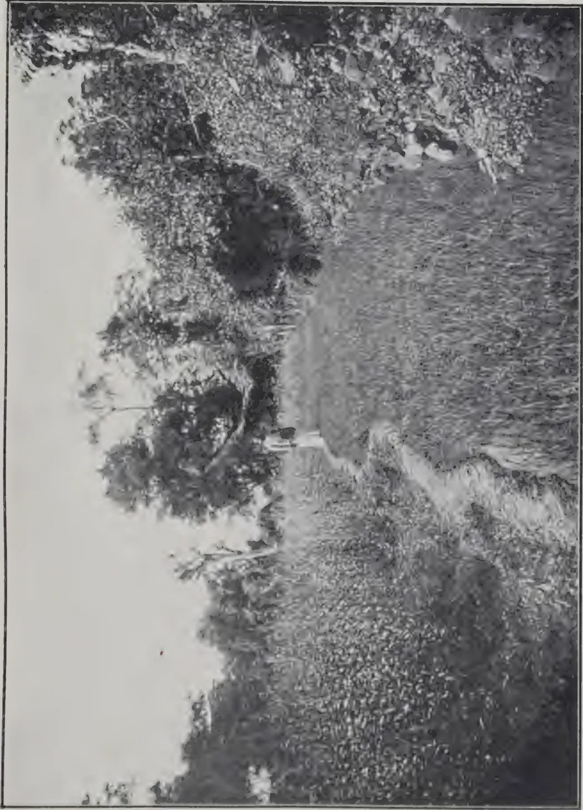
Photo by C. Ditcher
A SCHOOL GARDEN EXPERIMENT.
L. Sunn hemp grown for green manure. R. Paddy nursery-seedlings
----- to be transplanted on to land carrying sunn hemp.
Species.—The seed should be of the kind or species ordered—"true to name." The species may in general be readily determined, but variety can usually only be determined by growing the crop from the seed.
Weight.—The weight of seeds is important, the heaviest samples of a species usually being the best: hence the weight per 1,000 seeds is often determined.—JOURNAL OF THE BOARD OF AGRICULTURE.
THE GARDENERS' CHRONICLE, assuming that water supply is the limiting factor in crop production, considers the results of investigations by LEATHER in India, and BRIGGS and SHANTZ in America, on the subject of the water requirements of plants. These results are expressed in terms of the amount of water required to produce one part by weight of dry matter.
| Crop | Parts water by weight. |
|---|---|
| Grains | |
| Kursk Millet (Chaetochloa italica) | 187 |
| Proso or little Millet (Panicum miliaceum) | 208 |
| Sorghum varieties | 223-273 |
| Corn | 300 |
| Wheat | 513 |
| Barley | 534 |
| Buck Wheat | 578 |
| Oats | 597 |
| Spring Rye | 685 |
| Root Crops | |
| Sugar beet | 397 |
| Potatoes | 636 |
| Crucifers | |
| Cabbage | } 640 |
| Turnip | |
| Rape | |
| Legumes | |
| Peas | } 788 |
| Clovers | |
| Alfalfas | |
| Flax | 905. |
Diyatalawa Mills, Vauxhall Street, Slave Island.
Fowls Rs. 18, 15, 10.50, and Rs. 9 per dozen. Ducks Rs. 15, Geese Rs. 60, Turkey cocks Rs. 120, Turkey-hens Rs. 90 per dozen.
Guinea fowls Rs. 48, Pigeons Rs. 6, Partridges Rs. 6, per dozen.
Quails to order.
Pigs, Porkers, cts. 35 per lb. live weight, Sucklings Rs. 7.50, 5 and 3.
Eggs, fresh, 75 cts. per dozen.
Telephone 1087 and 285,
Telegrams: Wally, Colombo
Usual discount to the TRADE.
347[MAY, 1915.The Manager of the Government Civil Dairy, Bombay, says the INDIAN AGRICULTURAL WORLD, has issued an official report on his feeding experiments with Prickly Pear. The results are shortly that if properly prepared (the spines being destroyed by singeing over a stove fire) and mixed with 6 per cent. of its weight of cotton seeds it is a cheap and wholesome diet for bullocks.
With one stove enough food could be prepared for a pair of bullocks weighing 1450 to 1500 lb. at a cost of 6 cents for oil and 20 cents for cotton seed, or a total of 26 cents.
When fodder is scarce prickly pear should prove a valuable stand-by. No ill-effects were noticed during the feeding experiments, which occupied 6 months and are still going on.
Japan occupies an unique position for an island of its size, inasmuch as it traverses two zones, the temperate and the torrid, this being a result of its great length, which is no less than 3,000 miles.
In 1912 the percentage of farming householders was found to be 60. The tenant farmers amounted to 28 per cent., peasant farmers 32, while those who were both made up the balance.
The cultivated area occupies 15 per cent. of the total area, and half of this consists of paddy land, the value of which is two or three times as high as that of high land. Forty per cent. of this paddy land produces a double crop. After the rice is harvested and the water drained off various other crops such as wheat, barley, rape, green manure plants, etc., are raised according to the climate and other conditions.
On the high lands it is the rule to raise two crops, viz. a summer crop of soy beans, sweet potatoes, millet, hemp, tobacco, sugar cane, indigo or vegetables; and a winter crop of wheat, barley, rape or vegetables. In the neighbourhood of cities the cultivation of vegetables is extremely intensive with the production of three crops a year. In addition to the farm crops mentioned, the following are also grown on high lands, viz., tea, mulberry, paper-mulberry, fruits, etc. There are also large areas laid down in pasture or cultivated with fodder crops.
The industry of the people is such that they fill up the time available between the cultivation of land with subsidiary occupations, e.g. cattle and poultry breeding, sericulture, horticulture and handicrafts such as weaving, mat making, straw braiding, paper making, bamboowork, the preparation of starch, etc; while those who live near forests devote themselves to forestry, along rivers to fishing, and in the neighbourhood of large towns to job work. Of these sericulture has been found to be the most convenient and profitable and is undertaken by 30 per cent. of the farmers.
Agricultural administration is well organised in Japan, while ample provision is made for research and experimental work as well as for education. The co-operative movement is well established and is proving of great benefit to the farmers.
In Formosa, which is situated near the torrid zone, rice is the chief crop and next comes sugar-cane. Other crops grown are sweet potatoes, beans and peas, besides tea. Pig breeding is an important subsidiary industry.
MAY, 1915.]348The little work under review, though written in somewhat quaint English, is neatly got up and illustrated with a number of excellent photographs. Within a very small compass it gives the reader a clear idea of the progress made in agriculture and an insight into the life of that most indefatigable individual, the Japanese farmer.
* "Outlines of Agriculture in Japan"—published by the Bureau of Agriculture, Japan.
A. H. TËMPANY.
In accordance with instructions given by HIS EXCELLENCY THE GOVERNOR, experiments have been carried out to test the effect of kiln-drying locally grown corn.
On October 23, 1914, the following samples of corn were used for the purpose :—
The bags were put up in closed receptacles.
The conditions found, when the various experiments were opened (January 18), are summarised below.
No. 1. Locally grown kiln-dried maize. Quite cool and sweet; no signs of mould, no evidences of weevil attack, but a small amount of grain moth.
No. 2. Imported maize purchased from Bennett Bryson. Badly sweated and hot; quite a considerable growth of moulds; very heavily infested with weevils; no grain moth.
No. 3. Locally grown maize which had not been kiln-dried. Somewhat sweated and hot; some growth of moulds; very heavily infested with weevil and grain moth.
No. 4. Corn on the cob. Cool and not moulded to any appreciable extent, but very heavily infested with grain moth and weevil.
The results of this experiment are interesting and instructive, the point being that any insect or fungoid trouble which arose must have been due to conditions in the corn at the inception of the experiment, and could not be due to infection from outside sources.
One may say that the results obtained can be regarded as definitely conclusive, and show quite clearly that if due regard is paid to conditions of storage, locally grown kiln-dried grain can be kept in good condition and moderately free from insect attacks for considerable periods.—AGRICULTURAL NEWS.
L. A. BRUNTON.
The figs for this experiment were not all equally "full" or mature and in consequence ripened very irregularly, the most mature ripening in three to four days whilst the least mature took eleven days.
349[MAY, 1915.The first lot was put out to dry on September 13, drying being completed by the 21st, a period of nine days; there was, however, very little sun on the first day as it rained almost continuously, and only a half day's sun on the 17th.
The remainder were put out in two lots on September 18 and 19 respectively, and were ready for packing by the 25th. Two days during this period were rainy with very little sun. It is therefore evident that in favourable weather drying can be accomplished in from five to six days.
The procedure adopted was as follows : when the bunches were brought in from the field they were divided in hands, packed in a heap in the store-room on a bedding of banana leaves and covered with dry grass.
When ripe the figs were separated from the hands and peeled, care being taken to remove the "strings" below the thick skin; they were then placed in rows on the drying floor of the cacao house, exposed to the sun and turned continually during the day, at night they were heaped up and covered with dry banana leaves, but this was only done to the last lot from the third to the sixth day: it appears to assist the drying.
If a sufficient quantity of bananas were treated the cost should not, I think, exceed two to three shillings a hundred.—BULLETIN OF DEPARTMENT OF AGRICULTURE, TRINIDAD.
The following notes arranged after some experience in Western India should be of interest to readers.
The cultivated safflower plant (Carthamus tinctorius) belongs to the Natural Order Compositæ. It is an annual, one to two feet high, with spinose leaves and yellow-coloured flower heads. In Northern India and Gujerat where the flowers are collected for extraction of a dye, these are reddish in colour and the leaves are nearly spineless. This is probably due to intensive cultivation, as the land is liberally manured and the crop often irrigated. The seeds have a hard, white and polished outer covering which is unmistakable in the undecorticated cake. It is worthy of note that the seeds are used as a poultry feed.
It is perhaps the most drought-resistant of all valuable oilseed annuals. It should thrive in any region of an annual rainfall of less than fifty inches. As a crop it is grown in the cold weather, where the minimum temperatures approach 55°F. the seeds yield the best quality of oil. Cloudy weather is unfavourable, as also is rain at the time of flowering.
It is the most valuable oilseed crop in the Bombay Presidency because it can grow all over the Bombay Deccan where the monsoon season is very short.
Linseed becomes of importance only in those districts which enjoy a longer monsoon season.
It is only in Gujerat that it is grown sometimes as a pure crop. The land is fallowed during the monsoons, manured and well-prepared. With the approach of the cold weather in September-October the seed is broadcasted or it is sown with a drill 18 inches apart with a seed-rate of about 20 lb. to the acre. The top shoot, when the plant is nearing maturity, is nipped to encourage lateral branching. The flowers are picked in February for the dye they contain, the seeds when mature are also harvested.
MAY, 1915.]350In the Deccan which now retains the monopoly for the growth of the oilseed crop, this is always grown in rows alternating with the chief crop, which might be wheat, gram or the cold weather sorghums. The crop is never manured and is grown entirely as a dry crop. Very often, the safflower plants are sown as a hedge to protect the main crop from cattle, sheep and goats. The yield is in the proportion of about 1 : 100.
The oil is used for culinary purposes and is very frequently an adulterant of ghee or gingelly oil. The "sweet oil" of Bombay is a mixture of safflower, groundnut and gingelly oil.
When extracted by the cold-dry method in a country ghani about 25 per cent. of the oil is yielded by seeds.
The oil enters largely into the composition of Indian hair oils, notably "Macassar oil."
It possesses good "drying" properties and as such should be considered one of the very best substitutes for linseed oil. When soaked into leather it renders the material waterproof and durable. This fact is taken advantage of by many cultivators who thus lengthen the period of service of their leather mhots and ropes used for irrigation purposes.
The oil-cake is valuable both as a cattle feed and as manure. When pressed in the country ghani the hard outer covering has to be removed. This makes the cake a valuable cattle food. The presence of husk is injurious to cattle at the same time lessening its value as a concentrated feeding stuff. It is important to note this, because the cake sold as a by-product of power mills in Bombay contain an undue percentage of husk which the manufacturers have not hitherto cared to separate (this husk forms nearly 50 per cent. of the seed).
Even as a manure, it is desirable to have the decorticated cake as this possesses nearly 7 per cent. nitrogen, while the undecorticated cake contains about 4 per cent. nitrogen. The beneficial effects of this cake as a top-dressing to sugar cane is not explainable from its nitrogen content. The experiments conducted at the Mangri Experimental Station (Bombay Presidency) conclusively demonstrate the superiority of safflower cake to all other oil-cake manures.
As a concentrated food for cattle its value in Western India, apart from its cheapness is, in its remarkable keeping qualities. Unlike other cakes, it never gets mouldy or rancid and may be kept for an indefinite length of time provided it is stored in a dry condition.
The future of this oilseed in the Bombay Deccan is assured. Its place in dry farming in arid regions is well worth further investigation.
H. L. VAN BUUREN (JR.)
Fumigation with bisulphide of carbon is a satisfactory method of treating infested grain, though it is specially adapted to small quantities and is most successful when the temperature is not too low (50°F. and over). The grain should be put in a bin or air-tight receptacle, and the bisulphide poured into a shallow vessel or on to a folded cloth placed on the top of the grain. From 1 lb.--5 lb. of carbon bisulphide are recommended as the quantity necessary to treat 1,000 cubic feet of space, but it has been found in some cases that the smaller quantities have failed to kill all the beetles, and it is
351[MAY, 1915]therefore preferable to use the fumigant at the rate of 5 lb. per 1,000 cubic feet of space. The receptacle should be kept closed for 24—36 hours ; it should then be opened and the contents thoroughly aired. The grain will not retain either the poisonous qualities or the bad smell of the bisulphide, nor will its powers of germination be impaired. When fumigating the operator should avoid breathing the fumes, and on no account should a flame, a lighted pipe, cigarette, or even a live electric wire be brought near, since a violent explosion may be caused.
Carbon bisulphide has also been recommended for treating stores and mills. The amount originally suggested for this purpose was 1 lb. to every 1,000 cubic feet of space, but it is better to allow 5 lb, while it must also be noted that certain experiments in America have given rise to the statement that as much as 20 lb. per 1,000 cubic feet may be required. Fumigation at a low temperature is said to be unsatisfactory and this probably explains the wide variation in advice which has been given.
Fumigation is sometimes carried out with hydrocyanic acid gas instead of carbon bisulphide. In this case 1 oz. sodium cyanide ("130 per cent."), 2 oz. sulphuric acid, specific gravity 1.83, and 4 oz. water should be allowed for each 100 cubic feet of space. The gas is excessively poisonous and must be used with the greatest caution. Further notes on the subject will be found in the leaflet No. 188, but fumigation at low temperatures should be avoided.
Owing to difficulties in using carbon bisulphide or hydrocyanic acid gas in mills and granaries, treatment by heat is often preferred in America. A temperature of 118°-120°F. is said to be sufficient to kill the weevils, and this temperature can often be obtained in summer by means of the heating apparatus already in the mill. It has been found that a moist atmosphere, caused by leaks in steam pipes, makes it more difficult to obtain the necessary temperature. The time required for the treatment naturally varies with the contents and nature of the building and the sources of heat available. Periods of 16-24 hours seem to be usual in America, though special radiators are sometimes installed for the purpose of obtaining great heat.
For cargoes in ships, thorough ventilation should be practised, this keeping down the temperature and ensuring dryness of the grain.—JOURNAL OF THE BOARD OF AGRICULTURE.
In one of the many little garden laboratories that have sprung up experiments carried on for two years on radium and radium water as an alleged miracle worker in the garden and farm are reaching a triumphant conclusion this spring.
Seeing is believing. In a South of London suburb both in the house and in the garden are to be seen side by side groups of flower pots and pans sown with mustard seed. Some of these pots have been grown in a soil mixed with radium refuse, some have been watered with radium water, and some grown in ordinary soil. To the eye the results are quite conclusive.
In some of the radium pots every single seed has germinated and grown into a lusty sapling, and the older the plants the more remarkable is their superiority to those that have had no radium treatment. The superiority is in some cases—notably with such root plants as radishes—100 per cent.
Some of our biggest seedsmen are making similar experiments and find the results very striking.—DAILY MAIL.
MAY 1915.]352TO THE EDITOR OF THE TROPICAL AGRICULTURIST.
Dear Sir,
I should be very grateful if you or any readers of your magazine could kindly advise me on the subject of keeping rice.
We have to keep supplies in the jungle for our camps sufficient for several months, as during the rains it is impossible to get it transported by bullocks—the usual way. Paddy will keep quiet well, but the cost of transport is much greater and we are unable to get it pounded (husked) in the jungle.
We keep the rice in large receptacles made of bamboo, plastered round the inside with a mixture of clay and cow dung. After about two months it gets full of insects and goes musty. I have, on several occasions, had all the rice taken out and put in the sun for a few hours, but it does not seem to do it much good.
Any advice on the subject, as to proper receptacles, or treatment to keep away the insects and prevent the rice from going musty, will be most thankfully received.
Yours faithfully,
JAS. F. KEDDIE.
Siam, 31st March, 1915.
Again the unusually wet weather has interfered with the harvesting of this crop, and in consequence much of the grain of the white varieties is spotted with fungus. Neither does it thresh out as clean as it would if the weather had been dry.
But the red variety is not affected by the damp and has yielded well, 17 bushels (of 42 lb.) per acre, but with closer planting and better cultivation this would be greatly increased. The grain is large and sweet but will not give a white flour when ground. The birds do not seem to attack it in the same way as they do the white, probably on account of its colour. As it appears to be immune from wet weather, mould and smut, it should prove a valuable grain for the rainy districts. The seed is being carefully selected for re-sowing in order to obtain a quantity for distribution to cultivators next season.
Stem borer made its appearance but not in such numbers as to do much damage, but it is important that as soon as it makes its appearance (easily recognised by the grain-head wilting and the stalk breaking in half) all affected plants should be pulled up and burnt, and after harvesting all stalks should be burnt.
In the experiments for treating the grain against smut, which made its appearance in the September crop, the following is the result:—
acres were divided into acres and the seed from the same bulk sown broadcast; some were treated with Bordeaux mixture, blue-stone alone, hot-water, Formalin, and some untreated. All plots germinated equally save the formalin, which completely failed. No smut appeared in any of the grain-heads, the untreated being also free. The experiment will be again repeated as it is a most important one.
In another experiment grain soaked for 24 hours and sown sprouting in rows 1 foot apart, gave a much better result than unsprouted grain sown broadcast. This experiment will also be repeated.—PROGRESS REPORT, PERADENIYA EXPERIMENT STATION.
D. S. CORLETT.
353[MAY, 1915.The two chief products obtained from the West African oil palm are palm oil and palm kernels. The former is obtained from the pericarp of the fruit. The quantities and values of the exports of palm kernels in 1912 from each of the chief producing countries in West Africa are shown in the following table :—
| Quantities tons. |
Values £. |
|||
|---|---|---|---|---|
| Gambia | ... | 445 | ... | 6,518 |
| Gold Coast | ... | 14,629 | ... | 205,365 |
| Nigeria | ... | 184,624 | ... | 2,797,411 |
| Sierra Leone | ... | 50,751 | ... | 793,178 |
| Dahomey | ... | 36,708 | ... | 535,937 |
| Gaboon | ... | 354 | ... | 4,671 |
| French Guinea | ... | 5,054 | ... | 41,079 |
| Ivory Coast | ... | 6,692 | ... | 70,710 |
| Senegal | ... | 1,736 | ... | 28,221 |
| Belgian Congo | ... | — | ... | 110,835 |
| Kamerum | ... | 15,742 | ... | 220,300 |
| Togoland | ... | 11,456 | ... | 168,978 |
Almost all the palm kernels exported from the British possessions in West Africa are sent to Hamburg. In 1913, 241,961 tons of these kernels, worth £5,233,250, were landed at Hamburg. They are used as a source of oil ; their price during 1914 was about £18 per ton. The kernels yield from 46 to 53 per cent. of oil, which is extracted either by pressure or by solvents. It is used for the preparation of edible fats and in the industries : its price in the United Kingdom is from £36 5s. to £36 15s. per ton.
The cake seems to be very suitable for young pigs and for milch cows. For feeding purposes some prefer the cake obtained by pressure, as in that extracted by solvents all the oil is taken out. The following figures give the percentage composition of the cake according to the method of preparation :—
| Water. | Crude Protein. | Fat. | Carbo hydrates. | Crude Fibre. | Ash. | Value. | |
|---|---|---|---|---|---|---|---|
| Expressed Cake | 9.7 | 17.7 | 8.6 | 36.2 | 23.8 | 4.0 | £6 8s. to £6 12s. |
| Extracted Cake | 10.9 | 18.7 | 1.6 | 39.1 | 25.4 | 4.3 | per ton. |
In 1912, 133,816 metric tons of palm kernel meal or cake were made in Germany, of which 120,000 m. tons, were consumed in the country.—
MONTHLY BULLETIN. This image is a scan of a blank page. The background is a uniform light beige or off-white color. There are several small, dark specks scattered across the surface, which appear to be dust or scanning artifacts. No text, lines, or other graphical elements are present.GOVERNMENT TOBACCO TRIAL GROUND, JAFFNA.
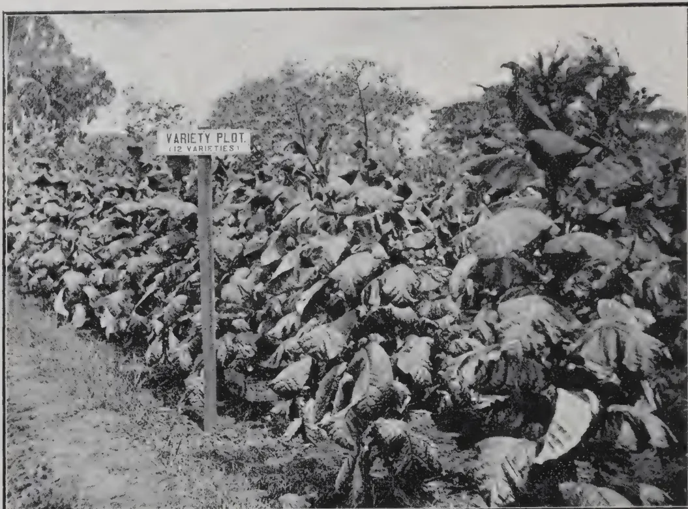
One of the variety plots.
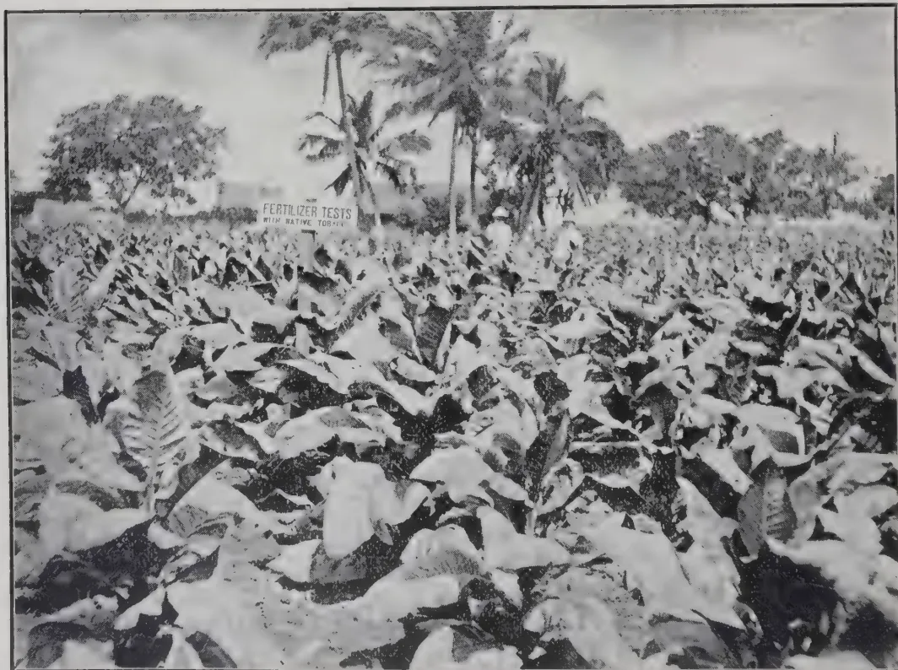
Photos by H. F. Macmillan.
Native Tobacco under manurial experiments.
VOL. XLIV.
COLOMBO, JUNE, 1915.
No. 6.
At the meeting of the Committee of Agricultural Experiments at Peradeniya on May 13th and of the Ceylon Agricultural Society at Kandy on May 25th, samples of tobacco grown and prepared at the Government Trial Ground, Jaffna, by MR. SCHERFFIUS, the Government Tobacco Expert, were exhibited for the first time. They comprise types of all the five general classes of tobacco, namely—cigarette, pipe, chewing, cigar wrapper and cigar filler, so far successfully grown in one small plantation; a most exceptional result to have been achieved due, MR. SCHERFFIUS considers, to the particularly suitable soil and climate of the Peninsula. Special interest attaches to them, as leaf of like quality has probably never before been grown in Ceylon. They demonstrate that leaf suitable for the European market can probably be grown in Ceylon and if so they may prove the beginning of a new industry in the island. MR. SCHERFFIUS, who comes from Lexington, Kentucky, the centre of the White Burley district where a hundred million pounds of it are produced annually, has expressed the opinion that the White Burley leaf just produced in Jaffna is equal in texture to and better in colour than the average produced in its original home in America. This is all the more significant when it is remembered that it is only in a very limited area in the States that White Burley can be successfully grown. This pipe and chewing type is very easily cured, requiring no artificial heat or fermentation, but it will not stand heavy manuring. We must
355[JUNE, 1915.await reports from England before being able to speak as to flavour. We can perhaps grow tobacco through a range of 4,000 feet elevation, so we could probably produce several of the market grades enumerated above.
The tobacco industry of Nyasaland as at present established for exporting tobacco to England dates from 1906, in which year 199,020 lb. valued at £3,317, the product of 421 acres, was exported. In the year 1912-13, 2,262,545 lb. were exported, the product of 7,411 acres, the area being increased the following year to 10,496 acres. The crop is mainly flue-cured Virginian bright leaf; the greater part being produced in the district of Blantyre which has an elevation of about 3,000 feet and a rainfall approximately of between 35 and 45 inches. The experience of Nyasaland is encouraging and it is worth while to examine how the industry has been so rapidly built up.
Tobacco growing is a highly specialised industry requiring for its success experienced men. Disappointment and loss will certainly be encountered if amateur efforts are solely relied upon. But every planter cannot employ his own expert; some form of combination will therefore be necessary if the industry is to prosper in Ceylon. In Nyasaland the industry owes its success very largely to the Imperial Tobacco Company, Limited, whose specialists are available for giving advice to planters as to curing and bulking; and who purchase leaf from them for cash, packing it in their own factory. As the industry grew experienced planters began to pack their own crops and export them to London themselves, but the Company still purchase half the crop of the Protectorate. Such a Company should have land of its own to grow sufficient tobacco to keep its staff and factory going should neighbouring planters fail to bring in sufficient leaf; conditions which correspond to some extent to those prevailing in the tea industry of Ceylon, wherein large estates purchase green leaf from small neighbours.
A tendency was observed in Nyasaland for planters to put larger areas under crop than could be carefully cured, and it was considered that 100 to 150 acres was as much as one planter could undertake, unless he happened to be a man of ripe
GOVERNMENT TOBACCO TRIAL GROUND, JAFFNA
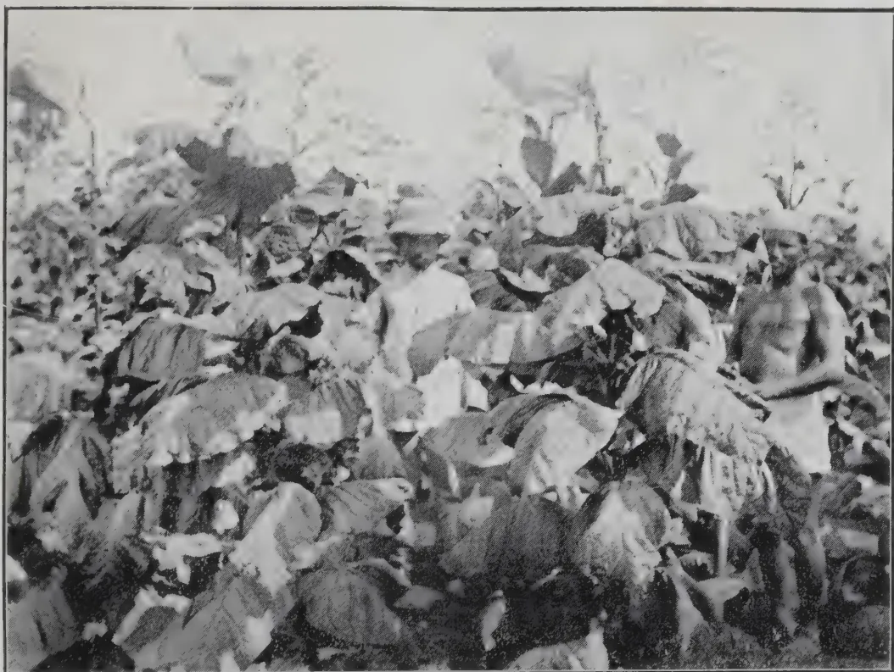
Cigar wrapper leaf. Note plants not topped, and selected seed heads enclosed in paper bags
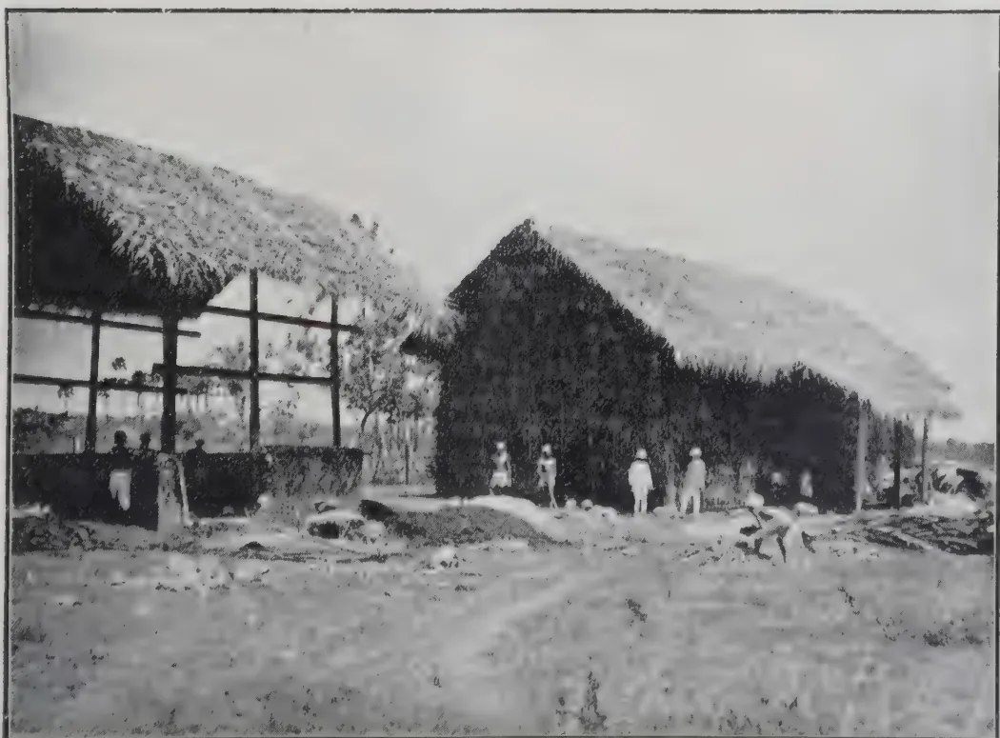
Photos by H. F. Macmillan
Air-curing shed on right: flue-curing shed in course of construction on left
This image is a scan of a blank page. The background is a uniform light beige or off-white color. There are several small, dark specks scattered across the surface, which appear to be dust or scanning artifacts. No text, lines, or other graphical elements are present. JUNE, 1915.]356experience. Nothing is gained but only loss incurred if more is attempted than can be properly handled and low grade tobacco, on which little profit can be made, produced in consequence.
In South Africa, where a tobacco industry is also being established, warehouses for fermenting, classifying and baling are in some cases controlled by Co-operative Credit Societies who can obtain Loans from the Land Bank. In this country there is no Land Bank, but the Ceylon Government has made provision for advancing loans to Co-operative Credit Societies registered under the Ordinance. In one tobacco warehouse in South Africa conducted on the co-operative system the gain in value of tobacco handled in 1912 was sufficient to pay for all the expenses of the business and leave a profit of £6,000 for the Society. A very important part of the warehouse business is selling. Buyers treating with a large warehouse properly conducted can rely upon deliveries being according to contract and the salesman being in touch with market requirements can advise planters as to the grades most in demand.
R. N. L.
Soya Bean Cake.—Nutritive value, 1 : 1.1. Cost per food unit, 1s. 4½d. The soya bean and its products are highly esteemed in the East for both man and beast. Owing to their comparatively recent introduction to this country, their practical value is not fully known. The cake is rich in protein, but possesses distinctly laxative not to say scouring, properties. It should, therefore, be fed with great discretion, and it is suggested that it should never exceed one-fourth of the concentrated ration. At present prices it is a very cheap foodstuff, and should form an efficient substitute for part of the linseed cake in a ration. It can be mixed without danger with maize gluten feeds and a combination of bean and rice meal. It is usually fed in combination with common cotton cake. Further information is given in Special Leaflet No. 8.
Coconut Cake.—Nutritive ratio, 1 : 3.8. Price per food unit, 1s. 5½d. This cake is of comparatively recent introduction into this country. Per food unit it is a comparatively cheap food, and is esteemed on the Continent for dairy feeding, and may be fed in quantities up to 3 to 4 lb. a day, being dampened before use. At present prices it might be used as a substitute for more expensive foods in the concentrated rations for dairy cows, and should certainly be given further trial for feeding for meat production. Further information is given in Special Leaflets Nos. 8 and 20.
Palm-nut Kernel Cake.—Nutritive ratio, 1 : 4. Price per food unit, 1s. 7d.
This food is dearer per unit on some markets than coconut cake. It is very similar to coconut cake, and may be substituted for it.—BOARD OF AGRICULTURE JOURNAL.
357[JUNE, 1915.O. W. BARRETT.
In reply to a question by MR. WERNHAM as to the yield per acre of coconuts and the cost of planting, MR. BARRETT said : In my opinion, fifty good selected trees per acre is the optimum, as we call it. If you put on forty trees per acre, you may get a larger tree, and a few more nuts off each ; but you must then remember that you will be ten trees short per acre ; and if you get 100 or 150 nuts per tree that is a pretty good production. If you put 75 palms per acre, it is certainly too much. So although some are planting the trees only 30 or 33 feet apart, I think that, considering everything, 50 feet is the proper distance in ordinary more or less sloping, but not quite level, soil. Coconuts should not be planted on quite level soil. It is impossible to say what the steady yield per acre will be until you know the soil thoroughly, and how the trees are behaving. Probably 100 nuts per tree, or about 5,000 per year per acre, is not going very far out of the way for a plantation which is neither best nor worst, but is moderately clean. We get 250 to 300 nuts per tree in parts where the soil is exceptionally rich and well watered. But the general average in one part is below 30, probably not more than 20 nuts per tree. But even that is not an estimate for all places, because I have shown you photographs of over-planted areas, where half the trees will be without any nuts at all, and have been in that condition, perhaps, for years. Even on the Penal Constitution Farm there are trees nine and ten years old which have not shown any sign of fruiting yet. This is often due to bad drainage and to scum and mess on the surface of the soil. But generally speaking, on a moderately well cultivated plantation, 100 nuts is not too much. It takes 250 to 325 nuts to make a picul, and there are 16 piculs to the ton. Some claim, with very large nuts, 200 to a picul. But during one year, when the soil had to do without rain, the nuts were so small that some of the factories said it took 500 of the nuts to make a picul.—PROCEEDINGS OF THE THIRD INTERNATIONAL CONGRESS OF TROPICAL AGRICULTURE.
THE EDITOR OF THE TROPICAL AGRICULTURIST.
Dear Sir,
In remarking on SIMMONDS' directions for the selection of coconuts for seed you say "We are not aware how this quality of 'full-large eyes' could be detected in seed nuts which are always planted in husk." (Vide T. A. for May 1915, p. 284).
This could easily be detected by husking one nut of each of the trees from which seed nuts are proposed to be taken. If the eyes of a nut of any particular tree be "full," and "large" the rest of its nuts will invariably be of the same nature.
JUNE, 1915.]358A similar test, viz., husking and opening at least one nut from each tree will be found necessary to follow the directions of the Board of Agriculture of British Guiana too, for the "thickness of the kernel" of a nut cannot properly be ascertained without having it opened.
Yours faithfully,
JAMES ALWIS.
Lunawa, Moratuwa,
May, 26, 1915.
The value of the exports of coconut products from the Madras Presidency, which is the only coconut producing part of India worth considering, is, according to the INDIAN TRADE JOURNAL, £1,000,000, of which £650,000 goes to Germany. This represents an output of about million cwt. of copra, the equivalent of approximately 600 million nuts. An estimate of the total output of coconut products in South India (calculated as copra) is roughly 115,000 tons.
MR. E. H. S. FLOOD, Canadian Trade Commissioner for the West Indies, in a recent report to the Department of Trade and Commerce, referred to the new factory erected by the Trinidad Produce Co., Ltd., for the manufacture of cassava starch. This factory is capable of turning out annually 2,000 tons. In recent years increased attention has been devoted to this industry, and, in all, there are now three factories preparing cassava starch in Trinidad, one of which—the Palmiste—has recently come into operation and is equipped to turn out each year 10,000 tons. The difficulty at present is to obtain a sufficient supply of green cassava. There is apparently a large expansion of cassava-growing in these colonies. Each island has heretofore produced enough to satisfy its local demand, but as the soil and climate throughout the islands are well suited to the cultivation of this product, a general feeling prevails that a larger quantity should be grown, and an export trade built up. In Jamaica, St. Vincent, Barbados, and St. Lucia, a considerable quantity is grown for home use. St. Vincent is extending its cultivation and is looking to Canada for a market. Its present export of this starch amounts to £1,287. Jamaica is also exporting a small quantity valued at £1,049. Among the products recommended by the Agricultural Society in St. Lucia for extension is this tuber, and the Society is of opinion that an export trade could be created. The fact that starch is obtained at a very low price from the sago palm, which grows wild in the forests of the East, has prevented the West Indies from competing. In these eastern forests this palm grows in enormous quantities, but as the forest areas are being depleted and the land taken into cultivation, the price of sago starch is advancing and this now gives an opportunity for the West Indies. As an article of food, cassava has hitherto received less attention in the north than it deserves. Among the natives of Brazil and in the French dependencies, it takes to a large extent the place of wheat. During the next few years it is expected that a much larger supply will be available from the British West Indies.—WEST INDIA COMMITTEE CIRCULAR (Ap. 6).
359[JUNE, 1915.Touching the question of plantation versus Para rubber, a suggestion of considerable interest to the trade has recently been broached. It is pointed out that the user of rubber goods has no guarantee whatever as to the quantity of crude rubber, if any, contained in the articles he purchases. In connection with many other manufactures, definite guarantees are given, and it is contended, with some show of reason, that in these days of reclaim, rubber substitutes and what not, the purchaser of rubber goods is entitled to know a little more about the article he is buying. In view of the British public's large financial interest in the plantation industry, there is no doubt that, so far as this country is concerned, rubber goods endorsed with the legend "Made from pure plantation rubber" would command a better sale than similar goods unmarked. Assuming also that up to a certain point the more virgin rubber used in its manufacture the better the article, it is urged that manufacturers might go further and give the actual percentage of rubber contained in the goods. From the standpoint of plantation rubber producers, at least, the suggestion has much to recommend it. When prices of fine hard and plantation are on a par the user of the former is in reality paying approximately 25 per cent. more for his raw material, making allowance for loss in washing, than the buyer of plantation rubber. It is obvious, therefore, that the former could not compete with the latter on equal terms if the respective percentages of raw rubber in the manufactured goods were disclosed. I am convinced that there is a good deal in this suggestion, and that the trader adopting it would ultimately be well repaid for his enterprise. In the first instance, however, it would be necessary to educate the public by judicious advertising, explaining the relationship between the percentage of pure rubber used and the quality of the goods.—INDIA RUBBER WORLD.
We have been taken to task for our remarks in a recent issue on the comparative values of smoked and unsmoked plantation rubber. We have repeatedly pointed out that, at best, plantation rubber is only superficially smoked, and that it shows a considerable loss on washing and also a high resin content. Nevertheless, we are quite aware of the advantages of having rubber smoked, especially where it is necessary to store the produce for some time. Furthermore, we freely admit that there must be something more substantial behind the market for "ribbed smoked sheet" than mere fancy, and that many manufacturers prefer sheet in the smoked condition. It is, however, advisable to keep all points of view before us. We were recently informed by MR. W. A. WILLIAMS, of the North British Rubber Co., that
JUNE, 1915.]360"after repeated trials I have found that unsmoked biscuit or sheet gives the best all-round results, and is to be recommended for the reasons that for strength and uniformity it is quite as good as smoked sheet and undoubtedly superior to creped or blocked rubbers."
MR. WILLIAMS is not alone in the view he holds. MR. STANLEY MORRISON, of the Leyland and Birmingham Rubber Company, has publicly stated: "As to smoking we really do not mind much." The question, therefore, naturally arises whether the views of the particular parties mentioned represent the opinions of the manufacturing industry. It is quite possible that each individual is apt to base his convictions on his personal experience, which in turn is largely determined by the nature of the goods made by his own firm.
The advantages of smoked over unsmoked sheet accrue from quite a superficial treatment, and it may transpire that where manufacturers do not store but immediately use all the smoked sheet they buy, the improved keeping qualities of smoked rubber are of no real value. Any small advantage due to manufacturers who thus deal with their smoked sheets may be offset by the increased loss on washing and resin content noticeable in this class of rubber.
There cannot, we think, be any doubt as to the advantages of smoked rubber to the growers. Rubber so treated "travels" better, a fact which must not be lost sight of when produce has to be stored in ships and wharves for several months in tightly-bound wood cases. The absence of mould and freedom from tackiness of properly prepared smoked sheets would alone justify the process from the growers' point of view.—INDIA RUBBER JOURNAL.
A member who is planting in Travancore writes (23rd March) an interesting account of his experience in growing catch crops with rubber:—"I pass over the returns from cereals as they are always more or less speculative on account of their dependence on just the right amount of rain, which is by no means certain. Groundnut only gave a yield of 580 lb. per acre, which was disappointing. The reason for this was evidently that the soil was deficient in lime, as an analysis indicated. The only product that proved a distinct success was Ginger. This gave 3,400 lb. per acre. In drying this for the London market, 100 lb. raw roots gave 20 to 25 lb. dry, costing Rs. 1½ for the process. The latest quotation is 25s. per cwt., which is approximately Rs. 100 per acre. The above yield was obtained from planting on ground previously dug up but not manured, so the figures may be fairly relied upon. The growth of the rubber in this area was not affected although the ginger was planted right up to its stem. Robusta Coffee was also a distinct success. I planted this out last June and some of the best plants have already blossomed, which was beyond my expectations, and for this reason ought to prove a most suitable product as a catch crop if not kept on too long. As I have planted the rubber 30 ft. apart between the rows, one row of coffee in the middle would not be injurious to the rubber, and the yield from the second year, or at most the third, ought to be more than sufficient to keep the estate going till the rubber came into bearing."—C. A. S. PROGRESS REPORT.
361[JUNE, 1915.According to an acknowledged authority on the rubber market, the world's production of the commodity during the present year is not likely to exceed that of 1914. Last year's figures were approximately as follows:
Plantation, 71,977 tons; Brazil, 37,000 tons; rest, 12,000 tons; total 120,977 tons. Percentage of increase 11.5 per cent.
For 1915 the estimate in question is:
Plantation, 85,000 tons; Brazil, 30,000 tons; rest, 5,000 tons; total 120,000 tons. Percentage of decrease, .08 per cent.
There are, however, so many elements of uncertainty in connection with the production of crude rubber that an estimate, however carefully compiled, may well prove to be wide of the mark by as much as 15,000 tons. For example, in view of the enormous area planted with rubber in the Middle East during 1910, and therefore now coming into bearing, there is bound to be a very big increase in the plantation outturn this year. The above authority gives the surplus as rather more than 13,000 tons, but it may quite easily run into 20,000 tons or more.
Then again, there is the unknown factor, Brazil. Notwithstanding an extraordinarily fluctuating market, South America during the past eight years has been a wonderfully uniform producer. Neither the high prices of the boom period nor the subsequent slump seems to have had much influence upon the outturn of Brazil. For 1910, when prices were at the high water mark, the total production of Para rubber was 40,800 tons, and in 1913, when the price pendulum swung to the opposite extreme, the total crop was 39,370 tons. Brazil is the most disconcerting and illogical factor in the crude rubber position, and it is just as likely to produce more, in a time of adverse market conditions, as less. One would suppose that if anything were calculated to upset the Amazonian industry it is the present European conflagration. It might reduce the production by as much as 50 per cent., but the odds are that it will not. The above estimate indicates a falling off of 7,000 tons from this source, but while the crop is just as likely to be equal to that of 1914, nobody would be surprised if it were 10,000 tons less.
As to the production of the rest of the world, there is bound to be a substantial reduction, and that is all one can say about it. However, it may be generally conceded that although individual items in the foregoing estimate may prove wide of the mark, the total, much on a par with that of 1914, is most in accordance with the probabilities.—INDIA RUBBER WORLD.
In pickling grain, says the QUEENSLAND AGRICULTURAL JOURNAL, one of two methods may be followed: (1) soak for two hours in 1 lb. formalin (40 per cent. formaldehyde solution) dissolved in 50 gallons water and then dry. (2) Put grain in a sack and dip for 3 minutes in a solution of 1 lb. bluestone to 5 gallons water. After draining put grain in another sack and dip for a minute or two in solution of 2 lb. lime to 10 gallons water. Drain and dry before bagging, using wooden receptacles for the dips.
JUNE, 1915.]362PROFESSOR PERROT.
In the notes published by me on the question of the fermentation of cocoa, I have considered this fermentation from two points of view: (1) That of simplifying if possible the preparation by rendering it more methodical and more rigorously scientific without increasing the net cost of production; (2) that of supplying to the consuming industry a regular product always of uniform quality.
The treatment of the pulp by carbonate of potash shows that this pulp can be more easily removed than would appear believable, for it must not be forgotten that the method of fermentation as at present practised is almost as primitive as in the time of the ancient Mexicans.
From researches which I have been able to make, it appears that this fermentation is not necessary in order to obtain an industrial product. In fact, if a current of steam at low pressure is led into a suitable enclosed space in which fresh cocoa beans have been placed, and the beans are left in contact with the steam, the beans become sterilized—stabilized, as we say—and are thereafter incapable of spontaneously undergoing any chemical change.
By stabilization in steam under pressure for ten minutes beans are obtained which, after being washed and brushed to remove the pulp, are dried and will then keep in good preservation without change, whilst at the same time retaining their fine natural violet colour.
There is good reason for asking if beans thus treated could be used in the chocolate industry, for it has been claimed that the flavour of the bean is obtained by fermentation.
I have therefore had 200 kilograms of cocoa sterilized at the Ivory Coast and have submitted it through one of the largest French chocolate firms to industrial treatment.
To the astonishment of those who were entrusted with the roasting, the cocoa became fragrant and was in no respect inferior to the products obtained by fermentation in the same region.
Here, therefore, is a series of experiments, showing that the fermentation of the cocoa seems to be of no advantage for obtaining an excellent product for manufacturing purposes, and I believe that I may say that sterilization would have the double advantage of not raising the net cost of production, whilst it would also assure to manufacturers a remarkable regularity in the production of each plantation.
PROCEEDINGS OF THE THIRD INTERNATIONAL CONGRESS OF TROPICAL AGRICULTURE.
363[JUNE, 1915.S. SAWAMURA.
The leaves contain an abundance of oxidising enzymes which produce a black colour during the fermentation. The destruction of these oxidising enzymes by steaming results in a green tea.
Among other enzymes in tea leaves is diastase, which may be extracted in 40 per cent. alcohol and precipitated in ether alcohol.
By subjecting various samples of tea to steam for different periods and testing for oxydase, the writer found that the oxydase loses its activity when steamed for 30 seconds, but retain its diastatic power. It is therefore very probable that enzymatic action takes place in the first stage of rolling tea leaves and that the production of a fine aroma is due to this.
The object of rolling the leaves in the manufacture of green tea has not yet been determined. It may be to give the tea a fine shape, or to press out the juice to accelerate drying, or to break the cells in order to increase the solubility.
Samples of green tea were prepared with and without rolling and the qualities of their infusions compared.
The infusions of the rolled tea was of a deeper colour, and had a stronger flavour and better taste than that of the unrolled tea.
This difference was also apparent in the amounts of soluble matter in the infusions, which were as follows :—
| Percentages of the total amounts of each constituent in the original samples. | ||
|---|---|---|
| Unrolled (Tencha.) | Rolled (Gyokuro.) | |
| Dry matter. | ... 23.021 ... | 31.656 |
| Nitrogen | ... 31.869 ... | 34.427 |
| Tannin | ... 8.216 ... | 34.374 |
| Thein | ... 63.559 ... | 79.453 |
| Ash | ... 64.083 ... | 63.708 |
These differences in the amounts of soluble matter in the infusions of rolled and unrolled tea disappear when the samples are powdered before extraction. Hence it is concluded that rolling has the effect of increasing easily soluble matter by crushing the cells and pressing out the juice so that it dries on the surface of the leaves.
Refiring improves the flavour and colour of both green and black tea. Experiments were made with samples of tea fired at different temperatures for different periods. It was found that the optimum condition for firing green tea is a temperature of 70° C. for one hour and for black tea a temperature of 80° C. Higher temperatures spoil both flavour and colour. The solubility increases slightly at moderate temperatures, but at higher temperatures the total soluble substance and tannin decrease remarkably. The tannin is destroyed by oxidation and a decrease of thein takes place owing to volatilisation.—MONTHLY BULLETIN.
JUNE, 1915.]364NICHOLAS SACHOULIS.
Six weeks after topping, the crop is generally ready for harvesting. Tobacco is ripe when grown up, and the leaf shows brown spots and a rough surface. The leaf is very brittle, breaking readily when doubled up.
Now begin the most particular operations of the whole process of making tobacco, for it is now that you must fix in the leaf the desirable qualities that go to make a valuable product, such as elasticity of leaf, flavour, colour, etc. Cut your tobacco in the afternoon, but not after heavy rain, nor if dew is on the plants, neither when the rays of the sun are very hot. Rain washes the gum off the tobacco, therefore wait a few days for it to gather gum again.
In hanging tobacco on the stick, it should not be put closer than three to five inches apart, according to the size of the plant.
Remarks.—If you desire your tobacco to have a good colour, bright, golden red and mottled, hang your sticks in the shed very close, from four to six days, till leaf and stem have become perfectly limber and yellow.
Then remove your sticks on the scaffold for a week or two, hang them from 6 to 10 in. apart. When the colour is good enough and the leaf getting dry—i.e., when the sap is leaving it—the poles are transferred to the shed and placed in position, there to hang till nearly all the sap has left it. In sun-curing the leaf should never be allowed to get wet either by rain or dew.
The leaf at the time of harvesting contains a large amount of water, but it is evident that the curing is something more than drying, for a leaf dried out rapidly by heat has few of the desirable properties of a well-cured leaf. Again, a leaf dried under the right conditions in "sun-curing" weighs much less than would the same leaf if dried out quickly. The most important fact to keep in mind is that the leaf must be kept alive till the first stage of the curing is completed, till yellowing begins, and this brings us to the question of the most favourable condition for curing.
The primary object of flue-curing is to produce bright colour in the leaf, but on the drying winds of South Queensland it is becoming evident that heat has a value in the curing of dark tobacco, if for no other reason than to remove the greenness so common in much of the air-cured leaf.
Turkish tobaccos have been commonly sun-cured, but experiments conducted during the past season indicate that these tobaccos can also be cured in the flue barn. By this method the loss due to unseasonable weather is avoided, the colour is brighter and more even, and, as far as can be judged, there is no loss in flavour or aroma. When harvesting tobacco for flue-curing we prefer to prime the leaves that are fully ripe. The tobacco is then carried in baskets to the barn, where it is tied on sticks with wire or string. The barn
365[JUNE, 1915.should be filled as rapidly as possible, for if a portion of the leaves becomes wilted while the remainder are still fresh, it is almost impossible to cure a barn of even bright colour. As soon as the barn is full, start a slow fire in the furnace, and slowly bring the barn up to a temperature of 90° Fahr. A hot fire at the start will ruin much of the tobacco in a few minutes, therefore the temperature of 90° should be maintained until the leaf has yellowed. When the leaf is ripe and sappy, and has been grown on a sandy soil, this will not be difficult, but where the leaf has made a slow growth and is leathery, it often refuses to colour. In the latter case increase the humidity of the room by sprinkling water on the flues until the air feels moist. The yellowing stage will require from twelve to twenty-four hours, and so long as the temperature does not run over 100°, the fire will not require much attention. This, it must be remembered, is for tobacco that will not yellow, and does not apply to bright colour.
The second stage of flue-curing is that of fixing the colour at 100° in four hours.
After the temperature has been slowly increasing for from fifteen to twenty hours, and the leaf has lost the greater portion of its moisture, it will begin to dry at the tips and around the edges. Where this drying is general throughout the barn, the second stage may be regarded as at an end. The temperature at this point, raised 2 degrees every hour, should be about 120° Fahr.
The third stage simply consists of the rapid drying out of the leaf, and is commonly called the "killing" of the leaf. The temperature is increased from 120° to 135° or 140° Fahr., at the rate of 4 or 5 degrees an hour, and is held at the higher temperature until the midrib is perfectly dry and brittle. During this stage the ventilators are partially open, but inasmuch as less moisture is escaping than during the sweating stage, and because of the great draught due to the heat, they are not fully open. Wide-open ventilators mean a large consumption of fuel. If the tobacco has not been primed, but the whole plant hung, the temperature is then increased to 160° or 175°, and continued until the stalk is dry. No moisture must be left in either the mid-ribs or stalk, as this moisture will in time run back into the leaf and result in red streaks.
As soon as the drying is finished and the fires are drawn, the leaf may be rendered pliable by running steam into the room, after which it is taken down and removed to the packing house, where it may be bulked on the curing sticks and handled at a later date.
Turkish tobacco, being light and thin, changes much more rapidly than Virginia leaf (pipe tobacco), and all the stages are of shorter duration. The same high temperatures are not required, and 120° is the highest temperature that we care to use for this type of leaf. The leaf dries rapidly, and the ventilators need never be fully open. The beginner usually makes the mistake of attempting too much. A year or two is required before sufficient experience is acquired to justify the planting of large fields.
The cost of flue-curing barns need not be excessive if the farmer or his assistant does the work, but a builder or contractor expects to make a good profit, and the tenders are often enough to frighten a man out of the tobacco business.
It may interest growers to know that the barn should measure 25 ft. by 30 ft. and 20 ft. high. The cost would be from £30 to £40, and such a barn is sufficiently large for an average crop of 10 acres.
Good tobacco can only be made by good curing, and good curing can come only by experience and close observation.—QUEENSLAND AGRICULTURAL JOURNAL.
JUNE, 1915.]3661. In selecting plants for seed it is well to select those standing a good distance apart from one another to avoid seed resulting from cross-fertilisation by the aid of air currents or insects which travel from flower to flower conveying pollen. Care should be exercised in selecting the plants, and only those having the greatest number of good qualities should be chosen.
2. The seed should be well matured, and all light and faulty seed removed by winnowing in a light breeze.
3. Nursery beds should be carefully prepared in a rich light loamy soil, and well enriched with manures to give a quick, healthy growth to the seedlings.
4. The seed should be mixed with wood ashes or finely pulverised earth to give sufficient bulk so that the seed may be evenly distributed over the nursery. Sow at the rate of a heaped teaspoonful of seed to five square yards of nursery. Cover the seeds by trampling the soil or pressing it with a board. If the plants come up too crowded they should be thinned early to prevent a spindly growth.
5. It is well to erect a thin shade over the nursery but at a sufficient height to prevent attracting insects to the seed bed. The nursery should be watered in the early morning and late evening. It is a bad practice to allow weeds on or near the nursery as they attract insects and affords them a hiding place while they feed on the young plants.
6. New land is preferable for tobacco. The first ploughing should be fairly deep to increase the moisture-holding capacity of the soil. When preparing the soil for transplanting, deep ploughing is undesirable, but the surface soil should be brought to a well-pulverised condition.
7. It is not advisable to apply large quantities of cattle manure, especially when the tobacco is intended for cigar purposes, as this tends to produce a coarse, rank quality of leaf.
8. Transplanting should be done when the plants are from four to five inches high, and care taken that the roots are not twisted or bent in the operation.
9. If the seedlings from the nursery are strong and vigorous, having a short thick stem, and transplanting is done early in the season, it is unnecessary to shade the plants. Their growth and quality are not impaired by a reasonable amount of withering at transplanting time.
10. In localities where watering is required, it is best to scoop a shallow hole by the side of the plants into which water is poured near the roots, and as soon as the water has settled the loose earth should be replaced but not pressed down hard. This prevents the rapid escape of moisture and baking of the earth by the sun. Watering done in this manner may be less frequent than if water is poured directly on the plants.
11. Tobacco requires frequent shallow cultivation.
12. Chewing tobaccos are topped to give a larger and more fleshy leaf, while cigar tobaccos should not be topped, as a thick leaf is undesirable for tobacco making.
367[JUNE, 1915.13. In the harvesting of chewing tobacco, the plant may be harvested by splitting the stalk and cutting the entire plant at one operation. Cigar tobacco, especially if intended for wrapping, should be harvested by the priming method, that is picking the individual leaves from the stalk.
14. Picking should commence with the ripening of the lowest leaves. Care should be taken not to bruise the leaf, because a bruised leaf can never be properly cured.
15. After picking, the leaves should be carried to the curing shed and strung up on strings away from a strong wind, which would cause too rapid drying. There should be no crowding of the leaves on the strings.
16. When the leaves, including the stems, have thoroughly dried, they should be taken down, classified according to quality, color and size, and tied in bundles to be fermented for five or six months, at a maximum temperature of 135° Fahrenheit.
B. F. SCHERFFIUS.
The sunflower will grow in almost any soil and in any climate. It will bear cold or heat, drought or rain. It is subject to no disease, and to no climatic disqualification. The cultivation is very simple. As stated, the plant is not at all particular, but prefers light, rich, well-drained soil. It is advisable to sow early—say, the beginning of September—to secure perfect maturity. The quantity of seed required per acre will vary from 4 to 6 lb. It should be sown in drills, 5 ft. between the rows, and the seed drilled or dibbled in at intervals of 3 ft. The plants may afterwards be thinned out, if found necessary owing to exuberant growth, to ensure full exposure to the sun—a very necessary condition. As the plants have a habit of spreading their branches and heads in successive layers over each other, thinning is generally necessary. When 12 in. high, a slight earthing up benefits the plants. Sunflowers with many heads do not ripen the seed evenly, therefore it is better to cultivate a species producing only one large head to each plant.
The Tall Mammoth Russian is such a variety, and may be planted closer. It produces more seed than any other sort, and can be obtained from most seedsmen in Brisbane, and probably elsewhere.
A yield of 50 bushels per acre is not uncommon under favourable conditions. The Mammoth; or Giant Russian, has often produced flower heads 15 in. in diameter and bearing over 2,000 seeds.
The leaves of the sunflower, when sun-dried and pounded, and mixed with meal or bran, make good fodder for milch cows. The oil expressed is almost equal to olive oil.
We are not sure of the wholesale price now ruling for the seed; before the war it was quoted at £ 12 per ton.—QUEENSLAND AGRICULTURAL JOURNAL
JUNE, 1915.]368J. A. BALFOUR, A. M. INST., C. E., DIRECTOR OF IRRIGATION, CEYLON.
[Paper read before the Ceylon Agricultural Society, May 25th, 1915.]
It is proposed in this paper to describe, briefly, some of the methods and customs followed in irrigating rice crops in Ceylon.
Speaking generally, irrigation is a necessity for the successful growing of rice. It is true there are varieties of the plant which may be grown without irrigation, but these do not appear to be favoured unless irrigation is obtainable, and by far the greater portion of the world's supply of rice is grown with the assistance of irrigation.
In Ceylon, in those districts where there is ample rainfall, it is necessary for the rice grower to arrange for the watering of his crop during the comparatively short dry intervals which occur during the cultivating seasons; so he dams up the natural perennial streams until the water may be made to flow over the fields. The irrigation works usually consist of a dam, either permanent or temporary, across a river or stream, and this dam diverts the water into a channel cut with a gentle gradient along the valley side. The gradient of this channel is made less than that of the river or bed of the valley so that, gradually, as one goes down the channel it is found to be higher and higher above the river and also a greater distance away from it. The land between the channel and the river is irrigable and is said to be "commanded" by the channel. It is invariably divided up into liyaddas or level terraces with small banks around their borders to retain the water, which is allowed to flow into them from outlets at suitable points in the channel. Any surplus or wasted water drains away through gaps cut in the small banks into the river.
There are numerous works of this description in the Western, Central, Sabaragamuwa and Uva Provinces. In these works the earth channels themselves were generally constructed, with a considerable amount of skill, by the people, and in a very great number of cases Government has given assistance by constructing permanent dams or anicuts on the rivers, so that the irrigators may not be compelled repeatedly to reconstruct temporary dams after they have been destroyed by every freshet. In all cases, but particularly in hilly country, the channels are liable to be badly damaged by the water flowing off the hillsides above them, and here again Government has assisted the irrigators by constructing works to carry the water over or under the channels without damaging them.
The earthworks of such channels are usually maintained by the cultivators, the Irrigation Department carrying out such repairs to the masonry works as may be necessary from time to time.
The distribution of the water is managed by the people themselves, a special village headman being appointed, whose duty it is to see that the
369[JUNE, 1915.water is fairly distributed according to the local irrigation rules which embody the ancient irrigation and cultivation customs. In return for his trouble, this headman, in most cases, receives a small share of the crop, and he is himself generally a cultivator owning a portion of the irrigated fields. As a rule, the water supply is ample and the area under command small, so that there is little conflict of interests and this system of management is generally satisfactory. However, it is regrettably common to find the channels so neglected that some or all the irrigators suffer loss. It appears to be increasingly difficult to enforce the labour contributions necessary for the proper upkeep of the works, partly because of the weakening of the village community system and partly because outside landowners are gradually acquiring a greater share of the village lands.
Irrigation of the foregoing description is practised over the south-western quarter of the Island. Over the remainder of the Island the rain which falls in a comparatively short wet season must be stored to supplement the scanty rainfall of the dry season. It may be asked: Why not cultivate without artificial irrigation in the wet season? The answer is that rice must receive a watering at intervals of not more than ten to fourteen days, while there may be rainless intervals of longer duration than this even in the wet season; that the rainfall is too irregular to allow of the systematic and even watering which the crops require; that in the wet season the irrigable area is very often subject to floods which may destroy the crops; and that the total rainfall in the wet season may itself be insufficient for the proper watering of the crop. It is often stated by cultivators that, apart from these disadvantages, the wet season is not favourable to the growth of paddy; but the writer has never been able to discover any satisfactory basis for this statement, which, moreover, is contradicted by other cultivators. A very real objection to cultivation in the wet season in some districts is that, as cultivation cannot commence before the rains provide sufficient water for ploughing, the paddy cannot reach a mature stage before the windless season immediately following the monsoon, and the crop in young ear is then subject to attacks by paddy fly. This is a valid objection and it may be taken as granted that, if possible, crops should never be in young ear at this time of year. The danger of partial or complete loss of crop is great, and the known protective measures are costly and not very efficient. It may be noted, however, that the Jaffna cultivator successfully grows on low-lying ground a crop of paddy in the wet season without the aid of irrigation. The flat low ground receives the drainage from adjacent higher lands, and this, combined with the high level of the subsoil water plane in the wet season, is a substitute for irrigation proper.
The portion of the Island where irrigation is carried on by means of stored water is that in which the greater part of the rainfall occurs in the North-East Monsoon during the months of November to March, and includes the Northern, North-Central, Eastern, the eastern portion of the Southern and the northern part of the North-Western Provinces. In addition to this area, there is the Matara district of the Southern Province and the Kurunegala district of the North-Western Province, with a fair rainfall in
JUNE, 1915.]370both the North-East and the South-West Monsoons, where stored water is used. In these districts the rainfall is supplemented by the stored water, and the crops are rendered independent of the vicissitudes of the weather. There is also one large irrigation scheme in the Eastern Province, the Pattipola Aru Scheme, where stored water is used to supplement the rainfall and natural flow in the rivers. The river on which this scheme is situated rises in the Uva hills where it is called the Gal-oya, and it flows nearly all the year round. Towards the end of the irrigating season, however, the flow is insufficient for the requirements of the crops ; and it is then supplemented by the water drawn off from the river and stored in the tanks during the floods, when the water available is much in excess of requirements, and is, in fact, the cause of much difficulty and loss. The tanks are constructed in branch valleys, leading into the main river valley.
A storage tank, whether a small village tank irrigating five or six acres or a large reservoir capable of irrigating several thousands of acres, is of one general type, varying only in details and magnitude. A dam, generally of earth, is built across a suitable valley thus damming up and retaining the water which would otherwise flow away down the valley to the sea. The water held up must not be allowed to flow over the top of this dam, so a spillway, or safety valve, is provided at a level somewhat below the top of the dam to allow the flood or surplus water to flow harmlessly away before the level of water in the lake rises dangerously high. This spillway is cut in hard earth or rock or is built of masonry. The stored water is issued to the fields by means of a sluice near the bottom of the lake, and flows in a channel or channels along the valley sides below the dam, irrigating the lands between itself and the bottom of the valley. A variation of this type is to be found where, the flow of water in the valley being insufficient to fill the reservoir, the flow from another valley is diverted into it to supplement the insufficient supply.
The earthwork of a village tank is usually constructed by the communal labour of the villagers, and as a rule, the ruins of an ancient dam are used as a basis for the work. The breaches in the old work are filled up, the top brought to an even level, the slopes of the bank strengthened and the spillway cut. The sluice, and the masonry spillway if one is required, are constructed by Government, which also supplies the necessary supervision for the earthwork. In backward districts requiring assistance the sluices and spillways have been supplied free of cost to the cultivators, but in other places the people are required to repay their cost in instalments. The earthwork is contributed by each landholder in proportion to the extent of his holding under the tank. In the North-Central Province the maximum liability per annum amounts to about 6 cubes or about 22 cubic yards per acre per annum, say from 6 to 15 days' work according to circumstances, but it varies in amount because the areas of land are not definitely known. Until the tank is completely restored, it is usual to call out the full quantity of work yearly and thereafter sufficient only to maintain it. The restoration itself may, and often does, take many years, and owing to the piecemeal nature of the restoration considerably more work has to be done than would otherwise be necessary, for every year a
371[JUNE, 1915.little of the newly finished work is washed away. The people do not like this tank work, and where they are able to afford it employ wandering gangs of Indian earthwork coolies ( Oddars ) to do it for them. The yearly tasks are set out for the people by subordinate Irrigation Officers placed under the Government Agent for the purpose.
The larger storage tanks are constructed entirely by Government, and the owners of the lands irrigated by them pay rates which are supposed to cover the cost of maintenance and interest on the cost of construction.
Storage works are costly to construct either in labour or money or both, and when built the supply of water is limited by the capacity of the reservoir. The cost increases with the quantity of water stored, and it follows that, for Government to obtain the best results for the expenditure, or the villagers for their labour, no more water should be used than is necessary for the proper maturing of the crops. If water is wasted it shows that a given area might have been irrigated at a less cost; or for the same cost a greater area might have been irrigated, thus conferring greater benefits on the country.
In the case of village tank works, the management of the water is left to the people themselves as already described for channel works. The area to be irrigated is generally small, the people are known or related to one another, and the customs which guide the distribution are the outcome of centuries of experience. In spite of this the results are very variable. In remote Singhalese districts where the communal feeling is strong the results are fairly good, but this is not the case when the village tank is supplied from a major work ; for then, as far as the villagers are able to see, water is abundant, and no care is taken of it. Where the village community has been weakened, or where there has been an influx of outsiders, there is frequently loss and delay owing to the uncontrolled selfishness of some of the cultivators. The writer considers that, on the whole, the present system is suitable for village works, and that it would not be easy to find a substitute for it; but where the communal system has become weakened it is a question whether, for the protection of the cultivators as a body, steps should not be taken for the better enforcement of the rules by administrative order.
On the larger rate-paying works control of irrigation by the village communities is not practicable, for these there may be irrigated the fields of many villages with conflicting interests, and between whose claims impartial outside judgment is necessary. Again, the boundaries of the irrigable areas are fixed by topographical and other physical causes and do not coincide with the village boundaries; while in many cases village communities do not exist at all within the irrigable area, the land being held in large blocks the owners of which are often absentees; and not infrequently the cultivators as well are only temporarily resident while work proceeds on the crops.
For such works there are at present three systems of management in force :
(i) The management of irrigation as well as the cultivation is controlled, generally, by the Government Agent in accordance with irrigation rules passed for the work or for the whole district in which it lies. This control is exercised through the Chief Headmen, who have under them special minor irrigation headmen who are paid in kind by the cultivators themselves.
JUNE, 1915.]372The rules are sometimes passed at meetings of the cultivators, sometimes by a committee of cultivators acting for the whole District or Province, and sometimes, where the people cannot be got together to hold meetings, by the Government Agent. They generally embody the old irrigation and cultivation customs of the districts. If the irrigated area is large, a subordinate Irrigation Officer, called the Irrigation Superintendent, is placed under the Government Agent to carry out the management, and the minor irrigation headmen then work under this Officer.
(ii) The management of both irrigation and purely cultivation matters within the irrigated area is placed under the Director of Irrigation, who, in consultation with the Government Agent, draws up irrigation and cultivation rules. These rules are enforced by the special irrigation headmen working under the Irrigation Engineer in charge of the works, and in such cases the Irrigation Engineer is usually assisted by an Irrigation Superintendent.
(iii) A third system has recently been introduced, under which the control of water management or irrigation proper is in the hands of the Irrigation Department and the control of purely agricultural matters in the hands of the Government Agent. The control of the water is then effected by officers of the Irrigation Department and the control of agricultural matters by the minor headmen referred to above, who are under the Government Agent, and who are paid by shares of the produce.
The working of one of these systems will be outlined, but the effect of certain practices on the quantity of water used for irrigation will first be noticed.
Cultivation should commence as soon as possible after water becomes available. The waste caused by undue delay may be demonstrated by the following example of a tank filled by the North-East Monsoon.
While a tank is filling, while the water in it is lying unused, and during the time the water is being drawn off for irrigation there is a daily loss of stored water caused by evaporation from the surface of the lake and by the soaking away of water into the ground. This loss varies with the local circumstances, but in the hot dry region of this country may be taken as a quarter of an inch off the depth daily. Thus it will be seen that if the irrigators delay cultivation, the quantity of water they will have available will steadily diminish even if unused, while, in addition to this, more water will be required to soak the fields for ploughing and for the growth of the plants. The writer has calculated the irrigating capacity of a large tank in the North-Central Province, on the assumption that no appreciable quantity of water is wasted in irrigation itself, with the following results :—
For a rice crop grown during the months November to February, inclusive, the scheme will irrigate.....9,000 Acres.
If cultivation is delayed and takes place during the months March to June, inclusive, it will irrigate.....5,900 acres.
If cultivation is still further delayed and is carried on during the months of June to September the area which can be irrigated will be.....4,600 acres or about half the area which could be irrigated in the earlier part of the year. The case taken is one comparatively favourable to late cultivation and it would be easy to cite cases where the proportional area for a late crop was one-fifth or one-sixth instead of one-half.
373[JUNE, 1915.It may be argued that it is desirable cultivation should be spread as evenly as possible over the year so as to give regular employment to men and cattle, and this is granted; but unfortunately a common practice is to take advantage of the irrigation works to delay all cultivation to a late season. Even when cultivation is distributed throughout the year it is the tank which enables the cultivator to do with less hired or family labour and with fewer cattle, so that a direct pecuniary advantage is conferred on him; but at the same time this advantage deprives other potential cultivators of any irrigation at all. Undoubtedly the late irrigation should be paid for at a higher rate in order to provide funds for the irrigation of lands suffering thereby.
With regard to the actual quantity of water required for rice cultivation, no general rule applying to all conditions and soils can be given, but the following data may be of interest. Experiments were made by the writer in 1904-05 on a small area of paddy field in the North-Central Province. No water was wasted, but otherwise the cultivator was allowed as much as he asked for. The crop was grown after the North-East Monsoon, and 31.6 inches in depth of water was run on to the land. The rainfall during this period was 8.54 inches, so that the total depth of water required for the irrigation of the paddy was 40.14 inches. The paddy was "three months" paddy and the irrigating period was 110 days. The detailed figures showed that 16 inches of water were required during the first month and 12 inches during each of the succeeding months.
In the following South-West Monsoon the water used for irrigation on two separate tracts of fields was measured, and it was found that in one case 32 and in the other 38 inches of water was run on to the land. The rainfall during the irrigating period of 117 days was 9 inches, so that the water required by the paddy was 41 inches in one tract and 47 in the other. These fields were chosen for the experiments because water was not plentiful and reasonable care was taken in its use.
From these and other data it appears that, on average paddy lands, 16 inches in depth of water is required for the first month and 12 inches for succeeding months of irrigation. Consequently, the quantity of water required varies with the nature of the paddy—a six months' paddy for instance will require nearly twice as much as a three months' paddy. As a rule the irrigating season is of longer duration than the time taken for the crop to reach maturity, for although watering does not proceed up to the day of reaping, yet a certain period is required for preparation of the fields, and this is not usually done at one time for the whole field.
The following are some of the causes of waste of water:
(a) The watering of a whole tract of fields while cultivation proceeds in a limited area only, and the passing of water through wide stretches of uncultivated fields to cultivated areas, instead of by means of field channels.
(b) Allowing water to flow continuously through the fields instead of filling up the liyaddas or terraces and then shutting off the water. It is sometimes objected that standing water is bad for the crops, but without any theorising there are numerous practical examples of high class cultivation where no water is wasted in this way to disprove this statement. The fact is that trouble in regulation is avoided by allowing the water to run continuously through the fields. As an example of this class of waste, on one occasion the writer found that the water running to waste from less than 1,000 acres of cultivation was sufficient to irrigate a further 1,200 acres.
JUNE, 1915.]374(c) Insufficiently prepared terraces. These are not properly levelled off, so that to submerge the higher portions by 1 or 2 inches the water must stand deep in other portions, sometimes as much as 12 or 15 inches. This in itself may not be very wasteful of water, but while the crops are young the water must be frequently run off to save the plants in the low portion of the terrace from being drowned out. The practice moreover is bad for the crops, as neither the high nor the low portions can be properly irrigated.
(d) No proper system of rotation in watering, so that isolated blocks scattered over the irrigable area require water at one and the same time. Irrigation should be carried out in rotation, compact blocks of land being watered at a time.
(e) Sometimes waste is caused by defects in the irrigation works themselves, and generally these defects take the form of insufficient means of regulating and distributing the supply. The difficulty occurs chiefly where the works have been built piecemeal by Government, the landowners repaying the cost. There is no machinery for providing the funds necessary for improvements to benefit additional lands, or a section only of the irrigated lands.
As regards the actual depth of water which should stand in the terraces, both good practice and direct experiment show that there is no advantage in having the depth much more than 1 inch. An advanced rice grower informs the writer that the crops are benefited if the soil is aerated occasionally by allowing the water to dry or drain off, but the water must be run on again to drown the weeds which soon spring up before these grow too high. This the writer observes to be the practice in some parts of the Island.
The cultivator should not however depend on irrigation to kill off weeds which have been allowed to exceed 2 or 3 inches in height. On one occasion a cultivator, whose fields were knee-deep in water, complained that there was not enough water because that depth was insufficient to submerge the weeds.
Having referred to some of the considerations to be borne in mind when dealing with rice irrigation, the actual procedure where a work is managed by officers of the Irrigation Department will be described.
On the approach of the usual season for irrigation, the Irrigation Engineer in charge calls a meeting of the proprietors to decide:—
The meeting is presided over by the Irrigation Engineer or by the Irrigation Superintendent, who is the officer in direct charge of irrigation. The decisions are generally arrived at by majorities of the landowners unless otherwise provided for by the rules. It is the Irrigation Engineer's duty to see that the decisions do not unduly favour any particular set of fields or proprietors; for instance, if owing to shortage of water on one occasion, some fields have to be left unirrigated, if possible the same fields should not be deprived of irrigation on the next similar occasion. Such matters should not be left to a general vote of the parties interested; for it is quite clear that, if the question lies between two tracts of fields, A and B, one of which is larger than the other, the larger area will always obtain the advantage. It is generally the case that there is sufficient water for all the lands for the wet weather crop, but not for the succeeding crops, and it is
375[JUNE, 1915.here that the services of an impartial referee are essential. It may be remarked that in all countries where irrigation is successfully practised, the distribution of water is controlled by officers who have no local interests, who are conversant with the details of irrigation, and who must reside in the vicinity so as to be able to arrive at decisions on the spot.
Once irrigation of the fields has commenced, it is the duty of the irrigation officers to see that it is carried out systematically; that the technical considerations leading to economy of water are not neglected, that each irrigator receives his proper quantity of water but that no one is allowed to waste it, and that data are gathered to form a sound basis for the extension of the irrigable area. It is also their duty to decide whether extensions of time for completing joint labour should be allowed. Such extensions usually mean extra labour for the whole body of irrigators, and not only those directly benefited; so that the matter cannot properly be left to the general vote.
Offenders against the rules are usually tried before the nearest Village Tribunal of the District, or by a Village Council held for the purpose. The cases are instituted by the Irrigation Superintendent or one of the minor irrigation headmen acting on the orders of the Irrigation Engineer. As a rule these offences are neglect of some communal duty, such, for instance, as the cutting of a share of a field channel. In such a case the work cannot wait, and it is carried out immediately by the Irrigation Engineer or his officers, and the cost is afterwards recovered from the offender.
If the works are managed under the third system referred to, i.e., if the water is controlled by the Irrigation Officers, and the purely cultivation questions by the Government Agent or his Officers, separate sets of rules are drawn up for the management of these matters, the irrigation rules being enforced by the irrigation officers, and the cultivation rules by the Government Agent or his headmen. In such cases the area to be irrigated and cultivated for each crop and the dates for the beginning and end of irrigation are settled by these officers jointly in consultation with the cultivators, the actual practice being to allow as much latitude in these matters as is consistent with fair treatment all round.
For all but simple works, the management of the water should be in the hands of the persons responsible for the construction and maintenance of the works. It is impossible properly to design a system of distributaries without first preparing a scheme of water distribution, and without a knowledge of the requirements of the lands. The writer attributes many of the defects in existing irrigation works to the fact that the designers were not engaged in irrigation and were not experienced in irrigation management or the requirements of the crops. Moreover, there are many technical considerations involved in distribution. As an instance it may be mentioned that for a certain cultivation under Giant's Tank feet in depth of water were issued to the fields. The following year the engineer in charge altered the system on technical grounds, with the result that 8.6 feet only were required. With this knowledge it will be possible to arrange for a much increased area of cultivation with the same amount of water.
The writer does not suggest for a moment that the present management of irrigation is perfect. It is far from being so. The Irrigation Department has been directly concerned in it for a period of about 8 years. At first there was no information or experience available to guide it. This had to be gained and the whole complicated subject had to be studied. In the meanwhile the old customs were carried on, abuses were remedied or removed, and obvious improvements made; and while there has already been an advance there is no doubt that the systematic study of irrigation will be the means of conferring on the paddy growers as a body much greater benefits in the future than they have secured in the past.
JUNE, 1915.]376D. S. CORLETT, MANAGER, EXPERIMENT STATION, PERADENIYA.
[Paper read before the Ceylon Agricultural Society, May 25th, 1915.]
Referring to the article on Rice Cultivation in Egypt in the TROPICAL AGRICULTURIST for February, I should like to add a few remarks especially with regard to the statement in MR. W. A. DE SILVA'S paper (read at the last Society's Meeting) on local agricultural practices, referring to an unlimited supply of water for paddy.
All paddy is grown in Egypt by irrigation, and when there has been a poor flood, it means the supply of water will be limited. Naturally the more important crops of cotton and sugar-cane have first claim on the water available, and in consequence the paddy is left with a scanty supply. Thus the cultivator has perforce to learn to conserve his water and use only what is necessary.
In Egypt the water is never kept flowing continuously over the land, and never deeper than two inches. For the first fortnight it requires constant fresh water, but after that the same water can remain on the field for a week before being reflooded. By this means the roots get a firm grip on the soil as it gradually dries.
From flowering to harvest less and less water is given, and 10 days before cutting the land is entirely dried off. In consequence the growth is sturdy and upstanding, rendering the crop easy to cut. But in the flat, low-country parts of Ceylon the first thing that strikes the observer is that much of the paddy crop is lying prone in the water of the fields. The probable reason for this is that so much water has been allowed on the land that it has become sodden and water-logged, and the plant being weakened and unable to support the heavy heads of grain, the crop is beaten down by wind and rain.
The consequence is much grain is lost by sprouting in the water or becoming mouldy and rotten when stacked on the threshing floor in a wet condition, and the resulting straw is of very inferior quality. Again, the labour of reaping wet and prone paddy must be twice that of cutting it dry and upstanding.
Secondly, in these flat, non-terraced lands there are no drains, and in consequence the land must become water-logged and sour. Egypt has long ago recognised this grave danger, that over-irrigation results in sour soil. The water beneath the surface cannot drain away and becoming stagnant prevents the roots from properly assimilating their food to the serious detriment of the plant.
In Egypt will be found a deep drain parallel with every canal. Thus all surplus water is carried off, and the fresh water permeating through the soil to the drain supplies fresh stores of oxygen to the roots. In fact as much importance is attached to good drainage as to irrigation, and just as big dams,
377[JUNE, 1915]reservoirs, and pumps are erected for raising the water on to the land, so pumps are also erected to pump it off wherever the drainage is so bad that it does not run off easily by itself.
The fellahs also use an ingenious native contrivance for either watering or draining their fields—a long wooden cylinder with a wooden spiral inside—and placing one end in the canal and the other end raised on the field two men turning a handle create an astonishing flow of water.
There may be many difficulties in Ceylon of introducing drains, such as lack of gradient, especially near the coast where the land is very little raised above the sea-level, and the numerous ownership of the small fields. But still there must be many fields near rivers and lakes where drains can be made to the benefit of the crop.
Thus let us take a common example of a small village paddy-valley of terraced fields. It will nearly always be found that the lower fields are water-logged and never dry off properly at harvest. The common practice is simply to let the water from the water-head flow down from field to field, where the main water-way is gradually formed down the centre of the fields. Now for proper regulation of water this is wrong and just the opposite should take place, a deep drain should flow down the centre, two small canals should be made on either side from the water-head and the water let on across the terraces to the drain, instead of down them. Thus each field can be easily filled, left for several days and then drained off by opening gaps in the central drain. Close these and re-fill the fields with fresh water and so on to harvest, when the fields can be dried off entirely. The sketch will explain more clearly. Golden rules to be observed in making the water-ways for paddy-fields are—
Drains in the lowest parts.
Canals in the highest.
Never use a drain as a canal :
And keep your drains clean and deep.
Now I should like to lay stress on a few further facts with regard to paddy cultivation well within the reach of every native cultivator.
In Egypt only a bushel is sown per acre and the yield is between 60—150 bushels per acre. In Ceylon two bushels are sown and 40 or 50 is the average reaped from the best fields. The soil of Ceylon may not be quite so rich as that of Egypt, but the water supply is more certain. In many cases where labour is scarce and dear, the goiya finds it more expedient to sow thicker so that the weeds may be smothered and the expense of weeding thus avoided, though he loses on the resulting crop. But if the land has been thoroughly prepared in the first place, the weeds coming up as a result of thinner sowing should not be serious, and one weeding should be sufficient and the resulting crop pay a good profit.
The Egyptian fellah has learnt two great and important factors in his cultivation, namely, that of dry-ploughing and manuring.
With regard to the first, soil, and especially that which has been subject to much water, must have air and sun let into it to sweeten it, whereby the air oxidises certain compounds and renders them fit for plant-food, without which no plant can thrive. Therefore, directly the crop is off and whilst the land is still soft, the soil should be ploughed and left as long as possible for sun and air thoroughly to do its work. Water may then be let on, and the land prepared in the ordinary way.
The diagram illustrates a plan view of a paddy-field drainage system. At the top, a vertical line is labeled "water-head". From this point, a central vertical channel, labeled "RIVER" at the bottom, flows downwards. The field is divided into sections by horizontal lines, with arrows indicating the "direction of water flow" from the "Hill-side jungle or cultivation" on the left and the "bank" on the right. The letters "a", "n", "e", "r", and "i" are placed along the field's boundaries and within the field area.
Plan of watering & draining
Paddy-fields
And now as regards manuring. We know that the more manure in reason you can give your soil, the higher will be the yield of the crop. Cattle-manure, which is the best of all, is scarce and difficult to get, and artificial manure is generally beyond the means of the native cultivator, unless he belongs to a Co-operative Credit Society. What then remains? Well, there is green-manure, and this is within the reach of every native cultivator at very little cost and labour.
In Egypt the common practice is to sow berseem (a variety of clover) in the standing paddy as soon as the water is finally drawn off the crop, 10 days before harvest. The seed falling on the soft mud germinates at once and by the time the land is dry enough to harvest the paddy, the clover is one or two inches high and will not be hurt by being trampled on. It soon springs up above the stubble and requires irrigating once or twice before it is fit to cut, in six weeks' time from sowing. In Egypt this clover lasts three months and is cut three or four times, forming an invaluable fodder for horses and cattle. Then it is ploughed in green, giving to the soil rich nitrogenous manure stored in root and leaf. Thus in one operation is the soil manured and given air and sun. The Egyptian in consequence reaps his hundredfold. Unfortunately this invaluable clover does not thrive in Ceylon, but there are many green-manures which will do just as well. There is Tephrosia purpurea (pila) which grows wild in the Northern Provinces and which makes a good, nitrogenous green-manure. Sown broadcast, it can be ploughed in after two months' growth when it is about two feet high. Sunn Hemp (Sin. Hana) grows easily and Dhaincha (Sesbania aculeata) is also recommended.
There is also the creeping lima bean (Phaseolus lunatus) which grows easily and forms a thick cover and would be ready for ploughing in before next sowing season. All of these have the advantage that straying cattle will not eat them, so that fencing is unnecessary. Other crops that will act as green-manure, and at the same time yield a partial crop for human consumption, are various grams, cow-peas, groundnuts, etc.; but these necessitate ploughing in before the whole crop is harvested and whilst the leaves are still green, and also require more frequent irrigation and fencing against the depredations of cattle.
There remains one more important factor, and that is seed-selection. Before harvesting his crop the cultivator should walk all round his field and cut all the paddy which shows the heaviest grain and the largest number of stalks from one root. This he must lay aside in sheaves to be threshed out separately and, finally, carefully store away for future seed. It is only from the best seed that the biggest yield can be expected. In Ceylon these important factors in good paddy cultivation are only just beginning to be recognised, through the efforts of the Ceylon Agricultural Society and the Co-operative Credit Societies, who can procure both manure and good seed-paddy on easy terms. Six Societies have bought 25 tons of manure this year.
I may here point out that travelling through the Peninsula of Jaffna, one is struck by the stretches of fine paddy looking in first-class condition. And this paddy relies almost solely on rain; therefore the crop is grown on only a limited supply of water.
379[JUNE, 1915.Secondly the common practice in Jaffna is both to use green-manure and to plough so that the sun and air can get into the soil.
To summarise :—
As an encouragement to paddy cultivators in the neighbourhood of Kandy two medals were offered for competition in Kulugammane Siyapattu and Udugampaha in Harispattu, to be awarded to the cultivators who worked their fields in the most approved manner and secured the highest yields. Great pains were taken in the preparation of the fields, the manuring of the land and the care of nurseries. In all 28 cultivators competed—12 in Kulugammane and 16 in Udugampaha. The two tracts of fields being of different character were judged separately. Before the harvest 8 fields were rejected in the first tract and an equal number in the second, owing to bad drainage, neglect to weed, etc. At the final judging of the 1st tract 4 selected fields were carefully examined and a final selection made. In the 2nd tract out of the selected 8 fields 2 were reckoned as equally good, but at the harvest it was found that the yield of one was greater by 5 bushels per acre. MR. MOLEGODE, assisted by MR. NUGAWELA, organised and supervised the competition. The highest yield in the first tract was 55 bushels per acre and in the second 64 bushels per acre. A similar competition has been organised for Uduwela and Paningamuwa villages near Kandy and Peradeniya respectively.
Some anxiety was experienced early in the year over the appearance of a paddy pest in the Kandy district. MR. MOLEGODE was deputed to report on the infected areas, which were subsequently inspected by the Secretary. Though of tolerably wide range the total damage was not extensive. Specimens of insects and damaged paddy were submitted to the Government Entomologist, who reported that the pest was not a new one, MR. E. E. GREEN having received specimens in 1900 and 1911. LEFROY on page 32 of his "Indian Insects" refers to the damage done by this insect for which, he states, no effective remedy has been found. The only method of dealing with the pest is, as far as possible, to collect and burn the affected stems. The insect is known to entomologists as Acalyptate Muscoides, popularly, as the "rice stem fly," and in Sinhalese as "Purukpanuwa." The larvæ live in the young stems and pupate there, mature stems being rarely or never attacked. The wilted stems are easily pulled out from the ensheathing leaves.
JUNE, 1915.]380MR. K. B. BEDDEWELA, writing about Dr. Lock's paddy, states that the first crop when turned into rice was found to be more or less "watery" and could not be kept long after boiling. This has been attributed by some to the application of artificial manure. The rice from the second crop is said to be better than the first. The manure mixture used on the crop consisted of 100 lb. half broken coral, 100 lb.. to inch bones, 25 lb. Sulphate of Ammonia, 25 lb. Nitrate of Soda, and 25 lb. Sulphate of potash, or 275 lb. in all, costing about Rs. 15.25 per acre.
Last Maha season 15 acres were cultivated about Kandy with this paddy and seed is now available to members.
Arrangements are being made to test the Japanese method of seed selection by immersing the seed in a solution of common salt so that the heavy seed may be separated from light, on the assumption that it is better to sow heavy seed than light. The light seed floats on the surface while the heavy seed sinks to the bottom. Seed selected in this way and sown less thickly has been found to give a larger outturn per acre than unselected seed.
The cultivation of Muthusamba Paddy is being taken up in Hewaheta, Udapalata and Udunuwera. The local rice is considered superior to that imported from India.
Some Upland Paddy seed was procured from Queensland and distributed among a few selected growers. MR. BEDDEWELA reports that it grows with less than the ordinary allowance of water and should suit fields that get a scanty supply. MR. PROCTOR recognised the seed as similar to a variety grown in Demalhatpattu in N. W. P. and enquiries were made of HULUGALLE ADIGAR, the late R.M., who kindly forwarded samples, reporting that the paddy was introduced about 12 years ago and is fairly extensively cultivated in that district where it has become popular.
The single seedling of Perennial Rice raised by MR. BEDDEWELA is just now in ear, and it is hoped to secure some seed to propagate this interesting plant. MR. K. B. BEDDEWELA, writing on April 27th, says, "I am sending you some ears taken off the perennial paddy plant. You will observe that the seed has not set, which is disappointing. I have since cut down the plant and new shoots have already appeared which I am hoping will produce some good seed."
MR. C. D. A. GUNAWARDENA forwards a report on the cultivation of Yahaing and Shangale paddy from Burma. These varieties are known to be water-resisting and were cultivated on fields apt to be flooded. Yahaing withstood inundation when the ears were ripening. The paddy is a three months variety and was broadcasted on 17th November. It went under water from 27th November to 1st December, 6-9 December, 1-5 January, and 16-18 February. The yield secured was 45 bushels per acre. Shangale failed to germinate satisfactorily.
MR. MOLEGODE carried out a transplanting trial in Galasiyapattu with the following results:—An acre of land transplanted with lots of 3 seedlings 6 inches apart gave a yield of 52 bushels grain while the ordinary yield
381[JUNE, 1915.per acre in the same range of fields was between 35-40 bushels. This is the third year that the advantage of transplanting has been demonstrated in this Korale and an extent of over 30 acres will be cultivated on the same lines this season.
The following are the results of a transplanting experiment conducted by MR. J. R. NUGAWELA, Agricultural Instructor, at Nugawela. Variety of paddy:—Hatiel, 7 months. Date sown 29th July, 1914; transplanted 8th September, 1914; cropped 1st March, 1915.
| Size of each plot. | No. of Seedings per hole. | Yield per plot. | Yield per acre. | Bushels grain per acre. | ||
|---|---|---|---|---|---|---|
| Grain lb. | Straw lb. | Grain lb. | Straw lb. | |||
| 36 × 40 ft, =1440 sq. ft. =1/30 acre. |
1 | 51 | 98 | 1530 | 2940 | 34 |
| 2 | 84 | 156 | 2520 | 4680 | 36 | |
| 3 | 95 | 185 | 2850 | 5450 | 63 | |
| 4 | 80 | 170 | 2400 | 5100 | 53 | |
| 5 | 68 | 138 | 2040 | 4140 | 43 | |
The following are the results of trials made at Godagandeniya near Peradeniya:—
(a) Molagusamba sown 25th September, 1914. Harvested 8th March, 1915. Yield 84 bushels per acre.
(b) Madael sown 26th October, 1914. Harvested 8th March, 1915. Yield per acre 56 bushels.
(c) Half an acre was planted with seedlings raised from 1 bushel of Dr. Lock's paddy and yielded 90 bushels per acre.
The results of a transplanting experiment published in the report of the Department of Agriculture, Burma, are of an interesting nature. They prove that it is a mistake to transplant paddy at too great distances and are in favour of an average of 4-6 in. unless seed of a great tillering power is utilised. It is thought that the most economical method of transplanting is to plant single seedlings at distances of 4-6 in.—C. A. S. PROGRESS REPORT
BERNARD COVENTRY.
Madras continues to make steady progress in the popularization of the method of single seedling transplantation which is so obviously reducing the seed rate and improving the yield that its general adoption will only be a matter of time. In Godavari, Tanjore and other Southern districts, the usual seed rate was about 100 to 150 lb. per acre and bunches of from 5 to 8 and even 16 plants were transplanted. By single seedling transplantation the rate was reduced to 20 lb. resulting in a saving of about Rs. 3 an acre in seed
JUNE, 1915.]382alone without affecting the outturn. The system has been very widely taken up in Tanjore and other Southern districts and it is estimated that the profit arising therefrom must be worth about 10 lakhs of rupees a year. Taking into consideration the area of 10 million acres of paddy in the Presidency, of which more than is transplanted, it will appear that there is still much to be done in this direction. In Mysore and Travancore the popularization of single seedling transplantation and growing of Banku paddy introduced from the Central Provinces is meeting with equal success.
As usual the popular methods for disseminating information adopted in the Central Provinces have resulted in a grand total of 30,000 acres being put under transplantation in the year under report, and it looks as if in the future this work may have to wait on the exigencies of the Irrigation Department as soon like ALEXANDER and it will have no more "irrigated" lands to conquer.
The material advantage is shown by the fact that taking the value of the increased yield of a transplanted crop at the low figure of Rs. 15 per acre, this transplantation has resulted in an increased profit of some lakhs to the cultivators concerned.
A party of 35 cultivators was taken over rice growing villages in Bhandara and Balaghat during the rains, a form of agricultural demonstration which is one of the finest methods of getting at the most ignorant and backward.
The experience so far gained appears to be in favour of green-manuring where paddy is transplanted and successful efforts are being made to spread the practice in various provinces. Castor cake or green leaf together with super-phosphate continues to show its superiority as a manure for paddy in Madras, the increased yields averaging about 700 lb. of grain per acre. In Travancore and Mysore oil cakes and bone meal seem to produce the largest yield and their use is being widely demonstrated. In Travancore calcium cyanamide is also recommended as the best nitrogenous fertilizer, while in Assam the use of bone meal is being demonstrated with favourable results but in the case of such a manure it is essential to wait until after the third season. It is interesting in view of the above differences to note that the Board of Agriculture in 1913 appointed the committee with a view to examining the work already done and to working out a scheme for further investigations on the subject of paddy, suggested among other things, that as the crop is cultivated under vastly different conditions in the various provinces, each province must work out for itself the problems connected with cultivation and the methods of cultivation.
On the chemical side, MR. HARRISON in Madras continued his investigations into the conditions affecting the cultivation of paddy under swamp conditions. The results which throw considerable light on some of the factors essential for the maximum growth and yield of paddy have been published in the CHEMICAL MEMOIR, Vol. IV, No. 1. Enquiries on useful and practical lines have also been started in Burma and Bengal dealing with manuring, early ripening and other important factors affecting the yield and quality of the grain.—REPORT ON THE PROGRESS OF AGRICULTURE IN INDIA, 1913—14.
383[JUNE, 1915.At the instance of certain members the Society has made enquiries from India and Europe about hullers suitable for dealing with rice. From these enquiries it would appear that the most efficient machinery for the purpose is that of the Engelberg type. MR. PATIL, Extra Deputy Director of Agriculture, Bombay Presidency, has kindly forwarded the following particulars furnished by MESSRS. MARSHALL & SONS, Bombay, regarding the machine :—“If the machine is required for commercial purposes, to give the best results, what we would advise is that a Power Driven Engelberg Rice Huller and Polisher be installed. A plant of this description could be relied upon to give a large output of rice, ready for the market. We might mention that there are probably over 2,000 Engelberg Rice Hullers working all over India, giving most satisfactory results.”
We quote you below for the smallest Power Driven Plant we can offer, viz :
| 1. One Engelberg Rice Huller and Polisher Combined, size No. 7, approximate capacity 30 Bags (each of 175 lb.) of white polished rice direct from paddy, per day of 12 hours | ... .. | Rs. 600 |
| 1. One “Blackstone” Oil Engine, Type “H. S.” Mark “C. W. C.” of 13 continuous working Brake Horse Power; with Independent Oil Tank for driving the above machine; Complete with two Flywheels, Exhaust Box, and standard outfit | ... .. | Rs. 1,825 |
| Extra for a set of Foundation Bolts for above | ... .. | 10 |
| Extra for water vessels | ... .. | 160 |
| Extra for connections up to 5 ft. between water vessels and Oil Engine | ... .. | Rs. 55 |
| Extra for exhaust Piping up to 15 feet | ... .. | 45 |
| Extra for a Standard Driving pulley | ... .. | 55 |
| 1. One suitable Driving Belt for conveying Power direct from Oil Engine to Rice Huller with suitable belt fasteners | ... .. | Rs. 60 | Rs. 2,210 |
Total Rs. 2,810
Less 10% discount Rs. 281
| Nett Cost, packed where necessary and delivered Free on Rail, Bombay | ... .. | Rs. 2,529 |
Writing direct MESSRS. MARSHALL & SONS, quote Rs. 625/- less 5% delivered on rail Madras for a huller capable of an output of 50 to 60 bags of
JUNE, 1915.]384paddy (175 lb.), and add that the machine is fully guaranteed to give the best results obtainable, the wearing parts being made of English chilled iron and hard crucible cast steel. If required without a polisher the cost is Rs. 475/- less 5% delivered Madras. It should be mentioned that the ENGELBERG Co. is an American firm, whose agent called here last year.—C. A. S. PROGRESS REPORT.
With regard to the question of reducing the seed rate in broadcasting, the following communication from the Deputy Director of Agriculture, Madras, is much to the point :—“I have the honour to inform you that anything from 20—40 Madras measures of paddy (1 to 2 bushels) may be sown per acre for broadcasting paddy. The exact quantity depends on—(1) The duration of the crop. Short duration crops require a heavier seed rate than long duration crops, as they have not time to tiller so freely. (2) The method of sowing. Germination is naturally more complete when the seed is sown on a puddled surface than when sown dry, and again it is more complete when sown dry on a properly prepared seed bed than when merely ploughed in.
The question, therefore, whether the seed rate can be reduced largely depends on whether the farming practice can be improved. Apart from this, however, a trial was made at Palur some years ago by reducing the local seed rate of 22 Madras measures for broad casted Sornavari by half, i.e. 11 Madras measures per acre, and it was found that the yields were practically the same. Here again this result was probably influenced by the care bestowed on cultivation. The seed was sown on a puddled seed bed which was carefully levelled. Ryots also sow on a puddled seed bed, but as a rule are not so careful in levelling the field. Thus blanks occur in low lying places which were subsequently filled up by transplanting seedlings obtained from parts of the field where the crop is too thick.”—C. A. S. PROGRESS REPORT.
The following are some of the results of trials in green-manuring paddy. It is proposed to continue these, and it will not be till the next crop that detailed results will be available. Directly the paddy crop has been taken in sunn-hemp seed should be sown, and after six weeks, or at the time the sunn-hemp is flowering, the crop should be cut and ploughed in. Sufficient time, say 2 months, should elapse between the ploughing in and the
385[JUNE, 1915.sowing of paddy so that the green stuff may be thoroughly decomposed and incorporated with the soil.
| Name of Instructor. | Centres | Extent. | Yield. | Calculated yield per acre. | ||
|---|---|---|---|---|---|---|
| Ordinary. | Manured. | Ordinary. | Manured. | |||
| W. Molegode | Uduwawela | acre | 20 | 28 | 40 | 56 |
| do | Dunuwila | do | 24 | 30 | 48 | 61 |
| do | Molegode | do | 18 | 26 | 36 | 52 |
| L. A. D. Silva | Ratnapura | acre | 27 | 39 | 26 | 52 |
| M. J. A. Karunanayake | Tissa | 1 do | 16 | 24 | 16 | 24 |
| J. R. Nugawela | Nugawela | 2 do | 60 | 74 | 30 | 37 |
| do | do | do | 18 | 24 | 36 | 48 |
| do | Matale | 3 do | 86 | 90 | 28 | 30 |
—C. A. S. PROGRESS REPORT.
In an interview which MR. HAROLD BROWN, Superintendent of the Scientific and Technical Department of the Imperial Institute, has granted to a representative of the CHEMIST AND DRUGGIST some interesting facts are revealed. With reference to the oil-trade we are told that there is plenty of evidence to show that had not the War intervened, Germany, by her methods of undermining British firms, would in probably less than 5 years have acquired practically all the business in oil-seeds. For several years past she has been the world's largest consumer of copra, a position formerly held by France. In 1912-13 she took some 196,000 tons, and the United Kingdom 30,000 tons only. The curious part is that most if not all this copra has been worked up in Germany into oil for the British market. During 1913-14 Great Britain took from Germany £1,377,000 worth of oil mostly made from copra exported from Ceylon and India.
As regards ground-nuts there is the same tale to tell. The imports of this product into Europe exceeded 11 million tons annually valued at £6,000,000. Before the war France, Germany and Holland were the most important crushers. In 1912 France took 9,500,000 cwt. valued at £6,597,000; Germany 1,930,000 cwt. worth £1,318,000; while the United Kingdom's imports were considered too small to be classified separately. And yet the British Empire furnishes over 7 million cwt. of the nuts annually. The position in India is now rendered acute owing to the shutting-out of exports to Germany, and France not being able to take her normal supplies.
JUNE, 1915.]386J. B. HARRISON, C. K. BANCROFT, AND R. WARD.
In a study of the effect of manures, the mean returns on 39 varieties as ratoan canes with normal and high manurings, 300 lb. and 450 lb. of sulphate of ammonia per acre respectively, were 19 and 22.5 tons per acre respectively, as compared with 11.1 tons from the untreated area. Sulphate of ammonia is noted as a better source of nitrogen than nitrate of lime, nitrolim, or nitrate of soda, the mean annual increases for four years by the use of 50 lb. of nitrogen in the various forms being 9.4, 6.7, 5.9, and 4 tons of cane per acre over the untreated area. The use of dried blood is noted as being far from satisfactory.
It is shown that in normal seasons the addition to sulphate of ammonia of sulphate of potash and superphosphates of lime actually reduced the yield. The addition of phosphates to nitrogen fertilizers produced increased yields, but these increases were not remunerative. Molasses in 100—, 200—, and 300—lb. rates has given negative results with cane. (E. S. R., 30, p. 822). No advantage was shown by the partial sterilization of the soil by the application of chlorinated lime, yields being lower this year on the treated plants.
—EXPERIMENT STATION RECORD.
There has been a good deal said and written as to the desirability of the cultivation of beet-sugar being taken up in England, but it would appear that the farmers are not very enthusiastic about it. THE WEST INDIA COMMITTEE CIRCULAR advocates the extension of cane cultivation in the West Indies, and quotes PROFESSOR. HARRISON, the Director of Agriculture in British Guiana, as its authority for the statement that if the extensive tracts of virgin land still available in that colony are opened up a total output of million tons of sugar per annum could be counted upon from British Guiana, or about half a million tons more than is normally required by the United Kingdom.
We also read of the possible expansion of the sugar industry in Fiji. There are at present under sugar in this colony (or was in 1913) 48,208 acres which produce 94,709 tons per annum.
Two large possible schemes, covering about 19,500 acres, should, on the above basis, be capable of adding another 38,000 tons per annum to the output, while it might be feasible to exploit, under smaller schemes, an additional 20,000 acres and secure a further output of 39,291 tons per annum.
With the aid of the colonial possessions it is not unlikely that British enterprise will more than meet the requirement of the empire, which to a great extent depended upon foreign-grown beet sugar.
387[JUNE, 1915.H. MARTIN LEAKE.
Broadly speaking, the degrees in quality are determined by the fineness of the thread that can be spun, though here again we have to distinguish between two types of thread—the warp and the weft. For the production of a fine thread certain essentials are necessary. In the first place, we may cite length, for, the longer the individual fibre, the less will be the chance of several ends occurring at a particular spot in the thread and of the formation of a point of weakness where breakage of the thread is likely to occur. Length of fibre will help to an even distribution of strain. For a thread to break, however, it is not necessary that the individual fibres should rupture. Rupture of a thread probably is rarely initiated in this way. Most frequently it results from the drawing apart of interlocking fibres. In other words, the strength of a thread at any point is not given by the sum of the breaking strains of the individual fibres of which it is composed at that point; it is considerably less than this figure. Two points emerge from this consideration. The first of these is the nature of the force which binds the fibres together. The process of spinning consists firstly of rendering the fibres parallel and then twisting them to form a thread. The retention of that twist, however, is due largely to the natural twist of each individual fibre, which causes these to interlock—such natural twist is, therefore, a matter of the utmost importance. Secondly, it is clear that the larger the number of the interlocking fibres, the greater will be the force required to pull them apart, or, given the diameter of the thread, its strength at any point will, within limits, increase with the number of fibres of which it is composed at that point. Fineness of fibre is, therefore, a point of much importance.
The three main qualities which, from the consumer's aspect, have to be taken into account are:—
Further points, from the spinner's point of view, are of importance, though this importance is secondary from the aspect of the plant breeder. Here only three may be mentioned:—
Our ideal plant may, therefore, be defined as one which possesses as its more important characters, an early maturing habit; a profusion of large bolls; a high ginning percent; a long, fine, uniform fibre possessing a good natural twist: a good colour and freedom from nep. The production of such a plant, or plants, is the ultimate aim of the work which has now been in progress for some years and an attempt will here be made to show not only
JUNE, 1915.]388the degree of success which has been obtained in approaching this ideal, but also the evidence there is that such a plant is obtainable—for it is conceivable that some pair of these desirable characters might be mutually exclusive. What is meant by two characters being mutually exclusive can best be illustrated by a reference to the generally accepted idea that length of staple in some way is associated with the growing period of the plant. This idea has found tentative expression in a recent publication* where the following remark occurs: "Length of staple appears to be connected in some way with length of growing season—at any rate no long-stapled cotton has yet come into general cultivation in any district where the normal development of the plant is interfered with by cold at one end of the season and excessive heat and drought at the other. It is probable, however, that this is a coincidence, and that it may eventually be possible to combine earliness and length of staple with a fine yielding power in one plant." In this connection we have first to consider what is meant by the terms "long" and "short" staple. At one extreme of the cottons of commerce lies the Sea Island Cotton with a staple of over 2 in.; at the other lie the inferior Bengals, with a staple of about inch. Between these extremes lie a number of forms, giving an almost complete gradation, and the delimitation of short and long-stapled forms becomes largely a matter of personal choice for which no hard-and-fast definition exists. Practically, however, such a delimitation can be given. Reference has been made to the Lancashire markets as long staple and to the Continental and Eastern markets as short. Broadly speaking, this distinction holds and the question, therefore, resolves itself into one of the possibility of producing an early maturing plant having a staple at least equal to middling Americans, which we may accept as the standard of the Lancashire market. The answer to this, and similar questions as to linkage between different characters, will be given later, after fuller information concerning the characters concerned has been acquired.
As has been stated above, the ideal plant must be early maturing, or the yield will be low. The dependence of the length of the vegetative period on the type of branching has, on so many previous occasions, been indicated that this point need not be laboured here. Briefly, the main stem of the cotton plant produces two types of branches—the vegetative and the reproductive. The initial branches, those nearest the ground, are almost invariably vegetative while, higher up the stem, this type of branching may give place to reproductive branches. Clearly, the sooner such replacement takes place, the earlier will the plant begin to bear flowers. The type of branching is a point of primary importance in the consideration of habit. Unfortunately, for simplicity's sake, it is not the only point. Certain types of plant occur in which only a small number of vegetative branches arise at the base; above these, branches of the reproductive type are produced but these remain small, and, if buds are produced on them, these buds do not develop into mature fruits. The vigour of the plant is absorbed by the main stem and the few vegetative branches which become long and woody. Such a type cannot produce a commercial crop, and we have to take into consideration a second point, namely, the direction in which the vigour of the plant is diverted. The ideal habit for a plant is one in which the lower branches are vegetative and of moderate growth, while the upper are reproductive and vigorous.
* REPORT ON THE PROGRESS OF AGRICULTURE IN INDIA, 1912-13.
389[JUNE, 1915.The ginning percent of the cottons under general cultivation varies from 30-33, and this figure may be accepted as the standard in considering the question of improvement. During the past few years DR. PARR has isolated a type of cotton, whose cultivation has spread rapidly in the western districts of these provinces, of which the ginning percent is 40-41, and for the kapas of this the cultivator receives a relatively enhanced price, a fact which has to be taken into consideration in deciding whether a new form is a sufficient improvement to justify introduction to the public. The direct relation existing between the ginning percent and the price realized by the cultivator for his kapas lends additional import to this figure, and the question of ginning percent has received on this account much detailed attention. The problem is no simple one, but sufficient has been learnt to render it probable that the production of a plant showing a high figure for the ginning percent will no longer be the purely speculative matter it has hitherto been. It is not possible to go into details here; those that desire fuller information on this subject may refer to the present writer's paper dealing with this point.* Briefly, it has been shown that the ginning percent depends mainly on the number of the fibres arising from a single seed and, to a less degree, on the size of the seed and weight of the individual fibres. With this knowledge it is hoped to produce, by suitable combinations, plants with a ginning percent much above the present standard.
The size of the boll is very variable, as the following figures for the weight of the kapas from individual bolls indicate. At one extreme lie the types with a kapas weight of 2 g. or less: Broach, nurma cottons and others. At the other extreme lies G. cernuum—the Garo Hill cotton—with a kapas weight as much as 5 g. Between these extremes lie the common cotton of cultivation with a kapas weight of 2.5 g. to 3 g. Clearly here there is a range sufficient to make a large difference to the crop yield, supposing the number of bolls to remain constant. The size of the boll is, in a large measure, determined by the number of seeds, the smaller bolls having 7 to 8 per cell—21-24 in all, the medium 8-10, and the largest, those of G. cernuum 13 to 15. It must not, however, be thought possible to double the size of the boll without influencing in some measure their number. The physiological processes of the plant set a definite limit to the production of the food material necessary to nourish the developing embryos, a fact which receives practical demonstration in the length of the fruiting season. With the production of the maximum number of bolls the plant is capable of developing, flowering ceases; consequently the large balled-forms have a comparatively short season. Nevertheless, it appears probable that reduction in number is not strictly proportional to the increase in size of the fruits, and that considerable advantage will arise from increasing the size of boll not only through the direct increase in yield but in the number of pickings and in the ease of picking a few large, as compared with many small, aggregates.
The determination of this character is a matter of considerable difficulty. The cotton buyer has evolved a practical method which is most
* JOURNAL OF GENETICS, IV (1914) p. 41
JUNE, 1915.]390efficient in answering his purpose. It is not, however, suited to the plant breeder who has to take into account the differences between plant and plant. The cotton plant produces fibres throughout a considerable period, 2-3 months, and under most diverse conditions. As the season proceeds, the moist and hot conditions change to dry and cold. It is not surprising, therefore, that considerable differences in length of fibre are found in samples gathered from a single plant at different seasons. It is further demonstrable that the fibre length varies not only from seed to seed in the boll but even from different parts of the same seed.* For the purposes of plant breeding measurements must be comparative and the samples, therefore, must be taken so as to eliminate such variations as far as possible.
Such guarded determinations show that the length of fibre of Indian cottons varies from 12 mm. to 30 mm. or over.†
Of the former length are some of the poorest forms of Bengal cottons. The latter length is approached only in such cottons as Broach, nurma and bani. Much of the American type of cotton has a staple ranging from 25 mm. to 30 mm., so that among the Indian cottons we have the range of fibre length necessary to produce a long staple cotton.
During the ripening process, after the fruit has opened, the individual fibres lose their moisture, take on a more or less flattened form and become irregularly twisted on their axis in a spiral manner. It is this twist which causes the fibre to grip the thread. As far as the writer has been able to observe, none of the cottons with which we are concerned suffer from lack of twist—probably the danger lies rather in the presence of an excess.
A large range of variation in this character is found in the Indian cottons, and here, again, the chief difficulty has been met in obtaining a practical method for measuring "fineness." The common methods of direct measurement of breadth are unsatisfactory for the fibre is not, in the first place, round, and in the second place, sufficient determinations to obtain a true average would be beyond practical possibility. The figures adopted here indicate the area of cross section of 1,000 fibres. The range of fineness thus determined has been found to vary from 0.5 sq. mm., in the case of coarse Bengals, to 0.13 sq. mm. in the case of bani cotton. The latter figure is the same as that found for Upland American cotton, while a sample of Egyptian cotton alone, of those tested, proved to be finer, with a figure of 0.12 sq. mm. Thus we have, among the Indian cottons, races which equal the fineness of the Upland American.
There is no better way, in dealing with this somewhat elusive character than to quote the words of MR. MCCONNELL.‡ "But for the most part colour is chiefly important as the index to quality. The buyer of cotton yarns is suspicious of the quality if the colour is changed, but when once he is
* Yves Henri. Determination de la valeur commerciale des fibres du coton.
† A mm. standard here is purposely adopted in preference to an inch standard. The measurements are comparative only, and it does not necessarily follow that 25 mm. (1 in.) fibre length would give a sample which commercial determination would denote as of 1 in. staple.
‡ TEXTILE MERCURY, March 21st, 1914.
391[JUNE, 1915.satisfied that the quality is right, a new shade, whether lighter or darker generally becomes as acceptable as the old."
From this it would appear that, though price is undoubtedly paid for colour,* it is rather as an indicator of quality than for its intrinsic merit. Being a character that is with difficulty determinable except in bulk samples, it is not possible to breed for colour. Practically, however, little difficulty has been incurred in maintaining a good colour.
Lack of uniformity, as it is understood commercially, is most commonly due to race mixture in the field. Such lack of uniformity is at once removed by the cultivation of pure races. Such evidence as we have seems to indicate that the uniformity of a pure race is far in advance of that found in any commercial sample. When it has been detected in our samples it appears to be due to the admixture of successive pickings which the comparatively small areas, and the desire for a bulk sample, rendered necessary. Grown on the commercial scale when the successive pickings would be harvested separately, this cause of lack of uniformity will, in all probability, be found to disappear.
Under such terms are included all losses in the process of spinning represented by the difference between the weight of cotton taken and the weight of yarn obtained. Such losses occur at different stages and have a different origin. In the blow room the chief loss is due to the removal of dirt and extraneous matter such as leaf. The extent of loss will depend very largely on the care expended in picking, but to a certain degree on the extent to which the boll opens and exposes the cotton. In this character the Indian cottons differ considerably.
The second loss is in the carding process, during which the weak, short and immature fibres are largely removed. There appears to be no evidence to connect this loss with the character of the plant. It is, rather, traceable to external conditions such as poor cultivation, unfavourable climatic conditions, leading to disease, and such causes. As such, it has little bearing on the plant breeding aspect of the question.—AGRICULTURAL JOURNAL OF INDIA.
Allen's long staple cotton at Ambalantota and Hettipola is boling, and, in view of the closing down of the Agency for the sale of cotton, arrangements are being made to sell the produce on the spot. The local price compares favourably with that offered in Colombo, considering that cost of transport is saved.
The Manager of the Experiment Station, Peradeniya, reports as follows on a sample of Allen's Long Staple Cotton from the Ambalantota Garden:—Grade, good and even; Quarters, long and full; Quality, fine and silky; Length of staple, good; Strength, fair. If this is a sample of the bulk it would pass as first class.
* LEAKE and PARR. AGRICULTURAL JOURNAL OF INDIA, VIII (1913) p. 47.
JUNE, 1915.]392Cauto Cotton, to which the Society is giving a trial, is still another variety, thus referred to in the KEW BULLETIN : "A fine series of specimens of "Cauto" Cotton has been received from MR. HARRIS, Superintendent of Public Gardens and Plantations, Jamaica, who writes :—"This is said to be a "tree cotton" I suppose a large shrub really, and is apparently found in a wild or semi-wild state in the Cauto district of South Eastern Cuba. Our plants are only 6 months old from seed and have not yet attained their full dimensions, but they are now bushes up to 10 feet high. The plant is a perennial, and, according to our information, is likely to prove of considerable agricultural value for cultivation in dry districts in the tropics. We have about 2 acres at Hope, and there are a good many acres at present under trial in various parts of the arid Southern districts. We are now passing through a very severe drought, having had scarcely any rain since the beginning of last December, and yet the cotton bushes are in excellent condition and producing crops estimated to yield at least 1,200 lb. of seed cotton per acre, and as this cotton has been sold at prices varying from 18 to 20 cents per lb. in the American Markets, you will see that it is a plant of much promise for lands that are now producing nothing but scrub. The specimens sent agree in most of their technical characters with Gossypium brasiliense, Mach., from which they differ, however, in the seeds being free from one another. In view of the statement that Cauto Cotton is wild or semi-wild in south-eastern Cuba, it may possibly represent the wild stock of G. brasiliense; and having regard to its close agreement with that species, apart from the free seeds, it has been provisionally named Gossypium brasiliense var apospermum, Sprague (var. nov.) as it seems desirable to have a definite name for such an important economic plant. At the same time the possibility of its being a hybrid of G. brasiliense with some other species cannot be entirely excluded."
The question has arisen as to what should be done with the ginning plant belonging to the British Cotton Growing Association which MESSRS. FREUDENBERG & Co. as the local agents had installed at their Kotahena Mills. In view of the present crisis and the slow development of cotton cultivation, the Association has decided not to appoint other agents, and suggests that the Agricultural Department should take over the machinery. The matter is still under consideration.—C. A. S. PROGRESS REPORT.
R. S. FINLOW.
Jute has been cultivated in Bengal since very ancient times but the export of raw jute, which marks the commencement of the great development of the crop, is quite modern. Even as late as the end of the first quarter of the nineteenth century the export of raw jute from India amounted to only a few hundreds of maunds—say 30 tons. Difficulty was experienced at first with jute, as with most other new products, in finding a market for it, but the trade in the raw fibre gradually expanded, the development being greatly aided by the Crimean War, until at the present time jute has practically completely replaced all other fibres as a basis for the manufacture of gunnies. To day the total produce of jute in Bengal amounts to something like 1,750,000 tons, grown on upwards of 3,000,000 acres.
393[JUNE, 1915.For its growth jute requires a high temperature and also abundant moisture in the soil. It is, however, contrary to what is generally supposed, not a crop which requires the land to be submerged during the period of its growth. Very fine jute is grown on lands which never go under water: it is indeed only during the later stages that even the more resistant of the two commonly grown varieties is capable of withstanding heavy flooding without serious damage. It is a rapidly growing crop, commonly sown in April and reaped at the end of July or beginning of August, which may produce 20 tons of green matter per acre in about four months; and it is, therefore, no matter for surprise that cultivation which may be described as intensive gives the best results. Usually cow-dung or castor cake or similar general manures are the fertilizers which produce the best results, but in some tracts the land is acid and the Bengal Agricultural Department has shown that lime is capable of materially increasing the crop. Apart from preparation of the land and sowing of the seed the important operations in connection with the crop are:—
A well-grown crop may be 12 ft. high or even higher, and the yield of fibre may be from 30 maunds (over a ton) per acre in exceptional cases to 10 maunds or even less. The Government standard of 15 maunds (3 bales) per acre seems to be a fair approximation to an average yield for the whole tract.
The jute grown in Bengal has been carefully classified. There are two botanical varieties, viz:—
The former is more commonly cultivated in the districts round Calcutta; it is a heavy yielder, but its fibre is slightly coarser than that of C. capsularis; it does not thrive on lands which become deeply submerged, but its cultivation is on the increase on high land farther north.
C. capsularis forms the bulk of the jute crop, being practically the only kind grown over the whole of the great northern tracts of Purnea, Rungpore, Mymensingh, etc. If it reaches the height of about 5 ft. before the soil become submerged it will continue to thrive even though the water becomes several feet deep.
Included in each of the two species named above are numerous varieties, viz:—
Some kinds also yield better fibre than others. A very careful classification and comparison of all the races which could be found has been made, both as regards yield and quality of fibre, and pure line selections
JUNE, 1915.]394were made in the light of the knowledge thus gained. Large quantities of pure seed of the best quality are now becoming available, and the Government of Bengal has already committed itself to the establishment of large seed-growing farms.
By careful cultivation and by using the best seed it is possible that an increase of the order of 15 to 20 per cent. in the yield of fibre is ultimately possible from the area at present actually under jute, but such a result will naturally take some years to achieve.
About one-half of the raw fibre produced is consumed in the Calcutta mills, the other half being distributed between the foreign manufacturing centres. The fibre intended for the Calcutta mills is often either packed in loose bundles (drums) of one maund each or bulked in three-maund bales. For export the five-maund bale is universal.
In 1910 there were 45 mills in Calcutta, working 677,000 spindles and 33,000 looms, and employing 204,000 hands. The total share capital, which is to a very large extent European, of these mills approximates to £10,000,000.
Statistical details with diagrams are given in the paper regarding the exports of raw and manufactured jute to various destinations.
The paper also deals with the pressing need of increasing the output of jute :—
Adulteration and the deterioration of baled fibre known as "heart damage" also receive attention.—PROCEEDINGS OF THE THIRD INTERNATIONAL CONGRESS OF TROPICAL AGRICULTURE.
The GARDENERS' CHRONICLE, referring to this subject, says that though we know that plants require certain elements of mineral plant food such as phosphorus, sulphur, potassium, lime, magnesium and iron, we have yet to discover what others are necessary for their healthy development. Recent experiments conducted by M. MAZE with all possible precautions go to indicate that in the case of maize in addition to the above, manganese, zinc, silicon and cerium as well as boron, aluminium, fluorine and iodine are also found necessary. Traces of these latter occur in spring water, and when water, purified by repeated distillation, was used the complete development of the plants failed.
On general grounds, says the paper referred to, we may conclude that what holds good for maize may also be found applicable to other plants as well. It is a matter not merely of scientific interest but (what is more important) of economic importance that the complete dietary of the plant should be established.
395[JUNE, 1915.BEMESTING VAN KOFFIELANDEN.
The manure most commonly used for coffee at S. Paulo consists of stable dung, previously limed and mixed with coffee hulls. When these materials are scarce, poudrette and guano are used. It may be assumed that a three-year-old coffee plant requires 3.4 gms. of lime, 1.2 gms. of magnesia, 6.3 of potash, 0.7 of phosphoric acid. The stable manure used contains in 1,000 parts by weight 3.3 of lime, 3 of magnesia, 0.2 of potash, 4 of phosphoric acid; the hulls contain per 1,000 : 3.9 of lime, 1.7 of Magnesia, 20.7 of potash and 1.7 of phosphoric acid. The poudrette employed, in default of the preceding manures, contains 6 per cent. of nitrogen, 2 per cent. of phosphoric acid and 2 per cent. of potash; the guano used in the best farms contains 4.5 per cent. of nitrogen, 10.5 per cent. of phosphoric acid, and 4.5 per cent. of potash; their price delivered at Santos is respectively 7s. 6d. and 6s. 6d. per cwt. First of all 16 to 24 cwt. of lime per acre are spread between the rows, then half a shovelful of stable manure and 22 lb. of macerated coffee hulls to every four plants; in the case of new plantations only the lime is given.
Opinions differ as to the advantage of using artificials for coffee. Nevertheless the writer has conducted for the last 8 years several experiments on chemical manuring in several plantations, in view of the fact that the question of manuring coffee is becoming more urgent on account of the insufficient quantities of stable manure produced, which allow of its being used only once in 10 to 20 years. The following results were obtained in a plantation 50 years old which was completely impoverished. The experiment was begun in 1910; in the manured plot each plant was given 1.2 lb. of a mixed fertilizer containing 75 gms. of potash, 52 gms. of phosphoric acid and 28 gms. of nitrogen; the unmanured plot was given a single dressing in 1912 of stable manure with coffee hulls.
| Year. | Manured. | Unmanured. | ||||
|---|---|---|---|---|---|---|
| Bushels | Cwt. | Bushels per cwt. | Bushels | Cwt. | Bushels per cwt. | |
| 1912 | 97.62 | 10.37 | 9.41 | 56.38 | 4.72 | 11.94 |
| 1913 | 90.06 | 11.55 | 7.80 | 59.81 | 6.78 | 8.81 |
| Total and average | 187.68 | 21.92 | 8.56 | 116.19 | 11.50 | 10.10 |
The difference in the bushel-weights of the manured and unmanured coffee should particularly be noticed.—MONTHLY BULLETIN.
JUNE, 1915.]396The climate of (the Botanical Gardens at) Buitenzorg, owing to its heavy rainfall (averaging 4,250 mm., or about 166 in.), its ill-defined dry season and fairly high temperature, is unsuitable for most species of coffee and for that reason, in 1901, a Coffee Experimental Garden was laid out in a district suitable for this plant at Bangelan at the foot of the slope of the Kawi mountain, near Malang.
The first seedlings of Coffea liberica were imported by the Gardens from Liberia in 1874-75 for the benefit of the coffee planters. Of no less importance was the importation, in 1901, of a number of Robusta coffee seedlings, which were planted in the Gardens at Bangelan. Various planters had likewise imported Robusta seedlings at that time, as well as about a year previously. A large number of the trees planted in Java, however, originated from the plants at Bangelan, and for some time past now the Government Experimental Gardens have devoted their attention to selecting the best and most productive Robusta trees, and utilizing them for planting up small subsidiary gardens, the best of which again serve as seed gardens.
That planters, we are told, prefer the coffee seed produced in the Government Coffee Experimental Gardens, is easily apparent from the fact that there is a big demand for coffee seed from Bangelan regularly every year, and in 1912 no less than 4,815 kilos, i.e., nearly 5 tons, of seed were supplied.
The importation and distribution of a variety very nearly related to Robusta, viz., the Quillou coffee plant, has been entirely the work of the Government Coffee Experimental Gardens. This species is even more productive than the Robusta, at least on most soils, but especially so on soil of a heavy nature. Its greater productivity has brought it to the front during recent years very markedly, and the demands for seed from the Experimental Gardens are every year in excess of the supply. All Quillou plantations in Java are comprised of the progeny of the twenty seedlings imported in 1901 by the Experimental Gardens.
The exceptional drought which characterized the years 1910, 1911 and 1912 brought to light the weak spot in both Robusta and Quillou coffee, viz., their sensitiveness to drought, in which respect they compare unfavourably with Liberia coffee; the last mentioned variety, however, owing to its susceptibility to leaf disease is now hardly planted at all. The dry years also induced the planters to consider the advisability of making an experiment with other coffee varieties similar to the Liberia species. The collection of coffee varieties in the Economic Gardens at Tjikeumeuh and in the Coffee Gardens at Bangelan provided the means for doing so, and the experimental planting of such coffee species has already been taken in hand on a few estates. The species in question are the following: Coffea abecocula (imported in 1898), C. dewevrei, C. excelsa, C. dybowskii, C. arnoldiana (all imported between 1905 and 1908), and C. aruwimiensis (1909).
Among the varieties of coffee to be found in the Economic Garden which have not yet been tested on a larger scale may be mentioned: C. congesta, C. congesta var. Chalotii, C. laurentii, C. canephora var. Quillouensis, C. canephora var. Sankuruensis (imported 1905-1908).
397[JUNE, 1915.In the interests of the coffee planting industry both the Economic Garden and the Government Coffee Experimental Gardens have imported and distributed among the estates not only new coffee varieties, but also new shade trees, and especially green manures. Some of these came from foreign countries, but others were found in a wild state in Java itself, although they had not previously been utilized as shade trees or green manures.
As regards shade trees, when the "dadap serep" (Erythrina lithosperma), which was formerly in general use for the purpose, began to degenerate in consequence of severe attacks from all kinds of animal pests, experiments were undertaken in the Economic and Government Experimental Gardens with various species of trees belonging to the Leguminosæ family, and amongst those which have become popular and of which the seed has been distributed to coffee estates on a large scale, must be mentioned: Albizia moluccana, Deguelia microphylla, and Leucaena glauca.
During the last few years planters have more and more come to realize the great importance of green manures,* and the advice and encouragement given by the officials of the Department have been of considerable influence in this respect. On coffee and hevea estates especially green manures are increasingly growing in favour. The few species which had been in use here and there for some seven or eight years, did not, however, give satisfaction everywhere, nor under all circumstances. It was therefore considered desirable to seek new varieties of Leguminosæ.
The Economic Garden has made experimental plantations for this purpose in recent years with about forty different varieties, some of foreign origin, and of others found in a wild state in Java. Some thirty of these have been judged suitable for use as green manures, and have been distributed among planters. Among these new varieties special mention must be made of the following: Centrosema plumieri, Tephrosia candida, T. vogelii, Crotalaria striata, C. juncea, C. quinquefolia, Pueraria phaseoloides, Phaseolus mungo, Vigna sinensis (var. Iron cowpea).
The cultivation of coffee for the Government is compulsory on the natives, but this system is not being further extended—in fact, it is gradually being abandoned, and in a few years' time it will have become a thing of the past. The State derives a revenue from the system as a result of the natives being obliged to deliver the coffee to the Government coffee factories at a fixed price, which is calculated to leave the Government a certain amount of profit.
The Government, however, have not extended this system for some time past, and they are now gradually giving it up, as they have decided, on economic grounds, to abandon the system of compulsory cultivation and delivery. In 1911, the area of such plantations throughout the whole of Java amounted to 65,428 bahus (equal, we believe, to a boew or acres, 1754 to be exact); the output in that year was 11,776 piculs of Java, i.e., Coffea arabica, 5,114 piculs of Liberia, and 2,763 of Robusta coffee.
* It was the knowledge of this that helped us in our decision to translate and issue De Sornay's book on the Leguminosæ and green-manuring now in the press.
JUNE, 1915.]398Next month we hope to discuss Coffee, its cultivation and manuring, in Southern India, having just received from the author a useful brochure of forty-eight pages on the subject by MR. RUDOLPH ANSTEAD (Planting Expert to the Government out there), which has been issued by the Government Press at Bangalore for the modest sum of 2 annas, though worth much more. Meanwhile we notice that the MADRAS MAIL has its eye on the Brazilian output, for in its issue of February 11th its correspondent points out that it seems generally believed that this year's Santos crop will amount to about 8,000,000, bags, of which 4,675,000 bags had been received up to the end of November. MR. LANEUVILLE, whose figures are generally pretty accurate, is responsible for the following estimate of what the Brazilian position will be on June 30th next:—
| Bags | |||||
|---|---|---|---|---|---|
| Visible supply, Nov. 30th | ... | ... | ... | ... | 10,150,000 |
| Receipts—Santos | ... | ... | ... | 3,325,000 | |
| " Rio | ... | ... | ... | 2,000,000 | |
| Bahia and Victoria | ... | ... | ... | 400,000 | |
| Milds | ... | ... | ... | 4,000,000 | 9,725,000 |
| 19,875,000 | |||||
| Seven months consumption at 1,500,000 | |||||
| bags per month | ... | ... | ... | ... | 10,500,000 |
| Stock, June 30th, 1915 | ... | ... | ... | ... | 9,375,000 |
This compares with 10,651,280 bags on the same date last year.—
TROPICAL LIFE.
Alkalinity in soils is caused by presence of lime salts, and in a few cases, particularly near streams of alkaline bore water, to soda carbonate. A slight alkalinity is favourable, but too much alkalinity may be detrimental to plant life. For this reason alkaline bore waters are not suitable for irrigation, although quite fit for watering of stock. To some extent such alkalinity can be improved by the application of gypsum.
Acidity in soil is caused when little or no lime is present in the soil, to neutralise the acidity formed by decaying vegetable matter and the natural acidity of some weathered rocks. Too high an acidity is detrimental, and can be improved by the application of lime in the form of slaked lime (burnt lime air-slaked).—QUEENSLAND AGRICULTURAL JOURNAL.
MESSRS. RUSSELL and BUDDEN, in discussing the results of the application of various disinfectants to the soil, conclude that none of the well-known antiseptics is as good as steam either in increasing the amount of ammonia in the soil, killing insect and fungoid pests, or in inducing a good soil development.
399[JUNE, 1915.A. MORETTINI.
There is still considerable uncertainty concerning the use of calcium cyanamide as a manure for olives and fruit trees, as seen in the lack of agreement in the results obtained by several workers. Realising the importance of the subject, the writer began a series of experiments in 1911 at the Royal Agricultural Institute at Perugia, at first with various fruit trees and later with olives alone. The following results were obtained from four series of experiments on olives, one of which was on a large scale in a private plantation.
The trees were divided into five groups of 12 each; the whole 60 trees received a basal manuring of 12 cwt. of mineral superphosphate and 3 cwt. of sulphate of potash; in each group increasing quantities of nitrogenous manure were given as follows:—Trees 1-2, 400 gms. (14 ozs.) per tree; 3-4, 800 gms. (1 lb. 12 oz.) per tree; 5-6, 1,200 gms. (2 lb. 11 oz.) per tree; 7-8, 1,500 gms. (3 lb. 5 oz.) per tree; 9-10, 2,000 gms. (4 lb. 7 oz.) per tree; 11-12, 2,500 gms. (5 lb. 9 oz.) per tree. The nitrogenous manure applied and the results obtained in each case are given in the following table:—
| Group. | Manure. | Yield of Olives in 1912. | Prunings, April 1913. | Yield of Olives Nov. 22, 1913. | Prunings, April, 1914. |
|---|---|---|---|---|---|
| lb. | lb. | lb. | lb. | ||
| A | Calicum cyanamide, granular (1911) ... | 35.6 | 324 | — | — |
| Nitrate of Soda ... | — | — | 64 | 291 | |
| B | Calcium cyanamide in powder (oiled) ... | 192.8 | 372 | 255 | 313 |
| C | Sulphate of ammonia ... | 202.8 | 395 | 266 | 271 |
| D | Nitrate of Soda ... | 202.4 | 267 | 332 | 317 |
| E | Control ... | 150.3 | 357 | 163 | 328 |
The conclusions drawn from these results are as follows:—
(1). In fairly heavy marls, cyanamide as prepared at present (in powder), applied as a top-dressing and lightly dug in, is not injurious to olives even in quantities of lb. per tree.
(2). In the granular form, however, as previously sold, cyanamide applied in the same manner on the same soil is injurious, even at the rate of 14 oz. per tree.
JUNE, 1915.]400(3). When stored in a dry place from one year to another its fertilising value is diminished, but it does not become injurious.
(4). In these particular soils the manure gives good results when applied during the winter and early spring (April).
(5). The fertilizing action of cyanamide on olives is very pronounced ; but the order of efficiency of the three nitrogenous manures is as follows : nitrate of soda, sulphate of ammonia, cyanamide.
(6). From an economic point of view the above order would be changed and cyanamide would come before the other nitrogenous manures for olives, as for field crops, on these soils.—MONTHLY BULLETIN.
An interesting and successful method of destroying weevils, beetles and similar insects infesting seed* is described by MESSRS. SASSCOE and HAWKINS. The method may be described as cyaniding under reduced pressure. The seeds are placed in an iron cylinder 3 feet long by 1 foot in diameter. One end of the cylinder is permanently closed, and the other, fitted with a flange, is closed by means of a brass plate ground to fit the flange. By means of screws the plate is clamped against a rubber washer fixed between it and the flange. The cylinder is fixed in a horizontal position, and in its upper side are three openings. One is fitted with a cock which connects up with a vacuum pump, and into the third is fitted a funnel provided with a stop-cock and containing the acid required to produce the hydrocyanic acid. The end of the funnel passes nearly to the bottom of the cylinder and opens above a vessel containing the required amount of potassium or sodium cyanide. To use the apparatus the seeds to be disinfected are placed in a canvas bag in the cylinder and the required amount of cyanide is put in the vessel below the funnel. The plate is screwed on and the stop-cock connected with the pump. When the gauge registers a decrease of pressure corresponding to about 30 inches of mercury—that is, an almost complete vacuum—the pump is cut off by closing the stop-cock, the acid is run in through the funnel and the seeds are exposed for half an hour to the hydrocyanic acid. It is, of course, important to arrange for the discharge pipe of the air pump to open outside the building. After the seeds have been exposed to gas the stop-cock of the funnel is opened in order to let air into the cylinder. Air is sucked through the cylinder by means of the pump, and thereby the hydrocyanic acid is washed out. When this has been done the cover is taken off and the seeds are removed. Extensive trials indicate that by this means insects are destroyed and the germination of the seed is not impaired. The advantage claimed for the method is that better contact is obtained between the gas and the insects, and hence that the hydrocyanic acid produces its lethal effects more swiftly.—GARDENERS' CHRONICLE.
* Bulletin No. 186 of the U. S. Department of Agriculture.
401[JUNE, 1915.][ Address at the Congress of Tropical Agriculture. ]
We are to deal to-day with a subject to which perhaps I may attach undue importance, but as we have to deal with it in an hour, that renders it impossible for me to do justice to the subject without doing grievous injustice to those who have prepared papers, and to those who wish to hear them. I recognise that there is one limitation upon our discussions. We are not here to treat of general principles, but rather of their particular application to certain countries, so that I shall devote the very few remarks I shall make to what you may possibly find of suggestive value in the co-operative movement generally in these islands.
As we all know, the co-operative movement began in England in the "hungry forties," and has extended since all over the world in its various forms. The first thing that I have to say about the co-operative movement in England is that it hardly touched agriculture at all until the beginning of the present century. In Ireland, on the other hand, just a quarter of a century ago, the agricultural co-operative movement was founded to deal with the special circumstances of that country, and there are, I think, a few points in that movement which are worthy of consideration from those who come from tropical countries. Ireland, of course, is a country where, meteorologically speaking, the temperature is low, and I realize that I must remember the warning given to us by the President of the Congress in his opening Address that no knowledge of general principles will avail without a knowledge of the conditions of tropical countries. But in Ireland we had to supplement an agrarian revolution, which was about to transfer, and has now about half transferred, the agricultural land of the country from a small class of landlords, largely regarded as aliens, to a numerous class of cultivators, mostly peasant proprietors. The State, by the advance of some £ 200,000,000, sterling, and large sums given as a free grant, are carrying out this huge transaction, but they are doing nothing, and could do nothing, or could not do much, to make the necessary changes in the social economy of the agricultural classes which would be required in order to enable the new owners of land to prosper, and to fulfil their huge obligation to the State. We laid down, after years of thought and experiment upon the question of a satisfactory rural economy, two main propositions. The first is that if you want to solve the modern problem of rural life—that is the problem of inducing and enabling people to maintain a decent standard of comfort in a rural existence in these days of world-wide competition—you have to approach the problem from three points of view. You have to look upon agriculture as an industry, as a business, and, what is perhaps more important than all, as a life. You have to bring into industry the teachings of modern science, into business the methods of our modern business, and into life a scheme of social attraction and amenities; certain intellectual advantages which will enable rural life to resist the lure of the city. The first proposition is, then, that you have to
JUNE, 1915.]402deal with the problem on its three sides; and the second, that you must deal with the business of farming, and the chief reform you have to make there is to introduce methods of combination. We live in days when everything has to be done in a large way—to be done to pay—and when the small producer is at the mercy of powerful middle interests, trusts, combines, and so forth; so that the first thing is to get a sound economic basis by teaching the farmers to combine, and the only method of combination which is suitable to farmers, as we all know, is not the joint-stock method, but the co-operative movement. I have always felt that the reason that agricultural co-operation lags so far behind—the reason why even in this Congress it is not thought necessary to give more than an hour or so out of a week to the discussion of agricultural co-operation—is that in the urbanization of all thought people in these days think the town method is suitable to the country conditions. They are still hankering after the joint-stock method, and have not yet learnt that co-operation is the only method suitable to agricultural conditions. Therefore, we say you have to start by teaching co-operation, and that until you have done that you cannot successfully introduce scientific methods into the practice of agriculture, nor until you have got people to come together in the business of their lives, can you get them to come together for higher intellectual and social purposes.
Our formula in Ireland for solving the rural problem has some notoriety now. It is better farming, better business, better living, and we say that you must begin with better business, and that better business is co-operation. Now I say nothing about the Eastern origin of the most typical of the Irish people. I think myself that their addiction to co-operation has a great deal to do with that. But, broadly speaking, the Irish people belong to the associative races rather than to the individualistic, and that is a tremendous advantage, and it is in that respect that I think many of the tropical countries, especially India, might learn a great deal from our work in Ireland, not so perhaps from the successes as from the failures. I myself have had five-and-twenty years of work in that country, and I have learnt far more from my failures than I have from my successes; and I am in a position now, in dealing with people who have the same kind of outlook towards this problem, to suggest to them how to avoid many of the mistakes we have made.
The most important respect of all, I should say, in which co-operation in dealing with the tropics has to be studied is in the precise relations which ought to exist between State assistance and organized voluntary effort. As you go down in the economic and social scale, it becomes more and more necessary to develop self-reliance, but at the same time it is more and more necessary to begin with State assistance without weakening the patient's resistance to the many diseases which attack the principle of self-help.
I have one practical suggestion to offer, and that is that this Congress should recognize that agricultural organization is not an amateur business but a very highly technical business, and that men must be trained for it if they are going to have any success in it. That we have learnt in Ireland; they have learnt it in England; and they have learnt it in Scotland. We have had in these countries, where the whole trend of thought had gone against co-operative action, to found agricultural organization societies simply and solely for the purpose of teaching people who do not understand co-operation how to organize co-operative associations for every agricultural purpose; and
403[JUNE, 1915.I happen to know that they are coming to this view in the United States and in Canada, and that schemes are on foot for training organizers to start co-operative movements in these countries. I believe that at the Tropical Agricultural College which is about to be founded somewhere in the Empire, in order that teachers qualified to teach scientific principles of agriculture should be able to learn how to apply those principles to tropical conditions, it is highly important that agricultural co-operation should be taught in this College, and that the agricultural organizer, even if he has learnt his business, as he can learn it in these islands, should go there and learn how to organize in the wholly different conditions of the tropical countries —PROCEEDINGS OF THE THIRD INTERNATIONAL CONGRESS OF TROPICAL AGRICULTURE.
Writing in the AUSTRALIAN SUGAR JOURNAL on the above subject, MESSRS. H. A. PETERSON, LTD., of Brisbane, tell us that the following are a few reasons why cow-peas (Vigna catjang) should be more generally grown. Probably 90 per cent. of the general farming community are not yet fully acquainted with the value of this highly important legume, viz :—
(1) As a nitrogenous fertilizer they may be classed as perhaps one of the best in existence ; they are easily grown, and thrive practically in any soil so long as they are favoured with a little moisture during their growing period. They are a manure to any crop, whether it be sugar, fruit, maize, strawberry culture, or even general farming requirements.
(2) In addition to their value as a fertilizer, they are a good weed eradicator, inasmuch as they grow so dense that weeds of any description will not thrive in close proximity to them.
(3) When fed to dairy cattle, and used with a corn forage as a silage crop, they greatly reduce the cost of feeding. Recent experiments in U. S. A. show that in a trial, cows getting cow-pea hay average 1.3 lb. more milk daily than those feeding on wheat bran.
(4) For pig-raising they are invaluable. Experiments made in New Zealand with three 50 lb. pigs, in a field pasture of cow-peas, given corn additional, and a second lot of three fed on corn only, in a trial lasting forty-two days, showed that the pigs ranging in the cow-pea field gained nearly three times as much as those fed on corn alone.
(5) Cow-pea hay for horses : In a feeding trial at a North Carolina Station in U. S. A., it was proved that cow-pea hay combined with corn and cob meal made a most satisfactory work ration. Cow-pea hay, with a reasonable quantity of corn, would be a good substitute for bran and oats.
Farmers and planters, therefore, should make a special effort to plant large areas. One bushel of seed planted in drills will be sufficient to sow four acres.—TROPICAL LIFE.
JUNE, 1915.]404Minutes of a meeting of the Board of Agriculture held at the Council Chambers, Colombo, on 23rd February, 1915.
The Hon'ble the COLONIAL SECRETARY presided.
The following were also present :—The HON. MR. BERNARD SENIOR, SIR S. C. OBEYESEKERE, SIR HECTOR VANCUYLENBURG, HON. MR. A. S. PAGDEN, HON. MR. A. KANAGASABAI, HON. MR. A. J. R. DE SOYSA, HON. MR. K. BALASINGHAM, HON. MR. T. B. L. MOONEMALE, MUDLR. A. E. RAJAPAKSE, THE DIRECTOR OF AGRICULTURE, DR. H. M. FERNANDO, MESSRS. W. A. DE SILVA, H. L. DE MEL, M. K. BAMBER, D. S. CORLETT, A. BRUCE, G. A. JOSEPH, A. W. BEVEN, SAM. W. SOYSA, F. L. DANIEL, and the SECRETARY.
Minutes of the meeting held on November 23rd, 1914, were read and confirmed.
Progress Report No. LXVI. was adopted.
Statement of accounts for the last quarter of 1914 was tabled and passed.
SIR HECTOR VANCUYLENBURG moved the following resolution :—“This Board desires to place on record its deep sense of sorrow at the untimely death of Captain A. N. GALBRAITH, a former Secretary of the Ceylon Agricultural Society.” The HON. MR. T. B. L. MOONEMALE seconded.
THE DIRECTOR OF AGRICULTURE moved the following resolution :—“That this Board do record its regret at the death, which occurred suddenly on February 3rd, of MR. ANDREW RUTHERFORD, Government Entomologist, a member of the Board—a competent and efficient officer with a promising career—and expresses its sympathy with MRS. RUTHERFORD and her infant son.” MR. A. W. BEVEN seconded.
Both resolutions were passed in silence, all standing.
A meeting of the Society followed, at which the DIRECTOR OF AGRICULTURE presided. MR. W. A. DE SILVA read a paper on “Some primitive processes of Agricultural practice and their significance.”
DR. H. M. FERNANDO, MR. A. W. BEVEN and the CHAIRMAN offered remarks and MR. W. A. DE SILVA replied.
A hearty vote of thanks was accorded to the writer of the paper.
C. DRIEBERG,
Peradeniya,
Secretary, C. A. S.
23rd February, 1915.
Until the last few years the word margarine was usually associated, in the mind of the British public, with poverty ; but now, under the new name of “Nuts and Milk,” with which advertising enterprise has made us familiar, it is becoming freely used in the kitchen, and is even found on the breakfast
405[JUNE, 1915.table in many households. On the continent, where the general standard of luxury is not so high as here, butter substitutes are used far more generally; and the demand for the raw materials from which they are made has increased to such an extent as to cause a noteworthy increase in their cost. In most cases the legislation affecting butter substitutes has been influenced by vested interests, so that, whilst only partially effective in preventing fraud, it has checked the development of the industry. Taking into account also the universal prejudice against margarine which prevailed formerly, it is very remarkable that the industry should have made such advances. It is of interest, therefore, to examine its development in some detail, more particularly from the scientific point of view; for it is desirable at the outset to emphasise that the margarine industry is essentially scientific in character, and that considerable technical skill is demanded in its manufacture.
The finished margarine must be satisfactory in taste, odour, and texture; this necessitates that the fats composing it shall be entirely free from fatty acids, and show no tendency to become rancid. Much depends on the texture of the fat, which the user expects to be the same as that of butter. The margarine maker so blends his raw materials that the mixture has the same melting point as butter, and he is able, further, to vary the melting point to suit the climate, an advantage which will be more fully appreciated in the future when margarine has found its way to tropical countries.
The present success of the margarine manufacturer is to a large extent due to the great variety of raw materials which are now available. In the early days of the industry soft beef fat was the sole basis obtainable; this was known as oleo oil or oleo margarine, and the conditions of its manufacture were not always above suspicion. This has now been entirely changed; the factories are models of cleanliness; they are officially inspected, and above all, animal fats have become of secondary importance to vegetable oils.
The process of manufacture is briefly as follows:—The carefully purified oils are blended at a suitable temperature, churned and pulverised with new or separated milk in suitable machines, cooled, washed, salted if required, and worked in exactly the same way as butter. The product is a butter substitute, and has the same composition, viz., about 84 per cent. of fat. Therefore, on the accepted standards, it has the same nutritive value.
A certain amount of butter fat is usually contained in the mixture, but by law this is not allowed to exceed 10 per cent. In Germany, Austria, and Denmark the presence of 10 per cent. of Sesame oil is obligatory for the purpose of ear-marking the substitute. Sesame oil gives a colour reaction with certain reagents, which enables its presence to be readily detected; for the British palate this addition of Sesame oil is unwelcome. In Belgium the addition of 0·2 per cent. of potato starch, as well as of 5 per cent. of Sesame oil to margarine is obligatory. It may be remarked that the analytical discrimination between butter and margarine is a lengthy process, and that the detection of 10 to 15 per cent. of added fat to butter is a matter of considerable difficulty. All fats are very much of the same composition, and with one or two exceptions they lack individual characteristics. The analyst depends, therefore, on small differences in physical characteristics, or on the proportion of fatty acids or low molecular weight, for their identification when in admixture.
It is an increasing practice in factories and for culinary operations in restaurants or in the kitchen to use the pure or blended fats themselves without churning them with milk. The advantages of this procedure are obvious, and it will be followed more generally by the housewife in the future. Thus in the United States, and in the poorer districts of our large towns, enormous quantities of refined cotton seed oil are sold for frying purposes, and the use of nut and blended butters containing 100 per cent. of fat for the same purpose is largely on the increase amongst the upper classes.
JUNE, 1915.]406With the exception of olive oil the edible vegetable oils require very special refining before their characteristic flavours or impurities can be removed; in consequence it is only since these difficulties have been overcome in practice that they have been so largely used for margarine. It is certain that as the knowledge of refining processes increases, the development of the industry will be still greater. The methods of refining vary according to the oil; they are most jealously guarded as valuable secrets.
In Britain, and particularly in the United States, very large quantities of cotton seed oil are used either in margarine or for culinary purposes, both as a substitute for olive oil and as a cooking fat. About three-fourths of the world's production comes from the United States, about half of this oil being refined for edible purposes. The crude oil obtained by pressing the seed is first treated with caustic soda, then with Fuller's earth, and finally made as nearly as possible free from taste and odour. From the point of view of the margarine maker, cotton seed oil is too liquid to be used in any large proportion, though its relatively low cost makes it a very desirable ingredient.
Far more important as butter substitutes are the nut oils—coconut, and palm kernel. The former is obtained by pressing copra—the flesh of the coconut, which is exported in a dried condition from its place of origin. In the past the copra-pressing industry has been localised at Marseilles, though in later years an almost equal quantity of material has been dealt with at Hamburg.
Palm kernels are the seeds of the palm fruit, of which the fleshy part is utilised for the manufacture of palm oil. The natives on the West Coast of Africa collect the kernels, and crack and remove the shell before the nuts are exported to Europe. It is stated that kernels were first brought to Marseilles as ships' ballast and thrown into the sea on arrival until their value was recognised. Originally the chief receiving port was Marseilles, but latterly the industry has been almost entirely carried on at Hamburg where in 1911, 93 per cent. of the total quantity was dealt with, the remainder going to Liverpool.
The palm kernel oil made in North Europe last year is estimated at 125,000 tons, of which about 40,000 was refined for edible purposes. The kernels contain about 50 per cent. of oil, which is extracted by pressing in hydraulic presses similar to those used for copra. The residue, palm kernel cake or meal, has found a very wide use in Germany as an ingredient of compound cake for cattle feeding, and in this form has been largely exported to England. The commercial success of the pressing industry largely depends on the price obtained for this meal, and no pains have been spared on the Continent to demonstrate its value to the farmers by means of scientifically conducted feeding trials. There is at present much talk of developing the industry in Britain, in which case the disposal of the cake here will be an important consideration. It is of interest that the decline of the industry in Marseilles is largely due to the cake failing to find a ready sale as cattle food in the South of France. If the new industry is to succeed here it will have to be supported by the agricultural interests.
Some idea of the magnitude of the nut oil industry is gained from the following figures:—The world's production of coconut and copra oil, 1913-1914, is estimated at 377,000 tons, of which 300,000 tons were used in Europe. The total supply of hard vegetable fats (coconut and palm kernel oil) available for margarine is said to have been 240,000 tons in 1913 and perhaps 300,000 tons in 1914. Out of 347,000 tons of hard fat stated to be used for margarine in 1913, 204,000 tons were vegetable, and the quantity of vegetable fat used in 1914 may have amounted to 300,000 tons, i.e., the total visible supply. There is little wonder that there has been a great increase in the price of these oils, and that the tropical sources of palm tree oils are being widely exploited. Nearly all tropical countries report an increase in the area under coconuts,
407[JUNE, 1915.or an improvement in the methods of dealing with the existing trees and in the machinery for making copra or extracting the oil, which is still very primitive and inadequate.
The nut oils resemble butter and differ from all other fats in containing a large proportion of fatty acids of low molecular weight. Butter contains acids from butyric acid upwards in the homologous acetic acid series; the chief constituent of nut oils is lauric acid. Few of the remaining oils of commerce contain acids lower in the series than palmitic acid.
In preparing vegetable fats for the market the all-important consideration is the careful selection of the raw materials. The oil is worked as fresh as possible, so that the best results are obtained when the seed is present in this country. It should be understood that the refining process involves no treatment with chemicals except the agitation with weak alkali to remove the fatty acids present.
The importance of fats in the dietary requires no emphasis; on the other hand, it is questionable whether all fats have the same value as food materials. Fats, being glycerides, are decomposed in their passage through the alimentary system into glycerol and fatty acids. The decomposition is effected through the agency of an enzyme, lipase, so that the digestibility of the fat depends on the rate at which it is attacked by the enzyme. The fat has to be brought into a suitable state of emulsification before the enzyme can act on it; and though the factors controlling this state are still somewhat obscure, it is above all-important that the fat should melt readily at the temperature of the body. Hence the comparative digestibility of a fat is in the first place based on its melting-point. Stearine is badly digested, liquid oleine is readily digested. The addition of sufficient oleine to stearine so as to reduce the melting-point of the mixture renders the stearine also digestible. Consequently the all-important point which margarine makers keep in view is the melting-point of their product in relation to the body temperature; if this is correct the material may contain some ingredients of a considerably higher melting-point.
It is of interest to note in this connection that vegetable fats are composed to a great extent of mixed tri-glycerides—that is, the glyceride contains more than one fatty acid in its molecule, whereas normally one molecule of glycerol is coupled with three molecules of the same fatty acid. Experience teaches that the melting-point of the fat will be greatest when these are all the same. The melting-point of the fat is further influenced by the fact that it consists of a number of different glycerides, both simple and mixed. Since mixing of fats has the result of altering the relative proportions of these, it is evident that the final melting-point of a mixture cannot be predicted on theoretical grounds, and it is agreed that butter substitutes of suitable melting-point are as digestible as butter.—NATURE.
One frequently hears complaints of the difficulty experienced in laying down a lawn and the disappointing results that follow all the labour and expense involved.
Such disappointment is bound to be the experience of those who try to follow the methods of lawn-making and use mixtures of grass seeds employed in temperate climates. These mixtures might do at high elevations but are not suitable for "the plains."
JUNE, 1915.]408The rules for lawn-making are very simple.
It was an old gardener at one of the Universities who is said to have told a visitor that it was quite easy to make a good grass-lawn if you just rolled and watered it for three hundred years.
The PIONEER in a recent issue refers to the subject of lawns in India.
The most suitable variety of grass for low elevations is Cynodon dactylon or Doob grass (the common "horse-grass" of our roadsides) and this is planted in one of two ways:—(1) Dibble bunches of runners into holes 6 inches apart in the prepared ground, keeping about 3 inches of the plants below ground and 3 inches above; afterwards attending to weeding, replacing of dead tufts, watering, rolling and mowing. (2) Chop up the grass runners into lengths of 1 or 2 inches, mix with cow dung and water or liquid mud and spread over the surface, covering with dry grass or straw and watering till the plants are established.
PROF. WOODHOUSE of the Sabour Agricultural Society recommends a thorough preparation of the land by ploughing and harrowing so as to produce a perfect tilth, planting patches of the grass in showery weather to save watering and allowing the plants to spread.
In places where the grass has not spread the soil should be harrowed or raked to conserve moisture and induce the growth of the runners: but if the bare patches persist they will have to be planted up separately.
It is also possible to make good lawns by sowing Doob grass seed, which could be had for about Rs. 2.50 a pound.
Another good land grass is Paspalum longiflorum, also to be found on roadsides. It is of a creeping habit and forms a soft sward. The grass-cutters about town could be got to collect this grass but care should be taken that they supply only plants of the kind desired.
As has already been remarked, given a suitable grass success depends entirely upon the proper preparation of the land, and careful after-treatment consisting in the frequent use of the hose, lawn-mower and roller.
A very complete description of lawn-making is to be found in MACMILLAN'S HANDBOOK OF TROPICAL GARDENING.
Diyatalawa Mills, Vauxhall Street, Slave Island.
Fowls Rs. 18, 15, 10.50, and Rs. 9 per dozen. Ducks Rs. 15, Geese Rs. 60, Turkey cocks Rs. 120, Turkey-hens Rs. 90 per dozen.
Guinea fowls Rs. 48, Pigeons Rs. 6, Partridges Rs. 6, per dozen.
Quails to order.
Pigs, Porkers, cts. 35 per lb. live weight, Sucklings Rs. 7.50, 5 and 3.
Eggs, fresh, 75 cts. per dozen.
Telephone 1087 and 285.
Telegrams: Wally, Colombo
Usual discount to the TRADE.
409[JUNE, 1915.As a result of the free distribution of seeds during October-November 1914, for which the Society voted a sum of Rs. 1000, there has been an abundant supply of quick-grown food stuffs in the village markets. Several very favourable reports have been received from those to whom seed was distributed.
MR. H. E. AMERESEKERA, Mudaliyar of Magam Pattu, reports:—
“In October last the Secretary of the Ceylon Agricultural Society sent a supply of seed of different varieties of vegetables, as well as Sorghum and lab-lab bean.
2. The seed was distributed to the holders of the Crown lands leased for Cotton, the cultivation of which had to be abandoned. It was also given to chena cultivators to be grown along with dry grains. An extent of about 25 acres, in plots varying from acre to 2 acres, was cultivated throughout the Pattu. The crop everywhere was excellent. There was an abundant supply of these vegetables at the local markets. Special mention must be made of “Mochcha” (lab-lab) Beans and Brinjal, which gave excellent results.
3. A supply of mun (green gram), Indian Corn and Sorghum was also received and distributed. The Mun and Indian corn did not give as good a return as the seed sown early in October by the villagers, evidently owing to late sowing. Sorghum proved a decided success. It grows luxuriantly and is well adapted to the soil. Its cultivation has created a very favourable impression in the minds of the villagers, not only on account of its abundant yield but also from the villagers' point of view that it does not entail such labour in grinding into meal as is the case with Indian Corn, which has further to be detached from the cob. It remains to be seen whether they will grow it. The general opinion is that it is a valuable food product and is not so “heaty” as Kurakkan. The only difficulty is found in protecting the ripening grain from parrots and other predatory birds. These birds are very fond of it. The last crop was destroyed to a considerable extent, especially in the remoter parts of the country, where these invaders were found in enormous numbers, and the villagers were unwilling to destroy them, owing to their natural aversion to the destruction of bird life.”
MR. C. DIAS has sent the Society 3,300 seeds of snake gourd, the produce of a packet of seed supplied to him during the distribution.
Encouraging reports on the cultivation of Dhura have been received from 18 School Gardens. Samples from Ankumbure and Tenne Schools near Matale were forwarded to the Manager, Experiment Station, who passed a very favourable opinion on them.—C. A. S. PROGRESS REPORT.
O. O. CHURCHILL and A. H. WRIGHT.
This bulletin (Oklahoma Sta. Bul. 102) discusses grain sorghums with special reference to Oklahoma conditions and treats of their history, distribution, classification, seed and seed selection, standard of perfection, soils and soil management, methods of cultivation, harvest, rotation, storing, handling, and uses, including composition of the grain, insect enemies and diseases.
In discussing moisture requirements the results of pot experiments are given that show the influence of 5, 10, 15, 20, 25, 30 and 40 per cent. water content of soil on Kafir corn, milo maize, corn, broom corn, and oats.
JUNE, 1915.]410Practically no growth with broom corn or oats occurred in the pots containing 5 or 10 per cent. of moisture.
"In all series the amount of water required to produce a pound of dry matter decreased as the water content approached 25 per cent. This is approximately 55 per cent. of the total water-holding capacity of the soil. The amount of water required to produce a pound of dry matter increased above this per cent. This indicates that plants make the most economical use of water in this soil when moisture content is about 20 per cent.....
"From 15 to 30 per cent. moisture the growth increased nearly in proportion to the increase in moisture present. The plants grown in soil containing 40 per cent. moisture did not show any decided increase in dry matter over those grown in 30 per cent.....
"The sorghums grow and produced well with 15 per cent. of water in the soil.
"This test indicates that Kafir and milo will grow and produce fair crops when the water content of the soil is too low for the production of corn."
In a series of pot tests run to determine the wilting coefficient of corn, oats, Kafir corn, milo maize, and cowpeas, the recorded results show that it requires a longer period of time for the grain sorghums to reach the wilting point than it does oats and corn. Cowpeas were next to the grain sorghums in this respect.
Oats removed more of the moisture from the soil before wilting than any other plants grown; cowpeas ranked next to oats, corn third, Kafir corn fourth, while milo maize left more of the moisture in the soil at its wilting point than any of the other crops.
From the wilting coefficient for the plants as determined, it is shown that the drought-resistance character of the grain sorghums is not directly due to their ability to use the soil moisture down to the lowest extent.
When two kinds of plants were grown together in the same soil mass, corn died before oats, Kafir corn, and milo maize, and in one case it died before cowpeas. Kafir corn grown in combination with other crops was in every case the last to die.
In experiments regarding the depth of ploughing, it is noted that "soils of silty character were ploughed to a depth of 5, 10 and 15 in. Just previous to the ploughing each year samples were taken to a depth of 15 in. in each series. In each case of three successive years it was found that the soils which were ploughed to a depth of 15 in. were just as hard and compact in structure as those which were ploughed to a depth of 5 in. There was no residual effect upon the soil from deep ploughing. The effect entirely disappeared at the end of the first season. It may be further stated that in ploughing the second and third years the 5-in. ploughed plats were just as easily turned as were the 10 and 15-in. ploughed plats. This leads us to believe that extra deep ploughing, that is, over 7 in., is not profitable on this type of soil."
It is noted as results of trials, that Kafir corn should be planted about April 10 in the southern part of Oklahoma and about May 20 in the northern part. Feterita and milo maize may be planted about ten days later than Kafir corn.—EXPERIMENT STATION RECORD.
411[JUNE, 1915.The problem of sex-determination has long excited the curiosity of mankind. "Male and female created He them," said the writer of Genesis, but men have long since refused to be satisfied with this dictum. For centuries they have been trying to get behind it, and many and varied have been the suggestions put forward at one time or another. Most of these refer to animals, for it is in animals that the distinctions of sex are most obvious and make a more direct appeal to the average man. The botanical side of the problem developed at a later date, for it was not until the end of the seventeenth century that CAMERARIUS demonstrated the sexuality of plants. Nevertheless, we know that the phenomena of sex in plants often offer close analogies to those observed in animals, and it is reasonable to suppose that the solution of problems connected with the former will help to a better understanding of those among the latter. Although DR. DONCASTER has expressly limited himself to animals, the horticulturist of an enquiring turn of mind can hardly fail to find it full of interest.
The many and various theories advanced as to the determination of sex fall into three groups according as they assume that it takes place before, during, or after the act of fertilization of the ovum by the sperm. Among older writers there was a tendency to regard the developing embryo as indifferent up to a certain stage, and it is true that even careful microscopical examination failed at that time to reveal any sexual differences until some time after the beginnings of the various organs of the body could be clearly distinguished. It was suggested that the sex might be determined during this apparent indifferent stage by such factors as an alteration in the conditions of nutrition in the mother. DR. DONCASTER points out that modern research tells strongly against this view. There remain the other two hypotheses—that it is determined at fertilization, and that it is determined before fertilization. The remarkable case of the honey-bee appears at first sight to suggest that the moment of fertilization may be that at which sex is determined. Many years ago DZIERZON put forward the view that the queen lays two kinds of eggs—those which are fertilized and those which are not. After her nuptial flight she carries a store of sperms, and it seems to be under her control whether she allows the eggs as she lays it to be fertilized from that store or not. If fertilized it develops into a female (worker or queen according to the way in which the larva is fed); if unfertilized it eventually becomes a drone. Evidently in the bee sex is determined by the act of fertilization. This cannot, however, be true in the great majority of animals, where we know that every egg must be fertilized before it can develop further, and yet either sex may result. We are thrown back on the hypothesis that sex is predetermined either in the ova or in the sperms, or in both. DR. DONCASTER points out that modern work has revealed good evidence for supposing this to be a true hypothesis, that in some animals there are male and female sperms. The evidence is of two kinds, derived partly from a microscopical study of the sexual cells themselves and partly from the observed behaviour in heredity of certain sexual characteristics. The microscopical evidence is discussed by DR. DONCASTER in his chapter on "The Material Basis of Sex-determination," with the authority of one who himself worked in this field of investigation. In some of the animals, notably in certain insects and in mammals, it has been shown that the sperms can be referred to two classes, according to the number of chromosomes that they contain. The ova, on the other hand, are at any rate visibly, all of the same
* THE DETERMINATION OF SEX. By L. DONCASTER. (Cambridge University Press.) 1915. Price 7s. 6d. net.
JUNE, 1915.]412kind, and possess the same number () of chromosomes as the sperms with the higher number. When an ovum is fertilized by a sperm with the higher number of chromosomes the resulting individual has chromosomes, and is a female; when an ovum is fertilized by a sperm with a lower number of chromosomes the individual resulting has chromosomes, and is a male. The number of chromosomes in the tissues of the two sexes has been examined and found to agree with this deduction. The evidence for the existence of two classes of sperms respectively, male-producing and female-producing, is supported in a remarkable way by the mode of inheritance of certain sex-limited characters. Thus the little pomace fly (Drosophila ampelophila) may have either red or white eyes, red being in Mendelian terminology dominant. When a red-eyed male, however bred, is mated with a white-eyed female, all his daughters have red eyes and all his sons white. The male transmits his colour only to his daughters. On the other hand, a red-eyed female, capable of transmitting the white eye, when mated with a white-eyed male, hands on red or white impartially to her offspring of either sex. Now it is known that Drosophila produces two kinds of sperms. If it be supposed that the factor which gives rise to the red eye is linked with the sex factor for femaleness in the sperms which contain the extra chromosome, and does not occur in the sperms that lack the extra chromosome, we have a simple explanation of this curious hereditary phenomenon. In other words, the facts of sex-limited inheritance support the view that in one sex, at any rate (in Drosophila the male), the germ cells are already differentiated as regards their sex-producing potentiality before fertilization occurs.
While the fact of sex-limited inheritance suggests that in some cases it is the male that forms male-producing and female-producing sperms, it is equally clear that in other cases, especially in moths and birds, it is the female that produces male-bearing and female-bearing eggs. For in such cases the position found in Drosophila is reversed, and it is the female that transmits a given character only to her male offspring. Owing partly to the greater difficulty of manipulating eggs as compared with sperms the microscopical evidence is not as clear in this group of cases as in the other. DR. DONCASTER brings forward some evidence suggesting that in moths, at any rate, the female may produce eggs of two kinds as regards the number of chromosomes. But he points out that more work is necessary before certainty can be attained.
Enough has been said to show how strong is the case for supposing that sex is an attribute of the germ-cells themselves, and we may leave the reader who is interested to consult DR. DONCASTER for the way in which such cases as that of the honey-bee are brought into line with this view. Though we are now compelled to suppose that sex is inherent in the germ-cells themselves, at any rate in those of one sex, it is evident from statistics that the two sexes are often produced in proportions which differ more or less widely from the equality which that supposition demands. In man, for example, the number of males born is roughly 5 per cent. more than that of females, the excess of the latter among adults being due to the higher mortality of the male sex. In a chapter on the sex-ratio the author discusses the matter, and points out that the varying proportions of the sexes at different age periods may be due to influences which act during development more favourably upon one sex than upon the other. Statistics are always apt to be misleading unless the circumstances in which they were collected are fully known, and nowhere, not even in political discussion, is this more true than in the problems of biology. For this reason figures which reveal the sex-ratio as even more widely divergent from the expected equality are not necessarily evidence against the production of male-bearing and female-bearing germ-cells in equal numbers. Between the formation of the germ-cells and the sexually recognisable individuals they help to make there are many stages
413[JUNE, 1915.and many vicissitudes. If these are more favourable to the developing young of one sex than of another the sex-ratio may easily be modified. And it must not be forgotten that there may be discrimination among the germ-cells themselves before fertilization occurs.
On the whole the evidence is strongly in favour of the view that sex is an attribute of the germ-cells. At fertilization the sex of any given individual is fixed according to the type of germ-cells that went to its making. There is no reason for supposing that we can alter the sex of a developing individual when once that individual has arisen through an act of fertilization. Some control of the output of the two sexes is not beyond the bounds of possibility. But it is more likely to come through some method of discriminating destruction applied to the germ-cells than in any other way. If, for instance, we could discover a method of treatment which acted with more deleterious effect upon the male-producing germ-cells than upon the female-producing we could increase the output of females at will. At present there is little more than vague suggestion as to the possibility of such treatment proving efficacious. Yet anyone who reads DR. DONCASTER'S cautious and scholarly presentation of the evidence cannot fail to realise the great progress that has been made in the past ten years towards a proper understanding of the biological nature of sex. After centuries of speculation we are at last beginning to touch certainty. The little sure knowledge that has been gathered in will only serve to heighten the fascination of the mysterious and still unexplored beyond where lie hid the secrets of sex and, perhaps, even of life itself —GARDENERS' CHRONICLE.
THE TEACHER, Udispattu Boys' School, furnishes results of a trial in growing onions, using seed in place of bulbs. Half an ounce of seed gave a return of 36 lb. of bulbs which fetched Rs. 3/60. The cost of seed bulbs for planting a similar extent, viz. 124 square feet would be -/45, while the oz. of seed cost less than 10 cents, so that where large areas are planted, as at Pt. Pedro, there should be a great saving by using seed.
The seed was put in nursery on October 10th, transplanted November 15th, and the crop lifted on February 22nd. From the results obtained it ought to be possible to secure a yield of over 100 cwt. per acre, using, say, 5 lb. of seeds costing Rs. 15/-. [In MOLLISON'S tests the yield per acre was 35,000 lb. or 300 cwt : he recommends 15 lb. of seed for a nursery for planting out an acre.]
In this connection the following notes (prepared by MR. S. CHELLIAH) on Onion cultivation as carried on in the Jaffna Peninsula is interesting as indicating what scope there is for improving the methods now in vogue, especially in saving cost of seed and improving yield :—
Onions are largely cultivated in Vadamaradchi and Valigamam West, but each cultivator's plot is seldom more than about of an acre. Onions imported from India, owing to their mild flavour, are not so popular as the local product which finds a market outside the peninsula, especially in the Eastern Province.
Soil.—Loose soils are considered the best for onions, but they are also cultivated in paddy lands as a rotation crop during the dry months. The dark loam in the Point Pedro District is specially favoured and onion-growing is fairly extensive there. Manures.—Green leaf and sheep manure are chiefly used. The soil is first dug with the mamotty to a depth of about a foot and a half. Sheep are then penned till an
JUNE, 1915.]414acre receives the manure of about 6,000 sheep costing about Rs. 60. The soil is then slightly turned over and leaf manure is applied. Adhatoda Vasica is the most popular kind of leaf manure and is obtained from the Western districts of the peninsula at a cost of Rs. 25/- per cart-load. Four cart-loads are considered sufficient for an acre. When this is not available ordinary leaves are used and cost much less. Ashes are considered to have a bad effect. Season.—Planting is done three times in the year, viz., in May, July and December. The crop is reckoned to be ready in about 70 days. The July crop fetches a higher price than the others. Planting.—The manured land is laid out in small plots of about a yard square, surrounded by ridges to retain water. For the July and May planting well water is led into the plots by channels. Selected bulbs of a previous crop (which should be at least six months old) are topped and tailed and planted 2 inches apart after the water in the plots has soaked in. If the seed bulbs are less than six months old it is believed that ordinary roots will be developed at the expense of bulbs. The beds are irrigated once in four days. The December planting differs from the others in that no water is led into the plots previous to the planting, the bulbs are planted 3 inches apart, the first irrigation is done on the 13th day after planting, the second after an interval of 8 days, the third after another interval of 6 days and subsequently every fourth day. The quantity of seed-bulbs used per acre is about 19 cwt. costing about Rs. 150/- Propagation by bulbs is the only means known to the Jaffna cultivators. Propagation by seeds obtained from India has been demonstrated by me, and it has been proved that this is a much less costly way of growing the crop.
Harvest. The average yield per acre is about 4720 lb. which at, say, 8 cts. per lb. gives a gross return of Rs. 377/60.—C. A. S. PROGRESS REPORT.
Among other subjects reproduced elsewhere the 67th Progress Report of the CEYLON AGRICULTURAL SOCIETY contains the following :—
The following is a list of trees established and beginning to bear in the Bandaragama Garden :—Orange 172, Mandarin 17, Jambu 6, Guava 6, Lime 10, Soursop 29, Rambutan 4, Sapodilla 1, Mangosteen 5, Durian 1, Kola 3, Avacado Pear 3, Billing 1, Star Apple 2, Rose Apple 7, Mango 10, Jak 2, Bullock's heart 3, Wood Apple 2, Uguessa 3, Citron 2, Masan 5, Lovi-lovi 1, Pumelo 7, Slime Apple 1, China Guava 1, Coco-plum 1.
Further additions will be made to the collection during the May rains.
The cultivation of Tephrosia candida between the lines has had a marked effect upon the trees, and a separate plot is about to be laid under this green manure crop for cutting and mulching. The plant not having matured seed, a fresh supply is being procured. For those who are wanting seed of Tephrosia candida or (as it is more commonly called) "Boga medelloa,"
415[JUNE, 1915.it may be stated that large quantities are locally available at 75 cents per lb. or Rs. 80/- per cwt. delivered at Bandarawella Railway Station.
One section of the orchard has been dug over and cleared of grass, and plants have decidedly benefited by this treatment.
MR. L. A. D. SILVA, A.I., was in charge of this garden for the past few months.
Work at the Weragoda Garden progresses satisfactorily, and a number of grafted plants are now in fruit.
The Secretary paid a visit to the Maggona Reformatory, where the garden is registered for the grant payable by the Educational Department, and was greatly pleased with what he saw. This institution is doing excellent work in training the boys sent here in practical agriculture and horticulture.
Reports on work in connection with the Tobacco trial ground at Jaffna are of a very satisfactory nature, and it is likely, with the experience gained during the past season, that trial plots will next season be established in other tobacco growing areas. In this way it is hoped to gain some idea of what new varieties are likely to prove suitable to each district with a view to replacing the inferior local "jat" of tobacco.
The complaints received from various quarters of the difficulty experienced in disposing of native leaf is an indication that the supply is more than sufficient to meet the local and Indian demand, and that if the tobacco industry is to be placed on a proper footing the produce must compete in the open market, to which end the adoption of improved types of leaf and better methods of preparation is essential.
A revised tobacco leaflet by MR. B. SCHERFFIUS, Tobacco Expert, Jaffna, will be issued shortly.
Last July Mr. K. B. BEDDEWELA drew attention to the manurial value of a plant locally known as "Bodi" found in Bodiwella, Udahewaheta, where the fertility of fields upon which the plant is found growing spontaneously is very marked. Specimens of plants were procured with the help of the Assistant Government Agent, Nuwara Eliya, for identification and chemical examination.
It was found to be Psoralea corylifolia (Leguminosæ) and was duly examined by the Government Agricultural Chemist, who, in forwarding a detailed analysis, reported as follows:—"It will be seen from the figures that the plant contains a fair proportion of nitrogen (2.56 %) in the sun-dried state. The best green manures contain about 3 % nitrogen. The ash is present in the plant in large proportion (9.28 %), but it will be seen from the ash analysis that the sand and insoluble matter amount to over 25 % of the total ash, showing that a good deal of soil adhered to the plant after washing: so that to arrive at the true percentage of ash in the plant the
JUNE, 1915.]416percentage given ought to be reduced by about 25 per cent., and the constituents in the ash analysis ought to be increased by that amount. The plant is a greedy feeder of potash and lime, and would be useful in drawing supplies of these ingredients from the subsoil and giving them to the surface soil when the plant is mulched as a green manure."
7 varieties of the following Philippine rice were obtained through the kind offices of the Director of Agriculture, Manila, and are being tried in Kandy and Ratnapura, viz. Macan 179, Inasimang 169, Mulanay 143, Piniling Daniel 171, Pauni 144, Macan Pina 143, Senora 11,145. The figures indicate the "ages" of the respective varieties.
Seed of a variety of Melon (Cucumis Dudain) was received from the Ministry of Agriculture, Egypt. This is a superior variety, of fine flavour, and takes from 6 to 7 months to crop. The seed was widely distributed in March and is reported to have germinated well.
Seed of the Mankatan Melon from Cape Colony previously distributed proved a failure, but it is hoped to secure another fresher lot.
A quantity of Carum copticum (Ajowan) seed was obtained from India and distributed to the following centres: Kurunegala, Kegalle, Jaffna, Kandy, Galle, Gampola, Udispattu, Mediwake, Badulla, and Ratnapura. The seed of this plant is one of the chief sources of Thymol.
Senna seed (Cassia angustifolia) from South India was distributed early in April. Senna is a mild laxative and blood purifier, and there is no reason why it should not be grown to meet the existing local demand.
Still another variety of melon has come from Egypt. This is a round yellow kind locally known as "Quawoon." Members wanting seed should apply to the Secretary without delay.
Lac raised last season on MR. BEDDEWELA'S Maligattenne Estate was used for inoculation at the Government Stock Garden, Jaffna (2 places) and Kandy (3 places). The lac is doing well in Colombo and Kandy. It is hoped to secure a crop of brood from these places in June—July, and extend the cultivation to Tangalle, Anuradhapura, Kurunegala and Kegalle. At the first mentioned place efforts are being made to interest the lac-workers in the neighbourhood, with a view to their raising their own supplies of lac.
MR. KARUNANAYAKE, Agricultural Instructor, Hambantota district, reports that the lacquer work industry is on the wane owing to the difficulty experienced in securing local supplies of lac which have hitherto been drawn chiefly from wild Croton lacciferus tree. It is expected that the Society's efforts will result in giving a fillip to the industry.
The four Government Agricultural Scholars sent to Poona College returned to the Island at the end of March after their 3 years course. They will serve a term at the Experiment Station, Peradeniya, and the Government Training College before entering upon their duties in connection with the proposed School of Agriculture.
At the request of REVD. J. PAUL GIBSON, MR. MOLEGODE conducted a class in Agriculture at the C.M.S. Training Colony, Peradeniya, on Friday afternoons during February and March.
417[JUNE, 1915.The four teachers who were sent out from Burma for training in the methods of School Gardening and inspection of Gardens completed their course last March, and left the Island at the end of that month. During their period of training they were given every facility for attaining the object for which they were sent.
A sample of Groundnut Cake for manuring purposes was received from MESSRS. VENKATRAM & Co., of 25, Periyana Maisty Street, Madras, who quote Rs. 13/- per caddy of 500 lb. delivery ex godown. They guarantee quality and regular supplies from their mills, which are said to be run directly under the supervision of the Director of Industries, Madras.
The Government Agricultural Chemist, in reporting on a sample of Coconut Vinegar manufactured in Kalutara, offered at Re. 1/25 per gallon, gives the total acid as Acetic Acid at 4 per cent, and states that though fit for human consumption he does not consider the vinegar suitable for the coagulating of Hevea latex, as "ferments are still present and will be found in the prepared rubber." He adds that distilled acid is on quite a different footing as it has undergone sterilisation.
The Director, Imperial Institute, writing on the subject of Cassava Chips, for which a large demand was reported some time ago, states that the price offered is about £ 6 per ton, i.e., 4 to 5 cents per lb. In Jaffna, where dried cassava is found in the market, the price per lb. varies from 5 to 8 cents according to season.
Gigantic specimens of Plectranthus tuberosus, known as the "County potato," (with which the "fra-fra" potato received last year from the Gold Coast appears to be almost identical) were received from the Gunnepana School Garden and were exhibited at the meeting of the Committee of Experiments held in March. The tubers were four times as large as those usually exposed for sale in the bazaars and were of good flavour. Excellent clusters of the Jerusalem Artichoke raised at the Tenne School garden were also exhibited on the same occasion.
Early in May MR. BEDDEWELA forwarded to the Secretary 25 fruits from his Grape Fruit tree, of which a photograph was taken before the plucking of the crop.
MR. MAPPANAR, Acting Agricultural Instructor, Northern Province, forwarded to the office a very fine sample of arrowroot flour prepared by him from tubers raised at the Society's Garden in Jaffna.
A model of a simple coir-yarn machine has been sent to the Industrial School, Kalmunai, where its working will be demonstrated by the Agricultural Instructor with the object, if possible, of introducing coir-yarn manufacture into the district where no such industry at present exists.
DEAN COPELAND of the Philippines has written a comprehensive report on his visit to Java, published in the PHILIPPINE AGRICULTURIST AND FORESTER for April last, from which we quote the remarks about such low country crops as we are interested in.
Rice has of course received the foremost attention. Experiments have been made within the last few years on something more than a thousand varieties of rice. These have aimed to answer almost every question of economic importance: the identification of varieties and establishment of the
JUNE, 1915.]418characterisation of each as a basis of recommending the most productive or otherwise most desirable varieties for different localities, different seasons, and different specific uses. The general types of rice in Java and the Philippines are identical. Thus, we see in Java bearded and beardless rice, glutinous and non-glutinous varieties, grain of the same range of form and colour which are familiar in the Philippines, and varieties said to range over the same length of growing season. The selection work at Tjikeumeuh follows strictly what has come to be known as the Svalof system, because first put into well-known practice at the Swedish Experiment Station of that name. All selection is along pure lines, the individual plants being the basis. It has been evident from the start in Java, as here, that the named local varieties are themselves mixtures so diversified that they are not in their natural condition fit subjects for selection. Accordingly, single plants have been selected from the local plots of the various promising varieties, and these plants are the parents of the strains which have been developed and distributed. This system is exactly the same inaugurated here in the thesis work of MR. MARCELO CRISOSTOMO. Work of this kind is necessarily slow because, beginning with a single plant, the strain must be built up until plots can be tested before conclusions are justified or seed can be distributed.
Upland rice is of far less relative importance in Java than in the Philippines, the area being very much less than that devoted to paddies. In some parts of Java, including those which I visited, rice can be raised at all seasons, and a very large part of the country is at all times in rice. In this region, rice in every stage can be seen at one time and from one place. The seed beds will be found in one field, while in neighbouring fields the ground is being worked, or the plants have just been set out or will be half grown, and in others in the neighbourhood, the harvest is already taking place.
In Java, as in Japan, the production of rice is less than the demand. This has been true, I believe, during every year for something more than a decade, and has resulted inevitably from the rapid increase in population of the island. But from Java as from Japan, there is still a very heavy exportation of rice. This exportation is of superior rice which brings the world's best price. While this exportation takes place, there is a more extensive importation of materially cheaper rice from Indo-China and Burma. The higher price received for the rice exported goes a good way toward paying for the larger quantity required for local consumption. This economic advantage, resulting from the production of a very superior quality, is a fruit of the activity of the Government in constantly distributing seed of rice of the best strains, and so raising the general level of the quality of all Javanese rice.
Manioc.—The Dutch Indian Government has directly imported a considerable number of varieties of this plant from Brazil, besides collecting what were available in the Orient. Besides cultivating these various pure strains, working according to their usual plan with the individual plant as the basis of selection, they have also raised a large number of seedling strains, and so increased the number of strains and the range of variation. On the whole, the best results up to the present time have been obtained with some of the strains imported from Brazil.
There are a few spots in Java where, for local reasons, manioc is the principal food staple. This may be because the climate is very dry or because, in spite of their having reasonable rainfall, the soil is so porous that irrigation is not practicable. Any condition which makes rice growing impracticable brings manioc to the front. The work on trial plots at Tjikeumeuh has shown yields about the same as of the best which we have obtained at Los Baños. It is evident from these results that the same ability which will produce 80 to 100 piculs of food in the form of rice on one hectare of land will produce fully 250 piculs of food in cassava on the same area, and that the production of the cassava is with materially less expenditure of labour.
419[JUNE, 1915.It follows clearly that cassava can support a much denser population than rice, not only because it produces more food to the unit of area, but because at the same time it leaves more labour free for other employment. Against this, there is in Java, as in the Philippines, a distaste for cassava as a staple food, and a popular feeling that in large quantities it is not healthy and strength producing. As to its palatability, the trouble is unquestionably with the method of preparation. There is no disposition anywhere to regard tapioca with disfavour, but the cassava is usually eaten in the tubers instead of after the preparation which would make it really acceptable. As to its food value, it is more digestible than rice, but not as complete a ration. It therefore needs to be combined with other foods, and its excess in production over rice is so great that the production of the necessary other food as a side issue should be a very simple matter. It is gaining rapidly in respect throughout Java as a famine food which it is well to have always available in case of emergency. The Government of the Indies is pushing this use of it by encouraging the planting in every community of at least a small area.
Aside from its local use as a food, cassava is of considerable and increasing industrial importance as an article of export. Even in country as wet as that I visited, I saw very numerous small fields of cassava between Batavia and Buitenzorg, which, altogether, would amount to a very considerable area in this crop. Seeing these small fields, I imagined at first that they were for local food, and was much surprised at the area devoted to it. It was afterwards explained, however, that while some of this crop was sure to be used as food, and an appreciable part of it might be so used if other crops failed, it was expected that the larger part of it would be sold to factories for the manufacture of cassava flour or starch. In the drier part of Java the production of cassava flour is becoming a very important industry. I got statistics for instance, with regard to one plantation, run by a company with a capital of Fl. 2,000,000, which paid dividends on its crop of 1913 amounting to Fl. 1,350,000. The cost of production per picul is about Fl. 3, and the normal price is about Fl. 6 per picul. At the outbreak of the European war, the price fell for a few days to Fl. 1.35. As in the case of the slump in copra in the Philippines at the same time, the effect was that there was no market at all. As in the case of copra, the slump was temporary, and the price has for some time been normal. This company uses 3,000 bouws (a bouw is seven-tenths of one hectare) of land. The crop is regarded as a very sure one, and the price of Fl. 6 as a normal one. Apparently, one may conclude that the business is handled on a very wide margin of profit. It may be noted in passing that the 3,000 bouws of land does not belong to the corporation, but it is in the hands of the Javanese natives, who rent it on very short leases to the company. The practice is therefore not to use the same fields for this crop for a succession of years.
Sweet-potatoes.—Selection work on sweet-potato at Tjikeumeuh has been carried on with all available varieties, local and imported, and also by the production of seed; and in this case, some of the seedlings, from varieties which were themselves regarded as superior, produce yields of something like twice as much as the parent strains. When these results are obtained with seedlings, the individual plants are propagated in the usual vegetative manner until a stage is reached where distribution becomes possible. With the sweet-potato, this stage is reached fairly promptly, so that a successful experiment of this kind is not long in resulting in materially large yields by the native Javanese, without the slightest additional expenditure of money or effort. Including the seedlings, the experiments at Tjikeumeuh have included plot work with something more than 600 separate strains.
Ground-nut.—This is the most important legume in Java. The use of legumes for the enrichment of the soil is practised in Java on an exceedingly wide scale. In fact, outside of the regions where rice can be cultivated
JUNE, 1915.]420throughout the year, the use of legumes and the appreciation of their soil-enriching value can be said to have become almost universal. It has already been noted that they are used throughout the Government forestry plantations. They are also used universally on sugar lands in alternation with sugar, and on the tea and coffee plantations planted with the regular crop, but kept close to the soil and continually cut down and worked in. The peanut is not merely valuable for this reason, but is apparently the foremost leguminous food of the Javanese, and is in very extensive use for the production of oil.
Phaseolus max.—Second in importance of Javanese legumes is the mongo. As in parts of Pangasinan, so in places in Java, this is regularly raised in alternation with rice. It is eaten in Java, as here, usually in the form of the very young seedling. In Java it is regarded as a cure for beri-beri, and is said to be consumed not so much because it is liked, as for its value as a preventive for this disease.
Regarding the relation between rice and beri-beri, the disposition of the Javanese and the Filipino is the same—that is, to use polished rice, and to regard unpolished rice as not merely inferior but as somewhat degrading. The Government in the Dutch Indies issues unpolished rice in its prisons and to its troops, but has not made such a propaganda as has the Philippine Government to secure the extension of the use of the unpolished grain. The reason for this is, perhaps, that it has not as practicable a method, as is furnished here by the public school, for carrying on this kind of a campaign.
[A hectare = approximately acres. The use of leguminous seeds for food after germination as "very young seedlings" is common in India.]
H. D. SCUDDER.
All the farmers who had grown alfalfa on the dry lands of Oregon did it to cut for hay, and sowed it broadcast, but they did not in all cases obtain favourable results. The writer advised sowing it in rows, and considering the promising results obtained, and the fact that where moisture is scarce plants, while developing less in stalk and leaf, produce an abundant crop of seed, the planting of alfalfa in rows for seed production was undertaken on the Experiment Stations and demonstration farms of the Columbia Basin and Central Oregon, as well as with co-operating farmers. The object aimed at was to secure a strain of alfalfa that would meet the following requirements; (1) produce a seed crop quickly and mature it before the autumn frosts; (2) be sufficiently hardy at the highest altitudes (from 2,000 to 4,000 feet) to withstand the cold with practically no snow cover for protection; (3) be a vigorous rooter and resistant to drought; (4) produce an abundant crop of seed; (5) produce a reasonably good growth and quality of forage or hay.
Seed of the most promising varieties was obtained from different parts of the world and trials with them were started some years ago at the Corvallis Station. Both there and throughout the Columbia Basin and Central Oregon the best results from every point of view were obtained with the Baltic strain of common alfalfa.
This strain properly cultivated will produce from 100 to 300 lb. of seed per acre. Moreover, this seed grown in the humid regions at lower elevations, such as in Western Oregon, will produce a far superior crop than seed
421[JUNE, 1915.grown in warmer climates and lower altitudes, such as in California, Kansas and Utah, and consequently commands a higher price. Where this strain of seed cannot be secured the Grimm is believed to be the next best.
The methods recommended by the writer of cultivation on the dry lands are as follows:—
After the grain harvest, the stubble is double disked; then ploughed deeply in the autumn. In spring, as early as possible, the ground is disked thoroughly and then kept well cultivated, mulched and clean of weeds until seeding time, which is about the middle of April in the Columbia Basin and about May 15th in Central Oregon.
If the previous crop was a hoed one of field peas in rows, the ground need not be ploughed, but may be thoroughly disked in the autumn and in the spring. Where the ground is unusually foul with weeds or where the subsoil moisture supply is greatly reduced, the dry lands should be summer fallowed prior to seeding alfalfa.
On the dry-farming lands alfalfa should be sown in single drill rows 35 inches apart and just as thinly in the row as possible. The ordinary grain drill may be used with the extra parts called "alfalfa reducing plates" or wire riddles, so as to reduce the amount of seed and the seed-bed in good condition; even a pound and a half will give an ample stand. One plant about every 8 inches in the row is about what is desired in the 10-inch rainfall belt. The seed should be put in not deeper than in. and then rolled or pressed. In all cases the rows should be seeded at right angles to the direction of the prevailing winds. After seeding, the ground may be harrowed as often as is necessary to maintain a good mulch and keep down the weeds. When the plants are 2 to 3 inches high they should be cross-harrowed severely or even disked crosswise until the stand is reduced to one plant every 12 to 18 inches in the row. This practice is indispensable to give the plants ample room on all sides to produce seeds, and it cannot be successfully carried out when the crop is 3 or 4 months old, because the roots by that time are so thick and tough that a disk or plough would not cut them. It is the writer's belief that the thickness of the stand on the Eastern Oregon dry lands has more to do with pollination than any other factor. In summer when the plants are in full bloom, evaporation is intense and the crowded plants become more or less flaccid of tissue, and this seems to have an effect upon the delicate blossom and its pollinizing mechanism. The writer tried to favour pollination by "tripping" the blossoms by running crosswise over the rows a light wooden roller, but with no great success, which he explained by the fact that the blossoms are in all stages of development at any given time and only a few of them are just at the point for successful "tripping."
The writer does not believe that planting the seed in hills 3 feet or more apart each way would be advisable. It would be more expensive and difficult, and the effect upon fertility would probably be less and harvesting would be harder.
Ordinarily three or four harrowings, followed by two or three cultivations with a corn cultivator, will be sufficient to maintain a mulch and destroy the weeds. The alfalfa should be clipped whenever weeds outgrow it, or begin to ripen seed, or if mildew or other disease appears (hitherto no sort of pest has ever been reported on alfalfa in Eastern Oregon). It should also be clipped whenever it begins to blossom, as the formation of seed during the first year would weaken the development of the plant. The plant should be allowed to make a growth of 5 to 6 inches before the winter. The occurrence of dodder must be prevented by the usual means.
During the second year the crop should be disked once or twice crosswise early in the spring. Later it may be cultivated with a harrow, and still later with a shovel cultivator.
JUNE, 1915.]422In regions where the rainfall is scanty and the growing season short the seed crop should be made from the first cutting. Under more favourable conditions a clipping of the crop should be made when it is 6 to 8 inches high and the second cut left for seed, when all the plants will blossom at the time and mature the seed more uniformly.
Where it is desired to grow alfalfa as a hay crop, it may be seeded more thickly in the row, 3 lb. per acre being ample. No thinning should be done. In districts where the rainfall is 18 inches or more, the rows may be made at 28 or even 21 inches apart, or double-drill rows 28 inches apart may be sown. In other respects the same methods of cultivation should be followed as for seed production.
For pasturing, pigs prefer the Baltic alfalfa to the common variety, which they do not touch before the former is pastured down to the stubs. The writer recommends dividing the field by means of movable fencing. He advises also ploughing up the crop, in the dry-farming lands, at least every fifth year and putting the land under other crops.—MONTHLY BULLETIN.
MR. ALFRED CHATTERTON, of the Madras Department of Industries, expresses the opinion that no better substitute for petrol could be found than ethyl alcohol manufactured from the juice of the sugar cane or from molasses, provided of course the price of petrol rose, as it tends to do, till this form of alcohol could compete with it on equal terms. He proposes to denature ethyl alcohol by the addition of methyl alcohol, a product of wood distillation, and considers the manufacture of alcohol from sugar cane or molasses a possible industry in South India, many parts of which have the climate and water supply for growing heavy crops as well as the necessary labour for the production of sugar as cheaply as in other parts of the world.
E. W. ALLEN.
A few years ago a speaker at a meeting of the Association of American Agricultural Colleges and Experiment Stations declared that the great need of the experiment stations was for thoughtful reflection and consideration—the opportunity for deliberation and study. The need is as great to-day as it was then, possibly more so. It is one of the handicaps which remains to be corrected.
While there has been considerable progress toward a differentiation of duties and of personnel in our colleges and stations, the protection of the investigator from distractions and interruptions, and from demands of many kinds outside his special field, is still quite incomplete. The effects of it are a heavy burden on our research activity, a load it seems hard to shake off. The result is reflected in the nature of the work, the extent of its constructive character, the degree of its completeness as finality as far as it goes. The growth of the agricultural work and of appropriations for it has not always meant a correspondingly larger opportunity for substantial investigation. It has been so rapid and many-sided that concentration in station work has been difficult and often impossible for men of broad interests and sympathies.
423[JUNE, 1915.]If research is, as has often been said, an attitude of mind, it is an attitude of sound inquiry, of thoughtful consideration, of concentration of all the powers for the time being upon the subject in hand. It is an intellectual product, in which the things actually done are a resultant of the reasoning that lies back of the doing. It is a searching process, directed by reasoning from a well founded hypothesis, and carried forward by the accumulation of facts and their correlation in a manner to establish a truth. Hence, it calls for attentive study of all stages, and applies to all kinds of inquiry. The grade will affect the intensity, but the essentials must be present if the effort is to be productive. Investigation or experiment or any form of inquiry which is not accompanied by thoughtful consideration is little more than routine, and can establish little.
As a speaker at one of our station meetings a few years ago said: "To get an intelligible and decisive answer of nature requires more than zeal or hard work. It needs hard thought and wide knowledge in framing the question. It needs what LOVELL has called the 'unsullied temper of a well taught mind.'" To meet this need fragments of time, periods subject to frequent interruption, intervals when confusion and commotion prevent concentration, are far from being sufficient. And because they are not sufficient, and because conditions do not afford more opportunity for seclusion or it is not insisted upon, results are sometimes accumulated without being studied, and finally published without proper digestion, in the mistaken idea that they are a record of investigation.
The taking of records is not all of investigation but a means to it, an essential step in it. The records may often be made by a careful assistant who faithfully follows directions, but if anything vital comes of them it will be through a critical study which weighs cause and effect, correlates the new data with reference to an idea or hypothesis, and derives from them the facts they prove or a new point of departure. This comes from close work, a sinking of oneself into the subject, a thorough mastery of the facts, and their logical interpretation. It requires time and concentration.—EXPERIMENT STATION RECORD.
MR. W. A. M. GOODE, Honorary Secretary of the National Committee for Relief in Belgium, has furnished us with the following appeal signed, as it will be noticed, by the LORD MAYOR OF LONDON (Chairman), the ARCHBISHOP OF CANTERBURY and others, which we trust would appeal to all our readers throughout the Empire:—
TO THE EDITOR,
SIR,
On behalf of seven million Belgians, who have dared to stay in their native land, we appeal to our fellow-countrymen throughout the British Empire. A great emergency has arisen: an emergency which involves our national honour. We are well aware of the magnificent response already made by generous and patriotic individuals to appeals for funds during the present war: yet, under the circumstances, we do not hesitate to say that we must make further and even greater sacrifices to meet the emergency of saving the people now left in Belgium from the horrors of slow starvation. No victory could be lastingly glorious if it involved the decimation by famine of a small nation that deliberately sacrificed itself rather than sacrifice its honour.
From the day when the people in Belgium laid down their land and their lives for the sake of their country's independence and the honourable fulfilment of its undertaking to maintain a perpetual neutrality, the German Army of occupation has refused to feed them. They have been kept alive only by the merciful and effective interposition of a neutral Commission for Relief, formed under the auspices of the American and Spanish diplomatic representatives in Brussels and London. That Commission, of which MR. HERBERT HOOVER is Chairman, has worked miracles by arranging for the importation into Belgium,
JUNE, 1915.]424in the face of unparalleled difficulties, of food supplies valued at over £10,000,000. The philanthropy, rendered necessary by the large number of destitute who cannot pay for their food, has been generously aided by the United States and the British Dominions. No appeal has been made by MR. HOOVER'S Commission in the United Kingdom because, as neutrals, they quite properly considered this was not within their province. MR. HOOVER and MR. FRANCOI, Chairman of the Commission in Brussels, now write :—
"Unless we get more assistance hundreds of thousands of the seven million people still in Belgium will actually starve. At least a million and a half Belgians are now entirely destitute. With the rapid exhaustion of the meat and vegetable supplies there will probably be, before harvest time, 2,500,000 in Belgium who must be fed and clothed solely by charity. The remaining 4,500,000 will get their pitiful daily allowance of bread through the Commission and will pay for it. Will you help us to keep the destitute alive?"
To this question there can only be one answer. Having satisfied themselves that His Majesty's Government saw no objection, the undersigned have formed the National Committee for Relief in Belgium, in the confident belief that the people of the British Empire will not allow the bulk of the Belgian nation to die for lack of bread.
In providing a national channel for every part of the British Empire through which benevolence to meet this emergency shall directly and safely reach the Belgians in Belgium, it is also intended to consolidate the existing philanthropic efforts in this direction.
As it is obviously impossible for any British subject to enter the occupied part of Belgium, the representatives of the neutral Commission will distribute the relief purchased from the National Committee's funds. MR. WHITLOCK, the American Minister in Brussels, on March 29th wrote as follows :—
"I am glad to be able to say that there is not a single instance in which a pound of food sent under our guarantee has been touched by the German authorities."
In conjunction with the Belgian "Comité de Secours" and under the supervision of neutral Americans actually in Belgium, a system of distribution has been organised so perfectly as to make it almost physically impossible for a German soldier to touch one loaf of Belgian bread. All the neutral authorities on the spot are convinced that if the supplies of food to Belgium are discontinued the Germans will act up to their declaration that they will not, or cannot, save the seven million people from starvation to death.
To keep body and soul together in the 1,500,000 who are now utterly destitute £500,000 a month is required. The desolating hand of war has throttled Belgium's industries and pauperised almost a third of her population. In Liège 30,000 women, old men, children and cripples daily line up to get their half-pound of bread and their pint of soup. In Malines, 25,000 out of 40,000 are entirely destitute; in Brussels nearly 250,000 Belgians wait every day for their bread of tears. Babies and children are barely being kept alive for want of milk. So it is throughout all the country where those who stayed and bravely faced the invader are now dependent upon the mercy of the world. And if that mercy is denied, the amazing self-restraint of these seven million people will collapse. Under the impelling anguish of hunger they may be tempted to strike desperately, but with tragic unarmed futility, and will be shot down, like so many wild creatures, in streets that were lost by sacrifice as noble as the world has ever known.
Only organised effort on an unprecedented scale will avert this tragedy. In caring for the 200,000 Belgian refugees now in this country, we are apt to forget that the great bulk of the Belgian nation—at least seven millions of them—are living under conditions of such misery as can scarcely be conceived by a people who, like ourselves, have been spared the horrors of invasion.
Faced with a situation from which there is no immediate escape, deprived of their freedom, the people of desolated Belgium only asks from us enough bread to keep themselves alive. Shall it ever be said that we denied them this?
Food cannot be exported from this country to Belgium, but the donation so urgently needed to buy it should be sent to the Hon. Treasurer, MR. A. SHIRLEY BENN, M.P., Trafalgar Buildings, Trafalgar Square, London, W. C. The working expenses of the National Committee have all been generously provided for, and every penny or every pound received by the Treasurer will, without any deduction whatever, reach the long-suffering Belgians in the form of food.
CHARLES JOHNSTON, Lord Mayor of London, Chairman.
RANDALL CANTOUR.
NORFOLK.
FRANCIS CARDINAL BOURNE.
THOMAS NICOL,
Moderator, Church of Scotland.
JOS. COMPTON-RICKETT,
President, Free Church Council.
J. H. HERTZ,
Chief Rabbi.
W. A. M. GOODE,
Hon. Secretary.
LANSDOWNE.
ROSEBERY.
BRYCE.
ARTHUR HENDERSON.
JOHN E. REDMOND.
A. SHIRLEY BENN.
Hon. Treasurer.
425[JUNE, 1915.The U. S. A. Department of Agriculture recommends spraying with flour paste against red-spider. A pound of flour is boiled with a gallon of water, and 8 gallons of this stock paste diluted to 100 gallons. The paste may be combined with lime-sulphur, 4 gallons of stock paste to 96 of lime-sulphur.
A statement showing the exports of Nitrate of Potash from Calcutta last year gives the total as 13,842 tons. The largest amount (6354) goes to the United Kingdom, the second largest (2710) to China and Japan, the third (2060) to Colombo. The demand for nitrate has increased greatly since the war, but the supply is said to be unlimited.
Pure crystalline thymol from Ajowan seed is now being produced in Calcutta by the Bengal Chemical and Pharmaceutical Works, Ltd. The first to make this chemical is a native of India, MR. CHATTOPADHYAY, a chemist working in the laboratory of the firm.
Dried and ground sardines were fed at the rate of lb. per head per day to six heifers for six months, six other heifers being used as controls. No ill effects followed from the addition of the fish to a mixed ration, and after a little time no trouble was experienced in getting the animals to eat it. So far as its fattening value was concerned fish did not compare favourably with ground nut. As a result it was not recommended for inland localities from a financial point of view, though it was thought that a considerable saving might be effected by its use on the coast of India.—JOURN. OF THE BD. OF AGRIC.
The cultivation of a hardy variety of the sweet potato as a cover crop is an effectual way of eradicating the weed commonly known as Nut-grass, which is really a sedge (Cyperus rotundus). Dry land (hill) paddy is sometimes grown as a weed eradicator.
In manuring fruits as bananas, pine-apples, etc., the QUEENSLAND AGRICULTURAL JOURNAL recommends the use of basic slag instead of superphosphate or other so-called acid phosphate, which becomes rapidly altered into insoluble phosphate. Bone meal may be effectively used in alternate years instead of basic slag. Nitrogen may be applied as blood manure mixed with other manures, or in the form of nitrolim as a top dressing. An application of limestone screenings at the rate of 1 or 2 tons per acre every third year is very beneficial, particularly now that potash is getting scarce. Limestone is not a substitute for a potash manure but will liberate potash in the soil.
This image is a scan of a blank page. The background is a uniform light beige or off-white color. There are several small, dark specks scattered across the surface, which appear to be scanning artifacts or dust particles. A distinct vertical band of darker, brownish discoloration runs along the left edge of the page, likely due to the scanning process or the edge of the paper. No text, lines, or other graphical elements are present. This image shows a blank, aged, light brown page, likely an endpaper or flyleaf from an old book. The paper has a slightly textured appearance with visible creases and some minor discoloration or foxing, particularly towards the edges. There are a few small, dark spots scattered across the surface, which are characteristic of old paper. The overall tone is a warm, light brown or tan color.